Q.3 不分媒材 Top 5
從各類「最有感覺」的作品中，不分媒材選出「最好」或「最喜歡」的前 5 張並排序。
從 101 題目開始讀 →視丘影像美學 LIVE 班 · Man Ray 研究問題集 · Q.3 作業頁面 v122 · 2026/10/31
Q.3 不分媒材 Top 5
從各類「最有感覺」的作品中，不分媒材選出「最好」或「最喜歡」的前 5 張並排序。
從 101 題目開始讀 →視丘影像美學 LIVE 班 · Man Ray 研究問題集 · Q.3 作業頁面 v122 · 2026/10/31
← 首頁 · 視丘影像美學 LIVE 班 · Man Ray 研究問題集 · Q.3 作業頁面 · v122（307-8 年齡改為那一年滿的歲數（不用區間），只標主要事件列；一、1951 內文改「那年 Man Ray 滿 61 歲」）· 2026/10/31
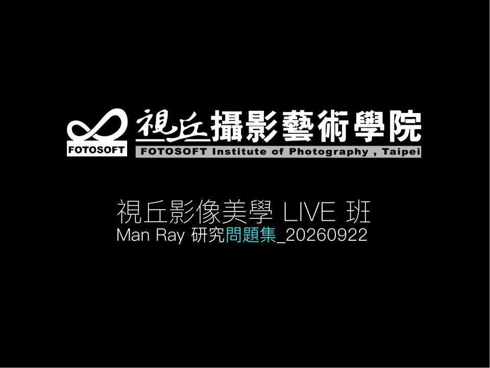
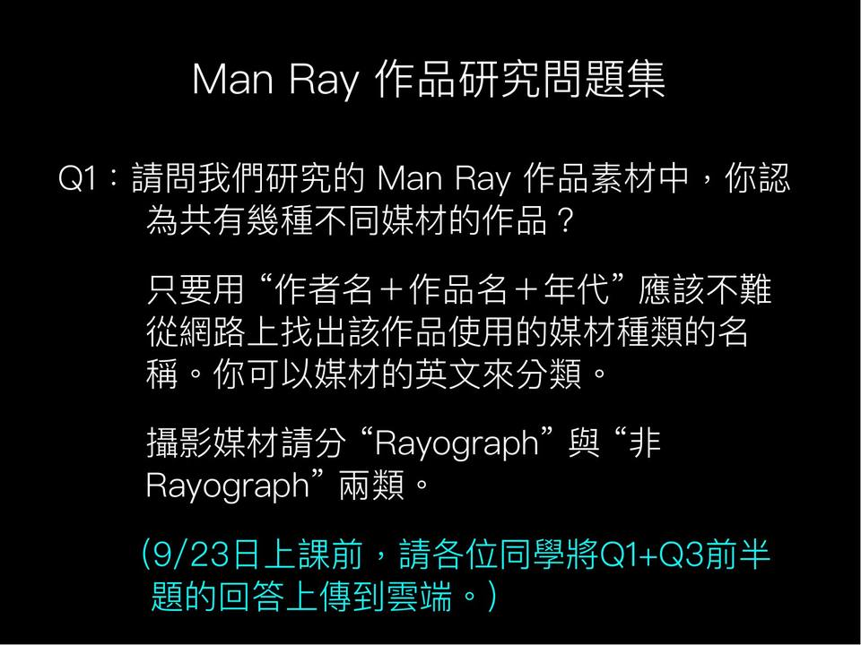
Q1：請問我們研究的 Man Ray 作品素材中，你認為共有幾種不同媒材的作品？
只要用 “作者名＋作品名＋年代” 應該不難從網路上找出該作品使用的媒材種類的名稱。你可以媒材的英文來分類。
攝影媒材請分 “Rayograph” 與 “非 Rayograph” 兩類。
(9/23日上課前，請各位同學將Q1+Q3前半題的回答上傳到雲端。)
NEW逐字轉錄投影片原文（含彎引號與標點）；藍字為原投影片中的藍色字。「Q1+Q3前半題」指 9/23 前先上傳 Q1 與 Q3 的前 5 張選擇，Q3 每張 500～1000 字的書寫在後。
NEWQ1 的作答：304 媒材分類總覽（7 種媒材類別）、305 媒材總表、306 逐頁分類圖庫；分類原則的討論見 719-1 課前問題 1 媒材分類。
本段資料來源
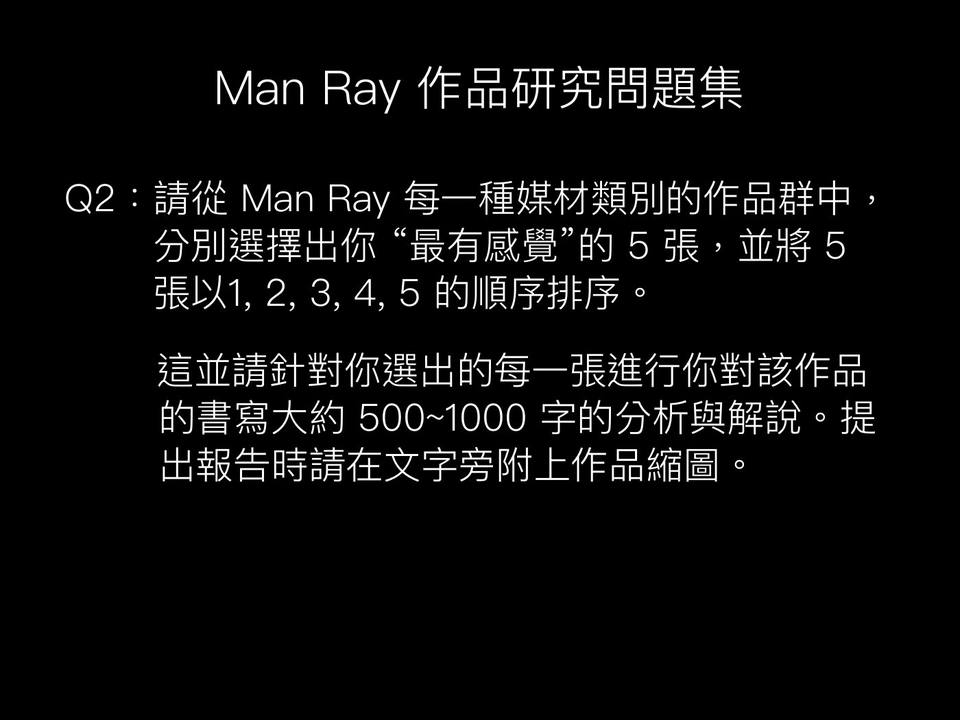
Q2：請從 Man Ray 每一種媒材類別的作品群中，分別選擇出你 “最有感覺”的 5 張，並將 5 張以1, 2, 3, 4, 5 的順序排序。
這並請針對你選出的每一張進行你對該作品的書寫大約 500~1000 字的分析與解說。提出報告時請在文字旁附上作品縮圖。
NEWQ2 的作答（四大類各 Top 5，鄭丁南與 Claude 同學）見 617 Q2 作答；兩人對照見 618-2 Q2 對照。
本段資料來源
Q3 所說「所有類別的最有感覺的作品」，就是 Q2 在每一種媒材類別各選出的 5 張。
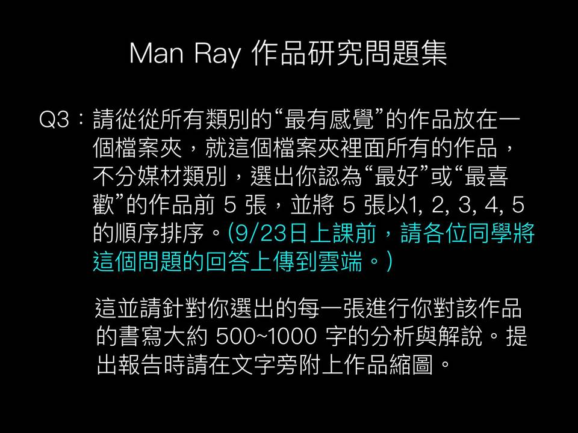
Q3：請從從所有類別的“最有感覺”的作品放在一個檔案夾，就這個檔案夾裡面所有的作品，不分媒材類別，選出你認為“最好”或“最喜歡”的作品前 5 張，並將 5 張以1, 2, 3, 4, 5 的順序排序。(9/23日上課前，請各位同學將這個問題的回答上傳到雲端。)
這並請針對你選出的每一張進行你對該作品的書寫大約 500~1000 字的分析與解說。提出報告時請在文字旁附上作品縮圖。
逐字轉錄投影片原文（含原文「請從從」重複字、彎引號與標點）；藍字為原投影片中的藍色字。
NEWQ3 的作答：614 鄭丁南（Doorar）、615 同學 Top 5、616 Claude 同學；三人對照見 618-1 Q3 對照。
本段資料來源
NEW視丘影像美學 LIVE 班〈Man Ray 研究問題集_20260922〉共 4 頁：封面、Q1、Q2、Q3 各 1 頁。三題是一路接下來的：Q1 先把研究素材依媒材分類 → Q2 在每一種媒材類別各選「最有感覺」的 5 張 → Q3 把 Q2 選出的作品放在一起，不分媒材再選「最好」或「最喜歡」的前 5 張。各題在本網頁的作答位置見 102 作答對照。
| 合計 | 3 題 | |||
|---|---|---|---|---|
| 題號 | 題目重點 | 繳交 | 鄭丁南（Doorar）與同學 | Claude 同學與分析 |
| Q1 | 研究素材中共有幾種不同媒材（medium）的作品；用英文媒材名分類，攝影分 Rayograph 與非 Rayograph | 9/23 上課前（Q1＋Q3 前半題） | 304 媒材分類總覽：7 種媒材類別 | 305 媒材總表、306 逐頁分類圖庫、307 跨媒材與多次創作、308 分類待查、719-1 問題 1 媒材分類 |
| Q2 | 每一種媒材類別各選「最有感覺」的 5 張並排序，每張 500～1000 字分析，附縮圖 | 投影片未註明 | 617 Q2 作答：Photography、Rayograph、Painting、Mixed 四大類各 Top 5 | 617 Claude 同學並列；618-2 Q2 對照 |
| Q3 | 從各類「最有感覺」的作品中，不分媒材選「最好」或「最喜歡」的前 5 張並排序，每張 500～1000 字分析，附縮圖 | 9/23 上課前 | 614 鄭丁南（Doorar）、615 同學 Top 5 | 616 Claude 同學、618-1 Q3 對照 |
Claude：NEWQ1 的 7 種媒材類別是 Q2 分類的前提；本網頁的 Q2 依 Doorar 的提示把 7 類粗分為 4 大類作答。Q3 的候選作品應包含在 Q2 各類 Top 5 裡，所以三題的作答在 617、618 互相對照。Q2 投影片沒有寫繳交時間。
本段資料來源
NEW研究問題集三題的題目重點、繳交時間與本網頁的作答子頁。題目原文見 101 研究問題集。
鍵盤 ← → 可翻頁；點圖全螢幕檢視。下方縮圖點一下即放大，← → 在 295 頁內換圖，再點一下（或 Esc）關閉後回到原來看到的縮圖位置。
本段資料來源
| 合計 | 6 組 | 12 頁 | |||
|---|---|---|---|---|---|
| 判定 | 縮圖 | 素材圖說 | 特徵點 | 比對 | 館方／拍賣紀錄 |
| 確認重複（同一影像重複收錄） | p.62 Untitled (plate 5) from the album Champs Délicieux. 1922 p.81 Untitled (plate 5) from the album Champs Délicieux. 1922 | 380 | Claude 說明Claude：兩頁同為《Champs Délicieux》plate 5（手槍、鑰匙、緞帶），裁切（cropping）、影調完全一致；圖說文字相同，只有版面字級不同。同一圖檔重複收錄。 | MoMA《Champs Délicieux》plate 5（253.1935.5） | |
| 確認重複（同一影像重複收錄） | p.70 Printer Société Générale d’Imprimerie et d’Edition, Paris, 1922 p.77 Untitled (plate 1) from the album Champs Délicieux. 1922 | 14 | Claude 說明Claude：構圖（composition）與物件完全相同（plate 1：燈罩、方塊、線圈）。p.70 帶白邊與簽名（signature）、色調（tone）偏暖，圖說寫印刷商「Printer Société Générale d’Imprimerie et d’Edition, Paris, 1922」；p.77 為黑底無邊版本（version），圖說「plate 1」。是同一作品的不同印本／掃描，影調差異大，所以特徵點對應數低。 | MoMA《Champs Délicieux》plate 1（253.1935.1） | |
| 確認重複（同一影像重複收錄） | p.97 “Rayograph” 1923 p.99 “Rayograph” 1923 | 404 | Claude 說明Claude：同一影像（image）；p.97 外圍多一圈白框（不同掃描來源），兩頁圖說都是「“Rayograph” 1923」。 | — | |
| 確認重複（同一影像重複收錄） | p.100 “Rayograph” 1923 p.117 Rayograph, 1923–28 | 571 | Claude 說明Claude：同一影像；圖說年代不同：p.100「“Rayograph” 1923」，p.117「Rayograhm 1923–28」（素材原文拼字 Rayograhm）。年代以哪一說為準待查。 | — | |
| 確認重複（同一影像重複收錄） | p.101 “Rayograph” 1923 p.231 Rayograph, 1932 | 679 | Claude 說明Claude：同一影像（彈簧與方塊），全頁最相似的一組；圖說年代不同：p.101「1923」，p.231「1932」。Claude：可能是年代誤植（23／32 對調）或不同印製年，待查。 | — | |
| 確認重複（同一影像重複收錄） | p.166 Salvador Dali. 1929 p.173 Salvador Dali. 1929 | 563 | Claude 說明Claude：同一張《Salvador Dalí》1929，畫面（picture plane）與圖說完全相同。 | Centre Pompidou AM 1995-281 (471)（原始玻璃底片） |
Claude：比對方法：295 頁兩兩比對共 43,365 對，先以 ORB 特徵點找出候選，再逐組看圖判定；另把 Q1 分類時已標「重複」的 8 組一併複核。「比對」欄的畫面描述都是 Claude 看圖判斷。
本段資料來源
研究素材 295 頁中確認重複 6 組（每組 2 頁，共 12 頁）。
每組並排縮圖，點縮圖跳到「逐頁瀏覽」看原尺寸（dimensions）。「特徵點」是兩頁影像經 OpenCV ORB 特徵比對並以 RANSAC 幾何驗證後的對應點數，數字愈大愈像（同一圖檔通常 350 以上）。
結論：四張是同一張底片（negative）的四次印相（printing）。底片是 Centre Pompidou 館藏（museum collection）的玻璃底片（glass-plate negative） AM 1995-281 (277)。
| 合計 | 4 張印相 | 1 張底片 | |
|---|---|---|---|
| 頁 | 縮圖 | The Met 館藏（尺寸） | 印相處理（Claude 看圖） |
| p.130 | 903094（22.5 × 16.8 cm） | 直接印相，清晰；看得到菱格地板、手鐲與臉 | |
| p.131 | 903362／903363（28.3 × 18.7 cm，兩張何者對應為推定） | 柔焦（diffusion）＋暗角（vignetting）；臉部壓暗，只剩深色唇形 | |
| p.132 | 903363／903362（28.3 × 18.7 cm） | 與 p.131 幾乎相同，柔焦（soft focus）與暗角更重 | |
| p.133 | 903364（26.4 × 17.3 cm） | 柔焦最重，頭部整塊遮暗，右下鉛筆（pencil）簽名（signature） |
Centre Pompidou 館藏 Alice Prin, dite Kiki de Montparnasse（Kiki），1924，AM 1995-281 (277)：Négatif au gélatino bromure d’argent sur verre（銀鹽玻璃底片），23.5 × 17.5 cm，Don de M. Lucien Treillard, 1995。2026/10/16 經 Chrome 開啟館藏頁取得底片影像（image）。
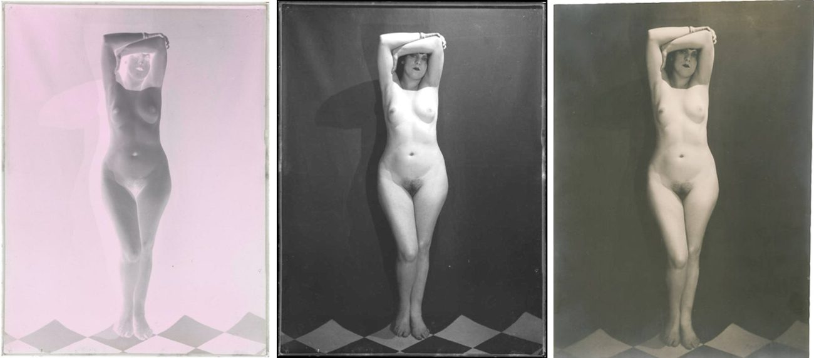
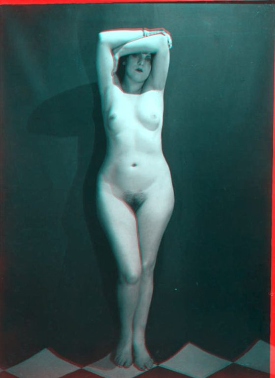
The Met 專文〈More Than a Muse〉（Mark Braude，2025/10/10）把 Bluff Collection 的四張並列，由左到右逐漸模糊（blur），順序與研究素材 p.130–133 相同；圖說尺寸（dimensions）依序為 22.5 × 16.8、28.3 × 18.7、28.3 × 18.7、26.4 × 17.3 cm。館方圖片替代文字原文：
“gradually blurred from left to right”
Claude 中譯：由左到右逐漸模糊
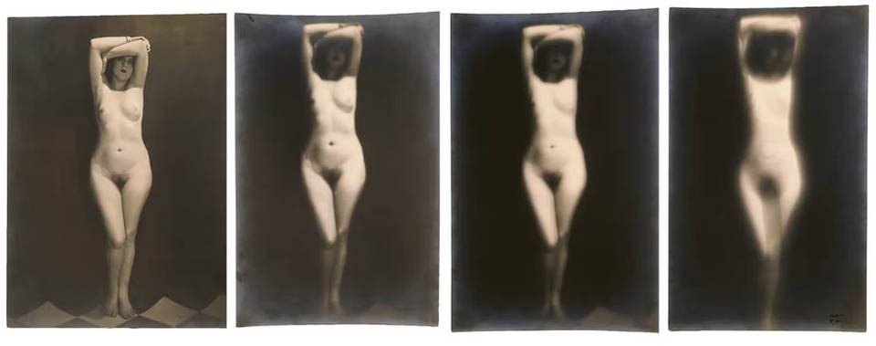
把 p.130 稍微模糊後，與 p.131、p.132、p.133 分別縮放對位疊在一起（紅＝p.130、青＝另一張）：身體輪廓（contour）、交叉的雙腿、膝蓋、腳與地板菱格都重合，紅青錯開只出現在頭部——p.130 橫過額頭的前臂與臉，在另外三張被壓暗遮住。
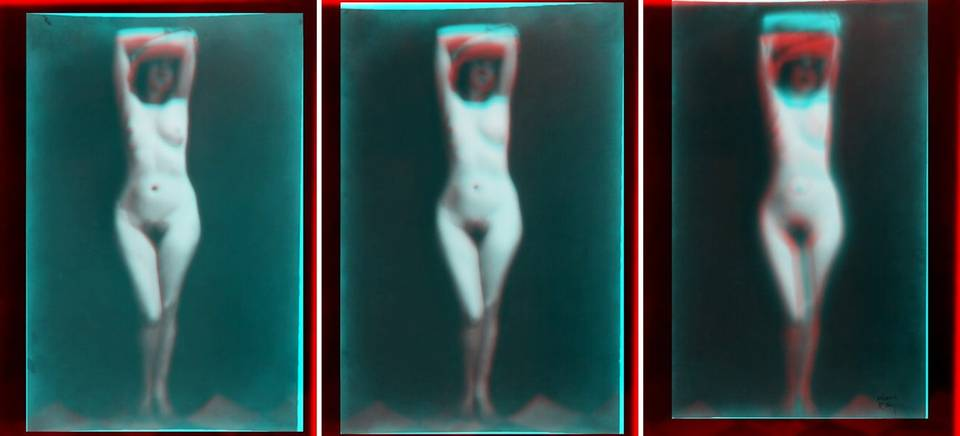
Christie’s 2018 年拍品（Mann Collection，Lot 49，另一件 Kiki 合成照片）的圖錄說明提到，1925 年 1 月 15 日《La Révolution surréaliste》第 2 期刊出其中一張底片刻意模糊、部分遮住的版本（version），並說正面站姿的原始玻璃底片在 Pompidou（館藏號即 277）：
“a deliberately blurred and partly occluded version of one of the negatives”
Claude 中譯：其中一張底片刻意模糊、部分遮住的版本
— Grob Gallery｜Demain; Alice Prin (Kiki de Montparnasse)（轉錄 Christie’s 圖錄說明，2026/10/16 查核）
“The original glass negative for this frontal pose”
Claude 中譯：這個正面站姿的原始玻璃底片
— Artsy｜Alice Prin (Kiki de Montparnasse)（Christie’s 2018 Lot 49）
Claude：判讀過程要說明一個轉折：只比頭部時，p.131–133 看起來是仰頭、張口，像是另一張底片；把身體、雙腿與地板菱格疊圖後，四張完全重合，才確定是同一張底片。頭部的差異來自暗房（darkroom）處理——印相時把臉部壓暗（burning）並加柔焦，原本橫過額頭的前臂與深色口紅，模糊後看起來像仰頭張口。這也與 Christie’s 圖錄所說「刻意模糊、部分遮住」的版本相符。
Claude：仍未確定的部分：p.131 與 p.132 尺寸相同（28.3 × 18.7 cm），對應 903362 還是 903363 無法由館方頁判定（903362 館方頁未列尺寸）；《La Révolution surréaliste》第 2 期刊出的是哪一種模糊程度，尚未取得該期圖版比對。
本段資料來源
| 合計 | 6 件 | |||
|---|---|---|---|---|
| 頁 | 素材圖說 | 組合方式 | 依據等級 | 依據 |
| Tristan Tzara, 1921 | 夾印（sandwich print）：兩張底片疊在一起放大 | 出處明文 | “This picture was also sandwich printed…另一張是上半身裸露的女模特兒（館方原文：a giant topless female model）。Doorar 2026/10/16 已註記「兩張照片沖洗在同一張相紙」。 | |
| Électricité, 1931 | 相機（camera）底片＋photogram（實物投影）同紙曝光 | 出處明文 | “image of a female torso with…軀幹是相機拍的底片，緞帶是直接放在相紙上的 photogram；最後以照相凹版（photogravure）印成作品集。
Claude 說明Claude 判讀：這段原文支持兩件事：一、作品集確實使用 photogram 技法，與 Physical description「photograms of ribbons」一致，緞帶是放在相紙上的實物投影；二、原文沒有直接寫「與相機底片在同一張相紙曝光」，同紙曝光仍是由「軀幹為相機影像＋緞帶為 photogram」推得。另外，原文說印樣（contact sheet）表否定軀幹是 Lee Miller，與同館 2016 年展籤「his partner…Lee Miller」的說法不同，以較新的 Summary 為準。 | |
| Salle de Bain from the portfolio Electricité. 1931 | 相機底片＋photogram 同紙曝光 | 出處＋Claude 看圖 | “torso of a woman (Lee Miller) with an…
Claude 說明Claude 看圖：熱水器是白色剪影（silhouette）、沒有立體光影（light and shadow），屬 photogram；軀幹是相機影像。 | |
| Dora Maar, 1936 | 多重影像疊合（臉、多隻手、玻璃裂紋） | 彙整網站＋Claude 看圖 | Artchive（彙整網站，非館方）描述為 “the…Artchive（彙整網站，非館方）描述為 “the superimposition of several hands” 與 “double exposure technique”（Claude 中譯：多隻手的疊合、雙重曝光技法）：Artchive｜Dora Maar (1936)。 Claude 說明Claude：雙重曝光可能在相機裡完成（同一張底片曝光兩次），也可能在暗房（darkroom）把兩張底片疊印（superimposition）；手的大小不一、裂紋貫穿整張，較像暗房疊印，但沒有館方資料，列為待確認。 | |
| Marchesa Luisa Casati, 1922 | 底片上的疊影（surimpression）：原始軟片底片本身已有重疊、錯位的影像，再以這張底片印相（printing） | 館方紀錄（底片） | 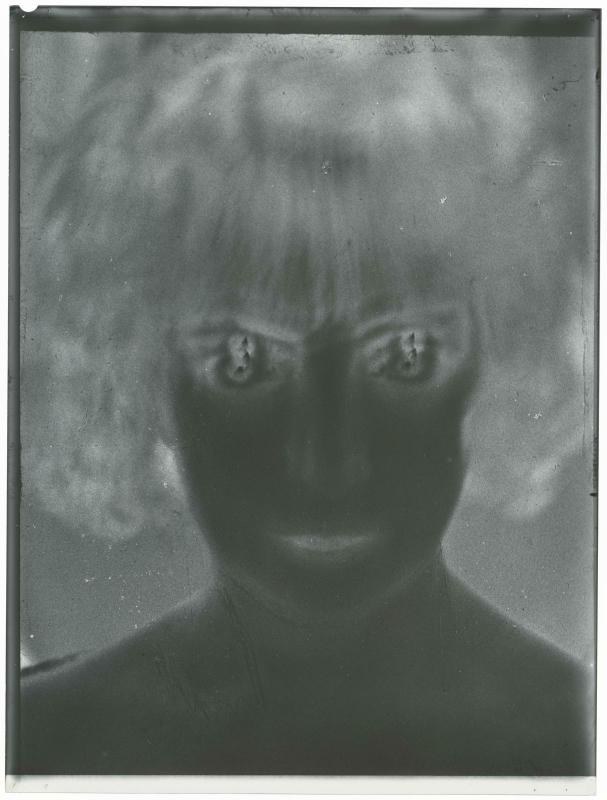 Centre Pompidou 原始軟片底片，索引詞 surimpression…
Claude 說明Claude：館方把 surimpression（疊印）標在原始底片這一筆，表示多重的眼睛與輪廓（contour）在底片上就已存在，印相時只用這一張底片；這與本頁判準中「單一底片因人物移動產生的重影」的情形接近。依 Doorar 指示改列本表，原判讀保留供對照。 | |
| Fly, 1935–1936 | 疊印（combination print）：昆蟲標本底片＋海岸風景底片 | 館方紀錄（底片） | Centre Pompidou AM 1994-393 (4543)、(4544)：只拍昆蟲的 6 × 9 cm 底片…Centre Pompidou AM 1994-393 (4543)、(4544)《Mouche》vers 1930，Négatif gélatino-argentique sur support souple，6 × 9 cm：底片只有這隻蜂、背景均勻、沒有風景，與 p.244 疊合外形重合 → 風景來自另一張底片。Getty 84.XM.1000.131 只登錄 Gelatin silver print。 Claude 說明Claude：原列「二、Claude 看圖判斷」，2026/10/20 找到 Pompidou 原始昆蟲底片後改列本表；印相方式（依序印在同一張相紙）仍是由腳跨山稜線沒有斷層推論。詳見 203-7 p.244 Fly。 | |
| 合計 | 8 件 | |||
|---|---|---|---|---|
| 頁 | 素材圖說 | 組合方式 | 依據等級 | 依據 |
| Rayograph, 1921 | 電影膠卷放在相紙上（每一格都是一張負片）＋物件（object） photogram | Claude 看圖判斷 | Claude 說明Claude 說明Claude：每一格膠卷畫格都是一張已沖洗（processing）的負片，和物件一起放在相紙上曝光：多張底片與實物投影（photogram）同時印在同一張相紙。Museo Reina Sofía AD02056 同年作品登錄為 “Rayograph and gelatin silver print”（未確定同一張）。 | |
| “Rayograph” 1923 | 電影膠卷捲成環狀放在相紙上 | Claude 看圖判斷 | Claude 說明Claude 說明Claude：捲曲的膠卷畫格（多張負片）直接在相紙上曝光；p.117 是同一影像（203-2 已判為重複）。 | |
| Duchamp with Diagram of Large Glass, c.1923 | 肖像底片＋白色圖形（《大玻璃》圖解） | Claude 看圖判斷 | Claude 說明Claude 說明Claude：Duchamp 肖像（portrait）有相機的光影，《大玻璃》（The Large Glass）圖解是純白、無光影的線條（line），像剪紙或另一張圖形負片疊印在肖像上。Doorar 已判為 02 Rayograph；本件無館方紀錄。 | |
| Untitled (Reflections), 1926 | 兩個影像疊印（網與眼睛） | Claude 看圖判斷 | Claude 說明Claude 說明Claude：網狀物與大眼睛兩個不同比例的影像交疊、互相透出，不是同一場景；MoMA 200.1941 只登錄 Gelatin silver print，沒有技法說明。 | |
| Electricite - Cuisine, 1931 | 相機底片（烤鴨）＋photogram（螺旋電熱線） | Claude 看圖判斷 | Claude 說明Claude 說明Claude：V&A E.1655-2001 只寫「image of a roast duck」；螺旋線是白色剪影、穿過盤子，Claude 看圖判斷是 photogram 疊在照片上。 | |
| Le Monde from the portfolio Electricité. 1931 | 相機底片（月亮）＋photogram（電線與插頭） | Claude 看圖判斷 | Claude 說明Claude 說明Claude：月亮是天文照片式的相機影像，電線與插頭是白色剪影；MoMA 395.1942.2 只登錄 Photogravure。 | |
| Untitled. 1931 | 兩次影像重疊（拉手風琴的女子） | Claude 看圖判斷 | Claude 說明Claude 說明Claude：手風琴有兩個錯位的影像，一個實、一個半透明；可能是相機內兩次曝光，也可能是兩張底片疊印，無館方紀錄。 | |
| Untitled. 1932 | 兩個影像疊印（軀幹＋玻璃碗與燈泡） | Claude 看圖判斷 | Claude 說明Claude：人體與玻璃器皿兩個影像互相透出；無館方紀錄。 | |
| 合計 | 5 件 | |||
|---|---|---|---|---|
| 頁 | 素材圖說 | 判定 | 說明 | |
| Photographic black-and-white illustration for Louis Aragon’s surrealis | 疊放（superposition）後翻拍，不是同紙曝光秀容 | 把不同照片剪成橫條拼成一張臉，再翻拍成一張底片（Centre Pompidou AM 1994-393 (3980) 為 1966 年底片）。 NEW秀容 Doorar：眼睛位置以暗房加曬處理？（2026/10/17）證據（2026/10/31 追查）：Man Ray 官方圖庫 Telimage（manray-photo.com）同 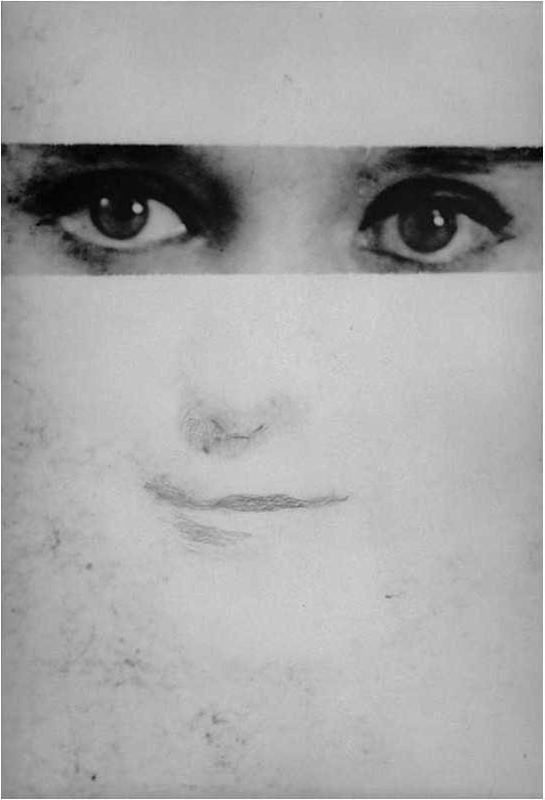 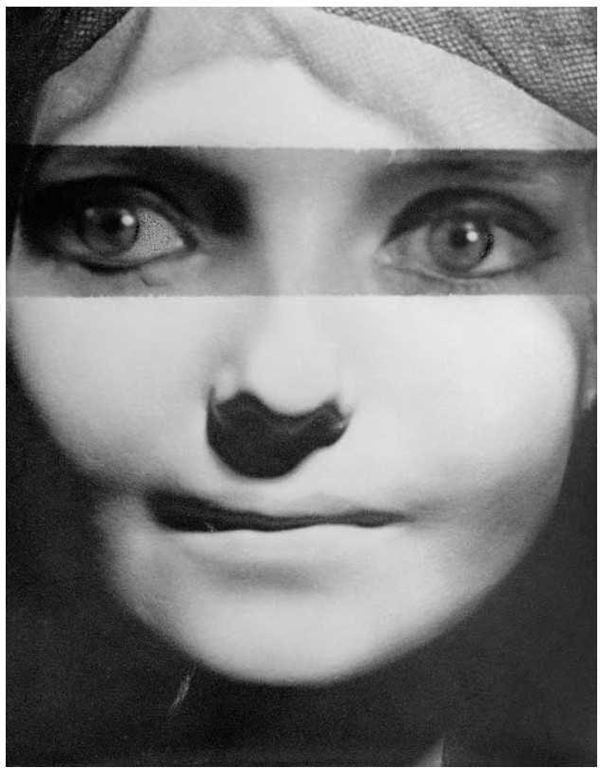 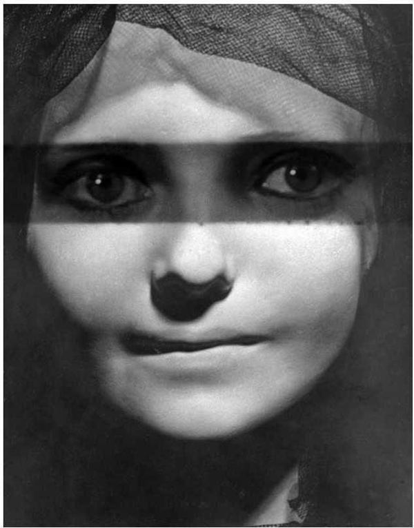
Claude 說明Claude：《Eyes》證明 Claude：年代 出處：Telimage｜Illustrations de livres surréalistes（Aurélien 系列 7 張，皆 Claude 說明Claude 看圖：眼睛那一條比上下兩條明顯偏暗，上下邊緣是筆直、銳利（sharpness）的分界線，皮膚紋理與比例也和下半臉不同。暗房加曬（burning in）通常會留下柔和漸層的邊緣，不會出現這種筆直切線；較可能是這一條來自另一張印得較深的照片，剪下後拼貼。也不排除拼貼前先把這一條加曬，或翻拍後再局部加曬，研究素材解析度無法分辨，列為待查。 | ||
| I do not see the (Woman) Hidden in the Forest, 1929 | 照片拼貼 | 照相亭肖像與 Magritte 畫作的剪貼拼版，各張照片分別沖洗後再貼合。NEW秀容作品 | ||
| La Ville from the portfolio Electricité. 1931 | 多重曝光（multiple exposure），待查 | 霓虹招牌多重曝光；是同一張底片多次曝光，還是多張底片疊印，尚無資料可判斷。NEWV&A O66887 記為 multiple exposures（據說在計程車上拍），已改列 203-6 重覆曝光 有出處說明。 | ||
| Observatory Time: The Lovers, 1936 | 待查 | 油畫翻拍與下方裸女是否為兩張底片疊印，Sotheby’s 拍品頁只記 Silver print。 | ||
| Marine, 1925 | 待查 | The Met 914235 登錄 Gelatin silver print；月亮與船形像剪紙投影（projection），是否與雲層底片疊印未能確定。 | ||
這一段的照片取自 Q3 課堂簡報 614-6 蜂飛記簡報；不是研究素材，只作對照。
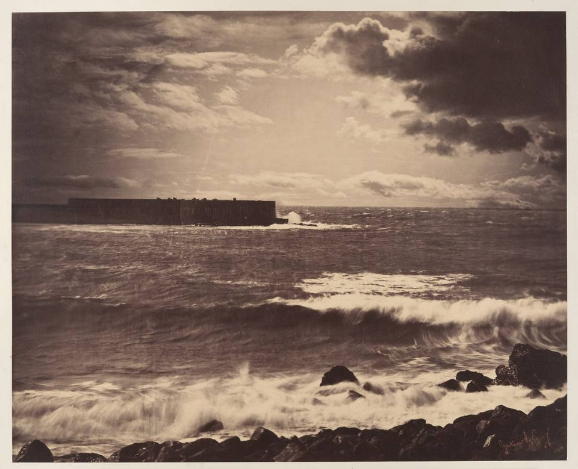
NEW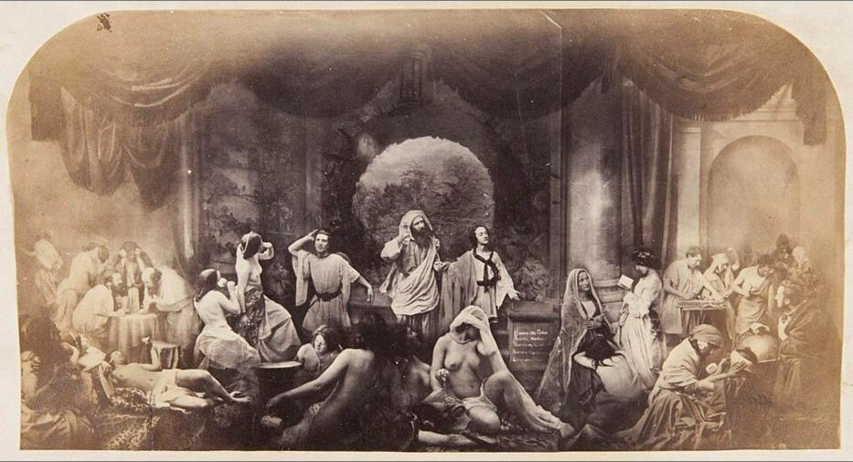
NEW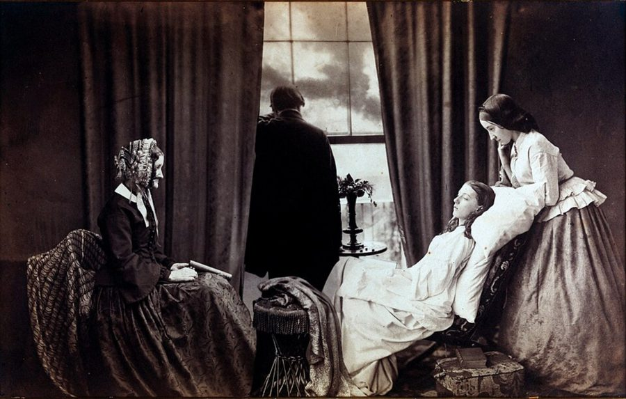
NEWAt the horizon, the clouds are cut off where they meet the sea. This indicates the join between two separate negatives.
Claude 中譯：在海平線，雲在與海相接處被截斷，這表示兩張不同底片的接縫。
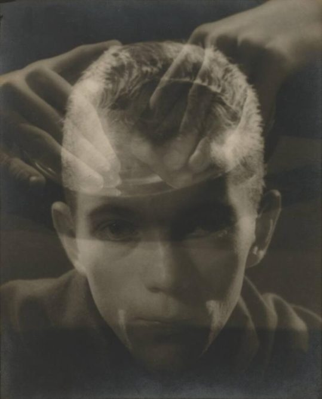
NEW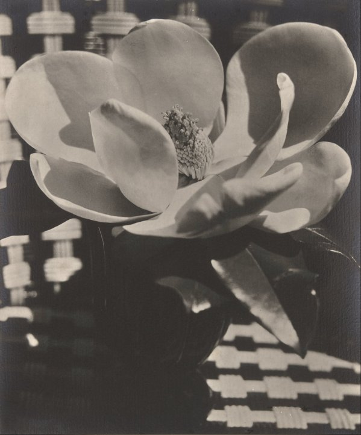
NEW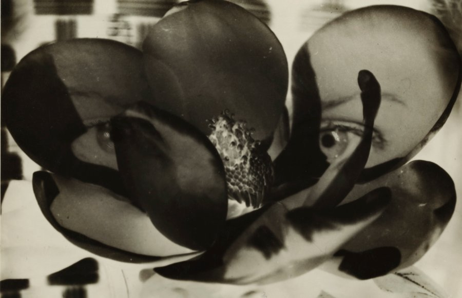
NEWthe artist experimented with a double exposure during the printing process by layering two negatives on top of each other
Claude 中譯：藝術家在印相過程中做雙重曝光的實驗，把兩張底片疊在一起。
two of Man Ray’s photographs are printed together
Claude 中譯：兩張 Man Ray 的照片被印在一起。
Claude：「多張底片印在同一張相紙」不是 Man Ray 發明的：1857 年 Le Gray 為了讓海與天都曝光正確，就把兩張底片接在海平線上；Rejlander、Robinson 更用 5～32 張底片拼成一張畫面（picture plane）。Man Ray 1920 年代的例子（MFAH、Magnolia）是把兩張底片「疊」在一起，成果是透明互相滲透的疊影（superimposed image）；p.244 的蜂則是實心剪影，用法不同，見 203-7 三、。
本段資料來源
研究素材中，不同底片（或底片＋實物投影）在同一張相紙（photographic paper）上曝光（exposure）的照片（photograph）共 14 件：有出處說明 6 件、Claude 看圖判斷 8 件；另列 5 件相關但不算或待查。
判準：一張相紙上同時印入兩張以上的底片（夾印 sandwich print、疊印 combination printing），或相機底片（negative）與直接放在相紙上的物件（photogram／rayograph）一起曝光；電影（film）膠卷（film stock）畫格（film frame）本身就是負片，放在相紙上一起曝光也算。相機裡同一張底片曝光兩次（in-camera double exposure）、剪貼拼版後翻拍（rephotography）、單一底片因人物移動產生的重影（ghosting），都不算。2026/10/16 逐頁看過 01 攝影（photography）、02 Rayograph、06 拼貼（collage）共 209 頁後整理。
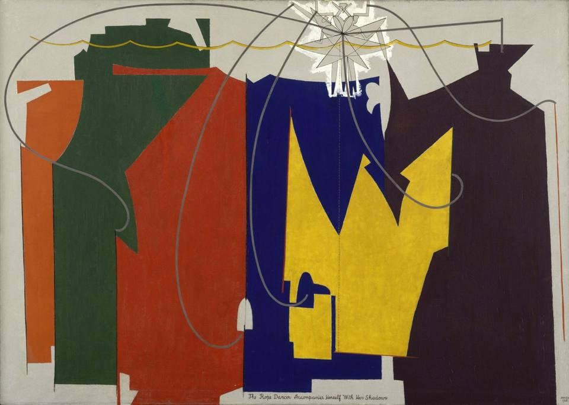
NEW| 編號 | p.25-1（接在 p.25 後） |
|---|---|
| 作品 | The Rope Dancer Accompanies Herself with Her Shadows（走索舞者與她的影子相伴），1916 |
| 媒材原文 | Oil on canvas |
| 尺寸 | 132.1 × 186.4 cm |
| 出處 | MoMA 33.1954（Gift of G. David Thompson）；圖取自本機 Man Ray (Emmanuel Radnitzky). The Rope Dancer Accompanies Herself with Her Shadows. 1916 | MoMA.webarchive |
| 分類 | 03 油畫（306-3） |
| 為什麼補入 | Doorar 2026/10/19 決定：研究素材 p.25 是 1970 石版畫（15/99），依課前問題 1 留在 05 紙上作品與印刷品（lithograph）；把 MoMA 的 1916 油畫原作另外做成研究素材 p.25-1，Q2 Painting 第 2 名改用這一張。 |
研究素材 PDF 295 頁以外補入的作品圖，編號接在相關頁碼後面（p.25-1 接在 p.25 後），不計入研究素材 253 件作品。
| 合計 | 3 件 | |||
|---|---|---|---|---|
| 頁 | 素材圖說 | 重覆曝光方式 | 依據等級 | 依據 |
| La Ville from the portfolio Electricité. 1931 | 多重曝光（multiple exposure）：巴黎市中心的霓虹招牌，一張畫面疊了多次曝光 | 館方說明 | V&A：“multiple exposures of neon advertising signs…另見 MoMA 395.1942.3（Photogravure, printed 1931）。 Claude 說明Claude：V&A 寫明是 multiple exposure，但沒寫是同一張底片多次曝光還是多張底片疊印；「在計程車上拍」較像相機內（in-camera）連續曝光。203-4 原列「待查」，本頁依 V&A 改列有出處。 | |
| Marchesa Luisa Casati, 1922 | 底片本身已有疊影（surimpression）：眼睛與輪廓重複出現，問題發生在拍攝當下，不是暗房 | 館方紀錄（底片） | Centre Pompidou 原始軟片底片，索引詞 surimpression…
Claude 說明Claude：疊影（superimposed image）在底片上就有，所以是相機內的重覆曝光，或長曝光時 Casati 移動頭部造成的雙影；館方用 surimpression（疊印）一詞，兩種說法都可能。底片圖見 203-4。 | |
| Dora Maar, 1936 | 雙重曝光（double exposure）：臉、多隻手、玻璃裂紋疊在一起 | 彙整網站 | Artchive：“double exposure technique”…Artchive（彙整網站，非館方）描述為 “the superimposition of several hands” 與 “double exposure technique”（Claude 中譯：多隻手的疊合、雙重曝光技法）：Artchive｜Dora Maar (1936)。 Claude 說明Claude：可能在相機（camera）裡完成，也可能在暗房（darkroom）把兩張底片疊印（superimposition）；手大小不一、裂紋貫穿整張，較像暗房疊印，無館方資料。 | |
“A pestle placed on the paper seems stable, until one notices a faint doubling at its edge, suggesting that it shifted during exposure.” … “Objects reappear and effects repeat. Certain visual strategies such as angled light, suspended forms, and layered exposures suggest iteration rather than happenstance.”
Claude 中譯：放在相紙上的杵看起來很穩，直到注意到邊緣有一道淡淡的雙影，表示它在曝光中被移動過。……物件一再出現、效果一再重複；斜射光、懸空的形體與層層疊加的曝光（layered exposures），顯示這是反覆試驗，不是偶然。
| 合計 | 13 件 | |||
|---|---|---|---|---|
| 頁 | 素材圖說 | 重覆曝光方式 | 依據等級 | 依據 |
| Untitled. 1931 | 相機影像：同一位拉手風琴的女子與手風琴出現兩個錯位影像，一實一半透明 | Claude 看圖判斷 | Claude 說明Claude：手風琴的風箱、按鍵與女子的手各有兩組，位置錯開、明暗（chiaroscuro）不同，臉旁有一道斜向的亮帶；應是同一張底片曝光兩次（或兩張底片疊印），查無館方紀錄。 | |
| Untitled. 1932 | 相機影像：女性軀幹與玻璃碗、燈泡兩個影像互相透出 | Claude 看圖判斷 | Claude 說明Claude：碗的外緣以外（畫面右側）仍看得到軀幹，所以不只是玻璃反射，較像兩次曝光；但也不排除軀幹是映在碗後方的反射，列為待確認。 | |
| Untitled (Reflections), 1926 | 相機影像：網、眼睛與鏡片、嘴唇不同比例互相疊合 | Claude 看圖判斷 | Claude 說明Claude：三個不同比例的影像互相透出，不是同一個場景；題名（title） Reflections（反射）可能指鏡片或玻璃反射。MoMA 200.1941 只登錄 Gelatin silver print，沒有技法說明。 | |
| “Rayograph” 1923 | Rayograph：人形剪影旁有一層錯開的灰色剪影（silhouette） | Claude 看圖判斷 | Claude 說明Claude：白色剪影是物件一直蓋著的部分，旁邊錯開的灰色是第一次曝光後把物件移開一點再曝光留下的；這正是 Met 文章說的「邊緣的淡淡雙影」。 | |
| “Rayograph” 1923 | Rayograph：每個形狀外緣都有錯開的灰色外殼 | Claude 看圖判斷 | Claude 說明Claude：鞋楦、木塊等每一件都有往同一方向錯開的灰色外殼，是整組物件移動後再曝光。 | |
| Rayograph, 1923–28 | Rayograph：形狀旁有錯開的灰影 | Claude 看圖判斷 | Claude 說明Claude：與 p.103 同一組物件（object），灰影錯開的方向不同，也是移動後再曝光。 | |
| Rayograph, 1925 | Rayograph：同一隻手出現三次，位置與明暗不同 | Claude 看圖判斷 | Claude 說明Claude：三隻手的手形相同、亮度不同，是手放在相紙上曝光一次、移位再曝光，共三次以上。 | |
| La Maison, 《家》1931 | Rayograph：燈泡有白、灰、深灰三種明度 | Claude 看圖判斷 | Claude 說明Claude：深灰那顆燈泡只擋住一小段曝光就被拿走，白色的一直擋到最後；不同明度＝不同物件在不同時間放上或拿走，是分段多次曝光。V&A 登錄為 photogram image of a lamp shade and light bulbs（E.1650-2001）。 | |
| Rayograph, 1923–28 | Rayograph：兩條 N 形木條是灰色、琴橋是白色 | Claude 看圖判斷 | Claude 說明Claude：木條是半途才拿走（或半途才放上），琴橋全程擋光，所以明暗不同；屬分段曝光。 | |
| Rayograph, 1924 | Rayograph：鋸齒、環形一再重複並半透明疊合 | Claude 看圖判斷 | Claude 說明Claude：同一組紙條在不同位置出現多次、彼此透出，是多次移動、多次曝光。 | |
| Lingerie from the portfolio Electricité. 1931 | Rayograph：熨斗與夾具外緣出現錯位的灰色輪廓（contour） | Claude 看圖判斷 | Claude 說明Claude：白色熨斗旁有錯開的灰色輪廓，夾具的齒也有兩層，是物件移動後再曝光；最後以照相凹版印成作品集。 | |
| Le Souffle from the portfolio Electricité. 1931 | Rayograph：風扇葉片多個角度疊合 | 館方說明＋Claude 看圖 | V&A：“the illusion of the rotating blades”…
Claude 說明Claude：V&A 沒寫怎麼做；葉片有多個半透明角度，Claude 看圖判斷是轉動葉片後多次曝光。 | |
| Rayograph,1922. | Rayograph：兩隻手明暗不同，一隻白、一隻灰透 | Claude 看圖判斷 | Claude 說明Claude：白手全程擋光，灰透的手只擋住一段曝光；也可能是手離相紙較遠造成，較像分兩次曝光。 | |
| 合計 | 11 件 | |||
|---|---|---|---|---|
| 頁 | 素材圖說 | 判定 | 說明 | |
| Tristan Tzara, 1921 | 影像疊合，但不是重覆曝光 | 夾印（sandwich print）是把兩張底片疊在一起，放大時通常只曝光一次（The Met 1997.53：“sandwich printed by the artist with another image”）。見 203-4。 | ||
| Électricité, 1931 | 待查 | 相機底片（軀幹）＋photogram（緞帶）：可能在放大機（enlarger）下同一次曝光完成，也可能分兩次；V&A E.1653-2001 只寫 “female torso with photograms of ribbons”。 | ||
| Salle de Bain from the portfolio Electricité. 1931 | 待查 | 相機底片（軀幹）＋photogram（熱水器）：同上，曝光次數無資料。 | ||
| Electricite - Cuisine, 1931 | 待查 | 相機底片（烤雞）＋photogram（螺旋電熱線）：同上。 | ||
| Le Monde from the portfolio Electricité. 1931 | 待查 | 相機底片（月亮）＋photogram（電線與插頭）：同上。 | ||
| Duchamp with Diagram of Large Glass, c.1923 | 待查 | 肖像底片與白色《大玻璃》圖解疊合；是圖解放在相紙上一起曝光，還是分兩次，查無館方紀錄。 | ||
| Space Writing (Self-Portrait), 1935 | 不算：長時間曝光 | 快門長時間打開、拿光源（light source）在空中寫字，一次曝光形成光軌（Bowdoin 1987.15）；畫面重疊來自移動，不是重覆曝光。411 技法表原寫「相機內多重曝光（待查）」，以本頁為準。 | ||
| Photographic black-and-white illustration for Louis Aragon’s surrealis | 不算：拼貼後翻拍 | 照片剪成橫條拼成一張臉再翻拍；見 203-4。 | ||
| Marine, 1925 | 待查 | The Met 914235 只登錄 Gelatin silver print；月亮與船形像剪紙投影（projection），是否與雲層底片分兩次曝光未能確定。 | ||
| Untitled (plate 3) from the album Champs Délicieux. 1922 | 待確認 | 左右兩隻手是半透明的灰色、輪廓模糊（blur）：可能是手懸在相紙上方（離紙越遠越模糊），也可能是分兩次曝光。 | ||
| Rayograph, 1925 | 待確認 | 圓盤中央的手是半透明的灰色，同 p.79，無法分辨是懸空或分段曝光。 | ||
這一段的照片取自 Q3 課堂簡報 614-6 蜂飛記簡報；不是研究素材，只作對照。
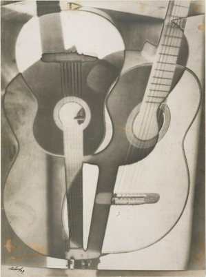
NEWdouble exposure, combination printing, montage, and solarization … In the works of Man Ray and Maurice Tabard
Claude 中譯：雙重曝光、合成印放、蒙太奇與中途曝光……在 Man Ray 與 Maurice Tabard 的作品中
本段資料來源
NEW研究素材中，同一張底片（negative）或同一張相紙（photographic paper）曝光（exposure）兩次以上、讓影像重疊的照片（photograph）共 16 件：有出處說明 3 件、Claude 看圖判斷 13 件（相機影像 3、Rayograph 10）；另列 11 件相關但不算或待查。
判準：重覆曝光（multiple exposure／double exposure）＝同一張感光材料接受兩次以上曝光。包括三種：相機內（in-camera）同一張底片拍兩次以上；暗房（darkroom）同一張相紙分次印入不同底片；Rayograph 在同一張相紙上分次曝光，中間移動、加上或拿走物件（白＝全程擋光、灰＝只擋一段、錯開的灰影＝移動過）。夾印（兩張底片疊在一起一次曝光）、長時間曝光（long exposure）的光軌、拼貼後翻拍（rephotography），影像雖然重疊，都不算。和 203-4 多底片同紙曝光 的差別：203-4 看「不同底片印在同一張相紙」，本頁看「同一張底片或相紙曝光幾次」；兩頁都列的作品互相註明。2026/10/20 逐頁看過研究素材 253 件後整理。
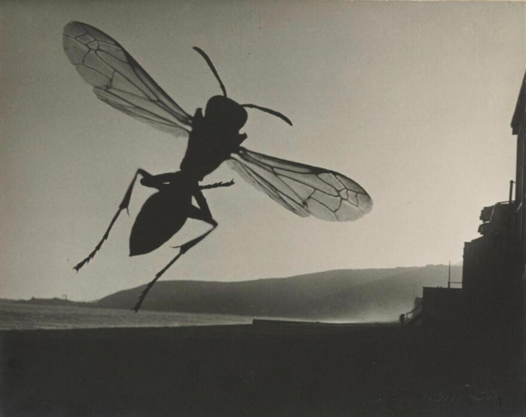
NEW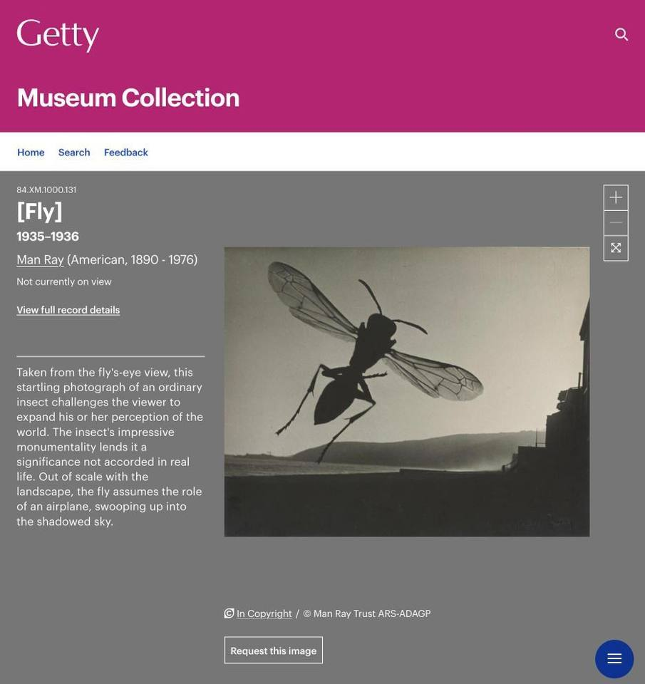
NEW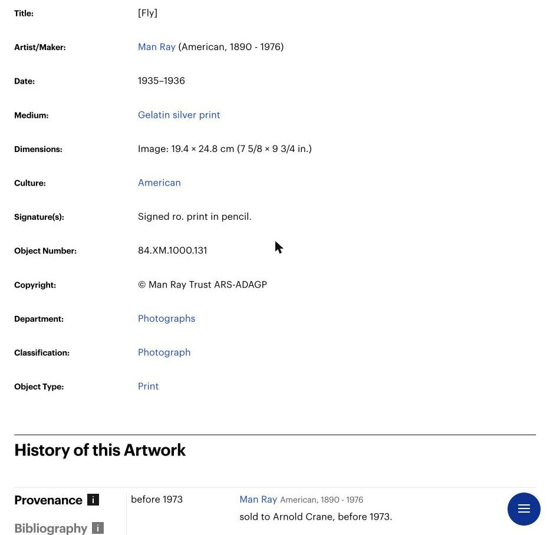
NEW| 館方 | J. Paul Getty Museum（Los Angeles） |
|---|---|
| Title | [Fly]（方括號是館方代擬的題名，不是 Man Ray 自己取的） |
| Date | 1935–1936 |
| Medium | Gelatin silver print（銀鹽照片） |
| Dimensions | Image: 19.4 × 24.8 cm（7 5/8 × 9 3/4 in.） |
| Signature(s) | Signed ro. print in pencil.（正面右下鉛筆簽名，與素材圖右下的簽名位置一致） |
| Object Number | 84.XM.1000.131 |
| Provenance | before 1973：Man Ray → 售予 Arnold Crane；before 1973–1984：Arnold Crane → 1984 售予 J. Paul Getty Museum |
| Copyright | © Man Ray Trust ARS-ADAGP |
| 連結 | https://www.getty.edu/art/collection/object/104AND（舊網址 objects/46814 轉到同頁） |
| 圖像比對 | 圖像相符（館方圖與素材 p.244 同一張：蟲的姿勢、翅脈、右側建築、右下簽名都一致） |
“Taken from the fly’s-eye view, this startling photograph of an ordinary insect challenges the viewer to expand his or her perception of the world. The insect’s impressive monumentality lends it a significance not accorded in real life. Out of scale with the landscape, the fly assumes the role of an airplane, swooping up into the shadowed sky.”
Claude 中譯：從蒼蠅的視角拍攝，這張驚人的照片把一隻平凡的昆蟲放大，挑戰觀者擴展對世界的感知。昆蟲壯觀的巨大感，賦予牠現實生活中沒有的重要性。與風景不成比例，這隻「蠅」像一架飛機，俯衝進陰影籠罩的天空。
— J. Paul Getty Museum 84.XM.1000.131｜[Fly], 1935–1936（館方解說，2026/10/20 經 Chrome 查核）
Claude：Getty 的題名加方括號 [Fly]，表示是館方編目時代擬的題名（title）；館方解說也一路稱牠為 fly，但沒有做昆蟲鑑定。館方只登錄 Gelatin silver print，沒有說明怎麼拍、怎麼印。
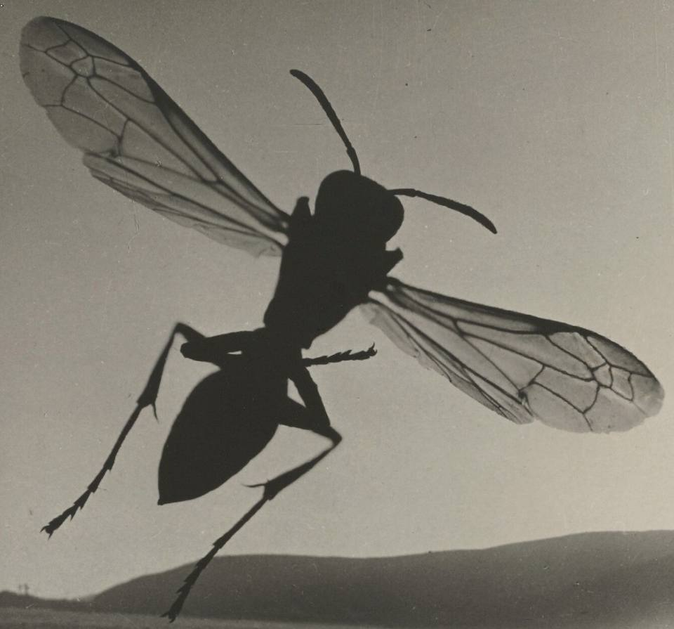
NEW| 合計 | 4 項特徵 | |||
|---|---|---|---|---|
| 部位 | 放大圖 | 看到什麼 | 依據等級 | 判讀 |
| 翅膀（wing） | 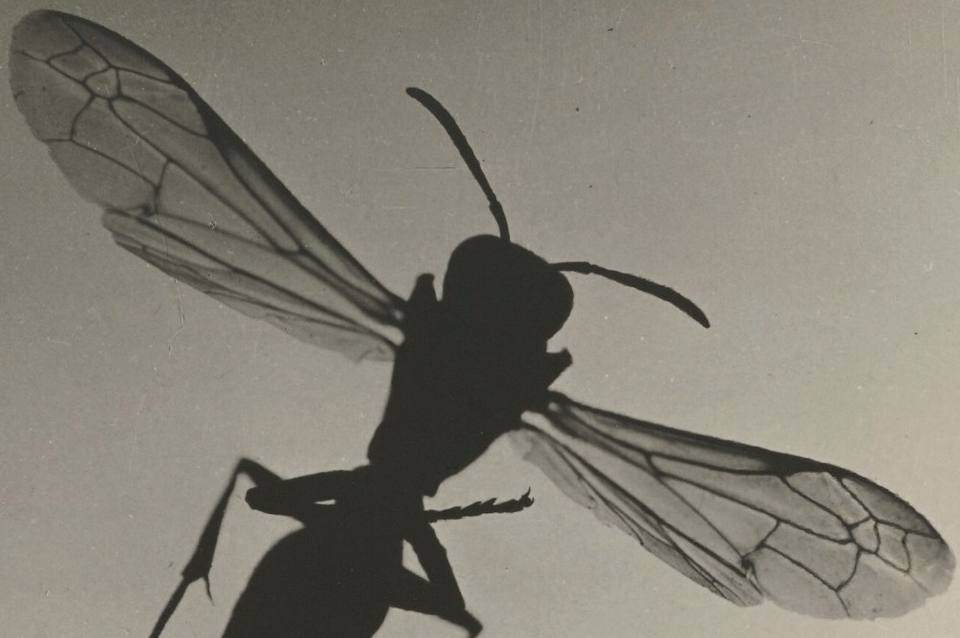 | 兩對：前翅大、後翅小，後翅疊在前翅後緣；前翅有翅痣（pterostigma）、3 個亞緣室（submarginal cell） | Claude 看圖判斷 | Claude 說明Claude：蠅類（Diptera，雙翅目）只有一對翅，後翅退化成平衡棍（haltere）；兩對膜質翅＝膜翅目（Hymenoptera）。所以不是 fly。 |
| 觸角（antenna） | 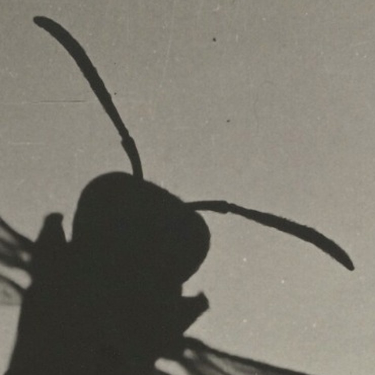 | 細長、分很多節，往末端漸粗、末端彎 | Claude 看圖判斷 | Claude 說明Claude：蠅的觸角很短（3 節＋觸角芒）；細長往末端漸粗是胡蜂科長腳蜂（Polistes）常見的觸角形狀。 |
| 腰部與腹部（waist／metasoma） | 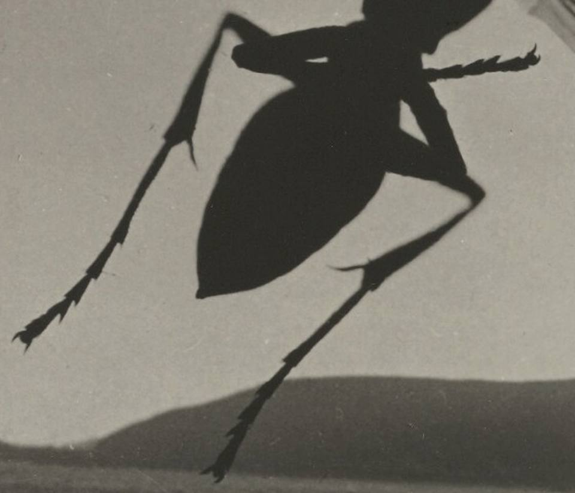 | 胸、腹之間明顯縮窄；腹部紡錘形、兩端尖 | Claude 看圖判斷 | Claude 說明Claude：典型 wasp（蜂）體型；Polistes 的腹部正是兩端漸尖的紡錘形。 |
| 腳（leg） | 很長，飛行時後腳往下垂；脛節（tibia）末端有距（spur），跗節（tarsus）有細刺 | Claude 看圖判斷 | Claude 說明Claude：「飛行時長腳下垂」是 Polistes（paper wasp，長腳蜂）最有名的特徵，英文俗名也因此有人叫 long-legged wasp；蛛蜂科（Pompilidae）腳也長而多刺，剪影無法完全排除。 | |
Claude：結論：膜翅目（Hymenoptera）的 wasp，最可能是胡蜂科（Vespidae）長腳蜂屬 Polistes（paper wasp）；法國常見種有 Polistes dominula（European paper wasp），但剪影看不到體色斑紋，鑑定到「種」做不到，最多到屬或科。備選：蛛蜂科（Pompilidae，spider wasp）。所以 Getty 的題名 [Fly] 與館方解說的 “fly” 在昆蟲學上不準確。
2026/10/20 經 Chrome 在 Centre Pompidou 館藏搜尋「Man Ray mouche」找到兩張館方底片，題名都是 Mouche（蒼蠅）：底片上只有這隻蜂，背景是一片均勻的亮背景，沒有任何風景；蜂的姿勢（pose）與 p.244 一樣。
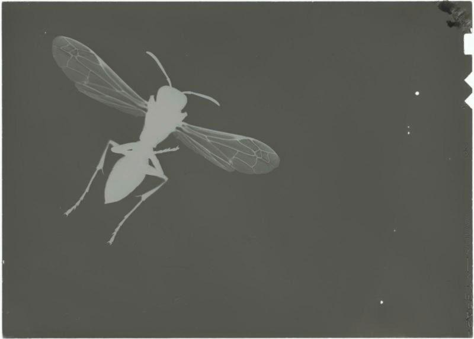
NEW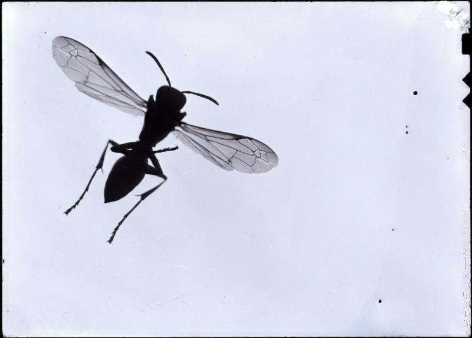
NEW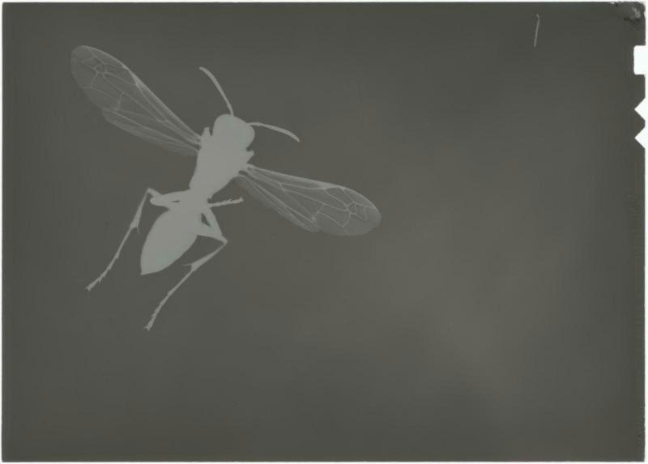
NEW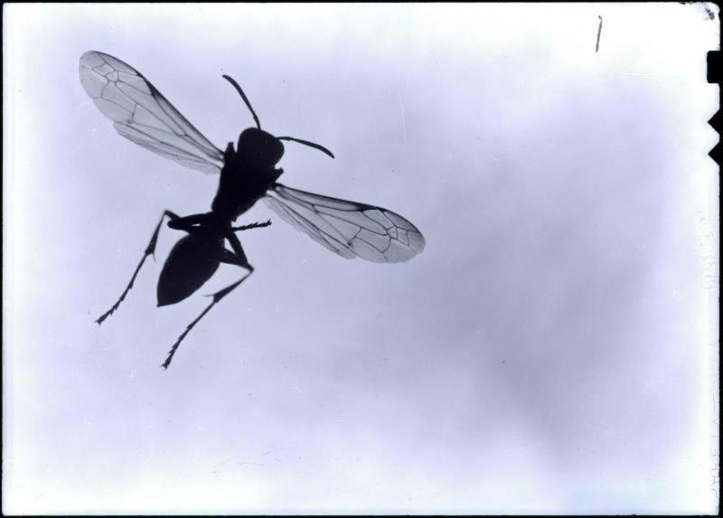
NEW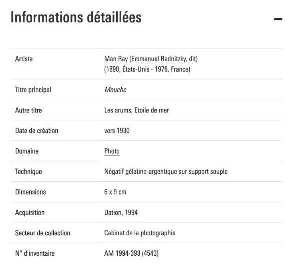
NEW| 欄位 | AM 1994-393 (4543) | AM 1994-393 (4544) |
|---|---|---|
| Titre principal | Mouche | Mouche |
| Autre titre | Les arums, Etoile de mer | Les arums, Etoile de mer |
| Date de création | vers 1930 | vers 1930 |
| Technique | Négatif gélatino-argentique sur support souple（銀鹽軟片底片） | Négatif gélatino-argentique sur support souple |
| Dimensions | 6 × 9 cm | 6 × 9 cm |
| Acquisition | Dation, 1994 | Dation, 1994 |
| Réf. image | 4G04543 | 4G04544 |
| 連結 | https://www.centrepompidou.fr/fr/ressources/oeuvre/cBALo8K | https://www.centrepompidou.fr/fr/ressources/oeuvre/cgjbXgG |
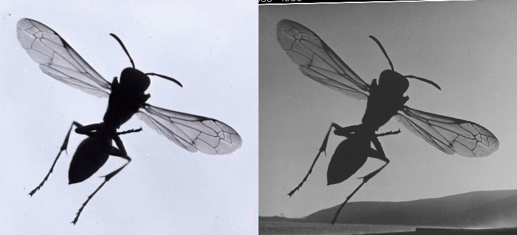
NEWClaude：這是目前最直接的技術依據。① 昆蟲是單獨拍在 6×9 cm 軟片上的，背景是均勻亮面，沒有海岸、山與建築 → p.244 的風景一定來自另一張底片，所以 p.244 是兩張底片合成，不是一次拍成。② 兩張底片（4543、4544）蜂的姿勢完全相同，只是背景暈影不同 → 拍的是固定不動的標本，不是飛行中的活蜂。③ 疊合比對外形重合，(4543) 吻合度較高（剪影重疊率粗估 0.59，對 (4544) 為 0.47；只用兩點對位，僅供參考），p.244 的蜂應出自 (4543) 或與它同一次拍攝。
注意：Pompidou 定年「vers 1930」，Getty 照片定年 1935–1936，兩館不一致；底片可能約 1930 拍、約 1935 合成印放，待查。「Autre titre」欄寫的 Les arums, Etoile de mer（海芋、海星）與這隻蜂無關，可能是原底片袋或同組底片的標題，待查。Pompidou 紀錄沒有寫怎麼印，所以「暗房疊印」仍是推論，但「兩張底片合成」已有底片物證。
| 合計 | 11 筆 | ||
|---|---|---|---|
| 依據等級 | 出處 | 原文／內容 | 支持哪一點 |
| 館方紀錄（底片） | Centre Pompidou AM 1994-393 (4543)、(4544) Mouche, vers 1930 | Négatif gélatino-argentique sur support souple，6 × 9 cm；底片只有昆蟲、沒有風景 | 直接物證：昆蟲與風景來自不同底片 → 合成；兩張同姿勢 → 標本 |
| 館方紀錄 | J. Paul Getty Museum 84.XM.1000.131 | Medium：Gelatin silver print；“Out of scale with the landscape, the fly assumes the role of an airplane” | 館方承認比例不合；沒有寫技法（technique） |
| 館方書目（待查） | Getty Linked Data：Bibliography（2026/10/20 經 Chrome 讀取） | ① Milwaukee Art Center, Man Ray Photographics, from the collection of Arnold H. Crane; introduction by Arnold Crane (Milwaukee, 1973), (JPGM print) ② Pech, Jürgen, Achim Sommer, and Patrick Blümel, Man Ray: Fotograf im Paris der Surrealisten (Brühl: Max Ernst Museum des LVR, 2013), p. 235 | 兩本圖錄可能有這張的解說或技法說明，網路上無全文；Exhibitions 欄為空 |
| 館方出版（待查） | Getty《In Focus: Man Ray》 | Katherine Ware 撰文，1999 年，收 Getty 館藏（museum collection） 50 多張 Man Ray 並附解說 | 可能有這張的圖版解說；網路上無全文 |
| 技法定義 | SAA Dictionary｜combination printing | “creating a photographic print with a single, unified image from several different negatives”；Newhall 記 Rejlander 把多張底片依序遮罩（mask）、印在同一張相紙（photographic paper）上 | 多張底片依序印在同一張相紙是標準暗房技法 |
| 館方論文 | The Met｜Photography and Surrealism | “double exposure, combination printing, montage, and solarization” …… “In the works of Man Ray and Maurice Tabard” | 超現實攝影常用這些技法，點名 Man Ray |
| 館方紀錄（他件） | MFAH 2015.90｜Man Ray, c.1926 | “experimented with a double exposure during the printing process by layering two negatives” | Man Ray 在印相時合成兩張底片的實例 |
| 技術文章 | Adorama｜Multiple Exposures Part 2 | “white and very light areas will ‘burn through’ darker areas.” | 相機內重覆曝光：亮的贏（乙） |
| 百科 | Wikipedia｜Sandwich printing | 一張影像出現在另一張的暗部（shadows），因為底片暗部密度低 | 夾印（sandwich printing）：重疊處偏亮（丙） |
| 技術文章 | B&H Explora｜DOF in macro | “Large magnification macro lenses often have DOF distances that measure in the millimeters or less!” | 近攝景深只有幾公釐（甲） |
| 技術文章 | Savazzi｜Depth of field in macro | 有效光圈（aperture） E = N (M + 1) | 近攝倍率越高，景深越淺 |
| 量測點（原尺寸頁圖） | 灰階（0＝黑、255＝白） |
|---|---|
| ① 腳・天空段 | 約 50 |
| ② 腳・山丘段 | 約 45 |
| ③ 天空 | 約 162 |
| ④ 山丘 | 約 75 |
| 底片 | 放大倍率 m（估） | 景深 f/11～f/22 | 遠景在底片上糊開的直徑 |
|---|---|---|---|
| 35 mm（Leica） | ≈ 0.6 | 約 3～5 mm | 約 1.4～2.9 mm（可接受模糊的 50～95 倍） |
| 6 × 9 cm（與 Pompidou 底片同尺寸） | ≈ 1.5 | 約 1～2 mm | 約 7～15 mm（150～290 倍） |
Claude：景深 DOF ≈ 2Nc(1+m)/m²；遠景模糊直徑 ≈ f·m/N。假設蜂翅展約 3 cm、在 24.8 cm 寬的相片上約佔 13 cm。結果：單次近攝（close-up photography）時遠景會糊到認不出來，p.244 遠景卻清楚 → 排除單次曝光；這一點現在也由 Pompidou 底片（只有昆蟲、背景一片均勻）直接證實。
NEW待查：① 海岸風景那一張底片——Pompidou「Man Ray paysage mer」38 筆中，AM 1994-393 (6279) Bords de mer, vers 1935 經比對不是同一景；「Paysage, vers 1933–1937」兩件海灣與山稜相似，但不是同一張；② Milwaukee 1973、Brühl 2013 p.235 兩本圖錄內文；③ Getty《In Focus: Man Ray》圖版解說；④ Pompidou 定年 vers 1930 與 Getty 1935–1936 的差異。
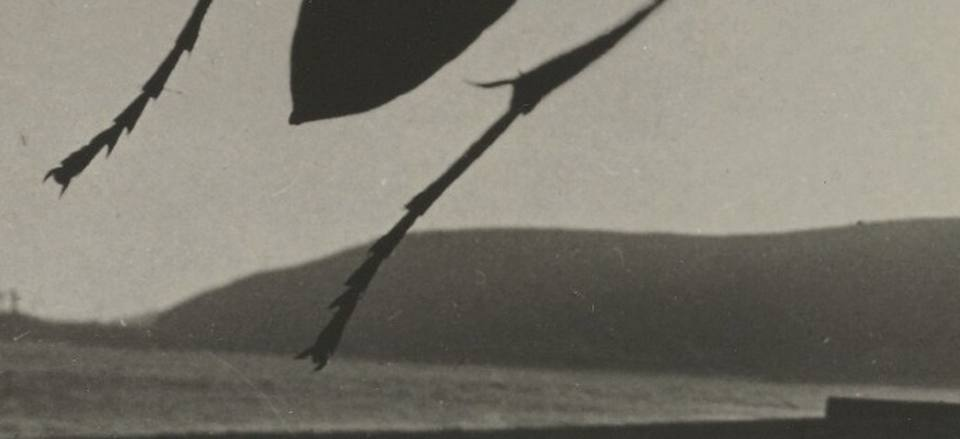
NEW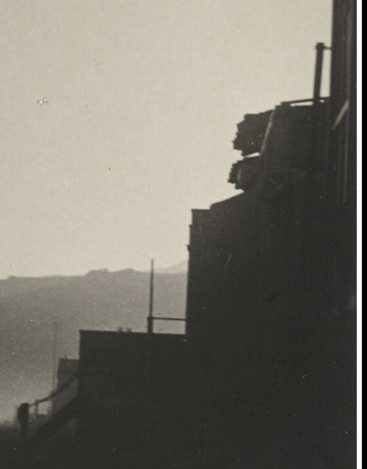
NEW| 合計 | 5 項線索 | |||
|---|---|---|---|---|
| 線索 | 放大圖 | 看到什麼 | 依據等級 | 推論 |
| 原始底片只有昆蟲NEW | Centre Pompidou AM 1994-393 (4543)、(4544) 兩張 6 × 9 cm 底片只有這隻蜂、背景均勻、沒有風景；與 p.244 疊合外形重合 | 館方紀錄（底片）＋Claude 疊合比對 | Claude 說明Claude：昆蟲與風景來自不同底片，p.244 是兩張底片合成；見上方 A。 | |
| 景深（depth of field）不合理 | 蟲的翅脈、腳上的細刺都清楚銳利（sharpness）；遠處山稜、海岸、右側建築與欄杆也認得出來 | Claude 看圖判斷 | Claude 說明Claude：1930 年代的相機要把約 2 cm 的蜂近攝到這麼大，景深只有幾公釐，遠景應該糊成一片；兩者同時清楚，單次曝光（single exposure）的可能性很低。 | |
| 腳跨山稜線沒有明暗斷層NEW | 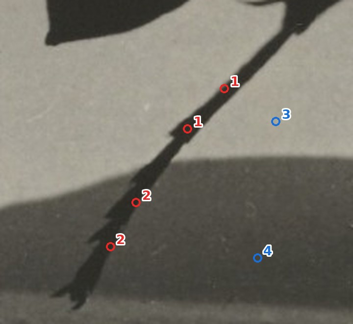 | 同一條右後腳從天空跨進山丘：腳在天空段（①）灰階約 50、在山丘段（②）約 45，跨過稜線沒有變亮，反而略暗；旁邊天空（③）約 162、山丘（④）約 75（0＝黑、255＝白，原尺寸頁圖實測）。蜂的身體壓在亮天空上也是實心的黑。 | Claude 看圖判斷 | Claude 說明Claude：關鍵是「曝光加在哪裡」。加在相紙上（暗房疊印 combination printing）：相紙受光越多越黑，黑的贏——腳在昆蟲底片那一次就黑到底（Dmax），再印風景只會更黑，所以跨過稜線沒有斷層、山丘段還略暗。加在底片上（相機內重覆曝光 in-camera double exposure）或兩張底片疊著放大（夾印 sandwich print）：白的贏——亮天空會把腳「吃」成灰白鬼影，稜線上會出現明暗斷層。p.244 沒有斷層，所以排除相機內重覆曝光與夾印。 |
| 光線一致 | 蟲是逆光剪影（silhouette），翅膀透光有層次；風景也是低角度逆光（backlighting），建築是剪影 | Claude 看圖判斷 | Claude 說明Claude：刻意配成同一種光線，讓合成看不出破綻；蟲很可能是標本（specimen）在亮背景前逆光拍攝。 | |
| 排除 Rayograph | 蟲是黑色剪影 | Claude 看圖判斷 | Claude 說明Claude：直接把蟲放在相紙上曝光（photogram），擋光的位置會是白色，不會是黑影；所以 306-1 歸「攝影（非 Rayograph）」是對的。 | |
怎麼看：每一列左邊是「輸入」（昆蟲那一格、風景那一格），右邊是用那種做法得到的「結果」。看結果裡那條腳跨過山稜線時，上段（天空）和下段（山丘）顏色是否一樣。輸入格畫的是各自單獨印出來的樣子（正片），不是底片的負像（negative image）。底下色塊是腳兩段的灰階（0＝黑、255＝白，甲～丁為示意值）。
只拍一次。蜂離鏡頭幾公分，景深（depth of field）只有幾公釐。
腳・天空段 15腳・山丘段 15
腳一樣黑、沒有斷層，但遠景會糊成一片。 與 p.244：不符：p.244 遠景山稜、建築都認得出來
光量加在底片上：底片受光越多越密，印出來越白 → 白的贏。腳在第 1 次沒給底片光，第 2 次天空卻給了很多光。
腳・天空段 160腳・山丘段 78
腳在天空段被亮天空「吃掉」變成灰白鬼影（ghost），跨過山稜線出現明暗斷層；整張畫面也被洗白。 與 p.244：不符：p.244 腳在天空段仍是黑的
兩張底片疊著讓光穿過，透光率相乘：任何一張是密的（暗），光就過不去，相紙就白 → 白的贏。
腳・天空段 165腳・山丘段 80
腳只在山丘段是暗的，在天空段變淡，同樣出現斷層；昆蟲以外的地方也偏白。 與 p.244：不符
曝光量加在相紙上：相紙受光越多越黑 → 黑的贏。腳在第一次就黑到底（Dmax），第二次加上山或天空，也只會更黑。
腳・天空段 48腳・山丘段 43
腳在天空段、山丘段一樣黑，沒有斷層；山丘段因為又加了一點曝光，還可能略暗一些。 與 p.244：相符
①腳・天空段 50②腳・山丘段 45③天空 162④山丘 75
腳跨過山稜線沒有變亮（50 → 45，反而略暗），遠景也清楚 → 四種做法中只有丁、暗房疊印同時符合。
Claude：甲～丁的灰階是示意值，用來說明「黑的贏」與「白的贏」；只有最後一格是 p.244 實測值。實際暗房疊印時，昆蟲底片的亮背景也會給相紙一點點曝光，所以天空會略灰；這張的天空本來就是灰階漸層，看不出破綻。
Claude：結論：Centre Pompidou 藏有只拍昆蟲的原始底片 AM 1994-393 (4543)、(4544)（6 × 9 cm，背景均勻、沒有風景），證實 p.244 是昆蟲標本底片＋海岸風景底片合成；再由腳跨山稜線沒有斷層、蜂身壓在亮天空仍是實心黑，推論是在暗房依序印在同一張相紙（combination print），不是相機內重覆曝光或夾印；所以本頁也加列在 203-4 多底片同紙曝光「Claude 看圖判斷」。館方（Getty、Pompidou）都沒有寫印相方法；海岸風景底片與拍攝地點還查不到。Steidl 出版的《Man Ray: Trees & Flowers – Insects & Animals》收錄 Man Ray Trust 的昆蟲與動物照片，可能有同系列底片，待查（Ivorypress 書目頁）。
NEW昆蟲原始底片已找到（見上方 A）；Getty Bibliography 已讀取（見 B）；其餘待查見 C 之後。
NEWMan Ray 從 1922 到 1947 一再回到昆蟲：剪影、版畫、標本照、底片、裝置都有。依年代排列：
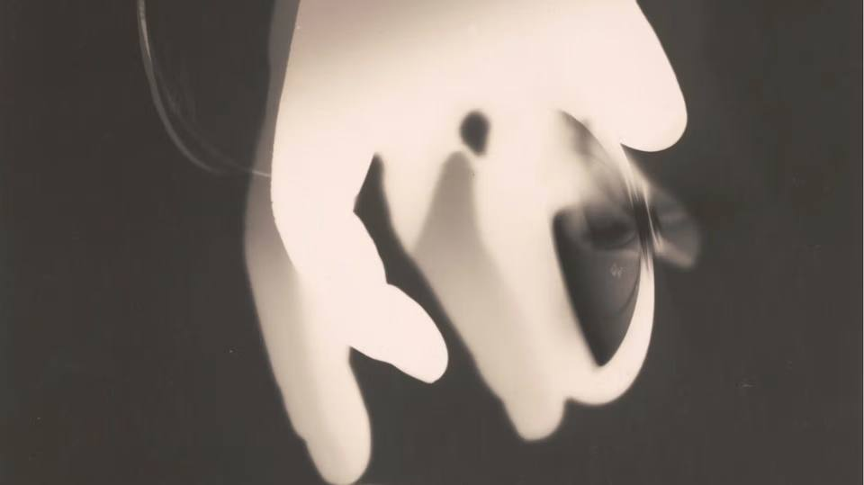
NEW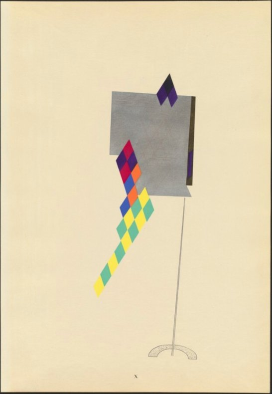
NEW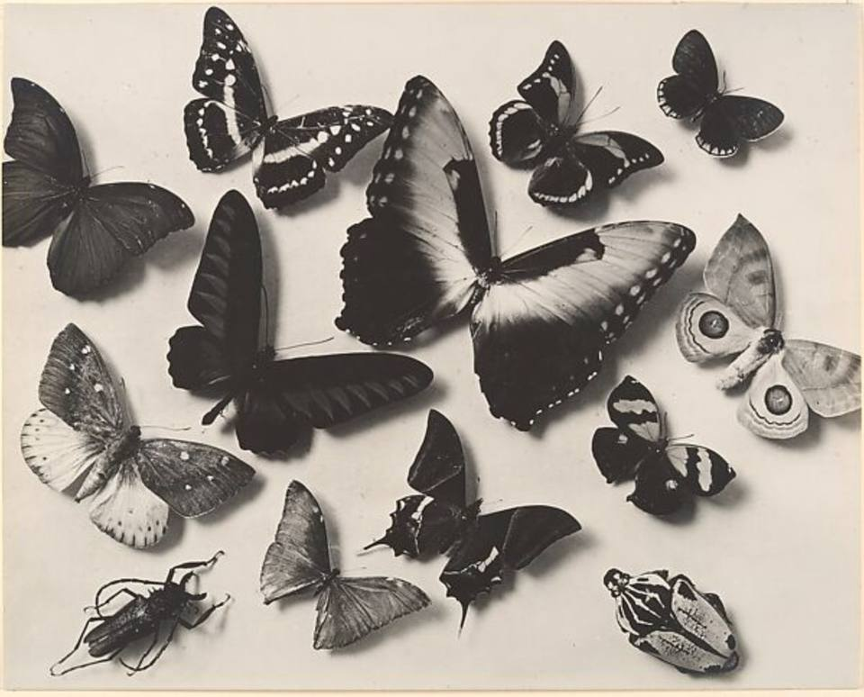
NEW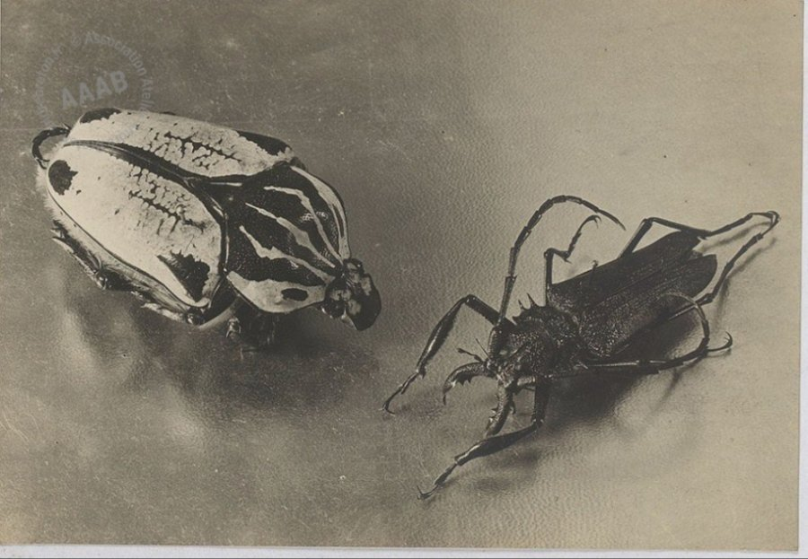
NEW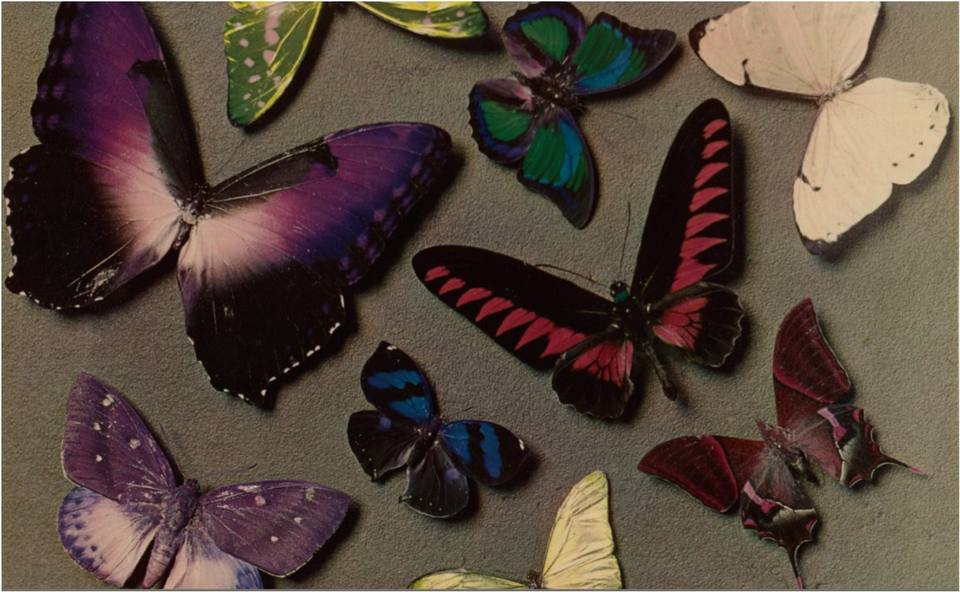
NEW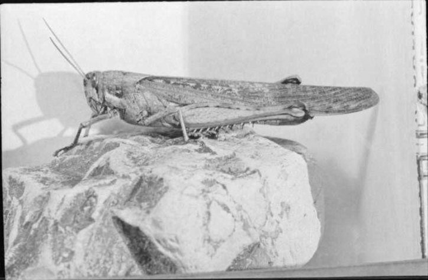
NEW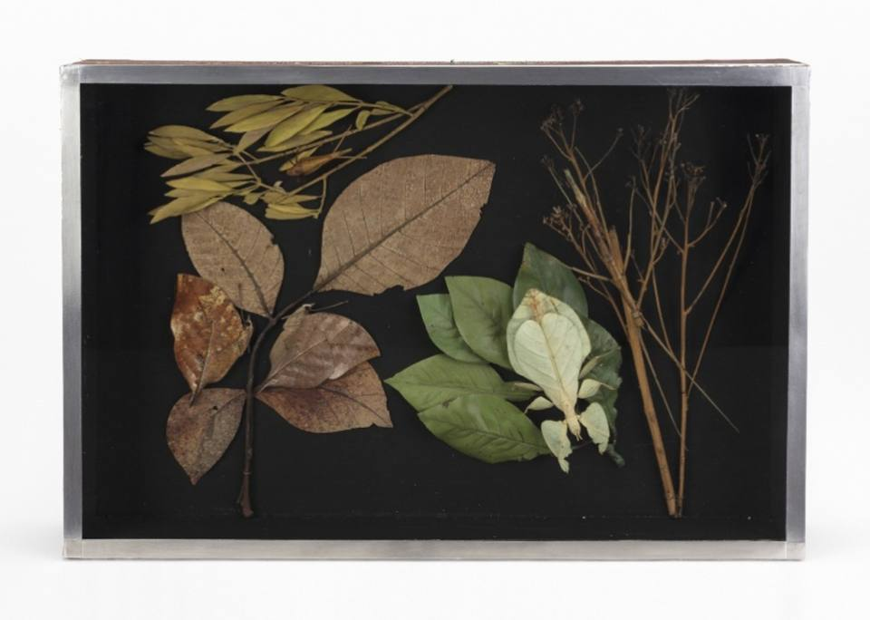
NEW這一段的照片取自 Q3 課堂簡報 614-6 蜂飛記簡報；不是研究素材，只作對照。
Claude：目前查到的範圍內，「昆蟲＋多底片合成」只有 p.244；其他昆蟲作品都是單張拍攝、實物投影或物件。Pompidou 另有約 1945 年的蚱蜢底片 18 筆。這只是目前查到的範圍，不是定論；Steidl《Trees & Flowers – Insects & Animals》（2009）可能還有。
NEW多張影像合成一張，從 1857 年的 Le Gray（203-4 四、）、1930 年代的 Man Ray，一直到現在：
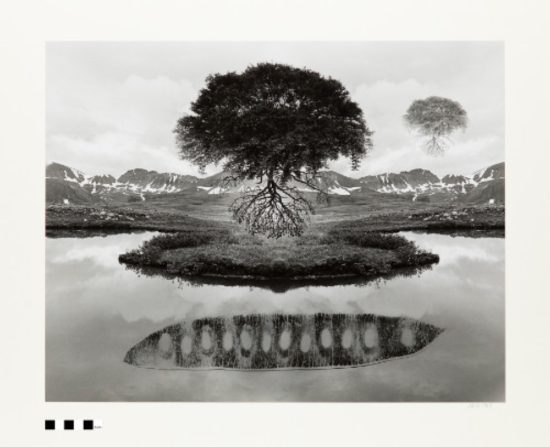
NEW這一段的照片取自 Q3 課堂簡報 614-6 蜂飛記簡報；不是研究素材，只作對照。
Claude：Uelsmann：The Met 指出他在 1960 年代初期復興 Rejlander、Robinson 的 combination printing（The Met 2011.407），作品充滿怪異的尺度對比，是 p.244「尺度錯置」路線的後繼者。Biss：近攝昆蟲不可能一次全部清楚（見本頁 三、C 景深計算）——Man Ray 用兩張底片、Biss 用八千張，相隔 80 年的同一個光學問題。
本段資料來源
NEW研究素材 p.244《Fly》1935–1936：查到 J. Paul Getty Museum 館方紀錄（84.XM.1000.131）；畫面（picture plane）裡的昆蟲有兩對翅膀，不是蠅（fly）而是蜂（wasp），最可能是長腳蜂屬 Polistes；Centre Pompidou 藏有只拍這隻蜂的原始底片（negative）（AM 1994-393 (4543)、(4544)），證實照片（photograph）是昆蟲底片＋風景底片合成（compositing），不是一次拍成；最可能是暗房疊印（combination print）。
一是 Getty 館方紀錄；二是 Claude 看圖判斷物種；三有 Pompidou 原始底片物證、技術依據表與 Claude 推論（館方都沒有寫物種和印相方法）。2026/10/20 查核。
研究素材原件逐頁呈現：依 PDF 原順序，未分類、未標註、未篩選。
Q1：請問我們研究的 Man Ray 作品素材中，你認為共有幾種不同媒材的作品？（NEW題目原文見 101-1 Q1 題目）
7 種媒材類別
素材 295 頁中有 253 頁為作品圖（其餘為年代標題與文字說明頁），扣除 6 頁重複收錄後 247 件。兩類攝影（photography）合計 202 頁，佔全部作品頁的 80%（2026/10/19 依課前問題 1 改分類 2 頁後；另有補充研究素材 p.25-1，不計入）。NEW依館方媒材欄再細分為 28 種 Medium（另 2 列無館方紀錄，見 304-5 細分 Medium）；2026/10/22 逐件重核 253 頁，沒有作品落在 7 類之外。
Claude：以上頁數、去重件數與比例，是 Claude 逐頁歸類研究素材後的統計（見 逐頁分類圖庫），不是素材或文獻提供的數字。2026/10/15 依館方媒材（medium）並經 Doorar 決定改歸 3 件：p.284《À l’heure de l’observatoire》1967（石版畫）03 油畫（oil painting）→05；p.109《The Letter Y》（Oil on sandpaper）06 拼貼（collage）→03；p.271《Self Portrait》1947（Lithograph）01 攝影→05。另 p.61《Untitled (Eiffel Tower)》1922 查無紀錄，Doorar 暫判定由 02 Rayograph 改歸 01 攝影（非 Rayograph）。2026/10/16 再經 Doorar 同意改歸 1 件：p.14《Interior》1915（PMA 1946-70-16，水彩加貼銀色金屬箔紙）03 油畫→06 拼貼與集合藝術（assemblage）。2026/10/16 Doorar 重新判定 p.198《Mrs. Henry Rowell》1930 由 01-2 Solarization 改歸 01-1（MoMA 166.1941 媒材為 Gelatin silver print，未註 solarized）；p.266《Juliet and Margaret Nieman in Papier-Mâché Masks》c.1945 由 01-2 改歸 01-1（素材是 Christie’s 拍品照片的負像並左右翻轉，不是 Solarization）；p.104《Duchamp with Diagram of Large Glass》c.1923 經 Doorar 判定由 01 攝影改歸 02 Rayograph。
| 合計（7 種媒材，01 拆為 2 列） | 253 | 247 | 100% | 6 頁重複 | ||
|---|---|---|---|---|---|---|
| 編號 | 媒材 Medium | 頁數 | 去重 | 比例 | 被判為重複的作品 | |
| 01-1 | Photography – non-Rayograph（非 Solarization）攝影（非 Rayograph，非 Solarization） | 111 | 110 | 43.9% | ||
| 01-2 | Photography – non-Rayograph（Solarization）攝影（非 Rayograph，中途曝光 Solarization） | 16 | 16 | 6.3% | — | |
| 02 | Photography – Rayograph攝影（Rayograph 實物投影） | 75 | 70 | 29.6% | ||
| 03 | Painting油畫 | 20 | 20 | 7.9% | — | |
| 04 | Object／Sculpture（Readymade）物件與現成物雕塑 | 10 | 10 | 4.0% | — | |
| 05 | Works on Paper & Print紙上作品與印刷品 | 10 | 10 | 4.0% | — | |
| 06 | Collage & Assemblage拼貼與集合藝術 | 6 | 6 | 2.4% | — | |
| 07 | Aerograph噴槍畫 | 5 | 5 | 2.0% | — |
01 攝影（非 Rayograph）拆成兩列：Solarization（中途曝光）是暗房技法，不是獨立媒材，仍屬相機攝影。Solarization 共 16 頁：p.168、p.172、p.177、p.185＊、p.187、p.190、p.195、p.197＊、p.205、p.213、p.219、p.224＊、p.227、p.228、p.229＊、p.233（＊為圖庫原未標記、依館方紀錄補標：p.185 Sotheby's 2021 Lot 16、p.197 MoMA 169.1941、p.224 MoMA 104.1941、p.229 MoMA 194.1941）。「被判為重複」是指研究素材中同一張影像出現兩次，去重時只計一次（Claude 比對畫面判斷）。2026/10/15 依 Doorar 決定取消 2 件重複註記：p.241 與 p.240 不是同一張照片；p.149 是 p.148《Noire et Blanche》加上拍賣文字的說明頁，不算重複圖檔。詳見 重複素材比對。
本段資料來源
「只要用“作者名＋作品名＋年代”應該不難從網路上找出該作品使用的媒材種類的名稱。你可以媒材的英文來分類。攝影媒材請分“Rayograph”與“非 Rayograph”兩類。」
— 視丘影像美學 LIVE 班〈Man Ray 研究問題集_20260922〉PDF p.2（Q1）
本段資料來源
每一類舉代表作，列出館方登錄的媒材原文（2026/10/15 查核）。
| 編號 | 類別 | 代表作 | 館方媒材原文 | 出處 |
|---|---|---|---|---|
| 01 | Photography – non-Rayograph 攝影（非 Rayograph） | Torso, 1923 | Gelatin silver print | MoMA 628.1941 |
| 02 | Photography – Rayograph 攝影（Rayograph 實物投影） | Rayograph, 1922 | Gelatin silver print (photogram) | MoMA 110.1941 |
| 03 | Painting 油畫 | The Rope Dancer Accompanies Herself with Her Shadows, 1916 | Oil on canvas | MoMA 33.1954 |
| 04 | Object／Sculpture（Readymade） 物件與現成物雕塑（sculpture） | Indestructible Object (or Object to Be Destroyed), 1964 (replica of 1923 original) | Metronome with cutout photograph of eye on pendulum | MoMA 248.1966.a-e |
| 05 | Works on Paper & Print 紙上作品（work on paper）與印刷品（printed matter） | Keeps London Going, 1932；Facile, 1935NEW秀容年代 | Offset lithograph；Book with twelve gravure reproductions of photographs of Nusch Éluard; letterpress text | MoMA 178.1950；MoMA 517.2022 |
| 06 | Collage & Assemblage 拼貼與集合藝術 | Revolving Doors II (Longue Distance), published 1926; after collages of 1916–1917；Self-Portrait, 1916（assemblage） | Pochoir print on paper（拼貼原作的版畫版）；兩個電鈴、一個按鈕、顏料與手印（Artnet 報導所述材料） | National Galleries Scotland GMA 4003 B；Artnet News |
| 07 | Aerograph 噴槍畫（airbrush painting） | Admiration of the Orchestrelle for the Cinematograph, 1919；The Eye That Sees Everything, 1919 | Airbrushed gouache, colored ink, and pencil on paperboard；Airbrush and brush and gouache on tan wood-pulp laminate board | MoMA 231.1937；Art Institute of Chicago |
“Man Ray coined the term rayograph to name his version of the 19th-century technique of making photographs without a camera”
Claude 中譯：Man Ray 創了「rayograph」這個詞，用來稱呼他自己版本的 19 世紀「不用相機做照片」的技法。
— The Met 新聞稿，2025/09/08（Rayograph 獨立成類的依據之一）
“Instead, he used a spray gun, and he called the resulting paintings “aerographs.””
Claude 中譯：他改用噴槍，並把做出來的畫稱為「aerographs」。
— Art Institute of Chicago｜The Eye That Sees Everything（Aerograph 獨立成類的依據）
Claude：「7 類」是 Claude 依上表館方媒材欄歸納出來的分法，不是任何館方或文獻現成的分類表。Aerograph 依館方登錄其實是以噴槍施作的 gouache（水粉），也可以併入繪畫；這裡因 Man Ray 自己把這批畫命名為「aerographs」（見 AIC 原文），所以單列。Collage 與 Assemblage 合為一類、Object 另立一類，也是 Claude 的判斷。
本段資料來源
Claude：兩類攝影（非 Rayograph、Rayograph）編為 01、02 列在最前；其餘 03–07 依研究素材中的作品頁數由多到少排列。攝影排最前，是因為下列文獻都把攝影視為 Man Ray 最主要的身分與遺產；但這是排序上的選擇，不是文獻要求。
“Man Ray’s name is synonymous with moody, seductive black-and-white photographs from the interwar era.”
Claude 中譯：Man Ray 這個名字，幾乎就等於兩次大戰之間那些情緒濃厚、誘人的黑白照片。
“Man Ray thus comes across less as a photographer — though this remains his greatest legacy — and more as an artist-inventor”
Claude 中譯：因此 Man Ray 看起來不那麼像一位攝影師——雖然攝影仍是他最大的遺產——而更像一位藝術家兼發明家。
本段資料來源
依每件作品館方或拍賣紀錄的媒材欄（medium）原文，把 7 大類再細分到實際的材料與製程；每一頁的細分碼也列在 305 媒材總表的「細分 Medium」欄。
| 合計 | 7 大類 | 27 種細分 Medium＋無館方紀錄 2 列 | 253 | |||
|---|---|---|---|---|---|---|
| 大類 | 大類 Medium | 細分 | 細分 Medium | 中文 | 頁數 | NEW縮圖與頁碼（＊＝無館方紀錄，依同期作品或看圖推定） |
| 01 | Photography – non-Rayograph 127 頁 | 01-a | Gelatin silver print | 銀鹽相紙（相機攝影） | 100 | 100 頁（展開看縮圖與頁碼） |
| 01-b | Gelatin silver print, solarized | 中途曝光銀鹽相紙（即 01-2 Solarization） | 16 | 16 頁（展開看縮圖與頁碼） | ||
| 01-c | Glass-plate negative | 玻璃負片（館方登錄原始底片） | 5 | |||
| 01-d | Film negative | 軟片負片（館方登錄原始底片） | 4 | |||
| 01-e | Photogravure | 照相凹版印刷 | 2 | |||
| 02 | Photography – Rayograph 75 頁 | 02-a | Gelatin silver print (photogram) | 實物投影銀鹽相紙（唯一原件） | 53 | 53 頁（展開看縮圖與頁碼） |
| 02-b | Gelatin silver print after rayograph | 翻拍 Rayograph 再印的銀鹽相紙 | 13 | 13 頁（展開看縮圖與頁碼） | ||
| 02-c | Photogravure after rayograph | 依 Rayograph 製版的照相凹版 | 9 | |||
| 03 | Painting 20 頁 | 03-a | Oil on canvas／linen | 畫布油畫 | 13 | |
| 03-b | Oil on board／panel | 木板油畫 | 3 | |||
| 03-c | Oil on sandpaper | 砂紙油畫 | 1 | |||
| 03-d | Oil on canvas with painted wood panel | 油畫加彩繪木板 | 1 | |||
| 03-＊ | — | 無館方媒材紀錄（看圖推定油畫） | 2 | |||
| 04 | Object／Sculpture（Readymade） 10 頁 | 04-a | Cast sculpture（bronze／aluminum） | 鑄造雕塑 | 2 | |
| 04-b | Assisted readymade／found object | 加工現成物 | 6 | |||
| 04-c | Folded lead sheet object | 鉛板物件 | 1 | |||
| 04-＊ | — | 無館方媒材紀錄 | 1 | |||
| 05 | Works on Paper & Print 10 頁 | 05-a | Drawing | 素描 | 3 | |
| 05-b | Lithograph | 石版畫 | 3 | |||
| 05-c | Offset lithograph poster | 平版印刷海報 | 1 | |||
| 05-d | Illustrated book／artist’s book | 藝術家書 | 3 | |||
| 06 | Collage & Assemblage 6 頁 | 06-a | Mixed-media collage | 複合材料拼貼（水彩＋金屬箔紙） | 1 | |
| 06-b | Photocollage | 照片拼貼 | 2 | |||
| 06-c | Paper collage on cardboard | 紙板拼貼 | 1 | |||
| 06-d | Assemblage relief | 集合藝術浮雕（木板＋現成物） | 1 | |||
| 06-e | Screenprint on acrylic glass | 壓克力玻璃絹印（遺失集合原作的 1970 年複數版） | 1 | |||
| 07 | Aerograph 5 頁 | 07-a | Airbrushed gouache with pencil／ink | 噴槍水粉加鉛筆、墨水 | 3 | |
| 07-b | Gouache on paperboard | 紙板水粉 | 1 | |||
| 07-c | Gelatin silver print | 銀鹽相紙 | 1 | |||
Claude：細分是 Claude 依館方媒材欄原文歸併的，不是館方現成的分類；大類仍依「作品是什麼」，細分依「實際用了什麼材料與製程」，所以同一個媒材名稱會跨大類出現：Photogravure 同時在 01-e 與 02-c，Gelatin silver print 同時在 01-a 與 07-c。
Claude：最大的不確定在 01-a：其中 34 件查無館方或拍賣紀錄，依同期作品推定為 Gelatin silver print；另 p.186、p.187 與 03-＊（p.6、p.260）、04-＊（p.44）也沒有館方媒材紀錄。01-c、01-d 是館方登錄的原始底片（Centre Pompidou），素材印出來的是正像。素材中與電影有關的 p.134、p.158 都是照片，p.152《Emak Bakia》是物件，所以不需要另立 Film 類。
本段資料來源
Q1 的作答分成 5 個次子頁：304-1 總覽（7 種媒材類別與頁數）、304-2 題目規定、304-3 館方媒材欄、304-4 排序原則、304-5 細分 Medium（27 種）。每頁的細分碼另見 305 媒材總表。
| 合計 253 件 | 111 ○12 | 16 | 75 ○1 | 20 ○3 | 10 ○5 | 10 ○17 | 6 ○3 | 5 | 28 種 ＋無紀錄 2 列 | 1：217 2：31 3：5 | 63 | ||||
|---|---|---|---|---|---|---|---|---|---|---|---|---|---|---|---|
| 頁 | 縮圖 | 作品（素材圖說） | 01 攝影 (非 Rayograph) | 01S Solarization | 02 Rayograph | 03 油畫 | 04 物件與 現成物 | 05 紙上作品 與印刷品 | 06 拼貼 與集合 | 07 噴槍畫 | NEW細分 Medium | 跨媒材量 | 跨媒材 | NEW媒材原文（出處）／跨媒材依據 | NEW相關子頁／次子頁 |
| p.6 | Portrait of Alfred Stieglitz, 1913 | ● | 03-＊ 無館方紀錄 | 1 | 無館方媒材紀錄（Claude 看圖判…306 媒材原文：無館方媒材紀錄（Claude 看圖判斷）；出處：Artchive（彙整網站，非館方；圖與素材相符，未載媒材與收藏） | 308411-4 | |||||||||
| p.8 | AD MCMXIV, 1914 | ● | 03-a Oil on canvas／linen | 1 | Oil on canvas（Man…306 媒材原文（出處）：Oil on canvas（Man Ray Trust 官方數位圖庫 Telimage ref. 440/01（A.D. 1914）） 館方紀錄（他版／他印本／底片） | ||||||||||
| p.11 | Black Widow (Nativity) 黑寡婦（聖誕故事）, 1915 | ● | 03-a Oil on canvas／linen | 1 | Oil on canvas（Soth…306 媒材原文（出處）：Oil on canvas（Sotheby's 2020 Lot 116） 拍賣（auction）／畫廊紀錄 | ||||||||||
| p.12 | Dance, 1915 | ● | 03-a Oil on canvas／linen | 1 | Oil on canvas（Di D…306 媒材原文（出處）：Oil on canvas（Di Donna Galleries 圖說（私人收藏）） 拍賣／畫廊紀錄 | ||||||||||
| p.13 | Cut-Out, 1915 | ● | 03-b Oil on board／panel | 1 | Oil on board（The M…306 媒材原文（出處）：Oil on board（The Met《When Objects Dream》展品清單（2025）） 館方紀錄 | 513-1617-4618-2 | |||||||||
| p.14 | Chinese Restaurant. Interior, 1915 | ○ | ● | 06-a Mixed-media collage | 2 | ✓ | Watercolor, opaque…307-1 媒材原文（出處）：Watercolor, opaque watercolor, and pen and black ink, over graphite, with applied paper coated with silver metallic foil, on laid paper（Philadelphia Museum of Art 1946-70-16（object 50172，Interior, 1915，A. E. Gallatin Collection, 1946）） 媒材組合：水彩、不透明水彩…媒材組合：水彩（watercolor）、不透明水彩、墨水筆、鉛筆（pencil）＋貼上的鍍銀箔紙。 Claude 說明Claude：繪畫（painting）與拼貼（collage）同時存在；Doorar 改歸 06 拼貼，依據正是館方媒材裡貼上的銀箔紙。（見 307-1） | 307-1411-2513-1 | |||||||
| p.15 | Untitled, 1915 | ● | 03-a Oil on canvas／linen | 1 | oil, canvas（WikiAr…306 媒材原文（出處）：oil, canvas（WikiArt（非館方；圖源指向 Addison Gallery of American Art）） 館方紀錄（他版／他印本／底片） | ||||||||||
| p.16 | Arrangement of Forms, 1915 | ● | 03-a Oil on canvas／linen | 1 | oil on canvas（SFMO…306 媒材原文（出處）：oil on canvas（SFMOMA 94.571） 館方紀錄 | ||||||||||
| p.23 | Self-Portrait Assemblage, 1916 | ○ | ● | 06-e Screenprint on acrylic glass | 2 | ✓ | Screenprint on acr…307-1 媒材原文（出處）：Screenprint on acrylic glass（1970 年複數版（smma.or.jp rm-002）） 媒材轉譯：1916…媒材轉譯：1916 年集合藝術（assemblage）原作（電鈴、按鈕、顏料、手印）→ 1970 年壓克力玻璃絹印複數版。 Claude 說明Claude：原作遺失，現存的是把立體物件轉成平面版畫（printmaking）的複數版：同一件作品先後是物件、再是印刷品（printed matter）。（見 307-1） | 307-1-2-3411-2-4 | |||||||
| p.24 | Silhouette, 1916 | ● | 05-a Drawing | 1 | ✓ | charcoal, gouache,…307-1 媒材原文（出處）：charcoal, gouache, indian ink, board（Artchive（彙整網站，非館方）） 媒材組合：炭筆、不透明水彩…媒材組合：炭筆、不透明水彩、印度墨，畫在紙板上。 Claude 說明Claude：紙上作品（work on paper），但同時用了素描（drawing）與繪畫兩類材料。（見 307-1） | 307-1513-1 | ||||||||
| p.25NEW | The Rope Dancer Accompanies Herself with Her Shadows, 1916 | ○ | ● | 05-b Lithograph | 2 | ✓ | Oil on canvas（MoMA…307-1 媒材原文（出處）：Oil on canvas（MoMA 33.1954） 306 媒材原文（出處）：“Conceived as a painting in 1916; reinterpreted as a lithograph in 1970”；Lithograph，edition of 99 on Arches + I–XX on Japan（Master Drawings New York 石版畫說明 PDF（image 50 × 69.5 cm；Anselmino《Man Ray, opera grafica》cat. 26）；MyArtBroker（寫 1972、99 張、56 × 76 cm）；油畫原作（original work） MoMA 33.1954 另列補充研究素材 p.25-1） 拍賣（auction）／畫廊紀錄 媒材轉譯：同一影像出現在…媒材轉譯：同一影像出現在 1916 年油畫（MoMA）、玻璃負片（negative）式攝影（p.47）與後來的版畫（p.25 左下有版次）。 Claude 說明Claude：影像（image）在油畫（oil painting）、攝影（photography）、版畫之間遷移，是本作業最典型的跨媒材例子。（見 307-1） | 203-5307-1-2-3-5411-2513-1616-0-5617-4618-1719-1 | |||||||
| p.26 | Promenade 散步, 1916 | ● | 03-a Oil on canvas／linen | 1 | Oil on canvas（Soth…306 媒材原文（出處）：Oil on canvas（Sotheby's 2013 N09035 Lot 8） 拍賣／畫廊紀錄 | ||||||||||
| p.27 | Legend, 1916 | ● | 03-a Oil on canvas／linen | 1 | Oil on canvas（The…306 媒材原文（出處）：Oil on canvas（The Met《When Objects Dream》展品清單（2025）） 館方紀錄 | ||||||||||
| p.28 | Orquesta Sinfonica, 1916 | ● | 03-a Oil on canvas／linen | 1 | oil on canvas（Buff…306 媒材原文（出處）：oil on canvas（Buffalo AKG Art Museum 1970:4） 館方紀錄 | ||||||||||
| p.29 | Boardwalk ,1917 | ○ | ● | 06-d Assemblage relief | 2 | ✓ | Panneau de bois, b…307-1 媒材原文（出處）：Panneau de bois, bouton de porte, corde, collage, tissu et encre de Chine.（Christophe Joron-Derem 拍賣 2022 lot 4（1917 設計、1973 製作）） 媒材組合：木板、門把、繩…媒材組合：木板、門把、繩、拼貼、布、墨。 Claude 說明Claude：把現成物（readymade）件釘在畫板上的集合藝術，介於繪畫與物件之間。（見 307-1） | 307-1411-2513-1 | |||||||
| p.30 | By Itself I, 1918 | ● | 04-a Cast sculpture（bronze／aluminum） | 1 | ✓ | Bronze and aluminu…307-1 媒材原文（出處）：Bronze and aluminum（Baltimore Museum of Art 2001.24（1966 年鑄造，after 1918 wood original）） 媒材轉譯：1918…媒材轉譯：1918 年木製原件 → 1966 年青銅與鋁鑄造。 Claude 說明Claude：材料由木頭換成金屬，是後來重製的版本（version）；兩種金屬同屬雕塑（sculpture）材料。（見 307-1） | 307-1-2-3411-2 | ||||||||
| p.31 | L’homme (Man), 1918-20 | ● | 01-a Gelatin silver print | 1 | gelatin silver pri…306 媒材原文（出處）：gelatin silver print（The Met《When Objects Dream》展出（Bluff Collection，object 902862，已歸還出借人）；媒材見 Hyperallergic 展場圖說） 館方紀錄（他版／他印本／底片） | ||||||||||
| p.32 | Integration of Shadows, 1918-20 | ● | 01-c Glass-plate negative | 1 | Négatif au gélatin…306 媒材原文（出處）：Négatif au gélatino bromure d’argent sur verre（Centre Pompidou AM 1995-281 (1465)） 館方紀錄（他版／他印本／底片） | ||||||||||
| p.33 | Aviary 鳥舍, 1919 | ● | 07-a Airbrushed gouache with pencil／ink | 1 | ✓ | Airbrushed gouache…307-1 媒材原文（出處）：Airbrushed gouache, pencil, pen and ink on cardboard（National Galleries Scotland GMA 3888） 媒材組合：噴槍水粉為主…媒材組合：噴槍水粉為主，另加鉛筆、墨水、色鉛筆（p.33、35、36）；p.34 館方只登錄水粉。 Claude 說明Claude：噴槍（aerograph）是商業設計工具，搬進藝術創作；手繪線條（line）與機械噴色並存。（見 307-1） | 307-1411-2 | ||||||||
| p.34 | Aerograph, 1919 | ● | 07-b Gouache on paperboard | 1 | ✓ | Airbrushed gouache…307-1 媒材原文（出處）：Airbrushed gouache, pencil, pen and ink on cardboard（National Galleries Scotland GMA 3888） 306 媒材原文（出處）：Gouache on paperboard（The Met《Man Ray: When Objects Dream》展品清單（2025）） 館方紀錄 媒材組合：噴槍水粉為主…媒材組合：噴槍水粉為主，另加鉛筆、墨水、色鉛筆（p.33、35、36）；p.34 館方只登錄水粉。 Claude 說明Claude：噴槍（airbrush）是商業設計工具，搬進藝術創作；手繪線條與機械噴色並存。（見 307-1） | 307-1411-2 | ||||||||
| p.35 | ANPOR, 1919 | ● | 07-a Airbrushed gouache with pencil／ink | 1 | ✓ | Airbrushed gouache…307-1 媒材原文（出處）：Airbrushed gouache, pencil, pen and ink on cardboard（National Galleries Scotland GMA 3888） 306 媒材原文（出處）：airbrush painting, coloured pencils, ink and gouache on paper（Sotheby's Paris 2015 PF1506 Lot 34） 拍賣（auction）／畫廊紀錄 媒材組合：噴槍水粉為主…媒材組合：噴槍水粉為主，另加鉛筆、墨水、色鉛筆（p.33、35、36）；p.34 館方只登錄水粉。 Claude 說明Claude：噴槍是商業設計工具，搬進藝術創作；手繪線條與機械噴色並存。（見 307-1） | 307-1411-2 | ||||||||
| p.36 | Admiration of the Orchestrelle for the Cinematograph. 1919 | ● | 07-a Airbrushed gouache with pencil／ink | 1 | ✓ | Airbrushed gouache…307-1 媒材原文（出處）：Airbrushed gouache, pencil, pen and ink on cardboard（National Galleries Scotland GMA 3888） 306 媒材原文（出處）：Airbrushed gouache, colored ink, and pencil on paperboard（MoMA 231.1937） 館方紀錄 媒材組合：噴槍水粉為主…媒材組合：噴槍水粉為主，另加鉛筆、墨水、色鉛筆（p.33、35、36）；p.34 館方只登錄水粉。 Claude 說明Claude：噴槍是商業設計工具，搬進藝術創作；手繪線條與機械噴色並存。（見 307-1） | 307-1411-2616-0-3617-4618-1-2 | ||||||||
| p.40 | Coat Stand, 1920 | ● | 01-a Gelatin silver print | 1 | Gelatin silver pri…306 媒材原文（出處）：Gelatin silver print on fibre-based paper（Museum Boijmans Van Beuningen 3414（1975 印）） 館方紀錄（他版／他印本／底片） | 513-1 | |||||||||
| p.41 | Head, New York, 1920 | ● | 01-a Gelatin silver print＊ | 1 | 無館方媒材紀錄（Claude 看圖判…306 媒材原文：無館方媒材紀錄（Claude 看圖判斷）；出處：2026/10/15 第二輪查詢仍查無館方或拍賣紀錄 | 308 | |||||||||
| p.42 | Man Ray, in collaboration with Marcel Duchamp. Dust Breeding, 1920. | ● | 01-a Gelatin silver print | 1 | Gelatin silver pri…306 媒材原文（出處）：Gelatin silver print（The Met 69.521） 館方紀錄 | 307-3411-4617-2618-2719-1-2 | |||||||||
| p.43 | The Enigma of Isidore Ducasse 的謎, 1920 | ● | ○ | 04-b Assisted readymade／found object | 2 | ✓ | Wood, fabric, rope…307-1 媒材原文（出處）：Wood, fabric, rope, cardboard, metal, offset on paper and invisible object（Museum Boijmans Van Beuningen BEK 1491（1971 年版）） 媒材組合：木、布、繩、紙板…媒材組合：木、布、繩、紙板、金屬、膠印紙與看不見的物件。 Claude 說明Claude：物件原為拍照而做，原物遺失後 1971 年重做：物件與攝影分不開。（見 307-1） | 307-1-2-3411-2513-1617-5618-2719-1-2 | |||||||
| p.44 | Catherine Barometer, 1920 | ○ | ● | 04-＊ 無館方紀錄 | 2 | ✓ | —（研究素材 p.44 頁面附註拍賣…307-1 媒材原文（出處）：—（研究素材 p.44 頁面附註拍賣紀錄） 306 媒材原文：無館方媒材紀錄（研究素材圖說）；出處：研究素材 p.44 頁面附註拍賣紀錄 媒材組合：物件（現成物組合）…媒材組合：物件（現成物組合）＋ Man Ray 為它拍的底片（Pompidou AM 1994-393 (5414)）。 Claude 說明Claude：物件同時以照片流傳，照片本身也成為館藏（museum collection）。（見 307-1） | 307-1-2-3411-2719-1 | |||||||
| p.45 | Moving Sculpture, 1920 | ● | 01-a Gelatin silver print | 1 | Gelatin silver pri…306 媒材原文（出處）：Gelatin silver print（Baltimore Museum of Art 1988.434） 館方紀錄 | 513-1 | |||||||||
| p.46 | La mer de merde, 糞海 1920 | ● | 01-a Gelatin silver print | 1 | Gelatine silver pr…306 媒材原文（出處）：Gelatine silver print on fibre-based paper（Museum Boijmans Van Beuningen 3503） 館方紀錄 | ||||||||||
| p.47NEW | The Rope Dancer Accompanies Herself with Her Shadows（銀鹽照片版）, 1920 | ○ | ● | 07-c Gelatin silver print | 2 | ✓ | Oil on canvas（MoMA…307-1 媒材原文（出處）：Oil on canvas（MoMA 33.1954） 306 媒材原文（出處）：Vintage gelatin silver print on fibre-based paper（Museum Boijmans Van Beuningen 3502） 館方紀錄（他版／他印本／底片） 媒材：aerograph＋Vintage gelatin silver print…媒材：1918 年 aerograph（噴槍畫）的照片（photograph），Boijmans 3502 媒材原文：“Vintage gelatin silver print on fibre-based paper”。2026/10/19 Doorar 指正：p.47 只歸 07 aerograph 與 01 Vintage gelatin silver print，不含油畫（1916 年油畫是另一個畫面，見 307-5）。 | 307-1-2-3-5513-1719-1 | |||||||
| p.49 | La plus belle statue d’Amérique, 美洲最美的雕像 1920 | ● | 01-a Gelatin silver print | 1 | Gelatine silver pr…306 媒材原文（出處）：Gelatine silver print on fibre-based paper（Museum Boijmans Van Beuningen 3501） 館方紀錄 | ||||||||||
| p.50 | Untitled. 1920 | ● | ○ | 01-e Photogravure | 2 | ✓ | Photogravure (heli…307-1 媒材原文（出處）：Photogravure (heliogravure), sheet-fed, on heavyweight matte paper（1stDibs 畫廊商品頁（1934 年 James Thrall Soby 版照相凹版）） 媒材轉譯：1920 年底片…媒材轉譯：1920 年底片 → 1934 年照相凹版（heliogravure）。 Claude 說明Claude：銀鹽照片（gelatin silver print）的影像轉成印刷用的凹版。（見 307-1） | 307-1-3411-2615-0-1618-1 | |||||||
| p.55 | The Gift, 1921 | ● | 04-b Assisted readymade／found object | 1 | ✓ | Painted flatiron a…307-1 媒材原文（出處）：Painted flatiron and tacks（MoMA 249.1966（c.1958 複製）） 媒材組合：熨斗＋黏上的圖釘（…媒材組合：熨斗＋黏上的圖釘（現成物加工）。 Claude 說明Claude：現成物再加工，物件本身就是兩種東西的組合。（見 307-1） | 307-1-2-3-4411-2513-1614-0-5617-5618-1-2719-1-2 | ||||||||
| p.56 | Rayograph, 1921 | ○ | ● | 02-a Gelatin silver print (photogram) | 2 | ✓ | Rayograph and gela…307-1 媒材原文（出處）：Rayograph and gelatin silver print on paper mounted on paperboard（Museo Reina Sofía AD02056（Rayogramme, 1921）） 媒材組合：Rayograph…媒材組合：Rayograph 與銀鹽照片，貼在紙上再裱於紙板。 Claude 說明Claude：同一張作品裡有無相機的 rayograph 與相機照片兩種攝影。（見 307-1） | 203-4307-1411-2617-3618-2 | |||||||
| p.57 | Berenice Abbott. 1921 | ● | 01-a Gelatin silver print | 1 | Gelatin silver pri…306 媒材原文（出處）：Gelatin silver print（High Museum of Art 1987.5） 館方紀錄（他版／他印本／底片） | 411-4 | |||||||||
| p.58 | Tristan Tzara, 1921 | ● | 01-a Gelatin silver print | 1 | Gelatin silver pri…306 媒材原文（出處）：Gelatin silver print（The Met 1997.53） 館方紀錄 | 203-4411-2-4617-2618-2 | |||||||||
| p.59 | Trans Atlantique,1921 | ○ | ● | 06-b Photocollage | 2 | Gelatin silver pri…306 媒材原文（出處）：Gelatin silver print, ink, and paper on board（The Met《When Objects Dream》展品清單（Transatlantique，object 902865，Bluff Collection）） 館方紀錄 | 411-2617-5618-2 | ||||||||
| p.60 | Return to Reason, 1921 | ● | 03-b Oil on board／panel | 1 | Oil on composite b…306 媒材原文（出處）：Oil on composite board（Minneapolis Institute of Art 96.21（Return to Reason, 1921）） 館方紀錄 | ||||||||||
| p.61 | Untitled (Eiffel Tower), 1922 | ● | 01-a Gelatin silver print＊ | 1 | 無館方媒材紀錄（Claude 看圖判…306 媒材原文：無館方媒材紀錄（Claude 看圖判斷）；出處：查無館方或拍賣紀錄（兩輪查詢） | 308 | |||||||||
| p.62 | Untitled (plate 5) from the album Champs Délicieux. 1922 | ● | 02-b Gelatin silver print after rayograph | 1 | ✓ | Gelatin silver pri…307-1 媒材原文（出處）：Gelatin silver print after rayograph（MoMA《Champs Délicieux》作品集 plate 5（253.1935.5）） 媒材轉譯：1922 年單張…媒材轉譯：1922 年單張 rayograph 原件 → 依原件翻拍（rephotography）印製的銀鹽照片作品集《Champs Délicieux》（MoMA：Gelatin silver print after rayograph）。 Claude 說明Claude：唯一的 rayograph 經翻拍成為可複製（reproduction）的作品集，從「唯一件」變成「版本」。（見 307-1） | 203-2304307-1-2-3411-2719-1-2 | ||||||||
| p.63 | Rayograph,1922. | ● | 02-a Gelatin silver print (photogram) | 1 | Gelatin silver pri…306 媒材原文（出處）：Gelatin silver print (photogram)（研究素材圖說「Rayograph,1922.」；同類代表館藏 MoMA 475.1984（Rayograph, 1923，代表性館藏）） 研究素材圖說 | 411-2616-0-2617-3618-1-2 | |||||||||
| p.64 | Rayograph,1922. | ● | 02-a Gelatin silver print (photogram) | 1 | Gelatin silver pri…306 媒材原文（出處）：Gelatin silver print (photogram)（研究素材圖說「Rayograph,1922.」；同類代表館藏 MoMA 475.1984（Rayograph, 1923，代表性館藏）） 研究素材圖說 | 411-2 | |||||||||
| p.65 | Rayograph,1922. | ● | 02-a Gelatin silver print (photogram) | 1 | Gelatin silver pri…306 媒材原文（出處）：Gelatin silver print (photogram)（研究素材圖說「Rayograph,1922.」；同類代表館藏 MoMA 475.1984（Rayograph, 1923，代表性館藏）） 研究素材圖說 | 411-2 | |||||||||
| p.66 | Rayograph,1922. | ● | 02-a Gelatin silver print (photogram) | 1 | Gelatin silver pri…306 媒材原文（出處）：Gelatin silver print (photogram)（研究素材圖說「Rayograph,1922.」；同類代表館藏 MoMA 475.1984（Rayograph, 1923，代表性館藏）） 研究素材圖說 | 411-2 | |||||||||
| p.67 | Rayograph,1922. | ● | 02-a Gelatin silver print (photogram) | 1 | Gelatin silver pri…306 媒材原文（出處）：Gelatin silver print (photogram)（研究素材圖說「Rayograph,1922.」；同類代表館藏 MoMA 475.1984（Rayograph, 1923，代表性館藏）） 研究素材圖說 | 411-2 | |||||||||
| p.68 | “Rayograph” 1922 | ● | 02-a Gelatin silver print (photogram) | 1 | Gelatin silver pri…306 媒材原文（出處）：Gelatin silver print (photogram)（研究素材圖說「“Rayograph” 1922」；同類代表館藏 MoMA 475.1984（Rayograph, 1923，代表性館藏）） 研究素材圖說 | 411-2 | |||||||||
| p.69 | Sans titre, 1922, | ● | 02-a Gelatin silver print (photogram) | 1 | Gelatin silver pri…306 媒材原文（出處）：Gelatin silver print (photogram)（研究素材圖說「Sans titre, 1922,」；同類代表館藏 MoMA 475.1984（Rayograph, 1923，代表性館藏）） 研究素材圖說 | 411-2615-0-4618-1 | |||||||||
| p.70 | Printer Société Générale d’Imprimerie et d’Edition, Paris, 1922 | ● | 02-a Gelatin silver print (photogram) | 1 | Gelatin silver pri…306 媒材原文（出處）：Gelatin silver print (photogram)（研究素材圖說「Printer Société Générale d’Imprimerie et d’Edition, Paris, 1922」；同類代表館藏 MoMA 475.1984（Rayograph, 1923，代表性館藏）） 研究素材圖說 | 203-2304411-2 | |||||||||
| p.71 | Rayograph. 1922 | ● | 02-a Gelatin silver print (photogram) | 1 | Gelatin silver pri…306 媒材原文（出處）：Gelatin silver print (photogram)（研究素材圖說「Rayograph. 1922」；同類代表館藏 MoMA 475.1984（Rayograph, 1923，代表性館藏）） 研究素材圖說 | 411-2 | |||||||||
| p.72 | Rayograph. 1922 | ● | 02-a Gelatin silver print (photogram) | 1 | Gelatin silver pri…306 媒材原文（出處）：Gelatin silver print (photogram)（研究素材圖說「Rayograph. 1922」；同類代表館藏 MoMA 475.1984（Rayograph, 1923，代表性館藏）） 研究素材圖說 | 411-2 | |||||||||
| p.73 | Rayograph. 1922 | ● | 02-a Gelatin silver print (photogram) | 1 | Gelatin silver pri…306 媒材原文（出處）：Gelatin silver print (photogram)（研究素材圖說「Rayograph. 1922」；同類代表館藏 MoMA 475.1984（Rayograph, 1923，代表性館藏）） 研究素材圖說 | 411-2 | |||||||||
| p.74 | Rayograph. 1922 | ● | 02-a Gelatin silver print (photogram) | 1 | Gelatin silver pri…306 媒材原文（出處）：Gelatin silver print (photogram)（研究素材圖說「Rayograph. 1922」；同類代表館藏 MoMA 475.1984（Rayograph, 1923，代表性館藏）） 研究素材圖說 | 411-2 | |||||||||
| p.75 | Rayograph. 1922 | ● | 02-a Gelatin silver print (photogram) | 1 | Gelatin silver pri…306 媒材原文（出處）：Gelatin silver print (photogram)（研究素材圖說「Rayograph. 1922」；同類代表館藏 MoMA 475.1984（Rayograph, 1923，代表性館藏）） 研究素材圖說 | 411-2 | |||||||||
| p.76 | “Rayograph” 1922 | ● | 02-a Gelatin silver print (photogram) | 1 | Gelatin silver pri…306 媒材原文（出處）：Gelatin silver print (photogram)（研究素材圖說「“Rayograph” 1922」；同類代表館藏 MoMA 475.1984（Rayograph, 1923，代表性館藏）） 研究素材圖說 | 411-2 | |||||||||
| p.77 | Untitled (plate 1) from the album Champs Délicieux. 1922 | ● | 02-b Gelatin silver print after rayograph | 1 | ✓ | Gelatin silver pri…307-1 媒材原文（出處）：Gelatin silver print after rayograph（MoMA《Champs Délicieux》作品集 plate 5（253.1935.5）） 媒材轉譯：1922 年單張…媒材轉譯：1922 年單張 rayograph 原件 → 依原件翻拍印製的銀鹽照片作品集《Champs Délicieux》（MoMA：Gelatin silver print after rayograph）。 Claude 說明Claude：唯一的 rayograph 經翻拍成為可複製的作品集，從「唯一件」變成「版本」。（見 307-1） | 203-2304307-1-2-3411-2719-1 | ||||||||
| p.78 | Untitled (plate 2) from the album Champs Délicieux. 1922 | ● | 02-b Gelatin silver print after rayograph | 1 | ✓ | Gelatin silver pri…307-1 媒材原文（出處）：Gelatin silver print after rayograph（MoMA《Champs Délicieux》作品集 plate 5（253.1935.5）） 媒材轉譯：1922 年單張…媒材轉譯：1922 年單張 rayograph 原件 → 依原件翻拍印製的銀鹽照片作品集《Champs Délicieux》（MoMA：Gelatin silver print after rayograph）。 Claude 說明Claude：唯一的 rayograph 經翻拍成為可複製的作品集，從「唯一件」變成「版本」。（見 307-1） | 307-1-2-3411-2 | ||||||||
| p.79 | Untitled (plate 3) from the album Champs Délicieux. 1922 | ● | 02-b Gelatin silver print after rayograph | 1 | ✓ | Gelatin silver pri…307-1 媒材原文（出處）：Gelatin silver print after rayograph（MoMA《Champs Délicieux》作品集 plate 5（253.1935.5）） 媒材轉譯：1922 年單張…媒材轉譯：1922 年單張 rayograph 原件 → 依原件翻拍印製的銀鹽照片作品集《Champs Délicieux》（MoMA：Gelatin silver print after rayograph）。 Claude 說明Claude：唯一的 rayograph 經翻拍成為可複製的作品集，從「唯一件」變成「版本」。（見 307-1） | 307-1-2-3411-2 | ||||||||
| p.80 | Untitled (plate 4) from the album Champs Délicieux 1922 | ● | 02-b Gelatin silver print after rayograph | 1 | ✓ | Gelatin silver pri…307-1 媒材原文（出處）：Gelatin silver print after rayograph（MoMA《Champs Délicieux》作品集 plate 5（253.1935.5）） 媒材轉譯：1922 年單張…媒材轉譯：1922 年單張 rayograph 原件 → 依原件翻拍印製的銀鹽照片作品集《Champs Délicieux》（MoMA：Gelatin silver print after rayograph）。 Claude 說明Claude：唯一的 rayograph 經翻拍成為可複製的作品集，從「唯一件」變成「版本」。（見 307-1） | 307-1-2-3411-2 | ||||||||
| p.81 | Untitled (plate 5) from the album Champs Délicieux. 1922 | ● | 02-b Gelatin silver print after rayograph | 1 | ✓ | Gelatin silver pri…307-1 媒材原文（出處）：Gelatin silver print after rayograph（MoMA《Champs Délicieux》作品集 plate 5（253.1935.5）） 媒材轉譯：1922 年單張…媒材轉譯：1922 年單張 rayograph 原件 → 依原件翻拍印製的銀鹽照片作品集《Champs Délicieux》（MoMA：Gelatin silver print after rayograph）。 Claude 說明Claude：唯一的 rayograph 經翻拍成為可複製的作品集，從「唯一件」變成「版本」。（見 307-1） | 203-2304307-1-2-3411-2617-3618-2 | ||||||||
| p.82 | Untitled (plate 6) from the album Champs Délicieux. 1922 | ● | 02-b Gelatin silver print after rayograph | 1 | ✓ | Gelatin silver pri…307-1 媒材原文（出處）：Gelatin silver print after rayograph（MoMA《Champs Délicieux》作品集 plate 5（253.1935.5）） 媒材轉譯：1922 年單張…媒材轉譯：1922 年單張 rayograph 原件 → 依原件翻拍印製的銀鹽照片作品集《Champs Délicieux》（MoMA：Gelatin silver print after rayograph）。 Claude 說明Claude：唯一的 rayograph 經翻拍成為可複製的作品集，從「唯一件」變成「版本」。（見 307-1） | 307-1-2-3411-2 | ||||||||
| p.83 | Untitled (plate 7) from the album Champs Délicieux. 1922 | ● | 02-b Gelatin silver print after rayograph | 1 | ✓ | Gelatin silver pri…307-1 媒材原文（出處）：Gelatin silver print after rayograph（MoMA《Champs Délicieux》作品集 plate 5（253.1935.5）） 媒材轉譯：1922 年單張…媒材轉譯：1922 年單張 rayograph 原件 → 依原件翻拍印製的銀鹽照片作品集《Champs Délicieux》（MoMA：Gelatin silver print after rayograph）。 Claude 說明Claude：唯一的 rayograph 經翻拍成為可複製的作品集，從「唯一件」變成「版本」。（見 307-1） | 307-1-2-3411-2 | ||||||||
| p.84 | Untitled (plate 8) from the album Champs Délicieux. 1922 | ● | 02-b Gelatin silver print after rayograph | 1 | ✓ | Gelatin silver pri…307-1 媒材原文（出處）：Gelatin silver print after rayograph（MoMA《Champs Délicieux》作品集 plate 5（253.1935.5）） 媒材轉譯：1922 年單張…媒材轉譯：1922 年單張 rayograph 原件 → 依原件翻拍印製的銀鹽照片作品集《Champs Délicieux》（MoMA：Gelatin silver print after rayograph）。 Claude 說明Claude：唯一的 rayograph 經翻拍成為可複製的作品集，從「唯一件」變成「版本」。（見 307-1） | 307-1-2-3411-2 | ||||||||
| p.85 | Untitled (plate 9) from the album Champs Délicieux. 1922 | ● | 02-b Gelatin silver print after rayograph | 1 | ✓ | Gelatin silver pri…307-1 媒材原文（出處）：Gelatin silver print after rayograph（MoMA《Champs Délicieux》作品集 plate 5（253.1935.5）） 媒材轉譯：1922 年單張…媒材轉譯：1922 年單張 rayograph 原件 → 依原件翻拍印製的銀鹽照片作品集《Champs Délicieux》（MoMA：Gelatin silver print after rayograph）。 Claude 說明Claude：唯一的 rayograph 經翻拍成為可複製的作品集，從「唯一件」變成「版本」。（見 307-1） | 307-1-2-3411-2 | ||||||||
| p.86 | Untitled (plate 10) from the album Champs Délicieux. 1922 | ● | 02-b Gelatin silver print after rayograph | 1 | ✓ | Gelatin silver pri…307-1 媒材原文（出處）：Gelatin silver print after rayograph（MoMA《Champs Délicieux》作品集 plate 5（253.1935.5）） 媒材轉譯：1922 年單張…媒材轉譯：1922 年單張 rayograph 原件 → 依原件翻拍印製的銀鹽照片作品集《Champs Délicieux》（MoMA：Gelatin silver print after rayograph）。 Claude 說明Claude：唯一的 rayograph 經翻拍成為可複製的作品集，從「唯一件」變成「版本」。（見 307-1） | 307-1-2-3411-2 | ||||||||
| p.87 | Untitled (plate 11) from the album Champs Délicieux. 1922 | ● | 02-b Gelatin silver print after rayograph | 1 | ✓ | Gelatin silver pri…307-1 媒材原文（出處）：Gelatin silver print after rayograph（MoMA《Champs Délicieux》作品集 plate 5（253.1935.5）） 媒材轉譯：1922 年單張…媒材轉譯：1922 年單張 rayograph 原件 → 依原件翻拍印製的銀鹽照片作品集《Champs Délicieux》（MoMA：Gelatin silver print after rayograph）。 Claude 說明Claude：唯一的 rayograph 經翻拍成為可複製的作品集，從「唯一件」變成「版本」。（見 307-1） | 307-1-2-3411-2 | ||||||||
| p.88 | Untitled (plate 12) from the album Champs Délicieux. 1922 | ● | 02-b Gelatin silver print after rayograph | 1 | ✓ | Gelatin silver pri…307-1 媒材原文（出處）：Gelatin silver print after rayograph（MoMA《Champs Délicieux》作品集 plate 5（253.1935.5）） 媒材轉譯：1922 年單張…媒材轉譯：1922 年單張 rayograph 原件 → 依原件翻拍印製的銀鹽照片作品集《Champs Délicieux》（MoMA：Gelatin silver print after rayograph）。 Claude 說明Claude：唯一的 rayograph 經翻拍成為可複製的作品集，從「唯一件」變成「版本」。（見 307-1） | 307-1-2-3411-2 | ||||||||
| p.89 | Jean Cocteau, 1922 | ● | 01-a Gelatin silver print | 1 | Gelatin silver pri…306 媒材原文（出處）：Gelatin silver print（The Met 1987.1001） 館方紀錄 | 411-4 | |||||||||
| p.90 | James Joyce. 1922 | ● | 01-a Gelatin silver print | 1 | Gelatin silver pri…306 媒材原文（出處）：Gelatin silver print（MoMA 99.1941） 館方紀錄 | 411-4 | |||||||||
| p.91 | Georges Braque. 1922 | ● | 01-a Gelatin silver print | 1 | Gelatin silver pri…306 媒材原文（出處）：Gelatin silver print（MoMA 276.1977） 館方紀錄 | 411-4 | |||||||||
| p.92 | Marchesa Luisa Casati, 1922 | ● | 01-d Film negative | 1 | Négatif au gélatin…306 媒材原文（出處）：Négatif au gélatino bromure d’argent sur support souple（Centre Pompidou AM 1995-281 (1137)） 館方紀錄（他版／他印本／底片） | 203-4411-4 | |||||||||
| p.93 | Gertrude Stein with a portrait by Picasso, 1922 | ● | 01-a Gelatin silver print | 1 | Silver print, prob…306 媒材原文（出處）：Silver print, probably printed 1930’s.（Sotheby's Paris 2014 PF1436 Lot 80） 拍賣／畫廊紀錄 | 307-3308411-4719-2 | |||||||||
| p.94 | Jean Cocteau. 1922 | ● | 01-a Gelatin silver print | 1 | Gelatin silver pri…306 媒材原文（出處）：Gelatin silver print（The Met 1987.1001） 館方紀錄（他版／他印本／底片） | 411-4 | |||||||||
| p.95 | Kiki de Montparnasse, 1922 | ● | 01-a Gelatin silver print | 1 | gelatin silver pri…306 媒材原文（出處）：gelatin silver print（The Met Perspectives 專文圖說（Bluff Collection）） 館方紀錄（他版／他印本／底片） | 411-4 | |||||||||
| p.96 | “Rayograph” 1923 | ● | 02-a Gelatin silver print (photogram) | 1 | Gelatin silver pri…306 媒材原文（出處）：Gelatin silver print (photogram)（研究素材圖說「“Rayograph” 1923」；同類代表館藏 MoMA 475.1984（Rayograph, 1923，代表性館藏）） 研究素材圖說 | 411-2 | |||||||||
| p.97 | “Rayograph” 1923 | ● | 02-a Gelatin silver print (photogram) | 1 | Gelatin silver pri…306 媒材原文（出處）：Gelatin silver print (photogram)（研究素材圖說「“Rayograph” 1923」；同類代表館藏 MoMA 475.1984（Rayograph, 1923，代表性館藏）） 研究素材圖說 | 203-2304411-2 | |||||||||
| p.98 | “Rayograph” 1923 | ● | 02-a Gelatin silver print (photogram) | 1 | Gelatin silver pri…306 媒材原文（出處）：Gelatin silver print (photogram)（研究素材圖說「“Rayograph” 1923」；同類代表館藏 MoMA 475.1984（Rayograph, 1923，代表性館藏）） 研究素材圖說 | 411-2 | |||||||||
| p.99 | “Rayograph” 1923 | ● | 02-a Gelatin silver print (photogram) | 1 | Gelatin silver pri…306 媒材原文（出處）：Gelatin silver print (photogram)（研究素材圖說「“Rayograph” 1923」；同類代表館藏 MoMA 475.1984（Rayograph, 1923，代表性館藏）） 研究素材圖說 | 203-2304411-2 | |||||||||
| p.100 | “Rayograph” 1923 | ● | 02-a Gelatin silver print (photogram) | 1 | Gelatin silver pri…306 媒材原文（出處）：Gelatin silver print (photogram)（研究素材圖說「“Rayograph” 1923」；同類代表館藏 MoMA 475.1984（Rayograph, 1923，代表性館藏）） 研究素材圖說 | 203-2-4304411-2 | |||||||||
| p.101 | “Rayograph” 1923 | ● | 02-a Gelatin silver print (photogram) | 1 | Gelatin silver pri…306 媒材原文（出處）：Gelatin silver print (photogram)（研究素材圖說「“Rayograph” 1923」；同類代表館藏 MoMA 475.1984（Rayograph, 1923，代表性館藏）） 研究素材圖說 | 203-2304411-2 | |||||||||
| p.102 | “Rayograph” 1923 | ● | 02-a Gelatin silver print (photogram) | 1 | Gelatin silver pri…306 媒材原文（出處）：Gelatin silver print (photogram)（研究素材圖說「“Rayograph” 1923」；同類代表館藏 MoMA 475.1984（Rayograph, 1923，代表性館藏）） 研究素材圖說 | 411-2 | |||||||||
| p.103 | “Rayograph” 1923 | ● | 02-a Gelatin silver print (photogram) | 1 | Gelatin silver pri…306 媒材原文（出處）：Gelatin silver print (photogram)（研究素材圖說「“Rayograph” 1923」；同類代表館藏 MoMA 475.1984（Rayograph, 1923，代表性館藏）） 研究素材圖說 | 411-2 | |||||||||
| p.104 | Duchamp with Diagram of Large Glass, c.1923 | ● | 02-a Gelatin silver print (photogram) | 1 | 無館方媒材紀錄（Claude 看圖判…306 媒材原文：無館方媒材紀錄（Claude 看圖判斷）；出處：查無館方紀錄（The Met 923152 為另一張 Duchamp 肖像） | 203-4308411-2-4 | |||||||||
| p.105 | Rrose Sélavy (Marcel Duchamp), 1923 | ● | 01-c Glass-plate negative | 1 | Gelatin silver pri…306 媒材原文（出處）：Gelatin silver print（J. Paul Getty Museum 84.XM.1000.80（[Rrose Sélavy (Marcel Duchamp)], 1923）） 館方紀錄 | 307-3411-4719-2 | |||||||||
| p.106 | Kiki de Montparnasse, c.1923 | ● | 01-a Gelatin silver print＊ | 1 | 無館方媒材紀錄（Claude 看圖判…306 媒材原文：無館方媒材紀錄（Claude 看圖判斷）；出處：2026/10/15 第二輪查詢仍查無館方或拍賣紀錄 | 308411-4 | |||||||||
| p.107 | Portrait of Nelly van Doesburg, 1923 | ● | 01-a Gelatin silver print | 1 | Vintage gelatin si…306 媒材原文（出處）：Vintage gelatin silver print on fibre-based paper（Museum Boijmans Van Beuningen 3500） 館方紀錄 | 411-4 | |||||||||
| p.108 | Indestructible Object (or Object to Be Destroyed), 1964 (replica of 1923 original) | ○ | ● | 04-b Assisted readymade／found object | 2 | ✓ | Metronome with cut…307-1 媒材原文（出處）：Metronome with cutout photograph of eye on pendulum（MoMA 248.1966.a-e） 媒材組合：節拍器＋剪下的眼睛…媒材組合：節拍器＋剪下的眼睛照片。 Claude 說明Claude：物件與攝影直接組裝在一起。（見 307-1） | 307-1-2-3411-2616-0-1617-5618-1-2719-2 | |||||||
| p.109 | The Letter Y, 1923 | ● | ○ | 03-c Oil on sandpaper | 2 | ✓ | Oil on sandpaper（T…307-1 媒材原文（出處）：Oil on sandpaper（The Met 902892（The Letter Y, 1923，Bluff Collection）） 媒材組合：油彩畫在砂紙上（O…媒材組合：油彩畫在砂紙上（Oil on sandpaper）。 Claude 說明Claude：砂紙是現成的工業材料，不是畫布；2026/10/16 Doorar 決定算跨媒材。（見 307-1） | 307-1617-4618-2719-1 | |||||||
| p.110 | Rayograph, 1923–28 | ● | 02-a Gelatin silver print (photogram) | 1 | Gelatin silver pri…306 媒材原文（出處）：Gelatin silver print (photogram)（研究素材圖說「Rayograph, 1923–28」；同類代表館藏 MoMA 475.1984（Rayograph, 1923，代表性館藏）） 研究素材圖說 | 411-2 | |||||||||
| p.111 | Rayograph, 1923–28 | ● | 02-a Gelatin silver print (photogram) | 1 | Gelatin silver pri…306 媒材原文（出處）：Gelatin silver print (photogram)（研究素材圖說「Rayograph, 1923–28」；同類代表館藏 MoMA 475.1984（Rayograph, 1923，代表性館藏）） 研究素材圖說 | 411-2 | |||||||||
| p.112 | Rayograph, 1923–28 | ● | 02-a Gelatin silver print (photogram) | 1 | Gelatin silver pri…306 媒材原文（出處）：Gelatin silver print (photogram)（研究素材圖說「Rayograph, 1923–28」；同類代表館藏 MoMA 475.1984（Rayograph, 1923，代表性館藏）） 研究素材圖說 | 411-2 | |||||||||
| p.113 | Rayograph, 1923–28 | ● | 02-a Gelatin silver print (photogram) | 1 | Gelatin silver pri…306 媒材原文（出處）：Gelatin silver print (photogram)（研究素材圖說「Rayograph, 1923–28」；同類代表館藏 MoMA 475.1984（Rayograph, 1923，代表性館藏）） 研究素材圖說 | 411-2618-2 | |||||||||
| p.114 | Rayograph, 1923–28 | ● | 02-a Gelatin silver print (photogram) | 1 | Gelatin silver pri…306 媒材原文（出處）：Gelatin silver print (photogram)（研究素材圖說「Rayograph, 1923–28」；同類代表館藏 MoMA 475.1984（Rayograph, 1923，代表性館藏）） 研究素材圖說 | 411-2 | |||||||||
| p.115 | Rayograph, 1923–28 | ● | 02-a Gelatin silver print (photogram) | 1 | Gelatin silver pri…306 媒材原文（出處）：Gelatin silver print (photogram)（研究素材圖說「Rayograph, 1923–28」；同類代表館藏 MoMA 475.1984（Rayograph, 1923，代表性館藏）） 研究素材圖說 | 411-2 | |||||||||
| p.116 | Rayograph, 1923–28 | ● | 02-a Gelatin silver print (photogram) | 1 | Gelatin silver pri…306 媒材原文（出處）：Gelatin silver print (photogram)（研究素材圖說「Rayograph, 1923–28」；同類代表館藏 MoMA 475.1984（Rayograph, 1923，代表性館藏）） 研究素材圖說 | 411-2 | |||||||||
| p.117 | Rayograph, 1923–28 | ● | 02-a Gelatin silver print (photogram) | 1 | Gelatin silver pri…306 媒材原文（出處）：Gelatin silver print (photogram)（研究素材圖說「Rayograph, 1923–28」；同類代表館藏 MoMA 475.1984（Rayograph, 1923，代表性館藏）） 研究素材圖說 | 203-2304411-2 | |||||||||
| p.118 | Rayograph, 1923–28 | ● | 02-a Gelatin silver print (photogram) | 1 | Gelatin silver pri…306 媒材原文（出處）：Gelatin silver print (photogram)（研究素材圖說「Rayograph, 1923–28」；同類代表館藏 MoMA 475.1984（Rayograph, 1923，代表性館藏）） 研究素材圖說 | 411-2 | |||||||||
| p.119 | Rayograph, 1923–28 | ● | 02-a Gelatin silver print (photogram) | 1 | Gelatin silver pri…306 媒材原文（出處）：Gelatin silver print (photogram)（研究素材圖說「Rayograph, 1923–28」；同類代表館藏 MoMA 475.1984（Rayograph, 1923，代表性館藏）） 研究素材圖說 | 411-2 | |||||||||
| p.120 | Rayograph, 1924 | ● | 02-a Gelatin silver print (photogram) | 1 | Gelatin silver pri…306 媒材原文（出處）：Gelatin silver print (photogram)（研究素材圖說「Rayograph, 1924」；同類代表館藏 MoMA 475.1984（Rayograph, 1923，代表性館藏）） 研究素材圖說 | 411-2 | |||||||||
| p.121 | Rayograph, 1924 | ● | 02-a Gelatin silver print (photogram) | 1 | Gelatin silver pri…306 媒材原文（出處）：Gelatin silver print (photogram)（研究素材圖說「Rayograph, 1924」；同類代表館藏 MoMA 475.1984（Rayograph, 1923，代表性館藏）） 研究素材圖說 | 411-2 | |||||||||
| p.122 | Sans titre, 1924 | ● | 02-a Gelatin silver print (photogram) | 1 | Gelatin silver pri…306 媒材原文（出處）：Gelatin silver print (photogram)（研究素材圖說「Sans titre, 1924」；同類代表館藏 MoMA 475.1984（Rayograph, 1923，代表性館藏）） 研究素材圖說 | 411-2 | |||||||||
| p.123 | Rayograph, 1924 | ● | 02-a Gelatin silver print (photogram) | 1 | Gelatin silver pri…306 媒材原文（出處）：Gelatin silver print (photogram)（研究素材圖說「Rayograph, 1924」；同類代表館藏 MoMA 475.1984（Rayograph, 1923，代表性館藏）） 研究素材圖說 | 411-2 | |||||||||
| p.124 | Gun with Alphabet Stencils, 1924. | ● | 02-a Gelatin silver print (photogram) | 1 | Gelatin silver pri…306 媒材原文（出處）：Gelatin silver print（The Met（Bluff Collection，Untitled Rayograph (gun with alphabet stencils), 1924）） 館方紀錄 | 411-2 | |||||||||
| p.125 | Rayograph, 1924. | ● | 02-a Gelatin silver print (photogram) | 1 | Gelatin silver pri…306 媒材原文（出處）：Gelatin silver print (photogram)（研究素材圖說「Rayograph, 1924.」；同類代表館藏 MoMA 475.1984（Rayograph, 1923，代表性館藏）） 研究素材圖說 | 411-2 | |||||||||
| p.126 | Rayograph, 1924. | ● | 02-a Gelatin silver print (photogram) | 1 | Gelatin silver pri…306 媒材原文（出處）：Gelatin silver print (photogram)（研究素材圖說「Rayograph, 1924.」；同類代表館藏 MoMA 475.1984（Rayograph, 1923，代表性館藏）） 研究素材圖說 | 411-2513-1 | |||||||||
| p.127 | Rayograph, 1924. | ● | 02-a Gelatin silver print (photogram) | 1 | Gelatin silver pri…306 媒材原文（出處）：Gelatin silver print (photogram)（研究素材圖說「Rayograph, 1924.」；同類代表館藏 MoMA 475.1984（Rayograph, 1923，代表性館藏）） 研究素材圖說 | 411-2 | |||||||||
| p.128 | Marcel Duchamp with Shaving Lather for Monte Carlo Bond, c. 1924 | ● | 01-a Gelatin silver print | 1 | Gelatin silver pri…306 媒材原文（出處）：Gelatin silver print（Philadelphia Museum of Art 1998-4-25（Marcel Duchamp with Shaving Lather for Monte Carlo Bond, c. 1924）） 館方紀錄 | 308411-4 | |||||||||
| p.129 | Le Violon d'Ingre, 1924 | ● | ○ | 01-a Gelatin silver print | 2 | ✓ | Gelatin silver pri…307-1 媒材原文（出處）：Gelatin silver print on developing-out paper（東京都寫真美術館 20100473） 媒材轉譯：銀鹽照片；f…媒材轉譯：銀鹽照片；f 孔是畫上去再翻拍。 Claude 說明Claude：攝影＋繪畫；Doorar 註記跨媒材：Photography ＋ Works on Paper & Print。（見 307-1） | 307-1-3411-4614-0-1618-1-2719-1-2 | |||||||
| p.130 | Kiki de Montparnasse, 1924 | ● | 01-a Gelatin silver print | 1 | Gelatin silver pri…306 媒材原文（出處）：Gelatin silver print（The Met 903094（Bluff Collection，Kiki de Montparnasse, 1924，22.5 × 16.8 cm）） 館方紀錄 | 203307-2-3411-4719-2 | |||||||||
| p.131 | Kiki de Montparnasse, 1924 | ● | 01-a Gelatin silver print | 1 | Gelatin silver pri…306 媒材原文（出處）：Gelatin silver print（The Met 903362 或 903363（Bluff Collection，28.3 × 18.7 cm）） 館方紀錄 | 203307-2-3411-2-4719-2 | |||||||||
| p.132 | Kiki de Montparnasse, 1924 | ● | 01-a Gelatin silver print | 1 | Gelatin silver pri…306 媒材原文（出處）：Gelatin silver print（The Met 903363 或 903362（Bluff Collection，28.3 × 18.7 cm）） 館方紀錄 | 203307-2-3411-2-4 | |||||||||
| p.133 | Kiki de Montparnasse, 1924 | ● | 01-a Gelatin silver print | 1 | Gelatin silver pri…306 媒材原文（出處）：Gelatin silver print（The Met 903364（Bluff Collection，26.4 × 17.3 cm）） 館方紀錄 | 203307-2-3411-2-4617-2618-2719-2 | |||||||||
| p.134 | Ciné-Sketch: Adam and Eve (Marcel Duchamp and Bronia Perlmutter), 1924 | ● | 01-a Gelatin silver print | 1 | Photographs, Gelat…306 媒材原文（出處）：Photographs, Gelatin silver print（Philadelphia Museum of Art object 109811） 館方紀錄 | 411-4 | |||||||||
| p.135 | Arnold Schoenberg. 1924 | ● | 01-a Gelatin silver print | 1 | Gelatin silver pri…306 媒材原文（出處）：Gelatin silver print（MoMA 109.1941） 館方紀錄 | 411-4 | |||||||||
| p.136 | Jean Cocteau. 1925 | ● | 01-a Gelatin silver print | 1 | Gelatin silver pri…306 媒材原文（出處）：Gelatin silver print（MoMA 93.1941（Jean Cocteau, 1925）） 館方紀錄 | 411-4 | |||||||||
| p.137 | Constantin Brancusi, 1925 | ● | 01-a Gelatin silver print | 1 | Gelatin silver pri…306 媒材原文（出處）：Gelatin silver print（MoMA 90.1943） 館方紀錄 | 308411-4 | |||||||||
| p.138 | Portrait of Francis Picabia, 1925-30 | ● | 01-a Gelatin silver print | 1 | Vintage gelatin si…306 媒材原文（出處）：Vintage gelatin silver print on fibre-based paper（Museum Boijmans Van Beuningen 3504） 館方紀錄 | 411-4 | |||||||||
| p.139 | Rayograph, 1925 | ● | 02-a Gelatin silver print (photogram) | 1 | Gelatin silver pri…306 媒材原文（出處）：Gelatin silver print (photogram)（研究素材圖說「Rayograph, 1925」；同類代表館藏 MoMA 475.1984（Rayograph, 1923，代表性館藏）） 研究素材圖說 | 411-2 | |||||||||
| p.140 | Marine, 1925 | ● | 01-a Gelatin silver print | 1 | Gelatin silver pri…306 媒材原文（出處）：Gelatin silver print（The Met 914235（Marine, ca. 1925，MR.0202，When Objects Dream 展出）） 館方紀錄 | 203-4 | |||||||||
| p.141 | Rayograph, 1925 | ● | 02-a Gelatin silver print (photogram) | 1 | Gelatin silver pri…306 媒材原文（出處）：Gelatin silver print (photogram)（研究素材圖說「Rayograph, 1925」；同類代表館藏 MoMA 475.1984（Rayograph, 1923，代表性館藏）） 研究素材圖說 | 411-2 | |||||||||
| p.142 | Rayograph, 1926 | ● | 02-a Gelatin silver print (photogram) | 1 | Gelatin silver pri…306 媒材原文（出處）：Gelatin silver print (photogram)（研究素材圖說「Rayograph, 1926」；同類代表館藏 MoMA 475.1984（Rayograph, 1923，代表性館藏）） 研究素材圖說 | 411-2 | |||||||||
| p.143 | Rayograph, 1925 | ● | 02-a Gelatin silver print (photogram) | 1 | Gelatin silver pri…306 媒材原文（出處）：Gelatin silver print (photogram)（研究素材圖說「Rayograph, 1925」；同類代表館藏 MoMA 475.1984（Rayograph, 1923，代表性館藏）） 研究素材圖說 | 411-2 | |||||||||
| p.144 | Self-Portrait in 31 bis rue Campagne-Première Studio, 1925 | ● | 01-a Gelatin silver print | 1 | Silver print, prob…306 媒材原文（出處）：Silver print, probably printed later.（Sotheby's Paris 2014 PF1436 Lot 7） 拍賣／畫廊紀錄 | 307-3308411-4 | |||||||||
| p.145 | Henri Matisse. 1925 | ● | 01-a Gelatin silver print | 1 | Gelatin silver pri…306 媒材原文（出處）：Gelatin silver print（MoMA 101.1941） 館方紀錄 | 411-4 | |||||||||
| p.146 | Untitled, 1926 | ● | 02-a Gelatin silver print (photogram) | 1 | Gelatin silver pri…306 媒材原文（出處）：Gelatin silver print (photogram)（研究素材圖說「Untitled, 1926」；同類代表館藏 MoMA 475.1984（Rayograph, 1923，代表性館藏）） 研究素材圖說 | 411-2 | |||||||||
| p.147 | Pablo Picasso. 1926 | ● | 01-a Gelatin silver print | 1 | Gelatin silver pri…306 媒材原文（出處）：Gelatin silver print（MoMA 59.1976） 館方紀錄 | 411-4 | |||||||||
| p.148 | Black & White, 1926 | ● | ○ | 01-a Gelatin silver print | 2 | ✓ | Gelatin silver pri…307-1 媒材原文（出處）：Gelatin silver print（MoMA 132.1941） 媒材轉譯：同一張照片刊於《V…媒材轉譯：同一張照片刊於《Vogue》（1926）也以原作照片流通。 Claude 說明Claude：同一影像同時是雜誌印刷頁與收藏用照片。（見 307-1） | 307-1-2411-4614-0-2618-1-2 | |||||||
| p.149 | Black & White, 1926 | ● | 01-a Gelatin silver print | 1 | Gelatin silver pri…306 媒材原文（出處）：Gelatin silver print（MoMA 132.1941） 館方紀錄（他版／他印本／底片） | 307-2411-4 | |||||||||
| p.150 | Noire et Blanche (Black and White) 1926 | ● | 01-a Gelatin silver print | 1 | Gelatin silver pri…306 媒材原文（出處）：Gelatin silver print（MoMA 132.1941） 館方紀錄（他版／他印本／底片） | 307-2411-4 | |||||||||
| p.151 | Untitled (Reflections), 1926 | ● | 01-a Gelatin silver print | 1 | Gelatin silver pri…306 媒材原文（出處）：Gelatin silver print（MoMA 200.1941（Untitled (Reflections), 1926）） 館方紀錄 | 203-4411-2 | |||||||||
| p.152 | Emak Bakia, 1926 | ● | 04-b Assisted readymade／found object | 1 | ✓ | Cello fingerboard…307-1 媒材原文（出處）：Cello fingerboard and scroll with horsehair（MoMA 5.1967（1962 複製）） 媒材組合：大提琴指板與琴頭＋…媒材組合：大提琴指板與琴頭＋馬尾。 Claude 說明Claude：樂器殘件組成的物件，同一造形也出現在攝影中。（見 307-1） | 307-1-3411-2 | ||||||||
| p.153 | Swedish Landscape. 1926 | ● | 03-a Oil on canvas／linen | 1 | Oil on canvas（The…306 媒材原文（出處）：Oil on canvas（The Met 902908（Paysage suédois (Swedish Landscape), 1926，MR.0072，When Objects Dream 展出）） 館方紀錄 | ||||||||||
| p.154 | Rayograph, 1927 | ● | 02-a Gelatin silver print (photogram) | 1 | Gelatin silver pri…306 媒材原文（出處）：Gelatin silver print (photogram)（研究素材圖說「Rayograph, 1927」；同類代表館藏 MoMA 475.1984（Rayograph, 1923，代表性館藏）） 研究素材圖說 | 411-2513-1 | |||||||||
| p.155 | Untitled. 1927 | ● | 01-a Gelatin silver print＊ | 1 | 無館方媒材紀錄（Claude 看圖判…306 媒材原文：無館方媒材紀錄（Claude 看圖判斷）；出處：2026/10/15 第二輪查詢仍查無館方或拍賣紀錄 | 308 | |||||||||
| p.156 | Untitled. 1927 | ● | 01-a Gelatin silver print＊ | 1 | 無館方媒材紀錄（Claude 看圖判…306 媒材原文：無館方媒材紀錄（Claude 看圖判斷）；出處：2026/10/15 第二輪查詢仍查無館方或拍賣紀錄 | 308 | |||||||||
| p.157 | What We Are All Missing, 我們所缺失的 1927 | ● | 04-b Assisted readymade／found object | 1 | ✓ | blown glass, clay,…307-1 媒材原文（出處）：blown glass, clay, and wood（University of Michigan Museum of Art 1997/1.129（1962 版）） 媒材組合：吹製玻璃、黏土…媒材組合：吹製玻璃、黏土、木。 Claude 說明Claude：三種材料組成的物件。（見 307-1） | 307-1-3411-2 | ||||||||
| p.158 | Film still from L’étoile de mer, 1928 | ● | 01-a Gelatin silver print | 1 | ✓ | Gelatin silver pri…307-1 媒材原文（出處）：Gelatin silver print on developing-out paper（東京都寫真美術館 20100466） 媒材轉譯：電影《L’Étoi…媒材轉譯：電影（film）《L’Étoile de mer》（1928）→ 劇照（銀鹽照片）。 Claude 說明Claude：影片畫面轉成單張照片。（見 307-1） | 307-1-2-3308 | ||||||||
| p.159 | Untitled, 1928 | ● | 01-a Gelatin silver print＊ | 1 | 無館方媒材紀錄（Claude 看圖判…306 媒材原文：無館方媒材紀錄（Claude 看圖判斷）；出處：2026/10/15 第二輪查詢仍查無館方或拍賣紀錄 | 308 | |||||||||
| p.160 | Untitled, 1928 | ● | 01-a Gelatin silver print＊ | 1 | 無館方媒材紀錄（Claude 看圖判…306 媒材原文：無館方媒材紀錄（Claude 看圖判斷）；出處：2026/10/15 第二輪查詢仍查無館方或拍賣紀錄 | 308 | |||||||||
| p.161 | Untitled, 1928 | ● | 01-a Gelatin silver print＊ | 1 | 無館方媒材紀錄（Claude 看圖判…306 媒材原文：無館方媒材紀錄（Claude 看圖判斷）；出處：2026/10/15 第二輪查詢仍查無館方或拍賣紀錄 | 308 | |||||||||
| p.162 | Untitled, 1928 | ● | 01-a Gelatin silver print＊ | 1 | 無館方媒材紀錄（Claude 看圖判…306 媒材原文：無館方媒材紀錄（Claude 看圖判斷）；出處：2026/10/15 第二輪查詢仍查無館方或拍賣紀錄 | 308513-1 | |||||||||
| p.163 | Rayograph. 1928 | ● | 02-a Gelatin silver print (photogram) | 1 | Gelatin silver pri…306 媒材原文（出處）：Gelatin silver print (photogram)（研究素材圖說「Rayograph. 1928」；同類代表館藏 MoMA 475.1984（Rayograph, 1923，代表性館藏）） 研究素材圖說 | 411-2 | |||||||||
| p.166 | Salvador Dali. 1929 | ● | 01-c Glass-plate negative | 1 | Négatif au gélatin…306 媒材原文（出處）：Négatif au gélatino bromure d’argent sur verre（Centre Pompidou AM 1995-281 (471)） 館方紀錄（他版／他印本／底片） | 203-2304308411-4 | |||||||||
| p.167 | Woman with Long Hair, 1929 | ● | 01-a Gelatin silver print | 1 | Silver Gelatin Pri…306 媒材原文（出處）：Silver Gelatin Print on paper（Städel Museum St.F.3233（1970–78 後印）） 館方紀錄（他版／他印本／底片） | ||||||||||
| p.168 | The Primacy of Matter over Thought, 物質優先於思想 1929 | ● | ○ | 01-b Gelatin silver print, solarized | 2 | ✓ | Solarized gelatin…307-1 媒材原文（出處）：Solarized gelatin silver print, cut out（Baltimore Museum of Art 1988.432） 媒材組合：Solarizat…媒材組合：Solarization 銀鹽照片，再沿輪廓剪下。 Claude 說明Claude：攝影加上剪紙，照片被當成拼貼材料處理。（見 307-1） | 304307-1411-2 | |||||||
| p.169 | I do not see the (Woman) Hidden in the Forest, 1929 | ● | 01-a Gelatin silver print＊ | 1 | 無館方媒材紀錄（Claude 看圖判…306 媒材原文：無館方媒材紀錄（Claude 看圖判斷）；出處：查無紀錄 | 203-4308411-2 | |||||||||
| p.170 | Photo de Suzy Solidor, La Fille aux Cheveux de Lin, 1929 | ● | 01-a Gelatin silver print | 1 | Gelatin silver pri…306 媒材原文（出處）：Gelatin silver print（MoMA 156.1941） 館方紀錄 | 308411-4 | |||||||||
| p.171 | Anatomies. 1929 | ● | 01-a Gelatin silver print | 1 | Gelatin silver pri…306 媒材原文（出處）：Gelatin silver print（MoMA 151.1941） 館方紀錄 | ||||||||||
| p.172 | Sleeping Woman, 1929 | ● | 01-b Gelatin silver print, solarized | 1 | Gelatin silver pri…306 媒材原文（出處）：Gelatin silver print (solarized)（MoMA 146.1941） 館方紀錄 | 304411-2 | |||||||||
| p.173 | Salvador Dali. 1929 | ● | 01-c Glass-plate negative | 1 | Négatif au gélatin…306 媒材原文（出處）：Négatif au gélatino bromure d’argent sur verre（Centre Pompidou AM 1995-281 (471)） 館方紀錄（他版／他印本／底片） | 203-2304308411-4 | |||||||||
| p.174 | Place Vendôme. 1929 | ● | 01-a Gelatin silver print | 1 | Gelatin silver pri…306 媒材原文（出處）：Gelatin silver print（MoMA 158.1941） 館方紀錄 | ||||||||||
| p.175 | Untitled. 1929 | ● | 01-a Gelatin silver print＊ | 1 | 無館方媒材紀錄（Claude 看圖判…306 媒材原文：無館方媒材紀錄（Claude 看圖判斷）；出處：2026/10/15 第二輪查詢仍查無館方或拍賣紀錄 | 308 | |||||||||
| p.176 | Untitled. 1929 | ● | 01-a Gelatin silver print＊ | 1 | 無館方媒材紀錄（Claude 看圖判…306 媒材原文：無館方媒材紀錄（Claude 看圖判斷）；出處：2026/10/15 第二輪查詢仍查無館方或拍賣紀錄 | 308 | |||||||||
| p.177 | Untitled. 1929 | ● | 01-b Gelatin silver print, solarized | 1 | —（Telimage 未載媒材；說明…306 媒材原文（出處）：—（Telimage 未載媒材；說明為 solarization and negative）（Man Ray Trust 官方數位圖庫 Telimage ref. 1097（black back, 1929）） 館方紀錄（他版／他印本／底片） | 304411-2 | |||||||||
| p.178 | Untitled. 1929 | ● | 01-a Gelatin silver print＊ | 1 | 無館方媒材紀錄（Claude 看圖判…306 媒材原文：無館方媒材紀錄（Claude 看圖判斷）；出處：2026/10/15 第二輪查詢仍查無館方或拍賣紀錄 | 308 | |||||||||
| p.179 | Untitled. 1929 | ● | 01-a Gelatin silver print＊ | 1 | 無館方媒材紀錄（Claude 看圖判…306 媒材原文：無館方媒材紀錄（Claude 看圖判斷）；出處：2026/10/15 第二輪查詢仍查無館方或拍賣紀錄 | 308 | |||||||||
| p.180 | Untitled. 1929 | ● | 01-a Gelatin silver print＊ | 1 | 無館方媒材紀錄（Claude 看圖判…306 媒材原文：無館方媒材紀錄（Claude 看圖判斷）；出處：2026/10/15 第二輪查詢仍查無館方或拍賣紀錄 | 308 | |||||||||
| p.181 | Carl Van Vechten. 1929 | ● | 01-a Gelatin silver print | 1 | Gelatin silver pri…306 媒材原文（出處）：Gelatin silver print（MoMA 108.1941） 館方紀錄 | 411-4 | |||||||||
| p.183 | The Surrealists, 1930 | ● | 01-d Film negative | 1 | Négatif au gélatin…306 媒材原文（出處）：Négatif au gélatino bromure d’argent sur support souple（Centre Pompidou AM 1995-281 (1211)） 館方紀錄（他版／他印本／底片） | 308411-4 | |||||||||
| p.184 | Self-Portrait, 1930 | ● | 01-a Gelatin silver print＊ | 1 | —（Telimage 未載媒材）（M…306 媒材原文（出處）：—（Telimage 未載媒材）（Man Ray Trust 官方數位圖庫 Telimage ref. 212/01（Man Ray (distortion), 1939）） 館方紀錄（他版／他印本／底片） | 411-4 | |||||||||
| p.185 | Calla lilies, 1930 | ● | 01-b Gelatin silver print, solarized | 1 | solarized gelatin…306 媒材原文（出處）：solarized gelatin silver print（Sotheby's 2021 Classic Photographs Lot 16） 拍賣（auction）／畫廊紀錄 | 304411-2 | |||||||||
| p.186 | Female head, blue & peach, 1930 | ● | 05-a Drawing＊ | 1 | 無館方媒材紀錄（Claude 看圖判…306 媒材原文：無館方媒材紀錄（Claude 看圖判斷）；出處：2026/10/15 第二輪查詢仍查無館方或拍賣紀錄 | 308615-0-2618-1 | |||||||||
| p.187 | Untitled. 1930 | ● | 01-b Gelatin silver print, solarized＊ | 1 | 無館方媒材紀錄（Claude 看圖判…306 媒材原文：無館方媒材紀錄（Claude 看圖判斷）；出處：2026/10/15 第二輪查詢仍查無館方或拍賣紀錄 | 304308411-2 | |||||||||
| p.188 | Untitled. 1930 | ● | 01-a Gelatin silver print＊ | 1 | 無館方媒材紀錄（Claude 看圖判…306 媒材原文：無館方媒材紀錄（Claude 看圖判斷）；出處：2026/10/15 第二輪查詢仍查無館方或拍賣紀錄 | 308 | |||||||||
| p.189 | Untitled. 1930 | ● | 01-a Gelatin silver print＊ | 1 | 無館方媒材紀錄（Claude 看圖判…306 媒材原文：無館方媒材紀錄（Claude 看圖判斷）；出處：2026/10/15 第二輪查詢仍查無館方或拍賣紀錄 | 308615-0-3618-1 | |||||||||
| p.190 | Solarized Portrait of Lee Miller 1930 | ● | 01-b Gelatin silver print, solarized | 1 | Silver print（Sothe…306 媒材原文（出處）：Silver print（Sotheby's London 2015 L15780 Lot 55） 拍賣／畫廊紀錄 | 304308411-2-4616-0-4617-2618-1-2 | |||||||||
| p.191 | (Venus Total Eclipse) 金星全蝕, 1930 | ● | 01-a Gelatin silver print | 1 | Original gelatin-s…306 媒材原文（出處）：Original gelatin-silver print（Gazette Drouot lot 158） 拍賣／畫廊紀錄 | ||||||||||
| p.192NEW | Rayograph [Électricité], 1930 | ● | ○ | 02-c Photogravure after rayograph | 2 | ✓ | Photogravure（V&A E…307-1 媒材原文（出處）：Photogravure（V&A E.1653-2001（Électricité）） 媒材轉譯：Rayograph…媒材轉譯：Rayograph 與相機照片 → 照相凹版（photogravure）作品集《Électricité》（1931，巴黎電力公司 CPDE 委託）。 Claude 說明Claude：攝影影像轉成印刷品，也從藝術作品轉成廣告；p.211《La Ville》是相機多重曝光（multiple exposure），2026/10/16 改歸 01 攝影；《Électricité》其他 9 頁依影像歸 02 Rayograph（Doorar 2026/10/19 決定），作品集的照相凹版以 305 媒材總表 05 欄 ○ 標示。（見 307-1） | 307-1-2-3308411-2719-1 | |||||||
| p.193 | Untitled. 1930 | ● | 01-a Gelatin silver print＊ | 1 | 無館方媒材紀錄（Claude 看圖判…306 媒材原文：無館方媒材紀錄（Claude 看圖判斷）；出處：2026/10/15 第二輪查詢仍查無館方或拍賣紀錄 | 308 | |||||||||
| p.194 | Untitled. 1930 | ● | 01-a Gelatin silver print＊ | 1 | 無館方媒材紀錄（Claude 看圖判…306 媒材原文：無館方媒材紀錄（Claude 看圖判斷）；出處：2026/10/15 第二輪查詢仍查無館方或拍賣紀錄 | 308 | |||||||||
| p.195 | SOLARIZED PORTRAIT OF GEORGES BRAQUE 1930 | ● | 01-b Gelatin silver print, solarized | 1 | gelatin silver pri…306 媒材原文（出處）：gelatin silver print, solarized（Cleveland Museum of Art 2019.26） 館方紀錄（他版／他印本／底片） | 304411-2-4 | |||||||||
| p.196 | Marcel Duchamp. 1930 | ● | 01-a Gelatin silver print | 1 | Gelatin silver pri…306 媒材原文（出處）：Gelatin silver print（MoMA 91.1943） 館方紀錄 | 411-4 | |||||||||
| p.197 | Untitled, Kristians Tonny. 1930 | ● | 01-b Gelatin silver print, solarized | 1 | Gelatin silver pri…306 媒材原文（出處）：Gelatin silver print (solarized)（MoMA 169.1941） 館方紀錄 | 304411-2-4 | |||||||||
| p.198 | Mrs. Henry Rowell. 1930 | ● | 01-a Gelatin silver print | 1 | Gelatin silver pri…306 媒材原文（出處）：Gelatin silver print（MoMA 166.1941（Mrs. Henry Rowell, 1930，Gift of James Thrall Soby）） 館方紀錄 | 411-4 | |||||||||
| p.199 | Guadeloupe Dancer. 1930 | ● | 01-a Gelatin silver print | 1 | Gelatin silver pri…306 媒材原文（出處）：Gelatin silver print（MoMA 165.1941） 館方紀錄 | ||||||||||
| p.200 | Untitled, 1931 | ● | 01-a Gelatin silver print＊ | 1 | 無館方媒材紀錄（Claude 看圖判…306 媒材原文：無館方媒材紀錄（Claude 看圖判斷）；出處：2026/10/15 第二輪查詢仍查無館方或拍賣紀錄 | 308 | |||||||||
| p.201NEW | Electricite - Cuisine, 1931 | ○ | ● | ○ | 02-c Photogravure after rayograph | 3 | ✓ | Photogravure（V&A E…307-1 媒材原文（出處）：Photogravure（V&A E.1653-2001（Électricité）） 媒材轉譯：Rayograph…媒材轉譯：Rayograph 與相機照片 → 照相凹版作品集《Électricité》（1931，巴黎電力公司 CPDE 委託）。 Claude 說明Claude：攝影影像轉成印刷品，也從藝術作品轉成廣告；p.211《La Ville》是相機多重曝光，2026/10/16 改歸 01 攝影；《Électricité》其他 9 頁依影像歸 02 Rayograph（Doorar 2026/10/19 決定），作品集的照相凹版以 305 媒材總表 05 欄 ○ 標示。（見 307-1） | 203-4307-1-2-3411-2719-1 | ||||||
| p.202NEW | Le Monde from the portfolio Electricité. 1931 | ○ | ● | ○ | 02-c Photogravure after rayograph | 3 | ✓ | Photogravure（V&A E…307-1 媒材原文（出處）：Photogravure（V&A E.1653-2001（Électricité）） 媒材轉譯：Rayograph…媒材轉譯：Rayograph 與相機照片 → 照相凹版作品集《Électricité》（1931，巴黎電力公司 CPDE 委託）。 Claude 說明Claude：攝影影像轉成印刷品，也從藝術作品轉成廣告；p.211《La Ville》是相機多重曝光，2026/10/16 改歸 01 攝影；《Électricité》其他 9 頁依影像歸 02 Rayograph（Doorar 2026/10/19 決定），作品集的照相凹版以 305 媒材總表 05 欄 ○ 標示。（見 307-1） | 203-4307-1-2-3411-2618-2719-1 | ||||||
| p.203NEW | Électricité, 1931 | ○ | ● | ○ | 02-c Photogravure after rayograph | 3 | ✓ | Photogravure（V&A E…307-1 媒材原文（出處）：Photogravure（V&A E.1653-2001（Électricité）） 媒材轉譯：Rayograph…媒材轉譯：Rayograph 與相機照片 → 照相凹版作品集《Électricité》（1931，巴黎電力公司 CPDE 委託）。 Claude 說明Claude：攝影影像轉成印刷品，也從藝術作品轉成廣告；p.211《La Ville》是相機多重曝光，2026/10/16 改歸 01 攝影；《Électricité》其他 9 頁依影像歸 02 Rayograph（Doorar 2026/10/19 決定），作品集的照相凹版以 305 媒材總表 05 欄 ○ 標示。（見 307-1） | 203-4307-1-2-3411-2614-0-3617-3618-1-2719-1 | ||||||
| p.204 | Untitled. 1931 | ● | 01-a Gelatin silver print＊ | 1 | 無館方媒材紀錄（Claude 看圖判…306 媒材原文：無館方媒材紀錄（Claude 看圖判斷）；出處：2026/10/15 第二輪查詢仍查無館方或拍賣紀錄 | 308 | |||||||||
| p.205 | Natasha - Solarized Nude 1931 | ● | 01-b Gelatin silver print, solarized | 1 | Gelatin silver pri…306 媒材原文（出處）：Gelatin silver print (solarized)（MoMA 155.1941） 館方紀錄 | 304411-2-4618-2 | |||||||||
| p.206NEW | La Maison, 《家》1931 | ● | ○ | 02-c Photogravure after rayograph | 2 | ✓ | Photogravure（V&A E…307-1 媒材原文（出處）：Photogravure（V&A E.1653-2001（Électricité）） 媒材轉譯：Rayograph…媒材轉譯：Rayograph 與相機照片 → 照相凹版作品集《Électricité》（1931，巴黎電力公司 CPDE 委託）。 Claude 說明Claude：攝影影像轉成印刷品，也從藝術作品轉成廣告；p.211《La Ville》是相機多重曝光，2026/10/16 改歸 01 攝影；《Électricité》其他 9 頁依影像歸 02 Rayograph（Doorar 2026/10/19 決定），作品集的照相凹版以 305 媒材總表 05 欄 ○ 標示。（見 307-1） | 307-1-2-3411-2513-1618-2719-1 | |||||||
| p.207NEW | Le Souffle from the portfolio Electricité. 1931 | ● | ○ | 02-c Photogravure after rayograph | 2 | ✓ | Photogravure（V&A E…307-1 媒材原文（出處）：Photogravure（V&A E.1653-2001（Électricité）） 媒材轉譯：Rayograph…媒材轉譯：Rayograph 與相機照片 → 照相凹版作品集《Électricité》（1931，巴黎電力公司 CPDE 委託）。 Claude 說明Claude：攝影影像轉成印刷品，也從藝術作品轉成廣告；p.211《La Ville》是相機多重曝光，2026/10/16 改歸 01 攝影；《Électricité》其他 9 頁依影像歸 02 Rayograph（Doorar 2026/10/19 決定），作品集的照相凹版以 305 媒材總表 05 欄 ○ 標示。（見 307-1） | 307-1-2-3411-2719-1 | |||||||
| p.208NEW | Salle à Manger from the portfolio Electricité. 1931 | ● | ○ | 02-c Photogravure after rayograph | 2 | ✓ | Photogravure（V&A E…307-1 媒材原文（出處）：Photogravure（V&A E.1653-2001（Électricité）） 媒材轉譯：Rayograph…媒材轉譯：Rayograph 與相機照片 → 照相凹版作品集《Électricité》（1931，巴黎電力公司 CPDE 委託）。 Claude 說明Claude：攝影影像轉成印刷品，也從藝術作品轉成廣告；p.211《La Ville》是相機多重曝光，2026/10/16 改歸 01 攝影；《Électricité》其他 9 頁依影像歸 02 Rayograph（Doorar 2026/10/19 決定），作品集的照相凹版以 305 媒材總表 05 欄 ○ 標示。（見 307-1） | 307-1-2-3411-2719-1 | |||||||
| p.209NEW | Lingerie from the portfolio Electricité. 1931 | ● | ○ | 02-c Photogravure after rayograph | 2 | ✓ | Photogravure（V&A E…307-1 媒材原文（出處）：Photogravure（V&A E.1653-2001（Électricité）） 媒材轉譯：Rayograph…媒材轉譯：Rayograph 與相機照片 → 照相凹版作品集《Électricité》（1931，巴黎電力公司 CPDE 委託）。 Claude 說明Claude：攝影影像轉成印刷品，也從藝術作品轉成廣告；p.211《La Ville》是相機多重曝光，2026/10/16 改歸 01 攝影；《Électricité》其他 9 頁依影像歸 02 Rayograph（Doorar 2026/10/19 決定），作品集的照相凹版以 305 媒材總表 05 欄 ○ 標示。（見 307-1） | 307-1-2-3411-2513-1719-1 | |||||||
| p.210NEW | Salle de Bain from the portfolio Electricité. 1931 | ○ | ● | ○ | 02-c Photogravure after rayograph | 3 | ✓ | Photogravure（V&A E…307-1 媒材原文（出處）：Photogravure（V&A E.1653-2001（Électricité）） 媒材轉譯：Rayograph…媒材轉譯：Rayograph 與相機照片 → 照相凹版作品集《Électricité》（1931，巴黎電力公司 CPDE 委託）。 Claude 說明Claude：攝影影像轉成印刷品，也從藝術作品轉成廣告；p.211《La Ville》是相機多重曝光，2026/10/16 改歸 01 攝影；《Électricité》其他 9 頁依影像歸 02 Rayograph（Doorar 2026/10/19 決定），作品集的照相凹版以 305 媒材總表 05 欄 ○ 標示。（見 307-1） | 203-4307-1-2-3411-2-4719-1 | ||||||
| p.211NEW | La Ville from the portfolio Electricité. 1931 | ● | ○ | ○ | 01-e Photogravure | 3 | ✓ | Photogravure（V&A E…307-1 媒材原文（出處）：Photogravure（V&A E.1653-2001（Électricité）） 306 媒材原文（出處）：Photogravure, printed 1931（MoMA 395.1942.3（La Ville, from the portfolio Electricité, 1931）） 館方紀錄 媒材轉譯：Rayograph…媒材轉譯：Rayograph 與相機照片 → 照相凹版作品集《Électricité》（1931，巴黎電力公司 CPDE 委託）。 Claude 說明Claude：攝影影像轉成印刷品，也從藝術作品轉成廣告；p.211《La Ville》是相機多重曝光，2026/10/16 改歸 01 攝影；《Électricité》其他 9 頁依影像歸 02 Rayograph（Doorar 2026/10/19 決定），作品集的照相凹版以 305 媒材總表 05 欄 ○ 標示。（見 307-1） | 203-4307-1-2-3411-2719-1 | ||||||
| p.212 | Mockup for Electricité (Electricity), 1931 | ○ | ● | 06-b Photocollage | 2 | ✓ | Gelatin silver pri…307-1 媒材原文（出處）：Gelatin silver print, pencil, and tissue paper（The Met《When Objects Dream》展品清單（object 907060）） 媒材組合：銀鹽照片、鉛筆…媒材組合：銀鹽照片、鉛筆、薄紙（《Électricité》封面樣稿）。 Claude 說明Claude：照片、手繪（hand-drawn）與紙組合的設計樣稿。（見 307-1） | 307-1-2-3411-2 | |||||||
| p.213 | Untitled. 1931 | ● | 01-b Gelatin silver print, solarized | 1 | gelatin silver pho…306 媒材原文（出處）：gelatin silver photograph, vintage（Art Gallery of New South Wales 510.1987（Untitled (solarised portrait, profile), 1930）） 館方紀錄（他版／他印本／底片） | 304308411-2 | |||||||||
| p.214 | Place de la Concorde. 1931 | ● | 01-d Film negative | 1 | Négatif au gélatin…306 媒材原文（出處）：Négatif au gélatino bromure d’argent sur support souple（Centre Pompidou AM 1995-281 (1295)） 館方紀錄（他版／他印本／底片） | 308 | |||||||||
| p.215 | Untitled. 1931 | ● | 01-a Gelatin silver print＊ | 1 | 無館方媒材紀錄（Claude 看圖判…306 媒材原文：無館方媒材紀錄（Claude 看圖判斷）；出處：2026/10/15 第二輪查詢仍查無館方或拍賣紀錄 | 308 | |||||||||
| p.216 | Untitled. 1931 | ● | 01-a Gelatin silver print＊ | 1 | 無館方媒材紀錄（Claude 看圖判…306 媒材原文：無館方媒材紀錄（Claude 看圖判斷）；出處：2026/10/15 第二輪查詢仍查無館方或拍賣紀錄 | 203-4308411-2 | |||||||||
| p.217 | Untitled. 1931 | ● | 01-a Gelatin silver print | 1 | gelatin silver pri…306 媒材原文（出處）：gelatin silver print（National Gallery of Art 2014.136.412（La Pêche (Peach), 1931）） 館方紀錄（他版／他印本／底片） | ||||||||||
| p.218 | Tristan Tzara. 1931 | ● | 01-a Gelatin silver print | 1 | Gelatin silver pri…306 媒材原文（出處）：Gelatin silver print（The Met 1997.53） 館方紀錄（他版／他印本／底片） | 308411-4 | |||||||||
| p.219 | André Breton. 1931 | ● | 01-b Gelatin silver print, solarized | 1 | Gelatin silver pri…306 媒材原文（出處）：Gelatin silver print（MFAH 2002.270） 館方紀錄（他版／他印本／底片） | 304411-2-4 | |||||||||
| p.220 | Paul Eluard. 1931 | ● | 01-a Gelatin silver print | 1 | Gelatin silver pri…306 媒材原文（出處）：Gelatin silver print（MoMA 96.1941） 館方紀錄 | 411-4 | |||||||||
| p.221 | Keeps London Going, 1932NEW秀容年代 | ● | 05-c Offset lithograph poster | 1 | ✓ | Offset lithograph（…307-1 媒材原文（出處）：Offset lithograph（MoMA 178.1950） 媒材轉譯：膠印平版海報（Ke…媒材轉譯：膠印平版海報（Keeps London Going，1932）。 Claude 說明Claude：商業設計的印刷品，影像與文字設計合一。（見 307-1） | 307-1411-2 | ||||||||
| p.222 | Tears of Glass, 1932 | ● | 01-a Gelatin silver print | 1 | Gelatin-silver pri…306 媒材原文（出處）：Gelatin-silver print made by Pierre Gassmann in 1976（Gazette Drouot lot 128） 拍賣／畫廊紀錄 | 307-3719-2 | |||||||||
| p.223 | Tears of Glass, 1932 | ● | 01-a Gelatin silver print | 1 | Gelatin-silver pri…306 媒材原文（出處）：Gelatin-silver print made by Pierre Gassmann in 1976（Gazette Drouot lot 128） 館方紀錄（他版／他印本／底片） | 307-3614-0-4615-0-5618-1-2719-2 | |||||||||
| p.224 | Self-Portrait with Camera, 1932. | ● | 01-b Gelatin silver print, solarized | 1 | Gelatin silver pri…306 媒材原文（出處）：Gelatin silver print (solarized)（MoMA 104.1941） 館方紀錄 | 304411-2-4 | |||||||||
| p.225 | Apple and Screw, circa 1932 | ● | 01-a Gelatin silver print | 1 | Gelatin silver pri…306 媒材原文（出處）：Gelatin silver print on developing-out paper（東京都寫真美術館 20100468） 館方紀錄（他版／他印本／底片） | ||||||||||
| p.226 | Self-Portrait with Gun, 1932 | ● | 01-c Glass-plate negative | 1 | Négatif au gélatin…306 媒材原文（出處）：Négatif au gélatino bromure d’argent sur verre（Centre Pompidou AM 1995-281 (1195)） 館方紀錄（他版／他印本／底片） | 308411-4 | |||||||||
| p.227 | Jacqueline Goddardt, 1932 | ● | 01-b Gelatin silver print, solarized | 1 | Gelatin silver pri…306 媒材原文（出處）：Gelatin silver print（The Met 2005.100.141） 館方紀錄（他版／他印本／底片） | 304411-2-4 | |||||||||
| p.228 | Alberto Giacometti, 1932 | ● | 01-b Gelatin silver print, solarized | 1 | Négatif au gélatin…306 媒材原文（出處）：Négatif au gélatino bromure d’argent sur support souple（Centre Pompidou AM 1995-281 (525)） 館方紀錄 | 304308411-2-4 | |||||||||
| p.229 | Meret Oppenheim. 1932 | ● | 01-b Gelatin silver print, solarized | 1 | Gelatin silver pri…306 媒材原文（出處）：Gelatin silver print (solarized)（MoMA 194.1941） 館方紀錄 | 304411-2-4 | |||||||||
| p.230 | Untitled. 1932 | ● | 01-a Gelatin silver print＊ | 1 | 無館方媒材紀錄（Claude 看圖判…306 媒材原文：無館方媒材紀錄（Claude 看圖判斷）；出處：2026/10/15 第二輪查詢仍查無館方或拍賣紀錄 | 203-4308411-2 | |||||||||
| p.231 | Rayograph, 1932 | ● | 02-a Gelatin silver print (photogram) | 1 | Gelatin silver pri…306 媒材原文（出處）：Gelatin silver print (photogram)（研究素材圖說「Rayograph, 1932」；同類代表館藏 MoMA 475.1984（Rayograph, 1923，代表性館藏）） 研究素材圖說 | 203-2304411-2 | |||||||||
| p.232 | Le Terrain Vague 荒地. 1932 | ● | 01-a Gelatin silver print | 1 | Gelatin silver pri…306 媒材原文（出處）：Gelatin silver print（MoMA 623.1941） 館方紀錄 | ||||||||||
| p.233 | Young Man (Jeune Homme). 1933 | ● | 01-b Gelatin silver print, solarized | 1 | Gelatin silver pri…306 媒材原文（出處）：Gelatin silver print（The Met 1987.1100.291（Jean-Louis Barrault, 1930–33）） 館方紀錄（他版／他印本／底片） | 304411-2 | |||||||||
| p.234 | Érotique voilée 隱晦的情色 (Meret Oppenheim), 1933 | ● | 01-a Gelatin silver print | 1 | Gelatin silver pri…306 媒材原文（出處）：Gelatin silver print（MFAH 2002.1580） 館方紀錄 | 411-4 | |||||||||
| p.235 | The Lovers, 1933 | ● | 04-c Folded lead sheet object | 1 | ✓ | Folded lead sheet,…307-1 媒材原文（出處）：Folded lead sheet, engraved lips and painted in white, rope（Christophe Joron-Derem 拍賣 2022/06/28 lot 90） 媒材組合：摺疊鉛片…媒材組合：摺疊鉛片、刻出的嘴唇、白漆、繩。 Claude 說明Claude：金屬、雕刻與繪畫並用的物件。（見 307-1） | 307-1411-2 | ||||||||
| p.236 | Pablo Picasso, 1933 | ● | 01-a Gelatin silver print | 1 | Gelatin silver pri…306 媒材原文（出處）：Gelatin silver print（MFAH 2002.271） 館方紀錄 | 411-4 | |||||||||
| p.237 | Untitled. 1933 | ● | 01-a Gelatin silver print＊ | 1 | 無館方媒材紀錄（Claude 看圖判…306 媒材原文：無館方媒材紀錄（Claude 看圖判斷）；出處：2026/10/15 第二輪查詢仍查無館方或拍賣紀錄 | 308 | |||||||||
| p.238 | Untitled. 1933 | ● | 01-a Gelatin silver print | 1 | Epreuve gélatino-a…306 媒材原文（出處）：Epreuve gélatino-argentique, contact（Centre Pompidou AM 1994-394 (4519)（Locomotive Nord, 1932）） 館方紀錄（他版／他印本／底片） | 308 | |||||||||
| p.239 | Minotaur, 1934 | ● | 01-a Gelatin silver print | 1 | Gelatin silver pri…306 媒材原文（出處）：Gelatin silver print（MoMA 267.2018（Minotaur, 1933）） 館方紀錄 | ||||||||||
| p.240 | Self-Portrait with the Lamp, 1934 Self-Portrait with the Lamp | ● | 01-a Gelatin silver print | 1 | Silver print, prob…306 媒材原文（出處）：Silver print, probably printed later.（Sotheby's Paris 2014 PF1436 Lot 7） 拍賣／畫廊紀錄 | 307-3308411-4 | |||||||||
| p.241 | Self-Portrait with the Lamp, 1934 Self-Portrait with the Lamp | ● | 01-a Gelatin silver print＊ | 1 | 無館方媒材紀錄（Claude 看圖判…306 媒材原文：無館方媒材紀錄（Claude 看圖判斷）；出處：查無紀錄 | 308411-4 | |||||||||
| p.242 | Butterflies, 1935 | ● | 01-a Gelatin silver print | 1 | Gelatin silver pri…306 媒材原文（出處）：Gelatin silver print（The Met 1977.539） 館方紀錄（他版／他印本／底片） | 308 | |||||||||
| p.243 | The Kiss, 1935 | ● | 01-a Gelatin silver print | 1 | Gelatin-silver pri…306 媒材原文（出處）：Gelatin-silver print, original contact cropped by folds by the artist.（Gazette Drouot lot 91） 拍賣／畫廊紀錄 | ||||||||||
| p.244 | Fly, 1935–1936 | ● | 01-a Gelatin silver print | 1 | Gelatin silver pri…306 媒材原文（出處）：Gelatin silver print（J. Paul Getty Museum 84.XM.1000.131｜[Fly], 1935–1936（2026/10/20 經 Chrome 查核）） 館方紀錄 | NEW203-4-7 | |||||||||
| p.245 | Space Writing (Self-Portrait), 1935 | ● | 01-a Gelatin silver print | 1 | gelatin silver pri…306 媒材原文（出處）：gelatin silver print（Bowdoin College Museum of Art 1987.15） 館方紀錄 | 411-2-4617-2618-2 | |||||||||
| p.246 | Safety Pin. 1936 | ● | 05-a Drawing | 1 | ✓ | Ink and pencil on…307-1 媒材原文（出處）：Ink and pencil on paper（MoMA 473.1980） 文獻論點：墨水與鉛筆素描。…文獻論點：墨水與鉛筆素描。 Claude 說明Claude：單一紙上作品，列入是因為主網頁論點討論素描與攝影互相借用。（見 307-1） | 307-1513-1 | ||||||||
| p.247 | Facile, 1935（與 Paul Éluard 合作詩集） | ○ | ● | 05-d Illustrated book／artist’s book | 2 | ✓ | Book with twelve g…307-1 媒材原文（出處）：Book with twelve gravure reproductions of photographs of Nusch Éluard; letterpress text; publisher’s original loose paper wrapper with relief-halftone reproduction of a photograph on front（MoMA 517.2022（Facile, published 1935）） 媒材組合：書：12…媒材組合：書：12 張照片凹版複製＋活字詩文＋印有半色調照片的書封。 Claude 說明Claude：攝影進入「書」這種媒材，與 Paul Éluard 的詩文合一。（見 307-1） | 307-1-2-3411-2-4617-5618-2719-1 | |||||||
| p.248 | Main Ray, 1936 | ● | 04-a Cast sculpture（bronze／aluminum） | 1 | ✓ | Bronze, painted iv…307-1 媒材原文（出處）：Bronze, painted ivory billiard ball, plexiglass base（Maruani Mercier 畫廊（1935–1971 版次）） 媒材組合：青銅…媒材組合：青銅、上漆的象牙撞球、壓克力底座。 Claude 說明Claude：鑄造與現成物並用。（見 307-1） | 307-1411-2 | ||||||||
| p.249 | Dora Maar, 1936 | ● | 01-a Gelatin silver print＊ | 1 | 無館方媒材紀錄（Claude 看圖判…306 媒材原文：無館方媒材紀錄（Claude 看圖判斷）；出處：2026/10/15 第二輪查詢仍查無館方或拍賣紀錄 | 308411-4 | |||||||||
| p.250 | Dora Maar, 1936 | ● | 01-a Gelatin silver print＊ | 1 | 無館方媒材紀錄（Claude 看圖判…306 媒材原文：無館方媒材紀錄（Claude 看圖判斷）；出處：2026/10/15 第二輪查詢仍查無館方或拍賣紀錄 | 203-4308411-2-4618-2 | |||||||||
| p.251 | Observatory Time: The Lovers, 1936 | ● | 01-a Gelatin silver print | 1 | Silver print.（Soth…306 媒材原文（出處）：Silver print.（Sotheby's Paris 2014 PF1436 Lot 224） 拍賣／畫廊紀錄 | 203-4307-2-3308719-2 | |||||||||
| p.252 | Self-Portrait as a Fashion Photographer, 1936 | ● | 01-a Gelatin silver print | 1 | Silver Print, sign…306 媒材原文（出處）：Silver Print, signed, titled ‘fashion photographer’ and dated ‘mars 1936’（Sotheby's London 2004 L04431 Lot 79） 拍賣／畫廊紀錄 | 411-4513-1 | |||||||||
| p.253 | André Masson's Mannequin, 1938 | ● | 01-a Gelatin silver print | 1 | 12 original gelati…306 媒材原文（出處）：12 original gelatin-silver prints（Drouot（1938 超現實主義國際展人台組照）） 拍賣／畫廊紀錄 | 308513-1 | |||||||||
| p.254 | La Fortune, 財富 1938 | ● | 03-a Oil on canvas／linen | 1 | Oil on linen（Whitn…306 媒材原文（出處）：Oil on linen（Whitney 72.129） 館方紀錄 | 618-2 | |||||||||
| p.255 | The Imaginary Portrait of the Marquis de Sade, 1938 | ● | ○ | 03-d Oil on canvas with painted wood panel | 2 | ✓ | Oil on canvas with…307-1 媒材原文（出處）：Oil on canvas with painted wood panel（Menil Collection 1985-021 DJ） 306 媒材原文（出處）：Oil on canvas（Artchive）；Menil 1938 第一幅為 Oil on canvas with painted wood panel（Man Ray Trust 官方圖庫 1417（1940 second painting）；Artchive；他版：Menil Collection 1985-021 DJ（1938）） NEW館方紀錄（他版／他印本／底片） 媒材組合：油畫＋彩繪木板。…媒材組合：油畫＋彩繪木板。 Claude 說明Claude：畫布之外再加木板，繪畫延伸到畫框外。（見 307-1） | 307-1-3308411-4617-4618-2719-2 | |||||||
| p.259 | Ostrich Egg, 1940 | ● | 01-a Gelatin silver print | 1 | Silver print.（Soth…306 媒材原文（出處）：Silver print.（Sotheby's Paris 2014 PF1436 Lot 111） 拍賣／畫廊紀錄 | 308 | |||||||||
| p.260 | Self-Portrait, 1941 | ● | 03-＊ 無館方紀錄 | 1 | 無館方媒材紀錄（Claude 看圖判…306 媒材原文：無館方媒材紀錄（Claude 看圖判斷）；出處：WikiArt（圖源指向 Hirshhorn Museum，館方頁無法開啟） | 308411-4 | |||||||||
| p.261 | Self-Portrait in Graham Hollywood Car, 1941 | ● | 01-a Gelatin silver print＊ | 1 | 無館方媒材紀錄（Claude 看圖判…306 媒材原文：無館方媒材紀錄（Claude 看圖判斷）；出處：2026/10/15 第二輪查詢仍查無館方或拍賣紀錄 | 308411-4 | |||||||||
| p.262 | Dead leaf, 1942 | ● | 01-a Gelatin silver print | 1 | Epreuve gélatino-a…306 媒材原文（出處）：Epreuve gélatino-argentique（Centre Pompidou AM 1982-170（Feuille morte, vers 1943）） 館方紀錄（他版／他印本／底片） | ||||||||||
| p.263 | Untitled (Rayograph with Egg Beater, Doily, Broom, and Coil), 1943 | ● | 02-a Gelatin silver print (photogram) | 1 | Gelatin silver pri…306 媒材原文（出處）：Gelatin silver print（Denver Art Museum 1976.13（Untitled (Rayograph), 1943）） 館方紀錄（他版／他印本／底片） | 308411-2513-1617-3618-2 | |||||||||
| p.264 | Photographic black-and-white illustration for Louis Aragon’s surrealist novel ‘Aurélien’ from 1944 | ● | 01-d Film negative | 1 | Négatif gélatino-a…306 媒材原文（出處）：Négatif gélatino-argentique sur support souple（Centre Pompidou AM 1994-393 (3980)（《Aurélien》插圖題材，1966 年底片）） 館方紀錄（他版／他印本／底片） | 203-4307-2-3308411-2 | |||||||||
| p.265 | Life Saver 救生圈, 1944 | ● | 04-b Assisted readymade／found object | 1 | ✓ | Cork, wood, metal,…307-1 媒材原文（出處）：Cork, wood, metal, rubber, and candy（High Museum of Art 1985.118） 媒材組合：軟木、木、金屬…媒材組合：軟木、木、金屬、橡膠、糖果。 Claude 說明Claude：五種材料的現成物組合。（見 307-1） | 307-1411-2 | ||||||||
| p.266 | Juliet and Margaret Nieman in Papier-Mâché Masks, c. 1945 | ● | 01-a Gelatin silver print | 1 | gelatin silver pri…306 媒材原文（出處）：gelatin silver print（Christie's 拍品（經 veryimportantlot 轉錄，Juliet and Margaret in masks, Los Angeles, c.1945）） 拍賣／畫廊紀錄 | 411-2-4 | |||||||||
| p.268 | Hibiscus Flower, 1946 | ● | 01-a Gelatin silver print＊ | 1 | 無館方媒材紀錄（Claude 看圖判…306 媒材原文：無館方媒材紀錄（Claude 看圖判斷）；出處：2026/10/15 第二輪查詢仍查無館方或拍賣紀錄 | 308 | |||||||||
| p.269 | Untitled, rayograph, 1946 | ● | 02-a Gelatin silver print (photogram) | 1 | Unique gelatin sil…306 媒材原文（出處）：Unique gelatin silver print.（Phillips London UK040119 Lot 39（Rayograph, 1946）） 拍賣（auction）／畫廊紀錄 | 411-2 | |||||||||
| p.270 | Self-portrait with beret, 1946 | ● | 01-a Gelatin silver print＊ | 1 | 無館方媒材紀錄（Claude 看圖判…306 媒材原文：無館方媒材紀錄（Claude 看圖判斷）；出處：2026/10/15 第二輪查詢仍查無館方或拍賣紀錄 | 308411-4 | |||||||||
| p.271 | Self Portrait, 1947 | ● | 05-b Lithograph | 1 | Lithograph（MoMA 22…306 媒材原文（出處）：Lithograph（MoMA 223.1976（Self Portrait, 1947）） 館方紀錄 | 307-3411-2-4 | |||||||||
| p.272 | Obstruction (Coat Hangers), 1948 | ● | 01-a Gelatin silver print＊ | 1 | 無館方媒材紀錄（Claude 看圖判…306 媒材原文：無館方媒材紀錄（Claude 看圖判斷）；出處：查無紀錄 | 308513-1 | |||||||||
| p.273 | Shakespearean Equation 莎士比亞方程式, 1948 | ○ | ● | 03-a Oil on canvas／linen | 2 | ✓ | Oil on Canvas（Art…307-1 媒材原文（出處）：Oil on Canvas（Art History Project（彙整網站，非館方）） 媒材轉譯：1930…媒材轉譯：1930 年代數學模型照片 → 1948 年油畫。 Claude 說明Claude：先拍照、十多年後再畫成油畫。（見 307-1） | 307-1-2-3618-2 | |||||||
| p.276 | 'La rue Férou', 1952 | ● | ○ | 03-a Oil on canvas／linenNEW | 2 | ✓ | oil on canvas…307-8 媒材原文（出處）：oil on canvas（Man Ray 官方圖庫 Rue Ferou, 1952, réf : 450/07）；“Rue Férou (tableau Man Ray)”（Centre Pompidou AM 1994-394 (4250)） 307-1 媒材原文（出處，1974 石版畫）：Lithograph in color (after the oil on canvas of 1952), 1974（Gazette Drouot lot 18455635（Rue Férou, Paris, 1952）） 媒材轉譯：1952 年油畫…媒材轉譯：1952 年油畫 → 1974 年彩色石版畫（lithograph）。 Claude 說明Claude：油畫影像轉成版畫複數版。（見 307-1） | 307-1-2-3-6411-2719-1 | |||||||
| p.277 | Mon premier amour, 我的初戀 1952 | ● | ○ | 03-a Oil on canvas／linen | 2 | ✓ | Oil on canvas（Muse…307-1 媒材原文（出處）：Oil on canvas（Museum Boijmans Van Beuningen 2797 (MK)） 媒材轉譯：紙板上的拼貼草圖（…媒材轉譯：紙板上的拼貼草圖（p.279）→ 1952 年油畫（p.277）。 Claude 說明Claude：拼貼構圖（composition）先行，再轉成油畫。（見 307-1） | 307-1-2-3618-2 | |||||||
| p.279 | Projet pour la toile 'Premier amour' 畫作《初戀》草圖, 1952 | ○ | ● | 06-c Paper collage on cardboard | 2 | ✓ | Oil on canvas（Muse…307-1 媒材原文（出處）：Oil on canvas（Museum Boijmans Van Beuningen 2797 (MK)） 306 媒材原文（出處）：Collage on cardboard（Museum Boijmans Van Beuningen 2798 (MK)（Projet pour la toile ʻPremier amourʼ (huile), 1952）） 館方紀錄 媒材轉譯：紙板上的拼貼草圖（…媒材轉譯：紙板上的拼貼草圖（p.279）→ 1952 年油畫（p.277）。 Claude 說明Claude：拼貼構圖先行，再轉成油畫。（見 307-1） | 307-1-2-3411-2513-1 | |||||||
| p.280 | Composition, 1952 | ● | 03-b Oil on board／panel | 1 | Oil on panel（Museu…306 媒材原文（出處）：Oil on panel（Museum Boijmans Van Beuningen 3234 (MK)） 館方紀錄 | ||||||||||
| p.281 | L'Aventure Dada (1916–1922) Author Georges Hugnet Man Ray Publisher Galerie de l'Institut, Paris, 1957 | ● | ○ | 05-d Illustrated book／artist’s book | 2 | ✓ | “Dadamade” collage…307-1 媒材原文（出處）：“Dadamade” collage with 2 calf shoe insoles bearing stamped copy number and signature, mounted on Marais paper; numerous reproductions of photographs and works of art（Fine Arts Museums of San Francisco 2000.81.2.1-1（館方作品頁）） 媒材組合：「Dadamade…媒材組合：「Dadamade」拼貼：兩片印有編號與簽名（signature）的小牛皮鞋墊，貼在 Marais 紙上（書）。 Claude 說明Claude：書、拼貼與現成物三者合一。（見 307-1） | 307-1308618-2 | |||||||
| p.283 | Dora Maar Portrait, 1963 | ● | 01-a Gelatin silver print＊ | 1 | 無館方媒材紀錄（Claude 看圖判…306 媒材原文：無館方媒材紀錄（Claude 看圖判斷）；出處：2026/10/15 第二輪查詢仍查無館方或拍賣紀錄 | 308411-4 | |||||||||
| p.284 | À l'heure de l'observatoire: les amoureux 天文台時刻：戀人們, 1967 | ○ | ● | 05-b Lithograph | 2 | ✓ | lithograph（Sotheby…307-1 媒材原文（出處）：lithograph（Sotheby's 2011 Prints N08740 Lot 240） 媒材轉譯：石版畫，標題與…媒材轉譯：石版畫，標題與 1932–34 年油畫《À l’heure de l’observatoire – Les amoureux》相同。 Claude 說明Claude：「依油畫製作」是 Claude 推定，Sotheby’s 拍品頁未寫明；2026/10/16 Doorar 決定算跨媒材。（見 307-1） | 307-1-2-3411-2618-2719-1 | |||||||
| p.286 | Rayograph, 1972. | ● | ○ | 02-a Gelatin silver print (photogram) | 2 | ✓ | gelatin silver pri…307-1 媒材原文（出處）：gelatin silver print laid to balsawood（Rago 2020/06/23 Lot 138（Untitled (Rayograph), c.1972，版數 36/50）） 媒材組合：Rayograph…媒材組合：Rayograph（銀鹽照片）裱在輕木板上（gelatin silver print laid to balsawood）。 Claude 說明Claude：照片與木板組成一件；2026/10/16 Doorar 決定算跨媒材。（見 307-1） | 307-1411-2 | |||||||
| p.287 | Alphabet pour Adultes《成人字母表》, 1970 | ○ | ● | 05-d Illustrated book／artist’s book | 2 | ✓ | offset lithograph…307-1 媒材原文（出處）：offset lithograph on paper, wood（Walker Art Center LIB2000.654.1-.35） 媒材組合：膠印平版印刷紙＋木…媒材組合：膠印平版印刷紙＋木（作品集盒）。 Claude 說明Claude：印刷品與木盒組成的作品集。（見 307-1） | 307-1308411-2 | |||||||
Claude：● 的歸類沿用 305 的分類依據（館方、拍賣、研究素材圖說或 Claude 看圖判斷，見各類「分類依據」表）；○、「跨媒材量」與「跨媒材依據」是 Claude 依 306 各列「媒材組成」整理的解讀，其中館方媒材原文見 307-1「媒材原文（出處）」欄。
本段資料來源
NEW 研究素材中 253 件作品（依頁碼排序）× 8 個媒材欄位。● 為主要媒材（即 306 逐頁分類圖庫的歸類），○ 為跨媒材作品的其他媒材（依 307-1 跨媒材的討論整理），共 63 件標有跨媒材（medium） ✓，依據列在最右欄。「跨媒材量」＝這件作品用了幾種媒材（● 與 ○ 的個數）：1 種 217 件／2 種 31 件／3 種 5 件。
NEW「相關子頁／次子頁」欄列出這一頁研究素材出現過的子頁或次子頁（點標籤跳過去，滑鼠移上去看標題）；NEW同一子頁的次子頁併成一組（如 307-1-2-3）；306 逐頁分類圖庫與左邊媒材欄重複，不列；411-1、411-3、411-5、411-6、513-2、617-1 每一頁都有，不另列。NEW補充研究素材 p.25-1（MoMA 1916 油畫原作，歸 03 油畫）不在 253 件內，見 203-5。01S Solarization（中途曝光）是 01 攝影中的作品，與 01 分開計數，算跨媒材量時 01S 與 01 只算一種。表頭固定、可點表頭排序（「跨媒材量」可由多到少排）。點縮圖就地放大。研究素材 295 頁中，其餘 42 頁為封面、文字或說明頁，不列入。四大類歸屬見 617-1。
Claude：每一頁歸入哪一類，是 Claude 依作品名、年代與圖像判斷的初稿（主網頁 Q1，2026/10/05）。2026/10/15 起，每個頁內分頁下方加上「分類依據」表，逐件列出館方紀錄、拍賣紀錄、研究素材圖說或 Claude 看圖判斷；與分類不符者標「分類存疑」，分類暫不更動，待 Doorar 決定。類別定義見 媒材分類總覽。
Gelatin silver print，含 Solarization 中途曝光、film still（Solarization 中途曝光的 16 頁另列 306-1S）
依據類型：館方紀錄 42 件、館方紀錄（他版／他印本／底片） 24 件、拍賣／畫廊紀錄 12 件、Claude 看圖判斷 33 件。NEW2026/10/20 p.244 查到 Getty 館方紀錄，由 Claude 看圖判斷改列館方紀錄。分類存疑：p.169、p.272，理由見備註。「媒材原文」照錄出處登錄的媒材欄；館方年代與素材圖說不同時寫在備註。點頁碼或縮圖跳到研究素材該頁。
出處圖片：2026/10/16 經 Chrome 從出處頁截取（小尺寸，點一下放大），由 Claude 與研究素材逐張看圖比對：圖像相符 45 件、版本不同 2 件、待確認 6 件、不符 13 件、出處無圖 45 件。不符與待確認者已列入 308 分類待查。2026/10/16 下午，p.287 誤判後，把全部標「圖像相符」「版本不同」的 92 件用素材／出處並排對照表逐張重新複核；同日依 Doorar 下載的 Met 展品清單頁、Artchive 頁補上 13 件出處圖片，p.279 經 Chrome 取自 Boijmans 館方頁。
表格欄寬依內容自動調整、自動斷行；文字較長或附圖的儲存格預設合閉，點「…」或「原因」展開。
| 頁 | 素材縮圖 | 作品（素材圖說） | 依據類型 | 媒材原文 | 出處 | 出處圖片 | 備註 |
|---|---|---|---|---|---|---|---|
| p.31 | L’homme (Man), 1918-20 | 館方紀錄（他版／他印本／底片） | gelatin silver print | 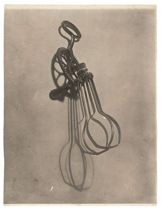 圖像相符 | Met 物件頁記載出處：Tristan Tzara →…Met 物件頁記載出處：Tristan Tzara → Arturo Schwarz → Jedermann Collection → 2009 年起 Bluff Collection（The Met 902862，現已下架）；Hyperallergic 圖說原文：「L’homme (Man)” (1918–20), gelatin silver print」；同組〈La femme (Woman)〉The Met 2005.100.206 登錄 Gelatin silver print；2026/10/16 出處圖片取自 Doorar 下載的 Met《When Objects Dream》展品清單頁（webarchive，object 902862，MR.0050），Claude 看圖比對一致 | ||
| p.32 | Integration of Shadows, 1918-20 | 館方紀錄（他版／他印本／底片） | Négatif au gélatino bromure…Négatif au gélatino bromure d’argent sur verre | Centre Pompidou AM… | 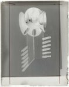 圖像相符 | 原始玻璃底片（相機拍攝） | |
| p.40 | Coat Stand, 1920 | 館方紀錄（他版／他印本／底片） | Gelatin silver print on…Gelatin silver print on fibre-based paper | Museum Boijmans Van… | 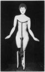 圖像相符 | ||
| p.41 | Head, New York, 1920 | Claude 看圖判斷 | — | 2026/10/15 第二輪查詢仍查無館方或拍賣…2026/10/15 第二輪查詢仍查無館方或拍賣紀錄 | — | Claude 說明Claude 看圖判斷：有透視（perspective）、景深（depth of field）與光影（light and shadow）的相機（camera）影像（銀鹽照片） | |
| p.42 | Man Ray, in collaboration with Marcel Duchamp. Dust Breeding, 1920. | 館方紀錄 | Gelatin silver print | The Met 69.521 | 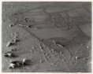 圖像相符 | ||
| p.45 | Moving Sculpture, 1920 | 館方紀錄 | Gelatin silver print | Baltimore Museum of Art… | 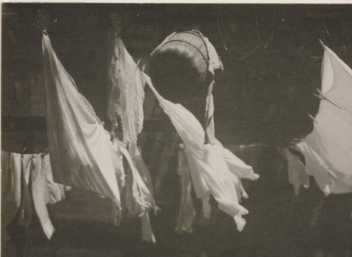 圖像相符 | 2026/10/16 Doorar 確認：出處網頁 BMA…2026/10/16 Doorar 確認：出處網頁 BMA 1988.434 的照片與素材是同一張（前版誤判「出處頁圖片為他作」，已改正） | |
| p.46 | La mer de merde, 糞海 1920 | 館方紀錄 | Gelatine silver print on…Gelatine silver print on fibre-based paper | Museum Boijmans Van… | 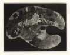 圖像相符 | ||
| p.49 | La plus belle statue d’Amérique, 美洲最美的雕像 1920 | 館方紀錄 | Gelatine silver print on…Gelatine silver print on fibre-based paper | Museum Boijmans Van… | 圖像相符 | ||
| p.50 | Untitled. 1920 | 拍賣（auction）／畫廊紀錄 | Photogravure (heliogravure),…Photogravure (heliogravure), sheet-fed, on heavyweight matte paper | 1stDibs 畫廊商品頁（1934 年… | 圖像相符 | 1920 底片、1934 年凹版印刷版本；畫廊資料，非館方…1920 底片（negative）、1934 年凹版印刷版本（version）；畫廊資料，非館方；未比對圖像 | |
| p.57 | Berenice Abbott. 1921 | 館方紀錄（他版／他印本／底片） | Gelatin silver print | High Museum of Art… | 圖像相符 | 館方定年 1922 | |
| p.58 | Tristan Tzara, 1921 | 館方紀錄 | Gelatin silver print | The Met 1997.53 | 版本不同原因素材是兩張照片（photograph）沖洗（processing）在同一張相紙（左為裸體女子、右為爬梯的 Tzara），出處圖是其中 Tzara 那一張 | 2026/10/16 Doorar…2026/10/16 Doorar 註記：兩張照片沖洗在同一張相紙。館方說明原文（The Met 1997.53）：“This picture was also sandwich printed by the artist with another image”（Claude 中譯：這張照片也被藝術家與另一張影像夾在一起印相），另一張影像是上半身裸露的女模特兒（model）；素材 p.58 就是這張夾印（sandwich print）版本，館藏（museum collection） 1997.53 是未夾印（sandwich printing）的 Tzara 單張。出處網頁的照片（Doorar 截圖，The Met 作品頁）： | |
| p.61 | Untitled (Eiffel Tower), 1922 | Claude 看圖判斷 | — | 查無館方或拍賣紀錄（兩輪查詢） | — | 2026/10/15 Doorar 暫判定為 01…2026/10/15 Doorar 暫判定為 01 攝影（非 Rayograph） | |
| p.89 | Jean Cocteau, 1922 | 館方紀錄 | Gelatin silver print | The Met 1987.1001 | 館方頁未公開圖片 | ||
| p.90 | James Joyce. 1922 | 館方紀錄 | Gelatin silver print | MoMA 99.1941 | 圖像相符 | ||
| p.91 | Georges Braque. 1922 | 館方紀錄 | Gelatin silver print | MoMA 276.1977 | 圖像相符 | ||
| p.92 | Marchesa Luisa Casati, 1922 | 館方紀錄（他版／他印本／底片） | Négatif au gélatino bromure…Négatif au gélatino bromure d’argent sur support souple | Centre Pompidou AM… | 圖像相符 | 原始軟片底片；Techniques：Négatif au…原始軟片底片；Techniques：Négatif au gélatino bromure d’argent sur support souple（Centre Pompidou 館方欄位） | |
| p.93 | Gertrude Stein with a portrait by Picasso, 1922 | 拍賣／畫廊紀錄 | Silver print, probably…Silver print, probably printed 1930’s. | Sotheby's Paris 2014… | 待確認原因出處圖為 Stein 坐姿近照，素材為與畢卡索（Picasso）畫像同框，可能是不同張 | ||
| p.94 | Jean Cocteau. 1922 | 館方紀錄（他版／他印本／底片） | Gelatin silver print | The Met 1987.1001 | 館方頁未公開圖片 | ||
| p.95 | Kiki de Montparnasse, 1922 | 館方紀錄（他版／他印本／底片） | gelatin silver print | The Met Perspectives… | 出處無圖原因出處頁沒有本作單張圖（作品集、展覽或文章頁） | 館方定年 1924 | |
| p.105 | Rrose Sélavy (Marcel Duchamp), 1923 | 館方紀錄 | Gelatin silver print | J. Paul Getty Museum… | 圖像相符 | 2026/10/16 改正：Doorar…2026/10/16 改正：Doorar 指出前版出處（Centre Pompidou AM 1995-281 (578) 玻璃底片）不對，改以 Getty 館方頁為依據：Gelatin silver print，圖面 22.1 × 17.6 cm，正面鉛筆簽「Man Ray」、背面「Man Ray 1920」。Claude 看圖比對（經 Chrome 截圖）：帽子花紋、毛領、戴戒指的手勢都與素材一致。另：PMA 1957-49-1（Marcel Duchamp as Rrose Sélavy, c.1920–1921）是雙手在臉旁的另一張，不是本件 | |
| p.106 | Kiki de Montparnasse, c.1923 | Claude 看圖判斷 | — | 2026/10/15 第二輪查詢仍查無館方或拍賣…2026/10/15 第二輪查詢仍查無館方或拍賣紀錄 | — | Claude 說明Claude 看圖判斷：有透視、景深與光影的相機影像（銀鹽照片）；Tokyo 寫真美術館 20013056〈Kiki de Montparnasse〉1924 無圖像描述，未確認 | |
| p.107 | Portrait of Nelly van Doesburg, 1923 | 館方紀錄 | Vintage gelatin silver print…Vintage gelatin silver print on fibre-based paper | Museum Boijmans Van… | 圖像相符 | ||
| p.128 | Marcel Duchamp with Shaving Lather for Monte Carlo Bond, c. 1924 | 館方紀錄 | Gelatin silver print | 待確認原因同一場次的照片；出處為頭部特寫（close-up）小照，泡沫形狀與臉部光線（light）和素材不同，可能不是同一張 | 2026/10/16 改正：原出處…2026/10/16 改正：原出處 NPG《Inventing Marcel Duchamp》展籤頁要人機驗證，Chrome 讀不到內容（Doorar 指出無內容）；改以 PMA 館方頁為依據：Gelatin silver print，圖面 11.7 × 8.6 cm、紙張 12.2 × 9.2 cm，Gift of Jacqueline, Paul, and Peter Matisse in memory of their mother, Alexina Duchamp, 1998。PMA 檔案館另有 MoMA 提供的翻拍（rephotography）照（MDE_B017_F001_044）。 Claude 說明Claude 看圖：出處為頭部特寫，素材含上半身與捧泡沫的雙手，泡沫形狀與光線略有不同，是否同一張底片待確認 | ||
| p.129 | Le Violon d'Ingre, 1924 | 館方紀錄 | Gelatin silver print on…Gelatin silver print on developing-out paper | 東京都寫真美術館 20100473 | 圖像相符 | Getty 86.XM.626.10 亦登錄…Getty 86.XM.626.10 亦登錄 Gelatin silver print；跨媒材（medium）：Photography ＋ Works on Paper & Print（2026/10/16 Doorar 註記） | |
| p.130 | Kiki de Montparnasse, 1924 | 館方紀錄 | Gelatin silver print | The Met 903094（Bluff… | 圖像相符 | 2026/10/16 底片已找到：Centre…2026/10/16 底片已找到：Centre Pompidou AM 1995-281 (277)，玻璃底片（Négatif au gélatino bromure d’argent sur verre，23.5 × 17.5 cm，Don de M. Lucien Treillard, 1995）；底片反相後與素材疊圖，臉、手臂、手鐲、地板菱格逐處重合（見 203 研究素材「p.130–133 底片比對」）。The Met 專文〈More Than a Muse〉把四張並列，順序與 p.130–133 相同，第 1 張尺寸（dimensions） 22.5 × 16.8 cm＝903094 | |
| p.131 | Kiki de Montparnasse, 1924 | 館方紀錄 | Gelatin silver print | The Met 903362 或… | 圖像相符 | The Met 專文四張並列的第 2 張；第 2、3…The Met 專文四張並列的第 2 張；第 2、3 張尺寸同為 28.3 × 18.7 cm，903362／903363 哪一張對應 p.131 仍為推定。 Claude 說明Claude 看圖與疊圖：與 p.130 出自同一張底片（Centre Pompidou AM 1995-281 (277)），印相（printing）時加柔焦（diffusion）並把臉部壓暗遮住（見 203「p.130–133 底片比對」） | |
| p.132 | Kiki de Montparnasse, 1924 | 館方紀錄 | Gelatin silver print | The Met 903363 或… | 圖像相符 | The Met 專文四張並列的第 3 張，對應同…The Met 專文四張並列的第 3 張，對應同 p.131 為推定。 Claude 說明Claude 疊圖：與 p.131 幾乎完全重合，同一底片（Centre Pompidou AM 1995-281 (277)），柔焦（soft focus）與暗角（vignetting）比 p.131 更重 | |
| p.133 | Kiki de Montparnasse, 1924 | 館方紀錄 | Gelatin silver print | The Met 903364（Bluff… | 圖像相符 | The Met 專文四張並列的第 4 張（最模糊、右下簽名）…The Met 專文四張並列的第 4 張（最模糊、右下簽名），尺寸 26.4 × 17.3 cm＝903364。 Claude 說明Claude 疊圖：身體輪廓（contour）與 p.130 重合，同一底片（Centre Pompidou AM 1995-281 (277)），柔焦最重，頭部整塊遮暗 | |
| p.134 | Ciné-Sketch: Adam and Eve (Marcel Duchamp and Bronia Perlmutter), 1924 | 館方紀錄 | Photographs, Gelatin silver…Photographs, Gelatin silver print | Philadelphia Museum of… | 圖像相符 | 出處圖片為 Doorar 截取的 PMA…出處圖片為 Doorar 截取的 PMA 作品頁照片（2026/10/16），Claude 看圖比對與素材一致 | |
| p.135 | Arnold Schoenberg. 1924 | 館方紀錄 | Gelatin silver print | MoMA 109.1941 | 圖像相符 | ||
| p.136 | Jean Cocteau. 1925 | 館方紀錄 | Gelatin silver print | MoMA 93.1941（Jean… | 圖像相符 | 題名年代相符；Sotheby's 2020 Lot…題名（title）年代相符；Sotheby's 2020 Lot 64〈Jean Cocteau with self-portrait wire structure〉記為 Silver print on postcard | |
| p.137 | Constantin Brancusi, 1925 | 館方紀錄 | Gelatin silver print | MoMA 90.1943 | 不符原因出處圖為另一張 Brancusi 肖像（側面、手托嘴）不符的出處圖片不置入（2026/10/16 Doorar 指示） | 2026/10/16 重查（Doorar 指出出處照片不對）…2026/10/16 重查（Doorar 指出出處照片不對）：經 Chrome 確認 MoMA 90.1943 作品頁的圖是側臉抽菸那張，不是素材這張正面像；另查 Man Ray Trust 官方圖庫 Telimage 的 Brancusi 7 張、Centre Pompidou PH 837 A《Portrait de Brancusi》1925（館方註記可能為 Paul Outerbridge 所攝）、東京都寫真美術館 20013187（Brancusi 自拍），都不是本件；仍待查 | |
| p.138 | Portrait of Francis Picabia, 1925-30 | 館方紀錄 | Vintage gelatin silver print…Vintage gelatin silver print on fibre-based paper | Museum Boijmans Van… | 圖像相符 | ||
| p.140 | Marine, 1925 | 館方紀錄 | Gelatin silver print | The Met 914235（Marine,… | 圖像相符 | 2026/10/16 依 Doorar 下載的 Met…2026/10/16 依 Doorar 下載的 Met 展品清單頁（webarchive）取得館方登錄與圖片； Claude 說明Claude 看圖比對：圓月、雲層、船形剪影（silhouette）與下方瓦片狀地平線全部一致，是同一件 | |
| p.144 | Self-Portrait in 31 bis rue Campagne-Première Studio, 1925 | 拍賣／畫廊紀錄 | Silver print, probably…Silver print, probably printed later. | Sotheby's Paris 2014… | 不符原因出處圖為球面反光鏡中的畫室（另一張自拍）不符的出處圖片不置入（2026/10/16 Doorar 指示） | 拍品定年 ca.1933，未確定同一張 | |
| p.145 | Henri Matisse. 1925 | 館方紀錄 | Gelatin silver print | MoMA 101.1941 | 圖像相符 | ||
| p.147 | Pablo Picasso. 1926 | 館方紀錄 | Gelatin silver print | MoMA 59.1976 | 圖像相符 | ||
| p.148 | Black & White, 1926 | 館方紀錄 | Gelatin silver print | MoMA 132.1941 | 圖像相符 | ||
| p.149 | Black & White, 1926 | 館方紀錄（他版／他印本／底片） | Gelatin silver print | MoMA 132.1941 | 出處無圖原因出處頁沒有本作單張圖（作品集、展覽或文章頁） | 與 p.148 同一作品（重複收錄或同題）； | |
| p.150 | Noire et Blanche (Black and White) 1926 | 館方紀錄（他版／他印本／底片） | Gelatin silver print | MoMA 132.1941 | 出處無圖原因出處頁沒有本作單張圖（作品集、展覽或文章頁） | 與 p.148 同一作品（重複收錄或同題）； | |
| p.151 | Untitled (Reflections), 1926 | 館方紀錄 | Gelatin silver print | MoMA 200.1941（Untitled… | 圖像相符 | 題名年代相符 | |
| p.155 | Untitled. 1927 | Claude 看圖判斷 | — | 2026/10/15 第二輪查詢仍查無館方或拍賣…2026/10/15 第二輪查詢仍查無館方或拍賣紀錄 | — | Claude 說明Claude 看圖判斷：有透視、景深與光影的相機影像（銀鹽照片）；候選：MoMA 136.1941〈Untitled〉1927 Gelatin silver print（無圖像描述） | |
| p.156 | Untitled. 1927 | Claude 看圖判斷 | — | 2026/10/15 第二輪查詢仍查無館方或拍賣…2026/10/15 第二輪查詢仍查無館方或拍賣紀錄 | — | Claude 說明Claude 看圖判斷：有透視、景深與光影的相機影像（銀鹽照片）；候選同上 MoMA 136.1941 | |
| p.158 | Film still from L’étoile de mer, 1928 | 館方紀錄 | Gelatin silver print on…Gelatin silver print on developing-out paper | 東京都寫真美術館 20100466 | 不符原因出處圖為攤開的雙手，非《L’étoile de mer》劇照不符的出處圖片不置入（2026/10/16 Doorar 指示） | 電影（film）《L’étoile de mer》劇照 | |
| p.159 | Untitled, 1928 | Claude 看圖判斷 | — | 2026/10/15 第二輪查詢仍查無館方或拍賣…2026/10/15 第二輪查詢仍查無館方或拍賣紀錄 | — | Claude 說明Claude 看圖判斷：有透視、景深與光影的相機影像（銀鹽照片） | |
| p.160 | Untitled, 1928 | Claude 看圖判斷 | — | 2026/10/15 第二輪查詢仍查無館方或拍賣…2026/10/15 第二輪查詢仍查無館方或拍賣紀錄 | — | Claude 說明Claude 看圖判斷：有透視、景深與光影的相機影像（銀鹽照片） | |
| p.161 | Untitled, 1928 | Claude 看圖判斷 | — | 2026/10/15 第二輪查詢仍查無館方或拍賣…2026/10/15 第二輪查詢仍查無館方或拍賣紀錄 | — | Claude 說明Claude 看圖判斷：有透視、景深與光影的相機影像（銀鹽照片） | |
| p.162 | Untitled, 1928 | Claude 看圖判斷 | — | 2026/10/15 第二輪查詢仍查無館方或拍賣…2026/10/15 第二輪查詢仍查無館方或拍賣紀錄 | — | Claude 說明Claude 看圖判斷：有透視、景深與光影的相機影像（銀鹽照片） | |
| p.166 | Salvador Dali. 1929 | 館方紀錄（他版／他印本／底片） | Négatif au gélatino bromure…Négatif au gélatino bromure d’argent sur verre | Centre Pompidou AM… | 不符原因出處底片為穿白西裝的男子，與素材的 Dalí 正面肖像不同不符的出處圖片不置入（2026/10/16 Doorar 指示） | 原始玻璃底片（glass-plate negative） | |
| p.167 | Woman with Long Hair, 1929 | 館方紀錄（他版／他印本／底片） | Silver Gelatin Print on paper | Städel Museum… | 出處無圖原因Chrome 無法開啟此網站，未取圖 | ||
| p.169 | I do not see the (Woman) Hidden in the Forest, 1929 | Claude 看圖判斷 分類存疑 | — | 查無紀錄 | — | Claude 說明Claude 看圖判斷：有透視、景深與光影的相機影像（銀鹽照片）；研究素材圖說為「I do not see the (Woman) Hidden in the Forest, 1929」。André Breton 檔案記錄此作中央是 Magritte 的油畫（Oil on canvas），四周是 16 位超現實主義者的快照亭肖像，刊於《La Révolution surréaliste》第 12 期（1929/12），未記 Man Ray 為攝影者（André Breton 檔案）。Claude：此件歸為 Man Ray 的相機攝影存疑。 | |
| p.170 | Photo de Suzy Solidor, La Fille aux Cheveux de Lin, 1929 | 館方紀錄 | Gelatin silver print | MoMA 156.1941 | 不符原因出處圖為舉臂的裸體（nude），與素材 Suzy Solidor 姿勢（pose）不同不符的出處圖片不置入（2026/10/16 Doorar 指示） | Solarization 查證（2026/10/16…Solarization 查證（2026/10/16）：非 Solarization（館方紀錄）。MoMA 156.1941 媒材只登錄「Gelatin silver print」；MoMA 對中途曝光作品會註明「(solarized)」，例如同為 James Thrall Soby 捐贈的 155.1941《Natasha》與 146.1941《Sleeping Woman》都登錄「Gelatin silver print (solarized)」。Centre Pompidou 同一姿勢的照片 AM 1994-394 (1358) 題名「Suzy Solidor」，而館方把中途曝光的另兩張題為「Suzy Solidor solarisée」（AM 1994-394 (1365)、(1366)）。 Claude 說明Claude 看圖：肩膀邊緣有一道細暗線，但整張沒有明暗反轉（tonal reversal）。 | |
| p.171 | Anatomies. 1929 | 館方紀錄 | Gelatin silver print | MoMA 151.1941 | 圖像相符 | ||
| p.173 | Salvador Dali. 1929 | 館方紀錄（他版／他印本／底片） | Négatif au gélatino bromure…Négatif au gélatino bromure d’argent sur verre | Centre Pompidou AM… | 不符原因同 p.166不符的出處圖片不置入（2026/10/16 Doorar 指示） | 與 p.166 同一作品（重複收錄或同題）；原始玻璃底片 | |
| p.174 | Place Vendôme. 1929 | 館方紀錄 | Gelatin silver print | MoMA 158.1941 | 圖像相符 | ||
| p.175 | Untitled. 1929 | Claude 看圖判斷 | — | 2026/10/15 第二輪查詢仍查無館方或拍賣…2026/10/15 第二輪查詢仍查無館方或拍賣紀錄 | — | Claude 說明Claude 看圖判斷：有透視、景深與光影的相機影像（銀鹽照片）；候選：MoMA 145.1941〈Untitled〉1929 Gelatin silver print（無圖像描述） | |
| p.176 | Untitled. 1929 | Claude 看圖判斷 | — | 2026/10/15 第二輪查詢仍查無館方或拍賣…2026/10/15 第二輪查詢仍查無館方或拍賣紀錄 | — | Claude 說明Claude 看圖判斷：有透視、景深與光影的相機影像（銀鹽照片）；候選同上 MoMA 145.1941；Solarization 查證（2026/10/16）：非 Solarization（待確認）（候選館藏＋Claude 看圖）。候選 MoMA 145.1941（Untitled, 1929）媒材只登錄「Gelatin silver print」，但館方頁未比對圖像，是否同一件未確認。Claude 看圖：臉、手、頭髮的明暗正常，沒有中途曝光的反轉輪廓。 | |
| p.178 | Untitled. 1929 | Claude 看圖判斷 | — | 2026/10/15 第二輪查詢仍查無館方或拍賣…2026/10/15 第二輪查詢仍查無館方或拍賣紀錄 | — | Claude 說明Claude 看圖判斷：有透視、景深與光影的相機影像（銀鹽照片） | |
| p.179 | Untitled. 1929 | Claude 看圖判斷 | — | 2026/10/15 第二輪查詢仍查無館方或拍賣…2026/10/15 第二輪查詢仍查無館方或拍賣紀錄 | — | Claude 說明Claude 看圖判斷：有透視、景深與光影的相機影像（銀鹽照片） | |
| p.180 | Untitled. 1929 | Claude 看圖判斷 | — | 2026/10/15 第二輪查詢仍查無館方或拍賣…2026/10/15 第二輪查詢仍查無館方或拍賣紀錄 | — | Claude 說明Claude 看圖判斷：有透視、景深與光影的相機影像（銀鹽照片） | |
| p.181 | Carl Van Vechten. 1929 | 館方紀錄 | Gelatin silver print | MoMA 108.1941 | 圖像相符 | ||
| p.183 | The Surrealists, 1930 | 館方紀錄（他版／他印本／底片） | Négatif au gélatino bromure…Négatif au gélatino bromure d’argent sur support souple | Centre Pompidou AM… | 待確認原因底片構圖（composition）相近，未能確認同一張 | 團體照翻拍的底片 | |
| p.184 | Self-Portrait, 1930 | 館方紀錄（他版／他印本／底片） | —（Telimage 未載媒材） | Man Ray Trust 官方數位圖庫… | 圖像相符 | Telimage 說明原文：“selfportrait…Telimage 說明原文：“selfportrait of Man Ray distorted face camera in hands”；Telimage 定年 1939，研究素材圖說為 1930。2026/10/16 改正：前版誤配 Toledo 1987.207（solarized Self Portrait, 1932）並因此補標 Solarization，Doorar 指正不是同一張；本次在 Telimage「Selfportraits」類 145 張中逐張看圖比對，椅背、手持攝影機與姿勢一致。 Claude 說明Claude 看圖：畫面沒有中途曝光的輪廓線，不是 Solarization，移回 306-1。 | |
| p.188 | Untitled. 1930 | Claude 看圖判斷 | — | 2026/10/15 第二輪查詢仍查無館方或拍賣…2026/10/15 第二輪查詢仍查無館方或拍賣紀錄 | — | Claude 說明Claude 看圖判斷：有透視、景深與光影的相機影像（銀鹽照片）；Smithsonian American Art Museum 1989.55.1〈Solarization〉為蛋、貝殼與手，應是另一件 | |
| p.189 | Untitled. 1930 | Claude 看圖判斷 | — | 2026/10/15 第二輪查詢仍查無館方或拍賣…2026/10/15 第二輪查詢仍查無館方或拍賣紀錄 | — | Claude 說明Claude 看圖判斷：有透視、景深與光影的相機影像（銀鹽照片） | |
| p.191 | (Venus Total Eclipse) 金星全蝕, 1930 | 拍賣／畫廊紀錄 | Original gelatin-silver print | Gazette Drouot lot 158 | 拍賣頁無圖 | ||
| p.193 | Untitled. 1930 | Claude 看圖判斷 | — | 2026/10/15 第二輪查詢仍查無館方或拍賣…2026/10/15 第二輪查詢仍查無館方或拍賣紀錄 | — | Claude 說明Claude 看圖判斷：有透視、景深與光影的相機影像（銀鹽照片） | |
| p.194 | Untitled. 1930 | Claude 看圖判斷 | — | 2026/10/15 第二輪查詢仍查無館方或拍賣…2026/10/15 第二輪查詢仍查無館方或拍賣紀錄 | — | Claude 說明Claude 看圖判斷：有透視、景深與光影的相機影像（銀鹽照片） | |
| p.196 | Marcel Duchamp. 1930 | 館方紀錄 | Gelatin silver print | MoMA 91.1943 | 圖像相符 | Solarization 查證（2026/10/16…Solarization 查證（2026/10/16）：非 Solarization（館方紀錄）。MoMA 91.1943 媒材只登錄「Gelatin silver print」（MoMA 慣例：中途曝光作品會註明 (solarized)）。另有 Solarization 版本：Smithsonian National Portrait Gallery〈Profile Portrait of Marcel Duchamp〉1930（printed later），館方說明原文 “an effect of a technique called solarization”；那是另一件印本，素材這張 Claude 看圖沒有明暗反轉。 | |
| p.198 | Mrs. Henry Rowell. 1930 | 館方紀錄 | Gelatin silver print | MoMA 166.1941（Mrs.… | 圖像相符 | 2026/10/16 Doorar 重新判定：由…2026/10/16 Doorar 重新判定：由 306-1S Solarization 移回 306-1 攝影（非 Rayograph）。出處佐證（2026/10/16 經 Chrome 查核）：MoMA 166.1941 媒材只登錄「Gelatin silver print」；同為 James Thrall Soby 捐贈的 p.205《Natasha》MoMA 155.1941 則登錄「Gelatin silver print (solarized)」，館方有中途曝光（solarization）的作品會在媒材欄註明。 Claude 說明Claude 看圖：頭髮與臉的輪廓沒有 Solarization 特有的黑色輪廓線與局部色調反轉，是一般正片（positive）色調（tone）。原標 Solarization 是 Q1 初稿（2026/10/05）的圖庫標記，沒有出處依據 | |
| p.199 | Guadeloupe Dancer. 1930 | 館方紀錄 | Gelatin silver print | MoMA 165.1941 | 圖像相符 | ||
| p.200 | Untitled, 1931 | Claude 看圖判斷 | — | 2026/10/15 第二輪查詢仍查無館方或拍賣…2026/10/15 第二輪查詢仍查無館方或拍賣紀錄 | — | Claude 說明Claude 看圖判斷：有透視、景深與光影的相機影像（銀鹽照片） | |
| p.204 | Untitled. 1931 | Claude 看圖判斷 | — | 2026/10/15 第二輪查詢仍查無館方或拍賣…2026/10/15 第二輪查詢仍查無館方或拍賣紀錄 | — | Claude 說明Claude 看圖判斷：有透視、景深與光影的相機影像（銀鹽照片）；Solarization 查證（2026/10/16）：非 Solarization（待確認）（Claude 看圖）。查無館方或拍賣紀錄（Centre Pompidou「Vénus」底片 AM 1995-281 (405) 為無頭軀幹，不是本件）。Claude 看圖：石膏頭像、鏡子與金屬碗的明暗正常，沒有反轉輪廓。 | |
| p.211NEW | La Ville from the portfolio Electricité. 1931 | 館方紀錄 | Photogravure, printed 1931 | MoMA 395.1942.3（La… | 圖像相符 | 2026/10/16 Doorar 決定由 02…2026/10/16 Doorar 決定由 02 Rayograph 改歸 01 攝影（非 Rayograph）。 Claude 說明Claude 看圖：巴黎夜間霓虹招牌（Cadum、Aéropostale 等字樣）的多重曝光（multiple exposure），有相機透視、景深與光軌，不是物件直接放在相紙（photographic paper）上的剪影。MoMA 媒材欄只登錄「Photogravure, printed 1931」；《Électricité》作品集整體被登錄為 rayographs 的凹版複製（reproduction），但這一張是相機影像。最終物質形式是照相凹版，跨媒材的討論見 307-12026/10/19 《Électricité》依影像維持 01 攝影（Doorar 2026/10/19 決定：p.203、p.202、p.206 要屬於 Rayograph）；作品集為照相凹版（photogravure），以 305 媒材總表 05 欄 ○ 標示。 | |
| p.214 | Place de la Concorde. 1931 | 館方紀錄（他版／他印本／底片） | Négatif au gélatino bromure…Négatif au gélatino bromure d’argent sur support souple | Centre Pompidou AM… | 不符原因出處底片為建築立面，與素材的雕像剪影不同不符的出處圖片不置入（2026/10/16 Doorar 指示） | 原始底片 | |
| p.215 | Untitled. 1931 | Claude 看圖判斷 | — | 2026/10/15 第二輪查詢仍查無館方或拍賣…2026/10/15 第二輪查詢仍查無館方或拍賣紀錄 | — | Claude 說明Claude 看圖判斷：有透視、景深與光影的相機影像（銀鹽照片） | |
| p.216 | Untitled. 1931 | Claude 看圖判斷 | — | 2026/10/15 第二輪查詢仍查無館方或拍賣…2026/10/15 第二輪查詢仍查無館方或拍賣紀錄 | — | Claude 說明Claude 看圖判斷：有透視、景深與光影的相機影像（銀鹽照片） | |
| p.217 | Untitled. 1931 | 館方紀錄（他版／他印本／底片） | gelatin silver print | National Gallery of Art… | 出處無圖原因Chrome 無法開啟此網站，未取圖 | 館方描述為葉上一顆杏桃，素材為兩顆桃子，未確認同一張 | |
| p.218 | Tristan Tzara. 1931 | 館方紀錄（他版／他印本／底片） | Gelatin silver print | The Met 1997.53 | 不符原因出處圖為 1921 年 Tzara 爬梯，非 1931 年肖像不符的出處圖片不置入（2026/10/16 Doorar 指示） | 館方定年 1921，可能是不同拍攝 | |
| p.220 | Paul Eluard. 1931 | 館方紀錄 | Gelatin silver print | MoMA 96.1941 | 圖像相符 | ||
| p.222 | Tears of Glass, 1932 | 拍賣／畫廊紀錄 | Gelatin-silver print made by…Gelatin-silver print made by Pierre Gassmann in 1976 | Gazette Drouot lot 128 | 拍賣頁無圖 | 1976 年後印 | |
| p.223 | Tears of Glass, 1932 | 館方紀錄（他版／他印本／底片） | Gelatin-silver print made by…Gelatin-silver print made by Pierre Gassmann in 1976 | Gazette Drouot lot 128 | 拍賣頁無圖 | 與 p.222 同一作品（重複收錄或同題）；1976 年後印 | |
| p.225 | Apple and Screw, circa 1932 | 館方紀錄（他版／他印本／底片） | Gelatin silver print on…Gelatin silver print on developing-out paper | 東京都寫真美術館 20100468 | 圖像相符 | 館方定年 1931 | |
| p.226 | Self-Portrait with Gun, 1932 | 館方紀錄（他版／他印本／底片） | Négatif au gélatino bromure…Négatif au gélatino bromure d’argent sur verre | Centre Pompidou AM… | 不符原因出處底片為站立人像，與素材的持槍自拍不同不符的出處圖片不置入（2026/10/16 Doorar 指示） | 1932 自拍玻璃底片，未確定是否持槍那張 | |
| p.230 | Untitled. 1932 | Claude 看圖判斷 | — | 2026/10/15 第二輪查詢仍查無館方或拍賣…2026/10/15 第二輪查詢仍查無館方或拍賣紀錄 | — | Claude 說明Claude 看圖判斷：有透視、景深與光影的相機影像（銀鹽照片） | |
| p.232 | Le Terrain Vague 荒地. 1932 | 館方紀錄 | Gelatin silver print | MoMA 623.1941 | 圖像相符 | ||
| p.234 | Érotique voilée 隱晦的情色 (Meret Oppenheim), 1933 | 館方紀錄 | Gelatin silver print | MFAH 2002.1580 | 圖像相符 | ||
| p.236 | Pablo Picasso, 1933 | 館方紀錄 | Gelatin silver print | MFAH 2002.271 | 圖像相符 | ||
| p.237 | Untitled. 1933 | Claude 看圖判斷 | — | 2026/10/15 第二輪查詢仍查無館方或拍賣…2026/10/15 第二輪查詢仍查無館方或拍賣紀錄 | — | Claude 說明Claude 看圖判斷：有透視、景深與光影的相機影像（銀鹽照片） | |
| p.238 | Untitled. 1933 | 館方紀錄（他版／他印本／底片） | Epreuve gélatino-argentique,…Epreuve gélatino-argentique, contact | Centre Pompidou AM… | 待確認原因同為火車頭題材（subject matter），取景不同 | 接觸印相（contact print）小樣，館方定年 1932 | |
| p.239 | Minotaur, 1934 | 館方紀錄 | Gelatin silver print | MoMA 267.2018（Minotaur,… | 圖像相符 | 館方定年 1933；素材 1934（刊於《Minotaure…館方定年 1933；素材 1934（刊於《Minotaure》） | |
| p.240 | Self-Portrait with the Lamp, 1934 Self-Portrait with the Lamp | 拍賣／畫廊紀錄 | Silver print, probably…Silver print, probably printed later. | Sotheby's Paris 2014… | 不符原因出處圖為球面反光鏡自拍，非持燈自拍不符的出處圖片不置入（2026/10/16 Doorar 指示） | 未確定同一張；Solarization…未確定同一張；Solarization 查證（2026/10/16）：待確認（看似 Solarization）（Claude 看圖）。現有出處 Sotheby’s Paris 2014 PF1436 Lot 7 媒材為「Silver print, probably printed later」，沒有寫 solarized，且是否同一張未確定。 Claude 說明Claude 看圖：頭髮呈白色並帶暗斑、輪廓有亮邊，像中途曝光的明暗反轉；同題的 p.241 則沒有這個現象。查無明確資料，列入待查。 | |
| p.241 | Self-Portrait with the Lamp, 1934 Self-Portrait with the Lamp | Claude 看圖判斷 | — | 查無紀錄 | — | Claude 說明Claude 看圖判斷：有透視、景深與光影的相機影像（銀鹽照片） | |
| p.242 | Butterflies, 1935 | 館方紀錄（他版／他印本／底片） | Gelatin silver print | The Met 1977.539 | 待確認原因素材為彩色蝴蝶，出處為黑白蝴蝶群，構圖待比對 | 館方定年 ca.1930 | |
| p.243 | The Kiss, 1935 | 拍賣／畫廊紀錄 | Gelatin-silver print,…Gelatin-silver print, original contact cropped by folds by the artist. | Gazette Drouot lot 91 | 拍賣頁無圖 | 拍品定年 c.1930 | |
| p.244NEW | Fly, 1935–1936 | 館方紀錄 | Gelatin silver print | J. Paul Getty Museum 84.XM.1000.131…J. Paul Getty Museum 84.XM.1000.131｜[Fly], 1935–1936（2026/10/20 經 Chrome 查核） | NEW圖像相符 | Image 19.4 × 24.8 cm；正面鉛筆簽名；Man Ray → Arnold Crane →…Image 19.4 × 24.8 cm；Signed ro. print in pencil；Provenance：Man Ray → Arnold Crane（before 1973）→ Getty（1984）。原依據為 Claude 看圖判斷（2026/10/15 查無紀錄），2026/10/20 查到 Getty 館方紀錄後改列。Centre Pompidou AM 1994-393 (4543)、(4544) 藏有只拍昆蟲的原始底片（6 × 9 cm），證實是兩張底片合成（compositing）。昆蟲物種與拍攝技術見 203-7。 | |
| p.245 | Space Writing (Self-Portrait), 1935 | 館方紀錄 | gelatin silver print | Bowdoin College Museum… | 圖像相符 | 長時間曝光（long exposure）拍攝移動的光 | |
| p.249 | Dora Maar, 1936 | Claude 看圖判斷 | — | 2026/10/15 第二輪查詢仍查無館方或拍賣…2026/10/15 第二輪查詢仍查無館方或拍賣紀錄 | — | Claude 說明Claude 看圖判斷：有透視、景深與光影的相機影像（銀鹽照片） | |
| p.250 | Dora Maar, 1936 | Claude 看圖判斷 | — | 2026/10/15 第二輪查詢仍查無館方或拍賣…2026/10/15 第二輪查詢仍查無館方或拍賣紀錄 | — | Claude 說明Claude 看圖判斷：有透視、景深與光影的相機影像（銀鹽照片） | |
| p.251 | Observatory Time: The Lovers, 1936 | 拍賣／畫廊紀錄 | Silver print. | Sotheby's Paris 2014… | 不符原因出處圖只有天空中的唇與地平線，素材下方另有橫躺的裸體，不是同一張不符的出處圖片不置入（2026/10/16 Doorar 指示） | 油畫（oil painting）的翻拍照片，拍品定年 1934 | |
| p.252 | Self-Portrait as a Fashion Photographer, 1936 | 拍賣／畫廊紀錄 | Silver Print, signed, titled…Silver Print, signed, titled ‘fashion photographer’ and dated ‘mars 1936’ | Sotheby's London 2004… | 拍賣頁無圖 | ||
| p.253 | André Masson's Mannequin, 1938 | 拍賣／畫廊紀錄 | 12 original gelatin-silver…12 original gelatin-silver prints | Drouot（1938 超現實主義國際展人台組照… | 不符原因出處圖為彩色版畫女子肖像，非 Masson 的人台照片不符的出處圖片不置入（2026/10/16 Doorar 指示） | 未逐張註明 Masson 人台 | |
| p.259 | Ostrich Egg, 1940 | 拍賣／畫廊紀錄 | Silver print. | Sotheby's Paris 2014… | 待確認原因同為鴕鳥蛋題材，但光線、取景與底座角度不同，可能是另一張 | 拍品定年 1944 | |
| p.261 | Self-Portrait in Graham Hollywood Car, 1941 | Claude 看圖判斷 | — | 2026/10/15 第二輪查詢仍查無館方或拍賣…2026/10/15 第二輪查詢仍查無館方或拍賣紀錄 | — | Claude 說明Claude 看圖判斷：有透視、景深與光影的相機影像（銀鹽照片）；Posen Library 確認題名年代，但未寫媒材 | |
| p.262 | Dead leaf, 1942 | 館方紀錄（他版／他印本／底片） | Epreuve gélatino-argentique | Centre Pompidou AM… | 圖像相符 | 館方登錄為銀鹽照片（非 photogram）…館方登錄為銀鹽照片（非 photogram），支持歸入相機攝影；另 AIC 1985.877〈Dead Leaf〉（1926）登錄為 photogram，應是另一件 | |
| p.264 | Photographic black-and-white illustration for Louis Aragon’s surrealist novel ‘Aurélien’ from 1944 | 館方紀錄（他版／他印本／底片） | Négatif gélatino-argentique…Négatif gélatino-argentique sur support souple | Centre Pompidou AM… | 不符原因出處底片為另一張臉部影像不符的出處圖片不置入（2026/10/16 Doorar 指示） | 1966 年的底片，非 1944 年原作（original work） | |
| p.266 | Juliet and Margaret Nieman in Papier-Mâché Masks, c. 1945 | 拍賣／畫廊紀錄 | gelatin silver print | 版本不同原因素材是出處照片的負像（底片）並左右翻轉（flip），是同一張照片，不是中途曝光 | 2026/10/16 Doorar 判定：由 306-1S…2026/10/16 Doorar 判定：由 306-1S Solarization 移回 306-1 攝影（非 Rayograph，非 Solarization）；素材是出處網頁照片的底片（負像）並做左右翻轉，不是中途曝光。拍品原文：
Claude 說明Claude 看圖驗證：把出處照片做負像（negative image）再左右翻轉後，兩人的位置、面具花紋、項鍊與舉起的手都和素材一致；素材沒有 Solarization 那種正負並存的輪廓線，整張是完整的負像。 | ||
| p.268 | Hibiscus Flower, 1946 | Claude 看圖判斷 | — | 2026/10/15 第二輪查詢仍查無館方或拍賣…2026/10/15 第二輪查詢仍查無館方或拍賣紀錄 | — | Claude 說明Claude 看圖判斷：有透視、景深與光影的相機影像（銀鹽照片） | |
| p.270 | Self-portrait with beret, 1946 | Claude 看圖判斷 | — | 2026/10/15 第二輪查詢仍查無館方或拍賣…2026/10/15 第二輪查詢仍查無館方或拍賣紀錄 | — | Claude 說明Claude 看圖判斷：有透視、景深與光影的相機影像（銀鹽照片） | |
| p.272 | Obstruction (Coat Hangers), 1948 | Claude 看圖判斷 分類存疑 | — | 查無紀錄 | — | Claude 說明Claude 看圖判斷：有透視、景深與光影的相機影像（銀鹽照片）；The Met 2015.242.1–.63 是衣架物件本身（63 wooden coat hangers），不是這張 1948 年照片（The Met）；照片本身查無紀錄，Claude 看圖判斷為相機照片。 | |
| p.283 | Dora Maar Portrait, 1963 | Claude 看圖判斷 | — | 2026/10/15 第二輪查詢仍查無館方或拍賣…2026/10/15 第二輪查詢仍查無館方或拍賣紀錄 | — | Claude 說明Claude 看圖判斷：有透視、景深與光影的相機影像（銀鹽照片）；Solarization 查證（2026/10/16）：非 Solarization（待確認）（Claude 看圖）。查無館方或拍賣紀錄。Claude 看圖：臉、手與貝殼的明暗正常，沒有中途曝光的反轉輪廓。 |
01 攝影（非 Rayograph）中，研究素材圖說或館方紀錄標為 Solarization（中途曝光，暗房技法）的作品，獨立成一頁；仍屬 01 攝影（photography），不是另一種媒材（medium）。
Doorar 指定查證 p.176、p.228、p.233、p.240、p.283、p.204、p.196、p.170 是否為 Solarization（中途曝光）。結果：是 2 件（p.228、p.233，已移入本頁）、不是 5 件、待確認 1 件（p.240）。「非 Solarization（待確認）」表示查無館方資料，只有 Claude 看圖判斷。
| 合計 | 是 2、不是 5、待確認 1 | |||
|---|---|---|---|---|
| 頁 | 素材圖說 | 結果 | 依據等級 | 依據 |
| Alberto Giacometti, 1932 | Solarization | 拍賣紀錄＋Claude 看圖 | Sotheby’s Paris 2014 PF1436 Lot 9…Sotheby’s Paris 2014 PF1436 Lot 9 題名（title）「Alberto Giacometti, solarisé, 1932」，媒材「Solarised silver print」；Sotheby’s 2018 PF1830 Lot 5 媒材「vintage solarized silver print」，圖錄原文 “Man Ray solarized this print.”（Claude 中譯：Man Ray 把這張照片做了中途曝光）。2018 Lot 5 的圖與素材同一姿勢（pose）、同一件外套（同一底片；原始底片為 Centre Pompidou AM 1995-281 (525)）； Claude 說明Claude 看圖：素材臉部輪廓（contour）有中途曝光（solarization）的亮邊。 | |
| Young Man (Jeune Homme). 1933 | Solarization | 館方說明＋Claude 看圖 | The Met 1987.1100.291（Jean-Louis…The Met 1987.1100.291（Jean-Louis Barrault, 1930–33）館方說明：軀幹 “outlined by a bold black line”，並說 Man Ray 用了 “a process called solarization”（Claude 中譯：以粗黑線勾勒；稱為中途曝光的技法）。 Claude 說明Claude 看圖：素材軀幹同樣有黑色粗輪廓線；題名與素材不同（素材題 Young Man (Jeune Homme), 1933），同一件與否仍待確認，但技法可判定。 | |
| Photo de Suzy Solidor, La Fille aux Cheveux de Lin, 1929 | 非 Solarization | 館方紀錄 | MoMA 156.1941 媒材只登錄「Gelatin silver…MoMA 156.1941 媒材只登錄「Gelatin silver print」；MoMA 對中途曝光作品會註明「(solarized)」，例如同為 James Thrall Soby 捐贈的 155.1941《Natasha》與 146.1941《Sleeping Woman》都登錄「Gelatin silver print (solarized)」。Centre Pompidou 同一姿勢的照片（photograph） AM 1994-394 (1358) 題名「Suzy Solidor」，而館方把中途曝光的另兩張題為「Suzy Solidor solarisée」（AM 1994-394 (1365)、(1366)）。 Claude 說明Claude 看圖：肩膀邊緣有一道細暗線，但整張沒有明暗反轉（tonal reversal）。 | |
| Marcel Duchamp. 1930 | 非 Solarization | 館方紀錄 | MoMA 91.1943 媒材只登錄「Gelatin silver…MoMA 91.1943 媒材只登錄「Gelatin silver print」（MoMA 慣例：中途曝光作品會註明 (solarized)）。另有 Solarization 版本（version）：Smithsonian National Portrait Gallery〈Profile Portrait of Marcel Duchamp〉1930（printed later），館方說明原文 “an effect of a technique called solarization”；那是另一件印本，素材這張 Claude 看圖沒有明暗反轉。 出處：MoMA 91.1943、NPG｜Profile Portrait of Marcel Duchamp | |
| Untitled. 1929 | 非 Solarization（待確認） | 候選館藏（museum collection）＋Claude 看圖 | 候選 MoMA 145.1941（Untitled, 1929）…候選 MoMA 145.1941（Untitled, 1929）媒材只登錄「Gelatin silver print」，但館方頁未比對圖像，是否同一件未確認。 Claude 說明Claude 看圖：臉、手、頭髮的明暗（chiaroscuro）正常，沒有中途曝光的反轉輪廓。 | |
| Self-Portrait with the Lamp, 1934 Self-Portrait with the Lam | 待確認（看似 Solarization） | Claude 看圖 | 現有出處 Sotheby’s Paris 2014 PF1436 Lot 7…現有出處 Sotheby’s Paris 2014 PF1436 Lot 7 媒材為「Silver print, probably printed later」，沒有寫 solarized，且是否同一張未確定。 Claude 說明Claude 看圖：頭髮呈白色並帶暗斑、輪廓有亮邊，像中途曝光的明暗反轉；同題的 p.241 則沒有這個現象。查無明確資料，列入待查。 | |
| Untitled. 1931 | 非 Solarization（待確認） | Claude 看圖 | 查無館方或拍賣紀錄（Centre Pompidou「Vénus」底片 AM…查無館方或拍賣紀錄（Centre Pompidou「Vénus」底片 AM 1995-281 (405) 為無頭軀幹，不是本件）。 Claude 說明Claude 看圖：石膏頭像、鏡子與金屬碗的明暗正常，沒有反轉輪廓。 | |
| Dora Maar Portrait, 1963 | 非 Solarization（待確認） | Claude 看圖 | 查無館方或拍賣紀錄。…查無館方或拍賣紀錄。 Claude 說明Claude 看圖：臉、手與貝殼的明暗正常，沒有中途曝光的反轉輪廓。 | |
本段資料來源
依據類型：館方紀錄 7 件、館方紀錄（他版／他印本／底片） 6 件、拍賣／畫廊紀錄 2 件、Claude 看圖判斷 1 件。「媒材原文」照錄出處登錄的媒材欄；館方年代與素材圖說不同時寫在備註。點頁碼或縮圖跳到研究素材該頁。
出處圖片：2026/10/16 經 Chrome 從出處頁截取（小尺寸，點一下放大），由 Claude 與研究素材逐張看圖比對：圖像相符 9 件、不符 3 件、出處無圖 3 件。不符與待確認者已列入 308 分類待查。2026/10/16 下午，p.287 誤判後，把全部標「圖像相符」「版本不同」的 92 件用素材／出處並排對照表逐張重新複核；同日依 Doorar 下載的 Met 展品清單頁、Artchive 頁補上 13 件出處圖片，p.279 經 Chrome 取自 Boijmans 館方頁。
表格欄寬依內容自動調整、自動斷行；文字較長或附圖的儲存格預設合閉，點「…」或「原因」展開。
| 頁 | 素材縮圖 | 作品（素材圖說） | 依據類型 | 媒材原文 | 出處 | 出處圖片 | 備註 |
|---|---|---|---|---|---|---|---|
| p.168 | The Primacy of Matter over Thought, 物質優先於思想 1929 | 館方紀錄 | Solarized gelatin silver…Solarized gelatin silver print, cut out | Baltimore Museum of Art… | 出處無圖原因出處頁圖片為他作，不採用 | ||
| p.172 | Sleeping Woman, 1929 | 館方紀錄 | Gelatin silver print…Gelatin silver print (solarized) | MoMA 146.1941 | 圖像相符 | ||
| p.177 | Untitled. 1929 | 館方紀錄（他版／他印本／底片） | —（Telimage 未載媒材；說明為…—（Telimage 未載媒材；說明為 solarization and negative） | Man Ray Trust 官方數位圖庫… | 圖像相符 | Telimage 說明原文：“Close-up of…Telimage 說明原文：“Close-up of nude woman from behind - solarization and negative”；刊於《Photographs by Man Ray 1920 Paris 1934》p.33。2026/10/16 改正：前版誤配 The Met 923145（Lee Miller (torso), 1929），Doorar 指正不是同一張；本次在 Telimage「Nudes」類 201 張中逐張看圖比對，姿勢、髮型與右側光暈一致。 | |
| p.185 | Calla lilies, 1930 | 拍賣（auction）／畫廊紀錄 | solarized gelatin silver print | Sotheby's 2021 Classic… | 圖像相符 | 拍品定年 1931 | |
| p.187 | Untitled. 1930 | Claude 看圖判斷 | — | 2026/10/15 第二輪查詢仍查無館方或拍賣…2026/10/15 第二輪查詢仍查無館方或拍賣紀錄 | — | Claude 說明Claude 看圖判斷：有透視（perspective）、景深（depth of field）與光影（light and shadow）的相機（camera）影像（銀鹽照片）；研究素材圖說或圖庫標記為 Solarization（中途曝光，仍屬相機攝影） | |
| p.190 | Solarized Portrait of Lee Miller 1930 | 拍賣／畫廊紀錄 | Silver print | Sotheby's London 2015… | 不符原因出處圖為 Lee Miller 正面像，非側面 Solarization 肖像不符的出處圖片不置入（2026/10/16 Doorar 指示） | 拍品未寫 solarized | |
| p.195 | SOLARIZED PORTRAIT OF GEORGES BRAQUE 1930 | 館方紀錄（他版／他印本／底片） | gelatin silver print,…gelatin silver print, solarized | Cleveland Museum of Art… | 出處無圖原因出處頁沒有本作單張圖（作品集、展覽或文章頁） | 館方定年 1933 | |
| p.197 | Untitled, Kristians Tonny. 1930 | 館方紀錄 | Gelatin silver print…Gelatin silver print (solarized) | MoMA 169.1941 | 圖像相符 | ||
| p.205 | Natasha - Solarized Nude 1931 | 館方紀錄 | Gelatin silver print…Gelatin silver print (solarized) | MoMA 155.1941 | 圖像相符 | 館方定年 1929 | |
| p.213 | Untitled. 1931 | 館方紀錄（他版／他印本／底片） | gelatin silver photograph,…gelatin silver photograph, vintage | 不符原因出處圖為仰頭側臉，與素材的側臉不同不符的出處圖片不置入（2026/10/16 Doorar 指示） | 館方定年 1930，未比對圖像，僅為候選…館方定年 1930，未比對圖像，僅為候選；研究素材圖說或圖庫標記為 Solarization（中途曝光，仍屬相機攝影） | ||
| p.219 | André Breton. 1931 | 館方紀錄（他版／他印本／底片） | Gelatin silver print | MFAH 2002.270 | 圖像相符 | 館方定年 1930；研究素材圖說或圖庫標記為…館方定年 1930；研究素材圖說或圖庫標記為 Solarization（中途曝光，仍屬相機攝影） | |
| p.224 | Self-Portrait with Camera, 1932. | 館方紀錄 | Gelatin silver print…Gelatin silver print (solarized) | MoMA 104.1941 | 圖像相符 | 館方定年 1931 | |
| p.227 | Jacqueline Goddardt, 1932 | 館方紀錄（他版／他印本／底片） | Gelatin silver print | The Met 2005.100.141 | 館方頁未公開圖片 | 館方定年 1930；研究素材圖說或圖庫標記為…館方定年 1930；研究素材圖說或圖庫標記為 Solarization（中途曝光，仍屬相機攝影） | |
| p.228 | Alberto Giacometti, 1932 | 館方紀錄 | Négatif au gélatino bromure…Négatif au gélatino bromure d’argent sur support souple | Centre Pompidou AM… | 不符原因出處底片（negative）為坐姿人像，與素材 Giacometti 肖像不同不符的出處圖片不置入（2026/10/16 Doorar 指示） | 原始底片；研究素材圖說或圖庫標記為…原始底片；研究素材圖說或圖庫標記為 Solarization（中途曝光，仍屬相機攝影）；Solarization 查證（2026/10/16）：Solarization（拍賣紀錄＋Claude 看圖）。Sotheby’s Paris 2014 PF1436 Lot 9 題名「Alberto Giacometti, solarisé, 1932」，媒材「Solarised silver print」；Sotheby’s 2018 PF1830 Lot 5 媒材「vintage solarized silver print」，圖錄原文 “Man Ray solarized this print.”（Claude 中譯：Man Ray 把這張照片做了中途曝光）。2018 Lot 5 的圖與素材同一姿勢、同一件外套（同一底片；原始底片為 Centre Pompidou AM 1995-281 (525)）； Claude 說明Claude 看圖：素材臉部輪廓有中途曝光的亮邊。 | |
| p.229 | Meret Oppenheim. 1932 | 館方紀錄 | Gelatin silver print…Gelatin silver print (solarized) | MoMA 194.1941 | 圖像相符 | ||
| p.233 | Young Man (Jeune Homme). 1933 | 館方紀錄（他版／他印本／底片） | Gelatin silver print | The Met 1987.1100.291（Je… | 圖像相符 | 館方描述為黑色粗線勾勒的中途曝光男性軀幹，與素材畫面相近…館方描述為黑色粗線勾勒的中途曝光男性軀幹，與素材畫面相近；題名不同，未確認同一件；研究素材圖說或圖庫標記為 Solarization（中途曝光，仍屬相機攝影）；Solarization 查證（2026/10/16）：Solarization（館方說明＋Claude 看圖）。The Met 1987.1100.291（Jean-Louis Barrault, 1930–33）館方說明：軀幹 “outlined by a bold black line”，並說 Man Ray 用了 “a process called solarization”（Claude 中譯：以粗黑線勾勒；稱為中途曝光的技法）。 Claude 說明Claude 看圖：素材軀幹同樣有黑色粗輪廓線；題名與素材不同（素材題 Young Man (Jeune Homme), 1933），同一件與否仍待確認，但技法可判定。 |
Cameraless photogram，含《Champs Délicieux》翻拍作品集與《Électricité》照相凹版作品集（photogravure，依影像歸 Rayograph）
依據類型：館方紀錄 23 件、館方紀錄（他版／他印本／底片） 2 件、拍賣／畫廊紀錄 2 件、研究素材圖說 47 件、Claude 看圖判斷 1 件。「媒材原文」照錄出處登錄的媒材欄；館方年代與素材圖說不同時寫在備註。點頁碼或縮圖跳到研究素材該頁。
出處圖片：2026/10/16 經 Chrome 從出處頁截取（小尺寸，點一下放大），由 Claude 與研究素材逐張看圖比對：圖像相符 10 件、不符 3 件、出處無圖 62 件。不符與待確認者已列入 308 分類待查。2026/10/16 下午，p.287 誤判後，把全部標「圖像相符」「版本不同」的 92 件用素材／出處並排對照表逐張重新複核；同日依 Doorar 下載的 Met 展品清單頁、Artchive 頁補上 13 件出處圖片，p.279 經 Chrome 取自 Boijmans 館方頁。
表格欄寬依內容自動調整、自動斷行；文字較長或附圖的儲存格預設合閉，點「…」或「原因」展開。
| 頁 | 素材縮圖 | 作品（素材圖說） | 依據類型 | 媒材原文 | 出處 | 出處圖片 | 備註 |
|---|---|---|---|---|---|---|---|
| p.56 | Rayograph, 1921 | 館方紀錄（他版／他印本／底片） | Rayograph and gelatin silver…Rayograph and gelatin silver print on paper mounted on paperboard | Museo Reina Sofía… | 出處無圖原因Chrome 無法開啟此網站，未取圖 | 同年代代表性館藏（museum collection），未確定同一張 | |
| p.62 | Untitled (plate 5) from the album Champs Délicieux. 1922 | 館方紀錄 | Gelatin silver print after…Gelatin silver print after rayograph | MoMA《Champs Délicieux》作品… | 出處無圖原因出處頁沒有本作單張圖（作品集、展覽或文章頁） | 1922 年 12 張 rayograph 作品集；AIC…1922 年 12 張 rayograph 作品集（portfolio）；AIC 1979.108 同作品集紀錄：Gelatin silver print, from the album “Champs Délicieux (Delicious Fields)” | |
| p.63 | Rayograph,1922. | 研究素材圖說 | Gelatin silver print…Gelatin silver print (photogram) | 研究素材圖說「Rayograph,1922.」… | 代表館藏，非本張（不附圖） | Claude 說明Claude 看圖判斷：物件直接放在相紙（photographic paper）上曝光（exposure）形成的白色剪影（silhouette）與漸層，沒有相機（camera）透視（perspective）；媒材原文欄為代表館藏，非這一張 | |
| p.64 | Rayograph,1922. | 研究素材圖說 | Gelatin silver print…Gelatin silver print (photogram) | 研究素材圖說「Rayograph,1922.」… | 代表館藏，非本張（不附圖） | Claude 說明Claude 看圖判斷：物件直接放在相紙上曝光形成的白色剪影與漸層，沒有相機透視；媒材原文欄為代表館藏，非這一張 | |
| p.65 | Rayograph,1922. | 研究素材圖說 | Gelatin silver print…Gelatin silver print (photogram) | 研究素材圖說「Rayograph,1922.」… | 代表館藏，非本張（不附圖） | Claude 說明Claude 看圖判斷：物件直接放在相紙上曝光形成的白色剪影與漸層，沒有相機透視；媒材原文欄為代表館藏，非這一張 | |
| p.66 | Rayograph,1922. | 研究素材圖說 | Gelatin silver print…Gelatin silver print (photogram) | 研究素材圖說「Rayograph,1922.」… | 代表館藏，非本張（不附圖） | Claude 說明Claude 看圖判斷：物件直接放在相紙上曝光形成的白色剪影與漸層，沒有相機透視；媒材原文欄為代表館藏，非這一張 | |
| p.67 | Rayograph,1922. | 研究素材圖說 | Gelatin silver print…Gelatin silver print (photogram) | 研究素材圖說「Rayograph,1922.」… | 代表館藏，非本張（不附圖） | Claude 說明Claude 看圖判斷：物件直接放在相紙上曝光形成的白色剪影與漸層，沒有相機透視；媒材原文欄為代表館藏，非這一張 | |
| p.68 | “Rayograph” 1922 | 研究素材圖說 | Gelatin silver print…Gelatin silver print (photogram) | 研究素材圖說「“Rayograph”… | 代表館藏，非本張（不附圖） | Claude 說明Claude 看圖判斷：物件直接放在相紙上曝光形成的白色剪影與漸層，沒有相機透視；媒材原文欄為代表館藏，非這一張 | |
| p.69 | Sans titre, 1922, | 研究素材圖說 | Gelatin silver print…Gelatin silver print (photogram) | 研究素材圖說「Sans titre,… | 代表館藏，非本張（不附圖） | Claude 說明Claude 看圖判斷：物件直接放在相紙上曝光形成的白色剪影與漸層，沒有相機透視；媒材原文欄為代表館藏，非這一張 | |
| p.70 | Printer Société Générale d’Imprimerie et d’Edition, Paris, 1922 | 研究素材圖說 | Gelatin silver print…Gelatin silver print (photogram) | 代表館藏，非本張（不附圖） | Claude 說明Claude 看圖判斷：物件直接放在相紙上曝光形成的白色剪影與漸層，沒有相機透視；媒材原文欄為代表館藏，非這一張 | ||
| p.71 | Rayograph. 1922 | 研究素材圖說 | Gelatin silver print…Gelatin silver print (photogram) | 研究素材圖說「Rayograph. 1922」… | 代表館藏，非本張（不附圖） | Claude 說明Claude 看圖判斷：物件直接放在相紙上曝光形成的白色剪影與漸層，沒有相機透視；媒材原文欄為代表館藏，非這一張 | |
| p.72 | Rayograph. 1922 | 研究素材圖說 | Gelatin silver print…Gelatin silver print (photogram) | 研究素材圖說「Rayograph. 1922」… | 代表館藏，非本張（不附圖） | Claude 說明Claude 看圖判斷：物件直接放在相紙上曝光形成的白色剪影與漸層，沒有相機透視；媒材原文欄為代表館藏，非這一張 | |
| p.73 | Rayograph. 1922 | 研究素材圖說 | Gelatin silver print…Gelatin silver print (photogram) | 研究素材圖說「Rayograph. 1922」… | 代表館藏，非本張（不附圖） | Claude 說明Claude 看圖判斷：物件直接放在相紙上曝光形成的白色剪影與漸層，沒有相機透視；媒材原文欄為代表館藏，非這一張 | |
| p.74 | Rayograph. 1922 | 研究素材圖說 | Gelatin silver print…Gelatin silver print (photogram) | 研究素材圖說「Rayograph. 1922」… | 代表館藏，非本張（不附圖） | Claude 說明Claude 看圖判斷：物件直接放在相紙上曝光形成的白色剪影與漸層，沒有相機透視；媒材原文欄為代表館藏，非這一張 | |
| p.75 | Rayograph. 1922 | 研究素材圖說 | Gelatin silver print…Gelatin silver print (photogram) | 研究素材圖說「Rayograph. 1922」… | 代表館藏，非本張（不附圖） | Claude 說明Claude 看圖判斷：物件直接放在相紙上曝光形成的白色剪影與漸層，沒有相機透視；媒材原文欄為代表館藏，非這一張 | |
| p.76 | “Rayograph” 1922 | 研究素材圖說 | Gelatin silver print…Gelatin silver print (photogram) | 研究素材圖說「“Rayograph”… | 代表館藏，非本張（不附圖） | Claude 說明Claude 看圖判斷：物件直接放在相紙上曝光形成的白色剪影與漸層，沒有相機透視；媒材原文欄為代表館藏，非這一張 | |
| p.77 | Untitled (plate 1) from the album Champs Délicieux. 1922 | 館方紀錄 | Gelatin silver print after…Gelatin silver print after rayograph | MoMA《Champs Délicieux》作品… | 出處無圖原因出處頁沒有本作單張圖（作品集、展覽或文章頁） | 1922 年 12 張 rayograph 作品集；AIC…1922 年 12 張 rayograph 作品集；AIC 1979.108 同作品集紀錄：Gelatin silver print, from the album “Champs Délicieux (Delicious Fields)” | |
| p.78 | Untitled (plate 2) from the album Champs Délicieux. 1922 | 館方紀錄 | Gelatin silver print after…Gelatin silver print after rayograph | MoMA《Champs Délicieux》作品… | 出處無圖原因出處頁沒有本作單張圖（作品集、展覽或文章頁） | 1922 年 12 張 rayograph 作品集；AIC…1922 年 12 張 rayograph 作品集；AIC 1979.108 同作品集紀錄：Gelatin silver print, from the album “Champs Délicieux (Delicious Fields)” | |
| p.79 | Untitled (plate 3) from the album Champs Délicieux. 1922 | 館方紀錄 | Gelatin silver print after…Gelatin silver print after rayograph | MoMA《Champs Délicieux》作品… | 出處無圖原因出處頁沒有本作單張圖（作品集、展覽或文章頁） | 1922 年 12 張 rayograph 作品集；AIC…1922 年 12 張 rayograph 作品集；AIC 1979.108 同作品集紀錄：Gelatin silver print, from the album “Champs Délicieux (Delicious Fields)” | |
| p.80 | Untitled (plate 4) from the album Champs Délicieux 1922 | 館方紀錄 | Gelatin silver print after…Gelatin silver print after rayograph | MoMA《Champs Délicieux》作品… | 出處無圖原因出處頁沒有本作單張圖（作品集、展覽或文章頁） | 1922 年 12 張 rayograph 作品集；AIC…1922 年 12 張 rayograph 作品集；AIC 1979.108 同作品集紀錄：Gelatin silver print, from the album “Champs Délicieux (Delicious Fields)” | |
| p.81 | Untitled (plate 5) from the album Champs Délicieux. 1922 | 館方紀錄 | Gelatin silver print after…Gelatin silver print after rayograph | MoMA《Champs Délicieux》作品… | 出處無圖原因出處頁沒有本作單張圖（作品集、展覽或文章頁） | 1922 年 12 張 rayograph 作品集；AIC…1922 年 12 張 rayograph 作品集；AIC 1979.108 同作品集紀錄：Gelatin silver print, from the album “Champs Délicieux (Delicious Fields)” | |
| p.82 | Untitled (plate 6) from the album Champs Délicieux. 1922 | 館方紀錄 | Gelatin silver print after…Gelatin silver print after rayograph | MoMA《Champs Délicieux》作品… | 出處無圖原因出處頁沒有本作單張圖（作品集、展覽或文章頁） | 1922 年 12 張 rayograph 作品集；AIC…1922 年 12 張 rayograph 作品集；AIC 1979.108 同作品集紀錄：Gelatin silver print, from the album “Champs Délicieux (Delicious Fields)” | |
| p.83 | Untitled (plate 7) from the album Champs Délicieux. 1922 | 館方紀錄 | Gelatin silver print after…Gelatin silver print after rayograph | MoMA《Champs Délicieux》作品… | 出處無圖原因出處頁沒有本作單張圖（作品集、展覽或文章頁） | 1922 年 12 張 rayograph 作品集；AIC…1922 年 12 張 rayograph 作品集；AIC 1979.108 同作品集紀錄：Gelatin silver print, from the album “Champs Délicieux (Delicious Fields)” | |
| p.84 | Untitled (plate 8) from the album Champs Délicieux. 1922 | 館方紀錄 | Gelatin silver print after…Gelatin silver print after rayograph | MoMA《Champs Délicieux》作品… | 出處無圖原因出處頁沒有本作單張圖（作品集、展覽或文章頁） | 1922 年 12 張 rayograph 作品集；AIC…1922 年 12 張 rayograph 作品集；AIC 1979.108 同作品集紀錄：Gelatin silver print, from the album “Champs Délicieux (Delicious Fields)” | |
| p.85 | Untitled (plate 9) from the album Champs Délicieux. 1922 | 館方紀錄 | Gelatin silver print after…Gelatin silver print after rayograph | MoMA《Champs Délicieux》作品… | 出處無圖原因出處頁沒有本作單張圖（作品集、展覽或文章頁） | 1922 年 12 張 rayograph 作品集；AIC…1922 年 12 張 rayograph 作品集；AIC 1979.108 同作品集紀錄：Gelatin silver print, from the album “Champs Délicieux (Delicious Fields)” | |
| p.86 | Untitled (plate 10) from the album Champs Délicieux. 1922 | 館方紀錄 | Gelatin silver print after…Gelatin silver print after rayograph | MoMA《Champs Délicieux》作品… | 出處無圖原因出處頁沒有本作單張圖（作品集、展覽或文章頁） | 1922 年 12 張 rayograph 作品集；AIC…1922 年 12 張 rayograph 作品集；AIC 1979.108 同作品集紀錄：Gelatin silver print, from the album “Champs Délicieux (Delicious Fields)” | |
| p.87 | Untitled (plate 11) from the album Champs Délicieux. 1922 | 館方紀錄 | Gelatin silver print after…Gelatin silver print after rayograph | MoMA《Champs Délicieux》作品… | 出處無圖原因出處頁沒有本作單張圖（作品集、展覽或文章頁） | 1922 年 12 張 rayograph 作品集；AIC…1922 年 12 張 rayograph 作品集；AIC 1979.108 同作品集紀錄：Gelatin silver print, from the album “Champs Délicieux (Delicious Fields)” | |
| p.88 | Untitled (plate 12) from the album Champs Délicieux. 1922 | 館方紀錄 | Gelatin silver print after…Gelatin silver print after rayograph | MoMA《Champs Délicieux》作品… | 出處無圖原因出處頁沒有本作單張圖（作品集、展覽或文章頁） | 1922 年 12 張 rayograph 作品集；AIC…1922 年 12 張 rayograph 作品集；AIC 1979.108 同作品集紀錄：Gelatin silver print, from the album “Champs Délicieux (Delicious Fields)” | |
| p.96 | “Rayograph” 1923 | 研究素材圖說 | Gelatin silver print…Gelatin silver print (photogram) | 研究素材圖說「“Rayograph”… | 代表館藏，非本張（不附圖） | Claude 說明Claude 看圖判斷：物件直接放在相紙上曝光形成的白色剪影與漸層，沒有相機透視；媒材原文欄為代表館藏，非這一張 | |
| p.97 | “Rayograph” 1923 | 研究素材圖說 | Gelatin silver print…Gelatin silver print (photogram) | 研究素材圖說「“Rayograph”… | 代表館藏，非本張（不附圖） | Claude 說明Claude 看圖判斷：物件直接放在相紙上曝光形成的白色剪影與漸層，沒有相機透視；媒材原文欄為代表館藏，非這一張 | |
| p.98 | “Rayograph” 1923 | 研究素材圖說 | Gelatin silver print…Gelatin silver print (photogram) | 研究素材圖說「“Rayograph”… | 代表館藏，非本張（不附圖） | Claude 說明Claude 看圖判斷：物件直接放在相紙上曝光形成的白色剪影與漸層，沒有相機透視；媒材原文欄為代表館藏，非這一張 | |
| p.99 | “Rayograph” 1923 | 研究素材圖說 | Gelatin silver print…Gelatin silver print (photogram) | 研究素材圖說「“Rayograph”… | 代表館藏，非本張（不附圖） | Claude 說明Claude 看圖判斷：物件直接放在相紙上曝光形成的白色剪影與漸層，沒有相機透視；媒材原文欄為代表館藏，非這一張 | |
| p.100 | “Rayograph” 1923 | 研究素材圖說 | Gelatin silver print…Gelatin silver print (photogram) | 研究素材圖說「“Rayograph”… | 代表館藏，非本張（不附圖） | Claude 說明Claude 看圖判斷：物件直接放在相紙上曝光形成的白色剪影與漸層，沒有相機透視；媒材原文欄為代表館藏，非這一張 | |
| p.101 | “Rayograph” 1923 | 研究素材圖說 | Gelatin silver print…Gelatin silver print (photogram) | 研究素材圖說「“Rayograph”… | 代表館藏，非本張（不附圖） | Claude 說明Claude 看圖判斷：物件直接放在相紙上曝光形成的白色剪影與漸層，沒有相機透視；媒材原文欄為代表館藏，非這一張 | |
| p.102 | “Rayograph” 1923 | 研究素材圖說 | Gelatin silver print…Gelatin silver print (photogram) | 研究素材圖說「“Rayograph”… | 代表館藏，非本張（不附圖） | Claude 說明Claude 看圖判斷：物件直接放在相紙上曝光形成的白色剪影與漸層，沒有相機透視；媒材原文欄為代表館藏，非這一張 | |
| p.103 | “Rayograph” 1923 | 研究素材圖說 | Gelatin silver print…Gelatin silver print (photogram) | 研究素材圖說「“Rayograph”… | 代表館藏，非本張（不附圖） | Claude 說明Claude 看圖判斷：物件直接放在相紙上曝光形成的白色剪影與漸層，沒有相機透視；媒材原文欄為代表館藏，非這一張 | |
| p.104 | Duchamp with Diagram of Large Glass, c.1923 | Claude 看圖判斷 | — | 查無館方紀錄（The Met 923152… | 不符原因出處圖為另一張 Duchamp 肖像（portrait）不符的出處圖片不置入（2026/10/16 Doorar 指示） | 2026/10/16 Doorar 判定為 02…2026/10/16 Doorar 判定為 02 Rayograph（由 01 攝影改歸）。前版出處 The Met 923152（Portrait de Marcel Duchamp, 1923，Vintage silver print）的圖是另一張 Duchamp 肖像，不是本件；本件尚無館方紀錄佐證 | |
| p.110 | Rayograph, 1923–28 | 研究素材圖說 | Gelatin silver print…Gelatin silver print (photogram) | 研究素材圖說「Rayograph,… | 代表館藏，非本張（不附圖） | Claude 說明Claude 看圖判斷：物件直接放在相紙上曝光形成的白色剪影與漸層，沒有相機透視；媒材原文欄為代表館藏，非這一張 | |
| p.111 | Rayograph, 1923–28 | 研究素材圖說 | Gelatin silver print…Gelatin silver print (photogram) | 研究素材圖說「Rayograph,… | 代表館藏，非本張（不附圖） | Claude 說明Claude 看圖判斷：物件直接放在相紙上曝光形成的白色剪影與漸層，沒有相機透視；媒材原文欄為代表館藏，非這一張 | |
| p.112 | Rayograph, 1923–28 | 研究素材圖說 | Gelatin silver print…Gelatin silver print (photogram) | 研究素材圖說「Rayograph,… | 代表館藏，非本張（不附圖） | Claude 說明Claude 看圖判斷：物件直接放在相紙上曝光形成的白色剪影與漸層，沒有相機透視；媒材原文欄為代表館藏，非這一張 | |
| p.113 | Rayograph, 1923–28 | 研究素材圖說 | Gelatin silver print…Gelatin silver print (photogram) | 研究素材圖說「Rayograph,… | 代表館藏，非本張（不附圖） | Claude 說明Claude 看圖判斷：物件直接放在相紙上曝光形成的白色剪影與漸層，沒有相機透視；媒材原文欄為代表館藏，非這一張 | |
| p.114 | Rayograph, 1923–28 | 研究素材圖說 | Gelatin silver print…Gelatin silver print (photogram) | 研究素材圖說「Rayograph,… | 代表館藏，非本張（不附圖） | Claude 說明Claude 看圖判斷：物件直接放在相紙上曝光形成的白色剪影與漸層，沒有相機透視；媒材原文欄為代表館藏，非這一張 | |
| p.115 | Rayograph, 1923–28 | 研究素材圖說 | Gelatin silver print…Gelatin silver print (photogram) | 研究素材圖說「Rayograph,… | 代表館藏，非本張（不附圖） | Claude 說明Claude 看圖判斷：物件直接放在相紙上曝光形成的白色剪影與漸層，沒有相機透視；媒材原文欄為代表館藏，非這一張 | |
| p.116 | Rayograph, 1923–28 | 研究素材圖說 | Gelatin silver print…Gelatin silver print (photogram) | 研究素材圖說「Rayograph,… | 代表館藏，非本張（不附圖） | Claude 說明Claude 看圖判斷：物件直接放在相紙上曝光形成的白色剪影與漸層，沒有相機透視；媒材原文欄為代表館藏，非這一張 | |
| p.117 | Rayograph, 1923–28 | 研究素材圖說 | Gelatin silver print…Gelatin silver print (photogram) | 研究素材圖說「Rayograph,… | 代表館藏，非本張（不附圖） | Claude 說明Claude 看圖判斷：物件直接放在相紙上曝光形成的白色剪影與漸層，沒有相機透視；媒材原文欄為代表館藏，非這一張 | |
| p.118 | Rayograph, 1923–28 | 研究素材圖說 | Gelatin silver print…Gelatin silver print (photogram) | 研究素材圖說「Rayograph,… | 代表館藏，非本張（不附圖） | Claude 說明Claude 看圖判斷：物件直接放在相紙上曝光形成的白色剪影與漸層，沒有相機透視；媒材原文欄為代表館藏，非這一張 | |
| p.119 | Rayograph, 1923–28 | 研究素材圖說 | Gelatin silver print…Gelatin silver print (photogram) | 研究素材圖說「Rayograph,… | 代表館藏，非本張（不附圖） | Claude 說明Claude 看圖判斷：物件直接放在相紙上曝光形成的白色剪影與漸層，沒有相機透視；媒材原文欄為代表館藏，非這一張 | |
| p.120 | Rayograph, 1924 | 研究素材圖說 | Gelatin silver print…Gelatin silver print (photogram) | 研究素材圖說「Rayograph, 1924」… | 代表館藏，非本張（不附圖） | Claude 說明Claude 看圖判斷：物件直接放在相紙上曝光形成的白色剪影與漸層，沒有相機透視；媒材原文欄為代表館藏，非這一張 | |
| p.121 | Rayograph, 1924 | 研究素材圖說 | Gelatin silver print…Gelatin silver print (photogram) | 研究素材圖說「Rayograph, 1924」… | 代表館藏，非本張（不附圖） | Claude 說明Claude 看圖判斷：物件直接放在相紙上曝光形成的白色剪影與漸層，沒有相機透視；媒材原文欄為代表館藏，非這一張 | |
| p.122 | Sans titre, 1924 | 研究素材圖說 | Gelatin silver print…Gelatin silver print (photogram) | 研究素材圖說「Sans titre,… | 代表館藏，非本張（不附圖） | Claude 說明Claude 看圖判斷：物件直接放在相紙上曝光形成的白色剪影與漸層，沒有相機透視；媒材原文欄為代表館藏，非這一張 | |
| p.123 | Rayograph, 1924 | 研究素材圖說 | Gelatin silver print…Gelatin silver print (photogram) | 研究素材圖說「Rayograph, 1924」… | 代表館藏，非本張（不附圖） | Claude 說明Claude 看圖判斷：物件直接放在相紙上曝光形成的白色剪影與漸層，沒有相機透視；媒材原文欄為代表館藏，非這一張 | |
| p.124 | Gun with Alphabet Stencils, 1924. | 館方紀錄 | Gelatin silver print | 圖像相符 | |||
| p.125 | Rayograph, 1924. | 研究素材圖說 | Gelatin silver print…Gelatin silver print (photogram) | 研究素材圖說「Rayograph,… | 代表館藏，非本張（不附圖） | Claude 說明Claude 看圖判斷：物件直接放在相紙上曝光形成的白色剪影與漸層，沒有相機透視；媒材原文欄為代表館藏，非這一張 | |
| p.126 | Rayograph, 1924. | 研究素材圖說 | Gelatin silver print…Gelatin silver print (photogram) | 研究素材圖說「Rayograph,… | 代表館藏，非本張（不附圖） | Claude 說明Claude 看圖判斷：物件直接放在相紙上曝光形成的白色剪影與漸層，沒有相機透視；媒材原文欄為代表館藏，非這一張 | |
| p.127 | Rayograph, 1924. | 研究素材圖說 | Gelatin silver print…Gelatin silver print (photogram) | 研究素材圖說「Rayograph,… | 代表館藏，非本張（不附圖） | Claude 說明Claude 看圖判斷：物件直接放在相紙上曝光形成的白色剪影與漸層，沒有相機透視；媒材原文欄為代表館藏，非這一張 | |
| p.139 | Rayograph, 1925 | 研究素材圖說 | Gelatin silver print…Gelatin silver print (photogram) | 研究素材圖說「Rayograph, 1925」… | 代表館藏，非本張（不附圖） | Claude 說明Claude 看圖判斷：物件直接放在相紙上曝光形成的白色剪影與漸層，沒有相機透視；媒材原文欄為代表館藏，非這一張 | |
| p.141 | Rayograph, 1925 | 研究素材圖說 | Gelatin silver print…Gelatin silver print (photogram) | 研究素材圖說「Rayograph, 1925」… | 代表館藏，非本張（不附圖） | Claude 說明Claude 看圖判斷：物件直接放在相紙上曝光形成的白色剪影與漸層，沒有相機透視；媒材原文欄為代表館藏，非這一張 | |
| p.142 | Rayograph, 1926 | 研究素材圖說 | Gelatin silver print…Gelatin silver print (photogram) | 研究素材圖說「Rayograph, 1926」… | 代表館藏，非本張（不附圖） | Claude 說明Claude 看圖判斷：物件直接放在相紙上曝光形成的白色剪影與漸層，沒有相機透視；媒材原文欄為代表館藏，非這一張 | |
| p.143 | Rayograph, 1925 | 研究素材圖說 | Gelatin silver print…Gelatin silver print (photogram) | 研究素材圖說「Rayograph, 1925」… | 代表館藏，非本張（不附圖） | Claude 說明Claude 看圖判斷：物件直接放在相紙上曝光形成的白色剪影與漸層，沒有相機透視；媒材原文欄為代表館藏，非這一張 | |
| p.146 | Untitled, 1926 | 研究素材圖說 | Gelatin silver print…Gelatin silver print (photogram) | 研究素材圖說「Untitled, 1926」… | 代表館藏，非本張（不附圖） | Claude 說明Claude 看圖判斷：物件直接放在相紙上曝光形成的白色剪影與漸層，沒有相機透視；媒材原文欄為代表館藏，非這一張 | |
| p.154 | Rayograph, 1927 | 研究素材圖說 | Gelatin silver print…Gelatin silver print (photogram) | 研究素材圖說「Rayograph, 1927」… | 代表館藏，非本張（不附圖） | Claude 說明Claude 看圖判斷：物件直接放在相紙上曝光形成的白色剪影與漸層，沒有相機透視；媒材原文欄為代表館藏，非這一張 | |
| p.163 | Rayograph. 1928 | 研究素材圖說 | Gelatin silver print…Gelatin silver print (photogram) | 研究素材圖說「Rayograph. 1928」… | 代表館藏，非本張（不附圖） | Claude 說明Claude 看圖判斷：物件直接放在相紙上曝光形成的白色剪影與漸層，沒有相機透視；媒材原文欄為代表館藏，非這一張 | |
| p.192NEW | Rayograph [Électricité], 1930 | 館方紀錄 | Photogravure | V&A E.1653-2001（Électric… | 不符原因出處 V&A 圖為《Électricité》女性軀幹（即 p.203），與素材的燈泡圖不同不符的出處圖片不置入（2026/10/16 Doorar 指示） | 《Électricité》作品集（1931），MoMA…《Électricité》作品集（1931），MoMA 515.2022 登錄為「Portfolio with ten tipped-in gravure reproductions of rayographs (“rayogrammes”)」 2026/10/19 《Électricité》依影像維持 02 Rayograph（Doorar 2026/10/19 決定：p.203、p.202、p.206 要屬於 Rayograph）；作品集為照相凹版（photogravure），以 305 媒材總表 05 欄 ○ 標示。 | |
| p.201NEW | Electricite - Cuisine, 1931 | 館方紀錄 | Photogravure | V&A E.1655-2001（Cuisine） | 館方頁未公開圖片 | 《Électricité》作品集（1931），MoMA…《Électricité》作品集（1931），MoMA 515.2022 登錄為「Portfolio with ten tipped-in gravure reproductions of rayographs (“rayogrammes”)」 2026/10/19 《Électricité》依影像維持 02 Rayograph（Doorar 2026/10/19 決定：p.203、p.202、p.206 要屬於 Rayograph）；作品集為照相凹版（photogravure），以 305 媒材總表 05 欄 ○ 標示。 | |
| p.202NEW | Le Monde from the portfolio Electricité. 1931 | 館方紀錄 | Photogravure | MoMA 395.1942.2（Le… | 圖像相符 | 《Électricité》作品集（1931），MoMA…《Électricité》作品集（1931），MoMA 515.2022 登錄為「Portfolio with ten tipped-in gravure reproductions of rayographs (“rayogrammes”)」 2026/10/19 《Électricité》依影像維持 02 Rayograph（Doorar 2026/10/19 決定：p.203、p.202、p.206 要屬於 Rayograph）；作品集為照相凹版（photogravure），以 305 媒材總表 05 欄 ○ 標示。 | |
| p.203NEW | Électricité, 1931 | 館方紀錄 | Photogravure | V&A E.1653-2001（Électric… | 圖像相符 | 《Électricité》作品集（1931），MoMA…《Électricité》作品集（1931），MoMA 515.2022 登錄為「Portfolio with ten tipped-in gravure reproductions of rayographs (“rayogrammes”)」 2026/10/19 《Électricité》依影像維持 02 Rayograph（Doorar 2026/10/19 決定：p.203、p.202、p.206 要屬於 Rayograph）；作品集為照相凹版（photogravure），以 305 媒材總表 05 欄 ○ 標示。 | |
| p.206NEW | La Maison, 《家》1931 | 館方紀錄 | Photogravure | V&A E.1650-2001（La… | 圖像相符 | 《Électricité》作品集（1931），MoMA…《Électricité》作品集（1931），MoMA 515.2022 登錄為「Portfolio with ten tipped-in gravure reproductions of rayographs (“rayogrammes”)」 2026/10/19 《Électricité》依影像維持 02 Rayograph（Doorar 2026/10/19 決定：p.203、p.202、p.206 要屬於 Rayograph）；作品集為照相凹版（photogravure），以 305 媒材總表 05 欄 ○ 標示。 | |
| p.207NEW | Le Souffle from the portfolio Electricité. 1931 | 館方紀錄 | Photogravure | V&A E.1654-2001（Le… | 圖像相符 | 《Électricité》作品集（1931），MoMA…《Électricité》作品集（1931），MoMA 515.2022 登錄為「Portfolio with ten tipped-in gravure reproductions of rayographs (“rayogrammes”)」 2026/10/19 《Électricité》依影像維持 02 Rayograph（Doorar 2026/10/19 決定：p.203、p.202、p.206 要屬於 Rayograph）；作品集為照相凹版（photogravure），以 305 媒材總表 05 欄 ○ 標示。 | |
| p.208NEW | Salle à Manger from the portfolio Electricité. 1931 | 館方紀錄 | Photogravure | V&A E.1648-2001（Salle à… | 圖像相符 | 《Électricité》作品集（1931），MoMA…《Électricité》作品集（1931），MoMA 515.2022 登錄為「Portfolio with ten tipped-in gravure reproductions of rayographs (“rayogrammes”)」 2026/10/19 《Électricité》依影像維持 02 Rayograph（Doorar 2026/10/19 決定：p.203、p.202、p.206 要屬於 Rayograph）；作品集為照相凹版（photogravure），以 305 媒材總表 05 欄 ○ 標示。 | |
| p.209NEW | Lingerie from the portfolio Electricité. 1931 | 館方紀錄 | Photogravure | V&A E.1646-2001（Lingerie… | 圖像相符 | 《Électricité》作品集（1931），MoMA…《Électricité》作品集（1931），MoMA 515.2022 登錄為「Portfolio with ten tipped-in gravure reproductions of rayographs (“rayogrammes”)」 2026/10/19 《Électricité》依影像維持 02 Rayograph（Doorar 2026/10/19 決定：p.203、p.202、p.206 要屬於 Rayograph）；作品集為照相凹版（photogravure），以 305 媒材總表 05 欄 ○ 標示。 | |
| p.210NEW | Salle de Bain from the portfolio Electricité. 1931 | 館方紀錄 | Photogravure | V&A E.1649-2001（Salle… | 圖像相符 | 《Électricité》作品集（1931），MoMA…《Électricité》作品集（1931），MoMA 515.2022 登錄為「Portfolio with ten tipped-in gravure reproductions of rayographs (“rayogrammes”)」 2026/10/19 《Électricité》依影像維持 02 Rayograph（Doorar 2026/10/19 決定：p.203、p.202、p.206 要屬於 Rayograph）；作品集為照相凹版（photogravure），以 305 媒材總表 05 欄 ○ 標示。 | |
| p.231 | Rayograph, 1932 | 研究素材圖說 | Gelatin silver print…Gelatin silver print (photogram) | 研究素材圖說「Rayograph, 1932」… | 代表館藏，非本張（不附圖） | Claude 說明Claude 看圖判斷：物件直接放在相紙上曝光形成的白色剪影與漸層，沒有相機透視；媒材原文欄為代表館藏，非這一張 | |
| p.263 | Untitled (Rayograph with Egg Beater, Doily, Broom, and Coil), 1943 | 館方紀錄（他版／他印本／底片） | Gelatin silver print | Denver Art Museum… | 不符原因出處圖為另一張 rayograph（網狀物與圓柱）不符的出處圖片不置入（2026/10/16 Doorar 指示） | 館方紀錄未列畫面物件（object），未確定同一件 | |
| p.269 | Untitled, rayograph, 1946 | 拍賣（auction）／畫廊紀錄 | Unique gelatin silver print. | Phillips London… | 圖像相符 | 未確定同一件 | |
| p.286 | Rayograph, 1972. | 拍賣／畫廊紀錄 | gelatin silver print laid to…gelatin silver print laid to balsawood | Rago 2020/06/23 Lot… | 圖像相符 | 1972 年《40 Rayographies》版本…1972 年《40 Rayographies》版本（version）；未確定同一張 |
Oil on canvas／board；立體派、抽象（abstraction）與超現實（surreal）繪畫
依據類型：館方紀錄 11 件、館方紀錄（他版／他印本／底片） 3 件、拍賣／畫廊紀錄 4 件、Claude 看圖判斷 2 件。分類存疑：p.276，理由見備註。「媒材原文」照錄出處登錄的媒材欄；館方年代與素材圖說不同時寫在備註。點頁碼或縮圖跳到研究素材該頁。
出處圖片：2026/10/16 經 Chrome 從出處頁截取（小尺寸，點一下放大），由 Claude 與研究素材逐張看圖比對：圖像相符 17 件、版本不同 1 件、待確認 1 件、出處無圖 1 件。不符與待確認者已列入 308 分類待查。2026/10/16 下午，p.287 誤判後，把全部標「圖像相符」「版本不同」的 92 件用素材／出處並排對照表逐張重新複核；同日依 Doorar 下載的 Met 展品清單頁、Artchive 頁補上 13 件出處圖片，p.279 經 Chrome 取自 Boijmans 館方頁。
表格欄寬依內容自動調整、自動斷行；文字較長或附圖的儲存格預設合閉，點「…」或「原因」展開。
| 頁 | 素材縮圖 | 作品（素材圖說） | 依據類型 | 媒材原文 | 出處 | 出處圖片 | 備註 |
|---|---|---|---|---|---|---|---|
| p.6 | Portrait of Alfred Stieglitz, 1913 | Claude 看圖判斷 | — | Artchive（彙整網站，非館方… | 圖像相符 | 2026/10/16 改正：前版出處 Yale…2026/10/16 改正：前版出處 Yale Library 2006181 是 William Merritt Chase 1905 年畫的 Stieglitz 油畫（oil painting）肖像（portrait），不是 Man Ray 作品（Doorar 指正；Claude 用 Chrome 開啟確認，頁面目錄為「Chase, William Merritt」）。Yale 數位館藏查不到 Man Ray 這件的紀錄。改附 Artchive 頁圖片，Claude 看圖比對與素材相符（眼鏡、八字鬍、下方「291」字樣一致），但 Artchive 未載媒材（medium）與收藏單位；Claude 看圖判斷為油畫，媒材與收藏待查 | |
| p.8 | AD MCMXIV, 1914 | 館方紀錄（他版／他印本／底片） | Oil on canvas | Man Ray Trust 官方數位圖庫… | 圖像相符 | Philadelphia Museum of Art…Philadelphia Museum of Art 49259 頁面未載媒材 | |
| p.11 | Black Widow (Nativity) 黑寡婦（聖誕故事）, 1915 | 拍賣（auction）／畫廊紀錄 | Oil on canvas | Sotheby's 2020 Lot 116 | 圖像相符 | ||
| p.12 | Dance, 1915 | 拍賣／畫廊紀錄 | Oil on canvas | Di Donna Galleries… | 出處無圖原因出處頁沒有本作單張圖（作品集、展覽或文章頁） | The Met 2025 展品清單同為 Oil on…The Met 2025 展品清單同為 Oil on canvas | |
| p.13 | Cut-Out, 1915 | 館方紀錄 | Oil on board | The Met《When Objects… | 圖像相符 | 2026/10/16 出處圖片取自 Doorar 下載的…2026/10/16 出處圖片取自 Doorar 下載的 Met《When Objects Dream》展品清單頁（webarchive，object 902861，MR.0049），Claude 看圖比對一致；Doorar 截圖的館方資料：Oil on board，44.5 × 29.2 cm（含框 60.5 × 45.4 cm），Bluff Collection, Promised Gift of John A. Pritzker；館方說明原名《Study in Two Dimensions》，Man Ray 把畫面左右兩側切除，原文：“The work is both painting and sculpture, flat and dimensional, static and dynamic.” | |
| p.15 | Untitled, 1915 | 館方紀錄（他版／他印本／底片） | oil, canvas | WikiArt（非館方；圖源指向… | 圖像相符 | Artchive 另一件 1915《Untitled》為…Artchive 另一件 1915《Untitled》為 charcoal, paper，應為不同作品 | |
| p.16 | Arrangement of Forms, 1915 | 館方紀錄 | oil on canvas | SFMOMA 94.571 | 圖像相符 | Centre Pompidou 另藏一件 1917…Centre Pompidou 另藏一件 1917 年同名作品（AM 1980-442，Huile sur carton） | |
| p.25-1NEW | The Rope Dancer Accompanies Herself with Her Shadows, 1916（油畫原作，補充素材） | 館方紀錄 | Oil on canvas | MoMA 33.1954 | 圖像相符 | 2026/10/19 Doorar 決定：p.25 是 1970 石版畫，留在 05；另把 MoMA 的 1916 油畫原作做成補充研究素材 p.25-1，歸 03 油畫。圖取自 MoMA 館方頁（本機 webarchive），132.1 × 186.4 cm；不計入研究素材 253 件 | |
| p.26 | Promenade 散步, 1916 | 拍賣／畫廊紀錄 | Oil on canvas | Sotheby's 2013 N09035… | 圖像相符 | ||
| p.27 | Legend, 1916 | 館方紀錄 | Oil on canvas | The Met《When Objects… | 圖像相符 | 2026/10/16 出處圖片取自 Doorar 下載的…2026/10/16 出處圖片取自 Doorar 下載的 Met《When Objects Dream》展品清單頁（webarchive，object 902972，MR.0075），Claude 看圖比對一致；Doorar 截圖的館方資料：Oil on canvas，132.1 × 91.4 cm，Collection of Deborah and Edward Shein | |
| p.28 | Orquesta Sinfonica, 1916 | 館方紀錄 | oil on canvas | Buffalo AKG Art Museum… | 圖像相符 | 館方題名（title） Symphony Orchestra | |
| p.60 | Return to Reason, 1921 | 館方紀錄 | Oil on composite board | Minneapolis Institute… | 圖像相符 | 2026/10/16 改正：原 AMICA…2026/10/16 改正：原 AMICA 連結無法開啟（Doorar 指出），改用 Mia 館方作品頁；館方：Oil on composite board，The Margaret G. Deal Fund in honor of Gertrude C. Deal, Harrison H. Deal and Mary Deal Selcer，96.21；館方說明這幅是三件同名《Return to Reason》中最早的一件。The Met 2025 展品清單同為 Oil on composite board。出處圖片經 Chrome 取自館方頁（含畫框），Claude 看圖比對一致 | |
| p.109 | The Letter Y, 1923 | 館方紀錄 | Oil on sandpaper | The Met 902892（The… | 圖像相符 | 2026/10/15 依館方媒材由 06 拼貼改歸 03…2026/10/15 依館方媒材由 06 拼貼（collage）改歸 03 油畫（Doorar 決定）；2026/10/16 出處圖片取自 Doorar 下載的 Met《When Objects Dream》展品清單頁（webarchive，object 902892，MR.0062），Claude 看圖比對一致；Doorar 截圖的館方資料：Oil on sandpaper，21.6 × 15.2 cm，Bluff Collection, Promised Gift of John A. Pritzker | |
| p.153 | Swedish Landscape. 1926 | 館方紀錄 | Oil on canvas | The Met 902908（Paysage… | 圖像相符 | 2026/10/16 出處圖片取自 Doorar 下載的…2026/10/16 出處圖片取自 Doorar 下載的 Met 展品清單頁（webarchive），並與 Doorar 截圖核對；館方資料：Oil on canvas，45.7 × 64.8 cm，The Mayor Gallery, London。 Claude 說明Claude 看圖比對：兩塊粉紅色長方形、藍色帶狀、綠色條紋與右下簽名（signature）全部一致。同展另有一張同名照片（photograph）《Paysage de Suède (Swedish Landscape)》1925（MR.0123，Gelatin silver print），與素材不同 | |
| p.254 | La Fortune, 財富 1938 | 館方紀錄 | Oil on linen | Whitney 72.129 | 圖像相符 | ||
| p.255 | The Imaginary Portrait of the Marquis de Sade, 1938 | NEW館方紀錄（他版／他印本／底片） | Oil on canvas（1940 第二幅）…Oil on canvas（Artchive）；Menil 1938 第一幅為 Oil on canvas with painted wood panel | Man Ray Trust 1417… | 圖像相符原因2026/10/19 查證：p.255 是 1940 第二幅（起重架、馬車隊伍、行人一致，色調差異是翻拍色差）；原附 Menil 圖是 1938 第一幅，同名不同圖。見 307-3 第六類 | ||
| p.260 | Self-Portrait, 1941 | Claude 看圖判斷 | — | WikiArt（圖源指向 Hirshhorn… | 圖像相符 | Claude 說明Claude：2026/10/16 Doorar 確認歸 03 油畫；Claude 看圖判斷為油畫；媒材待 Hirshhorn 紀錄確認 | |
| p.273 | Shakespearean Equation 莎士比亞方程式, 1948 | 館方紀錄（他版／他印本／底片） | Oil on Canvas | Art History Project（彙整網站… | 圖像相符 | 系列中哪一張未確定；系列為依 1930…系列中哪一張未確定；系列為依 1930 年代數學模型照片所畫的油畫（見 Domus） | |
| p.276 | 'La rue Férou', 1952 | 館方紀錄NEW | oil on canvas…oil on canvas（Man Ray 官方圖庫）；1974 年石版畫：Lithograph in color (after the oil on canvas of 1952), 1974 | Man Ray 官方圖庫 réf 450/07… | 版本（version）不同原因出處圖是 1974 年彩色石版畫（1stDibs 畫廊頁），素材看起來是 1952 年油畫原作（original work）：樹叢筆觸、天空與路面畫法不同，素材也沒有石版畫右下角的「MR」花押 | 2026/10/30 歸 03-a 油畫…2026/10/30 查 | |
| p.277 | Mon premier amour, 我的初戀 1952 | 館方紀錄 | Oil on canvas | Museum Boijmans Van… | 圖像相符 | ||
| p.280 | Composition, 1952 | 館方紀錄 | Oil on panel | Museum Boijmans Van… | 圖像相符 |
現成物改造、組合物件
依據類型：館方紀錄 2 件、館方紀錄（他版／他印本／底片） 5 件、拍賣／畫廊紀錄 2 件、研究素材圖說 1 件。「媒材原文」照錄出處登錄的媒材欄；館方年代與素材圖說不同時寫在備註。點頁碼或縮圖跳到研究素材該頁。
出處圖片：2026/10/16 經 Chrome 從出處頁截取（小尺寸，點一下放大），由 Claude 與研究素材逐張看圖比對：圖像相符 5 件、版本不同 4 件。不符與待確認者已列入 308 分類待查。2026/10/16 下午，p.287 誤判後，把全部標「圖像相符」「版本不同」的 92 件用素材／出處並排對照表逐張重新複核；同日依 Doorar 下載的 Met 展品清單頁、Artchive 頁補上 13 件出處圖片，p.279 經 Chrome 取自 Boijmans 館方頁。
表格欄寬依內容自動調整、自動斷行；文字較長或附圖的儲存格預設合閉，點「…」或「原因」展開。
| 頁 | 素材縮圖 | 作品（素材圖說） | 依據類型 | 媒材原文 | 出處 | 出處圖片 | 備註 |
|---|---|---|---|---|---|---|---|
| p.30 | By Itself I, 1918 | 館方紀錄（他版／他印本／底片） | Bronze and aluminum | Baltimore Museum of Art… | 版本（version）不同原因出處為 1966 年銅與鋁鑄件；素材的底座是木板、整體是木頭色澤，可能是 1918 年木作原作（original work） | 2026/10/16 改正：原連結…2026/10/16 改正：原連結 collection.artbma.org 無法開啟（Doorar 指出），改用 BMA 現行網址。館方資料：1966, after 1918 wood original，Bronze and aluminum，42.2 × 19.4 × 18.4 cm，版次（edition） 2/9，F.N.B. Bruxelles 鑄造，Gift of Ellen W.P. Wasserman；側面銘牌 “Sculpture / By Itself I / MANRAY - 1918”。出處圖片經 Chrome 取自館方頁 | |
| p.43 | The Enigma of Isidore Ducasse 的謎, 1920 | 館方紀錄（他版／他印本／底片） | Wood, fabric, rope,…Wood, fabric, rope, cardboard, metal, offset on paper and invisible object | Museum Boijmans Van… | 圖像相符 | 1920 年原物只留存在 Man Ray 的照片中。…1920 年原物只留存在 Man Ray 的照片（photograph）中。館方說明原文：
| |
| p.44 | Catherine Barometer, 1920 | 研究素材圖說 | — | 研究素材 p.44 頁面附註拍賣紀錄 | 代表館藏，非本張（不附圖） | 素材頁面本身寫「November 13, 2017,…素材頁面本身寫「November 13, 2017, $3,252,500 at Christie’s in New York」；Centre Pompidou 另藏 Man Ray 拍攝此物件的底片（negative）：《Reproduction de Catherine Barometer》vers 1921，Négatif gélatino-argentique sur support souple，24 × 18 cm，AM 1994-393 (5414)；Claude 看圖判斷為立體物件 | |
| p.55 | The Gift, 1921 | 館方紀錄（他版／他印本／底片） | Painted flatiron and tacks | MoMA 249.1966（c.1958 複製） | 版本不同原因素材是 1944 年 Hollywood 再做版本的照片（看圖比對同 Centre Pompidou AM 1994-393 (1878)，見 307-4），出處是 c.1958 複製品實物 | 1921 年原作已遺失。依據網頁照片（MoMA…1921 年原作已遺失。依據網頁照片（MoMA 249.1966 作品頁，兩個角度）： | |
| p.108 | Indestructible Object (or Object to Be Destroyed), 1964 (replica of 1923 original) | 館方紀錄 | Metronome with cutout…Metronome with cutout photograph of eye on pendulum | MoMA 248.1966.a-e | 圖像相符 | ||
| p.152 | Emak Bakia, 1926 | 館方紀錄（他版／他印本／底片） | Cello fingerboard and scroll…Cello fingerboard and scroll with horsehair | MoMA 5.1967（1962 複製） | 圖像相符 | ||
| p.157 | What We Are All Missing, 我們所缺失的 1927 | 館方紀錄（他版／他印本／底片） | blown glass, clay, and wood | University of Michigan… | 版本不同原因出處為另一版本的物件 | ||
| p.235 | The Lovers, 1933 | 拍賣（auction）／畫廊紀錄 | Folded lead sheet, engraved…Folded lead sheet, engraved lips and painted in white, rope | Christophe Joron-Derem… | 圖像相符 | 與油畫《À l’heure de…與油畫（oil painting）《À l’heure de l’observatoire – Les Amoureux》無關 | |
| p.248 | Main Ray, 1936 | 拍賣／畫廊紀錄 | Bronze, painted ivory…Bronze, painted ivory billiard ball, plexiglass base | Maruani Mercier… | 版本不同原因出處為 1971 年版（10 件版次之一） | ||
| p.265 | Life Saver 救生圈, 1944 | 館方紀錄 | Cork, wood, metal, rubber,…Cork, wood, metal, rubber, and candy | High Museum of Art… | 圖像相符 |
Drawing（ink／pastel）、Lithograph poster、Artist book；2026/10/19 起含 p.25 石版畫（lithograph）
依據類型：館方紀錄 6 件、館方紀錄（他版／他印本／底片） 1 件、拍賣／畫廊紀錄 2 件、Claude 看圖判斷 1 件。分類存疑：p.281，理由見備註。「媒材原文」照錄出處登錄的媒材欄；館方年代與素材圖說不同時寫在備註。點頁碼或縮圖跳到研究素材該頁。
出處圖片：2026/10/16 經 Chrome 從出處頁截取（小尺寸，點一下放大），由 Claude 與研究素材逐張看圖比對：圖像相符 6 件、版本不同 1 件、不符 1 件、出處無圖 2 件。不符與待確認者已列入 308 分類待查。2026/10/16 下午，p.287 誤判後，把全部標「圖像相符」「版本不同」的 92 件用素材／出處並排對照表逐張重新複核；同日依 Doorar 下載的 Met 展品清單頁、Artchive 頁補上 13 件出處圖片，p.279 經 Chrome 取自 Boijmans 館方頁。
表格欄寬依內容自動調整、自動斷行；文字較長或附圖的儲存格預設合閉，點「…」或「原因」展開。
| 頁 | 素材縮圖 | 作品（素材圖說） | 依據類型 | 媒材原文 | 出處 | 出處圖片 | 備註 |
|---|---|---|---|---|---|---|---|
| p.24 | Silhouette, 1916 | 館方紀錄（他版／他印本／底片） | charcoal, gouache, indian…charcoal, gouache, indian ink, board | Artchive（彙整網站，非館方） | 圖像相符 | 依出處網頁可判定為 05 紙上作品與印刷品：Artchive…依出處網頁可判定為 05 紙上作品（work on paper）與印刷品（printed matter）：Artchive 媒材欄登錄「charcoal, gouache, indian ink, board」，內文原文 “The mediums used to create this artwork include charcoal, gouache, Indian ink on board.”（Claude 中譯：這件作品使用的媒材是炭筆、不透明水彩、印度墨，畫在紙板上）——炭筆、水彩（watercolor）與墨水畫在紙板上，屬紙上作品。Artchive 頁上的「genre painting」是題材分類，不是媒材。2026/10/16 Doorar 確認 Artchive 頁的圖與素材是同一張；Artchive 是彙整網站，不是館方 | |
| p.25NEW | The Rope Dancer Accompanies Herself with Her Shadows, 1916 | 拍賣（auction）／畫廊紀錄 | Lithograph…“Conceived as a painting in 1916; reinterpreted as a lithograph in 1970”；Lithograph，edition of 99 on Arches + I–XX on Japan | Master Drawings New York…Master Drawings New York 石版畫說明 PDF（image 50 × 69.5 cm；Anselmino《Man Ray, opera grafica》cat. 26）；MyArtBroker（寫 1972、99 張、56 × 76 cm）；油畫原作（original work） MoMA 33.1954 另列補充研究素材 p.25-1 | 版本（version）不同原因出處為 1916 年油畫原作，素材是後來的版畫（左下有版次編號） | 2026/10/16 複核：素材是後來的版畫（左下有版次編號…2026/10/16 複核：素材是後來的版畫（左下有版次編號），不是 MoMA 的 1916 年油畫原作；Claude 建議改歸 05 紙上作品與印刷品（printed matter），待 Doorar 決定；2026/10/16 出處圖片改用 MoMA 作品頁的圖（Doorar 指示） 2026/10/19 Doorar 決定依 719-1 對照組（作者監製版次）由 03 油畫改歸 05 紙上作品與印刷品（1970 石版畫 15/99）；源自 1916 油畫，305 媒材總表 03 欄保留 ○。 NEW2026/10/19 依 Doorar 要求補上石版畫（lithograph）的依據：Master Drawings New York 石版畫說明 PDF 與 MyArtBroker；素材左下鉛筆編號 15/99、右下簽名，與 99 張版次相符（版次為 Claude 看圖判讀）。 | |
| p.186 | Female head, blue & peach, 1930 | Claude 看圖判斷 | — | 2026/10/15 第二輪查詢仍查無館方或拍賣…2026/10/15 第二輪查詢仍查無館方或拍賣紀錄 | — | Claude 看圖判斷為紙上粉彩或水彩（圖上簽名 1930） | |
| p.221 | Keeps London Going, 1932 | 館方紀錄 | Offset lithograph | MoMA 178.1950 | 圖像相符 | ||
| p.246 | Safety Pin. 1936 | 館方紀錄 | Ink and pencil on paper | MoMA 473.1980 | 圖像相符 | ||
| p.247 | Facile, 1935（與 Paul Éluard 合作詩集） | 館方紀錄 | Book with twelve gravure…Book with twelve gravure reproductions of photographs of Nusch Éluard; letterpress text; publisher’s original loose paper wrapper with relief-halftone reproduction of a photograph on front | MoMA 517.2022（Facile,… | 圖像相符 | 2026/10/16 改正：MoMA…2026/10/16 改正：MoMA 作品頁有書中內頁的圖（Doorar 截圖），前版只取了書封而標「不符」； Claude 說明Claude 看圖比對：左頁跪姿裸體（nude）、右頁〈Facile est bien〉詩句與倚柱的黑色剪影（silhouette），與素材跨頁一致，是同一本書的同一跨頁 | |
| p.271 | Self Portrait, 1947 | 館方紀錄 | Lithograph | MoMA 223.1976（Self… | ![p.271 出處圖片]() 圖像相符 圖像相符 | 依 MoMA 官網可直接判定為 05…依 MoMA 官網可直接判定為 05 紙上作品與印刷品：館方 Medium 欄登錄「Lithograph」（平版印刷），尺寸（dimensions） composition 19.9 × 15.7 cm、sheet 56 × 38.9 cm，畫面（picture plane）下方有鉛筆（pencil）版次（edition）與簽名（2026/10/16 Doorar 截圖）。 | |
| p.281 | L'Aventure Dada (1916–1922) Author Georges Hugnet Man Ray Publisher Galerie de l'Institut, Paris, 1957 | 館方紀錄 分類存疑 | “Dadamade” collage with 2…“Dadamade” collage with 2 calf shoe insoles bearing stamped copy number and signature, mounted on Marais paper; numerous reproductions of photographs and works of art | Fine Arts Museums of… | 不符原因出處圖為《L’Aventure dada》書封，不是書中的「Dadamade」鞋墊拼貼（collage）不符的出處圖片不置入（2026/10/16 Doorar 指示） | 2026/10/16 重查：Doorar…2026/10/16 重查：Doorar 指正前版出處連結（AMICA）的圖與素材不符，AMICA 頁的圖是書封，不是素材中的鞋墊拼貼。改以 FAMSF 館方作品頁為依據，媒材原文寫明「Dadamade」拼貼由兩片小牛皮鞋墊組成，蓋有版次編號與簽名（signature），與素材的「dadamade」字樣、「30-16」編號章與簽名相符，但館方頁沒有圖片。另 Sotheby’s 巴黎 2017 Arthur Brandt 收藏拍賣 Lot 138《Le Pied dans le Pied (Dadamade)》（leather insoles mounted on paper，24.2 × 16 cm）是同一作品，拍賣頁也沒有圖片。素材主體（subject）是鞋墊拼貼，Claude 建議由 05 紙上作品改歸 06 拼貼與集合藝術（assemblage），待 Doorar 決定 | |
| p.284 | À l'heure de l'observatoire: les amoureux 天文台時刻：戀人們, 1967 | 拍賣／畫廊紀錄 | lithograph | Sotheby's 2011 Prints… | 出處無圖原因Sotheby’s 拍品頁沒有圖片（2026/10/16 依 Doorar 指示只以此頁為依據） | Sotheby’s 拍品資料：A l'heure de…Sotheby’s 拍品資料：A l'heure de l'observatoire: les amoureux，lithograph，1967，鉛筆簽名，編號 22/150；紙張 678 × 1038 mm，圖面 354 × 900 mm | |
| p.287 | Alphabet pour Adultes《成人字母表》, 1970 | 館方紀錄 | offset lithograph on paper,…offset lithograph on paper, wood | Walker Art Center… | 圖像相符 | 2026/10/16 改正：前版附的是 Walker…2026/10/16 改正：前版附的是 Walker 作品頁第 1 張圖（紅色書盒與書封），Claude 誤判為「圖像相符」，Doorar 指正；改附第 2 張圖（羽毛與 ABC 字母，左側箭頭是網站的換圖鈕），看圖比對一致 |
紙材拼貼（collage）、木板＋現成物（readymade）組合
依據類型：館方紀錄 4 件、館方紀錄（他版／他印本／底片） 1 件、拍賣／畫廊紀錄 1 件。「媒材原文」照錄出處登錄的媒材欄；館方年代與素材圖說不同時寫在備註。點頁碼或縮圖跳到研究素材該頁。
出處圖片：2026/10/16 經 Chrome 從出處頁截取（小尺寸，點一下放大），由 Claude 與研究素材逐張看圖比對：圖像相符 5 件、版本不同 1 件。不符與待確認者已列入 308 分類待查。2026/10/16 下午，p.287 誤判後，把全部標「圖像相符」「版本不同」的 92 件用素材／出處並排對照表逐張重新複核；同日依 Doorar 下載的 Met 展品清單頁、Artchive 頁補上 13 件出處圖片，p.279 經 Chrome 取自 Boijmans 館方頁。
表格欄寬依內容自動調整、自動斷行；文字較長或附圖的儲存格預設合閉，點「…」或「原因」展開。
| 頁 | 素材縮圖 | 作品（素材圖說） | 依據類型 | 媒材原文 | 出處 | 出處圖片 | 備註 |
|---|---|---|---|---|---|---|---|
| p.14 | Chinese Restaurant. Interior, 1915 | 館方紀錄 | Watercolor, opaque…Watercolor, opaque watercolor, and pen and black ink, over graphite, with applied paper coated with silver metallic foil, on laid paper | 圖像相符 | 2026/10/16 Doorar 同意由 03 油畫改歸…2026/10/16 Doorar 同意由 03 油畫改歸 06 拼貼與集合藝術：館方媒材含 applied paper coated with silver metallic foil（貼上銀色金屬箔紙），館方分類 Drawings，尺寸 Sheet: 60.8 x 44.3 cm。2026/10/16 改正：Doorar 下載的 PMA 作品頁（webarchive）提供館方圖片網址 iiif.micr.io/hBBbX，經 Chrome 取得館方圖片； Claude 說明Claude 看圖比對：鐵鍊吊著的橘色圓球與圓環、中央灰色貼紙上的黑色線描、左下四個黑框窗格、右下藍色圓環、左下角簽名（signature）位置全部一致，是同一件。素材題名（title）的「Chinese Restaurant」館方未採用（同名 1915 年作品為 Max Weber 所作，素材題名可能混淆） | ||
| p.23 | Self-Portrait Assemblage, 1916 | 館方紀錄（他版／他印本／底片） | Screenprint on acrylic glass | 1970 年複數版（smma.or.jp… | 版本（version）不同原因構圖（composition）相同，出處為另一版（配色不同） | 1916 年集合原作已遺失；材料見 Artnet：兩個電鈴…1916 年集合原作已遺失；材料見 Artnet：兩個電鈴、按鈕、顏料與手印 | |
| p.29 | Boardwalk ,1917 | 拍賣（auction）／畫廊紀錄 | Panneau de bois, bouton de…Panneau de bois, bouton de porte, corde, collage, tissu et encre de Chine. | Christophe Joron-Derem… | 圖像相符 | Naumann（TFAOI）稱此作為集合藝術（assembl…Naumann（TFAOI）稱此作為集合藝術（assemblage） | |
| p.59 | Trans Atlantique,1921 | 館方紀錄 | Gelatin silver print, ink,…Gelatin silver print, ink, and paper on board | The Met《When Objects… | 圖像相符 | 照片＋墨水＋紙貼於板上，屬拼貼；2026/10/16…照片（photograph）＋墨水＋紙貼於板上，屬拼貼；2026/10/16 出處圖片取自 Doorar 下載的 Met《When Objects Dream》展品清單頁（webarchive，object 902865，MR.0052），Claude 看圖比對一致；Doorar 截圖的館方資料：Gelatin silver print, ink, and paper on board，36.8 × 24.8 cm，Bluff Collection, Promised Gift of John A. Pritzker | |
| p.212 | Mockup for Electricité (Electricity), 1931 | 館方紀錄 | Gelatin silver print, pencil,…Gelatin silver print, pencil, and tissue paper | The Met《When Objects… | 圖像相符 | 照片、鉛筆與薄紙組合的樣稿，屬拼貼；2026/10/16…照片、鉛筆（pencil）與薄紙組合的樣稿，屬拼貼；2026/10/16 出處圖片取自 Doorar 下載的 Met《When Objects Dream》展品清單頁（webarchive，object 907060，MR.0192），Claude 看圖比對一致；Doorar 截圖的館方資料：Gelatin silver print, pencil, and tissue paper，51 × 33.5 cm，Alex Lachmann Collection | |
| p.279 | Projet pour la toile 'Premier amour' 畫作《初戀》草圖, 1952 | 館方紀錄 | Collage on cardboard | 圖像相符 | 2026/10/16 重查：館方登錄 Collage on…2026/10/16 重查：館方登錄 Collage on cardboard，63.5 × 50.2 cm，1972 年購自藝術家（artist）；館方說明是油畫（oil painting）《Mon premier amour》（Boijmans 2797，即 p.277）的預備習作。出處圖片經 Chrome 取自館方作品頁； Claude 說明Claude 看圖比對：右上銀色方塊中的圓孔、左側金色箔片、兩個黑色三角形、右側黑色長方形與右下簽名題字全部一致，是同一件 |
Airbrush（gouache／ink）on paper，1917–19 年短暫但關鍵的實驗
依據類型：館方紀錄 3 件、館方紀錄（他版／他印本／底片） 1 件、拍賣／畫廊紀錄 1 件。「媒材原文」照錄出處登錄的媒材欄；館方年代與素材圖說不同時寫在備註。點頁碼或縮圖跳到研究素材該頁。
出處圖片：2026/10/16 經 Chrome 從出處頁截取（小尺寸，點一下放大），由 Claude 與研究素材逐張看圖比對：圖像相符 5 件。不符與待確認者已列入 308 分類待查。2026/10/16 下午，p.287 誤判後，把全部標「圖像相符」「版本不同」的 92 件用素材／出處並排對照表逐張重新複核；同日依 Doorar 下載的 Met 展品清單頁、Artchive 頁補上 13 件出處圖片，p.279 經 Chrome 取自 Boijmans 館方頁。
表格欄寬依內容自動調整、自動斷行；文字較長或附圖的儲存格預設合閉，點「…」或「原因」展開。
| 頁 | 素材縮圖 | 作品（素材圖說） | 依據類型 | 媒材原文 | 出處 | 出處圖片 | 備註 |
|---|---|---|---|---|---|---|---|
| p.33 | Aviary 鳥舍, 1919 | 館方紀錄 | Airbrushed gouache, pencil,…Airbrushed gouache, pencil, pen and ink on cardboard | National Galleries… | 圖像相符 | ||
| p.34 | Aerograph, 1919 | 館方紀錄 | Gouache on paperboard | The Met《Man Ray: When… | 圖像相符 | 展品清單未寫噴槍；但作品名即「Aerograph」，Man…展品清單未寫噴槍；但作品名即「Aerograph」，Man Ray 稱噴槍畫（airbrush painting）為 aerographs（AIC）；2026/10/16 出處圖片取自 Doorar 下載的 Met《When Objects Dream》展品清單頁（webarchive，object 902329，MR.0015），Claude 看圖比對一致；Doorar 截圖的館方資料：Gouache on paperboard，67 × 50 cm，Staatsgalerie Stuttgart, Graphische Sammlung, acquired 1987 | |
| p.35 | ANPOR, 1919 | 拍賣（auction）／畫廊紀錄 | airbrush painting, coloured…airbrush painting, coloured pencils, ink and gouache on paper | Sotheby's Paris 2015… | 圖像相符 | The Met 2025 展品清單作「Gouache,…The Met 2025 展品清單作「Gouache, ink, and colored pencils on paper」，未寫噴槍 | |
| p.36 | Admiration of the Orchestrelle for the Cinematograph. 1919 | 館方紀錄 | Airbrushed gouache, colored…Airbrushed gouache, colored ink, and pencil on paperboard | MoMA 231.1937 | 圖像相符 | ||
| p.47NEW | The Rope Dancer Accompanies Herself with Her Shadows（銀鹽照片版）, 1920 | 館方紀錄（他版／他印本／底片） | Vintage gelatin silver print…Vintage gelatin silver print on fibre-based paper | Museum Boijmans Van… | 圖像相符 | 館方印製年代 1928–1940；跨媒材：Works on…館方印製年代 1928–1940；跨媒材（medium）：Works on Paper & Print ＋ Photography（2026/10/16 Doorar 註記） 2026/10/19 Doorar 決定依 719-1 例外 A（記錄性照片）由 01 攝影改歸 07 噴槍畫；最後媒材是攝影，305 媒材總表 01 欄保留 ○。 NEW2026/10/19 Doorar：p.47 媒材只歸 07 aerograph 與 Vintage gelatin silver print，不含油畫。 NEW p.47 是不是 lithograph？查證：不是…2026/10/19 查證（Doorar 問 p.47 是否也算 Lithograph）：不是。 ① Boijmans 3502 媒材原文 “Vintage gelatin silver print on fibre-based paper”，11.5 × 8.5 cm；原文 “This 1920 photograph references an earlier work by Man Ray with the same title, an aerograph dating from 1918.”——p.47 是 aerograph 的照片，不是版畫（printmaking）。 ② 《Rope Dancer》唯一的石版畫是 1970 年版（Master Drawings New York 寫 1970、MyArtBroker 寫 1972，99 張）：Master Drawings New York 原文 “Conceived as a painting in 1916; reinterpreted as a lithograph in 1970”——它依的是 1916 年油畫（大片色塊），對應研究素材 p.25，不是 1918 aerograph（舞者加 4 道黑影）的畫面（picture plane）。MyArtBroker 媒材 “Lithograph”，edition 99，56 × 76 cm。 ③ aerograph 畫面的其他版本只查到照片與翻拍底片（negative）：Centre Pompidou AM 1994-393 (5484) “Reproduction de l’aerographie…”，vers 1945，“Négatif gélatino-argentique”。 Claude 說明Claude：2026/10/16 的註記「跨媒材：Works on Paper & Print ＋ Photography」中的 Works on Paper 指的是 aerograph 本身（噴在紙上的作品），不是印刷版畫；所以 p.47 維持 07 aerograph ● ＋ 01 Vintage gelatin silver print ○，不加 05。 |
本段資料來源
研究素材 253 頁作品圖逐頁歸入 7 種媒材類別。紅標 Solarization 為中途曝光技法（technique）；「重複」為素材重複收錄；「待查」為歸類或媒材尚未確定（滑鼠移到標籤上可看原因）。切換類別請用頁首目錄區的 306-1～306-7（306-1S 為 01 攝影中的 Solarization 作品）。點縮圖就地放大，鍵盤 ← → 在同一類別內換圖、Esc 關閉，放大後可再點「在 203 研究素材開啟」看原頁。圖說的作品名與年代照錄研究素材。
| 合計 | 37 列／65 頁 | 媒材組合 22 列、媒材轉譯 14 列、文獻論點 1 列 | ||
|---|---|---|---|---|
| 作品 | 類型 | 媒材組成 | 媒材原文（出處） | 討論 |
Chinese Restaurant. Interior, 1915 | 媒材組合 | 水彩（watercolor）、不透明水彩、墨水筆、鉛筆（pencil）＋貼上的鍍銀箔紙 | Watercolor, opaque…Watercolor, opaque watercolor, and pen and black ink, over graphite, with applied paper coated with silver metallic foil, on laid paper（Philadelphia Museum of Art 1946-70-16（object 50172，Interior, 1915，A. E. Gallatin Collection, 1946）） | 繪畫與拼貼同時存在；Doorar 改歸 06…Claude 說明Claude：繪畫（painting）與拼貼（collage）同時存在；Doorar 改歸 06 拼貼，依據正是館方媒材裡貼上的銀箔紙。 |
Self-Portrait Assemblage, 1916 | 媒材轉譯 | 1916 年集合藝術（assemblage）原作（電鈴、按鈕、顏料、手印）→ 1970 年壓克力玻璃絹印複數版 | Screenprint on acrylic…Screenprint on acrylic glass（1970 年複數版（smma.or.jp rm-002）） | 原作遺失，現存的是把立體物件轉成平面版畫的複…Claude 說明Claude：原作遺失，現存的是把立體物件轉成平面版畫（printmaking）的複數版：同一件作品先後是物件、再是印刷品（printed matter）。 |
Silhouette, 1916 | 媒材組合 | 炭筆、不透明水彩、印度墨，畫在紙板上 | charcoal, gouache, indian…charcoal, gouache, indian ink, board（Artchive（彙整網站，非館方）） | 紙上作品，但同時用了素描與繪畫兩類材料。…Claude 說明Claude：紙上作品（work on paper），但同時用了素描（drawing）與繪畫兩類材料。 |
The Rope Dancer Accompanies Herself with Her Shadows, 1916 | 媒材轉譯 | 同一影像出現在 1916 年油畫（MoMA）、玻璃負片（negative）式攝影（p.47）與後來的版畫（p.25 左下有版次） | Oil on canvas（MoMA…Oil on canvas（MoMA 33.1954） | 影像在油畫、攝影、版畫之間遷移，是本作業最典（另 2 條文獻論點）…Claude 說明Claude：影像在油畫、攝影（photography）、版畫之間遷移，是本作業最典型的跨媒材例子。 主網頁論點（p.25、47–48）
同一個影像在油畫、噴槍（airbrush）、攝影三種媒材之間遷移，是 Man Ray「媒材只是工具」態度的證據。 主網頁論點（p.25、47–48） 原文見本表第二列（研究素材 p.48、MoMA）；另見 Naumann 2003：「Once the idea for a given object took precedence over all other considerations, it was only for Man Ray to select the medium that best expressed his intentions.」（一旦想法優先，Man Ray 只是挑選最能表達意圖的媒材。Claude 中譯） 對 Man Ray 而言，「媒材」不是作品的身份，而是作品的一種狀態；前五名（相機照片、Rayograph、物件、混合媒材照片、油畫）合起來，就是一個在所有媒材之間移動的藝術家（artist）。 |
Boardwalk ,1917 | 媒材組合 | 木板、門把、繩、拼貼、布、墨 | Panneau de bois, bouton…Panneau de bois, bouton de porte, corde, collage, tissu et encre de Chine.（Christophe Joron-Derem 拍賣 2022 lot 4（1917 設計、1973 製作）） | 把現成物件釘在畫板上的集合藝術（assemb…Claude 說明Claude：把現成物（readymade）件釘在畫板上的集合藝術，介於繪畫與物件之間。 |
By Itself I, 1918 | 媒材轉譯 | 1918 年木製原件（original） → 1966 年青銅與鋁鑄造 | Bronze and aluminum（Baltim…Bronze and aluminum（Baltimore Museum of Art 2001.24（1966 年鑄造，after 1918 wood original）） | 材料由木頭換成金屬，是後來重製的版本；兩種金…Claude 說明Claude：材料由木頭換成金屬，是後來重製的版本（version）；兩種金屬同屬雕塑材料。 |
Aviary 鳥舍, 1919 | 媒材組合 | 噴槍水粉為主，另加鉛筆、墨水、色鉛筆（p.33、35、36）；p.34 館方只登錄水粉 | Airbrushed gouache,…Airbrushed gouache, pencil, pen and ink on cardboard（National Galleries Scotland GMA 3888） | 噴槍（aerograph）是商業設計工具，搬…Claude 說明Claude：噴槍（aerograph）是商業設計工具，搬進藝術創作；手繪線條（line）與機械噴色並存。 |
The Enigma of Isidore Ducasse 的謎, 1920 | 媒材組合 | 木、布、繩、紙板、金屬、膠印紙與看不見的物件 | Wood, fabric, rope,…Wood, fabric, rope, cardboard, metal, offset on paper and invisible object（Museum Boijmans Van Beuningen BEK 1491（1971 年版）） | 物件原為拍照而做，原物遺失後 1971 年重（另 1 條文獻論點）…Claude 說明Claude：物件原為拍照而做，原物遺失後 1971 年重做：物件與攝影分不開。 主網頁論點（p.43）
物件常為鏡頭（lens）而做，或因照片才進入藝術史：物件與攝影分不開，是理解他「多媒材」的鑰匙。 |
Catherine Barometer, 1920 | 媒材組合 | 物件（現成物組合）＋ Man Ray 為它拍的底片（Pompidou AM 1994-393 (5414)） | —（研究素材 p.44 頁面附註拍賣紀錄） | 物件同時以照片流傳，照片本身也成為館藏。…Claude 說明Claude：物件同時以照片流傳，照片本身也成為館藏（museum collection）。 |
Untitled. 1920 | 媒材轉譯 | 1920 年底片 → 1934 年照相凹版（heliogravure） | Photogravure (heliogravure…Photogravure (heliogravure), sheet-fed, on heavyweight matte paper（1stDibs 畫廊商品頁（1934 年 James Thrall Soby 版照相凹版）） | 銀鹽照片的影像轉成印刷用的凹版。…Claude 說明Claude：銀鹽照片（gelatin silver print）的影像轉成印刷用的凹版。 |
The Gift, 1921 | 媒材組合 | 熨斗＋黏上的圖釘（現成物加工） | Painted flatiron and…Painted flatiron and tacks（MoMA 249.1966（c.1958 複製）） | 現成物再加工，物件本身就是兩種東西的組合。…Claude 說明Claude：現成物再加工，物件本身就是兩種東西的組合。 |
Rayograph, 1921 | 媒材組合 | Rayograph 與銀鹽照片，貼在紙上再裱於紙板 | Rayograph and gelatin…Rayograph and gelatin silver print on paper mounted on paperboard（Museo Reina Sofía AD02056（Rayogramme, 1921）） | 同一張作品裡有無相機的 rayograph …Claude 說明Claude：同一張作品裡有無相機（camera）的 rayograph 與相機照片兩種攝影。 |
Untitled (plate 5) from the album Champs Délicieux. 1922 | 媒材轉譯 | 1922 年單張 rayograph 原件 → 依原件翻拍（rephotography）印製的銀鹽照片作品集《Champs Délicieux》（MoMA：Gelatin silver print after rayograph） | Gelatin silver print…Gelatin silver print after rayograph（MoMA《Champs Délicieux》作品集 plate 5（253.1935.5）） | 唯一的 rayograph 經翻拍成為可複製…Claude 說明Claude：唯一的 rayograph 經翻拍成為可複製（reproduction）的作品集，從「唯一件」變成「版本」。 |
Indestructible Object (or Object to Be Destroyed), 1964 (rep | 媒材組合 | 節拍器＋剪下的眼睛照片（photograph） | Metronome with cutout…Metronome with cutout photograph of eye on pendulum（MoMA 248.1966.a-e） | 物件與攝影直接組裝在一起。…Claude 說明Claude：物件與攝影直接組裝在一起。 |
The Letter Y, 1923 | 媒材組合 | 油彩畫在砂紙上（Oil on sandpaper） | Oil on sandpaper（The Met…Oil on sandpaper（The Met 902892（The Letter Y, 1923，Bluff Collection）） | 砂紙是現成的工業材料，不是畫布；2026/1…Claude 說明Claude：砂紙是現成的工業材料，不是畫布；2026/10/16 Doorar 決定算跨媒材。 |
Le Violon d'Ingre, 1924 | 媒材轉譯 | 銀鹽照片；f 孔是畫上去再翻拍 | Gelatin silver print on…Gelatin silver print on developing-out paper（東京都寫真美術館 20100473） | 攝影＋繪畫；Doorar 註記跨媒材：Pho（另 2 條文獻論點）…Claude 說明Claude：攝影＋繪畫；Doorar 註記跨媒材：Photography ＋ Works on Paper & Print。 主網頁論點（p.129） 攝影＋繪畫的混合媒材，也是對「攝影是否忠實」的提問：照片看起來很真，但 f 孔是畫的。 主網頁論點（p.129） 館方媒材：Gelatin silver print（Getty 86.XM.626.10）；手繪 f 孔再翻拍的原文見本表第一列。 最終物質形式是銀鹽照片，歸在非 Rayograph 攝影，但它證明 Man Ray 的作品常常無法被單一媒材定義。 |
Black & White, 1926 | 媒材轉譯 | 同一張照片刊於《Vogue》（1926）也以原作照片流通 | Gelatin silver print（MoMA…Gelatin silver print（MoMA 132.1941） | 同一影像同時是雜誌印刷頁與收藏用照片。（另 1 條文獻論點）…Claude 說明Claude：同一影像同時是雜誌印刷頁與收藏用照片。 主網頁論點（p.148）
同一張照片既登在《Vogue》，也以原作進入拍賣市場：一張照片同時是雜誌頁面與收藏品，這是攝影作為媒材的本質。 |
Emak Bakia, 1926 | 媒材組合 | 大提琴指板與琴頭＋馬尾 | Cello fingerboard and…Cello fingerboard and scroll with horsehair（MoMA 5.1967（1962 複製）） | 樂器殘件組成的物件，同一造形也出現在攝影中。（另 1 條文獻論點）…Claude 說明Claude：樂器殘件組成的物件，同一造形也出現在攝影中。 主網頁論點（p.152）
琴頭曲線作為「女性化的形狀」在物件與攝影中反覆出現：媒材不同，視覺語言一致。 |
What We Are All Missing, 我們所缺失的 1927 | 媒材組合 | 吹製玻璃、黏土、木 | blown glass, clay, and…blown glass, clay, and wood（University of Michigan Museum of Art 1997/1.129（1962 版）） | 三種材料組成的物件。…Claude 說明Claude：三種材料組成的物件。 |
Film still from L’étoile de mer, 1928 | 媒材轉譯 | 電影（film）《L’Étoile de mer》（1928）→ 劇照（銀鹽照片） | Gelatin silver print on…Gelatin silver print on developing-out paper（東京都寫真美術館 20100466） | 影片畫面轉成單張照片。…Claude 說明Claude：影片畫面轉成單張照片。 |
The Primacy of Matter over Thought, 物質優先於思想 1929 | 媒材組合 | Solarization 銀鹽照片，再沿輪廓剪下 | Solarized gelatin silver…Solarized gelatin silver print, cut out（Baltimore Museum of Art 1988.432） | 攝影加上剪紙，照片被當成拼貼材料處理。…Claude 說明Claude：攝影加上剪紙，照片被當成拼貼材料處理。 |
Rayograph [Électricité], 1930 | 媒材轉譯 | Rayograph 與相機照片 → 照相凹版（photogravure）作品集《Électricité》（1931，巴黎電力公司 CPDE 委託） | Photogravure（V&A…Photogravure（V&A E.1653-2001（Électricité）） | 攝影影像轉成印刷品，也從藝術作品轉成廣告；p…Claude 說明Claude：攝影影像轉成印刷品，也從藝術作品轉成廣告；p.211《La Ville》是相機多重曝光（multiple exposure），2026/10/16 改歸 01 攝影；《Électricité》其他 9 頁依影像歸 02 Rayograph（Doorar 2026/10/19 決定），作品集的照相凹版以 305 媒材總表 05 欄 ○ 標示。 |
Mockup for Electricité (Electricity), 1931 | 媒材組合 | 銀鹽照片、鉛筆、薄紙（《Électricité》封面樣稿） | Gelatin silver print,…Gelatin silver print, pencil, and tissue paper（The Met《When Objects Dream》展品清單（object 907060）） | 照片、手繪與紙組合的設計樣稿。…Claude 說明Claude：照片、手繪（hand-drawn）與紙組合的設計樣稿。 |
Keeps London Going, 1932NEW秀容年代 | 媒材轉譯 | 膠印平版海報（Keeps London Going，1932） | Offset lithograph（MoMA…Offset lithograph（MoMA 178.1950） | 商業設計的印刷品，影像與文字設計合一。（另 1 條文獻論點）…Claude 說明Claude：商業設計的印刷品，影像與文字設計合一。 主網頁論點（p.221）
館方媒材：Offset lithograph（MoMA 178.1950） 技術是平版印刷（printing），身份是商業設計：海報算不算一種「媒材」？ |
The Lovers, 1933 | 媒材組合 | 摺疊鉛片、刻出的嘴唇、白漆、繩 | Folded lead sheet,…Folded lead sheet, engraved lips and painted in white, rope（Christophe Joron-Derem 拍賣 2022/06/28 lot 90） | 金屬、雕刻與繪畫並用的物件。…Claude 說明Claude：金屬、雕刻與繪畫並用的物件。 |
Safety Pin. 1936 | 文獻論點 | 墨水與鉛筆素描 | Ink and pencil on…Ink and pencil on paper（MoMA 473.1980） | 單一紙上作品，列入是因為主網頁論點討論素描與（另 1 條文獻論點）…Claude 說明Claude：單一紙上作品，列入是因為主網頁論點討論素描與攝影互相借用。 主網頁論點（p.246） 原文：研究素材 p.246 只有圖與標題「Safety Pin. 1936」，沒有關於媒材的文字；目前查無館方或文獻說法。 素描有「攝影式」的觀看，照片（如 Solarization 輪廓線）又像在畫畫：兩種媒材互相借用彼此的特性。 |
Facile, 1935（與 Paul Éluard 合作詩集） | 媒材組合 | 書：12 張照片凹版複製＋活字詩文＋印有半色調照片的書封 | Book with twelve gravure…Book with twelve gravure reproductions of photographs of Nusch Éluard; letterpress text; publisher’s original loose paper wrapper with relief-halftone reproduction of a photograph on front（MoMA 517.2022（Facile, published 1935）） | 攝影進入「書」這種媒材，與 Paul Élu（另 1 條文獻論點）…Claude 說明Claude：攝影進入「書」這種媒材，與 Paul Éluard 的詩文合一。 主網頁論點（p.247） 把攝影帶進「書」這種媒材：觀看方式從凝視一張圖，變成翻頁與閱讀交替。 |
Main Ray, 1936 | 媒材組合 | 青銅、上漆的象牙撞球、壓克力底座 | Bronze, painted ivory…Bronze, painted ivory billiard ball, plexiglass base（Maruani Mercier 畫廊（1935–1971 版次）） | 鑄造與現成物並用。…Claude 說明Claude：鑄造與現成物並用。 |
The Imaginary Portrait of the Marquis de Sade, 1938 | 媒材組合 | 油畫＋彩繪木板 | Oil on canvas with…Oil on canvas with painted wood panel（Menil Collection 1985-021 DJ） | 畫布之外再加木板，繪畫延伸到畫框外。…Claude 說明Claude：畫布之外再加木板，繪畫延伸到畫框外。 NEW Claude 說明Claude：2026/10/19 查證 p.255 是 1940 第二幅，畫面沒有彩繪木板題字條；「油畫＋彩繪木板」屬 Menil 1938 第一幅，這一列是否移除待 Doorar 決定（見 307-3 第六類）。 |
Life Saver 救生圈, 1944 | 媒材組合 | 軟木、木、金屬、橡膠、糖果 | Cork, wood, metal,…Cork, wood, metal, rubber, and candy（High Museum of Art 1985.118） | 五種材料的現成物組合。…Claude 說明Claude：五種材料的現成物組合。 |
Shakespearean Equation 莎士比亞方程式, 1948 | 媒材轉譯 | 1930 年代數學模型照片 → 1948 年油畫 | Oil on Canvas（Art History…Oil on Canvas（Art History Project（彙整網站，非館方）） | 先拍照、十多年後再畫成油畫。（另 1 條文獻論點）…Claude 說明Claude：先拍照、十多年後再畫成油畫。 主網頁論點（p.273）
先拍照片、十多年後再畫成油畫：一段跨越照片與油畫的「媒材旅行」。 |
'La rue Férou', 1952 | 媒材轉譯 | 1952 年油畫 → 1974 年彩色石版畫（lithograph） | Lithograph in color…Lithograph in color (after the oil on canvas of 1952), 1974（Gazette Drouot lot 18455635（Rue Férou, Paris, 1952）） | 油畫影像轉成版畫複數版。…Claude 說明Claude：油畫影像轉成版畫複數版。 |
Mon premier amour, 我的初戀 1952 | 媒材轉譯 | 紙板上的拼貼草圖（p.279）→ 1952 年油畫（p.277） | Oil on canvas（Museum…Oil on canvas（Museum Boijmans Van Beuningen 2797 (MK)） | 拼貼構圖先行，再轉成油畫。（另 2 條文獻論點）…Claude 說明Claude：拼貼構圖（composition）先行，再轉成油畫。 主網頁論點（p.277–279） 晚期油畫回到剪紙式構圖，草圖（p.279）就是彩色紙片拼成；他在攝影、物件、電影之間穿梭，但核心視覺語言是平面、剪切的形狀。 主網頁論點（p.279）
拼貼不只是一種媒材，而是他創作思維的底層：先把世界剪成形狀，再重新安排。 |
L'Aventure Dada (1916–1922) Author Georges Hugnet Man R | 媒材組合 | 「Dadamade」拼貼：兩片印有編號與簽名（signature）的小牛皮鞋墊，貼在 Marais 紙上（書） | “Dadamade” collage with 2…“Dadamade” collage with 2 calf shoe insoles bearing stamped copy number and signature, mounted on Marais paper; numerous reproductions of photographs and works of art（Fine Arts Museums of San Francisco 2000.81.2.1-1（館方作品頁）） | 書、拼貼與現成物三者合一。…Claude 說明Claude：書、拼貼與現成物三者合一。 |
À l'heure de l'observatoire: les amoureux 天文台時刻：戀人 | 媒材轉譯 | 石版畫，標題與 1932–34 年油畫《À l’heure de l’observatoire – Les amoureux》相同 | lithograph（Sotheby's 2011…lithograph（Sotheby's 2011 Prints N08740 Lot 240） | 「依油畫製作」是 Claude 推定，Sot…Claude 說明Claude：「依油畫製作」是 Claude 推定，Sotheby’s 拍品頁未寫明；2026/10/16 Doorar 決定算跨媒材。 |
Rayograph, 1972. | 媒材組合 | Rayograph（銀鹽照片）裱在輕木板上（gelatin silver print laid to balsawood） | gelatin silver print laid…gelatin silver print laid to balsawood（Rago 2020/06/23 Lot 138（Untitled (Rayograph), c.1972，版數 36/50）） | 照片與木板組成一件；2026/10/16 D…Claude 說明Claude：照片與木板組成一件；2026/10/16 Doorar 決定算跨媒材。 |
Alphabet pour Adultes《成人字母表》, 1970 | 媒材組合 | 膠印平版印刷紙＋木（作品集盒） | offset lithograph on…offset lithograph on paper, wood（Walker Art Center LIB2000.654.1-.35） | 印刷品與木盒組成的作品集。…Claude 說明Claude：印刷品與木盒組成的作品集。 |
本段資料來源
研究素材 75 件 rayograph 中，畫面
Rayograph 是
“When light-sensitized paper is placed in direct contact with a negative and then exposed, the result is a contact print.”
Claude 中譯：把
感光 相紙 直接 貼著 底片 曝光，得到 的 就是 接觸印相。
“frequently used translucent items like glass bottles, filmstrips, and feathers”
Claude 中譯：（Man Ray）常用
半透明 的 物件，例如 玻璃瓶、電影 膠卷（filmstrips）與 羽毛。 — Art Institute of Chicago 55529｜Man Ray, Untitled（rayograph）館方
解說
| 合計 | 2 件（p.117 與 p.100 同一 | |||
|---|---|---|---|---|
| 頁 | 作品（素材 | 負 | 正相（膠卷 | 媒材 |
| Rayograph, 1921 | 陀螺儀、細線、左下角 | 約 12 格 | Museo Reina Sofía AD02056：Rayograph and gelatin silver print on paper mounted on paperboard（同年 | |
| “Rayograph” 1923 | 捲 | 膠卷 | 研究素材 | |
Claude：p.56 是
1931 年的《Électricité》作品集
Claude：這 5 張
| 合計 | 4 條 | |
|---|---|---|
| 看到 | 說明 | |
| 片孔 | 片孔 | |
| 畫格 | 和 | |
| 陀螺儀 | 物件 | |
| 膠卷 | 片基 | |
Claude：結論：同
本
1931 年巴黎
“In 1931 he made a portfolio of ten photographs for the Paris electric company CPDE,”
“propagating the use of electric appliances in the household.”
Claude 中譯：1931 年他
為 巴黎 電力公司 CPDE 做 了 一本 10 張 照片 的 作品集，推廣 家庭 使用 電器。
“Commissioned by a French energy company for its shareholders.”
Claude 中譯：由
一家 法國 能源 公司 委託，送給 股東。
“from the edition limited to 500 copies each stamp-numbered to the justification.”
Claude 中譯：限量 500 本，每本
在 版權頁 蓋印 編號。 — Sims Reed Rare Books｜Électricité. Dix Rayogrammes de Man Ray et un Texte de Pierre Bost
“One of the photographs is a solarised nude torso of Lee Miller ‘cut’ with ribbons strewn across the plate in the darkroom.”
Claude 中譯：其中
一張 是 Lee Miller 中途 曝光（solarised）的 裸體 軀幹，在 暗 房裡 被 散落 在 相紙 上 的 緞帶「切開」。
| 合計 | 6 項 | |
|---|---|---|
| 項目 | 內容（出處） | |
| 委託 | CPDE 巴黎 | |
| 年份 | 1931（Rijksmuseum、V&A） | |
| 內容 | 10 張 | |
| 版數 | 500 本（Sims Reed） | |
| 尺寸 | 作品集 384 × 284 mm；圖約 26 × 20 cm（Sims Reed、Art Fund） | |
| 研究素材 | 10 張 | |
Claude：作品集
研究素材 11 頁（10 張
| 合計 | 12 張：研究素材 11 頁＋Centre Pompidou 底片 1 件（●含 | ||||
|---|---|---|---|---|---|
| # | 頁 | 作品集 | 畫面 | 正相 | |
| 1 | Électricité 電 | 燈泡＋滿布 | △ | ||
| 2 | Cuisine 廚房 | 盤中 | ● | ||
| 3 | Le Monde 世界 | 月球（照片）＋電線 | ● | ||
| 4 | Électricité 電 | 女性 | ● | ||
| 5 | La Maison 家 | 燈泡 | ○ | ||
| 6 | Le Souffle 氣息（風） | 電風扇 | ○ | ||
| 7 | Salle à Manger 餐廳 | 烤麵包機 | ○ | ||
| 8 | Lingerie 洗燙 | 手 | ○ | ||
| 9 | Salle de Bain 浴室 | 軀幹 | ● | ||
| 10 | La Ville 城市 | 巴黎 | ● | ||
| 11 | 封面樣稿 封面樣稿（mockup） | 手 | ○ | ||
| 12 | 研究素材 | Etude pour l’Album… 研究 | 盤中 | — | |
Claude：「正相」一欄
| 合計 | 4 個 | |
|---|---|---|
| 步驟 | 結果 | |
| 研究素材 | 295 頁 | |
| 作品集 | Sims Reed 列出 10 張：Le Monde、La Ville、La Maison、Salle de Bain、Lingerie、Salle à Manger、Cuisine、Le Souffle、Électricité、Électricité——研究素材 10 張全收 | |
| 同年 | p.193、p.200、p.204、p.213–216（1930–31 Untitled 等）看圖 | |
| 原始 | Centre Pompidou AM 1994-393 (4000)、(2944)「Etude pour l’Album de la compagnie parisienne de distribution d’électricité」：盤中 | |
Claude：「12 張」在
本
研究素材中不是單一媒材（medium）的作品共 37 列、65 頁（媒材組合 22 列、媒材轉譯 14 列、文獻論點 1 列）；其中 10 列附主網頁的文獻論點（共 14 條）。依研究素材頁碼排序，同一作品或同一作品集（portfolio）合併一列。
收錄範圍（Claude 整理的判準）：媒材組合＝一件作品由兩種以上媒材或材料構成（館方媒材欄列出多種材料，或拼貼、集合物件）；媒材轉譯＝同一影像（image）或作品在不同媒材之間轉製（照片轉凹版、rayograph 翻拍成作品集、油畫轉版畫、照片轉油畫、電影轉劇照等）；文獻論點＝本身是單一媒材，但主網頁論點在討論跨媒材。單純的銀鹽照片（含 Solarization）、單張 rayograph、單純油畫（oil painting）不列入；支撐材或裱裝不同於常規者（p.109 油彩畫在砂紙上、p.286 rayograph 裱在輕木板上）2026/10/16 Doorar 決定也算跨媒材。
表格欄寬依內容自動調整、自動斷行；「媒材原文」與「討論」預設合閉，點「…」展開。「媒材原文」取自 306 分類依據表的出處。
Claude：「同一作品、不同媒材發表」指同一件作品（或同一個影像）至少以兩種媒材公開：例如先是油畫（oil painting）、後來翻拍（rephotography）成照片（photograph）或做成版畫（printmaking）；先是物件、後來只靠照片流傳或重新鑄造；先是照片、後來刊在雜誌或印成書。以下依本網頁已查到的出處整理，媒材（medium）與年代取自 306 分類依據、203 比對與 307-1。
| 合計 | 18 組、48 頁（縮圖最多顯示 4 張，點縮圖或頁碼就地放大） | |||
|---|---|---|---|---|
| 作品與研究素材頁 | 縮圖 | 第一次（媒材） | 第二次以後（媒材） | 依據 |
| The Rope Dancer Accompanies Herself with Her Shadows p.25 p.47 | 1916 油畫（MoMA 33.1954） | 1918 同名不同內容的 aerograph（The Met 902349）；1920 aerograph 的照片（Boijmans 3502，p.47）；1970 石版畫（p.25，15/99）（見 307-5） | 306 分類依據：MoMA 33.1954、Boijmans 3502；The Met 902349 | |
| Observatory Time: The Lovers（天文台時刻：戀人） p.251 p.284 | 1932–34 油畫 | 油畫的翻拍照片（Sotheby’s 2014 PF1436 Lot 224，p.251）；1967 彩色（color）石版畫（Sotheby’s 2011 Lot 240，p.284） | 306 分類依據 | |
| Mon premier amour（我的初戀） p.279 p.277 | 1952 紙板拼貼（collage）草圖（p.279） | 1952 油畫（Boijmans 2797，p.277） | 306 分類依據；307-1 | |
| La rue Férou p.276 | 1952 油畫（p.276） | 1974 彩色石版畫（Edition Astrid，Gazette Drouot 拍品） | 306 分類依據 | |
| Shakespearean Equation（莎士比亞方程式） p.273 | 1930 年代數學模型照片 | 1948 油畫（p.273） | 306 分類依據（Domus） | |
| Self-Portrait Assemblage p.23 | 1916 集合藝術（原作遺失） | 1970 壓克力玻璃絹印複數版（p.23） | 306 分類依據（smma.or.jp rm-002、Artnet） | |
| The Enigma of Isidore Ducasse p.43 | 1920 物件（為拍照而做，原物遺失，只留照片） | 1971 新版物件（Boijmans BEK 1491，p.43） | Boijmans 館方說明 | |
| The Gift（禮物） p.55 | 1921 物件（已遺失）；p.55 是 1944 年 Hollywood 再做版本（version）的照片（見 307-4） | c.1958 複製品（MoMA 249.1966） | 306 分類依據 | |
| Indestructible Object p.108 | 1923 物件；1932 換上 Lee Miller 眼睛照片 | 1964 複製品（MoMA 248.1966，p.108） | MoMA 標籤 | |
| By Itself I p.30 | 1918 木作 | 1966 青銅與鋁鑄造（BMA 2001.24，p.30） | 306 分類依據 | |
| Catherine Barometer p.44 | 1920 物件 | Man Ray 拍攝此物件的底片（Centre Pompidou AM 1994-393 (5414)） | 306 分類依據 | |
| Noire et Blanche（黑與白） p.148 p.149 p.150 | 1926 刊於《Vogue》（雜誌印刷頁） | 銀鹽照片（gelatin silver print）原作（MoMA 132.1941）；2017 Christie’s Paris 拍賣（p.149 圖說） | 307-1 論點、306 分類依據 | |
| Kiki de Montparnasse（同一張底片） p.130 p.131 p.132 p.133 | 1924 銀鹽照片（The Met 903094 等 4 件） | 1925《La Révolution surréaliste》第 2 期刊出刻意模糊（blur）的版本（雜誌印刷） | 203-3 p.130–133 底片比對（Christie’s 圖錄） | |
| Rayograph 原件（original） →《Champs Délicieux》 p.62 p.77 p.78 p.79 p.80 p.81 p.82 p.83 p.84 p.85 p.86 p.87 p.88 | 1922 單張 rayograph 原件（唯一件） | 1922 作品集（portfolio）：依原件翻拍的銀鹽照片（MoMA：Gelatin silver print after rayograph） | 306 分類依據 | |
| 《Électricité》 p.212 p.192 p.201 p.202 p.203 p.206 p.207 p.208 p.209 p.210 p.211 | 1931 rayograph 與照片原件；封面（cover）樣稿為照片、鉛筆（pencil）與薄紙（p.212） | 1931 照相凹版（photogravure）作品集（CPDE 委託，V&A、MoMA） | 306 分類依據、203-4 | |
| 《Facile》 p.247 | Nusch Éluard 的銀鹽照片 | 1935 書：照片凹版複製（reproduction）＋活字詩文（MoMA 517.2022） | MoMA | |
| L’Étoile de mer（海星） p.158 | 1928 電影（35 mm 膠卷） | 劇照（銀鹽照片，東京都寫真美術館 20100466，p.158） | 306 分類依據；512-8 | |
| 《Aurélien》插圖 p.264 | 剪貼拼合的臉部照片，1944 年為 Louis Aragon 小說插圖 | 1966 年底片（Centre Pompidou AM 1994-393 (3980)） | 306 分類依據 | |
| 合計 | 57 頁 | 第一～四類 54 頁＋第五類新增 2 頁（p.43 與第一類重複）＋第六類 1 頁 | |
|---|---|---|---|
| 分類 | 多次創作類型 | 頁數 | 說明 |
| 一、原作遺失或後來重做（replica／new version） | 復版 | 7 | 原物遺失或另做新版，目標是還原 |
| 二、同一件作品換媒材再做（cross-media） | 再創 | 15 | 油畫（oil painting）→照片（photograph）、版畫（printmaking）；照片→油畫；拼貼（collage）→底片（negative）等；其中 p.47、p.44 是記錄照片，p.25、p.284 是版畫版次，p.276 是油畫原作（1974 年另有石版畫版次，見 307-8），p.158 是電影劇照（film still），逐件標示 |
| 三、從原件衍生的作品集與印刷品（portfolio／print） | 再版／原生印刷（printing） | 26 | rayograph 原件翻拍（rephotography）屬再版；《Électricité》《Facile》一開始就以印刷發表，屬原生印刷 |
| 四、後印本（printed later） | 再版（後印本 later print） | 6 | 同一張底片後來再沖印（photofinishing）或製版，創作內容不變；目前沒有一組能確認是身後（posthumous）沖印 |
| 五、以別人的作品為來源 | 二創 | 3 | p.129 Ingres、p.42 Duchamp、p.43 Lautréamont（文學來源） |
| NEW六、同名不同圖查證（second painting） | 再創 | 1 | p.255 是 1940 第二幅，與 Menil 1938 第一幅同名不同圖 |
Claude：NEW依 719-2 的定義，前版所說「嚴格算 Man Ray 自己重新創作」的 13 頁（第一類 7 件加第二類 p.25／p.47、p.251／p.284、p.273、p.264）其實分屬復版與再創，不是二創；嚴格的二創（以別人的作品為來源）只有第五類 3 件。第三、四類比較接近同一件作品的複製或再發表，屬於再版，創作內容沒有改變。p.148–150《Noire et Blanche》是同一張照片分別刊在雜誌、拿去拍賣（auction），屬於同一作品的不同發表（見 307-2），不算多次創作。
Claude：每一組依時間排列每一次創作：年份、這一次是什麼、圖檔、依據原文與出處、依據等級。共 68 次創作，館方／出處圖 56 張，另附研究素材原頁；14 次查無圖檔或待查，已註明原因。新增的圖取自 Centre Pompidou 館藏頁 17 張，以及 Sotheby’s 拍品頁 3 張、The Met 館方頁 2 張、Artchive 1 張（2026/10/18 以 Chrome 開頁截取）。每一次創作下方的「出處網頁的其他照片」收錄出處網頁上這件作品的其餘照片（41 張；Centre Pompidou 的第二張多半是底片的正片），2026/10/19 以 Chrome 開館方頁與拍品頁截取；MoMA 頁的展覽現場照片（installation views）作品在畫面（picture plane）中很小未收，Gazette Drouot 拍品頁沒有圖，V&A 網站 Chrome 無法開啟；Centre Pompidou 藏有 Man Ray 大量原始底片，遺失原作多半靠這些底片留下影像。
兩組另有完整次子頁：307-4 Cadeau 照片版本、307-5 The Rope Dancer 版本。
| 合計 | 7 組、7 頁 | ||||
|---|---|---|---|---|---|
| 縮圖 | 作品與素材頁 | 第一次創作 | 再創作 | 依據原文與原始連結 | 依據等級 |
| Self-Portrait Assemblage, 1916 p.23 復版（換媒材：絹印） | 1916 集合藝術（assemblage）：兩個電鈴、按鈕、顏料與手印；原作已遺失 | 1970 壓克力玻璃絹印（screenprint on acrylic glass）複數版 | smma.or.jp rm-002 媒材原文：“Screenprint…smma.or.jp rm-002 媒材原文：“Screenprint on acrylic glass”（1970）；材料見 Artnet | 館方／拍賣紀錄 | |
| By Itself I p.30 復版＋再版（鑄造版次 2/9） | 1918 木作（原件查無館方圖） | 1966 青銅與鋁鑄造，版次 2/9（素材 p.30 即此版） | Baltimore Museum of Art 2001.24…Baltimore Museum of Art 2001.24 原文：“1966, after 1918 wood original”，“Bronze and aluminum”； Claude 說明Claude：素材 p.30 與 BMA 館方正面照是同一張 | 館方／拍賣紀錄 Claude 看圖判斷 | |
| L’Énigme d’Isidore Ducasse p.43 復版＋二創（文學來源） | 1920 物件：用布包住、繩子綑綁的縫紉機，為拍照而做；原物遺失，只留照片 | 1971 新版物件（Boijmans BEK 1491） | Boijmans BEK 1491 原文：“Man Ray…Boijmans BEK 1491 原文：“Man Ray originally made this work for a photograph. The object was lost and in 1971 he made this new version.” | 館方／拍賣紀錄 | |
| The Gift (Cadeau) p.55 復版 | 1921 物件：熨斗加圖釘；原作已遺失（素材 p.55 不是原作的照片，是 1944 年 Hollywood 再做版本的照片，見一之二） | 1944 Hollywood 再做版本（p.55）；c.1958 複製品（replica） | MoMA 249.1966 媒材原文：“Painted…MoMA 249.1966 媒材原文：“Painted flatiron and tacks”（c.1958 複製） | 館方／拍賣紀錄 | |
| Indestructible Object (or Object to Be Destroyed) p.108 再創（1932 眼睛）＋復版（1964） | 1923 節拍器（metronome）物件；1932 年改貼 Lee Miller 的眼睛照片 | 1964 複製品 | MoMA 248.1966.a-e 素材圖說原文：“1964…MoMA 248.1966.a-e 素材圖說原文：“1964 (replica of 1923 original)”；媒材：“Metronome with cutout photograph of eye on pendulum” | 館方／拍賣紀錄 | |
| Emak Bakia p.152 復版 | 1926 物件：大提琴指板與琴頭加馬尾毛 | 1962 複製品 | MoMA 5.1967 媒材原文：“Cello fingerboard…MoMA 5.1967 媒材原文：“Cello fingerboard and scroll with horsehair”（1962 複製） | 館方／拍賣紀錄 | |
| What We Are All Missing（Ce qui manque à nous tous） p.157 復版 | 1927 第一次構想；c.1935 版本（菸斗架在細桿上，素材 p.157） | 1962 版本 | UMMA 1997/1.129 媒材原文：“blown glass,…UMMA 1997/1.129 媒材原文：“blown glass, clay, and wood”（1962 版） | 館方／拍賣紀錄 | |
Claude：p.55 素材圖經看圖比對是 1944 年 Hollywood 再做版本的照片（不是 1921 年原作，見一之二），c.1958 年那件是出處登錄的實物；p.43 的 1920 年原物本來就是為拍照而做，照片才是第一次發表的形式。
Claude：看圖比對：研究素材 p.55 與 Centre Pompidou AM 1994-393 (1878)「Cadeau, 1944」（另題 “Objets miscel, Hollywood”）軟片負片是同一個熨斗、同一個角度——握把頂端的圓形螺絲、黑色握把、底座的長方形開槽、熨斗面上的刮痕與圖釘排列都對得上，p.55 只是裁得比較緊。1921 年玻璃底片（glass-plate negative） AM 1995-281 (187) 拍的是另一個熨斗：握把是直立的一體把手，正面平拍。所以 p.55 圖說「The Gift, 1921」的 1921 是作品年代，這張照片應是 1944 年 Man Ray 在 Hollywood 為再做版本拍的，放在 1944 這一列。
| 合計 | 9 組、15 頁 | ||||
|---|---|---|---|---|---|
| 縮圖 | 作品與素材頁 | 第一次創作 | 再創作 | 依據原文與原始連結 | 依據等級 |
| The Rope Dancer Accompanies Herself with Her Shadows p.25 p.47 再創（1918）＋記錄（p.47）＋再版（p.25 石版畫） | 1916 油畫（MoMA 33.1954） | 1918 同名不同內容的 aerograph；1920 aerograph 的照片（p.47，Boijmans 3502）；1970 石版畫（p.25，15/99）（見 307-5） | MoMA 33.1954（油畫原作）；The Met…MoMA 33.1954（油畫原作）；The Met 902349（aerograph）；Boijmans 3502 原文：“This 1920 photograph references an earlier work by Man Ray with the same title, an aerograph dating from 1918.”；p.25 版次為 Claude 看圖判讀 | 館方／拍賣紀錄 Claude 看圖判斷 | |
| Observatory Time: The Lovers（À l’heure de l’observatoire: les amoureux） p.251 p.284 再創（p.251）＋再版（p.284 石版畫） | 1932–34 油畫 | 1934 照片拼貼（p.251，Centre Pompidou AM 1987-897）；1967 彩色石版畫，鉛筆簽名、編號 22/150（p.284） | Centre Pompidou AM 1987-897…Centre Pompidou AM 1987-897 原文：“Collage de deux épreuves gélatino-argentiques”；Sotheby’s 2011 N08740 Lot 240 原文：“lithograph, 1967” | 館方／拍賣紀錄 | |
| Shakespearean Equation p.273 再創 | 1930 年代拍攝的數學模型照片 | 1948 年依照片畫成油畫（Shakespearean Equations 系列） | Art History Project（彙整網站，非館方） | 評論與文獻 | |
| Mon premier amour（我的初戀） p.279 p.277 再創（草圖→油畫） | 1952 紙板拼貼草圖（Projet pour la toile ‘Premier amour’，p.279） | 1952 油畫（p.277） | Boijmans 2798；Boijmans 2797… | 館方／拍賣紀錄 Claude 推論 | |
| La rue Férou p.276 再版（石版畫） | 1952 油畫 | 1974 彩色石版畫（Edition Astrid，依 1952 年油畫製作） | Gazette Drouot 18455635…Gazette Drouot 18455635 原文：“Lithograph in color (after the oil on canvas of 1952), 1974”； Claude 說明Claude 看圖判斷：素材像油畫原作，仍標分類存疑 | 館方／拍賣紀錄 Claude 看圖判斷 | |
| 《Aurélien》插圖 p.264 再創 | 1944 照片拼貼（Louis Aragon 小說插圖；素材 p.264 即此件） | 1966 為新版另拍的無名女屍面具（L’Inconnue de la Seine）照片，畫面不同 | Centre Pompidou AM 1987-903…Centre Pompidou AM 1987-903 原文：“Aurélien, 1944”，“Epreuve gélatino-argentique”；Centre Pompidou AM 1994-393 (3980)、Centre Pompidou AM 1994-393 (3987) 原文：“Le masque de l’inconnue de la Seine, illustration pour Aurélien de Louis Aragon, 1966”； Claude 說明Claude：更正——前版把 caj4pdx（1966 年面具照片）當成 p.264 的同一件，其實是另一張畫面；p.264 與 AM 1987-903 才是同一張 | 館方／拍賣紀錄 Claude 看圖判斷 | |
| Catherine Barometer p.44 記錄（物件的底片） | 1920 物件 | Man Ray 拍攝這件物件的底片 | Centre Pompidou AM 1994-393 (5414)…Centre Pompidou AM 1994-393 (5414)（306 分類依據；研究素材 p.44 頁面附註拍賣紀錄） | 館方／拍賣紀錄 | |
| Kiki de Montparnasse（同一張底片） p.130 p.131 p.132 p.133 再創（刻意模糊） | 1924 銀鹽照片（The Met 903094 等 4 件） | 1925《La Révolution surréaliste》第 2 期刊出刻意模糊（blur）的版本 | The Met 903094；The Met 903364…The Met 903094；The Met 903364；Christie’s 圖錄（203-3 Kiki 底片比對） | 館方／拍賣紀錄 | |
| L’Étoile de mer（海星） p.158 再版（電影劇照） | 1928 電影（35 mm 膠卷） | 劇照（銀鹽照片）；p.158 與 Pompidou 膠卷（film stock） AM 1975-F0219 圖 3 同一畫面 | Centre Pompidou AM 1975-F0219（膠卷畫格…Centre Pompidou AM 1975-F0219（膠卷畫格 3 張）；東京都寫真美術館 20100466 是另一張劇照（畫上掌紋的雙手），不是 p.158 | 館方／拍賣紀錄 Claude 看圖判斷 | |
Claude：p.273 方向相反：先有照片，後有油畫，是「拿自己的照片再畫成油畫」；其他組多是先有油畫或物件，再變成照片、版畫。
| 合計 | 4 組、26 頁 | ||||
|---|---|---|---|---|---|
| 縮圖 | 作品與素材頁 | 第一次創作 | 再創作 | 依據原文與原始連結 | 依據等級 |
| 《Champs Délicieux》, 1922 再版（翻拍） | 單張 rayograph 原件（唯一件） | 1922 作品集 12 張：依原件翻拍的銀鹽照片 | MoMA 253.1935.1–12 媒材原文：“Gelatin…MoMA 253.1935.1–12 媒材原文：“Gelatin silver print after rayograph” | 館方／拍賣紀錄 | |
| 《Électricité》, 1931 p.192、p.201、p.202、p.203、p.206、p.207、p.208、p.209、p.210、p.211、p.212 原生印刷 | rayograph 與照片原件；封面樣稿為照片、鉛筆與薄紙（p.212） | 1931 照相凹版作品集，巴黎電力公司 CPDE 委託 | V&A E.1653-2001；The Met object… | 館方／拍賣紀錄 | |
| 《Facile》, 1935（與 Paul Éluard 合作） p.247 原生印刷（書） | Nusch Éluard 的銀鹽照片 | 書：12 張照片凹版複製＋活字詩文 | MoMA 517.2022 原文：“Book with twelve…MoMA 517.2022 原文：“Book with twelve gravure reproductions of photographs of Nusch Éluard; letterpress text” | 館方／拍賣紀錄 | |
| Self Portrait, 1947 p.271 待查（來源原作待查） | 待查（館方沒寫依哪件原作） | 石版畫（lithograph） | MoMA 223.1976 媒材原文：“Lithograph” | 館方／拍賣紀錄 | |
| 合計 | 5 組、6 頁 | ||||
|---|---|---|---|---|---|
| 縮圖 | 作品與素材頁 | 第一次創作 | 再創作 | 依據原文與原始連結 | 依據等級 |
| Untitled, 1920 p.50 再版（後製照相凹版） | 1920 底片 | 1934 James Thrall Soby 版照相凹版（photogravure） | 1stDibs 畫廊頁（畫廊資料，非館方） | 館方／拍賣紀錄 | |
| Gertrude Stein with a portrait by Picasso, 1922 p.93 再版（後印本，年代待查） | 1922 底片（待查） | 後印本（年代待查） | Claude 說明Claude：更正——前版引用的 Sotheby’s 2014 Lot 80 拍品圖是另一張 Stein 肖像（與 Centre Pompidou AM 1994-393 (702) 同一張），與 p.93 不同 | Claude 看圖判斷 | |
| Self-Portrait in 31 bis rue Campagne-Première Studio, 1925 p.144 再版（後印本） | 1925 底片 | 後來沖印（拍品定年 ca.1933，未確定同一張） | Sotheby’s 2014 PF1436 Lot 7…Sotheby’s 2014 PF1436 Lot 7 原文：“Silver print, probably printed later.” | 館方／拍賣紀錄 | |
| Tears of Glass（Larmes）, 1932 p.222 p.223 再版（1976 Gassmann 沖印，是否身後待查） | 1932 底片 | 1976 年由 Pierre Gassmann 沖印 | Gazette Drouot lot 128…Gazette Drouot lot 128 原文：“Gelatin-silver print made by Pierre Gassmann in 1976” | 館方／拍賣紀錄 | |
| Self-Portrait with the Lamp, 1934 p.240 再版（後印本） | 1934 底片 | 後來沖印（未確定同一張） | Sotheby’s 2014 PF1436 Lot 7…Sotheby’s 2014 PF1436 Lot 7 原文：“Silver print, probably printed later.” | 館方／拍賣紀錄 | |
Claude：p.25 依 411-6 自動歸類也落在「後印本或後來的版本」，但素材是版畫，已列在第二類。
| 合計 | 3 組、3 頁（p.43 也列在第一類） | ||||
|---|---|---|---|---|---|
| 縮圖 | 作品與素材頁 | 來源（別人的作品） | Man Ray 的作品 | 依據原文與原始連結 | 依據等級 |
| Le Violon d’Ingres, 1924 p.129 二創（後印本為再版） | Ingres《The Valpinçon Bather》（1808） | Kiki 背影照片，相紙（photographic paper）上畫 f 孔再翻拍 | Wikipedia（彙整網站，非館方）原文：“he drew inspiration…Wikipedia〈Le Violon d’Ingres〉（彙整網站，非館方）原文：“Man Ray admired Ingres’s work and he drew inspiration from his painting The Valpinçon Bather (1808) for this photograph.”；“he painted on a print the f-holes of a violin onto her back, and had the print rephotographed.” Centre Pompidou AM 1994-394 (5230) 媒材原文：“Epreuve gélatino-argentique”（1924，11,5 x 6,8 cm） | 彙整網站（非館方） 館方紀錄（媒材） | |
| Dust Breeding, 1920 p.42 二創（與 Duchamp 合作） | Duchamp《The Large Glass》上的灰塵 | 長時間曝光拍下玻璃上的積塵 | The Met 69.521 原文：“Dust Breeding (Duchamp’s Large Glass…The Met 69.521 原文：“His photograph Dust Breeding (Duchamp’s Large Glass with Dust Motes)”；媒材：“Gelatin silver print”；年代：“1920, printed ca. 1967” | 館方紀錄 | |
| L’Énigme d’Isidore Ducasse, 1920 p.43 二創（文學來源）＋復版（1971） | Lautréamont《Les Chants de Maldoror》（1869）「縫紉機與雨傘在解剖台上的偶遇」 | 布包、繩綁的縫紉機物件，為拍照而做 | Boijmans BEK 1491 原文：“…the chance meeting of a sewing machine…Boijmans BEK 1491 原文：“which refers to the author Isidor Ducasse, who worked under the pseudonym Comte de Lautréamont.”；“In the book Mervyn’s beauty is likened to the chance meeting of a sewing machine and an umbrella on a dissecting table.” | 館方紀錄 | |
Doorar 2026/10/19 指出：研究素材 p.255《The Imaginary Portrait of the Marquis de Sade》與 Menil Collection 1985-021 DJ 館藏頁的圖同名不同圖。查證結果：p.255 是 Man Ray 1940 年畫的第二幅（巴士底獄〔Bastille〕拆除中、青綠色天空），Menil 收藏的是 1938 年第一幅（巴士底獄起火、下方另接彩繪木板題字條）。研究素材圖說寫 1938，但畫面是 1940 年那一幅。兩幅都是 Man Ray 自己同題重畫，屬於「再創」。
| 合計 | 3 個畫面比對（素材 1、出處 2） | ||
|---|---|---|---|
| 比對項目 | 研究素材 p.255 | Man Ray Trust：1940 第二幅 | Menil 1985-021 DJ：1938 第一幅 |
| 畫面 | |||
| 天空 | 黃綠色、上方有灰雲 | 青灰到青綠色、上方有暗雲（色調與素材不同，應是翻拍色差） | 火焰，整片紅橘色 |
| 巴士底獄 | 塔頂架著起重架（拆除中） | 塔頂架著起重架，與素材一致 | 完整城堡，起火 |
| 右下前景 | 彎曲道路上的馬車隊伍與行人 | 同一條彎路、馬車隊伍與行人，與素材一致 | 騎馬與倒地的人（攻占巴士底獄） |
| 胸像上的字 | 看不到字 | 左下 “Sade MDCCXL”、“Man Ray 1940” | 刻 S A D E 大字，另有 “1740–1814”、“MR 1938” |
| 下方題字條 | 沒有 | 沒有 | 有：彩繪木板上寫 Sade 遺囑的句子，結尾 “D.A.F. SADE” |
| 媒材原文 | — | “second painting : profile portrait…Man Ray Trust 官方圖庫 1417：“second painting : profile portrait of Sade with Bastille in background colourmarked MDCCXL (1740)”；Artchive（彙整網站，非館方；同一畫面、青綠色天空）：“Oil on canvas”，Private Collection | “Oil on canvas with painted wood…Menil Collection 1985-021 DJ：“Oil on canvas with painted wood panel”，1938，24 1/4 × 18 3/8 in. (61.6 × 46.7 cm)；Man Ray Trust 官方圖庫 259：“Oil on canvas - portrait of the marquis in profile and Bastille on fire in the background”，“The Menil collection, Houston (USA)” |
| 比對結論 | p.255 ＝ 1940 第二幅（起重架、馬車隊伍與行人的位置一致）；與 Menil 1938 第一幅同名不同圖。 | ||
Claude：NEW分類：1938 的第一幅還在（Menil 收藏），1940 不是為了還原遺失的原作，而是 Man Ray 自己把同一個題材再畫一次、換了背景事件（起火 → 拆除）與色調（tone），所以歸「再創」，不是「復版」。素材圖的天空偏黃綠、Trust 圖庫偏青灰，是翻拍或印刷色差；起重架、馬車隊伍、行人與彎路的位置都一致。
Claude：連帶影響：306-3 的 p.255 分類依據原本用 Menil 1938 的館方紀錄（圖像列「待確認」），已改為 1940 第二幅的依據，媒材仍是油畫（03 油畫不變）。「彩繪木板」只屬於 Menil 1938 那一幅，所以 307-1 跨媒材「油畫＋彩繪木板」與 305 的 ○ 對 p.255 不成立，是否拿掉待 Doorar 決定。1970 石版畫依哪一幅畫面，館方頁沒有圖，尚未查證。
本段資料來源
本段資料來源
NEW「多次創作」指同一件作品不是只做一次：被 Man Ray 自己重做、換媒材再做、再版印行，或以別人的作品為來源。依 719-2 問題 2 多次創作 的定義分成再版（reissue）、復版（reconstruction）、再創（re-creation）、二創（derivative work） 4 類，Doorar 2026/10/19 同意以下對應：一、原作遺失或後來重做 → 復版；二、換媒材再做 → 再創；三、作品集與印刷品（printed matter） → 再版（或原生印刷）；四、後印本 → 再版（後印本 later print）；另增第五類「二創」（以別人的作品為來源）。同一作品的歷程可能同時有幾種類型，各表「作品與素材頁」欄下方逐件標示這一組每一次創作的類型。依據取自 306 分類依據表的館方與拍賣紀錄，以及 411-6 作品身份、307-2 同一作品不同媒材發表。
Cadeau（The Gift，禮物）是 Man Ray 在巴黎做的第一件達達物件（Dada object）：一個熨斗（flat-iron）底面黏一排圖釘。原作展覽當天就不見了，後來流傳的是照片（photograph）和 Man Ray 自己一再重做的複製品（replica）與複數版（edition）。本頁整理全部查得到的照片版本（version）、實物版本與來龍去脈，每一筆附館方或拍賣原文與連結。
| 合計 | 10 個時間點，1921–1974 | ||
|---|---|---|---|
| 年份 | 事件 | 依據原文與出處 | 依據等級 |
| 1921/12 | 巴黎 Librairie Six（Galerie Six）舉行 Man Ray 在巴黎的第一次個展，當時 Man Ray 31 歲。開幕當天他和作曲家 Erik Satie 一起到五金行買了熨斗、圖釘（tacks）和膠水，回到會場把一排圖釘黏在熨斗底面，取名 The Gift。 | Wikipedia（引 Man Ray《Self Portrait》1963,…Wikipedia（引 Man Ray《Self Portrait》1963, p.115）：“Back at the gallery I glued a row of tacks to the smooth surface of the iron, titled it ‘The Gift’”；開幕日 Wikipedia 寫 12 月 3 日，PMA 293203 寫 12 月 13 日，兩者不一致 | 館方／拍賣紀錄 評論與文獻 |
| 1921/12 | 本來要送給畫廊主人 Philippe Soupault，展覽當天就從會場消失。 | SMMA RM-007：“The original work,…SMMA RM-007：“The original work, however, disappeared from the gallery on the day of the exhibition, having reportedly been either stolen or discarded by a cleaning woman.” | 館方／拍賣紀錄 |
| 1921 | 玻璃負片（glass-plate negative）：原作被拍下的影像（image）。 | Centre Pompidou AM 1995-281 (187)…Centre Pompidou AM 1995-281 (187)：“Négatif au gélatino bromure d’argent sur verre”，12.5 × 10 cm，“Don de M. Lucien Treillard, 1995” | 館方／拍賣紀錄 |
| 1944 | Hollywood 時期：再做的熨斗拍成軟片負片（negative） 2 張（一張放在玻璃罩裡）。 | Centre Pompidou AM 1994-393 (1878)…Centre Pompidou AM 1994-393 (1878)、Centre Pompidou AM 1994-393 (1869)：另題 “Objets miscel, Hollywood”，“Négatif gélatino-argentique sur support souple”，12 × 9 cm | 館方／拍賣紀錄 |
| c.1958 | 複製品：MoMA 藏品。1963 年前 Man Ray 做了 5–6 件，他自己認為這幾件就是原作。 | MoMA 249.1966：“c. 1958 (replica of 1921…MoMA 249.1966：“c. 1958 (replica of 1921 original)”，“Painted flatiron and tacks”；館方說明（摘要）：1963 年前有 5–6 件複製品，1963 年再做 10 件、握把上簽名（signature）編號；1966/07/18 問卷中 Man Ray 認為早期 5–6 件是原作 | 館方／拍賣紀錄 |
| c.1960 | 玻璃負片 2 張（報紙上、只有 7 顆大頭圖釘的版本）；Juliet 化妝後手拿 Cadeau；Cadeau 在聯展會場（By itself II 同場）。 | Centre Pompidou AM 1994-393 (615)… | 館方／拍賣紀錄 |
| 1963 | 10 件簽名編號版（The Met 2025 展出 Neumann Family Collection 一件；PMA 也藏一件）。 | The Met 903105：“1921 (1963)”，“Flat iron…The Met 903105：“1921 (1963)”，“Flat iron with tacks”，16.5 × 9.5 × 8.6 cm，“Neumann Family Collection”；PMA 293203：“1963 (replica of lost 1921 original)” | 館方／拍賣紀錄 |
| 1970 | Série II 複數版，9 件（黑色鑄件，底座刻 CADEAU Série II 1970）。 | Centre Pompidou AM 1976-1009：“Cadeau,…Centre Pompidou AM 1976-1009：“Cadeau, 1921 / 1970”，Métal，17.5 × 10 × 14 cm，“Achat de l’Etat, 1975”；SMMA RM-007：“Flatiron and metal tacks”，“ed. 5/9” | 館方／拍賣紀錄 |
| 1972 | Galleria Il Fauno（Turin）11 件版（Tate 藏）。 | Tate T07883：“Cadeau, Man Ray, 1921,…Tate T07883：“Cadeau, Man Ray, 1921, editioned replica 1972”；Wikipedia：Galleria Il Fauno 出版 11 件 | 館方／拍賣紀錄 評論與文獻 |
| 1974 | Luciano Anselmino（Turin）5,000 件商業版，威尼斯 Murano Foundry 鑄造。 | Phillips London 2015/06/11 Lot…Phillips London 2015/06/11 Lot 154：“Cast iron and nails”，“numbered 1608/5000 in white paint on the handle … published by Luciano Anselmino, Turin, casting by Murano Foundry, Venice” | 館方／拍賣紀錄 |
| 合計 | 照片 10 件：照片 3 件（東京都寫真美術館、廣島縣立美術館、The Met 借展）、Centre Pompidou 負片 7 張（1921 玻璃 1、1944 軟片 2、c.1960 玻璃 2、c.1960 軟片 2），另加研究素材 p.55 | |||
|---|---|---|---|---|
| 年份 | 版本 | 收藏與原文 | 館方圖 | 依據等級 |
| 1921 | 玻璃負片 | Centre Pompidou Centre Pompidou AM 1995-281 (187)；12.5 × 10 cm | 館方／拍賣紀錄 | |
| 1921 | 銀鹽照片（gelatin silver print，DOP） | 東京都寫真美術館 20013060：205 × 156 mm | 館方圖片不公開（頁面顯示 “Images are not available”） | 館方／拍賣紀錄 |
| 1921 | 照片 | 廣島縣立美術館（文化遺產 Online 267766）：20.2 × 14.8 | Chrome 沒有該網域的權限，未截圖；可由 Doorar 開頁存 webarchive 補上 | 館方／拍賣紀錄 |
| 1921 | 銀鹽照片（借展） | The Met《Man Ray: When Objects Dream》展品清單：“Cadeau (Gift) … 1921”，已歸還借展者 | 借展品，館方頁已下架（404） | 館方／拍賣紀錄 |
| 1944 | 軟片負片：玻璃罩裡的版本 | Centre Pompidou AM 1994-393 (1869)；12 × 9 cm | 館方／拍賣紀錄 | |
| 1944 | 軟片負片：與 p.55 同一角度 | Centre Pompidou AM 1994-393 (1878)；12 × 9 cm | 館方／拍賣紀錄 | |
| c.1960 | 玻璃負片 2 張：放在報紙上 | Centre Pompidou AM 1994-393 (615)、Centre Pompidou (618) | 館方／拍賣紀錄 | |
| c.1960 | 軟片負片：Juliet Man Ray maquillée avec Cadeau | Centre Pompidou AM 1994-393 (3316)；11.5 × 8.5 cm | 館方／拍賣紀錄 | |
| c.1960 | 軟片負片：By itself II, Cadeau dans une exposition collective | Centre Pompidou Nég. b, AM 1994-393 (3071)；6 × 6 cm | 館方／拍賣紀錄 | |
| 素材 | 研究素材 p.55（圖說 “The Gift, 1921”） | 研究素材；照片來源見下方「三、p.55 是哪一張」 | Claude 看圖判斷 | |
Claude：看圖比對：p.55 與 1944 年 Hollywood 軟片負片 AM 1994-393 (1878) 是同一個熨斗、同一個角度——握把頂端的圓形螺絲、黑色木握把、底座的長方形開槽、熨斗面上的刮痕和圖釘排列都對得上，p.55 只是裁得比較緊。1921 年的玻璃負片 AM 1995-281 (187) 是另一個熨斗：握把是一體的直立把手，正面平拍。所以 p.55 圖說的「1921」是作品年代，這張照片應該是 1944 年 Man Ray 在 Hollywood 為再做的版本拍的。307-3 原本寫「素材 p.55 是原作的照片」，已更正。
Claude：東京都寫真美術館、廣島縣立美術館與 The Met 借展的 3 張照片都標 1921，但館方圖看不到，無法確認是哪一張底片印的；常見書刊把黑握把那張標成 1921，可能也是同樣的情況，待查。
| 合計 | 實物 7 件：c.1958 複製品、1963 版 2 件、1970 Série II 2 件、1972 Il Fauno 版、1974 Anselmino 版 | |||
|---|---|---|---|---|
| 年份 | 版本 | 收藏與原文 | 館方圖 | 依據等級 |
| c.1958 | MoMA 249.1966：上漆熨斗加圖釘 | MoMA 249.1966：“Painted flatiron and tacks”，15.3 × 9 × 11.4 cm | 館方／拍賣紀錄 | |
| 1963 | The Met 2025 借展（Neumann Family Collection） | The Met 903105：“1921 (1963)”，“Flat iron with tacks” | 借展品，館方頁已下架 | 館方／拍賣紀錄 |
| 1963 | PMA 藏品 | PMA 293203：“1963 (replica of lost 1921 original)” | Chrome 沒有 philamuseum.org 的權限，未截圖 | 館方／拍賣紀錄 |
| 1970 | Série II：Centre Pompidou | Centre Pompidou AM 1976-1009：Métal，17.5 × 10 × 14 cm | 館方／拍賣紀錄 | |
| 1970 | Série II：セゾン現代美術館 ed. 5/9 | SMMA RM-007：“Flatiron and metal tacks”，17.0 × 10.0 × 11.0 cm，“ed. 5/9”（館方年代欄寫 1916/1970） | 館方／拍賣紀錄 | |
| 1972 | Il Fauno 版：Tate | Tate T07883：“1921, editioned replica 1972” | 館方／拍賣紀錄 | |
| 1974 | Anselmino 5,000 件版：1608/5000 | Phillips 2015 Lot 154：“Cast iron and nails”，16.5 × 10 × 8.2 cm，成交 £2,125 | 館方／拍賣紀錄 | |
Claude：每一次重做的熨斗都不一樣：1921 年是直立一體握把，1944 年是黑木握把加圓形螺絲，c.1960 年報紙上那件只有 7 顆大頭圖釘，1970 年 Série II 是整件黑色鑄造、底座刻字，1974 年 Anselmino 版是深棕色鑄鐵加銅色釘。Man Ray 重做時沒有追求「複製原件」，每次都是重新挑一個熨斗再做一次——這也呼應 MoMA 記錄的那句話：他認為早期的 5–6 件複製品就是原作。
Claude：SMMA 的年代欄寫「1916/1970」，與其他館方一致寫的 1921 不同，應是館方筆誤，待確認。
本段資料來源
The Rope Dancer Accompanies Herself with Her Shadows（走鋼索者陪同她自己的影子）同一個標題底下其實有兩種畫面（picture plane）：1916 年的大幅油畫（大片色塊當影子）和 1918 年的噴槍畫（aerograph，舞者加 4 道黑影）。之後又有照片（photograph）、翻拍（rephotography）底片（negative）與 1970 年的石版畫（lithograph）。研究素材 p.25 是石版畫，p.47 是 aerograph 的照片。
| 合計 | 7 個時間點，1915–1970 | ||
|---|---|---|---|
| 年份 | 事件 | 依據原文與出處 | 依據等級 |
| 1915–16 | 紐約。Man Ray 在雜耍表演（vaudeville）看到走鋼索的舞者，先畫素描（drawing）、在彩色（color）紙上剪出舞者，剪剩的紙屑掉在地上排成抽象（abstraction）圖形，看起來像舞者的影子（shadow），就把這個圖形畫上畫布。 | Boijmans 條目（Marijke Peyser，引《Self…Boijmans 條目（Marijke Peyser，引《Self Portrait》1963, pp.66–67）：“Then my eyes turned to the pieces of coloured paper that had fallen to the floor. They made an abstract pattern that might have been the shadows of the dancer” | 評論與文獻 |
| 1916 | 油畫（oil on canvas）完成，132.1 × 186.4 cm，當時 Man Ray 26 歲。 | MoMA 33.1954：“Oil on canvas”，“Gift of…MoMA 33.1954：“Oil on canvas”，“Gift of G. David Thompson” | 館方／拍賣紀錄 |
| 1917/04 | Society of Independent Artists 第一屆展覽（exhibition），目錄標題「Theatre of the Soul」；Duchamp《Fountain》被拒後 Man Ray 撤展抗議。他也曾告訴 Katherine Dreier，這件叫 “Dans sa cervelle la danseuse danse”。 | Master Drawings New York（Sotheby’s 1995…Master Drawings New York（Sotheby’s 1995 等文獻）：“Theatre of the Soul”；The Met 專文〈Kind of Photographs〉：“Dans sa cervelle la danseuse danse”；Boijmans 條目寫 1916 年 4 月 | 館方／拍賣紀錄 評論與文獻 |
| 1918 | 同名、內容不同：噴槍畫（aerograph）——一個舞者站在鋼索上，被 4 個光源（light source）照出 4 道影子。 | The Met 902349：“Ink, tempera, and…The Met 902349：“Ink, tempera, and pencil on paper”，39.4 × 43.8 cm，“Neumann Family Collection”；Boijmans：“She balances on a rope between four light sources which create as many shadows.” | 館方／拍賣紀錄 評論與文獻 |
| 1920 | 把 1918 年 aerograph 拍成照片，可能是搬去巴黎前留檔。 | Boijmans 3502：“This 1920 photograph…Boijmans 3502：“This 1920 photograph references an earlier work by Man Ray with the same title, an aerograph dating from 1918.”；“Vintage gelatin silver print on fibre-based paper”，11.5 × 8.5 cm；provenance Nelly van Doesburg | 館方／拍賣紀錄 |
| c.1945 | 把印刷品（printed matter）上的 aerograph（頁眉 “PARIS 1920”、“PL. II”）再翻拍成負片 2 張。 | Centre Pompidou Nég. a, AM 1994-393…Centre Pompidou Nég. a, AM 1994-393 (5484)、Centre Pompidou Nég. b：“Reproduction de l’aerographie The Rope Dancer accompanies herself with her shadows”，vers 1945 | 館方／拍賣紀錄 Claude 看圖判斷 |
| 1970 | 把 1916 年油畫（oil painting）改做成石版畫，Arches 紙 99 張加 Japan 紙 I–XX，Toselli 出版、Mourlot 印製。 | Master Drawings New York：“Conceived as…Master Drawings New York：“Conceived as a painting in 1916; reinterpreted as a lithograph in 1970”，image 50 × 69.5 cm；Anselmino《Man Ray, opera grafica》cat. 26；MyArtBroker 寫 1972、99 張、56 × 76 cm | 館方／拍賣紀錄 評論與文獻 |
| 合計 | 6 件：油畫 1、aerograph 1、照片 1、翻拍負片 2、石版畫 1（研究素材 p.25、p.47 各對應一件） | |||
|---|---|---|---|---|
| 年份 | 版本 | 收藏與原文 | 館方圖 | 依據等級 |
| 1916 | 油畫原作（original work） | MoMA 33.1954：Oil on canvas，132.1 × 186.4 cm | 館方／拍賣紀錄 | |
| 1918 | 同名不同內容：aerograph | The Met 902349：Ink, tempera, and pencil on paper，39.4 × 43.8 cm | 館方／拍賣紀錄 | |
| 1920 | 1918 aerograph 的照片 | Boijmans 3502：Vintage gelatin silver print，11.5 × 8.5 cm（館方欄位另寫 “in 1928-1940”） | 館方／拍賣紀錄 | |
| c.1945 | 翻拍印刷品的負片（a） | Centre Pompidou Nég. a, AM 1994-393 (5484) | 館方／拍賣紀錄 | |
| c.1945 | 翻拍印刷品的負片（b） | Centre Pompidou Nég. b, AM 1994-393 (5484) | 館方／拍賣紀錄 | |
| 1970 | 石版畫（研究素材 p.25，左下鉛筆編號 15/99、右下簽名） | Master Drawings New York：Lithograph，edition of 99 on Arches + I–XX on Japan；p.25 版次是 Claude 看圖判讀 | 館方／拍賣紀錄 Claude 看圖判斷 | |
Claude：油畫的「影子」是大片平塗色塊，舞者在上方中央，鋼索畫了 6 次；aerograph 是噴槍噴出的灰階空間，舞者在左上，4 個光源投下 4 道黑色影子，構圖（composition）完全不同。Boijmans 說 aerograph「based on」油畫，所以是同一個題目重新詮釋，不是複製。研究素材 p.47 圖說寫 1920，與 Boijmans 的照片年份一致。
Claude：307-3 原本把 p.47 寫成「1928–1940 印製的照片版」並歸在油畫底下，已更正為「1920 年拍攝 1918 aerograph 的照片」。Boijmans 館方欄位寫 “in 1928-1940”，條目內文卻寫 1920 年照片，兩者不一致，本頁採條目內文。
Claude：Boijmans 條目說 1916 年 4 月參加 Society of Independent Artists 第一屆展覽，但第一屆展覽是 1917 年 4 月（也就是 Fountain 被拒的那一屆），應為筆誤。
本段資料來源
研究素材 p.276《'La rue Férou', 1952》是 Man Ray 1951 年回到
p.43）。1974 年再
p.276 是
| 合計 | 11 個時間點，1920–2012；年齡 | |||||||||||||||||||||||
|---|---|---|---|---|---|---|---|---|---|---|---|---|---|---|---|---|---|---|---|---|---|---|---|---|
| # | 年份 | 事件 | 依據 | 依據 | ||||||||||||||||||||
| 1 | 1920 30 歲 | 研究素材 p.43…研究素材 NEW | 評論 | |||||||||||||||||||||
| 2 | 1951 61 歲 | Gagosian Quarterly：“In 1951…Gagosian Quarterly 2017〈Man Ray〉：“In 1951, drawn back to Paris by Man Ray’s Dada roots, they set sail for France.”；“Soon Man Ray and Juliet found a studio at 2 bis rue Férou”；“It was a large whitewashed room that had originally been a garage and had then been used by a sculptor for many years.” | 評論 | |||||||||||||||||||||
| 3 | 1952 62 歲 | Man Ray 官方圖庫：“oil on canvas…Man Ray 官方圖庫（Man Ray photo／Telimage）Rue Ferou, 1952, réf : 450/07：“oil on canvas - view of the street where Man Ray settled on his return to Paris in 1951, with long wall and cart”；Shepherd & Derom 圖錄 PDF：“The painting was one of the first Man Ray created in his new studio space.” | 館方／拍賣 評論 | |||||||||||||||||||||
| 4 | 1952 | Centre Pompidou 館方 | ||||||||||||||||||||||
| Titre principal | Rue Férou (tableau Man Ray) |
|---|---|
| Date de création | 1952 |
| Technique | Epreuve gélatino-argentique |
| Dimensions | 11,6 x 8,4 cm |
| Acquisition | Dation, 1994 |
| Secteur de collection | Cabinet de la photographie |
| N° d’inventaire | AM 1994-394 (4250) |
| Crédits | © Man Ray Trust / Adagp, Paris |
| Crédit photographique | Centre Pompidou, MNAM-CCI/Guy Carrard/Dist. GrandPalaisRmn |
| Réf. image | 4N19481 |
“I made a rather academic painting of the street as I might have photographed it, including the work [Enigma of Isidore Ducasse] in an exhibition of my more imaginative work, much to the surprise of some friends. Why had I painted such a picture? they asked. I explained that I did this simply because I was not supposed to—that some of my contemporaries feel the urge also to do such a work but do not dare—and I enjoyed contradicting myself”（Man Ray《Self Portrait》pp.380–82，引自 Shepherd & Derom 圖錄 no.13）
中譯：「我
Shepherd & Derom Galleries《Man Ray: Works from a Private Collection》（Spring 2009）PDF（本
Claude：Musée du Luxembourg 的p.280）與《Mon premier amour》（研究素材 NEW
p.277），《La rue Férou》是
Claude：時間
Claude：Shepherd & Derom 引文
| 合計 | 3 件：油畫 1（研究素材 | ||||
|---|---|---|---|---|---|
| # | 年份 | 版本 | 收藏 | 館方圖 | 依據 |
| 1 | 1952 62 歲 | 油畫原作（original work） | Man Ray 官方圖庫 réf : 450/07：oil on canvas；尺寸 NEW尺寸 80 × 59.8 cm（1972 Paris 目錄 cat. 45）；藏處：Staff Stiftung，長期 | 館方／拍賣 | |
| 2 | 1952 | 油畫 | Centre Pompidou AM 1994-394 (4250)：“Rue Férou (tableau Man Ray)”，Epreuve gélatino-argentique，11,6 × 8,4 cm | 館方／拍賣 | |
| 3 | 1974 84 歲 | 彩色 | Gazette Drouot lot 18455635：E.A.，圖面 1stDibs a_2125403：“original color lithograph on Arches watermarked paper … hand signed and numbered XVI/XXXVII in pencil by the artist. The image size is 21 x 15.75 inches and the sheet size is 25.75 x 20 inches. It was published by Editions Astrid Varese, and printed by Ateliers Desjobert, Paris. Referenced and pictured in the artist’s catalogue raisonnee by Luciano Anselmino, plate #111 page 74 and 75.”；“the artist depicted the street where he held his atelier at 2bis Rue Ferou in paris” Shepherd & Derom no.13：“Inscribed in graphite at lower left: Essai; monogrammed at lower right in graphite: MR. On verso: stamp in black ink: MAN RAY / PARIS.”，ex-collection Juliet Man Ray; Elsa Combe Martin | 館方／拍賣 | |
Claude：Pompidou 另有
Claude：石版畫
| 合計 | 6 項 | |||
|---|---|---|---|---|
| # | 依據 | 內容 | 出處 | 依據 |
| 1 | 「'La rue Férou', 1952」：年代 | 研究素材 | 研究素材 | |
| 2 | 歸 | Man Ray 官方圖庫 réf : 450/07 | 館方／拍賣 | |
| 3 | 1952 年就 | Centre Pompidou AM 1994-394 (4250) | 館方／拍賣 | |
| 4 | 石版畫 | Gazette Drouot lot 18455635 | 館方／拍賣 | |
| 5 | Self-Portrait p.381、Penrose pl. XVI、Baldwin p.350 都 | Shepherd & Derom 圖錄 PDF | 評論 | |
| 6 | 研究素材 | Claude 看 | ||
Claude：之前 p.276 的
p.276 改歸 03-a，分類存疑
p.276 一件，因此
Claude：簽名
![研究素材 p.276 畫面元素編號 1–22（紅點 1–21，黃點 22 是新增的貝雷帽）]()
| 合計 | 22 個 | ||
|---|---|---|---|
| 編號 | 元素 | 看到 | 依據 |
| 背景（上半部）（1–8） | |||
| 1 | ![研究素材 p.276 局部：1 左緣建築牆]() | 深褐色，被 | Claude 看 |
| 2 | ![研究素材 p.276 局部：2 遠處左側建築]() | 米色 | Claude 看 |
| 3 | ![研究素材 p.276 局部：3 尖頂建築]() | 灰黑色，畫面 | Claude 看 |
| 4 | ![研究素材 p.276 局部：4 尖頂頂端／煙囪]() | 尖頂 | Claude 看 |
| 5 | ![研究素材 p.276 局部：5 中央修剪圓樹]() | 深綠 | Claude 看 |
| 6 | ![研究素材 p.276 局部：6 右上修剪圓樹]() | 從牆 | Claude 看 |
| 7 | ![研究素材 p.276 局部：7 左側小圓樹]() | 遠處 | Claude 看 |
| 8 | ![研究素材 p.276 局部：8 藍天白雲]() | 左上角 | Claude 看 |
| 長牆 | |||
| 9 | ![研究素材 p.276 局部：9 淺色長石牆]() | 有 | Man Ray《Self Portrait》1963：“a little door at the end of a high wall enclosing an old seminary” |
| 10 | ![研究素材 p.276 局部：10 白色牆頂]() | 畫面 | Claude 看 |
| 11 | ![研究素材 p.276 局部：11 小黑門]() | 白色 | Shepherd & Derom no.13：“At the right is the entrance to his studio” |
| 12 | ![研究素材 p.276 局部：12 門旁投影]() | 門 | Claude 看 |
| 推車 | |||
| 13 | ![研究素材 p.276 局部：13 雙輪手推車]() | 細 | Baldwin 1988：“an antique cart that looks as if it had been borrowed from an Atget photograph” |
| 14 | ![研究素材 p.276 局部：14 黑布包裹]() | 深色 | 1972 Paris 目錄 cat. 45、Boijmans：就是 1920 年的《L’Énigme d’Isidore Ducasse》（研究素材 NEW |
| 15 | ![研究素材 p.276 局部：15 白字「2 bis」]() | 包裹 | 1972 Paris 目錄 cat. 45：“le numéro de la maison de Man Ray” |
| 16 | ![研究素材 p.276 局部：16 拉車的人]() | 人 | Boijmans：“a man in a beret pulling a cart”；Baldwin 1988：“perhaps the artist himself” |
| 地面 | |||
| 17 | ![研究素材 p.276 局部：17 簽名「Man Ray 1952」]() | 右 | 1972 Paris 目錄 cat. 45：“signé et daté en bas à droite: Man Ray 1952” |
| 18 | ![研究素材 p.276 局部：18 人行道／牆腳]() | 沿著牆 | Claude 看 |
| 19 | ![研究素材 p.276 局部：19 石板路面]() | 前景 | Claude 看 |
| 20 | ![研究素材 p.276 局部：20 斜向大片陰影]() | 蓋住 | Claude 看 |
| 21 | ![研究素材 p.276 局部：21 街道盡頭]() | 左方 | Claude 看 |
| 新增（22） | |||
| 22 | ![研究素材 p.276 局部：22 貝雷帽（beret）]() | 拉車人 | Boijmans：“a man in a beret”；Baldwin 1988：“a beret-clad man”；Man Ray 作品 |
![Todd Webb〈Man Ray in his Studio, Paris〉1952，New Mexico Museum of Art｜館藏頁]()
![研究素材 p.276 拉車人局部放大：黃圈是貝雷帽]()
| 合計 | 4 件：支持 3（Man Ray 自拍 1、同年 | ||||
|---|---|---|---|---|---|
| # | 作品 | 年代 | 看到 | 出處 | 依據 |
| 1 | Man Ray〈Self-portrait with beret〉 研究素材 NEW | 1946，Hollywood | 黑色 | 研究素材（Man Ray 自己 | 研究素材 |
| 2 | 1952，和 | 館方 | New Mexico Museum of Art 館藏 | 館方 | |
| 3 | Man Ray〈La rue Férou〉油畫 研究素材 | 1952 | 放大 | Boijmans 條目：“a man in a beret pulling a cart carrying a veiled object”；Baldwin 1988：“a beret-clad man (perhaps the artist himself) pulls an antique cart” | 評論 Claude 看 |
| 4 | William Wegman〈Man Ray With Beret〉（排除） | 1977 | 排除：這裡 | Bard College Hessel Museum R1992.310 | 排除 |
![研究素材 p.270 放大：黃圈是頭頂的小尾巴（cabillou），béret basque 的記號]()
![Robert Capa，巴黎人民陣線遊行，1936–37，International Center of Photography：黃圈是黑色貝雷帽]()
| 合計 | 5 項：成立 4、待查 1（1950 年代照片） | |||
|---|---|---|---|---|
| # | 要 | 證據 | 出處 | 依據 |
| 1 | Man Ray 戴 | 研究素材 NEW | Laulhère（1840 年起 | 研究素材 製造商 |
| 2 | 這種 | 1920 年代起 | Wikipedia｜Beret：“By the 1920s, berets were associated with the working classes in a part of France and Spain”；“the black beret became the common headgear of workers in both Spain and France” | 百科 |
| 3 | 小販 | 英國人 | Paris ZigZag｜D’où vient le cliché du béret parisien ?：“les coupables ne seraient autres que les vendeurs d’oignons bretons” | 評論 |
| 4 | 巴黎 | International Center of Photography｜Capa〈Man with a black beret and a moustache holding a banner, Paris〉（館方：Popular Front; demonstration） | 館方 | |
| 5 | 1950 年代巴黎 | 這次 | 查 | 待查 |
Claude：能
Claude：前面
Claude：貝雷帽
Claude：但
Claude：還
![包裹上的「2 bis」：Boijmans 網站高解析圖放大（Bridgeman PWI200229）]()
![同一處在三個來源的放大：Man Ray 官方圖庫｜Pompidou 1952 紀錄照｜研究素材 p.276]()
| 合計 | 6 項：畫面元素 5、評論 1 | |||
|---|---|---|---|---|
| # | 部位 | 看到 | 對應 | 依據 |
| 1 | 戴 | Boijmans 條目（Marijke Peyser）：“a man in a beret pulling a cart carrying a veiled object”；Artforum 寫作「hunched pushcart peddler」 | 評論 Claude 看 | |
| 2 | 推車 | 深色 | Boijmans 條目：包裹 | 評論 |
| 3 | 寫著「2bis」：一個 | 沒有 NEW1972 Paris 目錄 cat. 45：“sur laquelle est peint '2 bis', le numéro de la maison de Man Ray” NEWBridgeman 圖檔 PWI200229 說明：“no 2 bis on the cart is his address”；Boijmans 網站 1105 × 1500 px 高 | 館方／拍賣紀錄 Claude 看圖判斷 | |
| 4 | 高大 | Wikipedia｜Ancien séminaire Saint-Sulpice：神學院 NEWMan Ray《Self Portrait》1963（找 | Claude 推論 | |
| 5 | | 右 | Man Ray 官方圖庫 油畫 | Claude 看 |
| 6 | Man Ray 自己 | Man Ray《Self Portrait》1963：“One critic read motives in the painting of the street which I had never been conscious of”；Baldwin 1988：“Man Ray’s homecoming statement”、“perhaps the artist himself”、“as if it had been borrowed from an Atget photograph”；Milly Heyd《Complex Identities》2001：“the age-old theme of the Wandering Jew”、“a Chiricoesque cul-de-sac”；Mason Klein《Alias Man Ray》2009：“strange people that were geometric forms walking in the street, or pushing a cart” | 評論 | |
Claude：包裹
Claude：Man Ray 說
Claude：長
Claude：Shepherd & Derom 說
Gagosian Quarterly 2017 春季
| 合計 | 7 段，1951–1991；年齡 | ||
|---|---|---|---|
| # | 時間 | 內容 | Gagosian Quarterly 原文（Ira Nowinski） |
| 1 | 1951 61 歲 | 和 Juliet 搭船 | “In 1951, drawn back to Paris by Man Ray’s Dada roots, they set sail for France.” |
| 2 | 1951 | “Soon Man Ray and Juliet found a studio at 2 bis rue Férou, a narrow winding street … between the Saint Sulpice Church and the Luxembourg Garden, deep in the heart of the Left Bank.” | |
| 3 | 畫室 | “It was a large whitewashed room that had originally been a garage and had then been used by a sculptor for many years.” | |
| 4 | 自己 | “Rue Férou was the most improvised and personal studio of the artist’s life. He made everything in it—tables, benches, chairs, lamps, and bookcases—and built a darkroom, a bedroom, and a kitchen. He also arranged a parachute to float over the entire universe of Man Ray, to protect his artworks from the rain that came in through the leaky roof.” | |
| 5 | 訪客 | “They were always playing chess, smoking, and drinking in true bohemian fashion.” | |
| 6 | 1976 86 歲（逝世） | 這 | “This was to be Man Ray’s final studio; he lived here for the rest of his life, right up until his death, in 1976.” |
| 7 | 之後 | “grieved for her husband for many years” | |
Claude：Gagosian 這篇
Claude：「原本
Claude：1983 年 Ira Nowinski 拍
Paris Zigzag〈La rue mythique du Paris littéraire〉（2021/03/10 修改）說 rue Férou 是「巴黎
| 合計 | 6 項 | ||
|---|---|---|---|
| # | 項目 | 內容 | Paris Zigzag 原文 |
| 1 | 位置 | “Située à deux pas du jardin du Luxembourg, l’étroite rue Férou pourrait passer inaperçue … ici, pas de commerces ou presque, pas de galeries d’art … uniquement des pavés et des hôtels particuliers cossus installés au pied de l’église Saint-Sulpice.” | |
| 2 | 住 | “Le premier a passé, à la fin des années 1900, quelques années avec ses parents dans un petit appartement situé au dernier étage du numéro 4, tandis que le second a vécu au numéro 6 à la fin des années 1920.” | |
| 3 | 那道 | “l’impressionnante fresque qui recouvre, sur 300 mètres carrés, le mur d’enceinte de l’hôtel des impôts situé à son extrémité : depuis 2012, on peut y lire, en lettres calligraphiées, l’intégralité du poème d’Arthur Rimbaud, Le Bateau ivre.” | |
| 4 | 為什麼 | 1871 年 9 月 30 日，不滿 17 歲 | “c’est tout près d’ici, dans un restaurant aujourd’hui disparu, que le poète âgé d’à peine 17 ans a récité pour la toute première fois son fameux Bateau ivre le 30 septembre 1871 !” |
| 5 | 誰 | “il a été réalisé par le peintre calligraphe hollandais Jan Willem Bruins et se lit de droite à gauche, donc en partant du côté église Saint-Sulpice, et non jardin du Luxembourg.” | |
| 6 | 畫家 | fr.wikipedia｜Rue Férou：“No 2 bis : de 1951 à sa mort, Man Ray … vécut et travailla ici dans son atelier”；Man Ray《Self Portrait》1963：“a little door at the end of a high wall enclosing an old seminary”；OpenStreetMap 門牌 2 bis | |
![rue Férou 稅務局（舊 Saint-Sulpice 神學院）圍牆與《Le Bateau ivre》，2012（Mbzt，CC BY 3.0，Wikimedia Commons）｜Commons 頁]()
Claude：2024、2021 年的
Claude：1907 年 Houbron 的
Claude：畫面
| 合計 | 6 項 | ||
|---|---|---|---|
| # | 待查 | 目前 | 可以 |
| 1 | 只見 Shepherd & Derom 參考書目 | 圖書館 | |
| 2 | 沒有 | 洽詢 Kunsthalle Bielefeld（Staff Stiftung 長期 | |
| 3 | 推測 | 1954 展覽 | |
| 4 | 只見 Gazette Drouot 18455635 石版畫 | 原書、Di Donna 圖錄 | |
| 5 | 查 | Doisneau、Willy Ronis 1950 年代巴黎 | |
| 6 | Google 街景 | 實地 | |
本
研究素材中跨越兩種以上媒材（medium）的作品，以及同一作品換媒材、重做或再版（reissue）的情形，分成 8 個次子頁：跨媒材的討論、同一作品不同媒材發表、多次創作、Cadeau（The Gift）與 The Rope Dancer 兩組作品的版本整理，以及 Rayograph 裡的正相影像、《Électricité》1931 作品集的 12 張，與 La rue Férou 的油畫和石版畫。點頁碼或縮圖跳到研究素材原頁。
從 306 各頁「分類依據」表整理（2026/10/16）。依 Doorar 決定（2026/10/16），依據類型為「館方紀錄」「館方紀錄（他版／他印本／底片）」「拍賣／畫廊紀錄」「研究素材圖說」者都視同官方確認等級，不列入分類待查；本表列依據類型為「Claude 看圖判斷」者（38 件）；另依 Doorar 指示（2026/10/16），出處圖片與素材不符或待確認（27 件）、分類存疑，以及 Doorar 指正的 p.281、p.287，不論依據類型都列入。一件可有多個原因。NEW2026/10/19 p.25 依課前問題 1 改歸 05，分類存疑解除，移出本表。NEW2026/10/20 p.244 查到 Getty 館方紀錄（84.XM.1000.131），移出本表，見 203-7。NEW2026/10/30 p.276 查
| 合計 | 65 件 | |||||
|---|---|---|---|---|---|---|
| 素材縮圖 | 頁 | 作品（素材圖說） | 本頁分類 | 依據類型 | 待查原因 | 目前出處 |
| p.6 | Portrait of Alfred Stieglitz, 1913 | 油畫（oil painting） | Claude 看圖判斷 | 無 | Artchive（彙整網站，非館方；圖 | |
| p.41 | Head, New York, 1920 | 攝影（非 Rayograph） | Claude 看圖判斷 | 無 | 2026/10/15 第二輪 | |
| p.61 | Untitled (Eiffel Tower), 1922 | 攝影（非 Rayograph） | Claude 看圖判斷 | 無 | 查無 | |
| p.93 | Gertrude Stein with a portrait by Picasso, 1922 | 攝影（非 Rayograph） | 拍賣／畫廊紀錄 | 出處 | Sotheby's Paris 2014 PF1436 Lot 80 | |
| p.104 | Duchamp with Diagram of Large Glass, c.1923 | 攝影（Rayograph 實物投影） | Claude 看圖判斷 | 無 | 查無 | |
| p.106 | Kiki de Montparnasse, c.1923 | 攝影（非 Rayograph） | Claude 看圖判斷 | 無 | 2026/10/15 第二輪 | |
| p.128 | Marcel Duchamp with Shaving Lather for Monte Carlo Bond, c. 1924 | 攝影（非 Rayograph） | 館方紀錄 | 出處 | Philadelphia Museum of Art 1998-4-25（Marcel Duchamp with Shaving Lather for Monte Carlo Bond, c. 1924） | |
| p.137 | Constantin Brancusi, 1925 | 攝影（非 Rayograph） | 館方紀錄 | 出處 | MoMA 90.1943 | |
| p.144 | Self-Portrait in 31 bis rue Campagne-Première Studio, 1925 | 攝影（非 Rayograph） | 拍賣／畫廊紀錄 | 出處 | Sotheby's Paris 2014 PF1436 Lot 7 | |
| p.155 | Untitled. 1927 | 攝影（非 Rayograph） | Claude 看圖判斷 | 無 | 2026/10/15 第二輪 | |
| p.156 | Untitled. 1927 | 攝影（非 Rayograph） | Claude 看圖判斷 | 無 | 2026/10/15 第二輪 | |
| p.158 | Film still from L’étoile de mer, 1928 | 攝影（非 Rayograph） | 館方紀錄 | 出處 | 東 | |
| p.159 | Untitled, 1928 | 攝影（非 Rayograph） | Claude 看圖判斷 | 無 | 2026/10/15 第二輪 | |
| p.160 | Untitled, 1928 | 攝影（非 Rayograph） | Claude 看圖判斷 | 無 | 2026/10/15 第二輪 | |
| p.161 | Untitled, 1928 | 攝影（非 Rayograph） | Claude 看圖判斷 | 無 | 2026/10/15 第二輪 | |
| p.162 | Untitled, 1928 | 攝影（非 Rayograph） | Claude 看圖判斷 | 無 | 2026/10/15 第二輪 | |
| p.166 | Salvador Dali. 1929 | 攝影（非 Rayograph） | 館方紀錄（他版／他印本／底片） | 出處 | Centre Pompidou AM 1995-281 (471) | |
| p.169 | I do not see the (Woman) Hidden in the Forest, 1929 | 攝影（非 Rayograph） | Claude 看圖判斷 | 無 NEW秀容作品
Claude 說明Claude：郭 | 查無館方紀錄；歸屬查證：Drouot、Phillips 94863、andrebreton.fr｜Centre Pompidou AM 2003-287(4)、andrebreton.fr｜La femme cachée、入鏡 16 人名單（圖說轉錄）、Bridgeman 164219 | |
| p.170 | Photo de Suzy Solidor, La Fille aux Cheveux de Lin, 1929 | 攝影（非 Rayograph） | 館方紀錄 | 出處 | MoMA 156.1941 | |
| p.173 | Salvador Dali. 1929 | 攝影（非 Rayograph） | 館方紀錄（他版／他印本／底片） | 出處 | Centre Pompidou AM 1995-281 (471) | |
| p.175 | Untitled. 1929 | 攝影（非 Rayograph） | Claude 看圖判斷 | 無 | 2026/10/15 第二輪 | |
| p.176 | Untitled. 1929 | 攝影（非 Rayograph） | Claude 看圖判斷 | 無 | 2026/10/15 第二輪 | |
| p.178 | Untitled. 1929 | 攝影（非 Rayograph） | Claude 看圖判斷 | 無 | 2026/10/15 第二輪 | |
| p.179 | Untitled. 1929 | 攝影（非 Rayograph） | Claude 看圖判斷 | 無 | 2026/10/15 第二輪 | |
| p.180 | Untitled. 1929 | 攝影（非 Rayograph） | Claude 看圖判斷 | 無 | 2026/10/15 第二輪 | |
| p.183 | The Surrealists, 1930 | 攝影（非 Rayograph） | 館方紀錄（他版／他印本／底片） | 出處 | Centre Pompidou AM 1995-281 (1211) | |
| p.186 | Female head, blue & peach, 1930 | 紙上 | Claude 看圖判斷 | 無 | 2026/10/15 第二輪 | |
| p.187 | Untitled. 1930 | 攝影（非 Rayograph） | Claude 看圖判斷 | 無 | 2026/10/15 第二輪 | |
| p.188 | Untitled. 1930 | 攝影（非 Rayograph） | Claude 看圖判斷 | 無 | 2026/10/15 第二輪 | |
| p.189 | Untitled. 1930 | 攝影（非 Rayograph） | Claude 看圖判斷 | 無 | 2026/10/15 第二輪 | |
| p.190 | Solarized Portrait of Lee Miller 1930 | 攝影（非 Rayograph） | 拍賣／畫廊紀錄 | 出處 | Sotheby's London 2015 L15780 Lot 55 | |
| p.192 | Rayograph [Électricité], 1930 | 攝影（Rayograph 實物投影） | 館方紀錄 | 出處 | V&A E.1653-2001（Électricité） | |
| p.193 | Untitled. 1930 | 攝影（非 Rayograph） | Claude 看圖判斷 | 無 | 2026/10/15 第二輪 | |
| p.194 | Untitled. 1930 | 攝影（非 Rayograph） | Claude 看圖判斷 | 無 | 2026/10/15 第二輪 | |
| p.200 | Untitled, 1931 | 攝影（非 Rayograph） | Claude 看圖判斷 | 無 | 2026/10/15 第二輪 | |
| p.204 | Untitled. 1931 | 攝影（非 Rayograph） | Claude 看圖判斷 | 無 | 2026/10/15 第二輪 | |
| p.213 | Untitled. 1931 | 攝影（非 Rayograph） | 館方紀錄（他版／他印本／底片） | 出處 | Art Gallery of New South Wales 510.1987（Untitled (solarised portrait, profile), 1930） | |
| p.214 | Place de la Concorde. 1931 | 攝影（非 Rayograph） | 館方紀錄（他版／他印本／底片） | 出處 | Centre Pompidou AM 1995-281 (1295) | |
| p.215 | Untitled. 1931 | 攝影（非 Rayograph） | Claude 看圖判斷 | 無 | 2026/10/15 第二輪 | |
| p.216 | Untitled. 1931 | 攝影（非 Rayograph） | Claude 看圖判斷 | 無 | 2026/10/15 第二輪 | |
| p.218 | Tristan Tzara. 1931 | 攝影（非 Rayograph） | 館方紀錄（他版／他印本／底片） | 出處 | The Met 1997.53 | |
| p.226 | Self-Portrait with Gun, 1932 | 攝影（非 Rayograph） | 館方紀錄（他版／他印本／底片） | 出處 | Centre Pompidou AM 1995-281 (1195) | |
| p.228 | Alberto Giacometti, 1932 | 攝影（非 Rayograph） | 館方紀錄 | 出處 | Centre Pompidou AM 1995-281 (525) | |
| p.230 | Untitled. 1932 | 攝影（非 Rayograph） | Claude 看圖判斷 | 無 | 2026/10/15 第二輪 | |
| p.237 | Untitled. 1933 | 攝影（非 Rayograph） | Claude 看圖判斷 | 無 | 2026/10/15 第二輪 | |
| p.238 | Untitled. 1933 | 攝影（非 Rayograph） | 館方紀錄（他版／他印本／底片） | 出處 | Centre Pompidou AM 1994-394 (4519)（Locomotive Nord, 1932） | |
| p.240 | Self-Portrait with the Lamp, 1934 Self-Portrait with the Lamp | 攝影（非 Rayograph） | 拍賣／畫廊紀錄 | 出處 | Sotheby's Paris 2014 PF1436 Lot 7 | |
| p.241 | Self-Portrait with the Lamp, 1934 Self-Portrait with the Lamp | 攝影（非 Rayograph） | Claude 看圖判斷 | 無 | 查無紀錄 | |
| p.242 | Butterflies, 1935 | 攝影（非 Rayograph） | 館方紀錄（他版／他印本／底片） | 出處 | The Met 1977.539 | |
| p.249 | Dora Maar, 1936 | 攝影（非 Rayograph） | Claude 看圖判斷 | 無 | 2026/10/15 第二輪 | |
| p.250 | Dora Maar, 1936 | 攝影（非 Rayograph） | Claude 看圖判斷 | 無 | 2026/10/15 第二輪 | |
| p.251 | Observatory Time: The Lovers, 1936 | 攝影（非 Rayograph） | 拍賣／畫廊紀錄 | 出處 | Sotheby's Paris 2014 PF1436 Lot 224 | |
| p.253 | André Masson's Mannequin, 1938 | 攝影（非 Rayograph） | 拍賣／畫廊紀錄 | 出處 | Drouot（1938 超 | |
| p.255 | The Imaginary Portrait of the Marquis de Sade, 1938 | 油畫 | 館方紀錄 | NEW2026/10/19 已查證：p.255 是 Man Ray 1940 第二幅，與 Menil 1938 同名不同圖（見 307-3 第六類）。原註：出處 | Menil Collection 1985-021 DJ | |
| p.259 | Ostrich Egg, 1940 | 攝影（非 Rayograph） | 拍賣／畫廊紀錄 | 出處 | Sotheby's Paris 2014 PF1436 Lot 111 | |
| p.260 | Self-Portrait, 1941 | 油畫 | Claude 看圖判斷 | 無 | WikiArt（圖源指向 Hirshhorn Museum，館方 | |
| p.261 | Self-Portrait in Graham Hollywood Car, 1941 | 攝影（非 Rayograph） | Claude 看圖判斷 | 無 | 2026/10/15 第二輪 | |
| p.263 | Untitled (Rayograph with Egg Beater, Doily, Broom, and Coil), 1943 | 攝影（Rayograph 實物投影） | 館方紀錄（他版／他印本／底片） | 出處 | Denver Art Museum 1976.13（Untitled (Rayograph), 1943） | |
| p.264 | Photographic black-and-white illustration for Louis Aragon’s surrealist novel ‘Aurélien’ from 1944 | 攝影（非 Rayograph） | 館方紀錄（他版／他印本／底片） | 出處 | Centre Pompidou AM 1994-393 (3980)（《Aurélien》插圖題材，1966 年底片） | |
| p.268 | Hibiscus Flower, 1946 | 攝影（非 Rayograph） | Claude 看圖判斷 | 無 | 2026/10/15 第二輪 | |
| p.270 | Self-portrait with beret, 1946 | 攝影（非 Rayograph） | Claude 看圖判斷 | 無 | 2026/10/15 第二輪 | |
| p.272 | Obstruction (Coat Hangers), 1948 | 攝影（非 Rayograph） | Claude 看圖判斷 | 無 | 查無紀錄 | |
| p.281 | L'Aventure Dada (1916–1922) Author Georges Hugnet Man Ray Publisher Galerie de l'Institut, Paris, 1957 | 紙上 | 館方紀錄 | 分類存疑；出處 | Fine Arts Museums of San Francisco 2000.81.2.1-1（館方 | |
| p.283 | Dora Maar Portrait, 1963 | 攝影（非 Rayograph） | Claude 看圖判斷 | 無 | 2026/10/15 第二輪 | |
| p.287 | Alphabet pour Adultes《成 | 紙上 | 館方紀錄 | Doorar 指 | Walker Art Center LIB2000.654.1-.35 | |
本段資料來源
新即物主義
Claude：研究素材 295 頁
“A German art movement of the 1920s and early 1930s.”
“Stylistically it was sober and restrained, moving away from Expressionism to depictions based on close observation.”
Claude 中譯：1920 年代與 1930 年代初
的 德國 藝術 運動。風格 冷靜 克制，離開 表現主義（Expressionism），改 以 仔細觀察 為 描繪 的 基礎。 — National Galleries of Scotland｜Glossary：Neue Sachlichkeit (New Objectivity)（2026/10/30 查核）
“an advocate for a modern aesthetic style known as Neue Sachlichkeit (New Objectivity)”
“tightly cropped and sharply focused images of plants, animals, landscapes, and industrial subjects”
“the camera could disclose aspects of the essential nature of objects that were otherwise invisible to the naked eye”
Claude 中譯：（Renger-Patzsch 是）稱為
新即物主義 的 現代 美學 風格 的 倡議者；（《Die Welt ist schön》收錄）植物、動物、風景 與 工業 題材 的 緊 裁切、對焦 銳利 的 影像；相機 能 揭示 物體 本質 中 肉眼 看不見 的 面向。 — The Met 2005.100.368｜Albert Renger-Patzsch, Gothic Pietà, 1928（2026/10/30 查核）
“Published in 1928, it was the work that brought Blossfeldt to public attention.”
“one of the most important of the New Objectivity photographers”
“lighting and composition are used to emphasise the sculptural and graphic qualities of the plants”
Claude 中譯：（《Urformen der Kunst》）1928 年出版，是
讓 Blossfeldt 受到 大眾 注意 的 作品；（使 他 成為）最 重要 的 新即物主義 攝影家 之一；用 光線 與 構圖 強調 植物 的 雕塑 性 與 圖形 性。 — Museo Nacional Thyssen-Bornemisza｜Karl Blossfeldt. Urformen der Kunst（2026/10/30 查核）
| 合計 | 4 個 | |
|---|---|---|
| 特徵 | 說明 | 依據（原文） |
| 一、近攝 | 主體 | tightly cropped（The Met） |
| 二、銳利 | 紋理、葉脈、表面 | sharply focused（The Met） |
| 三、冷靜 | 不 | sober and restrained … close observation（National Galleries of Scotland） |
| 四、以 | 單一 | sculptural and graphic qualities（Museo Thyssen） |
依 409-1 的
| 合計 | 4 件（●符合 △部分 | |||||
|---|---|---|---|---|---|---|
| 頁 | 作品（素材圖說） | 近攝 | 銳利 | 克制 | 造形 | 偏離之處 |
| Dead leaf, 1942 | ● | ● | ● | ● | 最 | |
| Hibiscus Flower, 1946 | ● | ● | △ | ● | 低 | |
| Calla lilies, 1930 | ● | ● | △ | ● | 中途曝光（solarization）在 | |
| Apple and Screw, circa 1932 | ● | ● | ○ | ● | 螺絲 | |
媒材
Claude：一片
媒材
Claude：近攝
媒材
Claude：花
媒材
Claude：單一
“Starting in the 1920s and continuing into the 1930s, Man Ray increasingly focused on organic forms in his photography.”
“Albert Renger-Patzsch in Germany – also trained their cameras on organic forms during this same period.”
Claude 中譯：從 1920 年代開始
並 延續 到 1930 年代，Man Ray 的 攝影 越來越 專注 於 有機形體。……德國 的 Albert Renger-Patzsch（等 人）也 在 同一 時期 把 鏡頭 對準 有機形體。 — Phillips London 2018 Lot 96｜Man Ray, Untitled (Solarised walnuts), 1930–1931（2026/10/30 查核）
Claude：這篇 Phillips 專文
研究素材
Albert Renger-Patzsch 1966 年過世，作品
| 合計 | 5 項 | |
|---|---|---|
| 項目 | Blossfeldt《Urformen der Kunst》 | Man Ray p.262、p.185 |
| 主體 | 植物 | 一片 |
| 背景 | 均勻 | 同樣 |
| 構圖 | 正面、垂直、置 | p.262 置 |
| 畫面 | 看不到 | p.262 看不到；p.185 有 |
| 結果 | 造形 | p.262 最 |
Claude：把 Blossfeldt 和 Man Ray 並排，差別
本
研究素材
知覺恆常性（perceptual constancy）是
“the tendency of animals and humans to see familiar objects as having standard shape, size, colour, or location”
Claude 中譯：動物
與 人類 傾向 把 熟悉 的 物體 看成 具有 固定 的 形狀、大小、顏色 或 位置。 — Encyclopaedia Britannica｜Perceptual constancy（2026/10/30 查核）
“Size constancy is related to distance, experience, and environment.”
“Regardless of changes to an object’s orientation (such as a door opening), the shape of the object is perceived the same.”
“Lightness constancy refers to the constancy of an object’s lightness regardless of varying amounts of light cast upon it.”
“However, sensory and perception systems can be tricked by the use of illusions.”
Claude 中譯：大小恆常性
與 距離、經驗 和 環境 有關。不論 物體 的 方向 如何 改變（例如 門 打開），我們 仍 看到 相同 的 形狀。明度恆常性 是 指 不論 照 在 物體 上 的 光多 或 少，物體 的 明暗 看起來 不變。不過，感覺 與 知覺 系統 可能 被 錯覺 欺騙。
| 合計 | 4 種 | ||
|---|---|---|---|
| 恆常性 | 平常 | 照片 | 研究素材 |
| 一、大小恆常性 size constancy | 遠處 | 拿掉 | |
| 二、形狀恆常性 shape constancy | 斜 | 極端 | |
| 三、明度恆常性 lightness constancy | 白紙 | 照片 | p.244 的 |
| 四、顏色恆常性 color constancy | 紅 | 研究素材 | — |
Claude：研究素材 295 頁
“Taken from the fly’s-eye view, this startling photograph of an ordinary insect challenges the viewer to expand his or her perception of the world.”
“The insect’s impressive monumentality lends it a significance not accorded in real life.”
“Out of scale with the landscape, the fly assumes the role of an airplane, swooping up into the shadowed sky.”
Claude 中譯：從
蒼蠅 的 視角 拍攝，這張 普通 昆蟲 的 驚人 照片 挑戰 觀者 擴展 對 世界 的 知覺。昆蟲 令人 印象 深刻 的 巨大 感，賦予 它 現實 中 沒有 的 重要性。與 風景 的 比例 不相稱，這 隻「蒼蠅」扮演 了 飛機 的 角色，向 陰暗 的 天空 俯衝 而 上。 — J. Paul Getty Museum 84.XM.1000.131｜[Fly], 1935–1936（2026/10/20 查核）
館方
| 合計 | 5 種 | |
|---|---|---|
| 線索 | p.244 畫面 | 讓 |
| 熟悉物體 | 觀者 | 與 |
| 地平線 | 蜂飛 | 蜂和山 |
| 清晰度（景深） | 蜂 | 兩者 |
| 地面 | 蜂 | 無法 |
| 明暗 | 蜂 | 輪廓 |
Centre Pompidou 收藏
Claude：合成
依 410-1 的
| 合計 | 3 件（Claude 看 | ||||
|---|---|---|---|---|---|
| 頁 | 作品（素材 | 恆常性 | 拿掉 | 手法 | 結果 |
| Fly, 1935–1936 | 大小 | 距離 | 兩張底片 | 小 | |
| Dust Breeding, 1920 | 大小 | 地平線、熟悉物體、作品 | 俯拍＋裁切＋長時間曝光 | 小 | |
| Anatomies, 1929 | 形狀 | 臉（熟悉 | 極端 | 認得 | |
館方
“removing any sense of scale”
“The modestly sized artwork is transformed into an expansive otherworldly landscape.”
Claude 中譯：（俯拍
並裁 掉 部分 作品，）拿掉 了 任何 尺度 感；這件 尺寸 普通 的 作品 被 轉化成 一片 廣闊、超乎 現實 的 風景。
“Looking at the Man Ray/Duchamp image we may be unsure what we are looking at and from where we are looking.”
“Man Ray cropped it down, removing the spatial certainty, letting it become a separate world.”
Claude 中譯：看
這張 Man Ray／Duchamp 的 照片，我們 可能 不 確定 自己 在 看 什麼、從 哪裡 看。Man Ray 把 它 裁 小，拿掉 了 空間 上 的 確定 感，讓 它 成為 一個 獨立 的 世界。 — David Campany｜‘Dust Breeding, Man Ray, 1920’（2026/10/30 查核）
Claude：拍
館方
Claude：從
Claude：和 409 新即物主義
本
第 4 類「題材／體裁
Claude：題材（subject matter）是 Claude 依素材圖說與看圖初分，每件只歸一類；Rayograph 一律先歸「物件・靜物（still life）・植物」（畫面是物件的投影），但 p.63、p.203、p.210 有人體、p.104 是肖像（portrait）、p.202、p.211 是天空與城市，另外歸類。可依 Doorar 意見調整。
Claude：技法（technique）與媒材（medium）是兩個不同的維度：同一件作品可以同時屬於好幾種技法（例如 p.203 同時是 photogram、多底片同紙曝光與照相凹版）。下表件數可重複計算。
| 合計 | 12 組、132 件（技法、人物、用途可重複歸屬） | ||
|---|---|---|---|
| 分類 | 件數 | 頁碼 | 說明 |
| Solarization（中途曝光） | 16 | 依 306-1S 標記（研究素材圖說或館方／拍賣紀錄） | |
| Rayograph／photogram（實物投影） | 75 | p.56 等 75 件…p.56、p.62、p.63、p.64、p.65、p.66、p.67、p.68、p.69、p.70、p.71、p.72、p.73、p.74、p.75、p.76、p.77、p.78、p.79、p.80、p.81、p.82、p.83、p.84、p.85、p.86、p.87、p.88、p.96、p.97、p.98、p.99、p.100、p.101、p.102、p.103、p.104、p.110、p.111、p.112、p.113、p.114、p.115、p.116、p.117、p.118、p.119、p.120、p.121、p.122、p.123、p.124、p.125、p.126、p.127、p.139、p.141、p.142、p.143、p.146、p.154、p.163、p.192、p.201、p.202、p.203、p.206、p.207、p.208、p.209、p.210、p.231、p.263、p.269、p.286 | 306-2 全部，另加《Électricité》中含 photogram 的 p.201、p.202、p.203、p.210 |
| 多底片（negative）同紙曝光（exposure） | 12 | p.58、p.203、p.210、p.250、p.56、p.100、p.104、p.151、p.201、p.202、p.216、p.230 | 見 203-4 |
| 負像（negative image） | 2 | p.177、p.266 | p.177 Telimage 說明 solarization and negative；p.266 為出處照片（photograph）的負像並左右翻轉 |
| 柔焦（soft focus）與遮暗印相（printing） | 3 | p.131、p.132、p.133 | 見 203-3 p.130–133 底片比對 |
| 光繪（light painting）與長時間曝光（long exposure） | 1 | p.245 | Bowdoin 1987.15 |
| 相機（camera）內多重曝光（待查） | 1 | p.211 | 霓虹招牌多重曝光（multiple exposure），是否多張底片未定 |
| 剪切與拼貼（collage） | 9 | p.14、p.23、p.29、p.59、p.168、p.169、p.212、p.264、p.279 | 06 拼貼全部，另加 p.168（Solarization 照片剪下）、p.169（照片拼貼）、p.264（剪貼後翻拍） |
| 現成物（readymade）與物件（object） | 10 | p.30、p.43、p.44、p.55、p.108、p.152、p.157、p.235、p.248、p.265 | 04 物件全部 |
| 噴槍（aerograph） | 4 | p.33、p.34、p.35、p.36 | 07 噴槍畫（airbrush painting）全部 |
| 照相凹版（photogravure）與版畫（printmaking）印刷 | 18 | 依 306 分類依據的媒材原文（Photogravure、Lithograph、Screenprint、Offset 等） | |
| 依原件翻拍（rephotography）的作品集（portfolio） | 13 | MoMA《Champs Délicieux》：Gelatin silver print after rayograph | |
Claude：依研究素材圖說中最早的年份歸類（複製品、後印本取原作年份）。時期界線：Man Ray 1921 年移居巴黎、1940 年因戰爭離開法國到美國、1951 年回到巴黎；1921 年與 1940 年的作品依年份歸入新時期，個別作品實際完成地點未逐件查證。
Claude：依素材圖說、306 分類依據與 203 比對結果整理畫面（picture plane）中的人物（或作品指涉的人物）；圖說未寫人名的照片（例如多張 Untitled）不列入。p.210 依 V&A 登錄為 Lee Miller；p.203 V&A 指出過去認為是 Lee Miller、但接觸印樣（contact sheet）推翻此說，故不列入。
| 合計 | 35 組、70 件（技法、人物、用途可重複歸屬） | |
|---|---|---|
| 分類 | 件數 | 頁碼 |
| Man Ray 自拍像（self-portrait） | 13 | |
| Kiki de Montparnasse | 10 | p.95、p.106、p.129、p.130、p.131、p.132、p.133、p.148、p.149、p.150 |
| Lee Miller | 2 | p.190、p.210 |
| Marcel Duchamp（含 Rrose Sélavy） | 6 | p.42、p.104、p.105、p.128、p.134、p.196 |
| Jean Cocteau | 3 | p.89、p.94、p.136 |
| Pablo Picasso | 2 | p.147、p.236 |
| Salvador Dalí | 2 | p.166、p.173 |
| Georges Braque | 2 | p.91、p.195 |
| Tristan Tzara | 2 | p.58、p.218 |
| Meret Oppenheim | 2 | p.229、p.234 |
| Dora Maar | 3 | p.249、p.250、p.283 |
| Nusch Éluard | 1 | p.247 |
| Paul Éluard | 1 | p.220 |
| André Breton | 1 | p.219 |
| Alberto Giacometti | 1 | p.228 |
| Suzy Solidor | 1 | p.170 |
| Natasha | 1 | p.205 |
| Jacqueline Goddard | 1 | p.227 |
| Juliet（Man Ray 之妻）與 Margaret Nieman | 1 | p.266 |
| Berenice Abbott | 1 | p.57 |
| James Joyce | 1 | p.90 |
| Luisa Casati | 1 | p.92 |
| Gertrude Stein | 1 | p.93 |
| Nelly van Doesburg | 1 | p.107 |
| Arnold Schoenberg | 1 | p.135 |
| Constantin Brancusi | 1 | p.137 |
| Francis Picabia | 1 | p.138 |
| Henri Matisse | 1 | p.145 |
| Carl Van Vechten | 1 | p.181 |
| Kristians Tonny | 1 | p.197 |
| Mrs. Henry Rowell | 1 | p.198 |
| Bronia Perlmutter | 1 | p.134 |
| 超現實主義（Surrealism）者合照 | 1 | p.183 |
| Alfred Stieglitz（油畫） | 1 | p.6 |
| Marquis de Sade（想像肖像） | 1 | p.255 |
Claude：依本網頁已查到的出處整理作品的用途；只列有出處或文獻提到的，其餘歸「個人創作（或用途未查）」，並不代表一定沒有出版或委託。
Claude：依 306 分類依據表的媒材原文與備註自動歸類（關鍵字：Négatif、Lithograph、Photogravure、printed later、複製等），是出處所登錄那一件的身份，不一定等於研究素材那張圖本身。
本段資料來源
除了媒材之外，研究素材 253 件作品還可以用 6 種方式分類，各放在一個次子頁：題材（subject matter）、技法（technique）、年代與時期、人物、用途、作品身份。「同一作品、不同媒材發表」與「多次創作」見 307 跨媒材與多次創作；「家庭背景：裁縫與布料」與「與 artworld 平行 timeline」見 513 背景與脈絡。點頁碼或縮圖跳到研究素材原頁。本頁
本段資料來源
討論 Man Ray 各種創作媒材（medium）的 8 篇文章，每篇是一個次子頁（512-1～512-8：作者介紹、內容摘要、原文摘句），點篇名或上方分頁進入。「涵蓋媒材」依各篇原文內容整理。
| 篇名 | Man Ray: Visual Poet and Wit |
|---|---|
| 作者 | Richard Calvocoressi |
| 刊物 | Gagosian Quarterly（Gagosian 畫廊季刊，線上版） |
| 日期 | 2018/11/19 |
| 背景 | 配合 Gagosian 在倫敦 Frieze Masters 2018 的 Man Ray 展位（90 多件作品） |
| 原文 | gagosian.com |
作者資料出處：Gagosian Quarterly 文末作者簡介
依原文整理（Claude 摘要，非原文逐字）。
兩支影片放在 Vimeo，設有網域限制，只能在 Gagosian 原文頁內播放，無法下載內嵌；這裡放影片封面畫面（Vimeo 官方縮圖）與原文標題，影片設為不公開，直接連 Vimeo 會顯示「找不到頁面」，點封面在連網時開啟 Gagosian 原文頁，於文中播放。
“Man Ray worked across a diverse range of mediums, including painting, drawing, objects, photography”
Claude 中譯：Man Ray 的創作橫跨多種媒材，包括繪畫、素描、物件、攝影……
“Collage (and its offshoot, photomontage) was one of several means favored by Dada artists to depersonalize the artwork.”
Claude 中譯：拼貼（以及它的分支照相蒙太奇）是達達藝術家偏好用來「去除作品個人性」的幾種手段之一。
“Many of the Surrealist objects produced by Man Ray exist in the form of replicas.”
Claude 中譯：Man Ray 做的許多超現實主義物件，今天是以複製品的形式存在。
“an exposure of the negative to a sudden flash of light during the developing process”
Claude 中譯：在顯影過程中讓底片突然受到一下閃光曝光（solarization 的做法）。
這個網站設定不允許被其他網頁嵌入（X-Frame-Options），無法放進次子頁；請連網後 開新視窗看原文。
本文寫「The first rayograph dates from 1922」；The Met 新聞稿與策展人導覽則說 Man Ray 於 1921 年（冬天）在巴黎做出第一張 rayograph。兩說並存，未統一。
Claude：這篇是 8 篇中唯一由資深策展人從「物件」與「複製品」角度談 Man Ray 的文章，適合用來理解為什麼他的物件常只靠照片（photograph）或後來的版本留存。
本段資料來源
| 篇名 | The Met Presents First Major Exhibition on Man Ray’s Radical Reinvention of Art through the Rayograph |
|---|---|
| 發布 | The Met 新聞室（Press Office），聯絡人 Julie Niemi |
| 日期 | 2025/09/08 |
| 展期 | 2025/09/14–2026/02/01，The Met Fifth Avenue 一樓 Gallery 199 |
| 原文 | metmuseum.org |
作者資料出處：The Met 新聞稿；The Met｜Exhibition Tour—Man Ray: When Objects Dream
依原文整理（Claude 摘要，非原文逐字）。
“Man Ray coined the term rayograph to name his version of the 19th-century technique”
Claude 中譯：Man Ray 創了「rayograph」這個詞，用來稱呼他自己版本的 19 世紀技法……
“A critical factor across the exhibition is the central role of objects for Man Ray’s career”
Claude 中譯：貫穿整個展覽的關鍵，是物件在 Man Ray 創作生涯中的核心地位。
“compositions like Aerograph (1919), a painting made with an airbrush and pigment sprayed”
Claude 中譯：像《Aerograph》（1919）這樣的構圖：一張用噴槍和噴灑顏料做成的畫……
這個網站設定不允許被其他網頁嵌入（X-Frame-Options），無法放進次子頁；請連網後 開新視窗看原文。
Claude：這份新聞稿是本頁 Rayograph 與 Aerograph 分類的直接佐證，也說明館方把「物件」視為串起各種媒材的主軸。
本段資料來源
| 篇名 | Man Ray Was So Much More Than a Photographer |
|---|---|
| 副標 | From film to painting to sculpture to chess, the Surrealist was an artist-inventor, tinkering away at light and objects and having a good laugh all the while. |
| 作者 | Julia Curl |
| 刊物 | Hyperallergic（紐約線上藝術媒體） |
| 日期 | 2025/09/16 |
| 原文 | hyperallergic.com |
作者資料出處：Princeton University｜Julia Curl
依原文整理（Claude 摘要，非原文逐字）。
“from film to painting to printmaking to stereography to sculpture to chess and back again”
Claude 中譯：從電影到繪畫、版畫、立體攝影、雕塑、西洋棋，再繞回來。
“The pattern of a cheese grater appears in a painting, and reappears as an impression on a rayograph”
Claude 中譯：起司刨絲器的紋路出現在一張油畫裡，又以壓印的形式重現在一張 rayograph 上。
“Man Ray thus comes across less as a photographer — though this remains his greatest legacy — and more as an artist-inventor”
Claude 中譯：因此 Man Ray 看起來不那麼像攝影師——雖然攝影仍是他最大的遺產——而更像藝術家兼發明家。
直接嵌入原網站頁面，需連網才會顯示；離線時請看上方摘要與摘句，或連網後 開新視窗看原文。
Claude：本文對「rayograph／photogram」用詞的批評，值得放進本頁分類的說明：本頁沿用題目規定的「Rayograph」，但技法（technique）上的通稱是 photogram。
本段資料來源
| 篇名 | Man Ray: When Objects Dream |
|---|---|
| 作者 | Neil Baldwin |
| 刊物 | The Brooklyn Rail，ArtSeen 欄，2025 年 10 月號 |
| 日期 | 2025/10/07 |
| 原文 | brooklynrail.org |
作者資料出處：Brooklyn Rail 文末作者簡介；Wikipedia｜Neil Baldwin (writer)
依原文整理（Claude 摘要，非原文逐字）。
“Man Ray did not invent the photogram process.”
Claude 中譯：Photogram 這種做法並不是 Man Ray 發明的。
“I am pleased that you’ve dropped painting.”
Claude 中譯：很高興你放棄了繪畫。（Duchamp 致 Man Ray，文中引述）
“setting painting free.”
Claude 中譯：讓繪畫獲得自由。（Cocteau 評 rayograph，文中引述）
直接嵌入原網站頁面，需連網才會顯示；離線時請看上方摘要與摘句，或連網後 開新視窗看原文。
Claude：作者同時是 1988 年 Man Ray 傳記的作者，這篇展評可以看成「傳記作者對 2025 年館方新詮釋的回應」，與 Torso 頁引用的 Baldwin 傳記互相對照。
本段資料來源
| 篇名 | Man Ray Made Iconic Surrealist Photographs—and so Much More |
|---|---|
| 作者 | Alina Cohen |
| 刊物 | Artsy Editorial |
| 日期 | 2020/01/21（2020/05/13 更新） |
| 原文 | artsy.net |
作者資料出處：Artsy 文末作者簡介
依原文整理（Claude 摘要，非原文逐字）。
“He invented “rayographs” by placing objects on photosensitive paper, then exposing the composition to light.”
Claude 中譯：他把物件放在感光紙上再曝光，發明了「rayograph」。
“Man Ray maintained a painting practice throughout his life, even when it wasn’t the most visible aspect of his career.”
Claude 中譯：Man Ray 一生都持續作畫，即使那不是他生涯中最顯眼的部分。
“The medium also allowed him to work in color.”
Claude 中譯：（繪畫）這種媒材也讓他能用色彩創作。
這個網站設定不允許被其他網頁嵌入（X-Frame-Options），無法放進次子頁；請連網後 開新視窗看原文。
本文說 Man Ray「發明」rayograph；Brooklyn Rail 的 Baldwin 則寫明 photogram 並非 Man Ray 首創（Talbot、Schad、Moholy-Nagy 更早），The Met 也稱 rayograph 是 Man Ray 對 19 世紀技法（technique）的「自己的版本」。
Claude：適合作為非攝影（photography）媒材（繪畫、物件、電影）的入門地圖。
本段資料來源
| 篇名 | Photography and Man Ray. Notes by Leif Wigh |
|---|---|
| 作者 | Leif Wigh |
| 刊物 | Moderna Museet（斯德哥爾摩現代美術館）網站「Man Ray」展覽頁 |
| 日期 | 網頁未標寫作日期與展期 |
| 原文 | modernamuseet.se |
作者資料出處：Hasselblad Foundation 新聞稿（Mynewsdesk）；Moderna Museet 原文頁
依原文整理（Claude 摘要，非原文逐字）。
“Man Ray’s Rayographs are certainly the most famous of this type of photography.”
Claude 中譯：Man Ray 的 Rayograph 無疑是這類攝影中最有名的。
“principally in order to be able to reproduce his own paintings and drawings”
Claude 中譯：（他學攝影）主要是為了能翻拍自己的油畫與素描。
“There are really no basic rules as to how the Sabattier effect is to be achieved but each new picture is an experiment.”
Claude 中譯：Sabattier 效應怎麼做出來，其實沒有基本規則；每一張新照片都是一次實驗。
直接嵌入原網站頁面，需連網才會顯示；離線時請看上方摘要與摘句，或連網後 開新視窗看原文。
Claude：這篇最能說明「攝影一開始是 Man Ray 記錄繪畫的工具」，與 TFAOI 那篇 Naumann「油畫（oil painting）→物件→rayograph」的論證可以互補。
| 篇名 | Conversion to Modernism：Chapter Nine “From an Art in Two Dimensions to the Higher Dimension of Ideas (1920–1921)” |
|---|---|
| 作者 | Francis M. Naumann（本章）；同書另有 Gail Stavitsky 的文章 |
| 出處 | 展覽圖錄《Conversion to Modernism: The Early Work of Man Ray》，Rutgers University Press／Montclair Art Museum，2003，xx＋261 頁，ISBN 0-8135-3147-0；展期 2003/02/16–08/03，Montclair Art Museum（紐澤西） |
| 轉載 | Traditional Fine Arts Organization 的 Resource Library Magazine，2003（經 Montclair Art Museum 授權，不含插圖） |
| 原文 | tfaoi.org |
作者資料出處：Wikipedia｜Francis Naumann；Gagosian Quarterly｜Dr. Gail Stavitsky；ECU Libraries 書目紀錄
依原文整理（Claude 摘要，非原文逐字）。
“I have finally freed myself from the sticky medium of paint, and am working directly with light itself.”
Claude 中譯：我終於擺脫了黏膩的顏料這種媒材，直接用光本身來工作。（Man Ray 致 Ferdinand Howald，1922/04/05，文中引述）
“Once the idea for a given object took precedence over all other considerations, it was only for Man Ray to select the medium that best expressed his intentions.”
Claude 中譯：一旦某件作品的想法凌駕其他一切考量，Man Ray 要做的就只是挑選最能表達意圖的媒材。
“Subject and medium were never so inextricably intertwined.”
Claude 中譯：主題與媒材從來沒有如此密不可分。
“I paint what cannot be photographed”
Claude 中譯：我畫那些無法拍攝的東西。（Man Ray，文中引述）
直接嵌入原網站頁面，需連網才會顯示；離線時請看上方摘要與摘句，或連網後 開新視窗看原文。
Claude：這是 8 篇裡最直接回答「Man Ray 怎麼看媒材」的一篇：想法優先，媒材隨想法選擇；可作為 307-1「媒材只是工具」這個 Claude 論點的文獻支撐。
| 名稱 | Return to Reason: Four Films by Man Ray |
|---|---|
| 發行 | The Criterion Collection，Spine #1291，2023 |
| 內容 | 《Le retour à la raison》《Emak bakia》《L’étoile de mer》《Les mystères du château du dé》，共 70 分鐘，4K 數位修復 |
| 配樂 | SQÜRL（Jim Jarmusch 與 Carter Logan 的樂團） |
| 原文 | criterion.com |
作者資料出處：Criterion 產品頁；American Academy of Arts & Sciences｜Mark Polizzotti
依原文整理（Claude 摘要，非原文逐字）。
Criterion 這套《Return to Reason》收錄的四部 Man Ray 短片，依拍攝年代排列。館藏資料取自 Centre Pompidou（四部都是 Man Ray 1975 年捐贈的 35 mm 拷貝）；劇照（film still）是 Pompidou 館藏頁的膠卷畫格（經 Chrome 截取）。點劇照會在本頁播放 Internet Archive（網際網路檔案館）上的版本（version），需連網；Criterion 版是 4K 修復並配上 SQÜRL 2023 年的新配樂，Internet Archive 版是其他來源的數位轉檔，畫質與配樂不同。
本段資料來源
“experimenting with the limitless possibilities of montage, superimposition, distortion, and even the application of objects directly onto celluloid.”
Claude 中譯：實驗蒙太奇、疊印、變形的無限可能，甚至把物件直接放到膠卷上。
“optical carnival rides that surprise, delight, and unsettle.”
Claude 中譯：像視覺上的嘉年華遊樂設施，讓人驚奇、愉快又不安。
這個網站設定不允許被其他網頁嵌入（X-Frame-Options），無法放進次子頁；請連網後 開新視窗看原文。
Claude：對本頁來說，這是研究素材沒有收錄的「電影」這種媒材的入口；「把物件直接放在膠卷上」就是 rayograph 做法用在電影上，而《Le retour à la raison》正是 Torso 單獨頁面研究的那部影片。
本段資料來源
曼·雷（Man Ray）原名伊曼紐爾·拉德尼茨基（Emmanuel Radnitzky），1890年出生於費城一個俄裔猶太移民家庭。父親是裁縫，母親是縫紉工，不久後全家便搬到了紐約布魯克林的威廉斯堡社區……儘管他在職業生涯的大部分時間裡都對自己的家庭背景保密，但父母職業的影響在其許多作品中顯而易見。
研究素材 p.3 原文
“Man Ray’s father worked in a garment factory and ran a small tailoring business out of the family home.” “Mannequins, flat irons, sewing machines, needles, pins, threads, swatches of fabric, and other items related to tailoring appear in much of his work.”
Wikipedia: Man Ray（Early life）；家人：父 Melach “Max” Radnitzky（裁縫）、母 Manya “Minnie” Radnitzky，弟 Sam，妹 Dorothy “Dora” 與 Essie（或 Elsie）
Claude：研究素材 228 張作品頁逐張看過，與家庭（裁縫業）有關的共 20 頁，分三組：一是裁縫工具與衣物直接入鏡，二是布料、蕾絲與剪紙樣這類材料與技法（technique），三是時尚（fashion）與服裝的延伸。工具類有一個共同點：工具都被「反用」——熨斗加了釘子不能燙衣、反而會撕衣（p.55），縫紉機被布包起來看不見（p.43），衣架掛的不是衣服而是彼此（p.272）。Man Ray 對家庭背景保密，但把父母每天用的工具變成了超現實（surreal）物件。
| 合計 | 8 件、8 頁 | |||
|---|---|---|---|---|
| 縮圖 | 作品與素材頁 | 和家庭（裁縫）的關係 | 依據原文與原始連結 | 依據等級 |
| The Enigma of Isidore Ducasse, 1920（Man Ray 30 歲） p.43 | 用毛毯包住、繩子綑綁的縫紉機（sewing machine） | Boijmans BEK 1491 媒材原文：“Wood,…Boijmans BEK 1491 媒材原文：“Wood, fabric, rope, cardboard, metal, offset on paper and invisible object”；John Haber 原文：“He wraps a sewing machine in felt for the heaviness of a body.” | 館方／拍賣紀錄 評論與文獻 | |
| The Gift (Cadeau), 1921 p.55 | 熨斗（flatiron）底面黏一排圖釘（tacks） | MoMA 249.1966 媒材原文：“Painted…MoMA 249.1966 媒材原文：“Painted flatiron and tacks”；John Haber 原文：“He adds sharp nails to the bottom of a clothes iron for the threat, as Gift.” | 館方／拍賣紀錄 評論與文獻 | |
| Lingerie（《Électricité》作品集）, 1931 p.209 | Rayograph 畫面主體（subject）是一把電熨斗（electric iron），標題是「內衣（lingerie）」 | V&A E.1646-2001（標題 Lingerie）；畫面是熨斗為…V&A E.1646-2001（標題 Lingerie）；畫面（picture plane）是熨斗為 Claude 看圖判斷 | 館方／拍賣紀錄 Claude 看圖判斷 | |
| Coat Stand (Porte-manteau), 1920 p.40 | 衣帽架（coat stand）：真人與平面剪影（silhouette）身體組成、像人台（dress form）的立架 | Boijmans 3414（標題 Coat Stand）；像人台為…Boijmans 3414（標題 Coat Stand）；像人台為 Claude 看圖判斷 | 館方／拍賣紀錄 Claude 看圖判斷 | |
| André Masson’s Mannequin, 1938 p.253 | 人台（mannequin）：1938 年超現實主義（Surrealism）國際展的人台 | Drouot 拍品 Les Mannequins（12 張銀鹽照片）…Drouot 拍品 Les Mannequins（12 張銀鹽照片）；Wikipedia 列舉的裁縫物件第一項就是 “Mannequins” | 館方／拍賣紀錄 評論與文獻 | |
| Obstruction (Coat Hangers), 1948 p.272 | 衣架（coat hanger）一層層相扣、懸吊成 mobile | The Met 2015.242.1–.63 是衣架物件本身（63…The Met 2015.242.1–.63 是衣架物件本身（63 wooden coat hangers）；John Haber 原文：“He suspends clothes from above hangers as the ultimate mobile.”（Claude：推測就是指這件） | 館方／拍賣紀錄 評論與文獻 | |
| Safety Pin, 1936 p.246 | 安全別針（safety pin） | MoMA 473.1980（Ink and pencil on…MoMA 473.1980（Ink and pencil on paper）；Wikipedia 列舉 “needles, pins, threads” | 館方／拍賣紀錄 評論與文獻 | |
| Moving Sculpture, 1920 p.45 | 晾衣繩上隨風飄動的布與衣物（laundry） | Baltimore Museum of Art 1988.434…Baltimore Museum of Art 1988.434；布與衣物為 Claude 看圖判斷 | 館方／拍賣紀錄 Claude 看圖判斷 | |
Claude：p.43 標題指向 Lautréamont《Les Chants de Maldoror》，書中名句是「解剖台上縫紉機與雨傘的偶然相遇」（the chance meeting on a dissecting table of a sewing machine and an umbrella），超現實主義者常引用；Man Ray 選的正是縫紉機。
| 合計 | 10 列、10 頁（《Rope Dancer》p.25、p.24、p.47 各一列） | |||
|---|---|---|---|---|
| 縮圖 | 作品與素材頁 | 和家庭（裁縫）的關係 | 依據原文與原始連結 | 依據等級 |
| Boardwalk, 1917 p.29 | 媒材含布料（tissu）、繩子與門把 | Joron-Derem 2022 lot 4…Joron-Derem 2022 lot 4 媒材原文：“Panneau de bois, bouton de porte, corde, collage, tissu et encre de Chine.”；Wikipedia 列舉 “swatches of fabric” | 館方／拍賣紀錄 評論與文獻 | |
| Rayograph, 1924 p.126 | 蠟燭與眼鏡放在蕾絲桌巾（lace doily）上曝光（exposure） | Claude 說明Claude 看圖判斷：底部是一圈鏤空蕾絲花邊 | Claude 看圖判斷 | |
| Untitled (Rayograph with Egg Beater, Doily, Broom, and Coil), 1943 p.263 | 標題直接列出 Doily（蕾絲桌巾） | 研究素材圖說；Denver Art Museum…研究素材圖說；Denver Art Museum 1976.13（未確定同一件） | 館方／拍賣紀錄 | |
| Rayograph, 1927 p.154 | 叉形／手形白色剪影壓在一片薄紗布料（sheer fabric）上 | Claude 看圖判斷，待 Doorar 確認 | Claude 看圖判斷 | |
| The Rope Dancer Accompanies Herself with Her Shadows, 1916（1970 石版畫） p.25NEW | 剪色紙做舞者，剪剩的碎紙落在地上成了圖形——「碎料成圖」，像裁縫裁紙樣（pattern） | MoMA 33.1954 原文：“dissatisfied with…MoMA 33.1954 原文：“dissatisfied with what he had done, he discarded the scraps on the floor. Glancing down, he noticed that by chance they had formed an abstract pattern.”；Wikipedia 原文：“Man Ray’s mother enjoyed designing the family’s clothes and inventing patchwork items from scraps of fabric.” | 館方／拍賣紀錄 評論與文獻 | |
| Silhouette, 1916 p.24NEW | 同一年《Rope Dancer》剪紙構想的剪影（silhouette）：人形輪廓像裁出來的紙樣 | Artchive｜Silhouette (1916)（彙整網站，非館方）媒材（medium）：charcoal, gouache, indian ink, board；與裁縫的連結為 Claude 推論 | 彙整網站 Claude 推論 | |
| The Rope Dancer Accompanies Herself with Her Shadows（1918 aerograph 的照片）, 1920 p.47NEW | 1918 年改用噴槍（aerograph）重做同一題目，舞者與影子仍是剪影式的平面形狀 | Boijmans 3502 媒材原文：“Vintage gelatin silver print on fibre-based paper”；與裁縫的連結為 Claude 推論 | 館方紀錄 Claude 推論 | |
| Cut-Out, 1915 p.13 | 把畫面左右兩側切除，畫作兼具平面與立體（three-dimensional） | The Met 902861 原文：“The work is both…The Met 902861 原文：“The work is both painting and sculpture, flat and dimensional, static and dynamic.”；與裁縫的連結為 Claude 推論 | 館方／拍賣紀錄 Claude 推論 | |
| Chinese Restaurant. Interior, 1915 p.14 | 水彩（watercolor）上貼銀箔紙（applied paper）的拼貼（collage） | PMA 1946-70-16；與裁縫的連結為 Claude 推論（依…PMA 1946-70-16；與裁縫的連結為 Claude 推論（依 Wikipedia：“art historians have noted similarities between Ray’s collage and painting techniques and styles used for tailoring”） | 館方／拍賣紀錄 Claude 推論 | |
| Projet pour la toile ‘Premier amour’, 1952 p.279 | 色紙與金屬箔片剪貼拼成（collage on cardboard） | Boijmans 2798；與裁縫的連結為 Claude 推論 | 館方／拍賣紀錄 Claude 推論 | |
| 合計 | 2 件、2 頁 | |||
|---|---|---|---|---|
| 縮圖 | 作品與素材頁 | 和家庭（裁縫）的關係 | 依據原文與原始連結 | 依據等級 |
| Untitled, 1928 p.162 | 長禮服（evening gown）時裝照 | Claude 看圖判斷；查無館方紀錄 | Claude 看圖判斷 | |
| Self-Portrait as a Fashion Photographer, 1936 p.252 | 自題「時裝攝影師（fashion photographer）」 | Sotheby’s 2004 L04431 Lot 79…Sotheby’s 2004 L04431 Lot 79 原文：“signed, titled ‘fashion photographer’ and dated ‘mars 1936’” | 館方／拍賣紀錄 | |
Claude：研究素材沒有收的作品裡，最直接的是 1911 年的 Tapestry：Man Ray 21 歲，用回收布料縫成拼布壁毯，而且就在這件作品上第一次簽「Man Ray」——新名字和裁縫手藝同時出現。Lampshade 掛在原本撐衣服的立架上；Revolving Doors 從剪紙拼貼、版畫（printmaking），一路變成織出來的壁毯，等於繞回了布料。時裝攝影（photography）則是家庭背景在職業上的延續：他到巴黎的第一個委託就來自 Poiret。
| 合計 | 8 件／組，館方圖 9 張 | |||
|---|---|---|---|---|
| 館方圖 | 作品 | 和家庭（裁縫）的關係 | 依據原文與原始連結 | 依據等級 |
| Tapestry（Tapisserie）, 1911（Man Ray 21 歲） | 羊毛拼布（patchwork）縫在亞麻布上的壁毯；用回收布料做成，並第一次簽上新名字 Man Ray | Centre Pompidou AM 1994-296…Centre Pompidou AM 1994-296 媒材原文：“Patchwork en laine cousu sur toile de lin libre”；PORT Magazine（Thomas Bolger, 2023） 原文：“it was in 1911 that he created a wall tapestry from salvage cloth and signed it with his new name – Man Ray.” | 館方／拍賣紀錄 評論與文獻 | |
| Lampshade (Spiral), 1919／1964 | 從壞燈罩撕下的紙條，掛在原本用來撐衣服的立架（dress stand）上 | Kemper Art Museum WU 2013.0004…Kemper Art Museum WU 2013.0004 原文：“a strip of paper torn from a broken lampshade” “attached to a stand previously used to hold a dress”；1964 Edition MAT 版為噴白鋁片（Aluminum sheet sprayed white） | 館方／拍賣紀錄 | |
| Obstruction, 1920／1961 | 63 個木衣架互相勾掛成金字塔形懸吊結構；研究素材 p.272 是 1948 年的照片（photograph） | The Met 2015.242.1–.63 媒材原文：“63…The Met 2015.242.1–.63 媒材原文：“63 wooden coat hangers”；原文：“Man Ray found inspiration for Obstruction in a heap of discarded coat hangers.” | 館方／拍賣紀錄 評論與文獻 | |
| Revolving Doors, 1916–17 拼貼 → 1926 版畫 → 1973 壁毯 | 10 張剪色紙拼貼；1926 年做成 pochoir 版畫，1973 年由 Atelier 3 織成壁毯（tapestry），剪紙變回布料 | Scottish National Gallery of Modern…Scottish National Gallery of Modern Art GMA 4003 A 原文：“These prints are based on collages made in New York from 1916-17.”；Boccara Gallery 原文：“He created ten collages from construction paper, each piece carefully cut and pasted onto white cardboard.” “the collages were transformed into tapestries by Atelier 3.” | 館方／拍賣紀錄 評論與文獻 | |
| Les Mannequins／Résurrection des mannequins, 1938–1966 | 1938 年超現實主義國際展的人台照片，1966 年出版成書；研究素材 p.253 是其中一張 | Museo Reina Sofía AD04652 原文：“Dummy…Museo Reina Sofía AD04652 原文：“Dummy for the book cover of ‘Resurrection des Mannequins’, from 1966” | 館方／拍賣紀錄 | |
| Peggy Guggenheim dans une robe de Paul Poiret, 1924 | 穿 Poiret 禮服的 Peggy Guggenheim；Man Ray 到巴黎的第一個委託就來自時裝設計師（couturier）Paul Poiret | Centre Pompidou AM 1994-394 (4071)…Centre Pompidou AM 1994-394 (4071)（Epreuve gélatino-argentique）；Dazed（Daisy Woodward, 2016） 原文：“His first commission was for Paul Poiret, one of the city’s leading designers.” | 館方／拍賣紀錄 評論與文獻 | |
| Model wearing Vionnet evening gown with ‘Brouette’ by Oscar Dominguez, 1937 | Vionnet 晚禮服模特兒躺在鋪了緞布（satin）的手推車上 | V&A PH.240-1985 原文：“The wheelbarrow…V&A PH.240-1985 原文：“The wheelbarrow is padded with sumptuous satin as if it were a sofa” | 館方／拍賣紀錄 | |
| Elsa Schiaparelli 印花黑色縐紗洋裝（printed black crêpe dress）, 1936 | 刊於《Harper’s Bazaar》1936 年 3 月：模特兒戴白邊草帽、黑手套，斜倚白色方塊，俯角拍攝；Man Ray 1934–1939 為該刊拍時裝 | Fotoæsthetica〈MAN/NERISMS &…Fotoæsthetica〈MAN/NERISMS & MAN/NEQUINS〉part 2 圖說原文：“Schiaparelli. ‘Black tie,’ the perfect printed black crêpe dress for little evenings.”（《Bazaar》March 1936）；Apollo（Chloë Ashby, 2020，評 Musée du Luxembourg「Man Ray and Fashion」展）；未查到館方紀錄；Centre Pompidou「Photographie de mode, vers 1935」（c88dojz）看圖比對不是同一張 | 評論與文獻 | |
文獻差異：Apollo 寫“his mother made clothes and his father worked in a garment factory”；研究素材 p.3 寫父親是裁縫、母親是縫紉工；Wikipedia 寫父親在成衣工廠工作、並在家經營小裁縫生意。館方圖：2026/10/17 以 Chrome 開各館方作品頁的作品圖截取（去除黑邊）；Schiaparelli 1936 查無館方收藏，圖片取自 Fotoæsthetica 文章（Chrome 開原圖 1000×1278 截取）。
本段資料來源
Claude：帶狀的起訖年是概略分期：多數取自下表事件的年份（例如達達從 1916 年伏爾泰酒館到 1924 年超現實主義宣言、超現實主義到 1966 年 Breton 去世）；立體主義、未來主義、抽象表現主義、普普藝術的結束年沒有單一事件，是 Claude 依 Tate 名詞解釋取的通行年代，僅供對照。
| 合計 | 59 個年份；Man Ray 37 則、攝影界 23 則、藝術界與世界大事 30 則（視丘 LIVE 課程相關 10 則）；研究素材有年代的 253 件（另 0 件圖說無年代，未列入） | ||||
|---|---|---|---|---|---|
| 年份 | 年齡 | Man Ray 生平與創作 | 研究素材（當年作品） | 攝影界（photography world） | 藝術界與世界大事 |
| 費城・紐約時期（1890–1920） Man Ray 0–30 歲・研究素材 33 件 | |||||
| 1890 | 0 | 8 月 27 日生於費城（Philadelphia），本名 Emmanuel Radnitzky Wikipedia: Man Ray | |||
| 1897 | 7 | 全家定居紐約布魯克林威廉斯堡（Williamsburg, Brooklyn） Wikipedia: Man Ray | |||
| 1902 | 12 | Alfred Stieglitz 成立攝影分離派（Photo-Secession），推動畫意攝影 Wikipedia | |||
| 1905 | 15 | Stieglitz 在紐約第五大道 291 號開設攝影分離派小畫廊（後稱「291」） Wikipedia | 巴黎秋季沙龍（Salon d’Automne）出現野獸派（Fauvism） Tate: Fauvism | ||
| 1907 | 17 | Picasso《亞維農的少女》（Les Demoiselles d’Avignon），立體主義的起點 MoMA 333.1939 | |||
| 1909 | 19 | 自 Boys’ High School 畢業（1904–1909） Wikipedia: Man Ray | Marinetti 在《Le Figaro》發表〈未來主義宣言〉（Manifesto of Futurism） Wikipedia | ||
| 1911 | 21 | 常去 Stieglitz 的 291 畫廊，看到歐洲現代主義作品 Peggy Guggenheim Collection | |||
| 1912 | 22 | 秋天進入 Ferrer Center（Modern School）上課 Peggy Guggenheim Collection | |||
| 1913 | 23 | 參觀軍械庫展（Armory Show），接觸歐洲當代藝術 Wikipedia: Man Ray | 紐約軍械庫展：Duchamp《下樓梯的裸體（nude） No. 2》引起轟動 Wikipedia | ||
| 1914 | 24 | 與比利時詩人 Adon Lacroix 結婚（1919 分居、1937 正式離婚） Wikipedia: Man Ray | 世界 第一次世界大戰（World War I）爆發 Wikipedia | ||
| 1915 | 25 | 紐約 Daniel Gallery 首次個展 Peggy Guggenheim Collection | Malevich 在「0,10」展展出《黑色方塊》（Black Square），至上主義（Suprematism） Wikipedia | ||
| 1916 | 26 | 與 Duchamp、Walter Arensberg 創立獨立藝術家協會（Society of Independent Artists） Peggy Guggenheim Collection | 蘇黎世伏爾泰酒館（Cabaret Voltaire）開張，達達誕生 Wikipedia | ||
| 1917 | 27 | 《Camera Work》最後一期刊出 Paul Strand，畫意攝影轉向直接攝影（straight photography） Wikipedia | Duchamp《泉》（Fountain）送獨立藝術家協會展被拒；荷蘭《De Stijl》風格派創刊 Wikipedia | ||
| 1918 | 28 | 世界 第一次世界大戰結束 Wikipedia | |||
| 1919 | 29 | 包浩斯在威瑪（Weimar）成立 Wikipedia | |||
| 1920 | 30 | 與 Duchamp、Katherine Dreier 等創立 Société Anonyme Peggy Guggenheim Collection | 柏林「第一屆國際達達博覽會」（First International Dada Fair） Wikipedia | ||
| 巴黎時期（1921–1939） Man Ray 31–49 歲・研究素材 198 件 | |||||
| 1921 | 31 | 與 Duchamp 出版單期《New York Dada》；7 月移居巴黎；Librairie Six 個展 Peggy Guggenheim Collection 11 月做出第一張 Rayograph MoMA Object:Photo 年表 | |||
| 1922 | 32 | 出版 Rayograph 作品集（portfolio）《Les Champs délicieux》 Peggy Guggenheim Collection | |||
| 1923 | 33 | 第一部電影（film）《Le Retour à la raison》（「cine-rayograph」） Wikipedia: Man Ray | Berenice Abbott 成為 Man Ray 蒙帕納斯（Montparnasse）肖像（portrait）工作室的暗房（darkroom）助手 Wikipedia | ||
| 1924 | 34 | André Breton 發表〈超現實主義宣言〉（Surrealist Manifesto） Wikipedia | |||
| 1925 | 35 | 參加 Galerie Pierre 第一屆超現實主義展 Peggy Guggenheim Collection | Leica I 上市，35mm 小型相機（camera）普及 Wikipedia Moholy-Nagy 出版《Malerei, Photographie, Film》，新視覺（New Vision） Wikipedia | 巴黎現代裝飾藝術與工業藝術國際博覽會，裝飾藝術（Art Deco） Wikipedia | |
| 1926 | 36 | 電影《Emak-Bakia》 Peggy Guggenheim Collection NEW《Revolving Doors》1916–17 拼貼做成 10 張 pochoir 版畫（含《Dragonfly》）；同年拍《Magnolia Blossom》 NGA、Phillips 2024 Lot 261 | |||
| 1927 | 37 | Eugène Atget 去世，Berenice Abbott 買下他工作室留下的照片（photograph）與底片（negative） Wikipedia | |||
| 1928 | 38 | 電影《L’Étoile de mer》 Peggy Guggenheim Collection | |||
| 1929 | 39 | Lee Miller 成為助手與伴侶（1929–1932） MoMA Object:Photo 年表 電影《Les Mystères du château de Dé》 Peggy Guggenheim Collection | 德意志工藝聯盟（Deutscher Werkbund）在斯圖加特辦「Film und Foto」，Man Ray、Atget、Abbott 都參展 Wikipedia NEWMaurice Tabard《Guitares》多重曝光（multiple exposure） Centre Pompidou | 紐約現代藝術博物館（MoMA）開館 MoMA History 視丘 LIVE 課程 世界 華爾街股災（Wall Street crash），經濟大蕭條 Wikipedia | |
| 1930 | 40 | ||||
| 1931 | 41 | NEWSalvador Dalí（達利）《The Persistence of Memory》（記憶的堅持），畫中的螞蟻與蒼蠅是時間與腐朽的符號 MoMA | |||
| 1932 | 42 | 作品入選巴黎「Dada, 1916–1932」與紐約 Julien Levy Gallery 超現實主義展 Peggy Guggenheim Collection | Ansel Adams、Edward Weston 等組成 Group f/64 Wikipedia Cartier-Bresson 開始用 Leica 拍攝 Wikipedia | ||
| 1933 | 43 | Maurice Tabard 發表〈Notes sur la solarisation〉，與 Man Ray 絕交 MoMA Object:Photo 年表 NEW拍攝 Dalí 的胸像作品 Princeton University Art Museum x1993-192 | 納粹掌權，包浩斯關閉 Wikipedia | ||
| 1934 | 44 | ||||
| 1935 | 45 | 與 Paul Éluard 合作詩畫集《Facile》 Peggy Guggenheim Collection | |||
| 1936 | 46 | 到紐約參加 MoMA「Fantastic Art, Dada, Surrealism」 Peggy Guggenheim Collection 在紐約住 3 個月，做時裝雜誌委託 MoMA Object:Photo 年表 | 《LIFE》改版為攝影週刊，報導攝影（photojournalism）時代 Wikipedia | MoMA Alfred Barr 策劃「Fantastic Art, Dada, Surrealism」 MoMA 展覽 2823 視丘 LIVE 課程 | |
| 1937 | 47 | 與 Éluard 合作《Les Mains libres》 Peggy Guggenheim Collection NEW與 | Beaumont Newhall 在 MoMA 策劃「Photography 1839–1937」 Wikipedia 視丘 LIVE 課程 | 納粹在慕尼黑辦「頹廢藝術展」（Entartete Kunst） Wikipedia Picasso《格爾尼卡》（Guernica）在巴黎萬國博覽會展出 Wikipedia | |
| 1938 | 48 | 巴黎「Exposition Internationale du Surréalisme」，拍攝展場人台（mannequin） Wikipedia | MoMA Walker Evans「American Photographs」 MoMA 展覽 2968 視丘 LIVE 課程 | ||
| 1939 | 49 | 世界 第二次世界大戰（World War II）爆發 Wikipedia | |||
| 好萊塢時期（1940–1950） Man Ray 50–60 歲・研究素材 14 件 | |||||
| 1940 | 50 | 德軍佔領前離開法國，到好萊塢（Hollywood） Peggy Guggenheim Collection 住在好萊塢到 1951 年，重心轉回繪畫 Wikipedia: Man Ray | MoMA 成立攝影部（Department of Photography），Beaumont Newhall 主持 Wikipedia 視丘 LIVE 課程 | 世界 德軍佔領巴黎 Wikipedia | |
| 1941 | 51 | ||||
| 1942 | 52 | Peggy Guggenheim 在紐約開「Art of This Century」畫廊，流亡的超現實主義者聚集紐約 Wikipedia | |||
| 1943 | 53 | ||||
| 1944 | 54 | ||||
| 1945 | 55 | 世界 第二次世界大戰結束 Wikipedia | |||
| 1946 | 56 | 與 Juliet Browner 結婚，和 Max Ernst、Dorothea Tanning 舉行雙婚禮 Wikipedia: Man Ray | Alfred Stieglitz 去世 Wikipedia | ||
| 1947 | 57 | NEW《Untitled (For Immobility)》昆蟲擬態（mimicry） shadow box，送給 Mary Reynolds AIC 249441 | Capa、Cartier-Bresson 等成立 Magnum Photos Wikipedia | Pollock 開始滴畫（drip painting），抽象表現主義（Abstract Expressionism）讓紐約成為藝術中心 Wikipedia | |
| 1948 | 58 | ||||
| 晚期巴黎（1951–1976） Man Ray 61–86 歲・研究素材 8 件 | |||||
| 1951 | 61 | 回到巴黎，Galerie Berggruen 個展 Peggy Guggenheim Collection | |||
| 1952 | 62 | Minor White、Ansel Adams、Beaumont／Nancy Newhall 等創辦《Aperture》 Wikipedia 視丘 LIVE 課程 | |||
| 1955 | 65 | MoMA Edward Steichen「The Family of Man」 MoMA 展覽 2429 視丘 LIVE 課程 | |||
| 1956 | 66 | Richard Hamilton 拼貼（collage）〈Just what is it that makes today’s homes so different, so appealing?〉，普普藝術 Wikipedia | |||
| 1958 | 68 | Robert Frank《Les Américains》在巴黎出版（美國版《The Americans》1959） Wikipedia | |||
| 1959 | 69 | 倫敦當代藝術學院（ICA）個展 Peggy Guggenheim Collection | |||
| 1962 | 72 | John Szarkowski 接任 MoMA 攝影部主任 Wikipedia 視丘 LIVE 課程 | Warhol《Campbell’s Soup Cans》 MoMA 476.1996 | ||
| 1963 | 73 | 出版自傳《Self Portrait》 Peggy Guggenheim Collection | |||
| 1966 | 76 | André Breton 去世 Wikipedia | |||
| 1967 | 77 | MoMA「New Documents」（Arbus、Friedlander、Winogrand） MoMA 展覽 3487 視丘 LIVE 課程 | |||
| 1968 | 78 | Marcel Duchamp 去世 Wikipedia | |||
| 1970 | 80 | ||||
| 1972 | 82 | ||||
| 1973 | 83 | 紐約大都會博物館（The Met）展出 125 件攝影作品 Peggy Guggenheim Collection | |||
| 1976 | 86 | 11 月 18 日在巴黎去世，葬於蒙帕納斯公墓（Cimetière du Montparnasse） Wikipedia: Man Ray | MoMA 展出 William Eggleston 彩色攝影（William Eggleston’s Guide） MoMA 展覽 2079 視丘 LIVE 課程 | Max Ernst 去世（4 月 1 日） Wikipedia | |
年齡為 Man Ray 當年生日（8 月 27 日）後的歲數。
Claude：Man Ray 每一次搬家，幾乎都落在藝術中心移動的節點上：1913 年 23 歲看到軍械庫展，從學院式繪畫轉向現代主義（Modernism）；1921 年 7 月到巴黎，正好是達達散場、1924 年超現實主義宣言之前，他成為超現實主義攝影的核心人物；1940 年德軍佔領巴黎前離開，同一年 MoMA 成立攝影部；戰後藝術中心移到紐約、抽象表現主義當道時，他卻在好萊塢轉回繪畫；1951 年回巴黎，晚年在歐洲被當成前輩大師回顧。
Claude：跟攝影界對照，Man Ray 走的是攝影分離派以外的路：Stieglitz 的 291 畫廊讓他認識歐洲現代藝術，但他沒有走 Camera Work → 直接攝影 → Group f/64 這條「純粹攝影」路線，而是用 Rayograph、Solarization、電影，把攝影當成達達與超現實主義的實驗媒材（medium）。1929 年 Film und Foto 把他和 Atget、他的前助手 Berenice Abbott 放在同一個展場——新視覺的年代，前衛實驗和紀實攝影並列。
Claude：研究素材的年代分布也呼應這條線：作品最集中在 1920 年代（135 件），也就是紐約達達到巴黎超現實主義的十年；1940 年代以後件數明顯減少，和他在好萊塢轉回繪畫、以及戰後攝影界轉向報導攝影與 MoMA「The Family of Man」的潮流同時發生。1976 年他去世那年，MoMA 正好展出 William Eggleston 的彩色攝影，攝影進入另一個時代。
本段資料來源
把 Man Ray 一生（1890–1976）放在同時期的攝影（photography）界、藝術界（artworld）與世界大事旁邊對照。上面是帶狀總覽（Gantt chart），下面是逐年平行年表；研究素材欄依圖說最早年份（同 411-3 年代與時期）列出當年的作品，點頁碼或縮圖可放大。每一則事件後面附原始連結；標「視丘 LIVE 課程」的是本課程讀過的展覽（exhibition）或刊物。
NEW年表中加入 19 張藝術界與攝影界的作品、展場與刊物圖（2026/10/19 以 Chrome 開館方或 Wikipedia 頁面截圖），點圖可放大，每張圖說附出處；Man Ray 作品請看研究素材欄縮圖。1920 柏林達達博覽會、1929 Film und Foto 查無可用圖，1938 巴黎超現實主義國際展見研究素材 p.253。
塞納河
“Because her identity could not be established, a death mask was made, as was customary in such cases.”
Claude 中譯：因為
無法 確認 她 的 身分，依照 這 類 案例 的 慣例，為 她 翻製 了 死亡面具。
“he fashioned her mask for the face of his new resuscitation training manikin, Resusci Anne.”
Claude 中譯：他
把 她 的 面具 做成 新款 復甦 訓練 假人 Resusci Anne 的 臉。
“presented by Lærdal at the First International Symposium on Resuscitation at Stavanger, Norway, in 1960.”
Claude 中譯：1960 年由 Lærdal 在
挪威 Stavanger 的 第一屆 國際 復甦 研討會 發表。
Claude：1960 年這個
Man Ray 為 Louis Aragon 小說《Aurélien》做p.264 的
《Facile》（1935）是 Paul Éluard 的p.247。館方
“produced books from 1923 to 1974 under the name G.L.M.”
Claude 中譯：1923 到 1974 年以 G.L.M. 的
名義 出版 書籍。
“Twelve heliogravure reproductions of photographs on cream wove paper”
Claude 中譯：12 張
照片 的 照相凹版 複製，印在 乳白色 布紋紙 上。 — Fine Arts Museums of San Francisco 2001.17.1-12｜Facile by Paul Eluard
“First edition, number 69 of 1000 copies on vélin, there were also 200 hors-commerce copies and 25 on Japon”
Claude 中譯：初版，1000 冊 vélin 紙本
中 的 第 69 冊；另有 200 冊非 賣本 與 25 冊 日本 紙本。
Claude：郭
本
郭
Man Ray 作品的背景與時代脈絡，分成 3 個次子頁：家庭背景（裁縫與布料）、Man Ray 同時期攝影界、藝術界的平行 timeline，以及塞納河無名女子與《Facile》的背景資料出處。
（提示 18，2026/10/15 18:53）
| 名次 | 縮圖 | 頁 | 作品 | 年代 | 本頁媒材類別 | 媒材原文 | 出處 |
|---|---|---|---|---|---|---|---|
| 1 | p.129 | Le Violon d’Ingres（安格爾的小提琴） | 1924 | 01 攝影（非 Rayograph） | Gelatin silver print on developing-out paper | 東京都寫真美術館 20100473 | |
| 2 | p.148 | Noire et Blanche（黑與白） | 1926 | 01 攝影（非 Rayograph） | Gelatin silver print | MoMA 132.1941 | |
| 3 | p.203 | Électricité（電） | 1931 | 02 攝影（Rayograph 實物投影） | Photogravure | V&A E.1653-2001 | |
| 4 | p.223 | Larmes／Tears of Glass（玻璃之淚） | 1932 | 01 攝影（非 Rayograph） | Gelatin-silver print made by Pierre Gassmann in 1976 | Gazette Drouot lot 128（拍賣紀錄） | |
| 5 | p.55 | Cadeau／The Gift（禮物） | 1921（原作） | 04 物件（object）與現成物雕塑（sculpture） | Painted flatiron and tacks | MoMA（c.1958 複製） |
Claude：五張裡有四張的主角是女性的身體或臉（p.129、p.148、p.203、p.223），而且每一張都被「加上」了別的東西：f 形音孔、非洲面具、電流曲線、玻璃眼淚；第 5 張《The Gift》則是把釘子加在熨斗上。這組選擇的共同點，可以說是「在既有的東西上加一筆，讓它變成另一種東西」。媒材（medium）上以 01 攝影（photography）為主（3 件），另有 02 Rayograph 與 04 物件各 1 件。
| 研究素材 | p.129 Le Violon d'Ingre, 1924 |
|---|---|
| 作品 | Le Violon d’Ingres（安格爾的小提琴） |
| 年代 | 1924 |
| 本頁媒材類別 | 01 攝影（非 Rayograph） |
| 媒材原文 | Gelatin silver print on developing-out paper |
| 出處 | 東京都寫真美術館 20100473（2026/10/15 查核） |
| 備註 | 310 × 233 mm；Getty 86.XM.626.10 亦登錄 Gelatin silver print |
“depicts Kiki de Montparnasse”
Claude 中譯：畫面中的人是 Kiki de Montparnasse（蒙帕納斯的琪琪）。
“painted the f-holes of a stringed instrument”
Claude 中譯：（Man Ray）在照片上畫了弦樂器的 f 形音孔。
“$12.4 million”
Claude 中譯：（2022 年 5 月一張原版印相拍出）1,240 萬美元。
Claude：標題是法文慣用語「Violon d’Ingres」（嗜好、業餘愛好），同時指向安格爾（Ingres）的浴女背影：照片（photograph）、繪畫（painting）與文字三層意思疊在一起。
Claude：畫上去的 f 形音孔讓「身體」變成「樂器」：可以從觀看與佔有（物件化）的角度切入，也可以從攝影（photography）後製（在相紙上加筆再翻拍）的角度切入。
| 研究素材 | p.148 Black & White, 1926 |
|---|---|
| 作品 | Noire et Blanche（黑與白） |
| 年代 | 1926 |
| 本頁媒材類別 | 01 攝影（非 Rayograph） |
| 媒材原文 | Gelatin silver print |
| 出處 | MoMA 132.1941（2026/10/15 查核） |
| 備註 | 17.1 × 22.5 cm；Gift of James Thrall Soby；研究素材 p.149、p.150 為同題另一版／附拍賣文字的說明用途頁 |
“Noire et blanche”
Claude 中譯：（館方登錄標題）黑與白。
Claude：水平的臉（閉眼、白）與垂直的面具（睜眼般的輪廓、黑）形成正負對照：一個在睡、一個在「看」。
Claude：可以從 1920 年代巴黎對非洲面具的收藏熱與「原始主義（primitivism）」切入，也可以只談構圖（composition）上兩個橢圓的呼應。
| 研究素材 | p.203 Électricité, 1931 |
|---|---|
| 作品 | Électricité（電） |
| 年代 | 1931 |
| 本頁媒材類別 | 02 攝影（Rayograph 實物投影） |
| 媒材原文 | Photogravure |
| 出處 | V&A E.1653-2001（2026/10/15 查核） |
| 備註 | 《Électricité》作品集 10 張之一；MoMA 515.2022 登錄為「Portfolio with ten tipped-in gravure reproductions of rayographs」 |
“image of a woman’s torso with photograms of ribbons representing electric current”
Claude 中譯：一張女性軀幹的影像，疊上代表電流的緞帶 photogram。
“Together, Miller and Man Ray experimented with photogram techniques and darkroom processes”
Claude 中譯：Miller 與 Man Ray 一起實驗 photogram 技法與暗房處理。
Claude：這是巴黎電力公司（Compagnie Parisienne de Distribution de l’Électricité）委託的廣告作品集（見 V&A），可以談「前衛（avant-garde）藝術進入商業委託」。
Claude：相機（camera）拍的軀幹與不用相機的 rayograph 曲線疊在同一張：兩種攝影（photography）在一張圖裡相遇，是「不分媒材」很好的例子。
| 研究素材 | p.223 Tears of Glass, 1932 |
|---|---|
| 作品 | Larmes／Tears of Glass（玻璃之淚） |
| 年代 | 1932 |
| 本頁媒材類別 | 01 攝影（非 Rayograph） |
| 媒材原文 | Gelatin-silver print made by Pierre Gassmann in 1976 |
| 出處 | Gazette Drouot lot 128（拍賣紀錄）（2026/10/15 查核） |
| 備註 | 研究素材 p.222 為同一作品；Getty 藏有一張印相（見 Wikipedia） |
“the glass tears artificially glued to the model’s cheeks”
Claude 中譯：玻璃做的眼淚，被人工黏在模特兒臉頰上。
“there are five known versions of this photograph”
Claude 中譯：這張照片已知有五個版本。
“emulated the melodrama that compensated for the lack of dialogue in silent films”
Claude 中譯：模仿了默片用來彌補沒有對白的那種誇張煽情。
Claude：眼淚是假的（玻璃珠）、睫毛是畫過的、眼睛往上看：可以談「表演出來的情緒」與照片（photograph）的真實性。
Claude：1932 年也是 Lee Miller 離開 Man Ray 的那一年（見下方 Claude 同學 p.190 的 Sotheby’s 原文），但這張的模特兒（model）依拍賣紀錄另有其人，傳記式解讀要小心。
| 研究素材 | p.55 The Gift, 1921 |
|---|---|
| 作品 | Cadeau／The Gift（禮物） |
| 年代 | 1921（原作） |
| 本頁媒材類別 | 04 物件（object）與現成物（readymade）雕塑（sculpture） |
| 媒材原文 | Painted flatiron and tacks |
| 出處 | MoMA（c.1958 複製）（2026/10/15 查核） |
| 備註 | 15.3 × 9 × 11.4 cm；James Thrall Soby Fund；1921 原作已遺失 |
“Not listed in the catalogue was an object Man Ray constructed on the very afternoon his show opened”
Claude 中譯：目錄上沒有列出的，是 Man Ray 在展覽開幕當天下午做出來的一件物件。
“by the end of the day, Gift had vanished.”
Claude 中譯：當天結束時，《禮物》就不見了。
Claude：熨斗本來是「把布燙平」的工具，底面加上一排釘子後，它只會撕破布：功能被反轉。
Claude：標題叫「禮物」，卻是一件傷人的東西；也可以談研究素材裡這張其實是「物件的照片」，我們看到的 Man Ray 物件多半是透過攝影（photography）流傳。
依簡報順序排列；點圖放大，鍵盤 ← → 換張。投影片由簡報 .pptx 轉出（1920 px）。
簡報 12 張用到的照片原檔（第 7 張是示意圖，沒有照片），依第一次出現的張次排列；圖說列作品、年代、出處與出現的張次。27 張都已導入相關子頁（圖說最後列出位置）。
| 合計 | 27 張（全部已導入相關子頁） | |||||
|---|---|---|---|---|---|---|
| # | 縮圖 | 作品 | 年代 | 出處 | 簡報張次 | 本網頁其他位置 |
| 1 | Man Ray（曼·雷）《Fly》（館方代擬題名 [Fly]） | 1935–1936 | 研究素材 p.244；Getty 84.XM.1000.131 | 1、5、9、10 | 203-7NEW | |
| 2 | Gustave Le Gray《The Great Wave, Sète》 | 1857 | The Met 藏本（Wikimedia Commons）；V&A | 2、10 | 203-4 四、NEW | |
| 3 | Oscar Gustave Rejlander《The Two Ways of Life》（32 張底片合成） | 1857 | Wikimedia Commons | 2 | 203-4 四、NEW | |
| 4 | Henry Peach Robinson《Fading Away》（約 5 張底片合成） | 1858 | Wikipedia | 2 | 203-4 四、NEW | |
| 5 | Man Ray《Untitled》（印相時疊兩張底片） | c.1926 | MFAH 2015.90 | 3 | 203-4 四、NEW | |
| 6 | Man Ray《Magnolia Blossom, Paris》 | 1926 | Phillips 2024 Lot 261 | 3 | 203-4 四、、513-2（1926）NEW | |
| 7 | Man Ray《Magnolia (Double Exposure)》木蘭花＋女性的眼睛 | 1930s | Sotheby’s 2017 Lot 118（圖：Luminous-Lint） | 3 | 203-4 四、NEW | |
| 8 | Maurice Tabard《Guitares》（多重曝光） | 1929 | Centre Pompidou | 4 | 203-6 四、、513-2（1929）NEW | |
| 9 | Salvador Dalí（達利）《The Persistence of Memory》（記憶的堅持） | 1931 | MoMA | 4 | 513-2（1931）NEW | |
| 10 | Man Ray 攝 Dalí 胸像 | 1933 | Princeton University Art Museum x1993-192 | 4 | 513-2（1933）NEW | |
| 11 | Man Ray《Mouche》蜂底片（館方正片圖） | vers 1930 | Centre Pompidou AM 1994-393 (4543) | 5、11 | 203-7 三、四、NEW | |
| 12 | 疊合比對：底片（青）× p.244（紅） | — | Claude 疊合（兩點對位，粗估） | 5 | 203-7NEW | |
| 13 | p.244 放大：翅膀兩對（蠅只有一對） | — | 研究素材 p.244，Claude 放大 | 6 | 203-7NEW | |
| 14 | p.244 放大：觸角細長 | — | 研究素材 p.244，Claude 放大 | 6 | 203-7NEW | |
| 15 | p.244 放大：細腰、長腳下垂 | — | 研究素材 p.244，Claude 放大 | 6 | 203-7NEW | |
| 16 | p.244 放大：腳跨山稜線，沒有接縫（seam） | — | 研究素材 p.244，Claude 灰階量測 | 8 | 203-7NEW | |
| 17 | Man Ray《Mouche》蜂底片（負片原貌） | vers 1930 | Centre Pompidou AM 1994-393 (4543) | 9 | 203-7NEW | |
| 18 | 並排比對：左 底片（negative）、右 p.244 | — | Centre Pompidou (4543)＋研究素材 p.244，Claude 對位 | 9 | 203-7NEW | |
| 19 | Man Ray Rayograph（局部，手與蝴蝶） | 1922 | The Met《Man Ray: When Objects Dream》新聞稿主視覺 | 11 | 203-7 四、NEW | |
| 20 | Man Ray《Dragonfly》（《Revolving Doors》pochoir 之一） | 1926 | National Gallery of Art | 11 | 203-7 四、、513-1、513-2（1926）NEW | |
| 21 | Man Ray [Butterflies] | ca.1930 | The Met 1977.539 | 11 | 203-7 四、NEW | |
| 22 | Man Ray《Insectes》（花潛金龜與天牛） | vers 1930 | André Breton 舊藏 2003 Lot 5144 | 11 | 203-7 四、NEW | |
| 23 | Man Ray《Butterflies》 | 1935 | 研究素材 p.242 | 11 | 203-1、203-7 四、NEW | |
| 24 | Man Ray《Sauterelle》蚱蜢底片（反相） | 約 1945 | Centre Pompidou | 11 | 203-7 四、NEW | |
| 25 | Man Ray《Untitled (For Immobility)》 | 1947 | Art Institute of Chicago 249441 | 11 | 203-7 四、、513-2（1947）NEW | |
| 26 | Jerry Uelsmann《Untitled (Floating Trees)》 | 1969 | Harn Museum PH-79-25 | 12 | 203-7 五、NEW | |
| 27 | Levon Biss《Microsculpture》蘭花杜鵑蜂（膜翅目） | 2016– | levonbiss.com | 12 | 203-7 五、NEW | |
Claude：這份簡報是 p.244 研究的「發表版」：網頁 203-7 是證據與推論的全文，簡報只留每一步最關鍵的一張圖。照片（photograph）裡有 17 張是 203-7 沒有收的脈絡圖——前菜的 Le Gray、Rejlander、Robinson（1850 年代就有多底片合成），中場的 Man Ray 疊印（superimposition）與超現實合成（compositing），彩蛋的 Man Ray 其他昆蟲作品與後來的 Uelsmann、Biss；這些圖讓 p.244 不只是一張孤立的怪照片，而是放進「多張影像合成一張」這條 1857 → 2016 的線上。
本段資料來源
NEW鄭丁南（Doorar）把研究素材 p.244《Fly》的研究做成 Q3 課堂簡報《The Fly’s fly 蜂飛記》，共 12 張，依法式套餐排序：封面（cover） → 前菜（1857 源頭）→ 中場兩張（1920s–30s Man Ray 與超現實）→ 主菜五張（p.244 偵查）→ 甜點 → 彩蛋兩張。
簡報檔：LIVE_1_48-1_20261021_Man_Ray_FlysFly_蜂飛記_鄭丁南20261021（.pptx＋.key，Man Ray_2026SEP/FlysFly_蜂飛記/簡報/；Google Drive 同學資料夾「視丘影像美學 LIVE_20080819_開始的作業」第 3 版）。簡報的架構討論與每張內容另見獨立網頁《The Fly’s fly 蜂飛記》721 簡報子頁（本機檔、iPhone 版）。
本段資料來源
🔓 班長張逸姿（Lily）的作業已解封；其他同學的作業仍封鎖
同學作業在各同學同意之前不開放閱讀，網頁持有者亦同；本頁檔案只含已解封的班長作業，其他同學的作業內容不在檔案中，待同意後再解封。
封鎖：2026/10/15；班長作業解封：2026/10/19。
題目原文（張逸姿簡報第 261 張）：「Q3：請從所有類別的“最有感覺”的作品放在一個檔案夾，就這個檔案夾裡面所有的作品，不分媒材類別，選出你認為“最好”或“最喜歡”的作品前 5 張，並將 5 張以 1, 2, 3, 4, 5 的順序排序。」張逸姿作答：「1 → 2 → 3 → 4 → 5」，第 262–266 張依序各放一張作品圖。
| 名次 | 第 1 名 | 第 2 名 | 第 3 名 | 第 4 名 | 第 5 名 |
|---|---|---|---|---|---|
| 張逸姿（班長） | 本頁分類：攝影（非 Rayograph） | 本頁分類：紙上作品與印刷品 | 本頁分類：攝影（非 Rayograph） | 本頁分類：攝影（Rayograph 實物投影） | 本頁分類：攝影（非 Rayograph） |
作品圖由簡報第 262–266 張的圖與研究素材逐張比對，圖說照錄研究素材，「本頁分類」是本網頁的媒材類別。
Claude：張逸姿的 5 張跨了攝影（photography）、紙上作品、Rayograph 等多種媒材，最接近題目「不分媒材」的精神；第 5 名《Tears of Glass》（p.223）也在鄭丁南（Doorar）的 Top 5 之中。
班長張逸姿（Lily）的 Q3 Top 5 每一張都有次子頁（615-1～615-5）：研究素材原頁、簡報原件、簡報文字、作品資料與出處。
| 選圖者 | 張逸姿（Lily），班長 |
|---|---|
| 研究素材 | p.50 Untitled. 1920 |
| 作品 | Untitled（無題） |
| 年代 | 1920（底片）；1934 照相凹版（photogravure） |
| 本頁媒材類別 | 01 攝影（非 Rayograph） |
| 依據類型 | 拍賣／畫廊紀錄 |
| 媒材原文 | Photogravure (heliogravure), sheet-fed, on heavyweight matte paper |
| 出處 | 1stDibs 畫廊商品頁（1934 年 James Thrall Soby 版照相凹版） |
| 備註 | 1920 底片、1934 年凹版印刷版本；畫廊資料，非館方 |
第 261 張（Q3 作答頁）：「Lily: 1 → 2 → 3 → 4 → 5」，本張是第 1 名。
第 262 張：只放作品圖，圖片左上角的文字是研究素材原有的圖說「Untitled. 1920」，簡報沒有另寫說明文字。
— 視影美1-47-2曼雷MayRay問題思考Q1+Q3_張逸姿_20260923.pptx 第 261、262 張（Google Drive 原檔）
Claude：一棟房子映在球面（或曲面鏡）上，被拉成弧形，左下還映出拍攝者的局部——畫面記錄的不是房子本身，而是「被反射、被扭曲的觀看」。
Claude：同一張影像 1934 年收進 James Thrall Soby 出版的 Man Ray 攝影集，以照相凹版印刷流傳；研究素材這一頁是凹版版本還是原始照片，圖像上無法分辨。
| 選圖者 | 張逸姿（Lily），班長 |
|---|---|
| 研究素材 | p.186 Female head, blue & peach, 1930 |
| 作品 | Female head, blue & peach（女子頭像，藍與桃色） |
| 年代 | 1930（圖上簽名） |
| 本頁媒材類別 | 05 紙上作品與印刷品 |
| 依據類型 | Claude 看圖判斷 |
| 媒材原文 | —（查無館方或拍賣紀錄） |
| 出處 | 2026/10/15 第二輪查詢仍查無館方或拍賣紀錄 |
| 備註 | Claude 看圖判斷為紙上粉彩或水彩，左下有 Man Ray 簽名與 1930 |
第 261 張（Q3 作答頁）：「Lily: 1 → 2 → 3 → 4 → 5」，本張是第 2 名。
第 263 張：只放作品圖，圖片左上角的文字是研究素材原有的圖說「Female head, blue & peach, 1930」，簡報沒有另寫說明文字。
— 視影美1-47-2曼雷MayRay問題思考Q1+Q3_張逸姿_20260923.pptx 第 261、263 張（Google Drive 原檔）
Claude：五張裡唯一不是攝影（photography）的作品：藍色線條勾出輪廓，臉部是淡淡的桃色暈染，筆觸很輕。
Claude：1930 年前後 Man Ray 以攝影為主業，這類紙上肖像（portrait）讓人看到他「畫家」的那一面；媒材與收藏仍待查。
| 選圖者 | 張逸姿（Lily），班長 |
|---|---|
| 研究素材 | p.189 Untitled. 1930 |
| 作品 | Untitled（無題） |
| 年代 | 1930 |
| 本頁媒材類別 | 01 攝影（非 Rayograph） |
| 依據類型 | Claude 看圖判斷 |
| 媒材原文 | —（查無館方或拍賣紀錄） |
| 出處 | 2026/10/15 第二輪查詢仍查無館方或拍賣紀錄 |
| 備註 | Claude 看圖判斷：有透視、景深與光影的相機影像（銀鹽照片） |
第 261 張（Q3 作答頁）：「Lily: 1 → 2 → 3 → 4 → 5」，本張是第 3 名。
第 264 張：只放作品圖，圖片左上角的文字是研究素材原有的圖說「Untitled. 1930」，簡報沒有另寫說明文字。
— 視影美1-47-2曼雷MayRay問題思考Q1+Q3_張逸姿_20260923.pptx 第 261、264 張（Google Drive 原檔）
Claude：近距離拍攝一團凹凸、帶孔洞的物質，光從側面打過來，表面像岩石、像融化的蠟，也像皮膚——沒有比例尺，看的人無法確定它是什麼、有多大。
Claude：研究素材 p.193、p.194 也是同一年的 Untitled，可對照是否同一系列。
| 選圖者 | 張逸姿（Lily），班長 |
|---|---|
| 研究素材 | p.69 Sans titre, 1922, |
| 作品 | Sans titre（無題） |
| 年代 | 1922 |
| 本頁媒材類別 | 02 攝影（Rayograph 實物投影） |
| 依據類型 | 研究素材圖說 |
| 媒材原文 | Gelatin silver print (photogram)（代表館藏，非本張） |
| 出處 | 研究素材圖說「Sans titre, 1922,」；同類代表館藏 MoMA 475.1984（Rayograph, 1923） |
| 備註 | 代表館藏，非本張；Claude 看圖判斷：物件直接放在相紙上曝光形成的白色剪影與漸層，沒有相機透視 |
第 261 張（Q3 作答頁）：「Lily: 1 → 2 → 3 → 4 → 5」，本張是第 4 名。
第 265 張：只放作品圖，圖片左上角的文字是研究素材原有的圖說「Sans titre, 1922,」，簡報沒有另寫說明文字。
— 視影美1-47-2曼雷MayRay問題思考Q1+Q3_張逸姿_20260923.pptx 第 261、265 張（Google Drive 原檔）
Claude：蕨葉與花直接放在相紙上曝光：越貼近相紙的部分越白、越清楚，翹起來的花瓣就變成灰色的半透明影子。
Claude：1922 年正是 Man Ray 開始做 Rayograph 的那一年；同一年他出版了 Rayograph 作品集《Champs délicieux》（研究素材 p.62、p.77–80）。
| 選圖者 | 張逸姿（Lily），班長 |
|---|---|
| 研究素材 | p.223 Tears of Glass, 1932 |
| 作品 | Larmes／Tears of Glass（玻璃之淚） |
| 年代 | 1932（1976 年後印） |
| 本頁媒材類別 | 01 攝影（非 Rayograph） |
| 依據類型 | 館方紀錄（他版／他印本／底片） |
| 媒材原文 | Gelatin-silver print made by Pierre Gassmann in 1976 |
| 出處 | Gazette Drouot lot 128（拍賣紀錄） |
| 備註 | 與 p.222 同一作品；1976 年由 Pierre Gassmann 後印 |
第 261 張（Q3 作答頁）：「Lily: 1 → 2 → 3 → 4 → 5」，本張是第 5 名。
第 266 張：只放作品圖，圖片左上角的文字是研究素材原有的圖說「Tears of Glass, 1932」，簡報沒有另寫說明文字。
— 視影美1-47-2曼雷MayRay問題思考Q1+Q3_張逸姿_20260923.pptx 第 261、266 張（Google Drive 原檔）
Claude：眼淚是放上去的玻璃珠，眼睛往上看、睫毛是假的：一張「表演出來的悲傷」，也是 Man Ray 最常被複製的影像之一。
Claude：這張也是鄭丁南（Doorar）的第 4 名，是三份 Top 5（鄭丁南、班長、Claude 同學）裡唯一重複的作品。
本段資料來源
Claude：我以同學的身分作答 Q3：從 253 件作品裡，不分媒材選出我認為最好的 5 張並排序，每張寫 500–1000 字的分析與解說，文字旁附作品縮圖。我刻意讓 5 張各來自不同的媒材類別，因為我認為 Man Ray 最好的地方，正是他在媒材之間移動時一直帶著同一個想法：讓手退後，讓物件、光或機器去完成作品。
| 名次 | 縮圖 | 頁 | 作品 | 年代 | 本頁媒材類別 | 媒材原文 | 出處 | 一句理由（Claude） |
|---|---|---|---|---|---|---|---|---|
| 1 | p.108 | Indestructible Object (or Object to Be Destroyed)（不可摧毀的物件／待摧毀的物件） | 1923 原作（original work）；1964 複製（reproduction） | 04 物件與現成物雕塑（sculpture） | Metronome with cutout photograph of eye on pendulum | MoMA 248.1966.a-e | 一件 22 公分高的節拍器，同時裝進了現成物（readymade）、攝影（photography）、文字與時間。 | |
| 2 | p.63 | Rayograph | 1922 | 02 攝影（Rayograph 實物投影） | Gelatin silver print (photogram)（同類代表館藏的媒材欄，非這一張） | 研究素材圖說「Rayograph, 1922.」；同類代表館藏 MoMA 475.1984 | Man Ray 用自己名字命名的媒材（medium），最能代表他「不用相機（camera）也能做照片」的發明。 | |
| 3 | p.36 | Admiration of the Orchestrelle for the Cinematograph（自動風琴對電影放映機的仰慕） | 1919 | 07 噴槍畫（airbrush painting） | Airbrushed gouache, colored ink, and pencil on paperboard | MoMA 231.1937 | 噴槍讓手不接觸畫面（picture plane），是 Man Ray 從繪畫走向攝影的那座橋。 | |
| 4 | p.190 | Solarized Portrait of Lee Miller（Lee Miller 中途曝光肖像） | c.1930 | 01 攝影 Solarization（306-1S） | Silver print | Sotheby’s London 2015 L15780 Lot 55（拍賣紀錄） | 一個暗房（darkroom）意外變成了 Man Ray 的招牌，而功勞屬於兩個人。 | |
| 5 | p.25 | The Rope Dancer Accompanies Herself with Her Shadows（走索舞者與她的影子相伴） | 1916 | 03 油畫（oil painting） | Oil on canvas | MoMA 33.1954 | 一堆被丟掉的碎紙，變成了整張畫的主角：偶然成為構圖（composition）的起點。 |
字數為各篇正文的中文字數（不含標點、英文與數字）：第 1 名 720 字、第 2 名 588 字、第 3 名 525 字、第 4 名 544 字、第 5 名 512 字；合計 2889 字。作品資料與原文為 2026/10/15 查核。正文全為 Claude 撰寫。
| 研究素材 | p.108 Indestructible Object (or Object to Be Destroyed), 1964 (replica of 1923 original) |
|---|---|
| 作品 | Indestructible Object (or Object to Be Destroyed)（不可摧毀的物件／待摧毀的物件） |
| 年代 | 1923 原作（original work）；1964 複製（reproduction） |
| 本頁媒材類別 | 04 物件與現成物（readymade）雕塑（sculpture） |
| 媒材原文 | Metronome with cutout photograph of eye on pendulum |
| 出處 | MoMA 248.1966.a-e（2026/10/15 查核） |
| 備註 | 22.5 × 11 × 11.6 cm；James Thrall Soby Fund |
“Man Ray dated this work 1923, though it was transformed in 1932 when he substituted a photograph of the eye of Lee Miller”
Claude 中譯：Man Ray 把這件作品定年為 1923，但它在 1932 年被改造：他換上了一張 Lee Miller 眼睛的照片。
Claude：我把這件作品排第 1，因為它最能回答 Q3「不分媒材」這四個字：它不是一張照片（photograph），也不是一件雕塑，而是把好幾種媒材組在一起的裝置（installation）。木製的金字塔形節拍器是現成物，擺錘上夾著一張剪成圓形的眼睛照片，是攝影（photography）；作品標題本身帶著一道指令，是文字；而節拍器一旦被撥動，眼睛就以固定節奏左右擺盪，是時間。Man Ray 會畫畫、會拍照、會做物件，這一件小東西把他所有的手段都收在裡面。
Claude：節拍器原本的功能，是讓練琴的人跟上拍子：它規律、冷淡、不在乎誰在聽。加上一隻眼睛之後，計時變成了監看。看的人本來是主動的一方，但站在它前面時，反而像是被一隻來回巡視的眼睛盯著，而且這隻眼睛永遠不會累、也不會停在你身上。我覺得這是全部 253 件作品裡，「觀看」這件事被翻轉得最徹底的一件：攝影最擅長凝視（gaze），在這裡凝視卻被做成一個機械零件。
Claude：標題的兩個名字互相矛盾：「不可摧毀的物件」或「待摧毀的物件」。同一件東西，可以永遠存在，也可以被毀掉，取決於看的人怎麼做。MoMA 的標籤指出，這件作品在 1932 年被改造，換上了 Lee Miller 的眼睛；依 Sotheby’s 的說明，Lee Miller 正是在 1929 到 1932 年間擔任 Man Ray 的助手、繆思與合作者，並在 1932 年 12 月離開巴黎。於是這個節拍器同時是一件私人情緒的紀錄：一段關係結束時，被留下的只剩一隻不停擺動的眼睛。我不想把作品只讀成情史，但這層背景讓「待摧毀」三個字多了一點重量。
Claude：還有一個讓我在意的事實：MoMA 收藏的這一件是 1964 年的複製品，不是 1923 年的原作。對一般繪畫來說，複製品的價值會被打折扣；對這件作品來說卻剛好相反。如果物件可以被毀、又可以照著說明被重做，那麼真正「不可摧毀」的不是那一個木盒子，而是這個想法本身。這和 Duchamp 的現成物觀念一脈相承，也解釋了為什麼研究素材裡有這麼多 Man Ray 物件是「後來的複製」或「物件的照片」：這些作品從一開始就不依賴獨一無二的實物。
Claude：我把它放在第 1 名，而不是那些更美的照片，是因為它的尺度（scale）和它能引發的聯想完全不成比例：一個不到一個手掌高的節拍器，談到了時間、注視、愛情的結束、毀壞與重做。它也是我讀完整份研究素材後，最常回頭想起的一件。
| 研究素材 | p.63 Rayograph,1922. |
|---|---|
| 作品 | Rayograph |
| 年代 | 1922 |
| 本頁媒材類別 | 02 攝影（Rayograph 實物投影） |
| 媒材原文 | Gelatin silver print (photogram)（同類代表館藏的媒材欄，非這一張） |
| 出處 | 研究素材圖說「Rayograph, 1922.」；同類代表館藏 MoMA 475.1984（2026/10/15 查核） |
| 備註 | 這一張查無館方紀錄；分類依據見 306-2 |
“Early in 1922, after leaving New York for Paris, Man Ray began to experiment with making camera-less “photos,””
Claude 中譯：1922 年初，離開紐約到巴黎之後，Man Ray 開始實驗不用相機做「照片」。
“I am trying to make my photography automatic—to use my camera as I would a typewriter.”
Claude 中譯：我想讓我的攝影變得自動——像用打字機那樣用我的相機。
Claude：第 2 名我選 rayograph，而且刻意選了研究素材 p.63 這一張，而不是《Champs Délicieux》作品集（portfolio）裡那些有館方編號的名作。原因很單純：這一張的畫面（picture plane），讓我最直接感受到 rayograph 和一般照片（photograph）的差別。先說明，這一張在本網頁查無館方紀錄，分類依據是研究素材圖說加上同類代表館藏（museum collection）；下面對畫面的描述，是 Claude 看圖的判斷。
Claude：畫面左側有一隻張開的手掌，手指的輪廓（contour）是亮的，邊緣微微發散；中央有兩個柔和的明暗（chiaroscuro）形狀，像兩張側臉的輪廓靠在一起；一條深色的長條斜斜橫過整個畫面，把上下切開。因為沒有相機（camera），就沒有透視（perspective）、沒有焦點（focus）、也沒有「從哪個位置看」的問題：東西直接放在相紙（photographic paper）上，光照下來，擋住光的地方留白，透光的地方變黑。所以我們看到的不是物件本身，而是物件（object）「擋住光」的痕跡。越貼近相紙的部分越清楚，離得越遠就越模糊（blur），於是同一張圖裡同時有銳利（sharpness）與朦朧。
Claude：我最喜歡的是那隻手。在相機攝影（photography）裡，攝影師（photographer）永遠在畫面外面；在這張 rayograph 裡，創作者的手直接成了影像（image）的一部分，好像在說「這張照片是我用手放出來的」。MoMA 引用 Man Ray 的話，說他想讓攝影「自動」，像用打字機一樣用相機；但 rayograph 的弔詭在於，它一方面把相機拿掉、讓光自己去寫，另一方面又比任何照片都更依賴手的擺放與偶然。自動與手工，在這裡是同一件事的兩面。
Claude：這張圖也很難被「認出來」。兩個側臉到底是不是臉、斜條是尺還是紙片，看的人只能猜。我認為這正是 rayograph 被超現實主義者喜愛的原因：熟悉的東西在負像（negative image）裡變得陌生，像幽靈或夢。它比 p.129 那種一眼就能看懂的名作更安靜，但每看一次都會看出不一樣的東西。
Claude：把 rayograph 排在攝影之前，是因為它是 Man Ray 唯一用自己名字命名的媒材（medium）；如果只能用一張圖說明「Man Ray 對攝影的發明」，我會選這種沒有相機的照片。
| 研究素材 | p.36 Admiration of the Orchestrelle for the Cinematograph. 1919 |
|---|---|
| 作品 | Admiration of the Orchestrelle for the Cinematograph（自動風琴對電影放映機的仰慕） |
| 年代 | 1919 |
| 本頁媒材類別 | 07 噴槍畫（airbrush painting） |
| 媒材原文 | Airbrushed gouache, colored ink, and pencil on paperboard |
| 出處 | MoMA 231.1937（2026/10/15 查核） |
| 備註 | 66 × 54.6 cm；Gift of A. Conger Goodyear；Drawings and Prints 部門 |
“Instead, he used a spray gun, and he called the resulting paintings “aerographs.””
Claude 中譯：他改用噴槍，並把做出來的畫稱為「aerographs」。
“a painting made with an airbrush and pigment sprayed”
Claude 中譯：一張用噴槍和噴灑顏料做成的畫。
“Aeolian Orchestrelle Circa 1915, Model V, Roll playing Organ”
Claude 中譯：約 1915 年的 Aeolian Orchestrelle，Model V，用紙卷演奏的風琴。
Claude：第 3 名是一張很容易被跳過的噴槍畫（aerograph）。它在研究素材裡只佔一頁，色彩也不鮮豔，但我認為它是理解 Man Ray「不分媒材」最關鍵的一張，因為它站在繪畫（painting）和攝影（photography）的交界上。
Claude：先看畫面（picture plane）。左側有一排帶數字的格子，像刻度或計數器；畫面中間有幾個漏斗狀、喇叭狀的形體，從中放射出細細的直線；一條紅色細線垂直落下；右下方有一個像扇子或傘骨的圓盤。整張圖由半透明的平面互相重疊，邊緣都是柔和的漸層，沒有一筆明確的筆觸。這是 Claude 看圖的描述；MoMA 的媒材欄寫的是噴槍施作的 gouache、彩色（color）墨水與鉛筆（pencil），畫在紙板上。
Claude：標題很有意思：「Orchestrelle」是當時一種用打孔紙卷自動演奏的風琴，「Cinematograph」是電影（film）放映機。一台會自己演奏音樂的機器，「仰慕」一台會自己放出影像（image）的機器。兩個主角都是機器，而且都是「自動」的。1919 年電影還是新媒體，Man Ray 用一個近乎玩笑的標題，把機器擬人化，也把藝術家（artist）的位置讓給了機器。
Claude：噴槍正是同一個想法落實在技法（technique）上的結果。Art Institute of Chicago 說他「改用噴槍」，並把這些畫叫做 aerographs；用噴槍作畫時，手不接觸畫面，留下的是顏料霧化後的痕跡，形狀靠模板遮擋出來。這和三年後的 rayograph 幾乎是同一套邏輯：rayograph 是物件擋住光，aerograph 是模板擋住顏料。我覺得看懂這一點，就看懂了 Man Ray 為什麼能自在地在各種媒材之間移動：他在意的不是材料，而是「讓手退出、讓工具或光來完成」這個動作。
Claude：我把它排在 rayograph 之後、攝影名作之前，因為它不是最好看的一張，卻是最能解釋其他作品的一張。少了這一頁，Man Ray 從畫家變成攝影師（photographer）的轉折就會顯得突然；有了這一頁，轉折就變得順理成章。
| 研究素材 | p.190 Solarized Portrait of Lee Miller 1930 |
|---|---|
| 作品 | Solarized Portrait of Lee Miller（Lee Miller 中途曝光肖像） |
| 年代 | c.1930 |
| 本頁媒材類別 | 01 攝影（photography） Solarization（306-1S） |
| 媒材原文 | Silver print |
| 出處 | Sotheby’s London 2015 L15780 Lot 55（拍賣紀錄）（2026/10/15 查核） |
| 備註 | 拍品頁未寫 solarized；研究素材圖說標為 Solarized |
“Something crawled across my foot in the darkroom and I let out a yell and turned on the light.”
Claude 中譯：暗房裡有東西爬過我的腳，我大叫一聲，打開了燈。
“The effect had been defined and documented by Armand Sabatier as early as 1862.”
Claude 中譯：這個效果早在 1862 年就已被 Armand Sabatier 定義並記錄。
“While Miller’s contribution to Man Ray’s work is often overlooked”
Claude 中譯：雖然 Miller 對 Man Ray 作品的貢獻常被忽略……
Claude：第 4 名我選中途曝光（solarization）的 Lee Miller 側面肖像（portrait）。在 Man Ray 的攝影裡，solarization 最有辨識度：臉和背景的交界多了一圈深色的線，像是用筆勾出來的輪廓（contour），讓一張照片（photograph）看起來像素描（drawing）。
Claude：畫面（picture plane）中的 Lee Miller 面向右方，短髮梳成整齊的波浪，鼻樑、嘴唇與下巴的線條（line）非常清楚。最特別的是邊緣：臉的外側與頸部有一道細細的暗線，頭髮的亮部則泛著一點金屬般的反轉光澤。這是顯影（development）中途讓相紙（photographic paper）或底片（negative）再次曝光（exposure）造成的局部反轉。它讓人物彷彿從背景裡被「剪」出來，既是照片，又像版畫（printmaking）。這段畫面描述是 Claude 看圖的判斷；拍賣紀錄只寫 silver print，沒有寫 solarized。
Claude：這個技法（technique）的來歷，本身就是一個故事。Lee Miller 晚年受訪時說，暗房（darkroom）裡有東西爬過她的腳，她大叫一聲打開了燈；Lee Miller Research Guide 也指出，這個效果早在 1862 年就由 Sabatier 記錄過，「solarization」比較像是 Man Ray 為一個已知現象重新命名。換句話說，偶然、舊知識與一個好名字，加在一起成了 Man Ray 的招牌。
Claude：我選它，還因為它讓「誰是作者」變成一個問題。Sotheby’s 寫 Lee Miller 是 Man Ray 的助手、繆思與合作者；V&A 更直接說她的貢獻「常被忽略」。這張照片的主角是 Lee Miller，發現技法的人可能也是 Lee Miller，署名卻是 Man Ray。放在 Q3 的脈絡下，這張照片提醒我：所謂「Man Ray 的作品」，有些其實是兩個人在暗房裡一起做出來的。
Claude：排在第 4 而不是更前面，是因為研究素材裡 solarization 的作品很多，單看這一張，它的力量有一部分來自技法本身的新奇；但若要選一張代表「攝影也可以像素描」，我仍會選它。和第 3 名的噴槍畫（airbrush painting）對照來看更有意思：噴槍畫是用繪畫去模仿光的柔和漸層，solarization 則是用光去做出繪畫般的輪廓線，兩者方向相反，卻在同一個地方相遇。對我來說，這種在兩種媒材之間來回借用的能力，就是 Man Ray 最值得學的地方。
| 研究素材 | p.25 The Rope Dancer Accompanies Herself with Her Shadows, 1916 |
|---|---|
| 作品 | The Rope Dancer Accompanies Herself with Her Shadows（走索舞者與她的影子相伴） |
| 年代 | 1916 |
| 本頁媒材類別 | 03 油畫（oil painting） |
| 媒材原文 | Oil on canvas |
| 出處 | MoMA 33.1954（2026/10/15 查核） |
| 備註 | 132.1 × 186.4 cm；Gift of G. David Thompson；研究素材 p.25 這一張下方有版次編號與簽名（signature），Claude 看圖判斷為後來的版畫（printmaking）版本（version），非 MoMA 油畫原件（original） |
“The work’s original composition was inspired by the view of a tightrope dancer in a vaudeville performance.”
Claude 中譯：這件作品最初的構圖，靈感來自一場雜耍劇場裡走鋼索舞者的畫面。
Claude：第 5 名我選一張油畫：1916 年的《走索舞者與她的影子相伴》。它是我五張裡年代最早的一張，放在最後，是因為我把它當成後面四張的起點。
Claude：畫面（picture plane）上方，細細的繩索橫過畫面，舞者小小的身形在繩上，像一顆星；下方卻是幾大塊平塗的色塊：綠、紅、藍、黃、紫紅，邊緣是剪紙般的折線。這些色塊就是標題裡的「影子」。一般來說影子比人小、比人暗；在這裡，影子比舞者大好幾倍，而且色彩比舞者鮮豔。主角和陪襯的關係完全顛倒了。（研究素材 p.25 的圖下方有版次編號與簽名，Claude 看圖判斷是後來的版畫版本，構圖與 MoMA 的油畫原作相同。）
Claude：MoMA 的標籤說，構圖（composition）的靈感來自雜耍劇場裡的走鋼索舞者；標籤也提到，Man Ray 先用彩色（color）紙剪出舞者的形狀，剪剩丟掉的碎紙在地上落成了一個偶然的抽象（abstraction）圖案，他把這個圖案看成舞者投下的影子（shadow），畫進了畫裡。我覺得這個故事非常重要：被丟棄的、偶然掉落的東西，被他撿回來成為主角。六年後的 rayograph，把物件隨手放在相紙（photographic paper）上、讓光決定結果，其實是同一種態度；只是 1916 年他還用油彩，1922 年他改用光。
Claude：從媒材來看，這張油畫已經不是傳統的「畫」：它的形狀來自剪紙，平塗的色塊像版畫或海報，繩索的細線像機械製圖。它在 1916 年就預告了 Man Ray 後來的所有方向：剪貼、噴槍（airbrush）、攝影（photography），甚至電影（film）裡的光影（light and shadow）。
Claude：它排在第 5，是因為作為一張畫，它的魅力需要一點背景知識才能完全打開；但當我把五張排在一起看，它是整條線的源頭：從碎紙的影子（1916）、噴槍的霧（1919）、相紙上的光（1922）、暗房（darkroom）的反轉（1930），到一隻被做成零件的眼睛（1923／1932）。
| 合計 | 4 大類 | 253 |
|---|---|---|
| 四大類 | 包含的 Q1 媒材類別 | 件數 |
| Photography（攝影） | 01 攝影（非 Rayograph），含 01S Solarization | 127 |
| Rayograph（實物投影） | 02 攝影（Rayograph 實物投影） | 75 |
| Painting（繪畫） | 03 油畫（oil painting）、07 噴槍畫（以顏料作畫） | 25＋補充 1 |
| Mixed（複合媒材） | NEW04 物件（object）與現成物（readymade）、05 紙上作品與印刷品、06 拼貼（collage）與集合 | 26 |
Claude：Q3 說「從所有類別最有感覺的作品」中選 Top 5，所以 Q3 的選擇應該包含在 Q2 的各類 Top 5 裡。Claude 同學的 Q3 Top 5（p.108、p.63、p.36、p.190、p.25）因此各自放進 Q2 對應類別：Photography 第 1 名 p.190、Rayograph 第 1 名 p.63、Painting 第 1、2 名 p.36 與 p.25、Mixed 第 1 名 p.108；這 5 篇分析沿用 Claude 同學 Q3 的正文，其餘 15 篇為本次新寫。
四大類歸屬：p.205 屬 01S Solarization，歸 Photography；p.284、p.281、p.247 屬 05 紙上作品與印刷品，歸 Mixed。
Claude：與 Claude 同學對照：Photography 沒有重疊；Rayograph 重疊 p.203、p.56；Painting 重疊 p.25-1、p.109；Mixed 重疊 p.55、p.108、p.247。另外，614 鄭丁南（Doorar） Q3 Top 5（p.129、p.148、p.203、p.223、p.55）全部都在這份 Q2 選擇裡，符合 Q3「從各類最有感覺的作品中再選 5 張」的前提。
每張縮圖下方的選單選名次（1–5），同一類別的名次不會重複（選了已被使用的名次，原本那張會自動清除）。選擇只存在這台電腦的這個瀏覽器；選好後按「複製結果」，把文字貼給 Claude，就能寫進網頁。點縮圖可就地放大。
| 合計 | 已選 0／20 | ||||
|---|---|---|---|---|---|
| 類別 | 1 | 2 | 3 | 4 | 5 |
| Photography | — | — | — | — | — |
| Rayograph | — | — | — | — | — |
| Painting | — | — | — | — | — |
| Mixed | — | — | — | — | — |
依 Doorar 的提示，把 Q1 的 7 種媒材粗分為 4 大類來回答 Q2：Photography、Rayograph、Painting、Mixed。下表是 Claude 提出的對照；05 紙上作品（work on paper）與印刷品（printed matter）裡的手繪（hand-drawn）素描（p.24、p.186、p.246）也可以改歸 Painting，待 Doorar 決定。各件歸屬見下表。
| 研究素材 | p.190 Solarized Portrait of Lee Miller 1930 |
|---|---|
| 作品 | Solarized Portrait of Lee Miller（Lee Miller 中途曝光肖像） |
| 年代 | c.1930 |
| 本頁媒材類別 | 01 攝影（photography） Solarization（306-1S） |
| 媒材原文 | Silver print |
| 出處 | Sotheby’s London 2015 L15780 Lot 55（拍賣紀錄）（2026/10/15 查核） |
| 備註 | 拍品頁未寫 solarized；研究素材圖說標為 Solarized |
“Something crawled across my foot in the darkroom and I let out a yell and turned on the light.”
Claude 中譯：暗房裡有東西爬過我的腳，我大叫一聲，打開了燈。
“The effect had been defined and documented by Armand Sabatier as early as 1862.”
Claude 中譯：這個效果早在 1862 年就已被 Armand Sabatier 定義並記錄。
“While Miller’s contribution to Man Ray’s work is often overlooked”
Claude 中譯：雖然 Miller 對 Man Ray 作品的貢獻常被忽略……
Claude：第 4 名我選中途曝光（solarization）的 Lee Miller 側面肖像（portrait）。在 Man Ray 的攝影裡，solarization 最有辨識度：臉和背景的交界多了一圈深色的線，像是用筆勾出來的輪廓（contour），讓一張照片（photograph）看起來像素描（drawing）。
Claude：畫面（picture plane）中的 Lee Miller 面向右方，短髮梳成整齊的波浪，鼻樑、嘴唇與下巴的線條（line）非常清楚。最特別的是邊緣：臉的外側與頸部有一道細細的暗線，頭髮的亮部則泛著一點金屬般的反轉光澤。這是顯影（development）中途讓相紙（photographic paper）或底片（negative）再次曝光（exposure）造成的局部反轉。它讓人物彷彿從背景裡被「剪」出來，既是照片，又像版畫（printmaking）。這段畫面描述是 Claude 看圖的判斷；拍賣紀錄只寫 silver print，沒有寫 solarized。
Claude：這個技法（technique）的來歷，本身就是一個故事。Lee Miller 晚年受訪時說，暗房（darkroom）裡有東西爬過她的腳，她大叫一聲打開了燈；Lee Miller Research Guide 也指出，這個效果早在 1862 年就由 Sabatier 記錄過，「solarization」比較像是 Man Ray 為一個已知現象重新命名。換句話說，偶然、舊知識與一個好名字，加在一起成了 Man Ray 的招牌。
Claude：我選它，還因為它讓「誰是作者」變成一個問題。Sotheby’s 寫 Lee Miller 是 Man Ray 的助手、繆思與合作者；V&A 更直接說她的貢獻「常被忽略」。這張照片的主角是 Lee Miller，發現技法的人可能也是 Lee Miller，署名卻是 Man Ray。放在 Q3 的脈絡下，這張照片提醒我：所謂「Man Ray 的作品」，有些其實是兩個人在暗房裡一起做出來的。
Claude：排在第 4 而不是更前面，是因為研究素材裡 solarization 的作品很多，單看這一張，它的力量有一部分來自技法本身的新奇；但若要選一張代表「攝影也可以像素描」，我仍會選它。和第 3 名的噴槍畫（airbrush painting）對照來看更有意思：噴槍畫是用繪畫去模仿光的柔和漸層，solarization 則是用光去做出繪畫般的輪廓線，兩者方向相反，卻在同一個地方相遇。對我來說，這種在兩種媒材之間來回借用的能力，就是 Man Ray 最值得學的地方。
| 研究素材 | p.42 Man Ray, in collaboration with Marcel Duchamp. Dust Breeding, 1920. |
|---|---|
| 作品 | Dust Breeding（灰塵孳生，與 Marcel Duchamp 合作） |
| 年代 | 1920 |
| 本頁媒材類別 | 01 攝影（非 Rayograph） |
| 媒材原文 | Gelatin silver print |
| 出處 | The Met 69.521（2026/10/15 查核） |
| 備註 | — |
Claude：這張照片拍的是灰塵。Duchamp 在紐約工作室裡做《大玻璃》（The Large Glass）的下半部，玻璃平放了很久，表面積了一層灰；Man Ray 用相機斜斜地對著它，拍下灰塵、玻璃上的線條與邊角的雜物。畫面沒有人，也沒有一般意義上的主題，乍看卻像從高空往下看的荒地：條紋像田埂，污點像建築，細線像道路。我把它排在攝影類第 2 名，因為它是整份研究素材裡最早把「看什麼」完全交給觀看方式來決定的一張。
Claude：從媒材（medium）的角度看，這張照片其實是兩位藝術家（artist）、兩種媒材的交會：《大玻璃》是 Duchamp 的作品，灰塵是時間留下的痕跡，照片則是 Man Ray 的紀錄。照片沒有改造任何東西，卻讓一件還沒完成的作品，變成了另一件作品。後來 Duchamp 甚至把部分灰塵用膠固定在玻璃上，等於讓照片反過來影響了原作（original work）。攝影在這裡不是複製（reproduction），而是一種重新命名。
Claude：這張照片也讓我想到 Man Ray 後來的 rayograph：兩者都把偶然放進作品裡，一個是讓灰塵自己落下，一個是讓光穿過物件落在相紙上。差別只在於這張還用了相機（camera）。從 1920 年的灰塵到 1922 年的實物投影（photogram），可以看到他怎麼一步步把「手」從創作中退出去。
Claude：我自己看這張照片時，最先注意到的是光線（light）的方向。光從畫面上方斜斜打下來，把灰塵的高低起伏照得很清楚，原本只有幾公釐厚的灰塵，看起來像一層有深度的地表。攝影在這裡放大的不是尺寸（dimensions），而是時間：灰塵是幾個月慢慢落下的，照片卻把這段時間壓縮成一個表面。這種「把時間變成畫面」的能力，是繪畫很難做到的，也是我把它放在攝影類前段的原因。
Claude：它排在第 2 而不是第 1，是因為它的力量很大一部分來自它和 Duchamp 的關係，需要知道背景才能完全理解；但就攝影能做什麼這個問題來說，它的回答是最激進的：一張拍灰塵的照片，可以是一片風景，也可以是一件藝術品。
| 研究素材 | p.58 Tristan Tzara, 1921 |
|---|---|
| 作品 | Tristan Tzara（夾印版本） |
| 年代 | 1921 |
| 本頁媒材類別 | 01 攝影（非 Rayograph） |
| 媒材原文 | Gelatin silver print（館藏 1997.53 為未夾印的單張） |
| 出處 | The Met 1997.53（2026/10/15 查核） |
| 備註 | — |
Claude：這張照片裡，Dada 詩人 Tristan Tzara 坐在梯子上，頭頂懸著一件看起來很危險的物件（object），他卻一派輕鬆地拿著香菸；而他背後，一位上半身裸露的巨大女性站在畫面左側，比例完全不合理。The Met 館方說明指出，這張照片曾被藝術家與另一張影像（image）「夾印」（sandwich printed）：兩張底片疊在一起放大到同一張相紙上。素材 p.58 正是這個夾印版本（version）。
Claude：我把它排在攝影類第 3 名，是因為它清楚示範了攝影在暗房裡可以「說謊」。兩個本來不在同一個空間的人，被放進同一個畫面；比例的錯亂不是失誤，而是刻意的。The Met 的說明把它形容為介於 Dada 的黑色幽默與即將出現的超現實主義之間的過渡時刻，我很同意：Tzara 代表 Dada 的反諷，那位巨大的女性則像超現實主義（Surrealism）裡的夢境人物。
Claude：這張照片也讓我理解到，一張照片不必只對應一次快門（shutter）。Man Ray 1921 年剛到巴黎，Tzara 是帶他進入巴黎藝術圈的人；在他到巴黎的第一年，他就已經在嘗試把不同的影像疊在一起。這種做法後來發展成他在 1930 年代的 Solarization 與各種暗房實驗。本網頁 203-4 整理的「多底片同紙曝光」，這張是唯一有館方明文說明的例子。
Claude：這張照片還有一個讓我反覆思考的地方：它的「真假」。一般人看照片，會預設畫面裡的東西同時存在於同一個地方；夾印打破了這個預設，讓照片變成一種拼貼（collage）。但和剪刀膠水的拼貼不同，夾印沒有接縫（seam），兩個影像在相紙上自然地融在一起，所以觀看的人會先相信，再發現不對勁。這種「先相信、再懷疑」的觀看經驗，正是超現實主義想製造的效果，也讓我覺得這張照片比它的名氣更重要。
Claude：它的缺點是畫面不夠清楚，兩層影像互相干擾，初看會覺得混亂；但正是這種混亂，讓我每次看都會發現新的細節，例如梯子的影子（shadow）、Tzara 的手與女性的手臂幾乎碰在一起。
| 研究素材 | p.133 Kiki de Montparnasse, 1924 |
|---|---|
| 作品 | Kiki de Montparnasse（最模糊的一張） |
| 年代 | 1924 |
| 本頁媒材類別 | 01 攝影（非 Rayograph） |
| 媒材原文 | Gelatin silver print |
| 出處 | The Met 903364（2026/10/15 查核） |
| 備註 | — |
Claude：研究素材 p.130 到 p.133 是同一個 Kiki 舉臂站立的姿勢（pose），清晰度一張比一張低。本網頁在 203-3 比對後確認：四張都出自同一張玻璃底片（Centre Pompidou AM 1995-281 (277)），差別只在印相（printing）時的處理。我選的是最後、最模糊（blur）的一張 p.133：臉部整塊被壓暗，身體只剩柔和的光暈（halation）與輪廓，右下角有 Man Ray 的鉛筆簽名（signature）。
Claude：我把它排在攝影類第 4 名，是因為它顛覆了「照片越清楚越好」的想法。同一張底片，Man Ray 可以印出一張清楚的裸體寫真（p.130），也可以印出一張幾乎變成雕塑剪影（silhouette）的影像（p.133）。決定作品樣貌的，不是相機，而是暗房裡的手。拍賣圖錄提到，1925 年《La Révolution surréaliste》第 2 期刊出過這張底片「刻意模糊、部分遮住」的版本，可見這種模糊是他有意識的選擇，而不是失敗的試印。
Claude：把臉遮住，也改變了照片的意義。p.130 裡的 Kiki 看著鏡頭（lens），是一個具體的人；到了 p.133，她變成了一個沒有臉的人體，接近古代女神像或 Brancusi 式的簡化雕塑（sculpture）。我覺得這正是 Man Ray 攝影最有意思的地方：他不斷在「記錄一個人」與「創造一個形象」之間移動。
Claude：我也想到 Q3 所說的「最有感覺」。四張裡最清楚的 p.130 最容易欣賞，卻也最像一般的人體攝影；p.133 反而讓我停下來，問這是同一個人嗎、為什麼要遮住臉。對我來說，一張讓人停下來發問的照片，比一張讓人直接點頭的照片更有感覺。這也是我在四張中選這一張、而不是選最美的那一張的原因。如果未來能找到《La Révolution surréaliste》第 2 期刊出的那一版，我很想和這四張放在一起比較。
Claude：這張排在第 4，是因為它單獨看時不容易理解，最好和 p.130 放在一起看；但四張並排時，它是讓整組照片有了方向的那一張。
| 研究素材 | p.245 Space Writing (Self-Portrait), 1935 |
|---|---|
| 作品 | Space Writing (Self-Portrait)（空間書寫，自拍像） |
| 年代 | 1935 |
| 本頁媒材類別 | 01 攝影（非 Rayograph） |
| 媒材原文 | gelatin silver print |
| 出處 | Bowdoin College Museum of Art 1987.15（2026/10/15 查核） |
| 備註 | — |
Claude：這是一張自拍像，但幾乎看不到 Man Ray 本人：畫面被一大團白色的光線佔滿，像有人在黑暗中拿著手電筒亂畫，只有右下角露出一隻手和一點衣服。館方紀錄說明，這是用長時間曝光（long exposure）拍攝移動的光。換句話說，Man Ray 在快門打開的時候，拿著光源（light source）在空中「寫字」，相機忠實記下了光走過的路線。
Claude：我把它排在攝影類第 5 名，因為它把攝影變成了一種書寫與素描。照片裡的線條，既不是畫筆畫出來的，也不是物件的影子，而是時間在一張底片上累積的軌跡。和 rayograph 一樣，它不需要真實的物體形象；但和 rayograph 相反，它需要相機，也需要時間。
Claude：把它叫作自拍像，也很有意思。一般的自拍像是畫自己的臉，這張則是記錄自己的動作：人幾乎不在畫面裡，留下的是他的手在空間中移動的證據。這讓我想到他後來說自己不想被只當成攝影師（photographer）：在這張照片裡，他同時是攝影師、畫家，也是表演者。
Claude：我也很喜歡這張照片「失控」的感覺。光線的路徑看起來很隨意，有些地方纏成一團，有些地方突然斷開；因為在黑暗中書寫時，Man Ray 自己也看不到寫出來的結果，只有沖洗之後才知道畫面長什麼樣子。這和 rayograph 很像：作者先做動作，結果交給光與相紙決定。對我來說，這種把結果交出去的勇氣，比畫面本身更動人，也是我把它選進前五名的原因。
Claude：它排在第 5，是因為這種光繪（light painting）手法後來被很多人用過，今天看起來不那麼新鮮；但放回 1935 年，它是攝影從「捕捉瞬間」走向「累積時間」的一個早期例子，也是 Man Ray 少見的、把自己身體的動作當成作品主角的照片。
Photography（攝影）共 128 件，Claude 同學選出 5 張並排序；各篇正文字數（不含標點、英文與數字）：第 1 名 544 字、第 2 名 599 字、第 3 名 580 字、第 4 名 511 字、第 5 名 515 字。正文預設合閉，點「展開全文」閱讀。
| 研究素材 | p.63 Rayograph,1922. |
|---|---|
| 作品 | Rayograph |
| 年代 | 1922 |
| 本頁媒材類別 | 02 攝影（Rayograph 實物投影） |
| 媒材原文 | Gelatin silver print (photogram)（同類代表館藏的媒材欄，非這一張） |
| 出處 | 研究素材圖說「Rayograph, 1922.」；同類代表館藏 MoMA 475.1984（2026/10/15 查核） |
| 備註 | 這一張查無館方紀錄；分類依據見 306-2 |
“Early in 1922, after leaving New York for Paris, Man Ray began to experiment with making camera-less “photos,””
Claude 中譯：1922 年初，離開紐約到巴黎之後，Man Ray 開始實驗不用相機做「照片」。
“I am trying to make my photography automatic—to use my camera as I would a typewriter.”
Claude 中譯：我想讓我的攝影變得自動——像用打字機那樣用我的相機。
Claude：第 2 名我選 rayograph，而且刻意選了研究素材 p.63 這一張，而不是《Champs Délicieux》作品集（portfolio）裡那些有館方編號的名作。原因很單純：這一張的畫面（picture plane），讓我最直接感受到 rayograph 和一般照片（photograph）的差別。先說明，這一張在本網頁查無館方紀錄，分類依據是研究素材圖說加上同類代表館藏（museum collection）；下面對畫面的描述，是 Claude 看圖的判斷。
Claude：畫面左側有一隻張開的手掌，手指的輪廓（contour）是亮的，邊緣微微發散；中央有兩個柔和的明暗（chiaroscuro）形狀，像兩張側臉的輪廓靠在一起；一條深色的長條斜斜橫過整個畫面，把上下切開。因為沒有相機（camera），就沒有透視（perspective）、沒有焦點（focus）、也沒有「從哪個位置看」的問題：東西直接放在相紙（photographic paper）上，光照下來，擋住光的地方留白，透光的地方變黑。所以我們看到的不是物件本身，而是物件（object）「擋住光」的痕跡。越貼近相紙的部分越清楚，離得越遠就越模糊（blur），於是同一張圖裡同時有銳利（sharpness）與朦朧。
Claude：我最喜歡的是那隻手。在相機攝影（photography）裡，攝影師（photographer）永遠在畫面外面；在這張 rayograph 裡，創作者的手直接成了影像（image）的一部分，好像在說「這張照片是我用手放出來的」。MoMA 引用 Man Ray 的話，說他想讓攝影「自動」，像用打字機一樣用相機；但 rayograph 的弔詭在於，它一方面把相機拿掉、讓光自己去寫，另一方面又比任何照片都更依賴手的擺放與偶然。自動與手工，在這裡是同一件事的兩面。
Claude：這張圖也很難被「認出來」。兩個側臉到底是不是臉、斜條是尺還是紙片，看的人只能猜。我認為這正是 rayograph 被超現實主義者喜愛的原因：熟悉的東西在負像（negative image）裡變得陌生，像幽靈或夢。它比 p.129 那種一眼就能看懂的名作更安靜，但每看一次都會看出不一樣的東西。
Claude：把 rayograph 排在攝影之前，是因為它是 Man Ray 唯一用自己名字命名的媒材（medium）；如果只能用一張圖說明「Man Ray 對攝影的發明」，我會選這種沒有相機的照片。
| 研究素材 | p.56 Rayograph, 1921 |
|---|---|
| 作品 | Rayograph（含電影膠卷） |
| 年代 | 1921 |
| 本頁媒材類別 | 02 攝影（Rayograph 實物投影） |
| 媒材原文 | Rayograph and gelatin silver print on paper mounted on paperboard（Reina Sofía 同年作品，未確定同一張） |
| 出處 | Museo Reina Sofía AD02056（2026/10/15 查核） |
| 備註 | — |
Claude：這張 rayograph 的左邊是一個像陀螺儀的物件投下的白色剪影（silhouette），右邊直立著一段電影膠卷（film stock），膠卷的每一格裡都有一個小小的人影。我把它排在 Rayograph 類第 2 名，因為它把兩種截然不同的影像放在同一張相紙上：一邊是沒有相機、直接把物件放在相紙上曝光（exposure）的剪影；另一邊是由相機拍下、本身就是負片（negative）的電影畫格（film frame）。
Claude：這一點讓我特別在意：膠卷的每一格都是一張已經沖洗好的負片，當它被當成「物件」放在相紙上時，光穿過畫格，把裡面的影像也印了出來。所以這張作品同時是 rayograph，也是多張底片同時在一張相紙上曝光的照片（本網頁 203-4 已列入）。它把「物件」與「影像」的界線弄得很模糊：膠卷既是被投影（projection）的東西，也是投影出來的畫面。
Claude：1921 年正是 Man Ray 剛開始做 rayograph 的時期，這張早期作品還看得出實驗的痕跡：構圖（composition）不像後來《Champs Délicieux》那麼講究，物件的擺放也比較隨意。但它已經預告了他後來的方向：rayograph 不只是物件的影子（shadow），而是可以把攝影、電影（film）、甚至時間都放進去的平面。幾年後他拍了《Le Retour à la raison》，正是把 rayograph 的手法用在電影膠卷上。
Claude：我也注意到這張作品的「不完美」。右下角還留著一塊不規則的白色形狀，看起來像是某個物件的邊緣不小心被拍進去；膠卷的上下兩端也沒有對齊。這些痕跡讓我感覺到，這是一個人在暗房（darkroom）裡、在很短的時間內、用手把東西放上相紙的結果。比起後來經過挑選、翻拍（rephotography）、出版的作品集，這張更接近 rayograph 剛被發明時的現場，也因此讓我覺得特別親近。
Claude：它排在第 2 而不是第 1，是因為畫面的力量不如 p.63 那張集中；但就「rayograph 能裝進什麼」這個問題，它給了最豐富的答案。
| 研究素材 | p.203 Électricité, 1931 |
|---|---|
| 作品 | Électricité（電） |
| 年代 | 1931 |
| 本頁媒材類別 | 02 攝影（Rayograph 實物投影） |
| 媒材原文 | Photogravure |
| 出處 | V&A E.1653-2001（2026/10/15 查核） |
| 備註 | — |
Claude：這張是《Électricité》作品集的封面主圖：一個女性軀幹的照片上，纏繞著幾條白色、波浪狀的緞帶。V&A 的登錄說明把它描述為「女性軀幹影像，加上代表電流的緞帶 photogram」。也就是說，軀幹是相機拍的，緞帶則是直接放在相紙上曝光的實物投影，兩者印在同一張相紙上，最後再以照相凹版（photogravure）大量印製。
Claude：我把它排在 Rayograph 類第 3 名，因為它展示了 rayograph 進入商業世界的樣子。這本作品集是巴黎電力公司（CPDE）1931 年委託製作的宣傳品，主題是電力如何進入家庭；Man Ray 沒有拍電線或發電廠，而是用一個身體和幾條光的曲線，讓「電」看起來像一種流過皮膚的感覺。V&A 的展標甚至說，那些緞帶也許代表「慾望的電流」。
Claude：這張作品也讓我重新思考 rayograph 的定義。純粹的 rayograph 沒有相機；這一張卻是相機影像與 rayograph 的混合，最後又變成印刷品（printed matter）。V&A 也指出，這套作品集是 Man Ray 與 Lee Miller 合作完成的，過去常被以為是 Lee Miller 的軀幹，但 Lee Miller 檔案中的接觸印樣（contact sheet）推翻了這個說法。所以這張作品同時牽涉兩位作者、三種製作方式。
Claude：從觀看經驗來說，這張作品最吸引我的是質感的對比（contrast）。軀幹的皮膚有柔和的明暗與立體感，緞帶卻是完全平面、發亮的白色，像是浮在身體上方的另一層空間。這種一半立體（three-dimensional）、一半平面的效果，只有把相機影像與 photogram 放在同一張相紙上才做得到。它讓我理解，rayograph 不一定要單獨存在，也可以和照片合作，製造出兩者單獨都做不到的畫面。
Claude：它排在第 3，是因為作為廣告品，它的美比較「乾淨」，不像前兩名那麼有實驗的粗糙感；但它證明了 rayograph 不只是前衛藝術的遊戲，也能在商業印刷（printing）中站得住腳。
| 研究素材 | p.81 Untitled (plate 5) from the album Champs Délicieux. 1922 |
|---|---|
| 作品 | Untitled（《Champs Délicieux》plate 5） |
| 年代 | 1922 |
| 本頁媒材類別 | 02 攝影（Rayograph 實物投影） |
| 媒材原文 | Gelatin silver print after rayograph |
| 出處 | MoMA 253.1935.5（2026/10/15 查核） |
| 備註 | — |
Claude：畫面上是一把手槍、一把鑰匙、一個掛著圓牌的鑰匙圈，以及上方垂下的兩條帶子，全都是白色的剪影，浮在灰黑色的背景上。這是 Man Ray 1922 年作品集《Champs Délicieux》（美味的田野）的第 5 張。研究素材收了兩次（p.62 與 p.81），本網頁 203-2 已判定為同一圖檔重複收錄。
Claude：我把它排在 Rayograph 類第 4 名，原因是它把 rayograph 的「物件」選得最有故事性。手槍和鑰匙放在一起，很容易被讀成一段情節：暴力與開啟、禁止與進入。但因為它們只是平面的白色剪影，沒有質感、沒有重量，手槍看起來像玩具，鑰匙像符號。Rayograph 把真實的物件變成了圖形，也把危險變成了詩。
Claude：從媒材來看，作品集裡的這張其實不是 rayograph 原件（original），而是依原件翻拍印製的銀鹽照片（MoMA 登錄為 Gelatin silver print after rayograph）。原本每一張 rayograph 都是獨一無二的，因為沒有底片可以重印；Man Ray 為了出版作品集，把原件再拍一次，讓它變成可以複製（reproduction）的版本（version）。這說明了他並不執著於「唯一原作」，而是很早就把 rayograph 當成可以流通的影像。
Claude：我也喜歡作品集這種形式本身。十二張 rayograph 被裝訂在一起，觀看的人一張一張翻，像在看一本沒有文字的書；每一張的物件不同，但都浮在同樣的黑暗裡，形成一種節奏。這張排在第 5 張，剛好在作品集的中段，手槍與鑰匙的硬朗形狀，和前後幾張比較柔和的光影形成對比。把它單獨拿出來看時，我仍然能感覺到它原本在作品集裡的位置。
Claude：它排在第 4，是因為這張的構圖比較像擺放整齊的展示，缺少 p.63 那種光影交融的神秘感；但它是作品集中最容易記住的一張，也最能讓第一次看 rayograph 的人理解這種技法（technique）在做什麼。
| 研究素材 | p.263 Untitled (Rayograph with Egg Beater, Doily, Broom, and Coil), 1943 |
|---|---|
| 作品 | Untitled (Rayograph with Egg Beater, Doily, Broom, and Coil) |
| 年代 | 1943 |
| 本頁媒材類別 | 02 攝影（Rayograph 實物投影） |
| 媒材原文 | Gelatin silver print |
| 出處 | Denver Art Museum 1976.13（未確定同一件）（2026/10/15 查核） |
| 備註 | — |
Claude：這張 1943 年的 rayograph 裡，有打蛋器的齒輪、一張蕾絲桌墊、一把掃帚的末端，以及一圈圈纏繞的線圈。所有的東西都來自廚房與家務，卻在相紙上變成白色的光環、網點與幾何圖形。我把它排在 Rayograph 類第 5 名，因為它代表 Man Ray 離開巴黎、在好萊塢時期仍然回到 rayograph 的那一刻。
Claude：1940 年他因為戰爭離開法國，到美國加州生活了十年。很多人以為 rayograph 只屬於 1920 年代的巴黎，但這張作品說明，這種技法對他來說不是一時的潮流，而是一種可以隨時回到的工作方式。和 1922 年的作品相比，這張的構圖更自由：線圈幾乎佔滿整個畫面，像是在相紙上畫素描（drawing），而不是擺放物件。
Claude：我也喜歡它的日常感。打蛋器、桌墊、掃帚都是最普通的家用品，Man Ray 卻讓它們看起來像天體、機械或某種神秘的符號。這讓我想起他 1920 年代把手槍、鑰匙、梳子放上相紙的做法：重點從來不是物件本身有多特別，而是光讓它們變成了什麼。
Claude：另外，這張作品的黑白對比也比早期作品更強烈。1920 年代的 rayograph 常有柔和的灰階（grayscale）與半透明的光暈（halation），這張則幾乎只有純白與純黑，線圈的白線又細又亮，像用白色墨水畫在黑紙上。我猜這和他使用的物件有關：金屬線圈與打蛋器的齒輪不透光，所以留下清楚的白色輪廓；蕾絲桌墊則留下細碎的網點。不同的物件，在同一張相紙上留下不同的「筆觸」。
Claude：它排在第 5，一方面是因為館方紀錄（Denver Art Museum）沒有列出畫面物件，是否同一件仍未確定；另一方面，它的畫面比較繁雜，不如前幾名俐落。但在整條時間線上，它是一個重要的註腳：rayograph 陪了他二十年以上。
Rayograph（實物投影）共 75 件，Claude 同學選出 5 張並排序；各篇正文字數（不含標點、英文與數字）：第 1 名 588 字、第 2 名 534 字、第 3 名 521 字、第 4 名 511 字、第 5 名 513 字。正文預設合閉，點「展開全文」閱讀。
| 研究素材 | p.36 Admiration of the Orchestrelle for the Cinematograph. 1919 |
|---|---|
| 作品 | Admiration of the Orchestrelle for the Cinematograph（自動風琴對電影放映機的仰慕） |
| 年代 | 1919 |
| 本頁媒材類別 | 07 噴槍畫（airbrush painting） |
| 媒材原文 | Airbrushed gouache, colored ink, and pencil on paperboard |
| 出處 | MoMA 231.1937（2026/10/15 查核） |
| 備註 | 66 × 54.6 cm；Gift of A. Conger Goodyear；Drawings and Prints 部門 |
“Instead, he used a spray gun, and he called the resulting paintings “aerographs.””
Claude 中譯：他改用噴槍，並把做出來的畫稱為「aerographs」。
“a painting made with an airbrush and pigment sprayed”
Claude 中譯：一張用噴槍和噴灑顏料做成的畫。
“Aeolian Orchestrelle Circa 1915, Model V, Roll playing Organ”
Claude 中譯：約 1915 年的 Aeolian Orchestrelle，Model V，用紙卷演奏的風琴。
Claude：第 3 名是一張很容易被跳過的噴槍畫（aerograph）。它在研究素材裡只佔一頁，色彩也不鮮豔，但我認為它是理解 Man Ray「不分媒材」最關鍵的一張，因為它站在繪畫和攝影（photography）的交界上。
Claude：先看畫面（picture plane）。左側有一排帶數字的格子，像刻度或計數器；畫面中間有幾個漏斗狀、喇叭狀的形體，從中放射出細細的直線；一條紅色細線垂直落下；右下方有一個像扇子或傘骨的圓盤。整張圖由半透明的平面互相重疊，邊緣都是柔和的漸層，沒有一筆明確的筆觸。這是 Claude 看圖的描述；MoMA 的媒材欄寫的是噴槍施作的 gouache、彩色（color）墨水與鉛筆（pencil），畫在紙板上。
Claude：標題很有意思：「Orchestrelle」是當時一種用打孔紙卷自動演奏的風琴，「Cinematograph」是電影（film）放映機。一台會自己演奏音樂的機器，「仰慕」一台會自己放出影像（image）的機器。兩個主角都是機器，而且都是「自動」的。1919 年電影還是新媒體，Man Ray 用一個近乎玩笑的標題，把機器擬人化，也把藝術家（artist）的位置讓給了機器。
Claude：噴槍正是同一個想法落實在技法（technique）上的結果。Art Institute of Chicago 說他「改用噴槍」，並把這些畫叫做 aerographs；用噴槍作畫時，手不接觸畫面，留下的是顏料霧化後的痕跡，形狀靠模板遮擋出來。這和三年後的 rayograph 幾乎是同一套邏輯：rayograph 是物件擋住光，aerograph 是模板擋住顏料。我覺得看懂這一點，就看懂了 Man Ray 為什麼能自在地在各種媒材之間移動：他在意的不是材料，而是「讓手退出、讓工具或光來完成」這個動作。
Claude：我把它排在 rayograph 之後、攝影名作之前，因為它不是最好看的一張，卻是最能解釋其他作品的一張。少了這一頁，Man Ray 從畫家變成攝影師（photographer）的轉折就會顯得突然；有了這一頁，轉折就變得順理成章。
| 研究素材 | p.25-1 The Rope Dancer…, 1916（油畫原作；原 p.25 為石版畫） |
|---|---|
| 作品 | The Rope Dancer Accompanies Herself with Her Shadows（走索舞者與她的影子相伴） |
| 年代 | 1916 |
| 本頁媒材類別 | 03 油畫（oil painting） |
| 媒材原文 | Oil on canvas |
| 出處 | MoMA 33.1954（2026/10/15 查核） |
| 備註 | 132.1 × 186.4 cm；Gift of G. David Thompson；p.25-1 即 MoMA 油畫原件（2026/10/19 補入）；原研究素材 p.25 下方有版次編號與簽名（signature），是 1970 石版畫（lithograph） |
“The work’s original composition was inspired by the view of a tightrope dancer in a vaudeville performance.”
Claude 中譯：這件作品最初的構圖，靈感來自一場雜耍劇場裡走鋼索舞者的畫面。
Claude：第 5 名我選一張油畫：1916 年的《走索舞者與她的影子相伴》。它是我五張裡年代最早的一張，放在最後，是因為我把它當成後面四張的起點。
Claude：畫面上方，細細的繩索橫過畫面，舞者小小的身形在繩上，像一顆星；下方卻是幾大塊平塗的色塊：綠、紅、藍、黃、紫紅，邊緣是剪紙般的折線。這些色塊就是標題裡的「影子」。一般來說影子比人小、比人暗；在這裡，影子比舞者大好幾倍，而且色彩比舞者鮮豔。主角和陪襯的關係完全顛倒了。（研究素材 p.25 的圖下方有版次編號與簽名，Claude 看圖判斷是後來的版畫版本，構圖與 MoMA 的油畫原作相同。）
Claude：MoMA 的標籤說，構圖（composition）的靈感來自雜耍劇場裡的走鋼索舞者；標籤也提到，Man Ray 先用彩色紙剪出舞者的形狀，剪剩丟掉的碎紙在地上落成了一個偶然的抽象圖案，他把這個圖案看成舞者投下的影子（shadow），畫進了畫裡。我覺得這個故事非常重要：被丟棄的、偶然掉落的東西，被他撿回來成為主角。六年後的 rayograph，把物件隨手放在相紙（photographic paper）上、讓光決定結果，其實是同一種態度；只是 1916 年他還用油彩，1922 年他改用光。
Claude：從媒材來看，這張油畫已經不是傳統的「畫」：它的形狀來自剪紙，平塗的色塊像版畫（printmaking）或海報，繩索的細線像機械製圖。它在 1916 年就預告了 Man Ray 後來的所有方向：剪貼、噴槍（airbrush）、攝影，甚至電影裡的光影（light and shadow）。
Claude：它排在第 5，是因為作為一張畫，它的魅力需要一點背景知識才能完全打開；但當我把五張排在一起看，它是整條線的源頭：從碎紙的影子（1916）、噴槍的霧（1919）、相紙上的光（1922）、暗房（darkroom）的反轉（1930），到一隻被做成零件的眼睛（1923／1932）。
| 研究素材 | p.13 Cut-Out, 1915 |
|---|---|
| 作品 | Cut-Out（剪切） |
| 年代 | 1915 |
| 本頁媒材類別 | 03 油畫 |
| 媒材原文 | Oil on board |
| 出處 | The Met（Bluff Collection，object 902861）（2026/10/15 查核） |
| 備註 | — |
Claude：這是一張 1915 年的油畫，畫面由灰、白、黃、紅的平面色塊組成，形狀像被剪開又重新拼起來的紙片，邊緣不是傳統的矩形，而是被切掉了左右兩側。依 The Met 的館方資料，這件作品原名《Study in Two Dimensions》（二度空間習作），後來 Man Ray 把畫面左右兩側切除。館方說明的原文是：“The work is both painting and sculpture, flat and dimensional, static and dynamic.”（Claude 中譯：這件作品既是繪畫也是雕塑，既平面又立體，既靜止又動態。）
Claude：我把它排在 Painting 類第 3 名，因為它是 Man Ray 最早「拿剪刀對付油畫」的作品。畫面本身已經在模仿剪紙，他還真的把畫板剪掉，讓作品的外形也成為作品的一部分。這個動作，和他一年後在《The Rope Dancer》裡利用剪紙碎片構圖（本頁 Painting 第 2 名），是同一個思路的兩個階段。
Claude：從 1915 年的時間點來看，Man Ray 還在紐約，受立體派與 1913 年軍械庫展（Armory Show）的影響，努力在畫布上處理平面與空間的問題。這張作品的答案很直接：既然繪畫是平面的，那就讓它像剪紙一樣平；但當畫板被切割，它又變成了一個可以掛在牆上的物件（object）。
Claude：我也注意到畫面中的黑色小圓點與粗黑的輪廓線，它們讓整張畫看起來像是被組裝起來的零件，而不是一個被觀看的場景。和同時期的美國畫家相比，Man Ray 這時已經不太在乎畫的是什麼，而是在乎畫怎麼被做出來、被切開、被重新組合。這種把「作品的製作方式」放到最前面的態度，後來貫穿了他的攝影、物件與拼貼（collage），也讓這張早期油畫在今天看起來仍然很新。
Claude：它排在第 3，是因為它的色彩與形式還帶著當時立體派的影子，個人風格（style）不如後面的作品鮮明；但如果要說 Man Ray 後來所有「跨媒材」的起點，我會指向這一張。
| 研究素材 | p.109 The Letter Y, 1923 |
|---|---|
| 作品 | The Letter Y（字母 Y） |
| 年代 | 1923 |
| 本頁媒材類別 | 03 油畫 |
| 媒材原文 | Oil on sandpaper |
| 出處 | The Met 902892（Bluff Collection）（2026/10/15 查核） |
| 備註 | — |
Claude：這是一張很小的畫，只有 21.6 × 15.2 公分。畫面中央是一個粉紅色、厚塗的字母 Y，下方有幾道黑白相間的橫線，背景是粗糙的灰黑色顆粒（grain）。這些顆粒不是畫出來的，而是砂紙本身：The Met 的館方媒材登錄為「Oil on sandpaper」，油彩畫在砂紙上。
Claude：我把它排在 Painting 類第 4 名，因為它用最小的尺寸，提出了一個大問題：畫布一定要是畫布嗎？砂紙是工業用品，用來把東西磨平；Man Ray 卻把它當成畫底，讓粗糙的表面成為畫的一部分。本網頁 307-1 已依 Doorar 的決定，把它列為跨媒材作品。
Claude：畫一個字母，也很有意思。字母是文字的最小單位，本身沒有意義，卻是所有意義的起點。Man Ray 後來做過一整套《Alphabet pour Adultes》（成人字母表，本頁 p.287），把字母和圖像放在一起。這張 1923 年的小畫，可以看成那套作品集（portfolio）的遠祖：一個字母，被當成一個形狀、一個物件來畫。
Claude：近看這張畫的時候，我會想像砂紙的觸感。油彩在砂紙上很難推開，所以字母 Y 的筆觸厚重、邊緣不規則，像是被刮上去、而不是畫上去的。這種「抵抗」讓畫面有一種手工的笨拙感，和 Man Ray 同時期 rayograph 那種輕盈的光完全相反。我覺得這種反差很有意思：同一年，他一邊讓光在相紙上自由流動，一邊又在砂紙上和顏料搏鬥。兩種工作方式並存，正是他的特點。
Claude：它排在第 4，是因為它的尺寸與題材（subject matter）都很低調，在一堆名作中容易被忽略；但我覺得它很能代表 Man Ray 在 1920 年代初的狀態：他已經在巴黎做 rayograph 與攝影，但仍然沒有放棄畫筆，只是換了一種更像物件、更像實驗的方式來畫。如果要從他的油畫裡挑一張最能說明「媒材本身也是內容」的作品，我會選這一張。
| 研究素材 | p.255 The Imaginary Portrait of the Marquis de Sade, 1938 |
|---|---|
| 作品 | The Imaginary Portrait of the Marquis de Sade（薩德侯爵的想像肖像） |
| 年代 | 1938 |
| 本頁媒材類別 | 03 油畫 |
| 媒材原文 | Oil on canvas with painted wood panel |
| 出處 | Menil Collection 1985-021 DJ（2026/10/15 查核） |
| 備註 | — |
Claude：畫面上是一個巨大的側臉，頭髮捲曲，臉部看起來像是用石塊砌成的，嘴唇紅得刺眼；他的背後是一座有圓塔的城堡，天空泛著不自然的黃綠色。這是 Man Ray 1938 年畫的薩德侯爵（Marquis de Sade）想像肖像。薩德是 18 世紀的作家，以描寫暴力與情色著稱，超現實主義者把他視為先驅。
Claude：我把它排在 Painting 類第 5 名，因為它很能說明 Man Ray 在 1930 年代後期回到油畫時的方向：不再是 1910 年代的立體派色塊，而是超現實主義式的、帶敘事性的畫面。用石塊組成的臉，讓人物和背後的建築融為一體：這個人好像本身就是一座監獄或一座堡壘。由於薩德生前長期被關在監獄裡，這種「人即是牆」的畫法，讓肖像同時也成了一種命運的描寫。
Claude：從媒材來看，Menil Collection 的登錄是「Oil on canvas with painted wood panel」：除了畫布，還有一塊彩繪木板，畫的範圍延伸到畫框之外。這又是 Man Ray 不肯讓作品只停在一個平面的例子，和 1915 年的《Cut-Out》遙遙呼應。
Claude：我也注意到畫面的光線很奇怪：天空是黃綠色的，像暴風雨前或火光映照的天色，人物的臉卻沒有被同一個光源照亮，而是均勻地呈現石塊的紋理。這種光線（light）的不一致，讓整個場景像夢一樣不真實。對照 Man Ray 的攝影，他在照片（photograph）裡追求的是光的準確與實驗；在這張畫裡，他反而刻意讓光變得不合理。這讓我理解到，他在不同媒材（medium）裡，會用完全不同的方式處理同一個元素。
Claude：它排在第 5，是因為這種超現實肖像的語言，同時代的 Magritte、Dalí 也在用，個人辨識度不如前幾名；但在 Man Ray 的油畫裡，它是最有戲劇張力的一張。每次看到那張用石塊砌成的臉，我都會想起它背後那座城堡，以及一個人被自己的名聲關住的處境。
Painting（繪畫）共 25 件，Claude 同學選出 5 張並排序；各篇正文字數（不含標點、英文與數字）：第 1 名 525 字、第 2 名 512 字、第 3 名 512 字、第 4 名 516 字、第 5 名 531 字。正文預設合閉，點「展開全文」閱讀。
| 研究素材 | p.108 Indestructible Object (or Object to Be Destroyed), 1964 (replica of 1923 original) |
|---|---|
| 作品 | Indestructible Object (or Object to Be Destroyed)（不可摧毀的物件／待摧毀的物件） |
| 年代 | 1923 原作（original work）；1964 複製（reproduction） |
| 本頁媒材類別 | 04 物件與現成物（readymade）雕塑（sculpture） |
| 媒材原文 | Metronome with cutout photograph of eye on pendulum |
| 出處 | MoMA 248.1966.a-e（2026/10/15 查核） |
| 備註 | 22.5 × 11 × 11.6 cm；James Thrall Soby Fund |
“Man Ray dated this work 1923, though it was transformed in 1932 when he substituted a photograph of the eye of Lee Miller”
Claude 中譯：Man Ray 把這件作品定年為 1923，但它在 1932 年被改造：他換上了一張 Lee Miller 眼睛的照片。
Claude：我把這件作品排第 1，因為它最能回答 Q3「不分媒材」這四個字：它不是一張照片（photograph），也不是一件雕塑，而是把好幾種媒材組在一起的裝置（installation）。木製的金字塔形節拍器是現成物，擺錘上夾著一張剪成圓形的眼睛照片，是攝影（photography）；作品標題本身帶著一道指令，是文字；而節拍器一旦被撥動，眼睛就以固定節奏左右擺盪，是時間。Man Ray 會畫畫、會拍照、會做物件，這一件小東西把他所有的手段都收在裡面。
Claude：節拍器原本的功能，是讓練琴的人跟上拍子：它規律、冷淡、不在乎誰在聽。加上一隻眼睛之後，計時變成了監看。看的人本來是主動的一方，但站在它前面時，反而像是被一隻來回巡視的眼睛盯著，而且這隻眼睛永遠不會累、也不會停在你身上。我覺得這是全部 253 件作品裡，「觀看」這件事被翻轉得最徹底的一件：攝影最擅長凝視（gaze），在這裡凝視卻被做成一個機械零件。
Claude：標題的兩個名字互相矛盾：「不可摧毀的物件」或「待摧毀的物件」。同一件東西，可以永遠存在，也可以被毀掉，取決於看的人怎麼做。MoMA 的標籤指出，這件作品在 1932 年被改造，換上了 Lee Miller 的眼睛；依 Sotheby’s 的說明，Lee Miller 正是在 1929 到 1932 年間擔任 Man Ray 的助手、繆思與合作者，並在 1932 年 12 月離開巴黎。於是這個節拍器同時是一件私人情緒的紀錄：一段關係結束時，被留下的只剩一隻不停擺動的眼睛。我不想把作品只讀成情史，但這層背景讓「待摧毀」三個字多了一點重量。
Claude：還有一個讓我在意的事實：MoMA 收藏的這一件是 1964 年的複製品，不是 1923 年的原作。對一般繪畫來說，複製品的價值會被打折扣；對這件作品來說卻剛好相反。如果物件可以被毀、又可以照著說明被重做，那麼真正「不可摧毀」的不是那一個木盒子，而是這個想法本身。這和 Duchamp 的現成物觀念一脈相承，也解釋了為什麼研究素材裡有這麼多 Man Ray 物件是「後來的複製」或「物件的照片」：這些作品從一開始就不依賴獨一無二的實物。
Claude：我把它放在第 1 名，而不是那些更美的照片，是因為它的尺度（scale）和它能引發的聯想完全不成比例：一個不到一個手掌高的節拍器，談到了時間、注視、愛情的結束、毀壞與重做。它也是我讀完整份研究素材後，最常回頭想起的一件。
| 研究素材 | p.43 The Enigma of Isidore Ducasse 的謎, 1920 |
|---|---|
| 作品 | The Enigma of Isidore Ducasse（伊西多爾・迪卡斯之謎） |
| 年代 | 1920（原作）；1971 年版 |
| 本頁媒材類別 | 04 物件與現成物雕塑 |
| 媒材原文 | Wood, fabric, rope, cardboard, metal, offset on paper and invisible object |
| 出處 | Museum Boijmans Van Beuningen BEK 1491（2026/10/15 查核） |
| 備註 | — |
Claude：畫面（picture plane）上只有一團用毛毯包起來、再用麻繩綁住的東西，看不出裡面是什麼。這就是作品的全部：一個被藏起來的物件。Boijmans 館方的說明指出，Man Ray 原本是為了拍照而做這件作品，原物遺失後，他在 1971 年做了新的版本（version）；標題中的 Isidore Ducasse，就是以筆名 Lautréamont 寫《馬爾多羅之歌》（Les Chants de Maldoror）的作家。
Claude：我把它排在 Mixed 類第 2 名，因為它把「看不見」變成了作品的主題。超現實主義（Surrealism）者最常引用 Lautréamont 的一句話，大意是「像縫紉機與雨傘在解剖台上偶然相遇那樣美」；一般認為，毯子底下包著的正是一台縫紉機。也就是說，觀眾被邀請去想像一個看不見的東西，而這個想像本身，就是作品。
Claude：這件作品也是物件與攝影分不開的最好例子。1920 年的原物只活在 Man Ray 的照片裡，今天我們看到的「原作」，其實是半世紀後依照片重做的版本。館方媒材欄甚至列出「invisible object」（看不見的物件），把那個藏起來的東西也當成材料之一。它同時是雕塑、照片、文學引用與一道謎題。
Claude：我也想到這件作品和攝影的另一層關係。照片本身是「讓東西被看見」的媒材（medium），Man Ray 卻用照片記錄一個「不讓人看見」的物件。觀眾看著照片，知道毯子底下有東西，卻永遠看不到；照片忠實地記錄了表面，同時也證明了表面之下的東西無法被記錄。這種矛盾讓我覺得，這件作品其實是在談攝影的極限：相機（camera）再準確，也拍不到被藏起來的東西。
Claude：它排在第 2，是因為它的力量需要知道 Lautréamont 的那句話才能完全打開；但即使不知道，一團被綁起來的毯子所帶來的不安，也足以讓人記住它。
| 研究素材 | p.55 The Gift, 1921 |
|---|---|
| 作品 | The Gift（禮物） |
| 年代 | 1921（原作）；c.1958 複製 |
| 本頁媒材類別 | 04 物件與現成物雕塑 |
| 媒材原文 | Painted flatiron and tacks |
| 出處 | MoMA 249.1966（2026/10/15 查核） |
| 備註 | — |
Claude：一個熨斗，底部黏上一排釘子。這是 Man Ray 最有名的物件之一，也是最簡單的一件：只有兩種現成物，組合方式一眼就能看懂。研究素材中的照片是 1921 年的原作（已遺失）；MoMA 收藏的是 c.1958 年的複製品。
Claude：我把它排在 Mixed 類第 3 名，因為它用最少的材料，完成了最徹底的翻轉。熨斗的功能是把布燙平，加上釘子之後，它會把布撕破。一件「幫忙」的工具，變成了一件「破壞」的工具；而標題卻叫《禮物》。這種功能與名稱的衝突，正是 Dada 與超現實主義喜歡的幽默：它好笑，同時也讓人有點不安。
Claude：一般的說法是，這件作品做於 1921 年 Man Ray 在巴黎的第一次個展期間。這個時間點很重要：他剛到巴黎，展的大多是在紐約完成的繪畫（painting），但他選擇用一件現成物加工的作品，作為給巴黎的「見面禮」。這也說明了他對自己的定位：他不只是畫家，也不只是攝影師（photographer），而是一個會把任何東西變成作品的人。
Claude：我也喜歡這件作品在尺寸（dimensions）與材料上的「日常」。熨斗是每個家庭都有的東西，釘子也是，沒有任何昂貴或特殊的材料；任何人都可以照著做出一件，這也正是它能被多次複製的原因。但只有 Man Ray 想到把兩者放在一起，並給它一個溫柔的標題。這讓我想到，藝術的價值有時不在材料或技巧，而在那一個把兩件東西連起來的念頭。這也是 Mixed 類作品共同的力量。
Claude：它排在第 3，是因為它太有名，已經變成 Man Ray 的「標誌」，少了一點驚喜；而且原作已經不存在，我們看到的都是照片或複製品。不過這也剛好是它有意思的地方：一件靠照片與複製品流傳的物件，本身就在挑戰「原作」這個概念。
| 研究素材 | p.59 Trans Atlantique,1921 |
|---|---|
| 作品 | Trans Atlantique（跨大西洋） |
| 年代 | 1921 |
| 本頁媒材類別 | 06 拼貼（collage）與集合藝術（assemblage） |
| 媒材原文 | Gelatin silver print, ink, and paper on board |
| 出處 | The Met（Bluff Collection，object 902865）（2026/10/15 查核） |
| 備註 | — |
Claude：這是一件拼貼：板子上用墨線畫出一個不規則的外框，外框兩側有黑白相間的棋盤格；框裡上方貼著一張灰色的照片，像是從高處拍的地面，下方貼著一張地圖的片段，中間寫著「TRANS ATLANTIQUE」。The Met 的館方媒材登錄為「Gelatin silver print, ink, and paper on board」：照片、墨水與紙貼在板上。
Claude：我把它排在 Mixed 類第 4 名，因為它把 1921 年 Man Ray 從紐約搬到巴黎這件事，做成了一件作品。標題「跨大西洋」直接說出了這次遷移；照片、地圖、棋盤格，分別像是記憶、路線與遊戲。棋盤格也讓我想到 Duchamp：他是 Man Ray 在紐約最重要的朋友，也是一位熱衷西洋棋的人。
Claude：我特別注意上方那張照片：灰色的顆粒（grain）與線條（line），看起來和本頁攝影類第 2 名《Dust Breeding》的灰塵影像很像。我無法確認是不是同一張照片，但兩者放在一起看，會讓這件拼貼多了一層意思：在離開紐約時，他帶走的是一片「空拍的灰塵風景」。
Claude：我也喜歡這件拼貼的「手工感」。外框的墨線有些地方歪斜，棋盤格的方塊大小不一，紙張邊緣也看得出剪貼的痕跡；它不像後來的作品那樣精確，而是像一本旅行筆記的封面（cover）。對一個即將離開家鄉、前往陌生城市的藝術家來說，這種不完美反而很真實。把它和 1931 年精緻的《Électricité》放在一起比較，可以看到他十年間從個人紀念走向商業委託的距離。
Claude：它排在第 4，是因為它的意義比較私人，畫面也比較像一張紀念卡，不如前幾名那麼有衝擊力；但它把攝影、手繪（hand-drawn）與現成紙材組在同一個平面，是 Man Ray 混合媒材的早期代表。對我來說，它也是整份研究素材裡最像「日記」的一件作品，記下的是一位藝術家換一座城市生活的心情。
| 研究素材 | p.247 Facile, 1935（與 Paul Éluard 合作詩集） |
|---|---|
| 作品 | Facile（輕易，與 Paul Éluard 合作詩集） |
| 年代 | 1935 |
| 本頁媒材類別 | 05 紙上作品（work on paper）與印刷品（printed matter） |
| 媒材原文 | Book with twelve gravure reproductions of photographs of Nusch Éluard; letterpress text |
| 出處 | MoMA 517.2022（2026/10/15 查核） |
| 備註 | — |
Claude：研究素材 p.247 是這本書的一個跨頁：左頁是一個跪姿的裸體，身體的曲線從頁面邊緣延伸進來；右頁上方是詩句〈Facile est bien〉，旁邊是一個倚著柱子站立的黑色剪影（silhouette）。MoMA 的登錄說明，這本書收了 12 張 Nusch Éluard 的照片凹版複製，配上活字印刷的詩文。
Claude：我把它排在 Mixed 類第 5 名，因為它讓攝影進入了「書」這種媒材。單獨一張照片，是被凝視的；放進書裡，照片就和詩句、頁面、翻頁的節奏一起被閱讀。這個跨頁裡，照片與文字不是「插圖」與「說明」的關係：詩句排成的長條形，和右邊站立的身體形成呼應，左頁的身體則像是把文字推到一邊。版面本身就是構圖（composition）。
Claude：這本書也是一次合作：詩人 Paul Éluard 寫詩，他的妻子 Nusch 是照片裡的模特兒，Man Ray 負責影像。三個人、三種角色，共同完成一件作品。本網頁 307-1 已把它列為跨媒材的「媒材組合」：照片凹版、活字與書籍裝幀合在一起。
Claude：我也想到這本書和本頁其他作品的關係。Nusch 的身體在左頁是柔和的灰階，在右頁卻是幾乎全黑的剪影，兩種處理方式讓同一個人像是兩個不同的存在；這和 Man Ray 的 Solarization 一樣，都在玩正與負、亮與暗的轉換。只是這一次，轉換不是發生在一張相紙（photographic paper）上，而是發生在翻頁之間。書的媒材，讓攝影多了一個時間的維度。
Claude：它排在第 5，是因為研究素材只有一個跨頁，無法看到整本書的節奏；而且作為書，它的價值需要翻閱才能完全體會。但在 Mixed 這一類裡，它是唯一讓照片與詩同時成為主角的作品。如果能看到整本書的十二個跨頁，我相信它的排名還會往前移，因為書的力量在於連續翻閱。
Mixed（複合媒材）共 25 件，Claude 同學選出 5 張並排序；各篇正文字數（不含標點、英文與數字）：第 1 名 720 字、第 2 名 503 字、第 3 名 522 字、第 4 名 523 字、第 5 名 512 字。正文預設合閉，點「展開全文」閱讀。
本段資料來源
Q2 依媒材粗分 Photography、Rayograph、Painting、Mixed 四大類作答（2026/10/16 起）；題目見 101-2 Q2 題目，兩人的對照見 618 同學對照。
| 合計 | 鄭丁南 5 件（3 種媒材類別） | 班長張逸姿 5 件（3 種媒材類別）；鄭丁南與班長共同選中 1 件（p.223），Claude 同學與另兩人共同選中 0 件 | Claude 同學 5 件（5 種媒材類別） |
|---|---|---|---|
| 名次 | 鄭丁南 | 班長張逸姿 | Claude 同學 |
| 1 | 01 攝影（非 Rayograph） | 01 攝影（非 Rayograph） | 04 物件與現成物雕塑 |
| 2 | 01 攝影（非 Rayograph） | 05 紙上作品與印刷品 | 02 攝影（Rayograph 實物投影） |
| 3 | 02 攝影（Rayograph 實物投影） | 01 攝影（非 Rayograph） | 07 噴槍畫 |
| 4 | 01 攝影（非 Rayograph） | 02 攝影（Rayograph 實物投影） | 01 攝影 Solarization（306-1S） |
| 5 | 04 物件與現成物雕塑 | 01 攝影（非 Rayograph） 與鄭丁南共同選中（鄭丁南第 4 名） | 03 油畫 |
Claude：兩份 Top 5 沒有任何一張重複。鄭丁南的選擇集中在 1924–1932 年巴黎時期的攝影（photography）名作，主題多是被「加上一筆」而改變意義的身體；Claude 的選擇刻意分散在 5 種媒材（medium），年代從 1916 到 1930（加上 1932 年改造的節拍器），主軸是「手退出、讓工具或光完成作品」。
Claude：兩份選擇有兩處交會：其一，Lee Miller 同時出現在兩邊的背景裡（鄭丁南 p.203《Électricité》的 V&A 說明提到她與 Man Ray 一起做 photogram；Claude 的 p.108 與 p.190 都與她有關）；其二，鄭丁南的第 5 名 p.55《The Gift》與 Claude 的第 1 名 p.108 都是「把日常工具改造到失去原本功能」的物件，可以互相參照。
Claude：班長張逸姿的 5 張有 3 張是攝影（非 Rayograph），另有紙上作品（p.186）與 Rayograph（p.69）各 1 張，年代集中在 1920–1932；第 5 名《Tears of Glass》（p.223）也是鄭丁南的第 4 名，是三份 Top 5 裡唯一重複的作品。她的 p.50 用曲面反射把建築拉彎、p.189 把材質拍成近乎抽象（abstraction）的地貌，和鄭丁南偏愛的「身體被加上一筆」路線不同，偏向「觀看方式本身的變形」。
欄位順序：鄭丁南、班長，其他同學（解封後依序加入），Claude 同學放最後。
Claude：Q2 的 20 張裡兩人重疊 7 張，集中在 Mixed（3 張）、Rayograph 與 Painting（各 2 張）；Photography 一張都沒有重疊。Doorar 的 Photography 偏向人物與身體被「加上」或被轉化的名作（p.129 f 形音孔、p.148 面具、p.223 玻璃淚珠、p.205 中途曝光、p.250 多重影像），Claude 的 Photography 偏向拍攝或印相（printing）方法本身（灰塵、夾印、柔焦、光繪）。
Claude：Q3 的前提是「從各類最有感覺的作品中再選 5 張」：鄭丁南（Doorar） Q3 的 5 張（p.129、p.148、p.203、p.223、p.55）全部在 Doorar 的 Q2 選擇裡，媒材分布為 Photography 3、Rayograph 1、Mixed 1；Claude 同學 Q3 的 5 張（p.108、p.63、p.36、p.190、p.25）也全部在 Claude 的 Q2 選擇裡，媒材分布為 Photography 1、Rayograph 1、Painting 2、Mixed 1。
Doorar 的選擇見 617-1「Doorar 選定的 Q2 Top 5」（2026/10/17）；Claude 同學的選擇與分析見 617-2～617-5。紅框為兩人都選的作品。
| 合計 | 61 頁、4 段 | |
|---|---|---|
| Slides | 段落 | 內容 |
| 2、6、8、11 | 總 | 分三大類：平面（繪畫：手繪／噴槍 |
| 3–10 | 繪畫、版畫、複合 | 手繪 1913–1967、Aerograph、複合 |
| 12–33 | 攝影 | 有 |
| 34–61 | 攝影 | 風景、靜物、人像 1921–1963、跨域 |
| 合計 | 9 項 | |
|---|---|---|
| 秀容 | 本網頁 | 判斷 |
| 繪畫：手繪 | 304 03 油畫（Painting） | 一致 |
| 繪畫：噴槍 | 07 Aerograph 獨立 | 簡報 |
| 版畫 | 05 紙上 | 一致 |
| 攝影：有 | 01 非 Rayograph／02 Rayograph | 本質 |
| 拼貼＋集合 | 06 拼貼 | 差異：簡報 |
| 電影 | 無 | 研究素材 |
| 複合 | 307-1 跨媒材 | 概念 |
| 攝影 | 411-2 技法（12 組） | 本網頁 |
| 題材 | 411-1 題材＋411-5 用途 | 簡報 |
Claude：內在
Claude：「發表
| 合計 | 5 個「??」 | ||
|---|---|---|---|
| Slide | 簡報 | 本網頁 | 位置 |
| 19 | 1924 那 | 就是 | 203-3 |
| 23 | 塞納河 | 203-4 | |
| 33 | 《Électricité》1931：第一階段 | 方向 | 307-6、307-7 |
| 9 | 1929《Je ne vois pas la (femme) cachée dans la forêt》作品 | 308 | |
| 26 | Solarization 標了「?」的 3 張 | 可用 16 件 Solarization 清單 | 306-1S |
“Poster; Keeps London going, by Man Ray, 1938”
Claude 中譯：海報：Keeps London going，Man Ray，1938。
Claude：一句
Claude：它
本
郭
本段資料來源
Doorar：媒材分類：跨媒材的二創是否以最後媒材的呈現來分類？或是哪些不能以此準備分類而要用原創媒材來分類？
以下是 2026/10/19 課前在 Chat 的討論整理。分類原則為 Claude 提出的建議，「研究素材現行分類對照」所列的改分類，Doorar 2026/10/19 決定套用：已改 2 組 2 頁（p.47、p.25）到 306 逐頁分類圖庫、305 媒材總表、304 媒材分類總覽與 308 分類待查；p.276 因前提未成立維持 03；《Électricité》Doorar 決定依影像維持 Rayograph（見下表）。2026/10/22 與老師討論「材料、資料、作品」，對照結果與現行分類一致，見 四、；論文與館方依據見 五、。
| 合計 | 1 個預設、3 種例外、1 組對照 | ||||
|---|---|---|---|---|---|
| 情況 | 判斷要點 | 分類依據 | 研究素材例子 | 縮圖 | 依據原文與原始連結 |
| 預設：依最後媒材 | 館方媒材欄（medium line）描述的是眼前這件物件（object）是什麼做的，不是影像從哪裡來；與 304／306 一路以館方紀錄為依據一致 | 最後媒材 | p.129《Le Violon d’Ingres》1924：相紙（photographic paper）上畫 f 孔再翻拍（rephotography），最後是相紙 → 01 攝影（photography） p.109 油彩畫在砂紙上：單件、複合支撐材，不算多次創作 → 03 油畫（oil painting）＋跨媒材 tag（見 307-1） | Wikipedia（彙整網站，非館方）原文：“he drew inspiration…Wikipedia〈Le Violon d’Ingres〉（彙整網站，非館方）原文：“Man Ray admired Ingres’s work and he drew inspiration from his painting The Valpinçon Bather (1808) for this photograph.”；“he painted on a print the f-holes of a violin onto her back, and had the print rephotographed.” Centre Pompidou AM 1994-394 (5230) 媒材原文：“Epreuve gélatino-argentique”（1924，11,5 x 6,8 cm） | |
| 例外 A：記錄性照片（documentation photo） | 攝影只是載體，影像的「作品身份」屬於另一件作品 | 原創媒材 | p.47 1920 年拍 1918 aerograph 的照片：看到的是相紙，作品是 aerograph（噴槍畫） p.44《Catherine Barometer》拍 1920 物件的底片（negative） → 04 物件 | 見 307-3 第二類 The Rope Dancer、Catherine Barometer 依據 | |
| 例外 B：事後的攝影複製（photographic reproduction） | 原作已完成，之後才翻拍流通，影像與原作相同 | 原創媒材，註明 reproduction | 《Champs Délicieux》1922：12 張 rayograph 翻拍成銀鹽照片，限量（limited edition） 40 冊（p.62、p.77）→ 02 Rayograph | 見 307-3 第三類《Champs Délicieux》依據 | |
| 例外 C：原作遺失，只剩照片作為證據 | 照片是唯一看得到的形式，但它不是作品本身 | 原創媒材 | p.55《The Gift》、p.43《L’Énigme d’Isidore Ducasse》：原物遺失 → 04 物件 | 見 307-3 第一類依據 | |
| 對照組：原生印刷（printing）（born-printed） | 一開始就預定以印刷呈現；作者監製的版畫版次（edition）也算 | 最後媒材 | 《Facile》1935（p.247）→ 05 紙上作品（work on paper）與印刷品（printed matter）。例外：《Électricité》1931 照相凹版作品集（p.203 等 10 頁）依影像維持 02 Rayograph（Doorar 2026/10/19 決定） | V&A E.1653-2001 原文：“image of a female torso with photograms…V&A E.1653-2001｜Eléctricité 原文：“image of a female torso with photograms of ribbons”；作品集（portfolio）為巴黎電力公司 CPDE 1931 年委託製作的照相凹版（photogravure），詳見 307-3 第三類 | |
| 合計 | 3 題，依序回答 | ||
|---|---|---|---|
| 順序 | 問題 | 是 | 否 |
| 1 | 作者有沒有在新媒材上做新的創作決定（尺寸、構圖、意義）？ | 依最後媒材 | 看第 2 題 |
| 2 | 新媒材是不是原本就預定的最終形態？ | 依最後媒材 | 看第 3 題 |
| 3 | 新媒材只是記錄、複製或證據嗎？ | 依原創媒材，加「源自 ○○」tag | 依最後媒材 |
| 合計 | 一致 6 組；已改 2 組、2 頁；維持 2 組 | ||||
|---|---|---|---|---|---|
| 縮圖 | 作品與素材頁 | 306 原分類 | 依本原則 | 結果 | 說明 |
| 《Le Violon d’Ingres》p.129 | 01 攝影 | 01 攝影（預設） | 一致 | 手繪（hand-drawn）是過程，最後是相紙 | |
| Catherine Barometer p.44 | 04 物件 | 04 物件（例外 A） | 一致 | 素材是物件的底片 | |
| The Gift p.55、L’Énigme p.43 | 04 物件 | 04 物件（例外 C） | 一致 | 原物遺失，照片是證據 | |
| Champs Délicieux p.62、p.77 等 | 02 Rayograph | 02 Rayograph（例外 B） | 一致 | 翻拍複製 | |
| Facile p.247 | 05 紙上作品 | 05（原生印刷） | 一致 | 書本形式本來就是作品 | |
| Observatory Time 1967 石版畫 p.284 | 05 紙上作品 | 05（作者監製版次） | 一致 | 鉛筆簽名（signature）、編號 22/150 | |
| The Rope Dancer aerograph 的照片 p.47 | 01 攝影 | 07 噴槍畫（例外 A） | NEW已改（2026/10/19） | 1920 年拍 1918 aerograph 的記錄照片，依例外 A 改歸 07；305 媒材總表 01 欄保留 ○（Vintage gelatin silver print，Boijmans 3502）；NEW不含油畫（Doorar 2026/10/19 指正）；NEW也不是 lithograph：Boijmans 3502 為 “Vintage gelatin silver print”，石版畫（1970，99 張）依 1916 年油畫，對應 p.25 | |
| The Rope Dancer 1970 石版畫 p.25 | 03 油畫 | 05（作者監製版次） | NEW已改（2026/10/19） | 1970 石版畫 15/99，依最後媒材改歸 05；305 媒材總表 03 欄保留 ○（源自 1916 油畫）；分類存疑解除。NEW石版畫依據：Master Drawings New York 原文 “Conceived as a painting in 1916; reinterpreted as a lithograph in 1970”，edition of 99；MyArtBroker。NEW油畫原作另做成補充研究素材 p.25-1（MoMA 33.1954），歸 03 油畫 | |
| La rue Férou p.276 | 03 油畫（分類存疑） | 05（若確認是 1974 石版畫） | NEW維持 03（分類存疑） | 改 05 的前提是素材為 1974 石版畫。出處文字寫 1974 Edition Astrid 彩色石版畫，但 2026/10/16 看圖比對：素材沒有石版畫右下角的「MR」花押，樹叢與天空筆觸較像 1952 年油畫原作（original work），前提未成立，維持 03 並保留分類存疑；找到素材出自哪一版後再決定 | |
| Électricité（10 頁：p.192、p.201、p.202、p.203、p.206、p.207、p.208、p.209、p.210、p.211） | 02 Rayograph／01 攝影 | 05（原生印刷） | NEW維持 02／01（Doorar 決定） | Doorar 2026/10/19 決定：p.203、p.202、p.206 要屬於 Rayograph，《Électricité》10 頁依影像維持 02 Rayograph（p.211 為 01 攝影），照相凹版以 305 媒材總表 05 欄 ○ 標示。這是對照組規則的例外：影像本身就是作品的核心（rayograph），印刷只是發表形式。p.212 是封面樣稿（照片、鉛筆與薄紙），維持 06 拼貼 | |
NEW改分類後 306 共：01 攝影 111、01S Solarization 16、02 Rayograph 75、03 油畫 20（＋補充 p.25-1）、04 物件 10、05 紙上作品與印刷品 10、06 拼貼 6、07 噴槍畫 5 頁（合計 253）。617 Q2 作答：Doorar 的 Rayograph Top 5 不變（p.203、p.202、p.206 仍是 Rayograph）；Painting 第 2 名由 p.25（石版畫）改為 p.25-1（油畫原作），Claude 同學的 Painting 第 2 名也一樣改。
Claude：建議網頁上用雙標示：主分類依上面的判斷，旁邊加「源自 ○○」或「最後媒材：○○」tag，例如「07 噴槍畫｜最後媒材：攝影」。這樣 306 逐頁分類圖庫與 307-1 跨媒材的討論可以直接接起來，102 Q2 依四大類選圖時也不會因為同一作品出現在兩類而重複。
Claude：例外 B 和對照組的差別在於印刷是不是原本就預定的最終形態：《Champs Délicieux》是先有 rayograph 原件再翻拍，《Électricité》是委託案，一開始就要印成作品集。作者監製並簽名編號的石版畫雖然也是事後製作，但已轉譯成另一種版畫媒材，館方也以 Lithograph 登錄，所以歸對照組（最後媒材）。
Claude：最難判斷的是 p.42《Dust Breeding》：它拍的是 Duchamp《Large Glass》上的灰塵，像記錄照片（例外 A），但 Man Ray 選擇的光線與構圖讓它成為獨立的攝影作品，The Met 也以 Man Ray 的照片登錄。依第 1 題（有新的創作決定）歸 01 攝影，同時是問題 2 所說的二創（見 719-2）。
NEW2026/10/22 Doorar 與老師討論的結果：
Doorar：與老師討論的內容：拍攝的照片叫作材料，發表了才是作品，才能稱為創作。而創作所用的Medium才是媒材依據。拍創作的照片，叫著資料。
| 合計 | 3 個名詞；判斷關鍵是「有沒有發表」與「拍的是不是另一件創作」 | ||||
|---|---|---|---|---|---|
| 名詞 | 老師的說法 | 判斷關鍵 | 媒材分類怎麼做 | 研究素材例子 | 縮圖 |
| 材料（raw material） | 拍攝的照片叫作材料 | 還沒發表 | 不算作品，不進媒材分類；只是作品的來源 | p.244《Fly》的蜂底片：Centre Pompidou AM 1994-393 (4543)《Mouche》（見 203-7 三、A）；p.130～p.133 Kiki 四張出自同一張底片（見 203-3）——底片是材料，印出來發表的才是作品 | |
| 作品（work） | 發表了才是作品，才能稱為創作；創作所用的 Medium 才是媒材依據 | 有發表 | 依創作所用的媒材；印刷、翻拍只是發表形式時不算 | p.129《Le Violon d’Ingres》1924 年 6 月在《Littérature》發表 → 01 攝影（photography）；p.42《Dust Breeding》1922 年 10 月在《Littérature》以 Man Ray 名義發表 → 01 攝影；《Électricité》p.203 等以照相凹版（photogravure）發表，創作所用的是 rayograph → 02 | |
| 資料（documentation） | 拍創作的照片叫作資料 | 照片拍的是另一件創作 | 依被拍那件創作的媒材 | p.47 1918 aerograph 的照片 → 07 噴槍畫（aerograph）；p.44 Catherine Barometer → 04 物件；p.55《The Gift》、p.43《L’Énigme d’Isidore Ducasse》原物遺失只剩照片 → 04 物件 | |
In the October 1922 issue of the French Surrealist journal Littérature it is attributed to Man Ray.
Claude 中譯：在 1922 年 10 月號的法國超現實主義刊物《Littérature》中，這張照片署名為 Man Ray。
Do we read the image as an artwork insofar as it is by Man Ray, then as an artless document insofar as it is by Duchamp.
Claude 中譯：這張影像，就 Man Ray 而言我們把它看成作品，就 Duchamp 而言又把它看成不帶藝術意圖的記錄。
The picture was first published in the Surrealist magazine Littérature in June 1924.
Claude 中譯：這張照片最早在 1924 年 6 月發表於超現實主義雜誌《Littérature》。
— Wikipedia〈Le Violon d’Ingres〉（彙整網站，非館方）
| 合計 | 5 列都一致；306 逐頁分類圖庫沒有要因此改分類的頁 | ||
|---|---|---|---|
| 本頁一、原本的分類原則 | 對應老師的說法 | 對照結果 | 說明 |
| 預設：依最後媒材 | 作品：依創作所用的 Medium | 一致，用語更精準 | 「最後媒材」容易把印刷、翻拍這些流通形式當成媒材；老師的說法直接排除。《Électricité》最後是照相凹版，Doorar 2026/10/19 依影像決定維持 02 Rayograph，正好符合「創作所用的 Medium」 |
| 例外 A：記錄性照片 | 資料 | 一致 | p.47、p.44 |
| 例外 B：事後的攝影複製 | 資料 | 一致 | 《Champs Délicieux》p.62 等翻拍 rayograph 原件 → 依 rayograph 歸 02 |
| 例外 C：原作遺失只剩照片 | 資料 | 一致 | p.55、p.43 |
| 對照組：原生印刷、作者監製版次 | 作品（新的一次發表） | 一致 | p.25 1970 石版畫 15/99：Man Ray 監製簽名發表，創作所用的是石版（lithograph）→ 05；1916 油畫原作另列 p.25-1 |
| 順序 | 問題 | 是 | 否 |
|---|---|---|---|
| 1 | 這張照片有沒有發表？ | 看第 2 題 | 材料，不分類為作品 |
| 2 | 照片拍的是另一件創作嗎？ | 資料，依被拍那件創作的媒材 | 看第 3 題 |
| 3 | 創作所用的 Medium 是什麼？ | 依此分類；印刷、翻拍只是發表形式時不算 | |
Claude：老師把判斷的位置從「看物件」移到「看發表」。原本的「最後媒材」看的是眼前這件東西是什麼做的；老師的說法先問它有沒有被作者當作創作發表，再問創作用的是什麼。對研究素材 253 頁的現行分類來說兩者結果一樣，但老師的說法不需要例外清單：例外 A、B、C 都是「資料」一個詞就涵蓋。
Claude：本頁原本說最難判斷的 p.42《Dust Breeding》，用「發表」來看就清楚：1922 年它以 Man Ray 的名義在《Littérature》發表，是 Man Ray 的作品（01 攝影）；同一張影像對 Duchamp 來說，是《Large Glass》製作過程的資料。Campany 也指出這張照片沒辦法一刀切，所以分類時要看「誰發表、以什麼身份發表」。
Claude：還可以再問老師的三點：（1）作者生前沒有發表、過世後由館方或遺產管理者印出展覽的照片，例如後印本（posthumous print）、contact sheet，算材料還是作品？（2）Rayograph 原件多半是單張直接賣給收藏家，賣出或展出算不算發表？（3）研究素材本身是書頁翻拍，嚴格說每一頁都是資料；我們分類的是每一頁所代表的那件作品，這一點要不要在 304 說明。
本段資料來源
NEW這一段為 四、老師的說法找學術論文、博物館編目標準與館方紀錄作依據，再推論是否成立。
| 合計 | 10 筆：編目標準 2、館方實例 4、論文 3、法律定義 1 | ||||
|---|---|---|---|---|---|
| # | 類型 | 出處 | 依據原文（展開看中譯） | 支持什麼 | 對應 |
| 1 | 編目標準 | Getty CDWA〈Materials and Techniques〉（博物館編目標準 Categories for the Description of Works of Art） | “The substances or materials used in the creation of a work…“The substances or materials used in the creation of a work of art or architecture” … “Medium is the material applied to the support.” Claude 中譯：「用於創作一件藝術或建築作品的物質或材料」……「媒材是施加在支撐材上的材料。」 | 媒材欄記的是創作時用的材料，不是流通時的載體 → 支持老師「創作所用的 Medium 才是媒材依據」 | 作品 |
| 2 | 編目標準 | Getty CDWA〈Related Visual Documentation〉 | “images or other resources that serve as visual surrogates o…“images or other resources that serve as visual surrogates of Object/Works” … “Such works should be described separately -- or additionally -- as Object/Works in their own right” … “When a work of art or architecture is lost or destroyed, it may be known only through an image of it.” Claude 中譯：「作為作品之視覺替代物的影像或其他資源」……「（若影像本身是作品）應另外、或同時以作品身份描述」……「作品遺失或毀損時，可能只能透過它的影像得知。」 | CDWA 把「作品」與「拍作品的影像（替代物）」分成兩個欄位 → 對應老師的作品／資料；影像本身被當成創作時才另立為作品 → 對應 p.42；原作遺失只剩影像 → 對應例外 C p.55、p.43 | 資料／作品 |
| 3 | 館方實例 | The Met 69.521｜Man Ray《Dust Breeding》 | “a document of The Large Glass after it had collected a year…“a document of The Large Glass after it had collected a year’s worth of dust” — Medium: Gelatin silver print; Date: 1920, printed ca. 1967 Claude 中譯：「《大玻璃》累積了一年灰塵之後的記錄」——媒材：銀鹽照片；年代：1920 年攝，約 1967 年印放 | 館方明說它是「記錄（document）」，卻登錄在 Man Ray 名下、媒材寫攝影 → 館方承認資料性照片經發表後可以是攝影者的作品；同時它是 1967 年的後印本（later print），正好是四、Claude 說明第 1 個待問問題 | 資料→作品 |
| 4 | 館方實例 | MoMA 67.1943｜Duchamp《Box in a Valise》1935–41 | Medium: “Leather valise containing miniature replicas, photo…Medium: “Leather valise containing miniature replicas, photographs, color reproductions of works by Duchamp, and one “original” drawing” Claude 中譯：媒材：「皮箱，內含 Duchamp 作品的縮小複製品、照片、彩色複製品，以及一件『原作』素描」 | 照片與複製品本來是「資料」，Duchamp 把它們重新組成一件新作品發表 → 館方依新創作所用的媒材登錄（皮箱＋複製品）；說明同一批影像可以從資料變成作品，判準是作者有沒有把它當創作發表 | 資料→作品 |
| 5 | 館方實例 | MoMA〈Original Copy〉2010：Stieglitz 攝《Fountain》1917；Cabinet〈Seventeen Known Versions of Fountain〉 | “photograph of assisted readymade by Marcel Duchamp” … “The…“photograph of assisted readymade by Marcel Duchamp” … “The Stieglitz photograph … was featured in the Dada journal, The Blind Man, 2 May 1917.” … “Current Location: Lost / destroyed” Claude 中譯：「Marcel Duchamp 的加工現成物的照片」……「Stieglitz 的照片刊登在達達刊物《The Blind Man》1917 年 5 月號」……「現址：遺失／毀損」 | 最典型的「資料」：拍別人的創作、原作遺失，照片成為唯一證據（例外 C）。這件《Fountain》的媒材仍依原作（現成物）討論，Stieglitz 照片的媒材則是攝影 → 兩件分開登錄，符合 CDWA 第 2 列 | 資料 |
| 6 | 館方實例 | Centre Pompidou AM 1994-393 (4543)｜Man Ray《Mouche》底片 | Négatif（底片），vers 1930；Man Ray 工作室底片 1994 年入藏…Négatif（底片），vers 1930；Man Ray 工作室底片 1994 年入藏 Claude 中譯：底片，約 1930 年 | 館方把 Man Ray 沒有發表的底片（老師說的材料）也編入館藏並給登錄號 → 「館藏」不等於「作品」：博物館收的是物件，老師分的是創作身份。p.244 的底片依據見 203-7 三、A（Pompidou 網站 2026/10/22 維護中，未能重新開啟） | 材料 |
| 7 | 論文 | Rosalind Krauss〈Photography’s Discursive Spaces: Landscape/View〉，Art Journal 42:4（1982）；導讀：Macaulay Honors College 課程頁；延伸：Emily Shutt 碩士論文〈Spanning the archive and the museum〉 | “an autonomous Art and its idealized, specialized History” —…“an autonomous Art and its idealized, specialized History” —（導讀頁摘引） Claude 中譯：「自主的藝術，以及它被理想化、專門化的歷史」 | Claude 摘要：O’Sullivan 1860–70 年代為地質調查拍的照片，當時是放進檔案與立體鏡的「景觀記錄（view）」，後來被美術館掛上牆、稱為「風景（landscape）」藝術。Krauss 的論點是：照片的身份由它進入哪一個論述空間決定，而不是由照片本身決定 → 支持老師「發表了才是作品」，並提醒「發表」要看是作者發表還是後人代為發表 | 材料／資料→作品 |
| 8 | 論文 | Douglas Crimp〈The Museum’s Old, the Library’s New Subject〉（1981；收入 On the Museum’s Ruins，1993）；引文：photoquotations.com | “photography is too multiple, too useful to other discourses…“photography is too multiple, too useful to other discourses, ever to be wholly contained within traditional definitions of art.” Claude 中譯：「攝影太多重、對其他論述太有用，永遠不可能被傳統的藝術定義完全收納。」 | Crimp 記錄紐約公共圖書館把原本依「主題」分散在各部門的照片，重新歸到「攝影」這個藝術類別 → 同一張照片可以是資料（依主題歸檔）也可以是作品（依作者與媒材歸類），分類方式本身就是判斷 | 資料／作品 |
| 9 | 論文 | Philip Auslander〈The Performativity of Performance Documentation〉，PAJ 84（2006）；引文：Walker Art Center〈On Performativity〉 | “[T]he act of documenting an event as a performance is what…“[T]he act of documenting an event as a performance is what constitutes it as such” … “these works were not documented because they were significant but became significant because they were documented” Claude 中譯：「把一個事件當作表演來記錄，這個記錄的動作本身就讓它成為表演」……「這些作品不是因為重要才被記錄，而是因為被記錄了才變得重要」 | 表演藝術的記錄照片可以反過來構成作品 → 對應 p.42《Dust Breeding》：記錄 Duchamp 的灰塵，卻因 Man Ray 的拍攝與發表成為作品；也說明「資料」與「作品」不是固定標籤 | 資料→作品 |
| 10 | 法律定義 | 美國著作權法 17 U.S.C. §101「Publication」（Cornell LII） | “Publication is the distribution of copies or phonorecords o…“Publication is the distribution of copies or phonorecords of a work to the public by sale or other transfer of ownership, or by rental, lease, or lending.” … “A public performance or display of a work does not of itself constitute publication.” Claude 中譯：「發行是以出售或其他移轉所有權的方式，或以出租、出借，將作品的重製物向公眾散布。」……「作品的公開表演或展示，本身不構成發行。」 | 法律上的「發表（publication）」比藝術界窄：只展出不算。藝術史上通常把刊物、展覽、出售、版次都算「發表」→ 網頁採用藝術史用法，但要知道兩者不同（Claude 不是律師，此列只作用語對照） | 作品（定義） |
| 合計 | 4 個推論：3 個支持老師的說法、1 個要補定義 | ||
|---|---|---|---|
| # | 推論 | 依據 | 結論 |
| A | 「作品」與「拍作品的影像」要分開登錄，媒材記的是創作時的材料 | #1、#2 | 支持老師的作品／資料二分與「創作所用的 Medium」 |
| B | 同一張照片的身份不是由照片本身決定，而是由它進入哪個場域（檔案、刊物、美術館）決定 | #7、#8 | 支持「發表了才是作品」；也說明為什麼要分材料、資料、作品三個詞 |
| C | 資料經作者以創作發表後可以成為作品（館方也這樣登錄） | #3、#4、#9 | 支持p.42 歸 01 攝影；資料與作品是可轉換的身份，不是固定標籤 |
| D | 館藏不等於作品：館方也收未發表的底片；Met 的《Dust Breeding》是 1967 年後印本；法律上展出不算發行 | #3、#6、#10 | 要補定義：「發表」指作者生前以作者身份公開（刊物、展覽、出售、作者監製版次）。作者過世後他人代印、代展的，記為「後印本／遺作」，媒材照原創作，不另成新作品 |
Claude：目前找到的依據裡，沒有一篇直接用「材料／資料／作品」三個詞；這是老師的課堂用語。最接近的制度化說法是 Getty CDWA：它把 Object/Work（作品）和 visual surrogate（替代影像，即資料）分欄登錄，媒材欄只記創作時的材料。「材料」這一層（未發表的底片）在博物館編目裡沒有獨立地位，館方照樣收、照樣給登錄號（#6），所以「材料」是創作理論上的區分，不是館方分類。
Claude：和老師說法最有張力的是 #3：The Met 自己寫《Dust Breeding》是「記錄」，卻登錄為 Man Ray 的攝影作品，而且是 1967 年的後印本。用老師的判準解釋得通——1922 年它已經以 Man Ray 名義在《Littérature》發表（Campany），所以是作品；1967 年的印放只是同一件作品的再版。
Claude：Krauss、Crimp 的出處是引文網站與課程導讀，原文期刊需要館際或 JSTOR 取得；表中 Krauss 一列的論點是 Claude 摘要，不是原文引文。Centre Pompidou 網站今天維護中，#6 用的是 203-7 先前查到的紀錄。
本段資料來源
Doorar：二創、再創、再版、復版的區分。
這四個詞沒有統一的學術定義，以下是 2026/10/19 課前討論採用的定義，Doorar 已同意用這四類重新標示 307-3 多次創作。
| 合計 | 4 類 | ||||
|---|---|---|---|---|---|
| 類型 | 誰的作品當來源？ | 用同一個母版（底片／版）嗎？ | 原作還在嗎？ | 有新的創作決定嗎？ | 英文 |
| 再版（reissue） | 自己 | 是，同一底片（negative）或印版 | 在 | 否 | reprint／later print／edition |
| 復版 | 自己（或授權） | 否，重新製作物件 | 遺失或毀損 | 否，目標是還原 | replica／reconstruction |
| 再創 | 自己 | 可同可不同 | 在 | 是 | re-creation／variation |
| 二創（derivative work） | 別人 | — | — | 是 | derivative／appropriation |
| 合計 | 4 類、9 組 | ||
|---|---|---|---|
| 類型 | 縮圖 | 例子 | 說明 |
| 再版 | 《Tears of Glass》p.222、p.223：1932 底片，1976 年由 Pierre Gassmann 沖印（photofinishing） | 同一底片、後來沖印（後印本 later print） | |
| 再版 | 《Champs Délicieux》1922：rayograph 翻拍成作品集（portfolio） | 翻拍複製（reproduction） | |
| 復版 | 《The Gift》p.55：1921 原件遺失，1944 Hollywood 再做、c.1958 起多次複製（見 307-4） | 原物遺失、重新製作 | |
| 復版＋再創 | 《Indestructible Object》p.108：1923 節拍器，1932 改貼 Lee Miller 的眼睛（再創），1964 複製品（復版） | 同一件作品的歷程同時有兩種類型 | |
| 再創 | Kiki p.130～p.133：同一張底片，1925 年刊出刻意模糊（blur）的版本（version） | 同一母版，有新的決定（模糊、裁切） | |
| 再創 | Observatory Time p.251：1932–34 油畫（oil painting），1934 做成照片拼貼（collage） | 換媒材（medium）、重新構成 | |
| 二創 | 《Le Violon d’Ingres》p.129：來源是 Ingres《The Valpinçon Bather》（1808） | 以別人的畫作為來源。這張照片本身是二創，它的後印本則是再版 | |
| 二創 | 《Dust Breeding》p.42：拍 Duchamp《Large Glass》上的灰塵（與 Duchamp 合作） | 拍別人的作品，同時成為一件新作品；也是問題 1 例外 A 與二創的交界 | |
| 二創（文學來源） | 《L’Énigme d’Isidore Ducasse》p.43：來自 Lautréamont《Les Chants de Maldoror》「縫紉機與雨傘在解剖台上的偶遇」 | 來源是別人的文字，不是圖像；原物遺失、1971 重做又是復版 | |
| 依據原文與原始連結 |
|---|
Wikipedia（彙整網站，非館方）原文：“he drew inspiration…Wikipedia〈Le Violon d’Ingres〉（彙整網站，非館方）原文：“Man Ray admired Ingres’s work and he drew inspiration from his painting The Valpinçon Bather (1808) for this photograph.”；“he painted on a print the f-holes of a violin onto her back, and had the print rephotographed.” Centre Pompidou AM 1994-394 (5230) 媒材原文：“Epreuve gélatino-argentique”（1924，11,5 x 6,8 cm） The Met 69.521 原文：“Dust Breeding (Duchamp’s Large Glass…The Met 69.521 原文：“His photograph Dust Breeding (Duchamp’s Large Glass with Dust Motes)”；媒材：“Gelatin silver print”；年代：“1920, printed ca. 1967” Boijmans BEK 1491 原文：“…the chance meeting of a sewing machine…Boijmans BEK 1491 原文：“which refers to the author Isidor Ducasse, who worked under the pseudonym Comte de Lautréamont.”；“In the book Mervyn’s beauty is likened to the chance meeting of a sewing machine and an umbrella on a dissecting table.” |
Claude：一件作品的歷程可以同時有好幾種類型，例如《Indestructible Object》是再創＋復版，《Le Violon d’Ingres》是二創，它的後印本是再版。307-3 依「這一次創作」標示類型，不是一件作品只標一種。
Claude：「後印本」不等於 posthumous（身後沖印）。307-3 第四類的 5 組裡，目前沒有一組能確認是 Man Ray 過世（1976/11/18）後才沖印：p.223 是 1976 年由 Pierre Gassmann 沖印，是否在生前待查；其他是生前的後來沖印。所以第四類標「再版（後印本 later print）」，確認是身後沖印的再加「posthumous」。
Claude：嚴格的二創在 307-3 原本的 54 頁裡只有 p.43（文學來源）。p.129 與 p.42 原本不在 307-3，v71 起列在 307-3 第五類「二創」。p.105《Rrose Sélavy》是 Duchamp 的分身、兩人合作，p.255《Marquis de Sade 想像肖像》沒有圖像來源，p.93 Gertrude Stein 與 Picasso 畫像同框屬於人像攝影（photography），三者都不列入二創。
本段資料來源
上課前 Doorar 提出的兩個問題，先在 Chat 討論再整理成表，分成 2 個次子頁。點頁碼或縮圖跳到研究素材原頁。
| 合計 134 個提示（2026-10-15 06:37 起），對應網頁 v1–v122 | |||||
|---|---|---|---|---|---|
| # | 時間 | 版本 | 類型 | 原始提示（點開看逐字全文） | 處理紀錄 |
| 134 | 10-31 12:34 | v122 | 307-8 年齡改為那一年滿的歲數（不用區間），只標主要事件列；一、1951 內文改「那年 Man Ray 滿 61 歲」 | Note the age turn in that year…Note the age turn in that year in the table, don't show with a range of age, and only pick the main issue row to note the age, no need every row to have the age. | 307-8 年齡標示調整（1 項）
|
| 133 | 10-31 12:24 | v121 | 307-8 表格年份欄加 Man Ray 年齡（一、11 列、二、3 列、六、3 列）；一、1951「61 歲」改 60–61 歲 | Add the age of Man Ray in the table…Add the age of Man Ray in the table which is significant point to the table, in page 307-8. | 307-8 加 Man Ray 年齡（1 項）
|
| 132 | 10-31 12:17 | v120 | 307-8 一、第 4、5 列版面改成和其他列一致：大圖改縮圖、自述原文／中譯／PDF 預設收合 | Adjust the height and layout of row with number 4 and 5…Adjust the height and layout of row with number 4 and 5 same as the other rows, so the table look consistent layout and with less empty spaces in one screen, which can using collapse of the row as defalult. | 307-8 一、第 4、5 列版面（3 項）
|
| 131 | 10-31 11:40 | v119 | 307-8：一、標題拿掉（11 個時間點）；八、已查到的移回各段、八改為「待查」6 項；各段表格加縮圖（四、22 個元素局部圖） | In section 1 of 307-8, delete the word…In section 1 of 307-8, delete the word {（11 個時間點）} on the line {一、來龍去脈} are duplicated to the table cell 2 in row 1.
In section 8 of 307-8, the uncover information that already found, please move to the sections of it own.
The information in the table of each section of page 307-8 should have a thumbnail pictures as possible. | 307-8 標題、待查搬移與表格縮圖（3 項）
|
| 130 | 10-31 11:27 | v118 | 307-8：合計列「合計」只佔第 1 欄、內容從第 2 欄起；一、序號修正為 11 列（內嵌的 Pompidou 資料表不編號） | In section 1 of page 307-8, row 1 of the table…In section 1 of page 307-8, row 1 of the table, content of cell 3, 11 個時間點，1920–2012, move to cell 2. Don't left cell 2 to empty. There are 11 points, but row-number column did't follow. Also check the other table in page 307-8. | 307-8 合計列與序號修正（2 項）
|
| 129 | 10-31 10:42 | v117 | 307-8：二、欄寬與圖片格狀；p.276 縮圖不標 NEW；有合計的表格加序號欄；畫面元素獨立成四、，推車包裹 2bis 改五、，其後順延 | Adjust the width of the columns in section 2…Adjust the width of the columns in section 2 of the page 307-8, not lets the screen have too much empty spaces.
Not put NEW mark to the thumbnail picture of p.276 in page 307-8.
Add a column at column 1 for series numbers of the 合計, in each subpages of page 307-8.
The elements info should put into a individual subpage in the page 307-8, and about {四、畫面：推車、包裹與「2bis」} put in next another subpage to it. | 307-8 版面調整（4 項）
|
| 128 | 10-31 10:17 | v116 | p.276 小黑門今天在哪、長牆今天寫什麼、La rue Férou 的意思（Chat 作答，網頁未改版） | Where the black door now (2026)…Where the black door now (2026), the door at the right wall in p.276? What the wall now (2026) have write, the right wall in p.276? What the meaning of La rue Férou? | 小黑門、牆上的詩、街名（1 項）
|
| 127 | 10-31 10:03 | v116 | 618-3 郭秀容簡報對照、513-3 塞納河無名女子與《Facile》出處；203-4 p.264 Telimage 工作照證據、p.169 作品歸屬查證、p.221 年代兩說；與秀容簡報相關處標「秀容」 | Put all info in the chat into Man Ray Q3 HTML…Put all info in the chat into Man Ray Q3 HTML and mark 秀容 if related. | 提示 120、125 的內容寫進網頁（6 項）
|
| 126 | 10-31 09:46 | v115 | 307-8 貝雷帽「同一型」證據（cabillou、工人與小販、Capa 1936–37）；八、圖片總覽檢視器顯示圖說 | Prove the beret in Man Ray, Self-portrait with beret…Prove the beret in Man Ray, Self-portrait with beret (research material p.270) are the same beret as in 1950s Paris, workers and street sellers also wore berets. The pictures in 八、圖片總覽, subpage 307-8, need some words when display in viewer, but the remove ?.;'石版畫 ← → 換圖・Esc 或點一下關閉} '\ | 貝雷帽證據與檢視器圖說（2 項）
|
| 125 | 10-31 08:29 | v114 | Slide 23 塞納河無名女子（p.264）與 Slide 9 作品歸屬（p.169）找證據（Chat 作答，網頁未改版） | Slide 23 塞納河無名女子，是暗房還是拼貼再拍？…Slide 23 塞納河無名女子，是暗房還是拼貼再拍？ 網頁 p.264（203-4）的判斷是：照片剪成橫條、拼成一張臉，再翻拍，所以是「兩張紙本拼貼再拍」。另外，Pompidou 1966 年那張面具照片是另一張作品，不是這張。 This 判斷 need a solid evidence, please find it. Slide 9 作品歸屬??（1929《Je ne vois pas la (femme) cachée dans la forêt》）：網頁 p.169 查不到館方紀錄，已經列在 308 分類待查。中間那幅畫是 Magritte 畫的，所以這件算不算 Man Ray 的作品，本來就有疑問。這點跟簡報的懷疑一致。 Do more researching. 背景資料：無名女子面容後來成為 1960 年 CPR 假人 Resusci Anne 的原型；還有 Facile 的排版設計師 Guy Lévis Mano。網頁 513 的背景脈絡可以考慮補充。 Find out the evidence source. | p.264 與 p.169 證據（1 項）
|
| 124 | 10-31 09:04 | v114 | 307-8 新增 八、圖片總覽：33 張圖只放圖、點圖全螢幕檢視（← → 換圖） | List all the pictures in the subpage 307-8…List all the pictures in the subpage 307-8, into a new section in subpage 307-8, pictures only, not words, with viewing display function. | 307-8 八、圖片總覽（1 項）
|
| 123 | 10-31 08:40 | v113 | 307-8 四、畫面：22 個元素編號圖與清單，第 22 項貝雷帽與 Man Ray 作品證據 | this numbered picture and list added to 307-8…this numbered picture and list added to 307-8 (section 四 畫面). Add one more element, the beret, and find the evidence from the works of Man Ray. | 307-8 四、畫面加元素編號圖、清單與貝雷帽證據（3 項）
|
| 122 | 10-31 08:19 | v112 | 列出研究素材 p.276 的畫面元素（Chat 作答，網頁未改版） | List the elements in p.276List the elements in p.276 | p.276 畫面元素 21 個編號（1 項）
|
| 121 | 10-31 01:54 | v112 | 307-8 待查五項追查：尺寸藏處、Man Ray 自述、評論、視點、2 bis 確認 | check more about: 五、待查…check more about: 五、待查 油畫目前藏處、尺寸、畫布背面題字：查 2009《Alias Man Ray》（Mason Klein）圖錄展品清單、Penrose 1975 pl. XVI 圖說、Baldwin 1988 p.350 Man Ray 自己怎麼說這條街與這幅畫：查《Self Portrait》1963 p.381 前後文 van de Velde 1994 n°437、Janus n°59、Di Donna 2019《Enigma and Desire》圖錄是否有評論 畫家站在哪裡看：用 Google Street View 對位 rue Férou（牆、尖頂建築、圓形樹） 包裹上的「2bis」：找較清晰的油畫圖確認字樣 | 307-8 待查五項追查結果（5 項）
|
| 120 | 10-31 02:26 | v111 | 同學簡報〈曼.雷作品分類〉與網頁對照（Chat 作答，網頁未改版） | Read this file and compare it with the Man Ray Q3…（附檔：同學簡報〈曼.雷作品分類〉20261013，61 頁 pptx）Read this file and compare it with the Man Ray Q3 information, then do the breakdown. | 簡報三大類、攝影技法樹、題材分類與網頁對照（1 項）
|
| 119 | 10-31 02:03 | v111 | 第 8、9 類所有子頁與次子頁永遠不標 NEW | Don't put NEW mark in all page and subpage of section 8 and 9.Don't put NEW mark in all page and subpage of section 8 and 9. | 第 8、9 類全部拿掉 NEW（3 項）
|
| 118 | 10-31 01:52 | v110 | 首頁第 9 類查核與來源永遠不標 NEW | Don't add NEW mark to section 9 on Homepage, never.Don't add NEW mark to section 9 on Homepage, never. | 首頁第 9 類色塊拿掉 NEW（2 項）
|
| 117 | 10-31 01:38 | v109 | 307-8 補 Pompidou 紀錄照、Shepherd PDF、1stDibs 石版畫圖、畫室與牆的故事 | this information put into 307-8…https://www.centrepompidou.fr/fr/ressources/oeuvre/cGE7x6g this information put into 307-8, and download the photo, and make a thumbnail picture in 1952 row. download this pdf, https://shepherdgallery.com/wp-content/uploads/2021/10/manray.pdf, and show in row 1963. about the lithograph of p.276, https://www.1stdibs.com/art/prints-works-on-paper/figurative-prints-works-on-paper/man-ray-rue-ferou/id-a_2125403/, put add picture in the page 307-8. the story in this web, https://gagosian.com/quarterly/2017/02/23/man-ray/, put into 307-8. more story about the wall, https://www.pariszigzag.fr/insolite/lieux-insolites/la-rue-mythique-du-paris-litteraire/, put into 307-8. | 307-8 加 5 個來源的資料與 18 張圖（6 項）
|
| 116 | 10-31 01:23 | v108 | 各子頁的次子頁 Tag 預設收合（次子頁目錄） | the 307 subpage tag should be collapse in default…On page 307-8, the 307 subpage tag should be collapse in default. The other page also be like this setting. | 次子頁 Tag 預設收合（2 項）
|
| 115 | 10-31 01:14 | v107 | 全螢幕地圖 9 個類別方塊放在同一個畫面 | put all block in 地圖 to one screenput all block in 地圖 to one screen | 全螢幕地圖自動分欄＋縮放（4 項）
|
| 114 | 10-30 11:51 | v106 | 409 其他分類方式移到第 4 類最後一頁（411）；新即物主義 409、知覺恆常性 410 | Move 409其他分類方式 to the last page in section 4Move 409其他分類方式 to the last page in section 4 | 第 4 類順序改為 409 新即物主義、410 知覺恆常性、411 其他分類方式（3 項）
|
| 113 | 10-30 11:36 | v105 | 308 其他分類方式移到第 4 類題材／體裁分類（409）；分類待查改為 308 | Move the 308 to section 4Move the 308 to section 4 | 308 → 409；309 → 308（4 項）
|
| 112 | 10-30 09:18 | v104 | 307-8 研究素材頁碼都加縮圖（p.276、p.43 等） | In page 307-8, p.276 and p.43 need a thumbnail…In page 307-8, p.276 and p.43 need a thumbnail picture, this is the rule, already requested before. | 307-8 內文的研究素材頁碼全部改成縮圖＋頁碼（2 項）
|
| 111 | 10-30 08:53 | v103 | 新增第 4 類題材／體裁分類；309 新即物主義移入（410）；新增 411 知覺恆常性（含 p.244）；之後編號順延 | Add a new section 4 {體材分類} to May Ray Q3 HTML…Add a new section 4 {體材分類} to May Ray Q3 HTML.
Move the page 309 to section 4.
Add a new page in section 4 related about Perceptual Constancy, including p.244.
（追問：類別名稱 → 「題材/體裁分類, do the both」；4–8 類 → 全部順延成 5–9 類） | 新增第 4 類與 411 知覺恆常性；編號順延（6 項）
|
| 110 | 10-30 08:21 | v102 | 年表補 1937 Adon Lacroix 正式離婚 | 把 Lacroix 1937 正式離婚這一年補進網頁 timeline…把 Lacroix 1937 正式離婚這一年補進網頁 timeline，跟我說一聲就好。（後半句提到的同學姓名不列入：該同學作業仍封鎖） | 412-2、824-2 年表補 1937 年（4 項）
|
| 109 | 10-30 01:34 | v101 | 307 新增 307-8 La rue Férou；p.276 歸 03-a 油畫 | add in a new sub-page in page 307…add in a new sub-page in page 307, and should put this work to oil on canvas series. （前一個提示：do a deep research for p.276） | 307-8 La rue Férou 次子頁；p.276 改歸 Oil on canvas（5 項）
|
| 108 | 10-30 01:27 | v100 | 新增 307-6 Rayograph 裡的正相影像、307-7《Électricité》1931 的 12 張 | Rayograph with positive image inside add into a subpage in page 307…Rayograph with positive image inside add into a subpage in page 307. do a new subpage in 307 for the 12 photos are related to Électricité (Electricity) Published 1931 | 307 加 2 個次子頁；307-3 更正；書末附錄與資料來源同步（5 項）
|
| 107 | 10-30 00:34 | v99 | 研究素材中 Rayograph 裡也有正相的照片（Chat 作答，網頁未改版） | find out the photo of 研究素材 which is Rayograph…find out the photo of 研究素材 which is Rayograph but also have 正相 inside | 75 件 rayograph 逐頁看圖：p.56 最清楚（2 項）
|
| 106 | 10-30 01:11 | v99 | 309-3 加 Renger-Patzsch 的圖（本機版，僅供個人研究） | please add Albert Renger-Patzsch for personal use…Albert Renger-Patzsch 1966 年過世，作品仍在著作權保護期內，本頁不轉載圖片，請點 The Met 2005.100.368 Gothic Pietà, 1928 看館方圖。 please add Albert Renger-Patzsch for personal use | 309-3 加 4 張 Renger-Patzsch 館方圖，只放本機版（3 項）
|
| 105 | 10-30 00:24 | v98 | 新增 309 新即物主義；分類待查移到第 3 類最後（310），之後編號順延 | keep this in a new sub-page to section 3…keep this in a new sub-page to section 3 change the 308 to the last page of section 3 | 新增子頁 309 與 3 個次子頁；編號順延（5 項）
|
| 104 | 10-30 00:05 | v97 | 研究素材中與新即物主義相關的 Man Ray 照片（Chat 作答，網頁未改版） | the photo of Man Ray in the 研究素材…the photo of Man Ray in the 研究素材 related to 新及物主義 | 全文搜尋無「新即物主義」；看圖挑出 4 件（2 項）
|
| 103 | 10-26 12:03 | v97 | 新增 823 書末附錄：名詞解釋、年表、索引、圖版目錄 | Make a page with a glossary, chronology…Make a page with a glossary, chronology, index, and list of illustrations in the Man Ray Q3 app | 新增子頁 823 與 4 個次子頁（5 項）
|
| 102 | 10-22 17:45 | v96 | 305 細分 Medium 欄排序修正 | 305媒材總表的column細分 Medium沒有按照…305媒材總表的column細分 Medium沒有按照sorting 排 | 「細分 Medium」欄加排序鍵（2 項）
|
| 101 | 10-22 16:40 | v95 | 305 媒材總表加入媒材原文與出處 | 307-1跨媒材的討論 媒材原文（出處）…307-1跨媒材的討論 媒材原文（出處） 也要放在305媒材總表的跨媒材依據欄位內 其他有媒材依據的都放到305 | 305「跨媒材依據」欄改為「媒材原文（出處）／跨媒材依據」（3 項）
|
| 100 | 10-22 16:19 | v94 | 304-5 細分 Medium 頁碼附縮圖 | 304-5細分 Medium要把縮圖附在素材編號304-5細分 Medium要把縮圖附在素材編號 | 304-5 表格 253 個頁碼都加縮圖（2 項）
|
| 99 | 10-22 15:59 | v93 | 304 媒材分類總覽改為次子頁 | 304媒材分類總覽 把內容做成次子頁304媒材分類總覽 把內容做成次子頁 | 304 分成 5 個次子頁 304-1～304-5（3 項）
|
| 98 | 10-22 15:46 | v92 | Medium 細分寫入 304、305 | do itdo it | 304 加 四、細分 Medium 表；305 加「細分 Medium」欄（3 項）
|
| 97 | 10-22 15:28 | v91 | Medium 全部再細分 | 把medium全部都再細分把medium全部都再細分 | 7 大類細分為 28 種 Medium（Chat 作答，網頁未改版）（1 項）
|
| 96 | 10-22 15:18 | v91 | Q1 媒材是否只有 7 類再確認 | Q1：請問我們研究的 Man Ray 作品素材中，你認為共有…Q1：請問我們研究的 Man Ray 作品素材中，你認為共有幾種不同媒材的作品？ 只要用 “作者名＋作品名＋年代” 應該不難從網路上找出該作品使用的媒材種類的名稱。你可以媒材的英文來分類。 攝影媒材請分 “Rayograph” 與 “非 Rayograph” 兩類。 再次確認是否只有目前304媒材分類所用的七種medium媒材？ | 逐件重核 253 頁：7 類維持（Chat 作答，網頁未改版）（2 項）
|
| 95 | 10-22 14:40 | v91 | 資料來源欄完整顯示；歸納分析改為子頁 719；GitHub／Artifact 同步 | 819資料來源 column資料來源：不能縮減太多…819資料來源 column資料來源：不能縮減太多，會看不出來是甚麼資料 718提示紀錄彙整 歸納分析改為子頁 719，內容變成次子頁。 GitHub Pages 和分享 Artifact 要同步 | 資料來源欄顯示完整名稱；新增 719 歸納分析（719-1～3）；8 類順延 820–822（4 項）
|
| 94 | 10-22 14:19 | v90 | 718 歸納分析改為次子頁、每版更新、不標 NEW | 718提示紀錄彙整：歸納分析做成次子頁…718提示紀錄彙整： 歸納分析做成次子頁，要每回都更新，千萬別再標示NEW | 718 分成 718-1 提示紀錄／718-2 歸納分析；分析重寫並自動更新（3 項）
|
| 93 | 10-22 11:51 | v89 | 子頁頭部說明文字收合移到尾部 | 各子頁的這一類文字都做隱藏處理放在子頁的尾部…各子頁的這一類文字都做隱藏處理放在子頁的尾部，不要放在頭部，要讓畫乾淨以便閱讀： NEW 研究素材中 253 件作品（依頁碼排序）× 8 個媒材欄位。● 為主要媒材（即 306 逐頁分類圖庫的歸類），○ 為跨媒材作品的其他媒材（依 307-1 跨媒材的討論整理），共 63 件標有跨媒材（medium） ✓，依據列在最右欄。「跨媒材量」＝這件作品用了幾種媒材（● 與 ○ 的個數）：1 種 217 件／2 種 31 件／3 種 5 件。 NEW「相關子頁／次子頁」欄列出這一頁研究素材出現過的子頁或次子頁（點標籤跳過去，滑鼠移上去看標題）；NEW同一子頁的次子頁併成一組（如 307-1-2-3）；306 逐頁分類圖庫與左邊媒材欄重複，不列；309-1、309-3、309-5、309-6、411-2、515-1 每一頁都有，不另列。NEW補充研究素材 p.25-1（MoMA 1916 油畫原作，歸 03 油畫）不在 253 件內，見 203-5。01S Solarization（中途曝光）是 01 攝影中的作品，與 01 分開計數，算跨媒材量時 01S 與 01 只算一種。表頭固定、可點表頭排序（「跨媒材量」可由多到少排）。點縮圖就地放大。研究素材 295 頁中，其餘 42 頁為封面、文字或說明頁，不列入。四大類歸屬見 515-1。 | 33 個子頁／次子頁的頭部說明段移到尾部「本頁說明 ▸ 展開」（2 項）
|
| 92 | 10-22 11:44 | v88 | 子頁頭部文字區分圖例隱藏 | 把子頁頭部的以下文字隱藏：文字區分…把子頁頭部的以下文字隱藏： 文字區分： Claude 說明 ▸ 展開 Claude 撰寫的解說，一律預設合閉（譯文以「Claude 中譯：」標示） 依據原文 館方、拍賣、文獻的原文 Doorar 判定／提問 Doorar 的判斷與註記 同學 同學作業原文（513 班長已解封） | 子頁頭部「文字區分」圖例移除（1 項）
|
| 91 | 10-22 09:41 | v87 | 617-1 材料／資料／作品：論文與館方依據 | 這個議題找出論文依據或各館的說明推論這個議題找出論文依據或各館的說明推論 | 617-1 加段落 Tag 五、依據表 10 筆＋推論 4 個（2 項）
|
| 90 | 10-22 09:27 | v86 | 617-1 與老師討論：材料、資料、作品 | 617-1問題 1 媒材分類／與老師討論的內容：拍攝的照片叫作材料…617-1問題 1 媒材分類：跨媒材的作品依最後媒材還是原創媒材分類 與老師討論的內容： 拍攝的照片叫作材料，發表了才是作品，才能稱為創作。 而創作所用的Medium才是媒材依據。 拍創作的照片，叫著資料。 | 617-1 加段落 Tag 四、（三個名詞表、與原分類原則對照、判斷順序、Claude 說明）（3 項）
|
| 89 | 10-22 07:23 | v85 | 首頁只留 8 類 Tag；取消頁首第三、四行；英文術語 +10% | 首頁只要 8個區塊的TAG／取消各子頁頭部的文字／再增加10%英文…Man Ray Q.3 網頁： 首頁只要 8個區塊的TAG，不要其他子頁的TAG。 取消各子頁頭部的文字： 第三行：Man Ray Q.3：不分媒材 Top 5 第四行：本頁先提供題目與研究素材原件，未做任何處理；每一個提示都存成 MD 並放在「提示紀錄」子頁。 網頁裡再增加10%英文攝影專業名詞。 | 首頁拿掉 21 個子頁 Tag；頁首刪兩行；英文攝影專有名詞新增 363 處（3 項）
|
| 88 | 10-22 06:55 | v84 | 簡報照片導入相關子頁 | 簡報裡的 27 張照片：跟各子頁內容有相關性的…簡報裡的 27 張照片：跟各子頁內容有相關性的可以導入子頁內。 | 203-4、203-6 加四、參考例；203-7 加四、五、；411-1 加 Dragonfly；411-2 加 5 則；512-6 標出位置（6 項）
|
| 87 | 10-21 22:32 | v83 | 頁首子頁 Tag 改隱藏式；首頁加各子頁 Tag；簡報照片放進網頁 | 各子頁頭部的子頁TAG要做隱藏式／在首頁：要有各子頁TAG…各子頁頭部的子頁TAG要做隱藏式。 在首頁：要有各子頁TAG，不要只有地圖TAG而已。 簡報裡的照片也要放到網頁。 | 頁首 Tag 收進「▸ 子頁目錄」；首頁 8 類色塊下加 21 個子頁 Tag；新增 512-6 蜂飛記簡報（12 張投影片＋27 張照片）（4 項）
|
| 86 | 10-20 10:30 | v82 | p.244 拍攝技術找依據；依據表寫入 203-7；Chrome 查 Getty 書目與原始底片 | 拍攝技術推論：找出技術依據／把這份依據表寫進 203-7…（09:53）拍攝技術推論：找出技術依據 （10:30）把這份依據表寫進 203-7「三、拍攝技術推論」，做成提示 86／v82 用 Chrome 去查第 2、3 項。 | 找到 Pompidou 原始昆蟲底片 2 張；203-7 三、改為底片物證＋依據表＋推論；203-4 p.244 改列有出處（4 項）
|
| 85 | 10-20 09:41 | v81 | p.244 腳為何沒被山的灰階吃掉；四種做法用圖示說明 | 右後腳壓在山丘上…為何沒被吃掉／每一個情況用圖示法來說明…（09:20）右後腳壓在山丘上，腳仍是全黑、邊緣清楚，沒有被山的灰階吃掉：為何沒被吃掉 （09:41）每一個情況用圖示法來說明。 把 203-7 技法表的「暗部疊加」一列改寫成上面這個說法？我可以補一張腳跨山稜線的放大比對圖，做成提示 84／v80。 | 203-7 技法表改寫＋四種做法圖示＋實測放大圖（3 項）
|
| 84 | 10-20 08:50 | v80 | 次子頁內「一、二、三」段落改成 Tag 切換 | 203-6重覆曝光 一、二、三…在次子頁內做Tag…203-6重覆曝光 一、有出處說明（3 件） 二、Claude 看圖判斷（13 件） 三、相關但不算，或待查（11 件） 在次子頁內做Tag 其他子頁或次子頁也這樣情況也做 | 11 個次子頁段落改 Tag
|
| 83 | 10-20 08:21 | v79 | p.244 找出昆蟲物種及拍攝技術依據，寫入網頁 | 把這次的結果寫進網頁…把這次的結果寫進網頁。內容包括 Getty 館方紀錄、物種判斷表、技法推論和放大比對圖，照慣例做成提示 82 的 MD 和 v78。網頁資料圖也放入。 （前一句：p.244找出昆蟲物種及拍攝技術依據） | 新增 203-7 p.244 Fly、306-1 依據改 Getty、308 移出（4 項）
|
| 82 | 10-20 07:59 | v78 | 找出有重覆曝光的照片；主檔改名 | 找出有重覆曝光照片…LIVE_1_48-1_20261015_ManRay_Q3_網頁分享_鄭丁南.html 找出有重覆曝光照片 名稱改為LIVE_1_48-1_20261021_Man_Ray_Q3_網頁分享_鄭丁南20261015.html | 新增 203-6 重覆曝光 16 件、主檔改名（2 項）
|
| 81 | 10-19 15:41 | v77 | 全頁英文單字不斷行；p.255 與 Menil 同名不同圖；1 題目放入 Q1–Q3 並重整 | 查整個網頁：英文單字不可斷行…查整個網頁：英文單字不可斷行。
203-4多底片同紙曝光
一、有出處說明（5 件）出處＋Claude 看圖 及 彙整網站＋Claude 看圖 的英文字被斷行。
查：p.255與https://www.menil.org/collection/objects/3072-imaginary-portrait-of-the-marquis-de-sade-portrait-imaginaire-de-daf-de-sade的圖案同名不同圖。
把結果放在307-3多次創作：再版、復版、再創、二創。
從google drive 找研究素材的 完整 Q1-3 的檔案。
把問題Q1-3放在『1 題目 』子頁，也重新整理。 | 英文不斷行、p.255 是 1940 第二幅、101 研究問題集…（3 項）
|
| 80 | 10-19 14:31 | v76 | p.47 是否 lithograph 查證；305 表頭英文不斷行；相關子頁欄縮減 | p.47是不是也算是Lithograph，找依據…p.47是不是也算是Lithograph，找依據 305媒材總表：253 件研究素材 × 媒材類別 表頭英文字不可斷行 column相關子頁／次子頁：可以縮減 | p.47 不是石版畫；305 表頭、相關子頁…（3 項）
|
| 79 | 10-19 14:03 | v75 | p.47 媒材更正、p.25 石版畫依據、411-1 拆列、表格最佳欄寬、頁首 Tag 反白、305 相關子頁欄 | p.47媒材分類只能歸在aerograph…p.47媒材分類只能歸在aerograph & Vintage gelatin silver print，何來的Painting油畫，另外要找歸類在Lithograph的依據。 411-1家庭背景：裁縫與布料 二、布料、蕾絲與剪紙樣（8 組） p.25 p.24 p.47這些在表格裡要分成3 rows。 表格欄寛要採取最佳化，不要只是與browser同寛。 其他表格也一樣，而且表格寛度不能大browser寛度。 網頁頭部的Tag區域：被點到的Tag會反白，字體看不見。 305媒材總表：253 件研究素材 × 媒材類別 表格加一個欄位『相關子頁/次子頁』：跟column 1 那一row 有關的子頁/次子頁做Tag。 | p.47、p.25、411-1、表格、Tag、305…（6 項）
|
| 78 | 10-19 13:03 | v74 | 全螢幕網頁地圖、821 網頁地圖、頁首 TAG 依首頁四色 | 點開首頁的網頁地圖的各區域顏色也要按照首頁底色…點開首頁的網頁地圖的各區域顏色也要按照首頁底色的顏色，『821網頁地圖：本頁全部子頁一覽』也要，子頁頭部的TAG也要。 | 三處改用首頁四色…（2 項）
|
| 77 | 10-19 10:29 | v73 | Électricité 維持 Rayograph；新增 p.25-1 油畫原作；Q2 Painting 改用 p.25-1；首頁四色與 NEW | 首頁區塊分四種顏色…首頁區塊分四種顏色： 顏色A：1題目101–1022研究素材203 顏色B：3媒材類別304–3094文獻與脈絡410–411 顏色C：5同學作業 🔒 513 部分封鎖512–5166課前問題617 顏色D：7提示紀錄7188查核與來源819–821 首頁也要有NEW標示。 換：（Q2 作答要不要跟著換） ——（問答）p.203、p.202、p.206 不能改歸 05 ，還是要屬於 Rayograph。 p.25 保留在Lithograph石版畫。 再找出p.25這張Oil paint油畫Oil on canvas 另外做成 p.25-1的研究素材。 推到底：（分享版與 iPhone 版一次推到最新版） | Électricité 移回、p.25-1、首頁四色…（5 項）
|
| 76 | 10-19 10:19 | v72 | 617-1 對照表的改分類套用到 306／305／304／308 | 修正：617-1 的對照表找出 4 組、14 頁…修正：617-1 的對照表找出 4 組、14 頁依新規則可能要改分類：p.47 從 01 → 07、p.25 從 03 → 05、p.276 改 05（前提是確認它是 1974 石版畫），還有 Électricité 11 頁改 05。這部分我還沒動 306 逐頁分類圖庫，等你決定。 | 改 3 組 12 頁、p.276 維持 03…（5 項）
|
| 75 | 10-19 09:26 | v71 | 新類別 6 課前問題（問題 1 媒材分類表、問題 2 多次創作四類）；307-3 改名多次創作並逐件標示 | 先在Chat討論決定後，再做一新子頁：課前問題…先在Chat討論決定後，再做一新子頁：課前問題 1.）媒材分類：跨媒材的二創是否以最後媒材的呈現來分類？或是哪些不能以此準備分類而要用原創媒材來分火大月一金？（claude舉例） 2.）二創、再創、再版、復版的區分（claude舉例） ——（07:49 Chat 討論，09:26 決定）—— 「課前問題」要做成新類別：6開頭。 使用「多次創作」：309-10 要不要跟著改？例如改名成「多次創作」，底下再分再版／復版／再創／二創 4 類，並逐件重新標示。 doorar同意： 一、原作遺失或後來重做 → 復版 二、換媒材再做 → 再創 三、作品集與印刷品 → 再版（或原生印刷） 四、後印本 → 再版（posthumous） 嚴格的二創（用別人的作品當來源）只剩少數幾件。 Q1的討論做表整理 | 617 課前問題、307-3 多次創作…（5 項）
|
| 74 | 10-19 08:35 | v70 | 重新整理網頁架構（A 案：7 類 20 個子頁，取消第三層） | 重新整理網頁架構，各子頁及次子頁重新整理網頁架構，各子頁及次子頁 （選擇：A 案全面重整） | 7 類 20 個子頁、取消第三層…（5 項）
|
| 73 | 10-19 09:04 | v69 | 309-9 timeline 補藝術界與攝影界作品、展場圖 | 還缺的部分 藝術界作品（《泉》…還缺的部分 藝術界作品（《泉》、《亞維農的少女》等）的圖片沒放進去，雲端這邊和你電腦上的 shell 都下載不到。要補的話，可以像提示 52 那樣用 Chrome 開館方頁截圖。 已開Chrome，再找 | Chrome 截 19 張圖放入 309-9…（3 項）
|
| 72 | 10-19 07:37 | v68 | 有次子頁的子頁 NEW 只放次子頁與內容；點過 NEW 就消失 | 各子頁如果有次子頁的，NEW只放在…各子頁如果有次子頁的，NEW只放在次子頁及其內容處。 NEW的內容或是NEW標示被點擊之後NEW標示要消失。 | NEW 移到次子頁、點擊即消失…（3 項）
|
| 71 | 10-19 07:42 | v67 | 514 同學對照順序：鄭丁南、班長、其他、Claude 最後 | 同學對照順序：鄭丁南、班長、其他、claude放最後。…同學對照順序：鄭丁南、班長、其他、claude放最後。 | 514-1 Q3 對照欄位改為鄭丁南、班長、Claude 同學…（2 項）
|
| 70 | 10-19 04:55 | v66 | 511 班長 Top 5 做次子頁，放入簡報原件與文字 | 班長Top 5也做次子頁…班長Top 5也做次子頁，查google drive 檔案，把文字也同時放入 | 511 改為總覽＋5 個次子頁…（3 項）
|
| 69 | 10-19 04:41 | v65 | 514 同學對照加入班長；人名加英文 | 班長照片解封後要一拼加入同學對照…班長照片解封後要一拼加入同學對照 人名全部都要加入英文 | 514-1 Q3 對照加入班長張逸姿（Lily）…（3 項）
|
| 68 | 10-19 04:26 | v64 | 511 班長作業解封；同一頁面英文不重複 | 5同學作業：把班長的作業解封。…5同學作業：把班長的作業解封。 同一頁面的英文不要重複。 | 511 解封班長張逸姿（Lily）的 Q3 Top 5…（3 項）
|
| 67 | 10-19 04:18 | v63 | 併入 309-10-1、309-10-2 次子頁與 ← → 換圖；NEW 改藍色 | 都做一下…都做一下 另，NEW與研究素材都是紅色，會混在一起，改 | 新增 309-10-1 Cadeau 照片版本、309-10-2 Rope Dancer 版本…（5 項）
|
| 66 | 10-19 00:50 | v62 | 309-10 The Gift 研究素材 p.55 改放 1944 再做版本 | 309-10二創作品：非單一次的創作…309-10二創作品：非單一次的創作 一之二、每一次創作的圖檔（7 組） The Gift（Cadeau） 1921原作：熨斗加圖釘（已遺失） 研究素材 p.55 研究素材的照片不能放在最開始創作年份，要張貼跟後續發展的網。 等其他chat有完成，要比對要更新的圖檔&文字 | p.55 由 1921 原作列移到 1944 Hollywood 再做版本列…（4 項）
|
| 65 | 10-19 00:18 | v61 | 309-10 p.264《Aurélien》依據不是同一件作品；續做提示 59（出處網頁全部照片） | online now…online now
還有這張《Aurélien》插圖p.264與309-10二創作品：非單一次的創作的二、同一件作品換媒材再做（9 組）的依據原文與原始連結是不同作品，查清楚
https://www.centrepompidou.fr/fr/ressources/oeuvre/caj4pdx | 查清楚：Centre Pompidou caj4pdx（…（8 項）
|
| 64 | 10-19 00:24 | v60 | NEW 標示到子頁內的位置（特別是圖檔） | 在子頁有NEW要標示，也要在子頁內有NEW的位置標示，特別是圖檔…在子頁有NEW要標示，也要在子頁內有NEW的位置標示，特別是圖檔 | 子頁內更新的位置也標 NEW：圖片在左上角加 NEW 並…（6 項）
|
| 63 | 10-19 00:06 | v59 | MacBook 版原尺寸圖、分享版縮小圖；英文攝影專有名詞再增加 10% | LIVE_1_48-1_20261015_ManRay_Q3_網頁分享_鄭丁南.…LIVE_1_48-1_20261015_ManRay_Q3_網頁分享_鄭丁南.html在MacBook的網頁使用原尺寸圖片，在分享版的網頁用縮小尺寸圖片以便減少網頁量。 再重新跑一起網頁內的所有圖片的原尺寸。 把MacBook網頁及手機版的英文單字再增加10%的攝影單字 | 研究素材 295 頁依每頁內嵌原圖的解析度重新從 PDF…（7 項）
|
| 62 | 10-18 11:45 | v58 | App 內新版提示 | 現在把第 1 種「App 內新版提示」加進去嗎？下次 Mac 連線、v59 同步…現在把第 1 種「App 內新版提示」加進去嗎？下次 Mac 連線、v59 同步時，同學打開就會看到第一則更新提示。 | GitHub Pages 版根目錄加 version.j…（3 項）
|
| 61 | 10-18 11:27 | v58 | 408-1 Gagosian 影片封面連結修正 | iPhone 版 408-1 Gagosian 影片封面點開，Vimeo 顯示「…iPhone 版 408-1 Gagosian 影片封面點開，Vimeo 顯示「找不到頁面」（附截圖）。（原文未存於本機，依網頁 Memory 紀錄整理） | 原因：兩支 Vimeo 影片設為不公開，直接連 vime…（3 項）
|
| 60 | 10-18 08:55 | v58 | iPhone 手機專用版本（PWA） | 同步做一個手機iphone 專用版本…同步做一個手機iphone 專用版本 | 分享 Artifact 同一連結加上 iPhone 版面…（4 項）
|
| 59 | 10-18 07:20 | v58 | 309-10 每件作品放入出處網頁的全部照片（進行中） | 309-10 每件作品要把出處網頁內這個作品的照片都放進子頁（例：p.30 BM…309-10 每件作品要把出處網頁內這個作品的照片都放進子頁（例：p.30 BMA 2001.24、p.43 Pompidou c69jja），其他作品也一樣，以增加對作品的瞭解；p.43 加 Doorar 註「表達對自已身世的隱藏」。（原文未存於本機，依網頁 Memory 紀錄整理） | Centre Pompidou 24 個館藏頁的全部照片…（5 項）
|
| 58 | 10-18 06:48 | v58 | 309-10 每一次創作再補 Sotheby's、The Met、Artchive 的圖與依據 | Chrome 打不開 Sotheby’s、The Met、Artchive、BM…Chrome 打不開 Sotheby’s、The Met、Artchive、BMA、Phillips Collection 這幾個網站，這些地方沿用原本就有的出處文字當依據。如果你能在 Claude in Chrome 的網站權限裡允許它們，我可以再補 Sotheby’s 的拍品圖和 The Met 的館方圖。 再補 | Chrome 現可開 Sotheby's、The Met…（6 項）
|
| 57 | 10-18 00:11 | v57 | 309-10 二創作品加入每一次創作的圖檔、依據與出處 | 309-10二創作品：非單一次的創作…309-10二創作品：非單一次的創作 把每一次創作圖檔找出來，也要有依據及出處 | 309-10 四類各加「每一次創作的圖檔」：25 組作品…（5 項）
|
| 56 | 10-18 00:07 | v56 | 615 提示紀錄彙整取消 NEW | 615提示紀錄彙整NEW…615提示紀錄彙整NEW 上次講過，這個不用做NEW註記 | 原因：v50 起各版本 block 的 NEWSNOW …（3 項）
|
| 55 | 10-17 23:54 | v55 | 新增次子頁 309-10 二創作品 | 研究素材裡有哪些是二創作品（非單一次的創作）…研究素材裡有哪些是二創作品（非單一次的創作） 把這份整理做成網頁的新次子頁（例如 309-10「二創作品」） | 新增次子頁 309-10「二創作品：非單一次的創作」，研…（6 項）
|
| 54 | 10-17 23:09 | v54 | 309-8 第四部分 Schiaparelli 1936 補圖 | Schiaparelli 1936 那張沒有圖： 查不到館方頁，Apollo 的…Schiaparelli 1936 那張沒有圖： 查不到館方頁，Apollo 的評論文章也沒附這張照片，網頁上標為「待補」。 再找這張 | 找到這張：Fotoæsthetica〈MAN/NERIS…（4 項）
|
| 53 | 10-17 22:41 | v53 | Man Ray 與 artworld 平行時期的 timeline | artworld 與Man Ray 平行時期的情況，做timeline 呈現…artworld 與Man Ray 平行時期的情況，做timeline 呈現 | 新增次子頁 309-9「與 artworld 平行 ti…（8 項）
|
| 52 | 10-17 22:27 | v52 | 309-8 第四部分補上館方圖片（Chrome 截圖） | 圖片還沒放： 這 8 件的館方圖目前在雲端這邊下載不到，所以網頁上只有文字、原文…圖片還沒放： 這 8 件的館方圖目前在雲端這邊下載不到，所以網頁上只有文字、原文和連結。要補圖的話，我可以用你的 Chrome 開這些館方頁截圖。 用 Chrome 開這些館方頁截圖 | 用 Chrome 開 7 個館方頁，找出館方作品圖網址，…（4 項）
|
| 51 | 10-17 22:05 | v51 | 研究素材以外、與家庭背景（裁縫與布料）有關的 Man Ray 作品 | 找出其他man ray 作品與家庭背景：裁縫與布料有關的…找出其他man ray 作品與家庭背景：裁縫與布料有關的 | 查館方與文獻，找出研究素材以外 8 件（組）作品，加入 …（9 項）
|
| 50 | 10-17 21:24 | v50 | 研究素材中與 Man Ray 家庭（裁縫業）有關的作品 | 父親是裁縫，母親是縫紉工…父親是裁縫，母親是縫紉工 找出研究素材與man ray 家庭有關的作 | 研究素材 p.3 原文：「父親是裁縫，母親是縫紉工……儘…（5 項）
|
| 49 | 10-17 10:37 | v49 | 取消更新說明文字；203-3 改名；p.92 附底片；全螢幕地圖加分類依據 Tag | （附圖：p.92 出處底片截圖）…（附圖：p.92 出處底片截圖） 514同學對照（Q3、Q2） 取消文字：NEW v48 更新：拆成兩個次子頁：514-1 Q3 對照、514-2 Q2 對照 其他子頁也一樣。 修改：203-3p.130–133 底片比對 203-3 Kiki p.130–133 底片比對 203-4多底片同紙曝光p.92 把出處的底片附上 305逐頁分類圖庫 305-1攝影（非 Rayograph） 在地圖full screen畫面 在各分類TAG加一個TAG『分類依據（112 件）』 | 所有子頁標題下的「NEW vNN 更新：…」說明文字一律…（4 項）
|
| 48 | 10-17 10:10 | v48 | 514 次子頁；網頁內不再放提示文字 | 514同學對照（Q3、Q2）…514同學對照（Q3、Q2）
取消文字：原為 513-6「與 Claude 同學對照」，2026/10/17 提示 45 改為獨立子頁。
其他網頁也都不用再把提示文字放入。
做以下次子頁：
Q3 對照：鄭丁南、班長張逸姿與 Claude 同學
Q2 對照：四大類各 Top 5（Doorar 與 Claude 同學） | 514 刪除「原為 513-6「與 Claude 同學對…（5 項）
|
| 47 | 10-17 09:47 | v47 | 308 欄寬；浮動 Tag 改網頁地圖；203-4 p.92；Top 5 子頁精簡 | 308媒材總表：253 件研究素材 × 媒材類別…308媒材總表：253 件研究素材 × 媒材類別
column 跨媒材依據：展開時欄寛要夠，才能方便閱讀。
把TOP浮動TAG改為full screen的網頁地圖，跟首頁按子頁的效果一樣。
203-4多底片同紙曝光
p.92依據cell 的文字取消以下：
Doorar：有底片依據，改列在「一、有出處說明」（2026/10/17，提示 45）。
512鄭丁南 Q3：不分媒材 Top 5
取消以下這些文字，其他子頁也要取消：
名次配色：第 1 名金色第 2 名銀色第 3–5 名銅色
修正以下文字：
鄭丁南的 Q3 選擇（提示 18，2026/10/15 18:53），名次依提示中列出的順序：p.129、p.148、p.203、p.223、p.55。
保留：（提示 18，2026/10/15 18:53）
這個也取消：合計 鄭丁南 5 件：01 攝影（非 Rayograph） 3 件、02 攝影（Rayograph 實物投影） 1 件、04 物件與現成物（readymade）雕塑 1 件
這也取消：作品資料由 Claude 依本網頁 305 分類依據與館方／拍賣頁整理（2026/10/15 查核）；分析與解說由鄭丁南撰寫。
其他Top 5子頁也是比照處理 | 308「跨媒材依據」欄：收合時維持窄欄，展開時欄寬自動加…（5 項）
|
| 46 | 10-17 09:24 | v46 | Top 5 名次配色；308 媒材總表欄位；英文攝影專有名詞 | Top 5的研究素材編號：把Top 1用金色，Top 2用銀色，Top 3,4,…Top 5的研究素材編號：把Top 1用金色，Top 2用銀色，Top 3,4,5用銅色。 308媒材總表：253 件研究素材 × 媒材類別 表格裡取消『四大類』column. column『作品（素材圖說）』不要太寛，文字可以自動斷行呈現。 加一個column『跨媒材量』：圖片用了幾種媒材。 增加10%的英文攝影專有名詞。 已連電腦 | Top 5 研究素材編號依名次上色：第 1 名金色、第 …（4 項）
|
| 45 | 10-17 08:31 | v45 | 子頁結構；203 研究素材修訂；全網頁文字區分；輪播圖說 | 513-6與 Claude 同學對照：改為『514同學對照』，以獨立子頁呈現。…513-6與 Claude 同學對照：改為『514同學對照』，以獨立子頁呈現。
Q2 題目（前提）：改文字為『Q2 題目』，取消（前提）。
614提示紀錄彙整：不必提示NEW，每次肯定都有的。
圖片播放：文字有三行會被裁切，改善之。
203-2重複素材比對：取消以下文字
不是重複、已取消註記（2026/10/15，4 組，Doorar 決定）：p.148、p.149 Black & White, 1926（p.148 是資料用途；p.149 圖下多一段拍賣文字（2017 年 Christie’s Paris 成交價），屬說明用途，不算重複圖檔）；p.240、p.241 Self-Portrait with the Lamp, 1934 Self-Portrait with the Lamp；p.130、p.131、p.132、p.133 Kiki de Montparnasse, 1924；p.191 (Venus Total Eclipse) 金星全蝕, 1930、p.200 Untitled, 1931。
做成次子頁203-3: p.130–133 底片比對
203-3多底片同紙曝光
三、相關但不算，或待查（6 件）
p.264: doorar 眼睛位置以暗房加曬處理？
p.92: 有底片依據，改列在『一、有出處說明』
p.203: 依據LINK的文字要嵌入依據格子內做成判讀用。
The works in the Électricité portfolio were made by Man Ray and his collaborator, Lee Miller. With experience as a model, it was previously thought to be Miller's torso in the iconic image, but contact sheets held in the Lee Miller Archives disprove this theory.
Together, Miller and Man Ray experimented with photogram techniques and darkroom processes, and developed ‘solarisation’, which renders dark as light and light as dark. These techniques are particularly notable in their collaboration Électricité, commissioned by the Compagnie Parisienne de Distribution d’Électricité in 1931. While Miller’s contribution to Man Ray’s work is often overlooked, an annotation written on the reverse of her personal Électricité portfolio displays his formal gratitude.
p.210 Claude的解說文字格式要統一，整個網頁都單獨另外預設為閉合：
Claude 看圖：熱水器是白色剪影、沒有立體光影，屬 photogram；軀幹是相機影像。
其他子頁都比照辦理，要能區分哪些是Claude字文，哪些是依據資料的文字，哪些是doorar文字，哪些是同學文字。 | 原 513-6「與 Claude 同學對照」改為獨立子頁…（10 項）
|
| 44 | 10-17 07:54 | v44 | 全螢幕網頁地圖排版；首頁輪播淡入淡出；NEW 標註 | Full screen 網頁地圖：各次子頁Tag在各區域有充裕sreen空間時要…Full screen 網頁地圖：各次子頁Tag在各區域有充裕sreen空間時要以獨立一行呈現，除非為了版面格式整齊才改為連續。 首頁改成一樣的淡入淡出。 淡入淡出效果再溫柔一些。 3 個子頁：不用把子頁數量呈現。 有更的子頁要加上New，效果按之前方式。 | 全螢幕網頁地圖：次子頁 Tag 預設每個獨立一行；只有某…（5 項）
|
| 43 | 10-17 07:43 | v43 | 全螢幕網頁地圖版面 | full screen：取消這些文字 『1890–1976Q.3 網頁地圖進入 …full screen：取消這些文字 『1890–1976Q.3 網頁地圖進入 3 媒材類別 →← 首頁』 圖片用淡入淡出方式，太閃爍方式不舒服。 圖片改放在左下角格子。 | 全螢幕網頁地圖取消「1890–1976」「Q.3 網頁地…（3 項）
|
| 42 | 10-17 07:30 | v42 | 首頁版面；全螢幕網頁地圖 | 首頁：1890–1976要排在MAN RAY同一行，目前放在Top 5之後會誤以…首頁：1890–1976要排在MAN RAY同一行，目前放在Top 5之後會誤以為是與Top 5有關聯。 從各類「最有感覺」的作品中，不分媒材選出「最好」或「最喜歡」的前 5 張並排序。這行的文字『5張』是一個連續字，不能被斷行，與中文的詞彙不可被斷行同樣。 在首頁按任一個子頁TAG都強迫進入browser full screen模式，然後把網頁地圖塞滿整個screen，中間再加上一格是研究素材的圖片，與首頁的圖片呈現方式相同。 | 首頁「1890–1976」移到 MAN RAY 字標同一…（4 項）
|
| 41 | 10-17 00:30 | v41 | 513-6 改名；加入 Q2 對照 | 513-6與 Claude 同學對照：改為 與Claude同學對照…513-6與 Claude 同學對照：改為 與Claude同學對照 Q2也做對照 | 513-6「與 Claude 同學對照」改名為「與 Claud…（3 項）
|
| 40 | 10-17 00:20 | v40 | 309-7 縮圖與欄寬；NEW 放慢；308 跨媒材依據；306 固定表頭；Doorar Q2 Top 5 | 309-7同一作品、不同媒材發表：表格內要有縮圖。表格欄寛要均衡一下。…309-7同一作品、不同媒材發表：表格內要有縮圖。表格欄寛要均衡一下。 new的閃爍速度放慢。 308媒材總表：253 件研究素材 × 媒材類別 各圖的跨媒材要提供依據。 306跨媒材的討論：表頭要能固定，當下拉時。 Q2: doorar pick Mixed top 5: p.55, p.108, p.284, p.247, p.281. Painting top 5: p.254, p.25, p.109, p.277, p.273. Rayograph top 5: p.203, p.202, p.113, p.206, p.56 Phography top 5: p.129, p.148, p.223, p.205, p.250 | 309-7 表格新增「縮圖」欄（每組最多 4 張），五欄…（5 項）
|
| 39 | 10-16 23:44 | v39 | 合閉 Tag；306 返回；102-1 Doorar 選 Top 5；NEW 標註；308 固定表頭與排序；309-7 兩次發表 | 網頁的展開Tag，也要有能合閉的Tag。…網頁的展開Tag，也要有能合閉的Tag。 306跨媒材的討論：表格裡的研究素材編號點開的圖片要能再回到原的子頁。 102-1四大類與總覽：把四大類圖檔列出，讓doorar選各大類的top 5 新版本放NEW標註在更新的位置，以便易於閱讀。在Tag也標示有NEW。NEW做閃爍效果，有點開就閃爍消失。未點開就保留到點開為止。 308媒材總表：253 件研究素材 × 媒材類別 表頭要能固定，以便在下拉時能看到。 表頭做能sorting的功能。 309其他分類方式 加一次子頁：同一件作品，分兩次發表，包含不同媒材方式發表。 | 全網頁展開式儲存格（「…▸」）展開後，內容末端加「▴ 合…（6 項）
|
| 38 | 10-16 23:07 | v38 | 媒材總表子頁；306 欄寬；102 Q2 四大類作答；其他分類方式子頁 | 做一個大表格的子頁，表頭為媒材，表身為研究素材，按照各素材的媒材填入。…做一個大表格的子頁，表頭為媒材，表身為研究素材，按照各素材的媒材填入。 306跨媒材的討論：表格欄寛按browser寛度，不要左右拉。 102Q2 題目：Q3 的前提 把媒材粗分為四大類來回答Q2 Photography Rayograph Painting Mixed 除了媒材，還能怎麼分類：各種都做，分在不同次子頁 | 新增子頁 308 媒材總表：253 件研究素材 × 8 …（5 項）
|
| 37 | 10-16 22:55 | v37 | 306 跨媒材決定；其他分類方式；8 件 Solarization 查證 | 要你決定： …要你決定： * p.109（油彩畫在砂紙上）和 p.286（rayograph 裱在輕木板上）的差別只在支撐材或裱裝，我暫時沒列入，要不要算跨媒材由你決定。 * p.284 標成「依 1932–34 年油畫做的版畫」是我推定的，Sotheby’s 拍品頁沒有寫明。 都算跨媒材。 除了媒材分類，還可以怎麼分類，比如人像/靜物/景象/重複曝光/等等。。。 p.176, p.228, p.233, p.240, p.283, p.204, p.196, p.170 找資料證明是solarization 與否。 | 306 跨媒材：p.109、p.286 依 Doorar…（3 項）
|
| 36 | 10-16 22:34 | v36 | 多底片同紙曝光；p.271、p.24 備註；713 欄寬 | 找出研究素材裡：不同底片在同一張相紙曝光的照片。…找出研究素材裡：不同底片在同一張相紙曝光的照片。 p.271按照MoMA官網可以直接判定為05Works on Paper & Print 紙上作品與印刷品。請修改備註。 https://www.moma.org/collection/works/64690 p.24在出處網頁裡也有說明medium是05Works on Paper & Print 紙上作品與印刷品。請修改備註。 https://www.artchive.com/artwork/silhouette-man-ray-1916/ 713資料來源：表格的欄寛要調整均衡。ratio of the column 2 and 3 uneven. （附 MoMA 223.1976 作品頁截圖） | 203 研究素材新增次子頁 203-3「多底片同紙曝光」…（5 項）
|
| 35 | 10-16 21:43 | v35 | 分享 LINK；713 展開式；p.211 改歸類；p.130–133 底片比對；306 跨媒材全面改寫 | 請提供分享ManRay_Q3_20261015.html的LINK…請提供分享ManRay_Q3_20261015.html的LINK
如同： @https://claude.ai/artifact/GVzcZJ9jNUReMqRoqwWaf4
713資料來源：row height 要最佳化，用展開式，預設為合閉。
p.211歸類為01Photography – non-Rayograph 攝影（非 Rayograph）
找出p.130, 131, 132,133這四張的底片，要判斷是否為同一張底片，或是可以找到四張照片的依據來判斷。
306跨媒材的討論：把所有不是單一媒材的都在這個子頁裡討論。表格的row height 要最佳化，用展開式，預設為合閉。 | 713 資料來源：來源文字較長、或出現在 3 個以上子頁…（5 項）
|
| 34 | 10-16 21:12 | v34 | 408-8 Criterion 次子頁加入四部 Man Ray 影片 | 408-8The Criterion Collection｜《Return to…408-8The Criterion Collection｜《Return to Reason: Four Films by Man Ray》（2023） 要找出四個跟Man Ray有關的film才放在子頁裡 | 408-8 新增「四部影片」：《Le Retour à …（4 項）
|
| 33 | 10-16 21:07 | v33 | 612 處理紀錄改展開式（預設合閉）、713 收納全部子頁資料來源並遞增排序 | 612提示紀錄彙整：32 個提示與歸納分析…612提示紀錄彙整：32 個提示與歸納分析 表格裡『處理紀錄』row height做最佳化，以展開式處理，預設為合閉。 713資料來源 各子頁的資料來源都收納到這裡，sorting by ascending | 612 提示紀錄表的「處理紀錄」欄改為展開式、預設合閉：…（2 項）
|
| 32 | 10-16 20:57 | v32 | 首頁圖說緊貼照片（橫幅照片不再與文字分開太遠） | 首頁的照片與文字的間隔要緊貼著照片，不能分開太遠。現在的文字是固定位置，對直幅照…首頁的照片與文字的間隔要緊貼著照片，不能分開太遠。現在的文字是固定位置，對直幅照片可以，但是橫幅照片就會間隔太遠。 | 首頁照片框原為固定高度（照片縮放置中），橫幅照片上下留白…（2 項）
|
| 31 | 10-16 20:48 | v31 | 首頁隨機選圖只播照片（去掉素材頁上的文字）、圖說延後出現 | 首頁的照片：要把照片裡研究素材的文字拿掉，只把照片做隨機播放；文字的時間可以再延…首頁的照片：要把照片裡研究素材的文字拿掉，只把照片做隨機播放；文字的時間可以再延遲一些出現。 | 首頁隨機選圖原本播放整頁研究素材（照片旁有作品名與年代文…（3 項）
|
| 30 | 10-16 20:26 | v30 | 305-1 分類依據逐件修正（p.45、47、58、61、92、94、104、105、128、129、134、137） | 01Photography – non-Rayograph 攝影（非 Rayog…01Photography – non-Rayograph 攝影（非 Rayograph） 114 頁 分類依據（114 件） p.45出處網頁https://artbma.org/artwork/moving-sculpture/ 裡的照片是對的。 p.47 備註：跨媒材 Works on Paper & Print ＋ Photography p.58出處網頁的照片列在備註裡。備註：兩張照片沖洗在同一張相紙。 p.61取消備註文字：Claude 看圖：艾菲爾鐵塔的黑白影像，原歸 02 Rayograph 待查 p.92備註：Techniques Négatif au gélatino bromure d'argent sur support souple p.94取消備註文字：與 p.89 同一作品（重複收錄或同題）； p.104判定為Rayograph p.105出處不對，再找。 p.128出處網頁無內容，再找。 p.129備註：跨媒材 Photography ＋ Works on Paper & Print p.134出處網頁[Philadelphia Museum of Art object 109811](https://www.philamuseum.org/objects/109811) 裡的照片已截圖。 p.137出處照片不對，再找https://www.moma.org/collection/works/46043 （附 BMA Moving Sculpture、The Met Tristan Tzara、PMA Ciné-Sketch 截圖 3 張） | p.45：出處圖片改用 BMA 1988.434 作品頁…（10 項）
|
| 29 | 10-16 18:48 | v29 | 305 分類依據表同瀏覽器寬、最佳欄寬、自動斷行、過高儲存格改展開式（預設合閉），各次子頁同 | 媒材類別…媒材類別 分類依據 表格欄寛採用最佳欄寛，表格寛度與browser同寛，欄位文字採自動斷行，row height 太高改用展開式，並預設為合閉式。 各次子頁表格亦同。 | 305-1～305-7（含 305-1S）各次子頁的「分…（3 項）
|
| 28 | 10-16 18:35 | v28 | p.266 由 Solarization 改歸 01 攝影（非 Rayograph，非 Solarization） | 01SPhotography – Solarization（non-Rayogr…01SPhotography – Solarization（non-Rayograph） 攝影 Solarization（非 Rayograph） 15 頁
p.266由doorar判定為01Photography – non-Rayograph 攝影（非 Rayograph）非solarization攝影。這是出處網頁裡照片的底片及做flip效果。
MAN RAY (1890–1976) Juliet and Margaret in masks, Los Angeles, c.1945 gelatin silver print signed in pencil (recto); stamped 'PHOTOGRAPH/ BY MAN RAY' [Manford M22] and variously numbered/annotated in pencil (verso) image: 135/8 x 103/4 in. (34.5 x 27.3 cm.) sheet: 137/8 x 11 in. (35.2 x 27.9 cm.)
Source: https://veryimportantlot.com/en/lot/view/man-ray-1890-1976-1564068 | p.266《Juliet and Margaret Ni…（3 項）
|
| 27 | 10-16 17:18 | v27 | 首頁 3 媒材類別停在 TAG 區、Claude 說明改為 Tag 展開（預設合閉）、304 表格同高與重複欄展開式、p.198 改歸 01 非 Solarization、307 取消 RCA 與原分類待查清單 | ManRay_Q3_20261015.html…ManRay_Q3_20261015.html 304媒材分類總覽：研究素材共 7 種媒材類別（Q1） 於主頁在按『3媒材類別』時： 網頁畫面要停留在：媒材類別TAG的區域，這樣才能選取那一個次小頁。 304媒材分類總覽：研究素材共 7 種媒材類別（Q1） Claude說明設定用Tag展開，預設為合閉。其他子頁亦同。 304媒材分類總覽：研究素材共 7 種媒材類別（Q1） 表格row height 要同高，6 頁重複欄位太高則改為展開式，而預設為合閉。 01SPhotography – Solarization（non-Rayograph） 攝影 Solarization（非 Rayograph） 16 頁 p.198 doorar重新判定為01Photography – non-Rayograph 攝影（非 Rayograph），要再找出處佐證。 取消：三、原分類待查清單、二、出處圖片比對失誤 RCA（2026/10/16） | 首頁按「3 媒材類別」：畫面改停在頁首的媒材類別 TAG…（5 項）
|
| 26 | 10-16 16:38 | v26 | p.247 改相符、不符圖片不置入、p.284 只依 Sotheby's、p.44 補連結、p.25／p.60 換圖、p.276 圖像佐證、p.280 刪備註 | 05Works on Paper & Print 紙上作品與印刷品 9 頁…05Works on Paper & Print 紙上作品與印刷品 9 頁 分類依據（9 件） p.247在網頁內 https://www.moma.org/collection/works/434577 有圖像，已截圖。網頁Medium為Book with twelve gravure reproductions of photographs of Nusch Éluard; letterpress text; publisher’s original loose paper wrapper with relief-halftone reproduction of a photograph on front。 p.281出處圖片不符：出處圖為《L’Aventure dada》書封，不是書中的「Dadamade」鞋墊拼貼。不符的圖片不要置入。 p.284應該依照出處https://www.sothebys.com/en/auctions/ecatalogue/2011/prints-n08740/lot.240.html 來判定。其他文字不必列入。 04Object／Sculpture（Readymade） 物件與現成物雕塑 10 頁 分類依據（10 件） p.44 請提供備註文字的link供核查：Centre Pompidou 另藏 Man Ray 拍攝此物件的底片（AM 1994-393 (5414)） 03Painting 油畫 21 頁 分類依據（21 件） p.25出處圖片：要改為用出處網頁的圖片。 p.60出處LINK [Minneapolis Institute of Art 96.21（經 AMICA 資料庫）](https://amica.davidrumsey.com/amico6104872-102422.html) 無法開啟，要再找圖片。 p.276按照出處文字內容同意歸05Works on Paper & Print, 但是要再找圖像佐證。 p.280已查證完成可以取消備註文字：本件原列「分類待查」，此紀錄可解除待查。 （附 MoMA Facile 內頁截圖 1 張） | p.247：MoMA 作品頁的內頁圖（Doorar 截圖…（9 項）
|
| 25 | 10-16 15:46 | v25 | p.6 出處錯誤改正、p.30 失效連結、p.153 補圖、p.13／27／109 補館方資料 | 04Object／Sculpture（Readymade） 物件與現成物雕塑 1…04Object／Sculpture（Readymade） 物件與現成物雕塑 10 頁 分類依據（10 件） p.30出處的LINK無法打開：Baltimore Museum of Art 2001.24（1966 年鑄造） 03Painting 油畫 21 頁 分類依據（21 件） p.6出處網頁LINK提供的不是Man Ray作品，重查，列入待查。https://collections.library.yale.edu/catalog/2006181 p.153在網頁https://www.metmuseum.org/exhibitions/man-ray-when-objects-dream/exhibition-objects有圖像，已截圖。 p.109在網頁https://www.metmuseum.org/exhibitions/man-ray-when-objects-dream/exhibition-objects有圖像，已截圖。 p.13出處LINK有圖像，已截圖。 p.27出處LINK有圖像，已截圖。 （附 Met 截圖 4 張：Cut-Out、Legend、The Letter Y、Paysage suédois） | p.6：用 Chrome 開啟 Yale 2006181…（6 項）
|
| 24 | 10-16 15:12 | v24 | 出處圖片補圖、p.279／p.281 重查、p.287 RCA 與 92 件全面複核、307 待查範圍調整 | 305逐頁分類圖庫：07Aerograph 噴槍畫 4 頁…305逐頁分類圖庫：07Aerograph 噴槍畫 4 頁
分類依據（4 件）：p.34
出處圖片：出處頁沒有本作單張圖（作品集、展覽或文章頁）
在出處網頁裡有圖片，已下載網頁及截圖。
305逐頁分類圖庫：06Collage & Assemblage 拼貼與集合藝術 6 頁
分類依據（6 件）：p.34
出處圖片：出處頁沒有本作單張圖（作品集、展覽或文章頁）
p.59 在出處網頁裡有圖片，已截圖。
p.212 在出處網頁裡有圖片，已截圖。
p.279 Projet pour la toile 'Premier amour' 畫作《初戀》草圖, 1952 Claude要再查網頁資料及出處。
05Works on Paper & Print 紙上作品與印刷品 9 頁
分類依據（9 件）
p.24出處的網頁裡是同一張呀！也已下載網頁。https://www.artchive.com/artwork/silhouette-man-ray-1916/。
p.247附圖不符，列入待查。
p.281出處網頁link與素材圖像不符，計失誤，重查，列入待查。
p.287 Claude寫圖像相符，但是實際是附圖不符，嚴重失誤，追RCA，列入待查。
（附檔：Man Ray: When Objects Dream - The Metropolitan Museum of Art.webarchive；Met 截圖 3 張：Aerograph、Trans Atlantique、Mockup for Electricité） | Met 展品清單頁（Doorar 下載的兩份 webar…（11 項）
|
| 23 | 10-16 14:28 | v23 | 307 待確認總表改版：表格同瀏覽器寬、只列 Claude 看圖判斷 | 307分類待查…307分類待查 一、分類依據待確認或無館方明確資料（137 件） 表格要與browser同寛，欄位內按最佳欄寛，再採用自動斷行，但是中文詞語不得斷開。 307分類待查：『拍賣／畫廊紀錄』、『研究素材圖說』、『館方紀錄』及『館方紀錄（他版／他印本／底片）』皆可視同官方確認等級，不必列入分類待查。 | 307「一、分類依據待確認或無館方明確資料」表：表格寬度…（4 項）
|
| 22 | 10-16 09:53 | v22 | Doorar 全頁顏色突顯；p.14 PMA 館方圖片比對 | 304媒材分類總覽：研究素材共 7 種媒材類別（Q1）…304媒材分類總覽：研究素材共 7 種媒材類別（Q1） 在說明的段落Claude： Doorar 暫判定由 02 Rayograph 改歸 01 攝影（非 Rayograph）。 要把整個網頁有Doorar的做顏色突顯。 p.14在這個網頁可以看到照片，已下載： https://www.philamuseum.org/objects/50172 （附檔：Man Ray, Interior, 1915 | Philadelphia Museum of Art.webarchive） | 全網頁文字中的「Doorar」一律加顏色突顯（覆盆子紅字…（5 項）
|
| 21 | 10-16 08:39 | v21 | 305 次子頁 tag 反黑；307 新增待確認總表；分類依據表加素材縮圖與出處圖片 | 媒材類別的TAG區域：…媒材類別的TAG區域： 305逐頁分類圖庫區域的TAG反黑要依照次子頁的選項，目前不管選哪個次子頁，都是『305逐頁分類圖庫』這個TAG在反黑顯示，這樣是無法清楚呈現是在哪個工作區域。 把所有子頁『分類依據』表格裡是有待確認或是無官方明確資料的研究素材在307『 分類待查』子頁裡另外做一個表格整理。 在所有子頁『分類依據』表格：各作品要附上研究素材的縮圖（小尺寸）；出處的資料裡的圖片也要附在表格裡，加一個欄位來放這個縮圖（小尺寸）。 | 頁首 TAG 區：在 305 任一次子頁時，反黑的是該次…（6 項）
|
| 20 | 10-16 08:23 | v20 | 文獻照片點擊放大；305 分類依據補充與改正（p.43、p.55、p.14、p.260、p.177、p.184） | 408-1Gagosian Quarterly：裡面的照片要能按一下放大再按就回…408-1Gagosian Quarterly：裡面的照片要能按一下放大再按就回到原來。其他文獻也一樣。 305逐頁分類圖庫 04Object／Sculpture（Readymade） 物件與現成物雕塑 10 頁 分類依據（10 件）p.43 https://www.boijmans.nl/en/collection/artworks/40683/l-enigme-d-isidore-ducasse 把依據網頁的文字也放到表格備註裡： Man Ray originally made this work for a photograph. The object was lost and in 1971 he made this new version. The mysterious object has an equally mysterious title, which refers to the author Isidor Ducasse, who worked under the pseudonym Comte de Lautréamont. He wrote one of the surrealists' favourite books: 'Les Chants de Maldoror' (1869). They saw this strange and unfathomable book as a kind of manifesto. It was a source of titles for several surrealist works. 305逐頁分類圖庫 04Object／Sculpture（Readymade） 物件與現成物雕塑 10 頁 分類依據（10 件）p.55 依據網頁的照片也列入表格備註裡： https://www.moma.org/collection/works/81212 305逐頁分類圖庫 03Painting 油畫 22 頁 分類依據（22 件）p.14 doorar同意應歸到06 拼貼 305逐頁分類圖庫 03Painting 油畫 22 頁 分類依據（22 件）p.260 doorar同意應歸到03Painting 油畫 305逐頁分類圖庫 01SPhotography – Solarization（non-Rayograph） 攝影 Solarization（非 Rayograph） 17 頁 分類依據（17 件）p.177 [The Met 923145（Bluff Collection，Lee Miller (torso), 1929）](https://www.metmuseum.org/art/collection/search/923145)館方未寫 solarized，未確認同一張 不是同一張喔 這個判斷有待進步。 305逐頁分類圖庫 01SPhotography – Solarization（non-Rayograph） 攝影 Solarization（非 Rayograph） 17 頁 分類依據（17 件）p.184 https://emuseum.toledomuseum.org/objects/50591/self-portrait館方定年 1932，未確定同一張 這不是同一張喔 這個判斷有待進步。 | 408 媒材文獻（408-1 Gagosian 與其他有…（8 項）
|
| 19 | 10-15 19:35 | v19 | 放大看圖的鍵盤換圖範圍與 203 縮圖放大後回原位 | 在各次子頁放大縮圖時看圖檔時，用鍵盤左右鍵來換圖應該是換該次子頁的相關圖檔，而不…在各次子頁放大縮圖時看圖檔時，用鍵盤左右鍵來換圖應該是換該次子頁的相關圖檔，而不是跑到203研究素材。 發生在：511-6與 Claude 同學對照 203研究素材 295 頁：在按縮圖把圖片放大之後，再按一次應該回到原來的畫面，而不是停在203-1逐頁瀏覽（295 頁原件），不然還要再回去找看到哪一張，然後再接下去，很不方便。 | 全頁通用：任何子頁或次子頁（305 圖庫之外的 306、…（4 項）
|
| 18 | 10-15 18:53 | v18 | 新增鄭丁南 Q3 Top 5 與 Claude 同學回答 Q3 兩個子頁 | 做一子頁鄭丁南Q3：不分媒材 Top 5…做一子頁鄭丁南Q3：不分媒材 Top 5 選擇：p.129, p.148, p.203, p223, p.55 再做一子頁由claude同學回答Q3 | 5 同學作業新增子頁「鄭丁南 Q3：不分媒材 Top 5…（5 項）
|
| 17 | 10-15 18:43 | v17 | 305-1 新增 Solarization 次子頁 305-1S | 把305-1攝影（非 Rayograph）加一個子頁：305-1S攝影Solar…把305-1攝影（非 Rayograph）加一個子頁：305-1S攝影Solarization（非 Rayograph），把solarization 獨立在一個小頁。 | 305 逐頁分類圖庫：01 攝影（非 Rayograph…（4 項）
|
| 16 | 10-15 18:37 | v16 | 目錄區 305-1～305-7 次子頁 tag 改用不同色系 | 305逐頁分類圖庫：取消小的tag（次子頁：305-1攝影（非 Rayograp…305逐頁分類圖庫：取消小的tag（次子頁：305-1攝影（非 Rayograph）
305-2攝影（Rayograph 實物投影）
305-3油畫
305-4物件與現成物雕塑
305-5紙上作品與印刷品
305-6拼貼與集合藝術
305-7噴槍畫）（在這一行之下的：Claude：每一頁歸入哪一類，是 Claude 依作品名、年代與圖像判斷的初稿（主網頁 Q1，2026/10/05）。2026/10/15 起，每個頁內分頁下方加上「分類依據」表，逐件列出館方紀錄、拍賣紀錄、研究素材圖說或 Claude 看圖判斷；與分類不符者標「分類存疑」，分類暫不更動，待 Doorar 決定。類別定義見 媒材分類總覽。）
p.61 Untitled (Eiffel Tower), 1922
Rayograph 歸類待查（Eiffel Tower 剪影）
仍待查：仍查無紀錄
doorar: 暫判定為01Photography – non-Rayograph 攝影
把在TAG區：
媒材類別304媒材分類總覽305逐頁分類圖庫305-1攝影（非 Rayograph）305-2攝影（Rayograph 實物投影）305-3油畫305-4物件與現成物雕塑305-5紙上作品與印刷品305-6拼貼與集合藝術305-7噴槍畫306跨媒材的討論307分類待查
其中305-1 ~ 305-7 的虛線框內的底色用不同的色系，以便突現在其他的Tag裡。 | 前兩項（取消 305 頁內次子頁小 tag、p.61 暫…（3 項）
|
| 15 | 10-15 18:34 | v15 | 305 頁內次子頁小 tag（確認）、p.61 暫判改歸 01 攝影 | 305逐頁分類圖庫：取消小的tag（次子頁：305-1攝影（非 Rayograp…305逐頁分類圖庫：取消小的tag（次子頁：305-1攝影（非 Rayograph）
305-2攝影（Rayograph 實物投影）
305-3油畫
305-4物件與現成物雕塑
305-5紙上作品與印刷品
305-6拼貼與集合藝術
305-7噴槍畫）（在這一行之下的：Claude：每一頁歸入哪一類，是 Claude 依作品名、年代與圖像判斷的初稿（主網頁 Q1，2026/10/05）。2026/10/15 起，每個頁內分頁下方加上「分類依據」表，逐件列出館方紀錄、拍賣紀錄、研究素材圖說或 Claude 看圖判斷；與分類不符者標「分類存疑」，分類暫不更動，待 Doorar 決定。類別定義見 媒材分類總覽。）
p.61 Untitled (Eiffel Tower), 1922
Rayograph 歸類待查（Eiffel Tower 剪影）
仍待查：仍查無紀錄
doorar: 暫判定為01Photography – non-Rayograph 攝影 | 305 逐頁分類圖庫：取消 Claude 說明段下方的頁…（4 項）
|
| 14 | 10-15 18:28 | v14 | 305 取消頁內次子頁小 tag | 305逐頁分類圖庫：取消小的tag（次子頁）（在這一行之上的：04Object／…305逐頁分類圖庫：取消小的tag（次子頁）（在這一行之上的：04Object／Sculpture（Readymade） 物件與現成物雕塑 10 頁） | 305 逐頁分類圖庫：取消類別標題上方那一列次子頁小 t…（2 項）
|
| 13 | 10-15 17:41 | v13 | 305 圖庫放大看圖、p.148／149 取消重複、文獻圖片補入 | （附檔：Man Ray Was So Much More Than a Phot…（附檔：Man Ray Was So Much More Than a Photographer.webarchive） 305逐頁分類圖庫：在各次子頁放大縮圖時看圖檔時，用鍵盤左右鍵來換圖應該是換該次子頁的相關圖檔，而不是跑到203研究素材。 p.148 與 p.149 《Noire et Blanche》： 不是重複圖檔；p.149圖下多一段拍賣文字「2017 年在 Christie’s Paris 以 €2,688,750（US$3,120,658）賣出，99,174,511.24 新臺幣」屬於說明用途，而p.148是資料用途。 有捉Man Ray Was So Much More Than a Photographer.webarchive來供做嵌入圖片用。 找不到這個：請你在 Chrome 打開 `chrome://settings/content/automaticDownloads`，確認「網站可以要求自動下載多個檔案」是開著的，而且封鎖清單裡沒有 hyperallergic.com、artsy.net、brooklynrail.org、metmuseum.org、s3.amazonaws.com。 | 305 逐頁分類圖庫：點縮圖改為就地放大（不再跳到 20…（4 項）
|
| 12 | 10-15 16:40 | v12 | 提示紀錄與查核來源同底色、文獻圖片、原文嵌入 | 提示紀錄610提示紀錄彙整 與 查核與來源711資料來源712舊版檔案目錄713…提示紀錄610提示紀錄彙整 與 查核與來源711資料來源712舊版檔案目錄713網頁地圖 為同一底色。 408-2 ～ 408-8 的文獻如果有圖片也要放到次子頁內，與 408-1同。 408-1 ～ 408-8 的原文也嵌入 次子頁內。 | 「6 提示紀錄」改用「7 查核與來源」的淺綠底色（子頁目…（4 項）
|
| 11 | 10-15 16:32 | v11 | 203-1 縮圖預設展開、305 次子頁列入目錄區 | 203-1逐頁瀏覽：…203-1逐頁瀏覽： 全部頁面縮圖（點選跳到該頁）：預設為展開。 305逐頁分類圖庫： 把次子頁也列在目錄區。 | 203-1 逐頁瀏覽：「全部頁面縮圖（點選跳到該頁）」改…（3 項）
|
| 10 | 10-15 15:38 | v10 | 首頁標示封鎖、取消三組重複註記、網頁地圖次子頁逐行 | 首頁：5同學作業 標示封鎖。…首頁：5同學作業 標示封鎖。 共三組不是重複，要取消註記： p.240 Self-Portrait with the Lamp, 1934 Self-Portrait with the Lamp p.241 Self-Portrait with the Lamp, 1934 Self-Portrait with the Lamp p.130 Kiki de Montparnasse, 1924 p.131 Kiki de Montparnasse, 1924 p.132 Kiki de Montparnasse, 1924 p.133 Kiki de Montparnasse, 1924 p.191 (Venus Total Eclipse) 金星全蝕, 1930 p.200 Untitled, 1931. 713網頁地圖 408總覽 次子頁 408-1 ～ 408-8 ：各次子頁要斷行。 其也有次子頁也一樣。 | 首頁類別色塊「5 同學作業」加「🔒 封鎖」標示；子頁選單…（5 項）
|
| 09 | 10-15 14:02 | v9 | 307 排序匯整、308 移除已解除、媒材文獻改第 4 部分與次子頁、提示表倒序、網頁地圖列次子頁、同學子頁封鎖、研究素材重複比對 | Man Ray Q.3…Man Ray Q.3 307跨媒材的討論：按素材編號排序，重視的要匯整在同一圖內。 308分類待查：移除已查到館方紀錄、可解除 5 件。 306媒材文獻總覽：改為第4部分，原來的406～416改為次子頁。 618提示紀錄彙整：表格資料sorting descending. delete column MD 檔. 721網頁地圖：要把次子頁也列出。 同學作業517同學 Top 5 彙整：封鎖此子頁，不開放閱讀，包含網頁持有者，需待同學們同意再解封。 203研究素材 295 頁：列出重複素材，做比對 | 跨媒材的討論（原 307，新編號 306）：依研究素材頁…（9 項）
|
| 08 | 10-15 13:21 | v8 | 表格調整、新增同學 Top 5 子頁、提示紀錄彙整、首頁輪播、浮動 Top、分類改歸 | 307跨媒材的討論：取消原段落欄位。…307跨媒材的討論：取消原段落欄位。 彙整同學的top 5，作表，新的子頁。 提示紀錄：做表彙整，不分次子頁。要做歸納分析。 308分類待查：註明有多少待查，307跨媒材的討論亦同。 首頁圖檔改用研究素材隨機選圖，圖的文字等2秒後再出現，文字停留時間依文字量來判斷，時間到再換圖。 各頁加一個浮動的『Top』tag 放在右下角。 p.109 和 p.271 要照館方媒材改歸類 | 307 跨媒材的討論：取消「原段落」欄（剩 3 欄），表…（8 項）
|
| 07 | 10-15 12:49 | v7 | 分類修正、304 表格改版、補查分類依據 | 308 分類待查：…308 分類待查：
把 p.284 改歸到 05 紙上作品與印刷品。
另外那 8 件還沒查的攝影，下一輪再補查。
304媒材分類總覽：
表格要加上合計在Row 1，表頭變成 row 2 (我的習慣，記在memory）。
01Photography – non-Rayograph攝影（非 Rayograph）：拆成Solarization與否。
去重：要列出是哪些被判為重複的作品。
表格欄寛取最佳化（我的習慣，記在memory）。
305逐頁分類圖庫
頁 作品（素材圖說） 依據類型 媒材原文 出處 備註
p.31 L’homme (Man), 1918-20 Claude 看圖判斷 — 查無紀錄或未查（標題為 Untitled 等） Claude 看圖判斷：有透視、景深與光影的相機影像（銀鹽照片）
這張有資料可查：https://www.metmuseum.org/art/collection/search/902862
其他圖未有依據都再查 | p.284《À l’heure de l’observa…（7 項）
|
| 06 | 10-15 11:19 | v6 | 逐件列出媒材分類依據 | 305-7噴槍畫…305-7噴槍畫 07Aerograph 噴槍畫 4 頁 這四張的分類依據要列出 其他各類亦同 | 305 逐頁分類圖庫的 7 個頁內分頁，每個在縮圖下方加…（6 項）
|
| 05 | 10-15 09:14 | v5 | 補來源與原文、新增媒材文獻子頁、待查加縮圖 | 304媒材分類總覽：排序原則：Man Ray 在藝術史上首先被認定為攝影師，因此…304媒材分類總覽：排序原則：Man Ray 在藝術史上首先被認定為攝影師，因此兩類攝影作品（非 Rayograph、Rayograph）編為 01、02 列在最前；其餘 03–07 依媒材的作品數量由多到少排列。 媒材類別的依據要提出來源。 307跨媒材的討論：Q2：01 攝影 p.129 Le Violon d’Ingres，1924 關於媒材的論點：先拍照片、在照片上畫出 f 孔、再翻拍一次，讓手繪與照片融為一體：攝影＋繪畫的混合媒材，也是對「攝影是否忠實」的提問。 有關媒材的論點要提供原文及附上原始LINK。如果是Claude提出，要冠上『Claude：』以區別資料來源。其他亦同。 讀 & 介紹作者＋做子頁（照片及影片都嵌入）：https://gagosian.com/quarterly/2018/11/19/essay-man-ray-frieze-masters/ 讀 & 介紹作者：https://www.metmuseum.org/press-releases/man-ray 讀 & 介紹作者：https://hyperallergic.com/man-ray-was-so-much-more-than-a-photographer-met-museum/ 讀 & 介紹作者：https://brooklynrail.org/2025/10/artseen/man-ray-when-objects-dream/ read & 介紹作者: https://www.artsy.net/article/artsy-editorial-man-ray-made-iconic-surrealist-photographs read & 介紹作者: https://www.modernamuseet.se/en/stockholm/exhibitions/man-ray-2/photography-and-man-ray-notes-by-leif-wigh/ read & 介紹作者: https://www.tfaoi.org/aa/4aa/4aa145.htm read & 介紹作者: https://www.criterion.com/films/34101-return-to-reason-four-films-by-man-ray 308分類待查：要放縮圖。 | 304 媒材分類總覽：新增「分類的依據」三段：題目規定（…（8 項）
|
| 04 | 10-15 07:42 | v4 | 彙整媒材類別資料 | 把project Photo_Man Ray 裡有關媒材類別資料彙整到網頁裡…把project Photo_Man Ray 裡有關媒材類別資料彙整到網頁裡 | 查 project「Photo_Man Ray」：pro…（5 項）
|
| 03 | 10-15 07:00 | v3 | 修改 Dock app、網頁改依 Torso 頁習慣 | Claude：點下去會用 Chrome 的 app 視窗打開 `Man Ray_…Claude：點下去會用 Chrome 的 app 視窗打開 `Man Ray_2026SEP/ManRay_Q3_20261015.html`。 請改成預設使用Safari App 打開。 其他相關習慣/skill也要參考ManRay_Torso_1923.html | ~/Applications/Man Ray Q.3.a…（4 項）
|
| 02 | 10-15 06:52 | v2 | 建立 Dock 捷徑 | 把 ManRay_Q3_20261015.html做一個與 4573 高明鐵：U…把 ManRay_Q3_20261015.html做一個與 4573 高明鐵：Users/charlie/Applications 一樣的放在dock。 | 參考 ~/Applications/4573 高明鐵.a…（5 項）
|
| 01 | 10-15 06:37 | v1 | 建立網頁 | 做新的功課：Man Ray Q.3…做新的功課：Man Ray Q.3 做成新的網頁，要把每一個提示做成MD，也放在子頁，寫入這個網頁的Memory。 先在網頁裡提供研究素材，不做任何處理。 檔案一樣放在Users/charlie/Documents/Photo_CH7/Man Ray_2026SEP 網頁的最後成果要做成離線可以觀看（必要條件）。 | 新建網頁 ManRay_Q3_20261015.html…（5 項）
|
本段資料來源
依提示編號由新到舊排列（最新在最上面）。每個提示的 MD 檔存於 Man Ray_2026SEP/Q3_提示MD/。
| 合計 | 134 個提示 | 11 類（一個提示可屬多類） | |
|---|---|---|---|
| 主題 | 件數 | 提示 | 最近 3 個提示的內容 |
| 架構與子頁 | 40 | 05、08、09、10、11、14、15、16、17、18、21、29、33、34、38、41、45、47、48、49、55、64、67、70、72、74、75、79、80、82、84、87、88、92、93、94、95、99、116、119 | 第 8、9 類所有子頁與次子頁永遠不標 NEW；各子頁的次子頁 Tag 預設收合（次子頁目錄）；304 媒材分類總覽改為次子頁 |
| 來源與證據 | 39 | 04、05、06、07、12、13、20、21、22、24、25、26、27、29、30、33、35、36、40、49、52、54、57、58、59、61、65、79、83、86、91、95、101、118、124、126、127、129、132 | 307-8 一、第 4、5 列版面改成和其他列一致：大圖改縮圖、自述原文／中譯／PDF 預設收合；307-8：二、欄寬與圖片格狀；p.276 縮圖不標 NEW；有合計的表格加序號欄；畫面元素獨立成四、，推車包裹 2bis 改五、，其後順延；618-3 郭秀容簡報對照、513-3 塞納河無名女子與《Facile》出處；203-4 p.264 Telimage 工作照證據、p.169 作品歸屬查證、p.221 年代兩說；與秀容簡報相關處標「秀容」 |
| 表格與版面 | 37 | 07、08、09、12、16、22、23、27、29、33、35、36、38、39、40、42、43、46、47、49、77、78、79、80、81、87、89、92、93、95、102、116、129、130、131、132、133 | 307-8 表格年份欄加 Man Ray 年齡（一、11 列、二、3 列、六、3 列）；一、1951「61 歲」改 60–61 歲；307-8 一、第 4、5 列版面改成和其他列一致：大圖改縮圖、自述原文／中譯／PDF 預設收合；307-8：一、標題拿掉（11 個時間點）；八、已查到的移回各段、八改為「待查」6 項；各段表格加縮圖（四、22 個元素局部圖） |
| 分類修正與查證 | 37 | 05、06、07、08、09、10、13、15、17、20、21、23、24、27、28、29、30、35、37、38、49、68、75、76、77、79、80、99、105、111、113、114、117、120、121、127、131 | 307-8：一、標題拿掉（11 個時間點）；八、已查到的移回各段、八改為「待查」6 項；各段表格加縮圖（四、22 個元素局部圖）；618-3 郭秀容簡報對照、513-3 塞納河無名女子與《Facile》出處；203-4 p.264 Telimage 工作照證據、p.169 作品歸屬查證、p.221 年代兩說；與秀容簡報相關處標「秀容」；307-8 待查五項追查：尺寸藏處、Man Ray 自述、評論、視點、2 bis 確認 |
| 互動與導覽 | 32 | 08、09、10、13、14、15、16、19、20、21、26、27、31、32、39、42、43、44、45、47、49、67、77、78、79、84、87、89、115、116、118、124 | 307-8 新增 八、圖片總覽：33 張圖只放圖、點圖全螢幕檢視（← → 換圖）；首頁第 9 類查核與來源永遠不標 NEW；各子頁的次子頁 Tag 預設收合（次子頁目錄） |
| 研究延伸議題 | 27 | 05、09、34、36、37、38、50、51、53、55、57、61、65、66、73、75、81、82、83、85、86、87、88、90、91、113、114 | 409 其他分類方式移到第 4 類最後一頁（411）；新即物主義 409、知覺恆常性 410；308 其他分類方式移到第 4 類題材／體裁分類（409）；分類待查改為 308；617-1 材料／資料／作品：論文與館方依據 |
| Q2／Q3 作答與同學 | 22 | 08、09、10、18、38、39、40、41、46、47、68、69、70、71、77、81、104、107、120、122、125、128 | p.276 小黑門今天在哪、長牆今天寫什麼、La rue Férou 的意思（Chat 作答，網頁未改版）；Slide 23 塞納河無名女子（p.264）與 Slide 9 作品歸屬（p.169）找證據（Chat 作答，網頁未改版）；列出研究素材 p.276 的畫面元素（Chat 作答，網頁未改版） |
| 文字與用語 | 13 | 31、32、45、46、48、63、68、69、80、81、89、92、126 | 307-8 貝雷帽「同一型」證據（cabillou、工人與小販、Capa 1936–37）；八、圖片總覽檢視器顯示圖說；子頁頭部文字區分圖例隱藏；首頁只留 8 類 Tag；取消頁首第三、四行；英文術語 +10% |
| NEW 標示 | 12 | 39、40、44、56、64、67、72、77、94、118、119、129 | 307-8：二、欄寬與圖片格狀；p.276 縮圖不標 NEW；有合計的表格加序號欄；畫面元素獨立成四、，推車包裹 2bis 改五、，其後順延；第 8、9 類所有子頁與次子頁永遠不標 NEW；首頁第 9 類查核與來源永遠不標 NEW |
| 其他 | 12 | 96、97、98、100、103、106、108、109、110、112、123、134 | 307-8 年齡改為那一年滿的歲數（不用區間），只標主要事件列；一、1951 內文改「那年 Man Ray 滿 61 歲」；307-8 四、畫面：22 個元素編號圖與清單，第 22 項貝雷帽與 Man Ray 作品證據；307-8 研究素材頁碼都加縮圖（p.276、p.43 等） |
| 網頁建置與交付 | 8 | 01、02、03、35、60、62、63、82 | 找出有重覆曝光的照片；主檔改名；MacBook 版原尺寸圖、分享版縮小圖；英文攝影專有名詞再增加 10%；App 內新版提示 |
Claude：主題分類是依各提示的「類型」欄用關鍵詞自動歸類（_work/q3/gen718.py），每出一版就重算一次；一個提示可屬多類，分類是 Claude 的整理，不是 Doorar 的標記。
Claude：全部 134 個提示中，最多的主題是 架構與子頁（40）、來源與證據（39）、分類修正與查證（37）。最近 10 個提示（125–134）以 表格與版面（5）、來源與證據（4）、Q2／Q3 作答與同學（2） 為主。
Claude：走向：10/15–10/16 以媒材分類與逐件依據為主（建立「可查證」的底子）；10/17–10/19 轉向網頁架構、導覽與 NEW 標示，並延伸到家庭背景、timeline、多次創作與手機版；10/20 起集中在 p.244《Fly》的技術查證與簡報；10/22 回到閱讀體驗的減法（隱藏圖例、說明收到頁尾）與課前問題的理論依據；10/26 起補上書末附錄（名詞解釋、年表、索引、圖版目錄）與延伸主題（新即物主義）。
| 合計 | 11 天 | 134 | ||
|---|---|---|---|---|
| 日期 | 提示 | 件數 | 版本 | 主要主題（件數） |
| 2026-10-31 | 115–134 | 20 | v107–v122 | 表格與版面 6、來源與證據 6、分類修正與查證 5 |
| 2026-10-30 | 104–114 | 11 | v97–v106 | 其他 5、分類修正與查證 4、Q2／Q3 作答與同學 2 |
| 2026-10-26 | 103 | 1 | v97 | 其他 1 |
| 2026-10-22 | 88–102 | 15 | v84–v96 | 架構與子頁 6、表格與版面 5、其他 4 |
| 2026-10-21 | 87 | 1 | v83 | 架構與子頁 1、互動與導覽 1、表格與版面 1 |
| 2026-10-20 | 82–86 | 5 | v78–v82 | 研究延伸議題 4、架構與子頁 2、來源與證據 2 |
| 2026-10-19 | 63–81 | 19 | v59–v77 | 架構與子頁 8、分類修正與查證 6、Q2／Q3 作答與同學 6 |
| 2026-10-18 | 56–62 | 7 | v56–v58 | 來源與證據 4、研究延伸議題 2、網頁建置與交付 2 |
| 2026-10-17 | 40–55 | 16 | v40–v55 | 表格與版面 6、架構與子頁 6、互動與導覽 6 |
| 2026-10-16 | 20–39 | 20 | v20–v39 | 來源與證據 12、分類修正與查證 11、表格與版面 9 |
| 2026-10-15 | 01–19 | 19 | v1–v19 | 架構與子頁 10、分類修正與查證 9、互動與導覽 8 |
| 合計 | 22 條 |
|---|---|
| 規則 | 來自提示 |
| 網頁最後成果必須離線可看：單一 HTML、圖片內嵌 | 01 |
| 每個提示都存成 MD、放進提示紀錄、寫入網頁 Memory | 01 |
| 版面與習慣沿用 ManRay_Torso_1923.html（類別色塊、三碼編號、換頁 Tag、資料來源、舊版目錄、網頁地圖） | 03 |
| 論點附原文與原始連結；Claude 的內容一律標「Claude：」並預設收合 | 05、27、45 |
| 媒材分類要有館方或文獻依據；拍賣／畫廊／館方紀錄視同官方確認 | 05、06、23 |
| 表格：合計列放第 1 列、表頭第 2 列；欄寬最佳化、不超過瀏覽器寬 | 07、29、79 |
| 中文詞與英文單字都不可斷行 | 23、42、80、81 |
| Doorar 的文字全網頁顏色突顯 | 22 |
| 同學作業封鎖，經同意才解封（班長已解封） | 09、68 |
| NEW：更新處加 NEW，點過即消失；有次子頁時只標在次子頁 | 39、64、72 |
| 820 提示紀錄彙整與 821 歸納分析永遠不標 NEW；歸納分析每一版都要更新 | 45、56、94、95 |
| 網頁內不放提示文字與「NEW vNN 更新」說明句（820 提示紀錄除外） | 48、49 |
| 人名都加英文（鄭丁南＝Doorar、張逸姿＝Lily）；同一頁英文註記只出現一次 | 68、69 |
| 次子頁內「一、二、三」分段改成 Tag 切換 | 84 |
| MacBook 主檔用原尺寸圖；分享版與 iPhone 版用縮小圖 | 63 |
| 首頁只留類別色塊（v103 起 9 類，五色：A 1–2、B 3–4、C 5–6、D 7–8、E 9）；子頁頭部 Tag 預設收起、不放題目說明行與文字區分圖例 | 77、78、87、89、92、111 |
| 子頁頭部的說明段收合放在子頁尾部「本頁說明」 | 93 |
| 資料來源名稱要完整顯示，不可縮減到看不出是什麼資料 | 95 |
| 網頁更新後 GitHub Pages（iPhone 版）與分享 Artifact 要同步 | 35、60、95 |
| 分類待查固定放在第 3 類（媒材類別）最後一頁 | 105、113 |
| 第 4 類「題材／體裁分類」：新即物主義、知覺恆常性（Perceptual Constancy），其他分類方式放最後一頁 | 111、113、114 |
| 有次子頁的子頁，次子頁 Tag 預設收合成「次子頁目錄」按鈕，點開才顯示 | 116 |
最後更新：提示 134（2026-10-31 12:34，v122）。
本段資料來源
依 718 每個提示的「類型」自動歸類並統計，每出一版就更新一次；一個提示可屬多類。718、719 都不標 NEW。
本頁各子頁、次子頁「本段資料來源」框與註明的資料來源，全部收納在這裡，依資料來源名稱遞增排序（ascending：數字、英文字母、中文依字碼）；同一來源出現在多個子頁時合併為一列，並列出出現的子頁（點選可跳過去）。row height 最佳化：來源文字較長、或出現在 3 個以上子頁時預設合閉，點「…」展開（2026/10/16 提示 35）。各子頁原處仍保留各自的來源框。
| 版本 | 更新內容 | 日期（檔名） | 檔案時間 | 檔案 |
|---|---|---|---|---|
| v122（本次） | 307-8 年齡改為那一年滿的歲數（不用區間），只標主要事件列；一、1951 內文改「那年 Man Ray 滿 61 歲」 | 2026/10/31 | — | LIVE_ |
| v121 | 307-8 表格年份欄加 Man Ray 年齡（一、11 列、二、3 列、六、3 列）；一、1951「61 歲」改 60–61 歲 | 2026/10/31 | 12:26 | ManRay_ |
| v120 | 307-8 一、第 4、5 列版面改成和其他列一致：大圖改縮圖、自述原文／中譯／PDF 預設收合 | 2026/10/31 | 12:19 | ManRay_ |
| v119 | 307-8：一、標題拿掉（11 個時間點）；八、已查到的移回各段、八改為「待查」6 項；各段表格加縮圖（四、22 個元素局部圖） | 2026/10/31 | 11:45 | ManRay_ |
| v118 | 307-8：合計列「合計」只佔第 1 欄、內容從第 2 欄起；一、序號修正為 11 列（內嵌的 Pompidou 資料表不編號） | 2026/10/31 | 11:30 | ManRay_ |
| v117 | 307-8：二、欄寬與圖片格狀；p.276 縮圖不標 NEW；有合計的表格加序號欄；畫面元素獨立成四、，推車包裹 2bis 改五、，其後順延 | 2026/10/31 | 10:47 | ManRay_ |
| v116 | 618-3 郭秀容簡報對照、513-3 塞納河無名女子與《Facile》出處；203-4 p.264 Telimage 工作照證據、p.169 作品歸屬查證、p.221 年代兩說；與秀容簡報相關處標「秀容」 | 2026/10/31 | 10:35 | ManRay_ |
| v115 | 307-8 貝雷帽「同一型」證據（cabillou、工人與小販、Capa 1936–37）；八、圖片總覽檢視器顯示圖說 | 2026/10/31 | 10:08 | ManRay_ |
| v114 | 307-8 新增 八、圖片總覽：33 張圖只放圖、點圖全螢幕檢視（← → 換圖） | 2026/10/31 | 09:08 | OLD.html |
| v113 | 307-8 四、畫面：22 個元素編號圖與清單，第 22 項貝雷帽與 Man Ray 作品證據 | 2026/10/31 | 08:50 | OLD.html |
| v112 | 307-8 待查五項追查：尺寸藏處、Man Ray 自述、評論、視點、2 bis 確認 | 2026/10/30 | 02:43 | OLD.html |
| v111 | 第 8、9 類所有子頁與次子頁不標 NEW | 2026/10/31 | 02:04 | ManRay_ |
| v110 | 首頁第 9 類查核與來源不標 NEW | 2026/10/31 | 02:03 | ManRay_ |
| v109 | 307-8 補 Pompidou 紀錄照、Shepherd PDF、1stDibs 石版畫圖、畫室與牆的故事 | 2026/10/30 | 01:52 | ManRay_ |
| v108 | 各子頁的次子頁 Tag 預設收合（次子頁目錄） | 2026/10/30 | 01:28 | ManRay_ |
| v107 | 全螢幕地圖所有類別方塊放在同一個畫面 | 2026/10/31 | 01:19 | ManRay_ |
| v106 | 其他分類方式移到第 4 類最後一頁（411）；新即物主義 409、知覺恆常性 410 | 2026/10/30 | 01:14 | ManRay_ |
| v105 | 308 其他分類方式移到第 4 類（409）；分類待查改為 308 | 2026/10/30 | 11:51 | ManRay_ |
| v104 | 307-8 研究素材頁碼都加縮圖（p.276、p.43 等） | 2026/10/30 | 11:36 | ManRay_ |
| v103 | 新增第 4 類「題材／體裁分類」：410 新即物主義（原 309）、411 知覺恆常性 | 2026/10/30 | 09:13 | ManRay_ |
| v102 | 412-2、824-2 年表補 1937 年與 Adon Lacroix 正式離婚 | 2026/10/30 | 08:47 | ManRay_ |
| v101 | 307 新增 307-8 La rue Férou；p.276 歸 03-a 油畫 | 2026/10/30 | 01:34 | ManRay_ |
| v100 | 新增 307-6 Rayograph 裡的正相影像、307-7《Électricité》1931 的 12 張 | 2026/10/30 | 01:40 | ManRay_ |
| v99 | 309-3 加 Renger-Patzsch 的圖（本機版，僅供個人研究） | 2026/10/30 | 01:20 | ManRay_ |
| v98 | 新增 309 新即物主義；分類待查移到第 3 類最後（310），之後編號順延 | 2026/10/30 | 01:03 | ManRay_ |
| v97 | 新增 823 書末附錄：名詞解釋、年表、索引、圖版目錄 | 2026/10/26 | 12:16 | ManRay_ |
| v96 | 305 細分 Medium 欄排序修正 | 2026/10/22 | 17:48 | ManRay_ |
| v95 | 305 媒材總表加入媒材原文與出處 | 2026/10/22 | 16:44 | ManRay_ |
| v94 | 304-5 細分 Medium 頁碼附縮圖 | 2026/10/22 | 16:23 | ManRay_ |
| v93 | 304 媒材分類總覽改為 5 個次子頁 | 2026/10/22 | 16:02 | ManRay_ |
| v92 | Medium 細分 7 大類 → 28 種（304 四、、305 新欄） | 2026/10/22 | 15:52 | ManRay_ |
| v91 | 719 歸納分析子頁、資料來源欄完整顯示 | 2026/10/22 | 14:44 | ManRay_ |
| v90 | 718 歸納分析改為次子頁、每版更新 | 2026/10/22 | 14:25 | ManRay_ |
| v89 | 子頁頭部說明文字收合移到尾部 | 2026/10/22 | 11:53 | ManRay_ |
| v88 | 子頁頭部文字區分圖例隱藏 | 2026/10/22 | 11:45 | ManRay_ |
| v87 | 617-1 材料／資料／作品的論文與館方依據 | 2026/10/22 | 11:46 | ManRay_ |
| v86 | 617-1 與老師討論：材料、資料、作品 | 2026/10/22 | 09:34 | ManRay_ |
| v85 | 首頁只留類別 Tag、取消頁首說明兩行、英文術語 +10% | 2026/10/22 | 07:34 | ManRay_ |
| v84 | 簡報照片導入 203-4、203-6、203-7、411-1、411-2 | 2026/10/22 | 07:00 | ManRay_ |
| v83 | 頁首 Tag 收起、首頁子頁 Tag、512-6 蜂飛記簡報 | 2026/10/21 | 22:53 | ManRay_ |
| v82 | 203-7 p.244 原始底片與技術依據表 | 2026/10/20 | 11:22 | ManRay_ |
| v81 | 203-7 腳跨山稜線與四種做法圖示 | 2026/10/20 | 09:49 | ManRay_ |
| v80 | 次子頁段落改 Tag | 2026/10/20 | 08:52 | ManRay_ |
| v79 | 203-7 p.244 Fly 物種與技法 | 2026/10/20 | 08:48 | ManRay_ |
| v78 | 203-6 重覆曝光、主檔改名 | 2026/10/20 | 08:07 | ManRay_ |
| v77 | 英文不斷行、p.255 同名不同圖、1 題目 Q1–Q3 | 2026/10/19 | 23:06 | ManRay_ |
| v76 | p.47 非石版畫查證、305 表頭與相關子頁欄 | 2026/10/19 | 14:31 | ManRay_ |
| v75 | p.47 媒材更正、表格最佳欄寬、305 相關子頁 | 2026/10/19 | 2026/10/19 14:09 | ManRay_ |
| v74 | 網頁地圖與頁首 TAG 依首頁四色 | 2026/10/19 | 2026/10/19 13:05 | ManRay_ |
| v73 | Électricité 維持 Rayograph、p.25-1、首頁四色 | 2026/10/19 | 2026/10/19 11:31 | ManRay_ |
| v72 | 課前問題 1 改分類套用到 306 | 2026/10/19 | 2026/10/19 10:25 | ManRay_ |
| v71 | 6 課前問題、307-3 多次創作 | 2026/10/19 | 2026/10/19 10:16 | ManRay_ |
| v70 | 網頁架構重整 | 2026/10/19 | 2026/10/19 09:27 | ManRay_ |
| v69 | 309-9 timeline 補藝術界攝影界圖 | 2026/10/19 | 2026/10/19 09:21 | ManRay_ |
| v68 | NEW只標在次子頁與內容點過就消失 | 2026/10/19 | 2026/10/19 07:55 | ManRay_ |
| v67 | 514同學對照順序 | 2026/10/19 | 2026/10/19 07:47 | ManRay_ |
| v66 | 511班長Top5次子頁 | 2026/10/19 | 2026/10/19 05:01 | ManRay_ |
| v65 | 514同學對照加入班長人名加英文 | 2026/10/19 | 2026/10/19 04:50 | ManRay_ |
| v64 | 511班長作業解封同一頁面英文不重複 | 2026/10/19 | 2026/10/19 04:33 | ManRay_ |
| v63 | 309-10-1Cadeau與309-10-2RopeDancer次子頁左右鍵換圖NEW改藍色 | 2026/10/19 | 2026/10/19 04:24 | ManRay_ |
| v62 | 309-10TheGift的p55移到1944再做版本 | 2026/10/19 | 2026/10/19 00:58 | ManRay_ |
| v61 | 309-10出處網頁全部照片與p30p264p158p93更正 | 2026/10/19 | 2026/10/19 00:42 | ManRay_ |
| v60 | 子頁內NEW位置標示 | 2026/10/19 | 2026/10/19 00:34 | ManRay_ |
| v59 | 研究素材原尺寸圖與英文術語再加10% | 2026/10/19 | 2026/10/19 00:17 | ManRay_ |
| v58 | 309-10補Sothebys與Met圖 | 2026/10/18 | 2026/10/18 06:56 | ManRay_ |
| v57 | 309-10每一次創作圖檔 | 2026/10/18 | 2026/10/18 00:34 | ManRay_ |
| v56 | 615提示紀錄取消NEW | 2026/10/18 | 2026/10/18 00:08 | ManRay_ |
| v55 | 309-10二創作品 | 2026/10/17 | 2026/10/17 23:57 | ManRay_ |
| v54 | 309-8補Schiaparelli1936圖 | 2026/10/17 | 2026/10/17 23:24 | ManRay_ |
| v53 | 309-9與artworld平行timeline | 2026/10/17 | 2026/10/17 22:55 | ManRay_ |
| v52 | 309-8第四部分補館方圖 | 2026/10/17 | 2026/10/17 22:46 | ManRay_ |
| v51 | 309-8加研究素材以外的作品8件 | 2026/10/17 | 2026/10/17 22:08 | ManRay_ |
| v50 | 309-8家庭背景裁縫與布料 | 2026/10/17 | 2026/10/17 21:36 | ManRay_ |
| v49 | 取消NEW更新說明203-3改名p92附底片地圖加分類依據Tag | 2026/10/17 | 2026/10/17 10:40 | ManRay_ |
| v48 | 514拆Q3Q2對照兩次子頁網頁內不再放提示文字 | 2026/10/17 | 2026/10/17 10:12 | ManRay_ |
| v47 | 308跨媒材依據展開加寬浮動Tag改全螢幕地圖p92刪註Top5子頁精簡 | 2026/10/17 | 2026/10/17 09:50 | ManRay_ |
| v46 | Top5名次金銀銅308取消四大類加跨媒材量英文攝影名詞增10% | 2026/10/17 | 2026/10/17 09:30 | ManRay_ |
| v45 | 514同學對照獨立子頁203拆分p92p203p264全網頁文字區分圖說不裁切 | 2026/10/17 | 2026/10/17 08:48 | ManRay_ |
| v44 | 地圖次子頁獨立一行取消子頁數首頁同樣淡入淡出更溫柔NEW | 2026/10/17 | 2026/10/17 07:58 | ManRay_ |
| v43 | 全螢幕地圖取消文字按鈕圖片左下角交叉淡入淡出 | 2026/10/17 | 2026/10/17 07:44 | ManRay_ |
| v42 | 首頁年份移到MANRAY同行5張不斷行TAG進全螢幕網頁地圖 | 2026/10/17 | 2026/10/17 07:35 | ManRay_ |
| v41 | 513-6改為與Claude同學對照加入Q2對照 | 2026/10/17 | 2026/10/17 00:33 | ManRay_ |
| v40 | 309-7縮圖NEW放慢308跨媒材依據306固定表頭DoorarQ2Top5 | 2026/10/17 | 2026/10/17 00:31 | ManRay_Q3_v40_309-7縮圖NEW放慢308跨媒材依據306固定表頭DoorarQ2Top5_20261017.html |
| v39 | 合閉Tag306返回102-1選Top5NEW標註308固定表頭排序309-7兩次發表 | 2026/10/16 | 2026/10/17 00:22 | ManRay_ |
| v38 | 308媒材總表309其他分類102Q2四大類作答306欄寬 | 2026/10/16 | 2026/10/16 23:47 | ManRay_ |
| v37 | 306加p109p286八件Solarization查證 | 2026/10/16 | 2026/10/16 23:17 | ManRay_ |
| v36 | 203-3多底片同紙曝光p271p24備註713欄寬均衡 | 2026/10/16 | 2026/10/16 23:03 | ManRay_ |
| v35 | 306跨媒材全面改寫p211改攝影p130-133同一底片713展開式 | 2026/10/16 | 2026/10/16 22:47 | ManRay_ |
| v34 | 408-8加入四部ManRay影片 | 2026/10/16 | 2026/10/16 22:04 | ManRay_ |
| v33 | 612處理紀錄改展開式713收納全部子頁資料來源遞增排序 | 2026/10/16 | 2026/10/16 21:10 | ManRay_ |
| v32 | 首頁圖說緊貼照片橫幅照片不再分開太遠 | 2026/10/16 | 2026/10/16 20:57 | ManRay_ |
| v31 | 首頁隨機選圖只播照片去掉素材文字圖說延後出現 | 2026/10/16 | 2026/10/16 20:52 | ManRay_ |
| v30 | 305-1分類依據逐件修正p45p58p104改Rayographp105p128p134新出處 | 2026/10/16 | 2026/10/16 20:45 | ManRay_ |
| v29 | 分類依據表同瀏覽器寬最佳欄寬自動斷行過高儲存格改展開式 | 2026/10/16 | 2026/10/16 19:02 | ManRay_ |
| v28 | p266改非Solarization素材為出處照片負像加左右翻轉 | 2026/10/16 | 2026/10/16 18:36 | ManRay_ |
| v27 | 首頁3媒材停TAG區Claude說明Tag合閉304同高重複展開p198改非Solarization307取消RCA與原待查 | 2026/10/16 | 2026/10/16 17:43 | ManRay_ |
| v26 | p247改相符不符圖不置入p284p44p25p60p276p280依據修正 | 2026/10/16 | 2026/10/16 16:47 | ManRay_ |
| v25 | p6出處改正p30連結更新p153補圖與館方資料 | 2026/10/16 | 2026/10/16 15:50 | ManRay_ |
| v24 | 出處圖片補圖p279p281重查p287RCA與92件全面複核 | 2026/10/16 | 2026/10/16 15:24 | ManRay_ |
| v23 | 307待確認總表同瀏覽器寬且只列Claude看圖判斷 | 2026/10/16 | 2026/10/16 14:37 | ManRay_ |
| v22 | Doorar全頁顏色突顯與p14館方圖片比對確認同一件 | 2026/10/16 | 2026/10/16 09:57 | ManRay_Q3_v22_Doorar全頁顏色突顯與p14館方圖片比對確認同一件_20261016.html |
| v21 | 305次子頁tag反黑307待確認總表分類依據表加縮圖 | 2026/10/16 | 2026/10/16 09:32 | ManRay_ |
| v20 | 文獻照片點擊放大與p43p55p14p260p177p184依據補正 | 2026/10/16 | 2026/10/16 09:30 | ManRay_ |
| v19 | 放大看圖左右鍵只換該次子頁203縮圖放大後回原位 | 2026/10/15 | 2026/10/16 08:30 | ManRay_ |
| v18 | 新增鄭丁南（Doorar）Q3Top5與Claude同學回答Q3子頁 | 2026/10/15 | 2026/10/15 19:37 | ManRay_ |
| v17 | 305-1新增攝影Solarization次子頁 | 2026/10/15 | 2026/10/15 19:15 | ManRay_ |
| v16 | 305次子頁目錄tag改琥珀色系 | 2026/10/15 | 2026/10/15 18:38 | ManRay_ |
| v15 | p61暫判改歸01攝影與305頁內小tag確認 | 2026/10/15 | 2026/10/15 18:36 | ManRay_ |
| v14 | 305取消頁內次子頁小tag | 2026/10/15 | 2026/10/15 18:28 | ManRay_ |
| v13 | 305放大看圖鍵盤只換該類p148不是重複文獻圖片25張 | 2026/10/15 | 2026/10/15 18:35 | ManRay_ |
| v12 | 提示紀錄同查核底色文獻原文嵌入 | 2026/10/15 | 2026/10/15 17:36 | ManRay_ |
| v11 | 203-1縮圖預設展開305次子頁列入目錄區 | 2026/10/15 | 2026/10/15 16:33 | ManRay_ |
| v10 | 首頁同學作業標示封鎖三組取消重複註記網頁地圖次子頁逐行 | 2026/10/15 | 2026/10/15 15:40 | ManRay_ |
| v9 | 307排序匯整308移除解除文獻改第4部分同學頁封鎖重複素材比對 | 2026/10/15 | 2026/10/15 14:09 | ManRay_ |
| v8 | 同學Top5與提示彙整首頁輪播 | 2026/10/15 | 2026/10/15 13:26 | ManRay_ |
| v7 | 304表格改版與第二輪補查依據 | 2026/10/15 | 2026/10/15 13:26 | ManRay_ |
| v6 | 253件逐件分類依據 | 2026/10/15 | 2026/10/15 11:29 | ManRay_ |
| v5 | 媒材依據來源與8篇文獻子頁 | 2026/10/15 | 2026/10/15 09:34 | ManRay_ |
| v4 | 新增媒材類別5子頁 | 2026/10/15 | 2026/10/15 07:47 | ManRay_ |
| v3 | Dock改Safari與版面改依Torso頁 | 2026/10/15 | 2026/10/15 07:04 | ManRay_ |
| v2 | 新增提示02子頁Dock捷徑app | 2026/10/15 | 2026/10/15 06:56 | ManRay_ |
| v1 | 建立網頁題目與研究素材295頁 | 2026/10/15 | 2026/10/15 06:56 | ManRay_ |
資料來源：Man Ray_2026SEP/舊版/ 資料夾檔案列表與檔案修改時間。
習慣是主檔維持原檔名＝最新版，每次更新另存一份到 Man Ray_2026SEP「舊版/」子資料夾，檔名寫上版本號、更新內容與日期。「檔案時間」是檔案最後修改時間（台北時間 UTC+8）。點檔名可開啟該版本（相對路徑，本頁需留在 Man Ray_2026SEP 資料夾內開啟才有效）。
| 合計 | 子頁 3 個 | |
|---|---|---|
| v105 編號 | v106 編號 | 子頁 |
| 410（410-1～3） | 409（409-1～3） | 新 |
| 411（411-1～3） | 410（410-1～3） | 知覺 |
| 409（409-1～6） | 411（411-1～6） | 其他 |
| 合計 | 子頁 2 個 | |
|---|---|---|
| v104 編號 | v105 編號 | 子頁 |
| 308（308-1～6） | 409（409-1～6） | 其他 |
| 309 | 308 | 分類待查（第 3 類 |
| 合計 | 新增 | |
|---|---|---|
| v102 編號 | v103 編號 | 子頁 |
| 310 | 309 | 分類待查（第 3 類 |
| 309（309-1～3） | 410（410-1～3） | 新即物主義（移到 |
| — | 411（411-1～3） | 知覺恆常性（新增） |
| 411、412 | 512、513 | 文獻 |
| 513–517 | 614–618 | 同學 |
| 618 | 719 | 課前 |
| 719、720 | 820、821 | 提示 |
| 821–824 | 922–925 | 資料 |
| 合計 | 新增 | |
|---|---|---|
| v97 編號 | v98 編號 | 子頁 |
| 309（309-1～6） | 308（308-1～6） | 其他 |
| — | 309（309-1～3） | 新即物主義（新增） |
| 308 | 310 | 分類待查（第 3 類 |
| 410、411 | 411、412 | 文獻 |
| 512–516 | 513–517 | 同學 |
| 617 | 618 | 課前 |
| 718、719 | 719、720 | 提示 |
| 820–823 | 821–824 | 資料 |
| 合計 | 6 項異動（新增子頁 1 個、次子頁 3 個；718 次子頁 2 個取消） | |
|---|---|---|
| v90 編號 | v91 編號 | 子頁／次子頁 |
| 718-1 | 718 | 提示紀錄彙整（不再分次子頁） |
| 718-2 | 719（719-1～719-3） | 歸納分析：主題分類、每日進展、長期規則 |
| 819 | 820 | 資料來源 |
| 820 | 821 | 舊版檔案目錄 |
| 821 | 822 | 網頁地圖 |
| — | 719-1／719-2／719-3 | 新增次子頁 |
| 合計 | 7 項異動（新增子頁 1 個、次子頁 2 個） | |
|---|---|---|
| v70 編號 | v71 編號 | 子頁／次子頁 |
| — | 617 | 課前問題（新類別 6） |
| — | 617-1、617-2 | 問題 1 媒材分類、問題 2 多次創作 |
| 307-3 | 307-3 | 二創作品 → 多次創作（再版／復版／再創／二創） |
| 617 | 718 | 提示紀錄彙整（類別 6 → 7） |
| 718 | 819 | 資料來源（類別 7 → 8） |
| 719 | 820 | 舊版檔案目錄 |
| 720 | 821 | 網頁地圖 |
| 合計 | 4 項異動 | |
|---|---|---|
| 舊編號 | 新編號 | 子頁／次子頁 |
| 101 | 101-3 | Q3 題目（移入 101 研究問題集） |
| 102 | 101-2 | Q2 題目（移入 101 研究問題集） |
| — | 101-1 | Q1 題目（新增，研究問題集 p.2） |
| — | 102 | 作答對照：Q1–Q3 在本網頁的位置（新增） |
v70 起全頁不再有第三層次子頁；提示紀錄與舊版檔案目錄裡的編號是當時的編號，照原樣保留，可用下表對照。
| 合計 | 25 項異動（新增子頁 3 個） | |
|---|---|---|
| 舊編號 | 新編號 | 子頁／次子頁 |
| 102-1～102-5 | 617-1～617-5 | Q2 作答：四大類與總覽、Photography／Rayograph／Painting／Mixed Top 5（102 只留題目） |
| 309 | 305 | 媒材總表（全覽移到圖庫前） |
| 305 | 306 | 逐頁分類圖庫 |
| 305-1～305-7、305-1S | 306-1～306-7、306-1S | 圖庫各媒材次子頁（頁內標題改為 306-N · 媒材代碼） |
| — | 307 | 跨媒材與二創（新子頁） |
| 306 | 307-1 | 跨媒材的討論 |
| 308-7 | 307-2 | 同一作品、不同媒材發表 |
| 308-10 | 307-3 | 二創作品 |
| 308-10-1 | 307-4 | Cadeau（The Gift）照片版本 |
| 308-10-2 | 307-5 | The Rope Dancer 版本 |
| 307 | 309 | 分類待查 |
| 308-1～308-6 | 308-1～308-6 | 其他分類方式（只留 6 種分類，不變） |
| 4 媒材文獻 | 4 文獻與脈絡 | 類別改名 |
| — | 513 | 背景與脈絡（新子頁） |
| 308-8 | 513-1 | 家庭背景：裁縫與布料 |
| 308-9 | 513-2 | 與 artworld 平行 timeline |
| 614 | 614 | 鄭丁南（Doorar）Q3 Top 5（移到同學作業第一個） |
| 511 | 615 | 同學 Top 5 彙整（班長已解封） |
| 615 | 616 | Claude 同學 Q3 |
| — | 617 | Q2 作答（新子頁） |
| 616 | 618 | 同學對照 |
| 615 | 719 | 提示紀錄彙整 |
| 716 | 820 | 資料來源 |
| 717 | 821 | 舊版檔案目錄 |
| 820 | 821 | 網頁地圖 |
資料來源：依本頁子頁選單與各子頁標題自動整理。
本頁
本網頁用到的攝影、版畫、藝術史與作品身份名詞，每個名詞附權威出處的英文原文、中譯、研究素材中的例子（點縮圖看原頁）與本網頁出現的子頁。共 40 個名詞，分 5 組。
Claude：名詞的選擇、分組、中譯與「研究素材例子」是 Claude 依本網頁內容整理的；英文定義逐字引自 Tate、MoMA、V&A、Encyclopaedia Britannica 等出處（2026/10/26 查核）；五、本課程用語取自本網頁 719 課前問題的課堂定義。「本網頁出現的子頁」以中文或英文名詞在該子頁文字中出現為準，自動比對。
| 合計 | 10 個名詞 | ||
|---|---|---|---|
| 名詞 | 定義（原文與中譯） | 研究素材例子 | 本網頁出現的子頁 |
| 實物投影（雷氏投影） Rayograph |
Claude 說明Claude：Man Ray 用自己的名字命名的 photogram；本網頁把它從其他攝影分出來，是題目的要求（見 304-2）。 | 101-1 102 203-2 203-4 203-6 203-7 304-1 304-2 304-3 304-4 304-5 305 306-1 · 01 306-1S · 01S 306-2 · 02 307-1 307-2 307-3 307-6 307-7 308 411-1 411-2 411-3 411-5 411-6 512 512-1 512-2 512-3 512-4 512-5 512-6 512-7 512-8 513-1 513-2 614-0 614-1 614-2 614-3 614-4 614-6 615-0 615-1 615-3 615-4 615-5 616-0 616-2 616-3 616-5 617-1 617-2 617-3 617-4 617-5 618-1 618-2 719-1 719-2 | |
| 物影照片（photogram） Photogram |
Claude 說明Claude：館方常把 Man Ray 的 rayograph 登錄為「Gelatin silver print (photogram)」。 | 203-4 203-6 203-7 304-3 304-5 305 306-1 · 01 306-2 · 02 307-1 411-2 512 512-3 512-4 512-5 512-6 614-3 615-4 616-0 616-2 617-2 617-3 618-1 719-1 | |
| 中途曝光（Solarization） Solarization |
Claude 說明Claude：嚴格說 Man Ray 與 Lee Miller 用的是 Sabattier 效應；本網頁沿用通稱 Solarization，並把它當暗房技法、不當獨立媒材（見 304-1）。 | 203-4 203-6 203-7 304-1 304-5 305 306-1 · 01 306-1S · 01S 306-7 · 07 307-1 308 411-2 512 512-1 512-6 513-2 616-0 616-4 617-1 617-2 617-5 618-1 618-2 719-1 | |
| 銀鹽照片（gelatin silver print） Gelatin silver print |
| 203-3 203-4 203-6 203-7 304-1 304-3 304-5 305 306-1 · 01 306-1S · 01S 306-2 · 02 306-3 · 03 306-6 · 06 306-7 · 07 307-1 307-2 307-3 307-4 307-5 411-2 512-2 512-3 512-5 513-1 614-0 614-1 614-2 615-3 615-4 616-0 616-2 617-2 617-3 617-5 719-1 719-2 | |
| 底片（negative） Negative |
Claude 說明Claude：Centre Pompidou 藏有 Man Ray 的玻璃負片與軟片負片，304-5 細分為 01-c、01-d。 | 203-2 203-3 203-4 203-6 203-7 304-5 305 306-1 · 01 306-1S · 01S 306-2 · 02 306-3 · 03 306-4 · 04 306-5 · 05 306-6 · 06 306-7 · 07 307-1 307-2 307-3 307-4 307-5 307-6 308 411-2 411-5 411-6 512-1 512-4 512-6 513-2 614-6 615-1 615-5 616-2 616-4 617-2 617-3 719-1 719-2 | |
| 多重曝光（multiple exposure） Multiple exposure |
| 203-4 203-6 203-7 305 306-1 · 01 307-1 411-2 513-2 614-6 | |
| 多底片合成（combination print） Combination print |
Claude 說明Claude：這句取自 Britannica 正文，不是名詞定義；19 世紀 Rejlander、Robinson 的例子見 203-4。 | 203-4 203-6 203-7 411-2 614-6 617-2 | |
| 接觸印相（contact print） Contact print |
| 203-4 306-1 · 01 307-6 411-4 617-3 719-1 | |
| 原版照片（vintage print） Vintage print |
Claude 說明Claude：相對的是後來才印的 later print，例如 p.222、p.223 是 1976 年 Pierre Gassmann 印放。 | 305 306-1 · 01 306-1S · 01S 306-2 · 02 306-7 · 07 307-3 307-5 411-3 411-6 513-1 719-1 719-2 | |
| 劇照（film still） Film still |
Claude 說明Claude：p.158 是《L’Étoile de mer》的劇照，媒材是銀鹽照片，所以不另立「電影」類（見 304-1）。 | 305 306-1 · 01 307-1 307-2 307-3 308 411-1 411-3 411-5 512-8 617-1 | |
| 合計 | 8 個名詞 | ||
|---|---|---|---|
| 名詞 | 定義（原文與中譯） | 研究素材例子 | 本網頁出現的子頁 |
| 照相凹版（photogravure） Photogravure |
| 203-4 203-6 304-5 305 306-1 · 01 306-2 · 02 307-1 307-2 307-3 307-7 411-2 411-6 614-0 614-3 615-1 617-3 719-1 | |
| 石版畫（lithograph） Lithography |
| 203-5 304-1 304-3 304-5 305 306-3 · 03 306-5 · 05 306-7 · 07 307-1 307-2 307-3 307-5 411-2 411-6 512-5 513-1 617-4 719-1 | |
| 平版印刷（offset lithography） Offset lithography |
| 304-3 304-5 305 306-4 · 04 306-5 · 05 307-1 411-2 513-1 617-5 | |
| 絹印（screenprint） Screenprint |
| 304-5 305 306-6 · 06 307-1 307-2 307-3 411-2 | |
| 型版上色（pochoir） Pochoir |
Claude 說明Claude：研究素材中沒有；304-3 以 National Galleries Scotland 的《Revolving Doors》型版版畫說明 06 類。 | — | 203-7 304-3 512 512-3 512-4 513-1 513-2 614-6 |
| 作品集（portfolio） Portfolio |
Claude 說明Claude：《Champs Délicieux》（1922）與《Électricité》（1931）都是作品集。 | 203-4 203-6 305 306-1 · 01 306-1S · 01S 306-2 · 02 306-3 · 03 307-1 307-2 307-3 307-7 411-1 411-2 411-3 411-4 411-5 411-6 512-1 512-2 512-3 513-1 513-2 614-3 615-4 616-2 617-1 617-3 617-4 719-1 719-2 | |
| 版次（edition） Edition |
| 203-2 305 306-2 · 02 306-3 · 03 306-4 · 04 306-5 · 05 306-7 · 07 307-1 307-2 307-3 307-4 307-5 513-1 616-5 617-4 719-1 719-2 | |
| 複數版（multiple） Multiple |
| 203-7 304-5 305 306-6 · 06 307-1 307-2 307-3 307-4 411-6 719-1 | |
| 合計 | 10 個名詞 | ||
|---|---|---|---|
| 名詞 | 定義（原文與中譯） | 研究素材例子 | 本網頁出現的子頁 |
| 噴槍畫（aerograph／airbrush） Airbrushing |
Claude 說明Claude：Man Ray 把 1917–1919 年用噴槍畫的作品稱為 aerographs（見 304-3 AIC 引文）。 | 304-1 304-3 304-5 305 306-7 · 07 307-1 307-2 307-3 307-5 411-1 411-2 411-3 512 512-1 512-2 512-3 513-1 616-0 616-3 616-4 616-5 617-1 617-2 617-4 618-1 719-1 | |
| 不透明水彩（gouache） Gouache |
| 304-3 304-5 305 306-5 · 05 306-7 · 07 307-1 512-3 513-1 616-0 616-3 617-4 | |
| 素描（drawing） Drawing |
| 304-5 305 306-5 · 05 306-6 · 06 306-7 · 07 307-1 307-3 307-5 512 512-1 512-2 512-6 616-3 616-4 617-1 617-2 617-3 617-4 719-1 | |
| 現成物（readymade） Readymade |
Claude 說明Claude：Tate 同頁另說：較複雜的稱為 assisted readymade（加工現成物），304-5 的 04-b 用這個名稱。 | 304-1 304-3 304-5 305 306-4 · 04 306-6 · 06 307-1 411-2 512-7 614-0 614-5 616-0 616-1 617-1 617-5 618-1 719-1 | |
| 拾得物（found object） Found object |
| 304-5 305 | |
| 集合藝術（assemblage） Assemblage |
| 304-1 304-3 304-5 305 306-5 · 05 306-6 · 06 307-1 307-2 307-3 411-1 411-2 411-3 411-4 411-6 512 617-1 617-5 | |
| 拼貼（collage） Collage |
| 203-4 203-6 304-1 304-3 304-5 305 306-3 · 03 306-5 · 05 306-6 · 06 307-1 307-2 307-3 308 411-2 512 512-1 512-2 512-4 512-7 513-1 513-2 617-1 617-2 617-4 617-5 719-1 719-2 | |
| 照片拼貼（photomontage） Photomontage |
| 203-4 304-5 305 307-3 411-2 512-1 719-2 | |
| 複製品（replica） Replica |
Claude 說明Claude：p.55《The Gift》與 p.108《Indestructible Object》在研究素材中都是後來的複製品，原作已遺失或毀損。 | 304-3 305 306-4 · 04 307-1 307-2 307-3 307-4 411-3 512-1 616-1 617-5 719-1 719-2 | |
| 自拍像（self-portrait） Self-portrait |
Claude 說明Claude：研究素材中 Man Ray 的自拍像共 13 件（見 411-4）。 | 203-6 304-1 304-3 305 306-1 · 01 306-1S · 01S 306-3 · 03 306-5 · 05 306-6 · 06 307-1 307-2 307-3 307-4 307-5 308 411-1 411-2 411-3 411-4 411-6 512-5 512-7 513-1 513-2 617-1 617-2 | |
| 合計 | 5 個名詞 | ||
|---|---|---|---|
| 名詞 | 定義（原文與中譯） | 研究素材例子 | 本網頁出現的子頁 |
| 達達（Dada） Dada |
| 305 306-5 · 05 307-1 307-4 308 411-1 411-3 411-5 512-1 512-7 513-2 614-5 616-1 617-1 617-2 617-5 719-1 | |
| 超現實主義（Surrealism） Surrealism |
| 203-4 203-6 203-7 305 306-1 · 01 306-3 · 03 306-4 · 04 308 411-1 411-3 411-4 411-6 512 512-1 512-3 512-5 512-6 512-7 512-8 513-1 513-2 614-6 616-2 617-1 617-2 617-3 617-4 617-5 719-1 | |
| 新即物主義（New Objectivity） Neue Sachlichkeit |
| 409-1 409-2 409-3 | |
| 知覺恆常性（perceptual constancy） Perceptual constancy |
| 410-1 410-2 410-3 | |
| 媒材（medium） Medium |
Claude 說明Claude：原文「to both to」是 Tate 網頁原本的字句。Q1 的 7 大類用前一種意思，304-5 的 28 種細分用後一種意思。 | — | 101-1 101-2 101-3 102 203-2 203-5 203-7 304-1 304-2 304-3 304-4 304-5 305 306-1 · 01 306-1S · 01S 306-2 · 02 306-3 · 03 306-4 · 04 306-5 · 05 306-6 · 06 306-7 · 07 307-1 307-2 307-3 307-5 411-2 411-6 512 512-1 512-2 512-3 512-4 512-5 512-7 512-8 513-1 513-2 614-0 614-1 614-2 614-3 614-4 614-5 615-0 615-1 615-2 615-3 615-4 615-5 616-0 616-1 616-2 616-3 616-4 616-5 617-1 617-2 617-3 617-4 617-5 618-1 618-2 719-1 719-2 |
| 合計 | 7 個名詞 | ||
|---|---|---|---|
| 名詞 | 定義（原文與中譯） | 研究素材例子 | 本網頁出現的子頁 |
| 材料（raw material） Raw material |
| 719-1 | |
| 資料（documentation） Documentation |
| 719-1 | |
| 作品（work） Work |
| — | |
| 再版（reissue） Reissue／later print／edition |
| 307-3 307-5 719-1 719-2 | |
| 復版（replica／reconstruction） Replica／reconstruction |
| 307-3 719-2 | |
| 再創（re-creation／variation） Re-creation／variation |
| 307-3 719-2 | |
| 二創（derivative work） Derivative／appropriation |
| 307-3 719-1 719-2 | |
本段資料來源
Man Ray 一生的重要事件，配上研究素材中每一年的全部作品（點縮圖看原頁）。與攝影界、藝術界的平行對照見 513-2 與 artworld 平行 timeline。
Claude：生平事件與出處取自 513-2 的「Man Ray 生平與創作」欄（每則附原出處連結），作品年份依研究素材圖說最早的年份；只列有生平事件或有作品的年份。
| 合計 | 49 個年份；生平事件 37 則；研究素材作品 253 件 | ||
|---|---|---|---|
| 年份 | 年齡 | Man Ray 生平與創作（出處） | 研究素材（當年全部作品） |
| 費城・紐約時期（1890–1920） Man Ray 0–30 歲・研究素材 33 件 | |||
| 1890 | 0 | 8 月 27 日生於費城（Philadelphia），本名 Emmanuel Radnitzky Wikipedia: Man Ray | |
| 1897 | 7 | 全家定居紐約布魯克林威廉斯堡（Williamsburg, Brooklyn） Wikipedia: Man Ray | |
| 1909 | 19 | 自 Boys’ High School 畢業（1904–1909） Wikipedia: Man Ray | |
| 1911 | 21 | 常去 Stieglitz 的 291 畫廊，看到歐洲現代主義作品 Peggy Guggenheim Collection | |
| 1912 | 22 | 秋天進入 Ferrer Center（Modern School）上課 Peggy Guggenheim Collection | |
| 1913 | 23 | 參觀軍械庫展（Armory Show），接觸歐洲當代藝術 Wikipedia: Man Ray | |
| 1914 | 24 | 與比利時詩人 Adon Lacroix 結婚（1919 分居、1937 正式離婚） Wikipedia: Man Ray | |
| 1915 | 25 | 紐約 Daniel Gallery 首次個展 Peggy Guggenheim Collection | |
| 1916 | 26 | 與 Duchamp、Walter Arensberg 創立獨立藝術家協會（Society of Independent Artists） Peggy Guggenheim Collection | |
| 1917 | 27 | ||
| 1918 | 28 | ||
| 1919 | 29 | ||
| 1920 | 30 | 與 Duchamp、Katherine Dreier 等創立 Société Anonyme Peggy Guggenheim Collection | |
| 巴黎時期（1921–1939） Man Ray 31–49 歲・研究素材 198 件 | |||
| 1921 | 31 | 與 Duchamp 出版單期《New York Dada》；7 月移居巴黎；Librairie Six 個展 Peggy Guggenheim Collection 11 月做出第一張 Rayograph MoMA Object:Photo 年表 | |
| 1922 | 32 | 出版 Rayograph 作品集（portfolio）《Les Champs délicieux》 Peggy Guggenheim Collection | |
| 1923 | 33 | 第一部電影（film）《Le Retour à la raison》（「cine-rayograph」） Wikipedia: Man Ray | |
| 1924 | 34 | ||
| 1925 | 35 | 參加 Galerie Pierre 第一屆超現實主義展 Peggy Guggenheim Collection | |
| 1926 | 36 | 電影《Emak-Bakia》 Peggy Guggenheim Collection 《Revolving Doors》1916–17 拼貼做成 10 張 pochoir 版畫（含《Dragonfly》）；同年拍《Magnolia Blossom》 NGA、Phillips 2024 Lot 261 | |
| 1927 | 37 | ||
| 1928 | 38 | 電影《L’Étoile de mer》 Peggy Guggenheim Collection | |
| 1929 | 39 | Lee Miller 成為助手與伴侶（1929–1932） MoMA Object:Photo 年表 電影《Les Mystères du château de Dé》 Peggy Guggenheim Collection | |
| 1930 | 40 | ||
| 1931 | 41 | ||
| 1932 | 42 | 作品入選巴黎「Dada, 1916–1932」與紐約 Julien Levy Gallery 超現實主義展 Peggy Guggenheim Collection | |
| 1933 | 43 | Maurice Tabard 發表〈Notes sur la solarisation〉，與 Man Ray 絕交 MoMA Object:Photo 年表 拍攝 Dalí 的胸像作品 Princeton University Art Museum x1993-192 | |
| 1934 | 44 | ||
| 1935 | 45 | 與 Paul Éluard 合作詩畫集《Facile》 Peggy Guggenheim Collection | |
| 1936 | 46 | 到紐約參加 MoMA「Fantastic Art, Dada, Surrealism」 Peggy Guggenheim Collection 在紐約住 3 個月，做時裝雜誌委託 MoMA Object:Photo 年表 | |
| 1937 | 47 | 與 Éluard 合作《Les Mains libres》 Peggy Guggenheim Collection 與 | |
| 1938 | 48 | 巴黎「Exposition Internationale du Surréalisme」，拍攝展場人台（mannequin） Wikipedia | |
| 好萊塢時期（1940–1950） Man Ray 50–60 歲・研究素材 14 件 | |||
| 1940 | 50 | 德軍佔領前離開法國，到好萊塢（Hollywood） Peggy Guggenheim Collection 住在好萊塢到 1951 年，重心轉回繪畫 Wikipedia: Man Ray | |
| 1941 | 51 | ||
| 1942 | 52 | ||
| 1943 | 53 | ||
| 1944 | 54 | ||
| 1945 | 55 | ||
| 1946 | 56 | 與 Juliet Browner 結婚，和 Max Ernst、Dorothea Tanning 舉行雙婚禮 Wikipedia: Man Ray | |
| 1947 | 57 | 《Untitled (For Immobility)》昆蟲擬態（mimicry） shadow box，送給 Mary Reynolds AIC 249441 | |
| 1948 | 58 | ||
| 晚期巴黎（1951–1976） Man Ray 61–86 歲・研究素材 8 件 | |||
| 1951 | 61 | 回到巴黎，Galerie Berggruen 個展 Peggy Guggenheim Collection | |
| 1952 | 62 | ||
| 1959 | 69 | 倫敦當代藝術學院（ICA）個展 Peggy Guggenheim Collection | |
| 1963 | 73 | 出版自傳《Self Portrait》 Peggy Guggenheim Collection | |
| 1967 | 77 | ||
| 1970 | 80 | ||
| 1972 | 82 | ||
| 1973 | 83 | 紐約大都會博物館（The Met）展出 125 件攝影作品 Peggy Guggenheim Collection | |
| 1976 | 86 | 11 月 18 日在巴黎去世，葬於蒙帕納斯公墓（Cimetière du Montparnasse） Wikipedia: Man Ray | |
本段資料來源
依作品題名、人名與名詞查找它們出現在本網頁的哪個子頁。點紅色編號直接切到該子頁或次子頁，點縮圖看研究素材原頁。
Claude：作品索引的「出現的子頁」取自 305 媒材總表的相關子頁欄；人名與名詞索引是以人名或名詞在各子頁文字中出現為準自動比對（不含 820 提示紀錄、821 歸納分析與 922–924），研究素材中的人物取自 411-4 人物。
| 合計 | 253 件作品（依素材圖說英文題名 A–Z） | ||
|---|---|---|---|
| 作品（素材圖說） | 縮圖 | 細分 | 出現的子頁 |
| A | |||
| AD MCMXIV, 1914 | 03-a | 305 | |
| Admiration of the Orchestrelle for the Cinematograph. 1919 | 07-a | 305307-1411-2616-0-3617-4618-1-2 | |
| Aerograph, 1919 | 07-b | 305307-1411-2 | |
| Alberto Giacometti, 1932 | 01-b | 305304308411-2-4 | |
| Alphabet pour Adultes《成人字母表》, 1970 | 05-d | 305307-1308411-2 | |
| Anatomies. 1929 | 01-a | 305410-1-3 | |
| André Breton. 1931 | 01-b | 305304411-2-4 | |
| André Masson's Mannequin, 1938 | 01-a | 305308513-1 | |
| ANPOR, 1919 | 07-a | 305307-1411-2 | |
| Apple and Screw, circa 1932 | 01-a | 305409-2 | |
| Arnold Schoenberg. 1924 | 01-a | 305411-4 | |
| Arrangement of Forms, 1915 | 03-a | 305 | |
| Aviary 鳥舍, 1919 | 07-a | 305307-1411-2 | |
| B | |||
| Berenice Abbott. 1921 | 01-a | 305411-4 | |
| Black & White, 1926 | 01-a | 305307-1-2411-4614-0-2618-1-2 | |
| Black & White, 1926 | 01-a | 305307-2411-4 | |
| Black Widow (Nativity) 黑寡婦（聖誕故事）, 1915 | 03-a | 305 | |
| Boardwalk ,1917 | 06-d | 305307-1411-2513-1 | |
| Butterflies, 1935 | 01-a | 305308 | |
| By Itself I, 1918 | 04-a | 305307-1-2-3411-2 | |
| C | |||
| Calla lilies, 1930 | 01-b | 305304411-2409-2 | |
| Carl Van Vechten. 1929 | 01-a | 305411-4 | |
| Catherine Barometer, 1920 | 04-＊ | 305307-1-2-3411-2719-1 | |
| Chinese Restaurant. Interior, 1915 | 06-a | 305307-1411-2513-1 | |
| Ciné-Sketch: Adam and Eve (Marcel Duchamp and Bronia Perlmutter), 1924 | 01-a | 305411-4 | |
| Coat Stand, 1920 | 01-a | 305513-1 | |
| Composition, 1952 | 03-b | 305 | |
| Constantin Brancusi, 1925 | 01-a | 305308411-4 | |
| Cut-Out, 1915 | 03-b | 305513-1617-4618-2 | |
| D | |||
| Dance, 1915 | 03-a | 305 | |
| Dead leaf, 1942 | 01-a | 305409-2 | |
| Dora Maar Portrait, 1963 | 01-a | 305308411-4 | |
| Dora Maar, 1936 | 01-a | 305308411-4 | |
| Dora Maar, 1936 | 01-a | 305203-4308411-2-4618-2 | |
| Duchamp with Diagram of Large Glass, c.1923 | 02-a | 305203-4308411-2-4 | |
| E | |||
| Electricite - Cuisine, 1931 | 02-c | 305203-4307-1-2-3-6-7411-2719-1 | |
| Emak Bakia, 1926 | 04-b | 305307-1-3411-2 | |
| F | |||
| Facile, 1935（與 Paul Éluard 合作詩集） | 05-d | 305307-1-2-3411-2-4617-5618-2719-1 | |
| Female head, blue & peach, 1930 | 05-a | 305308615-0-2618-1 | |
| Film still from L’étoile de mer, 1928 | 01-a | 305307-1-2-3308 | |
| Fly, 1935–1936 | 01-a | 305203-4-7410-1-2-3 | |
| G | |||
| Georges Braque. 1922 | 01-a | 305411-4 | |
| Gertrude Stein with a portrait by Picasso, 1922 | 01-a | 305307-3308411-4719-2 | |
| Guadeloupe Dancer. 1930 | 01-a | 305 | |
| Gun with Alphabet Stencils, 1924. | 02-a | 305411-2 | |
| H | |||
| Head, New York, 1920 | 01-a | 305308 | |
| Henri Matisse. 1925 | 01-a | 305411-4 | |
| Hibiscus Flower, 1946 | 01-a | 305308409-2 | |
| I | |||
| I do not see the (Woman) Hidden in the Forest, 1929 | 01-a | 305203-4308411-2 | |
| Indestructible Object (or Object to Be Destroyed), 1964 (replica of 1923 original) | 04-b | 305307-1-2-3411-2616-0-1617-5618-1-2719-2 | |
| Integration of Shadows, 1918-20 | 01-c | 305 | |
| J | |||
| Jacqueline Goddardt, 1932 | 01-b | 305304411-2-4 | |
| James Joyce. 1922 | 01-a | 305411-4 | |
| Jean Cocteau, 1922 | 01-a | 305411-4 | |
| Jean Cocteau. 1922 | 01-a | 305411-4 | |
| Jean Cocteau. 1925 | 01-a | 305411-4 | |
| Juliet and Margaret Nieman in Papier-Mâché Masks, c. 1945 | 01-a | 305411-2-4 | |
| K | |||
| Keeps London Going, 1932 | 05-c | 305307-1411-2 | |
| Kiki de Montparnasse, 1922 | 01-a | 305411-4 | |
| Kiki de Montparnasse, 1924 | 01-a | 305203307-2-3411-4719-2 | |
| Kiki de Montparnasse, 1924 | 01-a | 305203307-2-3411-2-4719-2 | |
| Kiki de Montparnasse, 1924 | 01-a | 305203307-2-3411-2-4 | |
| Kiki de Montparnasse, 1924 | 01-a | 305203307-2-3411-2-4617-2618-2719-2 | |
| Kiki de Montparnasse, c.1923 | 01-a | 305308411-4 | |
| L | |||
| L'Aventure Dada (1916–1922) Author Georges Hugnet Man Ray Publisher Galerie de l'Institut, Paris, 1957 | 05-d | 305307-1308618-2 | |
| La Fortune, 財富 1938 | 03-a | 305618-2 | |
| La Maison, 《家》1931 | 02-c | 305307-1-2-3-7411-2513-1618-2719-1 | |
| La mer de merde, 糞海 1920 | 01-a | 305 | |
| La plus belle statue d’Amérique, 美洲最美的雕像 1920 | 01-a | 305 | |
| 'La rue Férou', 1952 | 03-a | 305307-1-2-3-6411-2719-1 | |
| La Ville from the portfolio Electricité. 1931 | 01-e | 305203-4307-1-2-3-6-7411-2719-1 | |
| Le Monde from the portfolio Electricité. 1931 | 02-c | 305203-4307-1-2-3-6-7411-2618-2719-1 | |
| Le Souffle from the portfolio Electricité. 1931 | 02-c | 305307-1-2-3-7411-2719-1 | |
| Le Terrain Vague 荒地. 1932 | 01-a | 305 | |
| Le Violon d'Ingre, 1924 | 01-a | 305307-1-3411-4614-0-1618-1-2719-1-2 | |
| Legend, 1916 | 03-a | 305 | |
| Life Saver 救生圈, 1944 | 04-b | 305307-1411-2 | |
| Lingerie from the portfolio Electricité. 1931 | 02-c | 305307-1-2-3-7411-2513-1719-1 | |
| L’homme (Man), 1918-20 | 01-a | 305 | |
| M | |||
| Main Ray, 1936 | 04-a | 305307-1411-2 | |
| Man Ray, in collaboration with Marcel Duchamp. Dust Breeding, 1920. | 01-a | 305307-3411-4617-2618-2719-1-2410-1-3 | |
| Marcel Duchamp with Shaving Lather for Monte Carlo Bond, c. 1924 | 01-a | 305308411-4 | |
| Marcel Duchamp. 1930 | 01-a | 305411-4 | |
| Marchesa Luisa Casati, 1922 | 01-d | 305203-4411-4 | |
| Marine, 1925 | 01-a | 305203-4 | |
| Meret Oppenheim. 1932 | 01-b | 305304411-2-4 | |
| Minotaur, 1934 | 01-a | 305 | |
| Mockup for Electricité (Electricity), 1931 | 06-b | 305307-1-2-3-7411-2 | |
| Mon premier amour, 我的初戀 1952 | 03-a | 305307-1-2-3618-2 | |
| Moving Sculpture, 1920 | 01-a | 305513-1 | |
| Mrs. Henry Rowell. 1930 | 01-a | 305411-4 | |
| N | |||
| Natasha - Solarized Nude 1931 | 01-b | 305304411-2-4618-2 | |
| Noire et Blanche (Black and White) 1926 | 01-a | 305307-2411-4 | |
| O | |||
| Observatory Time: The Lovers, 1936 | 01-a | 305203-4307-2-3308719-2 | |
| Obstruction (Coat Hangers), 1948 | 01-a | 305308513-1 | |
| Orquesta Sinfonica, 1916 | 03-a | 305 | |
| Ostrich Egg, 1940 | 01-a | 305308 | |
| P | |||
| Pablo Picasso, 1933 | 01-a | 305411-4 | |
| Pablo Picasso. 1926 | 01-a | 305411-4 | |
| Paul Eluard. 1931 | 01-a | 305411-4 | |
| Photo de Suzy Solidor, La Fille aux Cheveux de Lin, 1929 | 01-a | 305308411-4 | |
| Photographic black-and-white illustration for Louis Aragon’s surrealist novel ‘Aurélien’ from 1944 | 01-d | 305203-4307-2-3308411-2 | |
| Place de la Concorde. 1931 | 01-d | 305308 | |
| Place Vendôme. 1929 | 01-a | 305 | |
| Portrait of Alfred Stieglitz, 1913 | 03-＊ | 305308411-4 | |
| Portrait of Francis Picabia, 1925-30 | 01-a | 305411-4 | |
| Portrait of Nelly van Doesburg, 1923 | 01-a | 305411-4 | |
| Printer Société Générale d’Imprimerie et d’Edition, Paris, 1922 | 02-a | 305203-2304411-2 | |
| Projet pour la toile 'Premier amour' 畫作《初戀》草圖, 1952 | 06-c | 305307-1-2-3411-2513-1 | |
| Promenade 散步, 1916 | 03-a | 305 | |
| R | |||
| Rayograph [Électricité], 1930 | 02-c | 305307-1-2-3-7308411-2719-1 | |
| Rayograph, 1921 | 02-a | 305203-4307-1-6411-2617-3618-2 | |
| Rayograph, 1923–28 | 02-a | 305411-2 | |
| Rayograph, 1923–28 | 02-a | 305411-2 | |
| Rayograph, 1923–28 | 02-a | 305411-2 | |
| Rayograph, 1923–28 | 02-a | 305411-2618-2 | |
| Rayograph, 1923–28 | 02-a | 305411-2 | |
| Rayograph, 1923–28 | 02-a | 305411-2 | |
| Rayograph, 1923–28 | 02-a | 305411-2 | |
| Rayograph, 1923–28 | 02-a | 305203-2304307-6411-2 | |
| Rayograph, 1923–28 | 02-a | 305411-2 | |
| Rayograph, 1923–28 | 02-a | 305411-2 | |
| Rayograph, 1924 | 02-a | 305411-2 | |
| Rayograph, 1924 | 02-a | 305411-2 | |
| Rayograph, 1924 | 02-a | 305411-2 | |
| Rayograph, 1924. | 02-a | 305411-2 | |
| Rayograph, 1924. | 02-a | 305411-2513-1 | |
| Rayograph, 1924. | 02-a | 305411-2 | |
| Rayograph, 1925 | 02-a | 305411-2 | |
| Rayograph, 1925 | 02-a | 305411-2 | |
| Rayograph, 1925 | 02-a | 305411-2 | |
| Rayograph, 1926 | 02-a | 305411-2 | |
| Rayograph, 1927 | 02-a | 305411-2513-1 | |
| Rayograph, 1932 | 02-a | 305203-2304411-2 | |
| Rayograph, 1972. | 02-a | 305307-1411-2 | |
| Rayograph,1922. | 02-a | 305411-2616-0-2617-3618-1-2 | |
| Rayograph,1922. | 02-a | 305411-2 | |
| Rayograph,1922. | 02-a | 305411-2 | |
| Rayograph,1922. | 02-a | 305411-2 | |
| Rayograph,1922. | 02-a | 305411-2 | |
| Rayograph. 1922 | 02-a | 305411-2 | |
| Rayograph. 1922 | 02-a | 305411-2 | |
| Rayograph. 1922 | 02-a | 305411-2 | |
| Rayograph. 1922 | 02-a | 305411-2 | |
| Rayograph. 1922 | 02-a | 305411-2 | |
| Rayograph. 1928 | 02-a | 305411-2 | |
| “Rayograph” 1922 | 02-a | 305411-2 | |
| “Rayograph” 1922 | 02-a | 305411-2 | |
| “Rayograph” 1923 | 02-a | 305411-2 | |
| “Rayograph” 1923 | 02-a | 305203-2304411-2 | |
| “Rayograph” 1923 | 02-a | 305411-2 | |
| “Rayograph” 1923 | 02-a | 305203-2304411-2 | |
| “Rayograph” 1923 | 02-a | 305203-2-4304307-6411-2 | |
| “Rayograph” 1923 | 02-a | 305203-2304411-2 | |
| “Rayograph” 1923 | 02-a | 305411-2 | |
| “Rayograph” 1923 | 02-a | 305411-2 | |
| Return to Reason, 1921 | 03-b | 305 | |
| Rrose Sélavy (Marcel Duchamp), 1923 | 01-c | 305307-3411-4719-2 | |
| S | |||
| Safety Pin. 1936 | 05-a | 305307-1513-1 | |
| Salle de Bain from the portfolio Electricité. 1931 | 02-c | 305203-4307-1-2-3-6-7411-2-4719-1 | |
| Salle à Manger from the portfolio Electricité. 1931 | 02-c | 305307-1-2-3-7411-2719-1 | |
| Salvador Dali. 1929 | 01-c | 305203-2304308411-4 | |
| Salvador Dali. 1929 | 01-c | 305203-2304308411-4 | |
| Sans titre, 1922, | 02-a | 305411-2615-0-4618-1 | |
| Sans titre, 1924 | 02-a | 305411-2 | |
| Self Portrait, 1947 | 05-b | 305307-3411-2-4 | |
| Self-Portrait as a Fashion Photographer, 1936 | 01-a | 305411-4513-1 | |
| Self-Portrait Assemblage, 1916 | 06-e | 305307-1-2-3411-2-4 | |
| Self-Portrait in 31 bis rue Campagne-Première Studio, 1925 | 01-a | 305307-3308411-4 | |
| Self-Portrait in Graham Hollywood Car, 1941 | 01-a | 305308411-4 | |
| Self-portrait with beret, 1946 | 01-a | 305308411-4 | |
| Self-Portrait with Camera, 1932. | 01-b | 305304411-2-4 | |
| Self-Portrait with Gun, 1932 | 01-c | 305308411-4 | |
| Self-Portrait with the Lamp, 1934 Self-Portrait with the Lamp | 01-a | 305307-3308411-4 | |
| Self-Portrait with the Lamp, 1934 Self-Portrait with the Lamp | 01-a | 305308411-4 | |
| Self-Portrait, 1930 | 01-a | 305411-4 | |
| Self-Portrait, 1941 | 03-＊ | 305308411-4 | |
| Shakespearean Equation 莎士比亞方程式, 1948 | 03-a | 305307-1-2-3618-2 | |
| Silhouette, 1916 | 05-a | 305307-1513-1 | |
| Sleeping Woman, 1929 | 01-b | 305304411-2 | |
| SOLARIZED PORTRAIT OF GEORGES BRAQUE 1930 | 01-b | 305304411-2-4 | |
| Solarized Portrait of Lee Miller 1930 | 01-b | 305304308411-2-4616-0-4617-2618-1-2 | |
| Space Writing (Self-Portrait), 1935 | 01-a | 305411-2-4617-2618-2 | |
| Swedish Landscape. 1926 | 03-a | 305 | |
| T | |||
| Tears of Glass, 1932 | 01-a | 305307-3719-2 | |
| Tears of Glass, 1932 | 01-a | 305307-3614-0-4615-0-5618-1-2719-2 | |
| The Enigma of Isidore Ducasse 的謎, 1920 | 04-b | 305307-1-2-3411-2513-1617-5618-2719-1-2 | |
| The Gift, 1921 | 04-b | 305307-1-2-3-4411-2513-1614-0-5617-5618-1-2719-1-2 | |
| The Imaginary Portrait of the Marquis de Sade, 1938 | 03-d | 305307-1-3308411-4617-4618-2719-2 | |
| The Kiss, 1935 | 01-a | 305 | |
| The Letter Y, 1923 | 03-c | 305307-1617-4618-2719-1 | |
| The Lovers, 1933 | 04-c | 305307-1411-2 | |
| The Primacy of Matter over Thought, 物質優先於思想 1929 | 01-b | 305304307-1411-2 | |
| The Rope Dancer Accompanies Herself with Her Shadows, 1916 | 05-b | 305203-5307-1-2-3-5411-2513-1616-0-5617-4618-1719-1 | |
| The Rope Dancer Accompanies Herself with Her Shadows（銀鹽照片版）, 1920 | 07-c | 305307-1-2-3-5513-1719-1 | |
| The Surrealists, 1930 | 01-d | 305308411-4 | |
| Trans Atlantique,1921 | 06-b | 305411-2617-5618-2 | |
| Tristan Tzara, 1921 | 01-a | 305203-4411-2-4617-2618-2 | |
| Tristan Tzara. 1931 | 01-a | 305308411-4 | |
| U | |||
| Untitled (Eiffel Tower), 1922 | 01-a | 305308 | |
| Untitled (plate 1) from the album Champs Délicieux. 1922 | 02-b | 305203-2304307-1-2-3411-2719-1 | |
| Untitled (plate 10) from the album Champs Délicieux. 1922 | 02-b | 305307-1-2-3411-2 | |
| Untitled (plate 11) from the album Champs Délicieux. 1922 | 02-b | 305307-1-2-3411-2 | |
| Untitled (plate 12) from the album Champs Délicieux. 1922 | 02-b | 305307-1-2-3411-2 | |
| Untitled (plate 2) from the album Champs Délicieux. 1922 | 02-b | 305307-1-2-3411-2 | |
| Untitled (plate 3) from the album Champs Délicieux. 1922 | 02-b | 305307-1-2-3411-2 | |
| Untitled (plate 4) from the album Champs Délicieux 1922 | 02-b | 305307-1-2-3411-2 | |
| Untitled (plate 5) from the album Champs Délicieux. 1922 | 02-b | 305203-2304307-1-2-3411-2719-1-2 | |
| Untitled (plate 5) from the album Champs Délicieux. 1922 | 02-b | 305203-2304307-1-2-3411-2617-3618-2 | |
| Untitled (plate 6) from the album Champs Délicieux. 1922 | 02-b | 305307-1-2-3411-2 | |
| Untitled (plate 7) from the album Champs Délicieux. 1922 | 02-b | 305307-1-2-3411-2 | |
| Untitled (plate 8) from the album Champs Délicieux. 1922 | 02-b | 305307-1-2-3411-2 | |
| Untitled (plate 9) from the album Champs Délicieux. 1922 | 02-b | 305307-1-2-3411-2 | |
| Untitled (Rayograph with Egg Beater, Doily, Broom, and Coil), 1943 | 02-a | 305308411-2513-1617-3618-2 | |
| Untitled (Reflections), 1926 | 01-a | 305203-4411-2 | |
| Untitled, 1915 | 03-a | 305 | |
| Untitled, 1926 | 02-a | 305411-2 | |
| Untitled, 1928 | 01-a | 305308 | |
| Untitled, 1928 | 01-a | 305308 | |
| Untitled, 1928 | 01-a | 305308 | |
| Untitled, 1928 | 01-a | 305308513-1 | |
| Untitled, 1931 | 01-a | 305308 | |
| Untitled, Kristians Tonny. 1930 | 01-b | 305304411-2-4 | |
| Untitled, rayograph, 1946 | 02-a | 305411-2 | |
| Untitled. 1920 | 01-e | 305307-1-3411-2615-0-1618-1 | |
| Untitled. 1927 | 01-a | 305308 | |
| Untitled. 1927 | 01-a | 305308 | |
| Untitled. 1929 | 01-a | 305308 | |
| Untitled. 1929 | 01-a | 305308 | |
| Untitled. 1929 | 01-b | 305304411-2 | |
| Untitled. 1929 | 01-a | 305308 | |
| Untitled. 1929 | 01-a | 305308 | |
| Untitled. 1929 | 01-a | 305308 | |
| Untitled. 1930 | 01-b | 305304308411-2 | |
| Untitled. 1930 | 01-a | 305308 | |
| Untitled. 1930 | 01-a | 305308615-0-3618-1 | |
| Untitled. 1930 | 01-a | 305308 | |
| Untitled. 1930 | 01-a | 305308 | |
| Untitled. 1931 | 01-a | 305308 | |
| Untitled. 1931 | 01-b | 305304308411-2 | |
| Untitled. 1931 | 01-a | 305308 | |
| Untitled. 1931 | 01-a | 305203-4308411-2 | |
| Untitled. 1931 | 01-a | 305 | |
| Untitled. 1932 | 01-a | 305203-4308411-2 | |
| Untitled. 1933 | 01-a | 305308 | |
| Untitled. 1933 | 01-a | 305308 | |
| V | |||
| (Venus Total Eclipse) 金星全蝕, 1930 | 01-a | 305 | |
| W | |||
| What We Are All Missing, 我們所缺失的 1927 | 04-b | 305307-1-3411-2 | |
| Woman with Long Hair, 1929 | 01-a | 305 | |
| Y | |||
| Young Man (Jeune Homme). 1933 | 01-b | 305304411-2 | |
| # | |||
| À l'heure de l'observatoire: les amoureux 天文台時刻：戀人們, 1967 | 05-b | 305307-1-2-3411-2618-2719-1 | |
| Électricité, 1931 | 02-c | 305203-4307-1-2-3-6-7411-2614-0-3617-3618-1-2719-1 | |
| Érotique voilée 隱晦的情色 (Meret Oppenheim), 1933 | 01-a | 305411-4 | |
本段資料來源
本網頁的全部圖片：一、研究素材的 253 件作品圖（依頁碼）；二、研究素材以外、放在各子頁的 504 張圖（依子頁順序，點縮圖直接跳到該圖所在位置）。
Claude：圖說取自各圖原本的說明文字（alt 或圖下說明），出處見各圖所在子頁；研究素材中的 42 頁年代標題與文字說明頁不列入。為避免檔案變大，二、的縮圖在開啟時直接引用原圖，不另存一份。
| 合計 | 504 張，分布在 43 個子頁／次子頁 | |
|---|---|---|
| 圖號 | 縮圖 | 圖說 |
| 101-1 Q1 題目：研究素材中共有幾種不同媒材的作品 1 張 | ||
| 圖 1 | 研究問題集 Q1 投影片 | |
| 101-2 Q2 題目：每一種媒材類別各選最有感覺的 5 張 1 張 | ||
| 圖 2 | 研究問題集 Q2 投影片 | |
| 101-3 Q3 題目：不分媒材選出最好或最喜歡的前 5 張 1 張 | ||
| 圖 3 | 研究問題集 Q3 投影片 | |
| 203-3 Kiki p.130–133 底片比對 NEW 5 張 | ||
| 圖 4 | 左：Pompidou 底片影像（館藏頁原圖）；中：Claude 反相後；右：研究素材 p.130 | |
| 圖 5 | 疊圖：紅＝p.130、青＝底片反相；兩者重合處呈灰白，只有邊緣細微紅邊（縮放誤差） | |
| 圖 6 | The Met 專文圖片（經 Chrome 截取）：四張由左到右＝p.130、p.131、p.132、p.133 | |
| 圖 7 | 左起：p.130 疊 p.131、p.130 疊 p.132、p.130 疊 p.133（紅＝p.130） | |
| 圖 8 | 頭部放大：底片反相、p.130、p.131 | |
| 203-4 多底片同紙曝光 7 張 | ||
| 圖 9 | Centre Pompidou AM 1995-281 (1137) 原始軟片底片（負像） | |
| 圖 10 | Le Gray, The Great Wave, Sète, 1857 | |
| 圖 11 | Rejlander, The Two Ways of Life, 1857 | |
| 圖 12 | Robinson, Fading Away, 1858 | |
| 圖 13 | Man Ray, Untitled, c.1926, MFAH 2015.90 | |
| 圖 14 | Man Ray, Magnolia Blossom, Paris, 1926 | |
| 圖 15 | Man Ray, Magnolia (Double Exposure) | |
| 203-5 補充研究素材：p.25-1 1 張 | ||
| 圖 16 | p.25-1 The Rope Dancer Accompanies Herself with Her Shadows, 1916, MoMA 33.1954 | |
| 203-6 重覆曝光 1 張 | ||
| 圖 17 | Maurice Tabard, Guitares, 1929 | |
| 203-7 p.244 Fly：昆蟲物種與拍攝技術 33 張 | ||
| 圖 18 | Getty 館方圖 [Fly] 84.XM.1000.131 | |
| 圖 19 | Getty 館方網頁截圖：標題與解說 | |
| 圖 20 | Getty 館方網頁截圖：Full Artwork Details | |
| 圖 21 | p.244 放大：整隻昆蟲 | |
| 圖 22 | p.244 放大：翅膀（wing） | |
| 圖 23 | p.244 放大：觸角（antenna） | |
| 圖 24 | p.244 放大：腰部與腹部（waist／metasoma） | |
| 圖 25 | p.244 放大：腳（leg） | |
| 圖 26 | Pompidou AM 1994-393 (4543) 底片 | |
| 圖 27 | Pompidou AM 1994-393 (4543) 館方正片圖 | |
| 圖 28 | Pompidou AM 1994-393 (4544) 底片 | |
| 圖 29 | Pompidou AM 1994-393 (4544) 館方正片圖 | |
| 圖 30 | Pompidou (4543) 館方網頁截圖：Informations détaillées | |
| 圖 31 | 左：Pompidou (4543) 正片圖；右：p.244 對位後同一範圍 | |
| 圖 32 | p.244 與 Pompidou (4543) 疊合比對圖 | |
| 圖 33 | p.244 放大：右後腳壓在山丘上 | |
| 圖 34 | p.244 放大：右側建築與遠山 | |
| 圖 35 | p.244 與 Pompidou (4543) 疊合比對 | |
| 圖 36 | p.244 放大：景深（depth of field）不合理 | |
| 圖 37 | p.244 放大：右後腳跨過山稜線（①腳・天空段 ②腳・山丘段 ③天空 ④山丘） | |
| 圖 38 | p.244 放大：光線一致 | |
| 圖 39 | p.244 放大：排除 Rayograph | |
| 圖 40 | p.244 原圖放大：右後腳跨過山稜線 | |
| 圖 41 | 1922 Rayograph（局部，手與蝴蝶的剪影） | |
| 圖 42 | 1926 《Dragonfly》 | |
| 圖 43 | ca.1930 [Butterflies] | |
| 圖 44 | vers 1930 《Insectes》 | |
| 圖 45 | vers 1930 《Mouche》蜂底片（館方正片圖） | |
| 圖 46 | 1935 《Butterflies》 | |
| 圖 47 | 約 1945 《Sauterelle》蚱蜢底片（反相） | |
| 圖 48 | 1947 《Untitled (For Immobility)》 | |
| 圖 49 | Jerry Uelsmann, Untitled (Floating Trees), 1969 | |
| 圖 50 | Levon Biss, Microsculpture, orchid cuckoo bee | |
| 306-1 · 01 Photography – non-Rayograph 攝影（非 Rayograph） 111 頁 57 張 | ||
| 圖 51 | p.31 出處圖片 | |
| 圖 52 | p.32 出處圖片 | |
| 圖 53 | p.40 出處圖片 | |
| 圖 54 | p.42 出處圖片 | |
| 圖 55 | p.45 出處圖片 | |
| 圖 56 | p.46 出處圖片 | |
| 圖 57 | p.49 出處圖片 | |
| 圖 58 | p.50 出處圖片 | |
| 圖 59 | p.57 出處圖片 | |
| 圖 60 | p.58 出處圖片 | |
| 圖 61 | The Met 1997.53 作品頁照片（Doorar 截圖） | |
| 圖 62 | p.90 出處圖片 | |
| 圖 63 | p.91 出處圖片 | |
| 圖 64 | p.92 出處圖片 | |
| 圖 65 | p.93 出處圖片 | |
| 圖 66 | p.105 出處圖片 | |
| 圖 67 | p.107 出處圖片 | |
| 圖 68 | p.128 出處圖片 | |
| 圖 69 | p.129 出處圖片 | |
| 圖 70 | p.130 出處圖片 | |
| 圖 71 | p.131 出處圖片 | |
| 圖 72 | p.132 出處圖片 | |
| 圖 73 | p.133 出處圖片 | |
| 圖 74 | p.134 出處圖片 | |
| 圖 75 | p.135 出處圖片 | |
| 圖 76 | p.136 出處圖片 | |
| 圖 77 | p.138 出處圖片 | |
| 圖 78 | p.140 出處圖片 | |
| 圖 79 | p.145 出處圖片 | |
| 圖 80 | p.147 出處圖片 | |
| 圖 81 | p.148 出處圖片 | |
| 圖 82 | p.151 出處圖片 | |
| 圖 83 | p.171 出處圖片 | |
| 圖 84 | p.174 出處圖片 | |
| 圖 85 | p.181 出處圖片 | |
| 圖 86 | p.183 出處圖片 | |
| 圖 87 | p.184 出處圖片 | |
| 圖 88 | Telimage ref. 212/01 圖像 | |
| 圖 89 | p.196 出處圖片 | |
| 圖 90 | p.198 出處圖片 | |
| 圖 91 | p.199 出處圖片 | |
| 圖 92 | p.211 出處圖片 | |
| 圖 93 | p.220 出處圖片 | |
| 圖 94 | p.225 出處圖片 | |
| 圖 95 | p.232 出處圖片 | |
| 圖 96 | p.234 出處圖片 | |
| 圖 97 | p.236 出處圖片 | |
| 圖 98 | p.238 出處圖片 | |
| 圖 99 | p.239 出處圖片 | |
| 圖 100 | p.242 出處圖片 | |
| 圖 101 | p.244 出處圖片 | |
| 圖 102 | p.245 出處圖片 | |
| 圖 103 | p.259 出處圖片 | |
| 圖 104 | p.262 出處圖片 | |
| 圖 105 | p.266 出處圖片 | |
| 圖 106 | 出處照片（正片） | |
| 圖 107 | 出處照片做負像＋左右翻轉（Claude 製作的比對圖） | |
| 306-1S · 01S Photography – Solarization（non-Rayograph） 攝影 Solarization（非 Rayograph） 16 頁 12 張 | ||
| 圖 108 | Sotheby’s 2018 PF1830 Lot 5 拍品圖（經 Chrome 截取） | |
| 圖 109 | Centre Pompidou「Suzy Solidor」館藏搜尋結果（經 Chrome 截取）：#5 為與素材同姿勢的 1358，#8、#9 題名 solarisée | |
| 圖 110 | p.172 出處圖片 | |
| 圖 111 | p.177 出處圖片 | |
| 圖 112 | Telimage ref. 1097 圖像 | |
| 圖 113 | p.185 出處圖片 | |
| 圖 114 | p.197 出處圖片 | |
| 圖 115 | p.205 出處圖片 | |
| 圖 116 | p.219 出處圖片 | |
| 圖 117 | p.224 出處圖片 | |
| 圖 118 | p.229 出處圖片 | |
| 圖 119 | p.233 出處圖片 | |
| 306-2 · 02 Photography – Rayograph 攝影（Rayograph 實物投影） 75 頁 10 張 | ||
| 圖 120 | p.124 出處圖片 | |
| 圖 121 | p.202 出處圖片 | |
| 圖 122 | p.203 出處圖片 | |
| 圖 123 | p.206 出處圖片 | |
| 圖 124 | p.207 出處圖片 | |
| 圖 125 | p.208 出處圖片 | |
| 圖 126 | p.209 出處圖片 | |
| 圖 127 | p.210 出處圖片 | |
| 圖 128 | p.269 出處圖片 | |
| 圖 129 | p.286 出處圖片 | |
| 306-3 · 03 Painting 油畫 20 頁＋補充 1 21 張 | ||
| 圖 130 | p.25-1 The Rope Dancer Accompanies Herself with Her Shadows, 1916（油畫原作） | |
| 圖 131 | p.6 出處圖片 | |
| 圖 132 | p.8 出處圖片 | |
| 圖 133 | p.11 出處圖片 | |
| 圖 134 | p.13 出處圖片 | |
| 圖 135 | p.15 出處圖片 | |
| 圖 136 | p.16 出處圖片 | |
| 圖 137 | p.25-1 | |
| 圖 138 | p.26 出處圖片 | |
| 圖 139 | p.27 出處圖片 | |
| 圖 140 | p.28 出處圖片 | |
| 圖 141 | p.60 出處圖片 | |
| 圖 142 | p.109 出處圖片 | |
| 圖 143 | p.153 出處圖片 | |
| 圖 144 | p.254 出處圖片 | |
| 圖 145 | p.255 出處圖片（Man Ray Trust 1940） | |
| 圖 146 | p.260 出處圖片 | |
| 圖 147 | p.273 出處圖片 | |
| 圖 148 | p.276 出處圖片 | |
| 圖 149 | p.277 出處圖片 | |
| 圖 150 | p.280 出處圖片 | |
| 306-4 · 04 Object／Sculpture（Readymade） 物件與現成物雕塑 10 頁 11 張 | ||
| 圖 151 | p.30 出處圖片 | |
| 圖 152 | p.43 出處圖片 | |
| 圖 153 | p.55 出處圖片 | |
| 圖 154 | MoMA 作品頁照片 1 | |
| 圖 155 | MoMA 作品頁照片 2（把手上有簽名） | |
| 圖 156 | p.108 出處圖片 | |
| 圖 157 | p.152 出處圖片 | |
| 圖 158 | p.157 出處圖片 | |
| 圖 159 | p.235 出處圖片 | |
| 圖 160 | p.248 出處圖片 | |
| 圖 161 | p.265 出處圖片 | |
| 306-5 · 05 Works on Paper & Print 紙上作品與印刷品 10 頁 8 張 | ||
| 圖 162 | p.24 出處圖片 | |
| 圖 163 | p.25 出處圖片 | |
| 圖 164 | p.221 出處圖片 | |
| 圖 165 | p.246 出處圖片 | |
| 圖 166 | p.247 出處圖片 | |
| 圖 167 | p.271 出處圖片 | |
| 圖 168 | MoMA 223.1976 作品頁（Doorar 截圖） | |
| 圖 169 | p.287 出處圖片 | |
| 306-6 · 06 Collage & Assemblage 拼貼與集合藝術 6 頁 6 張 | ||
| 圖 170 | p.14 出處圖片 | |
| 圖 171 | p.23 出處圖片 | |
| 圖 172 | p.29 出處圖片 | |
| 圖 173 | p.59 出處圖片 | |
| 圖 174 | p.212 出處圖片 | |
| 圖 175 | p.279 出處圖片 | |
| 306-7 · 07 Aerograph 噴槍畫 5 頁 5 張 | ||
| 圖 176 | p.33 出處圖片 | |
| 圖 177 | p.34 出處圖片 | |
| 圖 178 | p.35 出處圖片 | |
| 圖 179 | p.36 出處圖片 | |
| 圖 180 | p.47 出處圖片 | |
| 307-3 多次創作：再版、復版、再創、二創 106 張 | ||
| 圖 181 | 原作的玻璃底片 | |
| 圖 182 | Pompidou AM 1994-393 (1465) 圖 2（正片） | |
| 圖 183 | Sotheby’s 2014 Lot 101 拍品圖 | |
| 圖 184 | Sezon Museum rm-002 館方圖 | |
| 圖 185 | c.1920 窗台照片底片 | |
| 圖 186 | Pompidou AM 1994-393 (1577) 圖 2（正片） | |
| 圖 187 | BMA 2001.24 圖 1 | |
| 圖 188 | BMA 2001.24 圖 2 | |
| 圖 189 | BMA 2001.24 圖 3 | |
| 圖 190 | BMA 2001.24 圖 4 | |
| 圖 191 | 1920 玻璃底片 | |
| 圖 192 | Pompidou AM 1995-281 (1473) 圖 2（正片） | |
| 圖 193 | Boijmans BEK 1491 館方圖 | |
| 圖 194 | 1921 玻璃底片 | |
| 圖 195 | Pompidou AM 1995-281 (187) 圖 2（正片） | |
| 圖 196 | Pompidou 圖 1（負片） | |
| 圖 197 | Pompidou 圖 2（正片） | |
| 圖 198 | MoMA 249.1966 館方圖 | |
| 圖 199 | MoMA 249.1966 圖 2（把手上有簽名） | |
| 圖 200 | AM 1994-393 (615) | |
| 圖 201 | Pompidou 圖 1 | |
| 圖 202 | Pompidou 圖 2 | |
| 圖 203 | Pompidou 圖 3 | |
| 圖 204 | Pompidou 圖 4 | |
| 圖 205 | Tate T07883 | |
| 圖 206 | Phillips 1608/5000 | |
| 圖 207 | Centre Pompidou 館方圖 | |
| 圖 208 | Pompidou AM 1976-1006 圖 2 | |
| 圖 209 | Pompidou AM 1976-1006 圖 3 | |
| 圖 210 | Pompidou AM 1976-1006 圖 4 | |
| 圖 211 | Pompidou AM 1976-1006 圖 5 | |
| 圖 212 | Pompidou AM 1976-1006 圖 6 | |
| 圖 213 | Pompidou AM 1976-1006 圖 7 | |
| 圖 214 | Pompidou AM 1976-1006 圖 8 | |
| 圖 215 | Pompidou AM 1976-1006 圖 9 | |
| 圖 216 | Pompidou AM 1976-1006 圖 10 | |
| 圖 217 | MoMA 248.1966 館方圖 | |
| 圖 218 | c.1926 銀鹽照片 | |
| 圖 219 | MoMA 5.1967 館方圖 | |
| 圖 220 | Pompidou 圖 1（負片） | |
| 圖 221 | Pompidou 圖 2（正片） | |
| 圖 222 | c.1935 底片 | |
| 圖 223 | Pompidou AM 1995-281 (196) 圖 2（正片） | |
| 圖 224 | UMMA 1997/1.129 館方圖 | |
| 圖 225 | Pompidou 圖 1（負片） | |
| 圖 226 | Pompidou 圖 2（正片） | |
| 圖 227 | Sotheby’s 2014 Lot 99 拍品圖 | |
| 圖 228 | Sotheby’s 2016 Lot 33 拍品圖 | |
| 圖 229 | MoMA 33.1954 館方圖 | |
| 圖 230 | The Met 902349 館方圖 | |
| 圖 231 | Boijmans 3502 館方圖 | |
| 圖 232 | AM 1994-393 (5484) a | |
| 圖 233 | Artchive 油畫圖 | |
| 圖 234 | 油畫的翻拍底片 c.1934 | |
| 圖 235 | Pompidou AM 1994-393 (5410) 圖 2（正片） | |
| 圖 236 | Centre Pompidou 館方圖 | |
| 圖 237 | Sotheby’s 2011 Lot 240 拍品圖 | |
| 圖 238 | Objet mathématique 館方圖 | |
| 圖 239 | Pompidou AM 1994-391 (8) 圖 2 | |
| 圖 240 | 出處圖 | |
| 圖 241 | Boijmans 2798 館方圖 | |
| 圖 242 | Boijmans 2797 館方圖 | |
| 圖 243 | 油畫的照片 | |
| 圖 244 | 1stDibs 畫廊圖 | |
| 圖 245 | Centre Pompidou 館方圖 | |
| 圖 246 | 1966 底片 | |
| 圖 247 | Pompidou AM 1994-393 (3987) 圖 2（正片） | |
| 圖 248 | Pompidou AM 1994-393 (3980) 圖 1（負片） | |
| 圖 249 | Pompidou AM 1994-393 (3980) 圖 2（正片） | |
| 圖 250 | Centre Pompidou 館方圖 | |
| 圖 251 | Pompidou AM 1994-393 (5414) 圖 2（正片） | |
| 圖 252 | The Met 903094 館方圖 | |
| 圖 253 | 膠卷畫格 | |
| 圖 254 | Pompidou AM 1975-F0219 圖 2（膠卷畫格） | |
| 圖 255 | Pompidou AM 1975-F0219 圖 3（與 p.158 同一畫面） | |
| 圖 256 | 東京都寫真美術館 20100466 館方圖（另一張劇照） | |
| 圖 257 | Centre Pompidou 藏的另一本 | |
| 圖 258 | AM 1994-393 (4000) 負片 | |
| 圖 259 | AM 1994-393 (4000) 正片 | |
| 圖 260 | AM 1994-393 (2944) 負片 | |
| 圖 261 | AM 1994-393 (2944) 正片 | |
| 圖 262 | MoMA 517.2022 館方圖 | |
| 圖 263 | MoMA 517.2022 圖 1 | |
| 圖 264 | MoMA 517.2022 圖 2 | |
| 圖 265 | MoMA 517.2022 圖 3 | |
| 圖 266 | MoMA 517.2022 圖 4 | |
| 圖 267 | MoMA 517.2022 圖 5 | |
| 圖 268 | MoMA 517.2022 圖 6 | |
| 圖 269 | MoMA 517.2022 圖 7 | |
| 圖 270 | MoMA 517.2022 圖 8 | |
| 圖 271 | MoMA 517.2022 圖 9 | |
| 圖 272 | MoMA 517.2022 圖 10 | |
| 圖 273 | MoMA 517.2022 圖 11 | |
| 圖 274 | MoMA 517.2022 圖 12 | |
| 圖 275 | MoMA 517.2022 圖 13 | |
| 圖 276 | The Met 924807 館方圖（書封） | |
| 圖 277 | MoMA 223.1976 館方圖 | |
| 圖 278 | The Met 923169 館方圖 | |
| 圖 279 | 1stDibs 畫廊圖 | |
| 圖 280 | Sotheby’s 2014 Lot 80 拍品圖（另一張 Stein 肖像） | |
| 圖 281 | Centre Pompidou 館方圖 | |
| 圖 282 | Pompidou AM 1994-394 (2263) 圖 2 | |
| 圖 283 | Man Ray Trust 圖庫 1417（1940） | |
| 圖 284 | Menil 1985-021 DJ 館方圖（1938） | |
| 圖 285 | Menil 1985-021 DJ（1938） | |
| 圖 286 | Man Ray Trust 1417（1940） | |
| 307-4 Cadeau（The Gift）1921：照片版本與來龍去脈 15 張 | ||
| 圖 287 | 館方正像（由負片反轉） | |
| 圖 288 | 館方負片掃描 | |
| 圖 289 | 館方正像 | |
| 圖 290 | 館方正像 | |
| 圖 291 | (615) 館方正像 | |
| 圖 292 | (618) 館方正像 | |
| 圖 293 | 館方正像 | |
| 圖 294 | 館方正像 | |
| 圖 295 | 1944 Hollywood 負片 AM 1994-393 (1878) | |
| 圖 296 | 1921 玻璃負片 AM 1995-281 (187) | |
| 圖 297 | MoMA 館方圖 | |
| 圖 298 | Centre Pompidou 館方圖 | |
| 圖 299 | SMMA 館方圖 | |
| 圖 300 | Tate 館方圖 | |
| 圖 301 | Phillips 拍品圖 | |
| 307-5 The Rope Dancer Accompanies Herself with Her Shadows：油畫、aerograph、照片與版畫 7 張 | ||
| 圖 302 | MoMA 館方圖 | |
| 圖 303 | The Met 館方圖（restricted 版） | |
| 圖 304 | Boijmans 館方圖 | |
| 圖 305 | 館方正像 | |
| 圖 306 | 館方正像 | |
| 圖 307 | 1916 油畫（MoMA 33.1954） | |
| 圖 308 | 1918 aerograph（The Met 902349） | |
| 307-6 Rayograph 裡 | ||
| 圖 309 | p.56 Rayograph, 1921（研究素材 | |
| 圖 310 | p.56 膠卷 | |
| 圖 311 | p.100 “Rayograph” 1923（研究素材 | |
| 307-7 《Électricité》1931 的 12 張 11 張 | ||
| 圖 312 | p.192 Rayograph [Électricité], 1930（研究素材 | |
| 圖 313 | p.201 Electricite - Cuisine, 1931（研究素材 | |
| 圖 314 | p.202 Le Monde from the portfolio Electricité. 1931（研究素材 | |
| 圖 315 | p.203 Électricité, 1931（研究素材 | |
| 圖 316 | p.206 La Maison, 《家》1931（研究素材 | |
| 圖 317 | p.207 Le Souffle from the portfolio Electricité. 1931（研究素材 | |
| 圖 318 | p.208 Salle à Manger from the portfolio Electricité. 1931（研究素材 | |
| 圖 319 | p.209 Lingerie from the portfolio Electricité. 1931（研究素材 | |
| 圖 320 | p.210 Salle de Bain from the portfolio Electricité. 1931（研究素材 | |
| 圖 321 | p.211 La Ville from the portfolio Electricité. 1931（研究素材 | |
| 圖 322 | p.212 Mockup for Electricité (Electricity), 1931（研究素材 | |
| 307-8 La rue Férou：1952 油畫原作 | ||
| 圖 323 | Man Ray 官方圖庫 Rue Ferou, 1952（oil on canvas，réf 450/07） | |
| 圖 324 | 研究素材 p.276 推車 | |
| 圖 325 | Centre Pompidou AM 1994-394 (4250)：Man Ray 拍 | |
| 圖 326 | Shepherd & Derom 圖錄 p.22：no.13 Rue Férou, 1952 / 1974（石版畫 Essai 試 | |
| 圖 327 | Shepherd & Derom 圖錄 p.23：no.13 的 References（Self-Portrait p.381、Penrose pl. XVI、Baldwin p.350 都 | |
| 圖 328 | 1stDibs：XVI/XXXVII 全張（畫框 | |
| 圖 329 | 1stDibs：局部 | |
| 圖 330 | 1stDibs：鉛筆 | |
| 圖 331 | 1stDibs：畫框 | |
| 圖 332 | Shepherd & Derom no.13：Essai 試 | |
| 圖 333 | Man Ray 與 Marcel Duchamp 在 2 bis rue Férou 畫室 | |
| 圖 334 | Man Ray 在 rue Férou 畫室，手 | |
| 圖 335 | Juliet 在 rue Férou 畫室，1950 年代（Shepherd & Derom 圖錄 p.37） | |
| 圖 336 | Man Ray〈Peintures et jeu d’échecs dans l’atelier de la rue Férou〉1961，Centre Pompidou AM 1994-393 (3701) 底片（由 | |
| 圖 337 | Rue Férou, 2024-06-02（Chabe01，CC BY-SA 4.0，Wikimedia Commons）｜Commons 頁 | |
| 圖 338 | Rue Férou, 2021-07-29（Chabe01，CC BY-SA 4.0，Wikimedia Commons）｜Commons 頁 | |
| 圖 339 | Le Bateau ivre, rue Férou, 2012（Sigoise，CC BY-SA 3.0，Wikimedia Commons）｜Commons 頁 | |
| 圖 340 | Mur peint rue Férou（CharlesDelorme，CC BY-SA 3.0，Wikimedia Commons）｜Commons 頁 | |
| 圖 341 | Frédéric Houbron, Rue Férou et l’église Saint-Sulpice, vues de la rue Vaugirard, 1907（Paris Musées，CC0，Wikimedia Commons）｜Commons 頁 | |
| 圖 342 | 6 rue Férou（Hemingway 舊居），2019（Celette，CC BY-SA 4.0，Wikimedia Commons）｜Commons 頁 | |
| 圖 343 | 包裹 | |
| 圖 344 | 同一 | |
| 圖 345 | rue Férou 稅務局（舊 Saint-Sulpice 神學院）圍牆 | |
| 圖 346 | 研究素材 p.276 畫面 | |
| 圖 347 | Todd Webb〈Man Ray in his Studio, Paris〉1952，New Mexico Museum of Art｜館藏 | |
| 圖 348 | 研究素材 p.276 拉車人 | |
| 圖 349 | 研究素材 p.270 放大：黃圈 | |
| 圖 350 | Robert Capa，巴黎 | |
| 409-2 研究素材 | ||
| 圖 351 | p.262 Dead leaf, 1942（研究素材 | |
| 圖 352 | p.268 Hibiscus Flower, 1946（研究素材 | |
| 圖 353 | p.185 Calla lilies, 1930（研究素材 | |
| 圖 354 | p.225 Apple and Screw, circa 1932（研究素材 | |
| 409-3 與 Blossfeldt《Urformen der Kunst》對照 2 張 | ||
| 圖 355 | Karl Blossfeldt, Acanthus mollis, 1928（Getty 84.XM.142.2） | |
| 圖 356 | Karl Blossfeldt《Urformen der Kunst》1928 全套 | |
| 410-2 p.244 Fly：大小恆常性 | ||
| 圖 357 | p.244 Fly, 1935–1936（研究素材 | |
| 410-3 研究素材 | ||
| 圖 358 | p.42 Dust Breeding, 1920（研究素材 | |
| 圖 359 | p.171 Anatomies, 1929（研究素材 | |
| 512-1 Gagosian Quarterly｜Richard Calvocoressi〈Man Ray: Visual Poet and Wit〉（2018） 7 張 | ||
| 圖 360 | Richard Calvocoressi 肖像 | |
| 圖 361 | Installation view, Man Ray, Gagosian stand at Frieze Masters, London, 2018 | |
| 圖 362 | Installation view, Man Ray, Gagosian stand at Frieze Masters, London, 2018 | |
| 圖 363 | Installation view, Man Ray, Gagosian stand at Frieze Masters, London, 2018 | |
| 圖 364 | Installation view, Man Ray, Gagosian stand at Frieze Masters, London, 2018 | |
| 圖 365 | 影片封面：Calvocoressi 談 Man Ray 的超現實物件，包括 1921 年的《Cadeau》（禮物）：底面黏上一排圖釘的熨斗。 | |
| 圖 366 | 影片封面：Calvocoressi 談 Man Ray 與攝影師 Lee Miller 的合作。 | |
| 512-2 The Metropolitan Museum of Art｜新聞稿〈Man Ray: When Objects Dream〉（2025） 1 張 | ||
| 圖 367 | Man Ray《Rayograph》，1922，銀鹽照片，私人收藏（新聞稿主圖） | |
| 512-3 Hyperallergic｜Julia Curl〈Man Ray Was So Much More Than a Photographer〉（2025） 10 張 | ||
| 圖 368 | Man Ray《Boardwalk》（1917），油彩、木把手與毛線，木板 | |
| 圖 369 | 左：《La femme（女人）》（1918–20）；右：《L’homme（男人）》（1918–20），皆為銀鹽照片 | |
| 圖 370 | Man Ray《Chess Set（西洋棋組）》（1920），木 | |
| 圖 371 | Man Ray《Aerograph》（1919），不透明水彩，紙板 | |
| 圖 372 | 《Aerograph》（1919）局部：噴槍噴塗不均勻的痕跡 | |
| 圖 373 | Man Ray《The Egg Beater（打蛋器）》（1923），玻璃版畫（cliché verre） | |
| 圖 374 | 《La femme（女人）》（1918–1920）局部，銀鹽照片 | |
| 圖 375 | Man Ray《Revolving Doors》複製版（1926），10 張模版印刷（pochoir）作品集 | |
| 圖 376 | Man Ray《Champs délicieux》（1922），12 張銀鹽照片作品集 | |
| 圖 377 | 「Man Ray: When Objects Dream」展場一景 | |
| 512-4 The Brooklyn Rail｜Neil Baldwin〈Man Ray: When Objects Dream〉展評（2025） 1 張 | ||
| 圖 378 | 「Man Ray: When Objects Dream」展場一景，The Met，2025–26 | |
| 512-5 Artsy｜Alina Cohen〈Man Ray Made Iconic Surrealist Photographs—and so Much More〉（2020） 4 張 | ||
| 圖 379 | Man Ray《Le Violon d’Ingres》（1924），照片以鉛筆與墨水加工 | |
| 圖 380 | Man Ray《Self-portrait（自拍像）》（1943），銀鹽照片，1974 年印製 | |
| 圖 381 | Man Ray《Rope Dancer Accompanies Herself with her Shadows》（1972），彩色石版畫 | |
| 圖 382 | Man Ray《Gertrude Stein 與 Picasso 畫的肖像》（1922），銀鹽照片，1975 年後印 | |
| 512-8 The Criterion Collection｜《Return to Reason: Four Films by Man Ray》（2023） 13 張 | ||
| 圖 383 | 《Return to Reason: Four Films by Man Ray》封面 | |
| 圖 384 | Criterion 頁面劇照 1（原頁無圖說）；Claude 看圖：一群人趴在地上擲骰子，推測出自《Les Mystères du Château de Dé》（1929） | |
| 圖 385 | Criterion 頁面劇照 2（原頁無圖說）；Claude 看圖：汽車頭燈與眼睛疊印的畫面 | |
| 圖 386 | Criterion 頁面劇照 3（原頁無圖說）；Claude 看圖：海星特寫，推測出自《L’Étoile de mer》（1928） | |
| 圖 387 | Criterion 頁面劇照 4（原頁無圖說）；Claude 看圖：條紋光影落在人體軀幹上，推測出自《Le Retour à la raison》（1923） | |
| 圖 388 | Criterion 頁面劇照 5（原頁無圖說）；Claude 看圖：黑底上交錯的白色光線，抽象光影畫面 | |
| 圖 389 | Criterion 頁面劇照 6（原頁無圖說）；Claude 看圖：晃動模糊的動態影像 | |
| 圖 390 | Criterion 頁面劇照 7（原頁無圖說）；Claude 看圖：同劇照 1 的另一格：眾人趴地擲骰子 | |
| 圖 391 | 影片介紹「Optical Dazzle」縮圖（車燈與眼睛疊印） | |
| 圖 392 | 《Le Retour à la raison》劇照（Centre Pompidou 館藏膠卷畫格） | |
| 圖 393 | 《Emak-Bakia (Cinépoème)》劇照（Centre Pompidou 館藏膠卷畫格） | |
| 圖 394 | 《L’Étoile de mer》劇照（Centre Pompidou 館藏膠卷畫格） | |
| 圖 395 | 《Les Mystères du château du Dé》劇照（Centre Pompidou 館藏膠卷畫格） | |
| 513-1 家庭背景：裁縫與布料 9 張 | ||
| 圖 396 | Centre Pompidou AM 1994-296 館方圖 | |
| 圖 397 | Kemper WU 2013.0004 館方圖（1964 Edition MAT 版） | |
| 圖 398 | The Met 2015.242 館方圖 | |
| 圖 399 | Scottish National Gallery GMA 4003 A 館方圖（Revolving Doors I, Mime） | |
| 圖 400 | Man Ray, Dragonfly, Revolving Doors, 1926 | |
| 圖 401 | Reina Sofía AD04652 館方圖（書封樣稿） | |
| 圖 402 | Centre Pompidou AM 1994-394 (4071) 館方圖 | |
| 圖 403 | V&A PH.240-1985 館方圖 | |
| 圖 404 | Fotoæsthetica 文章圖 23–26 左上（《Bazaar》1936 年 3 月） | |
| 513-2 與 artworld 平行 timeline：Man Ray 與同時期的攝影界、藝術界 24 張 | ||
| 圖 405 | 《Camera Work》No. 2（1903）封面，Edward Steichen 設計 | |
| 圖 406 | Picasso《Les Demoiselles d’Avignon》1907，MoMA 333.1939 | |
| 圖 407 | Marinetti 在辦公桌前，桌上是未來主義刊物（宣言發表者本人照片，非 1909《Le Figaro》版面） | |
| 圖 408 | Duchamp《Nude Descending a Staircase, No. 2》1912，軍械庫展展出 | |
| 圖 409 | Malevich《Black Square》1915，Tretyakov Gallery | |
| 圖 410 | Cabaret Voltaire 開幕海報（1916 年 2 月 5 日開幕），Marcel Słodki 木刻 | |
| 圖 411 | Duchamp《Fountain》1917，Alfred Stieglitz 在 291 畫廊拍攝 | |
| 圖 412 | 包浩斯德紹（Dessau）校舍，Walter Gropius 設計，1925–26 年落成 | |
| 圖 413 | Ivan Goll《Surréalisme》創刊號 1924 年 10 月（封面 Robert Delaunay）——與 Breton 宣言同月爭「超現實主義」之名 | |
| 圖 414 | Dragonfly 1926 | |
| 圖 415 | Tabard Guitares 1929 | |
| 圖 416 | Dalí Persistence of Memory 1931 | |
| 圖 417 | Man Ray 攝 Dalí 胸像 1933 | |
| 圖 418 | MoMA「Fantastic Art, Dada, Surrealism」展場照，1936 | |
| 圖 419 | Goebbels 參觀「頹廢藝術展」，1937 | |
| 圖 420 | Picasso《Guernica》1937，Museo Reina Sofía | |
| 圖 421 | MoMA「Walker Evans: American Photographs」展場照，1938 | |
| 圖 422 | For Immobility 1947 | |
| 圖 423 | Pollock《One: Number 31, 1950》1950，MoMA（滴畫代表作） | |
| 圖 424 | MoMA「The Family of Man」展場照，1955 | |
| 圖 425 | Richard Hamilton〈Just what is it that makes today’s homes so different, so appealing?〉1956，Kunsthalle Tübingen | |
| 圖 426 | Warhol《Campbell’s Soup Cans》1962，MoMA 476.1996 | |
| 圖 427 | MoMA「New Documents」展場照（Diane Arbus 牆面），1967 | |
| 圖 428 | MoMA「Photographs by William Eggleston」展場照，1976 | |
| 614-6 Q3 課堂簡報：The Fly’s fly 蜂飛記（12 張） 66 張 | ||
| 圖 429 | 投影片 1：The Fly’s fly 蜂飛記 | |
| 圖 430 | 投影片 2：Le Gray：海一張、天一張 | |
| 圖 431 | 投影片 3：Man Ray 在暗房疊底片 | |
| 圖 432 | 投影片 4：超現實的合成影像 | |
| 圖 433 | 投影片 5：一張底片，一張照片 | |
| 圖 434 | 投影片 6：它不是 fly | |
| 圖 435 | 投影片 7：四種做法：底片上看，相紙上看 | |
| 圖 436 | 投影片 8：實測＋景深：甲、乙、丙都排除 | |
| 圖 437 | 投影片 9：暗房依序印相（combination print） | |
| 圖 438 | 投影片 10：同一種技法，相反的目的 | |
| 圖 439 | 投影片 11：Man Ray 一再回到昆蟲 | |
| 圖 440 | 投影片 12：後來的人，同一個問題 | |
| 圖 441 | Man Ray（曼·雷）《Fly》（館方代擬題名 [Fly]） | |
| 圖 442 | Gustave Le Gray《The Great Wave, Sète》 | |
| 圖 443 | Oscar Gustave Rejlander《The Two Ways of Life》（32 張底片合成） | |
| 圖 444 | Henry Peach Robinson《Fading Away》（約 5 張底片合成） | |
| 圖 445 | Man Ray《Untitled》（印相時疊兩張底片） | |
| 圖 446 | Man Ray《Magnolia Blossom, Paris》 | |
| 圖 447 | Man Ray《Magnolia (Double Exposure)》木蘭花＋女性的眼睛 | |
| 圖 448 | Maurice Tabard《Guitares》（多重曝光） | |
| 圖 449 | Salvador Dalí（達利）《The Persistence of Memory》（記憶的堅持） | |
| 圖 450 | Man Ray 攝 Dalí 胸像 | |
| 圖 451 | Man Ray《Mouche》蜂底片（館方正片圖） | |
| 圖 452 | 疊合比對：底片（青）× p.244（紅） | |
| 圖 453 | p.244 放大：翅膀兩對（蠅只有一對） | |
| 圖 454 | p.244 放大：觸角細長 | |
| 圖 455 | p.244 放大：細腰、長腳下垂 | |
| 圖 456 | p.244 放大：腳跨山稜線，沒有接縫 | |
| 圖 457 | Man Ray《Mouche》蜂底片（負片原貌） | |
| 圖 458 | 並排比對：左 底片、右 p.244 | |
| 圖 459 | Man Ray Rayograph（局部，手與蝴蝶） | |
| 圖 460 | Man Ray《Dragonfly》（《Revolving Doors》pochoir 之一） | |
| 圖 461 | Man Ray [Butterflies] | |
| 圖 462 | Man Ray《Insectes》（花潛金龜與天牛） | |
| 圖 463 | Man Ray《Butterflies》 | |
| 圖 464 | Man Ray《Sauterelle》蚱蜢底片（反相） | |
| 圖 465 | Man Ray《Untitled (For Immobility)》 | |
| 圖 466 | Jerry Uelsmann《Untitled (Floating Trees)》 | |
| 圖 467 | Levon Biss《Microsculpture》蘭花杜鵑蜂（膜翅目） | |
| 圖 468 | Man Ray（曼·雷）《Fly》（館方代擬題名 [Fly]） | |
| 圖 469 | Gustave Le Gray《The Great Wave, Sète》 | |
| 圖 470 | Oscar Gustave Rejlander《The Two Ways of Life》（32 張底片合成） | |
| 圖 471 | Henry Peach Robinson《Fading Away》（約 5 張底片合成） | |
| 圖 472 | Man Ray《Untitled》（印相時疊兩張底片） | |
| 圖 473 | Man Ray《Magnolia Blossom, Paris》 | |
| 圖 474 | Man Ray《Magnolia (Double Exposure)》木蘭花＋女性的眼睛 | |
| 圖 475 | Maurice Tabard《Guitares》（多重曝光） | |
| 圖 476 | Salvador Dalí（達利）《The Persistence of Memory》（記憶的堅持） | |
| 圖 477 | Man Ray 攝 Dalí 胸像 | |
| 圖 478 | Man Ray《Mouche》蜂底片（館方正片圖） | |
| 圖 479 | 疊合比對：底片（青）× p.244（紅） | |
| 圖 480 | p.244 放大：翅膀兩對（蠅只有一對） | |
| 圖 481 | p.244 放大：觸角細長 | |
| 圖 482 | p.244 放大：細腰、長腳下垂 | |
| 圖 483 | p.244 放大：腳跨山稜線，沒有接縫 | |
| 圖 484 | Man Ray《Mouche》蜂底片（負片原貌） | |
| 圖 485 | 並排比對：左 底片、右 p.244 | |
| 圖 486 | Man Ray Rayograph（局部，手與蝴蝶） | |
| 圖 487 | Man Ray《Dragonfly》（《Revolving Doors》pochoir 之一） | |
| 圖 488 | Man Ray [Butterflies] | |
| 圖 489 | Man Ray《Insectes》（花潛金龜與天牛） | |
| 圖 490 | Man Ray《Butterflies》 | |
| 圖 491 | Man Ray《Sauterelle》蚱蜢底片（反相） | |
| 圖 492 | Man Ray《Untitled (For Immobility)》 | |
| 圖 493 | Jerry Uelsmann《Untitled (Floating Trees)》 | |
| 圖 494 | Levon Biss《Microsculpture》蘭花杜鵑蜂（膜翅目） | |
| 615-1 第 1 名：Untitled（無題）（1920） 1 張 | ||
| 圖 495 | 張逸姿簡報第 262 張 | |
| 615-2 第 2 名：Female head, blue & peach（女子頭像，藍與桃色）（1930） 1 張 | ||
| 圖 496 | 張逸姿簡報第 263 張 | |
| 615-3 第 3 名：Untitled（無題）（1930） 1 張 | ||
| 圖 497 | 張逸姿簡報第 264 張 | |
| 615-4 第 4 名：Sans titre（無題）（1922） 1 張 | ||
| 圖 498 | 張逸姿簡報第 265 張 | |
| 615-5 第 5 名：Larmes／Tears of Glass（玻璃之淚）（1932） 1 張 | ||
| 圖 499 | 張逸姿簡報第 266 張 | |
| 617-1 四大類與總覽 2 張 | ||
| 圖 500 | p.25-1 | |
| 圖 501 | p.25-1 | |
| 617-4 Painting Top 5 1 張 | ||
| 圖 502 | p.25-1 The Rope Dancer Accompanies Herself with Her Shadows（走索舞者與她的影子相伴） | |
| 618-2 Q2 對照：四大類各 Top 5（ Doorar 與 Claude 同學） 2 張 | ||
| 圖 503 | p.25-1 | |
| 圖 504 | p.25-1 | |
本段資料來源
仿書籍的書末附錄（back matter），分成 4 個次子頁：925-1 名詞解釋、925-2 年表、925-3 索引、925-4 圖版目錄。每一頁都以研究素材縮圖為主，點縮圖看原頁；點紅色編號切到相關子頁。